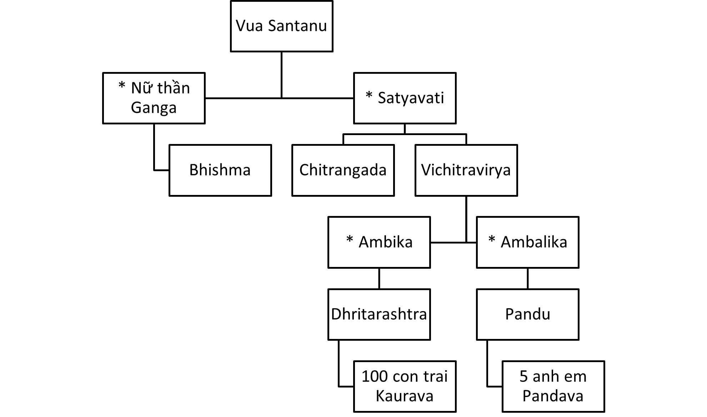

Sẽ không phải là quá khi nói rằng những con người và sự kiện được miêu tả trong văn học vĩ đại của một dân tộc có ảnh hưởng đến tính cách dân tộc đó một cách mạnh mẽ, không kém các anh hùng thật sự cũng như các sự kiện được lưu giữ trong lịch sử dân tộc. Người ta có thể khẳng định rằng văn học đóng vai trò quan trọng trong việc hình thành các lý tưởng, những lý tưởng mang lại cho nhân vật động lực phát triển. Trong lịch sử biến động của đất nước chúng ta, từ thời xa xưa những vĩ nhân đã được hình thành, nuôi dưỡng và đạt đến những chiến công lẫy lừng như trong Ramayana và Mahabharata. Trong hầu hết các gia đình Ấn Độ, trẻ em trước đây đều học thuộc những câu chuyện bất tử bằng tiếng mẹ đẻ của mình. Với sự ngọt ngào và nỗi buồn của Sita với Draupadi, lòng dũng cảm của Rama và Arjuna, lòng trung thành yêu thương cùng với đức tin của Lakshmana và Hanuman đã trở thành tấm gương cho các bạn trẻ vững bước trong cuộc sống.
Sự phức tạp ngày càng tăng của xã hội đã thay đổi mô hình cuộc sống gia đình giản dị trước kia. Tuy nhiên, ở đất nước chúng ta vẫn còn một số rất ít những người không biết đến Ramayana và Mahabharata. Mặc dù những câu chuyện luôn được thêu dệt thêm bởi trí tưởng tượng phong phú, thần thánh, huyền ảo của Kalakshepam (điểm giao thoa của lòng sùng tín nơi mà học giả và ca sĩ chuyên nghiệp đang kể về một câu chuyện cho khán giả nghe) cùng với phim ảnh để lưu giữ lại nhưng chỉ được chút ít phần nào chân giá trị cũng như hướng tiếp cận chân lý của Vyasa hay Valmiki. Mahabharata của Vyasa là một trong những những di sản cao quý nhất của chúng ta. Đó là niềm tin hằng ấp ủ của tôi để nghe câu chuyện đó một cách trung thực bằng tình yêu cùng với những ảnh hưởng tâm linh cao quý. Điều đó giúp củng cố tâm hồn, hướng chúng ta trở về cội nguồn của mình, không còn điều gì hơn thế khi vượt lên trên những phù phiếm của tham vọng, suy nghĩ nhỏ nhen, xấu xa, những giận dữ và hận thù.
Thực tế của cuộc sống được lý tưởng hóa bởi thiên tài và mang lại nguồn cảm hứng tạo ra các vở kịch, bài thơ hoặc những áng văn xuôi tuyệt vời. Vì văn học có liên quan mật thiết đến đời sống, gia đình nhân loại được chia thành các quốc gia, thế nên văn học cũng không thể thoát khỏi ảnh hưởng của những phân chia này.
Nhưng văn học cao nhất vượt lên trên mọi chủ nghĩa địa phương và thông qua đó, khi chúng ta hòa hợp đúng cách, chúng ta sẽ nhận ra sự thống nhất cốt yếu trong đại gia đình nhân loại. Mahabharata mang ý nghĩa như vậy. Nó thuộc về toàn thế giới mà không chỉ ở riêng Ấn Độ. Đối với người dân Ấn Độ, thực sự sử thi Mahabharata luôn là một nguồn sức mạnh tâm linh bất tận cho tất thảy. Học từ thời ấu thơ với sự tôn kính và tình yêu, điều đó luôn truyền cảm hứng cho những con người vĩ đại về những chiến công anh hùng cũng như giúp mọi người trở nên khiêm tốn đối diện với nghịch cảnh trong cuộc đời bằng sự kiên cường cùng đức tin bất diệt.
Mahabharata được sáng tác từ nhiều ngàn năm trước. Nhưng thế hệ những người kể chuyện luôn không ngừng bổ sung thêm vào trong kho tàng kiến thức rộng lớn của Vyasa. Tất cả văn học truyền miệng đều đáng được bảo tồn, mang tính lịch sử, địa lý, chính trị huyền thoại, thần học và triết học của gần ba mươi thế kỷ, luôn đóng một vai trò quan trọng trong dòng chảy lịch sử.
Thời đó, không có in ấn, không có việc chỉnh sửa, bổ sung các văn kiện cổ điển trứ danh được lưu trữ trong thư viện Quốc gia. Không tính đến việc bồi đắp, thêm thắt từ dân gian, Mahabharata luôn là một bản hùng ca cao quý, sở hữu đặc điểm của một sử thi thực sự, tuyệt vời, cùng với biến động mang tính định mệnh, những nhân vật anh hùng với hành động trang nghiêm theo phong thái tối cao.
Các nhân vật trong sử thi hành động với sinh khí của cuộc sống chân thực. Thật không thể tìm ra được bất cứ đâu những chân dung sống động như vậy trên bức tranh sơn dầu phong phú. Bhishma, một hiệp sỹ hoàn hảo; Drona đáng kính; Karna hào hiệp, tự phụ ; Duryodhana, người có lòng kiêu hãnh gian tà nhưng được trang bị bởi lòng dũng cảm phi thường trong nghịch cảnh; những tâm hồn cao quý Pandava với sức mạnh thần thánh cũng như khả năng chịu đựng; Draupadi, một nữ hoàng bất hạnh nhất mọi thời đại; Kunti, người mẹ cao thượng của những anh hùng trứ danh; Gandhari, người vợ tận tâm và người mẹ khốn khổ với những đứa con trai độc ác của Dhritarashtra, đây là một số nhân vật bất tử trong sử thi hào hùng, nhưng không bao giờ nhầm lẫn, một bức tranh sơn dầu của những số phận, nhân cách tuyệt đỉnh.
Tiếp đến, bản thân đức ngài Krishna vĩ đại, người mạnh mẽ nhất với thiên tính tỏa sáng trong từng uẩn khúc trong tính cách con người. Mục đích cao quý của Ngài lan tỏa khắp toàn bộ sử thi. Người ta có thể đọc thậm chí chỉ là bản dịch và có thể cảm nhận được sức mạnh của sự vĩ đại vô song và tính cao thượng của bài thơ.
Mahabharata cho thấy một nền văn minh tiến bộ và một xã hội phát triển cao, mặc dù ở trong thế giới cổ xưa, nhưng lại giống một cách kỳ lạ với Ấn Độ của thời đại chúng ta về các chân giá trị và lý tưởng. Ấn Độ được chia thành nhiều vương quốc độc lập.
Đôi khi, một vị vua kiệt xuất hơn hoặc tham vọng hơn những vị vua khác, sẽ đảm nhận danh hiệu hoàng đế, có được sự phục tùng từ những vương quốc khác, và đánh dấu tước hiệu của mình bằng một nghi lễ tế thần. Sự phục tùng nói chung là tự nguyện. Việc đảm đương tước hiệu hoàng đế không được phong tặng cho cương vị chúa tể. Hoàng đế phải là người đứng đầu trong số những vị vua cùng địa vị.
Nghệ thuật quân sự rất phát triển, sức mạnh và kỹ năng quân sự luôn được tôn kính. Chúng ta đọc trong Mahabharata của các đội hình phalăng chuẩn hóa và hàng loạt các di chuyển chiến thuật. Từng có một bộ luật chiến tranh danh dự, làm chuẩn mực cho cuộc chiến giữa các Kshatriya. Sự ra đời của thời kỳ Kali được đánh dấu bởi nhiều vi phạm về những quy ước trong trận chiến Kurukshetra, do tính ác liệt trong xung đột, thất vọng và mất mát. Một số đoạn ấn tượng nhất trong sử thi xoay quanh những vi phạm về dharma này.
Người dân sinh sống trong các thành thị và làng mạc. Các thành phố là trụ sở của các vị vua, hộ gia đình và nhân viên của họ. Từng có những cung điện và khu vườn xinh đẹp, cuộc sống mang đậm tính văn hóa và sang trọng. Có sự giao thương trong các thành phố, nhưng phần lớn người dân đều là những người làm nông nghiệp.
Bên cạnh cuộc sống thành thị và nông thôn, còn có một cuộc sống văn hóa rất cao trong khu rừng ẩn dật, xa xôi hẻo lánh, với những thầy tu khổ hạnh. Những đạo tràng ashrama này luôn thắp lên những ngọn lửa sáng ngời về học tập và rèn luyện, tu dưỡng tâm linh. Những con người trẻ tuổi thuộc tầng lớp quý tộc háo hức tìm kiếm môi trường giáo dục tại các đạo tràng ashrama. Còn người già đến đó cho sự bình an và thực hành tâm linh giác ngộ. Những trung tâm văn hóa này luôn được yêu mến bởi tầng lớp thống trị, không kẻ quyền thế nào trong số họ dám đối xử với các thành viên trong ẩn thất bằng bất kỳ thái độ nào ngoài sự tôn trọng và kính nể.
Phụ nữ được tôn vinh và can dự vào phần lớn cuộc sống của chồng và các con của họ. Chế độ đẳng cấp chiếm ưu thế, nhưng các cuộc hôn nhân liên cấp không hẳn là không tồn tại. Một số chiến binh vĩ đại nhất trong Mahabharata là các brahmana. Mahabharata đã nhào nặn nên các tuyến nhân vật và một nền văn minh của một trong những nơi đông dân nhất trên thế giới.
Mahabharata đã hoàn thành như thế nào, vẫn đang tiếp tục như thế nào để thực hiện chức năng này? Nhờ những chân kinh về dharma, giống như một sợi chỉ vàng xuyên suốt qua tất cả các diễn biến phức tạp trong sử thi. Bởi bài học trong đó mà lòng căm thù sinh ra hận thù, tham lam và bạo lực chắc chắn dẫn đến hủy diệt, rằng sự chinh phục đích thực duy nhất trong trận chiến chính là sự chiến đấu chống lại bản chất thấp hèn trong mỗi con người.
Bhagavan Vyasa, nhà biên soạn nổi tiếng của kinh Veda, là con trai của nhà hiền triết vĩ đại Parasara. Chính ngài đã mang đến cho thế giới bộ sử thi thần thánh Mahabharata.
Sau khi nghĩ ra Mahabharata, ông nghĩ về cách gửi gắm câu chuyện thiêng liêng này đến với thế giới. Ông thiền về Brahma, Đấng sáng tạo, Ngài đã hiển hiện trước mặt ông. Vyasa chắp tay, cúi đầu vái chào Ngài cầu nguyện:
“Hỡi Thượng đế nhân từ, con vừa nghĩ ra một tác phẩm tuyệt vời, nhưng không thể nghĩ ra ai có thể ghi chép lại tác phẩm này giúp con.” Brahma tán thưởng Vyasa và nói: “Hỡi hiền triết mến thương, hãy gọi Ganapati và thỉnh cầu anh ấy là người biên chép cho con.” Sau khi nói những lời này, Ngài biến mất. Hiền nhân Vyasa đã thiền định về Ganapati, người này xuất hiện trước nhà hiền triết. Vyasa tiếp đón anh ấy với lòng tôn kính và nhờ giúp đỡ.
“Hỡi đức ngài Ganapati, con sẽ đọc câu chuyện về Mahabharata và cầu xin ngài vui lòng viết nó ra cho con.” Ganapati trả lời: “Rất tốt. Ta sẽ làm theo những gì con muốn. Nhưng cây bút của ta không được dừng lại khi đang viết. Vì vậy, con phải đọc mà không được tạm dừng hoặc do dự. Ta chỉ có thể viết với điều kiện như vậy?”
Vyasa liền đồng ý, kiểm soát bản thân mình, tuy nhiên, với điều kiện: “Cứ như vậy đi, nhưng trước tiên ngài phải hiểu ý nghĩa của những gì con sẽ đọc cho ngài viết.”
Ganapati mỉm cười và đồng ý với điều kiện của Vyasa. Sau đó, nhà hiền triết bắt đầu hát vang câu chuyện về Mahabharata. Ông ấy đôi khi sẽ đọc một số khổ thơ phức tạp khiến Ganapati phải tạm dừng một chút để hiểu hết ý nghĩa câu thơ, còn Vyasa sẽ tận dụng khoảng thời gian này để sáng tác ra nhiều khổ thơ trong tâm trí mình. Vì vậy, Mahabharata đã được viết ra bởi Ganapati theo giọng đọc của Vyasa.
Đó là thời trước khi có chữ viết, khi trí nhớ của các học giả là kho lưu trữ kiến thức duy nhất. Vyasa lần đầu tiên dạy sử thi vĩ đại cho con trai mình, nhà hiền triết Suka. Sau này, ông đã giải thích cho nhiều môn đệ khác. Nếu không phải như vậy, cuốn sách có thể đã không còn được duy trì cho các thế hệ con cháu sau này.
Truyền thống kể rằng Narada đã kể câu chuyện Mahabharata cho các vị thần trong khi Suka giảng dạy cho các Gandharva, Rakshasa và Yaksha. Ai cũng biết rằng người đức độ và học thức Vaisampayana, một trong những đại đệ tử của Vyasa, tiết lộ sử thi vì phúc lợi cho toàn nhân loại
Janamejaya, con trai của vị vua vĩ đại Parikshit, đã tiến hành một đại lễ khổ hạnh trong đó Vaisampayana thuật lại câu chuyện theo yêu cầu của Janamejaya. Sau đó, câu chuyện khi được kể bởi Vaisampayana, được kể lại bởi Suta trong rừng Naimisa cho một nhóm các nhà hiền triết dưới sự dẫn dắt của Rishi Saunaka.
Suta nói trước nhóm triết gia rằng: “Tôi may mắn được nghe câu chuyện Mahabharata do Vyasa sáng tác để giảng dạy dharma nhân bản cùng với nhiều khía cạnh khác trong cuộc sống. Tôi nên kể câu chuyện đó cho các bạn.” Sau khi nói xong những lời này, các nhà tu hành khổ hạnh đã háo hức tụ tập xung quanh ông để được nghe về câu chuyện.
Suta tiếp tục: “Tôi đã nghe câu chuyện chính của Mahabharata và những chương hồi nhiều tập do Vaisampayana kể lại trong đại lễ tế thần do đức vua Janamejaya cử hành. Sau đó, tôi đã thực hiện một cuộc hành hương rộng rãi đến nhiều địa danh linh thiêng khác nhau và cũng đến thăm chiến trường nơi trận chiến vĩ đại được mô tả trong sử thi đã xảy ra. Bây giờ tôi về đây để gặp tất cả các bạn.” Sau đó ông tiếp tục kể toàn bộ câu chuyện Mahabharata cho đại chúng.
Sau khi Vua Santanu vĩ đại băng hà, Chitrangada trở thành vua của Hastinapura, rồi đến Vichitravirya kế vị. Vua Vichitravirya có hai con trai, Dhritarashtra và Pandu. Người anh cả bị mù bẩm sinh, Pandu, người con thứ lên ngôi kế vị ngai vàng. Trong thời gian trị vì của mình, Pandu đã phạm phải tội lỗi nào đó nên ngài đành phải vào rừng khổ hạnh cùng với hai người vợ, nơi ngài đã dành rất nhiều năm sám hối, đền tội.
Trong thời gian ở trong rừng, hai người vợ của Pandu là Kunti và Madri đã sinh hạ được năm người con trai, sau này được nhiều người biết đến với tên gọi là năm anh em Pandava. Pandu qua đời khi cả gia đình vẫn còn sống trong rừng. Các hiền triết đã nuôi nấng và dạy dỗ năm anh em Pandava suốt những năm tháng đầu đời của họ.
Khi Yudhishthira, người con trai cả được 16 tuổi, các hiền triết rishi dẫn cả năm anh em quay trở lại Hastinapura và giao cho người ông Bhishma của họ. Trong một thời gian ngắn, năm anh em Pandava đã tinh thông tất cả kinh Veda, Vedanta cũng như nhiều môn học nghệ thuật khác, đặc biệt là liên quan đến Kshatriya. Kaurava, những người con trai của Dhritarashtra mù lòa, bắt đầu trở nên ghen tị với năm anh em Pandava và luôn cố gắng bày mưu làm hại họ bằng nhiều cách khác nhau.
Cuối cùng, Bhishma, người đứng đầu gia tộc, người luôn cố gắng mang lại bầu không khí gia đình hòa hợp, sự thấu hiễu lẫn nhau cũng như hòa bình giữa đôi bên. Theo đó, năm anh em Pandava và nhóm Kaurava bắt đầu cai trị riêng từ thủ đô của mình là Indraprastha và Hastinapura.
Một thời gian sau, có xảy ra trò chơi xúc xắc giữa hai bên Kaurava và Pandava theo bộ luật danh dự Kshatriya thịnh hành thời bấy giờ. Sakuni, người thay mặt cho Kaurava chơi xúc xắc, đã đánh bại Yudhishthira. Do đó, năm anh em Pandava phải sống lưu vong trong khoảng thời gian mười ba năm. Họ phải rời bỏ vương quốc và đi đến khu rừng cùng với người vợ hiền tận tụy Draupadi.
Theo điều kiện của trò chơi, Pandava phải chịu mười hai năm sống trong rừng và còn năm thứ mười ba thì phải sống ẩn danh, không được để lộ tung tích của mình. Khi họ trở lại và yêu cầu Duryodhana về quyền thừa kế chính đáng của mình, thì khi đó Duryodhana, người đã chiếm đoạt vương quốc của năm anh em Pandava, từ chối trao trả lại vương quốc. Cuối cùng, dẫn đến trận chiến giữa đôi bên.
Năm anh em Pandava đã đánh bại Duryodhana và giành lại quyền kế thừa từ tổ tiên cha ông của mình. Pandava cai trị vương quốc trong ba mươi sáu năm. Sau đó, họ chuyển vương miện cho người cháu trai, Parikshit, rồi chuẩn bị vào rừng cùng với Draupadi, tất cả đều khiêm tốn dùng vỏ cây làm quần áo.
Đây là nội dung câu chuyện về Mahabharata. Trong sử thi cổ xưa và hùng vĩ của đất nước chúng ta, có rất nhiều những câu chuyện minh họa, cùng với những lời dạy siêu phàm, ngoài ra còn vô số câu chuyện xoay quanh về số phận của năm anh em Pandava.
Mahabharata trên thực tế là một đại dương chứa vô số ngọc ngà, châu báu. Cùng với Ramayana, đó đã trở thành suối nguồn sống động về đạo đức và văn hóa cho quê hương chúng ta.
“Nàng chắc chắn phải trở thành vợ của ta, cho dù nàng có là ai đi chăng nữa.” Vua Santanu vĩ đại nói với nữ thần Ganga, người đứng trước mặt nhà vua dưới hình dạng con người, nhà vua say mê trước vẻ đẹp thần thánh, siêu phàm của nữ thần.
Nhà vua tha thiết dâng hiến cho nàng vương quốc, sự giàu có của mình, dâng hiến tất cả những gì mình có, thậm chí còn cả chính cuộc sống của ngài.
Nữ thần Ganga đáp lại: “Hỡi đức vua cao quý, ta sẽ trở thành vợ của ngài. Nhưng với một số điều kiện: kể cả ngài hay bất kỳ ai khác đều không được phép hỏi ta là ai, hoặc ta từ đâu đến. Ngài cũng không được cản trở bất cứ điều gì ta làm dù tốt hay xấu, ngài không bao giờ được giận dữ với ta vì bất kỳ lý do gì. Ngài cũng không bao giờ được quyền làm điều gì trái với ý ta. Nếu ngài vi phạm một trong những điều kiện trên, khi đó ta sẽ rời bỏ ngài ngay lập tức. Ngài có đồng ý không?”
Vị vua đang trong lúc si mê đã thề rằng mình sẽ đồng ý tất cả, vì thế cô ấy đã trở thành vợ vua và họ cùng sống trong cung điện. Trái tim của nhà vua luôn bị quyến rũ, mê hoặc bởi sự khiêm tốn và duyên dáng của nàng, bởi tình yêu kiên định mà cô ấy dành cho mình. Vua Santanu và nữ thần Ganga đã sống một cuộc đời hạnh phúc trọn vẹn, không còn ý niệm gì về thời gian trôi qua.
Cô ấy sinh hạ cho nhà vua nhiều hoàng tử; nhưng mỗi hoàng tử sơ sinh vừa chào đời thì cô ấy lại mang đến dòng sông Ganges, rồi ném xuống sông, sau đó quay trở lại cung điện với một khuôn mặt tươi cười.
Santanu đầy kinh hãi và đau khổ trước hành động độc ác của người vợ mà mình hết mực yêu thương, nhưng chịu đựng tất cả trong im lặng vì nhớ đến lời hứa trước kia của mình. Ngài thường tự hỏi cô ấy là ai, cô ấy từ đâu đến và tại sao cô ấy lại hành động như một mụ phù thủy tàn độc như vậy. Bị ràng buộc bởi lời hứa của mình và tình yêu vô bờ bến mà ngài dành cho cô ấy, ngài không thốt ra bất cứ lời phàn nàn hay quở trách gì.
Vì vậy, cô ấy đã giết tất thảy bảy hoàng tử sơ sinh. Khi hoàng tử thứ tám vừa chào đời, cô ấy chuẩn bị ném xuống sông Ganges, Santanu không thể chịu đựng thêm được nữa.
Ngài uất hận gào lên: “Dừng lại, dừng lại, tại sao cô lại có thể thực hiện việc giết người khủng khiếp, tàn độc như vậy đối với chính con đẻ ngây thơ vô tội của mình?” Với sự bột phát không thể kiềm chế này, nhà vua đã ngăn cản cô ấy giết chết nốt vị hoàng tử vừa mới chào đời.
Nữ thần Ganga đáp: “Hỡi đức vua vĩ đại, ngài đã không giữ lời hứa của mình, vì trái tim của ngài dành cho đứa trẻ này, và ngài không cần ta nữa. Ta sẽ đi. Ta sẽ không giết đứa trẻ này, nhưng hãy nghe câu chuyện của ta trước khi ngài có thể đưa ra bất kỳ lời phán xét nào. Ta, người đã bị ép buộc phải tham gia vở kịch này với một vai trò đáng ghét bởi lời nguyền của Vasishtha, chính là nữ thần Ganga, được con người và thần tiên tôn thờ. Vasishtha đã nguyền rủa tám Vasu phải tái sinh trong thế giới trần tục, cảm động trước những lời cầu xin khẩn khoản của họ, ta đồng ý trở thành mẹ của họ khi tái sinh xuống hạ giới. Ta mang chúng đến với ngài và ngài đã chứng kiến những gì xảy ra. Ngài sẽ đến được giai tầng cao quý hơn vì những hy sinh mà ngài dành cho tám vị Vasu này. Ta sẽ nuôi dưỡng và dạy dỗ người con thứ tám này cho ngài, một thời gian nữa, ta sẽ trả lại ngài vị hoàng tử như một món quà của ta.”
Sau khi nói những lời này, nữ thần biến mất cùng đứa trẻ. Chính đứa trẻ này, về sau trở nên nổi tiếng với tên gọi Bhishma. Đây là cách các Vasu phải gánh chịu lời nguyền của Vasishtha. Các Vasu đi nghỉ mát cùng với vợ của mình trên một ngọn núi nơi ẩn thất của Vasishtha ở đó. Một trong số họ nhìn thấy con bò của Vasishtha, tên là Nandini đang gặm cỏ.
Vẻ đẹp thần thánh của con bò đã thu hút anh ta và anh ấy đã chỉ con bò đó cho mọi người cùng xem. Tất cả đều trầm trồ khen ngợi con bò duyên dáng và một trong số các bà vợ đã yêu cầu chồng của mình lấy trộm con bò.
Anh ta trả lời: “Chúng ta là những vị thần deva, chúng ta cần con bò cho sữa sao? Con bò này thuộc về nhà hiền triết Vasishtha, chủ nhân của toàn bộ vùng đất này. Con người sẽ chắc chắn trở thành bất tử nếu uống sữa của bò Nandinii. Nhưng điều này không có lợi gì cho chúng ta, chúng ta vốn là những vị thần bất tử. Liệu điều đó có xứng đáng để chúng ta phải chuốc lấy cơn thịnh nộ của ngài Vasishtha chỉ đơn thuần làm thỏa mãn một ý thích nhất thời?”
Nhưng cô ấy không vì thế mà từ bỏ ý định điên rồ của mình. “Ta muốn có được một người bạn đồng hành thân yêu trong thế giới phàm trần. Đó là vì lợi ích của con bò mà ta đưa ra yêu cầu này. Trước khi Vasishtha trở lại, chúng ta sẽ trốn thoát cùng con bò. Ngài chắc chắn phải làm điều này vì ta, đó là ước nguyện yêu dấu nhất đời của ta.” Cuối cùng chồng cô ấy cũng đành phải nhượng bộ. Tất cả tám Vasu đều liên kết với nhau lấy trộm con bò và bê của Vasishtha.
Khi Vasishtha trở về đạo tràng ashrama của mình, ngài thấy nhớ con bò và con bê, bởi vì chúng là thành phần không thể thiếu được cho các nghi lễ hàng ngày của ngài.
Chẳng bao lâu, ông ấy dùng quyền năng nhãn thông trong thực hành yoga của mình để nhìn thấu tất cả những gì đã xảy ra. Sự phẫn nộ bùng lên kích động ông ấy thốt ra một lời nguyền chống lại các Vasu. Nhà hiền triết, người mà tài sản duy nhất là sự khổ hạnh hà khắc, nguyền rủa rằng các Vasu sẽ bị đọa đày tái sinh trong thế giới trần tục. Khi các Vasu biết được về lời nguyền, họ ăn năn hối lỗi thì cũng quá muộn, ngay lập tức họ liền cầu xin lòng thương xót, nhân từ của nhà hiền triết và xin được tha thứ.
Vasishtha trả lời rằng: “Lời nguyền chắc chắn vẫn phải xảy ra. Prabhasa, người Vasu bắt giữ con bò của ta, sẽ phải sống lâu trên thế giới với tất cả vinh quang, nhưng còn những người khác sẽ được giải thoát khỏi lời nguyền ngay khi được sinh ra. Lời của ta không thể không có hiệu nghiệm, nhưng ta sẽ giảm nhẹ lời nguyền đến mức độ này.”
Sau đó, Vasishtha quyết định mang tâm trí trở về trạng thái khổ hạnh hà khắc của mình, dẫu quyền năng khổ hạnh đã bị suy giảm đi chút đỉnh do sự tức giận nổi lên trong tâm trí. Các vị thánh, người tu hành khổ luyện đạt được sức mạnh để nguyền rủa, nhưng mỗi khi thực thi quyền năng này đều làm giảm kho công đức trong tu tập của họ.
Các Vasu cảm thấy nhẹ nhõm phần nào, rồi đến tìm nữ thần Ganga và cầu xin cô ấy: “Chúng con cầu xin nữ thần hãy trở thành mẹ của chúng con. Vì phúc lợi của mình, chúng con cầu xin người hãy xuống trái đất và kết hôn với một người đàn ông xứng đáng. Hãy ném chúng con xuống nước ngay khi chúng con chào đời và giải phóng chúng con khỏi lời nguyền.” Nữ thần cảm động liền ban cho lời cầu nguyện của họ, xuất hiện trên trái đất và trở thành vợ của Santanu.
Khi nữ thần Ganga rời bỏ Santanu và biến mất với vị hoàng tử thứ tám, nhà vua liền từ bỏ mọi thú vui nhục dục và cai trị vương quốc trong tinh thần khổ hạnh. Một ngày nọ, ngài đang đi dạo thẫn thờ dọc theo bờ sông Ganges, đột nhiên ngài nhìn thấy một cậu bé được trời phú cho vẻ đẹp và hình thức của Devendra, vua của các vị thần.
Đứa trẻ đang chơi đùa vui vẻ bằng cách rút một nắm tên, băng qua dòng sông Ganges đang chảy cuồn cuộn, cách cậu bé chơi đùa với dòng sông hùng vĩ giống như con trẻ đang nhõng nhẽo, vòi vĩnh bên người mẹ nuông chiều. Còn nhà vua, người đang đứng ngây ra một cách bất động trước cảnh tượng kinh ngạc này, nữ thần Ganga hiển lộ bản thân mình và đưa cậu bé chính là con ruột của nhà vua cho ngài. Nữ thần nói: “Hỡi đức vua, đây là vị hoàng tử thứ tám mà ta đã sinh hạ cho ngài. Ta đã nuôi dưỡng và giáo dục cậu bé đến bây giờ. Tên cậu bé là Devavrata. Cậu bé đã thành thạo, tinh thông nghệ thuật quân sự và ngang bằng với Parasurama về quyền năng. Cậu ấy đã học tất thảy kinh Veda, Vedanta từ Vasishtha, thông thạo nghệ thuật, khoa học mà Sukra biết đến. Hãy mang cậu bé này về, đó là một anh hùng vĩ đại cũng như bậc thầy chính trị.” Sau đó, cô ấy chúc phúc cho cậu bé, giao cậu bé cho nhà vua, rồi biến mất.
Với niềm vui sướng hạnh phúc mà nhà vua vừa nhận được cho mình và cho cả vương quốc là một vị hoàng tử trẻ tuổi, tài năng xuất chúng Devavrata, rồi phong cho cậu bé làm Yuvaraja, người thừa kế ngai vàng.
Bốn năm trôi qua trong yên bình. Một ngày nọ, khi nhà vua đang đi dạo dọc bờ sông Yamuna, không khí đột nhiên tràn ngập một mùi hương thơm ngọt ngào thần thánh đến nỗi nhà vua phải đi tìm xung quanh xem mùi hương đó xuất phát từ đâu, ngài đã truy tìm vết tích mùi hương đến nơi một thiếu nữ yêu kiều đến độ cô ấy dường như là một nữ thần. Một vị thánh đã ban cho cô ấy ân huệ rằng một loại hương thơm thần thánh luôn phát ra từ người cô ấy, và bây giờ mùi hương đó lan tỏa, tràn ngập khắp khu rừng.
Từ lúc nữ thần Ganga rời đi, nhà vua luôn kiểm soát mọi cảm xúc của mình, nhưng khi nhìn thấy người thiếu nữ với vẻ đẹp thiêng liêng thần thánh đã phá vỡ mọi sự tiết chế trong cảm xúc, khiến ngài không thể chế ngự được ham muốn của mình. Ngài lại gần và hỏi cô ấy làm vợ.
Thiếu nữ trả lời: “Tôi là một người đánh cá, con gái của trưởng thôn làng chài. Mong ngài vui lòng đến hỏi và xin phép cha tôi.” Giọng cô ấy ngọt ngào như chính vẻ bề ngoài của cô ấy vậy.
Cha cô gái là một người đàn ông sắc sảo, tinh khôn.
Ông ta nói: “Hỡi đức vua, không có nghi ngờ gì về điều đó rằng cô gái này cũng giống như bao cô gái khác, sẽ phải kết hôn với ai đó và ngài thực sự xứng đáng với cô ấy. Tuy nhiên, ngài vẫn phải thực hiện một lời hứa với ta trước khi ta có thể đồng ý với đề nghị của ngài.” Santanu trả lời: “Nếu đó là một lời hứa, ta sẽ thực hiện nó.”
Trưởng ngư dân nói: “Đứa trẻ được sinh ra bởi người thiếu nữ này sẽ lên làm vua kế vị ngài sau này.”
Mặc dù si mê cô gái mãnh liệt, nhưng nhà vua vẫn không thể thực hiện lời hứa này, vì điều đó có nghĩa là gạt Devavrata thần thánh sang một bên, con trai của nữ thần Ganga, người được hưởng quyền thừa kế vương miện chính thống.
Đó là một cái giá mà không thể không xấu hổ. Do đó, nhà vua bèn buồn bã quay trở lại thủ đô Hastinapura và ốm tương tư. Nhà vua không cho ai biết về vấn đề này mà chịu đựng ốm yếu, tiều tụy trong im lặng.
Một ngày nọ, Devavrata băn khoăn hỏi cha mình: “Người cha kính yêu của con, cha có tất cả những gì trái tim mình mong muốn. Vậy tại sao người nhìn có vẻ không được vui? Nhìn cha giống như một người đang trốn tránh nỗi buồn thầm kín?”
Vua cha đáp lời: “Con trai yêu dấu, những gì con nói đều đúng. Ta thực sự bị tra tấn về tinh thần, đau khổ và lo lắng. Con là con trai duy nhất của ta, tâm trí con luôn bận tâm biết bao hoài bão quân sự. Cuộc sống trên thế giới không có gì là chắc chắn, chiến tranh không ngừng xảy ra. Nếu bất cứ điều gì không may mắn xảy đến với con thì gia đình của chúng ta sẽ diệt vong. Tất nhiên, con đáng giá bằng cả trăm người con trai. Mặc dù vậy, những người am hiểu kinh thánh đều nói rằng trong thế giới vô thường này, có duy nhất một đứa con trai cũng giống như việc không có đứa con trai nào vậy. Thật không thích hợp khi sự tồn tại của gia tộc chúng ta chỉ phụ thuộc vào một cuộc sống duy nhất và trên tất cả những điều ta mong muốn là sự ổn định bền vững của gia tộc chúng ta. Đây là nguyên nhân khiến ta thấy bất an, khổ tâm.” Vua cha nói lập lờ, quanh co, cảm thấy xấu hổ khi tiết lộ toàn bộ câu chuyện cho con trai mình.
Devavrata cũng nhận ra rằng chắc hẳn phải có một nguyên nhân sâu xa nào đó khiến vua cha phải khổ tâm đến vậy. Devavrata liền chất vấn người đánh xe của nhà vua và biết được về cuộc gặp gỡ giữa vua cha với người thiếu nữ làng chài trên dòng sông Yamuna. Cậu liền tìm đến trưởng ngư dân và thay cha mình cầu hôn cô gái.
Người đánh cá tôn trọng nhưng kiên quyết: “Con gái tôi thực sự phù hợp để làm vợ vua. Vậy thì con trai cô ấy không thể trở thành vua sao? Nhưng cậu đã được phong làm người thừa kế rõ ràng và theo lẽ tự nhiên sẽ kế vị vua cha. Điều đó cản trở quyết định của tôi.”
Devavrata trả lời: “Tôi hứa rằng con trai được sinh bởi con gái ông sẽ trở thành vua. Và tôi tự nguyện từ bỏ quyền thừa kế ngôi vua của mình.” Và rồi cậu ấy liền thề với hàm ý như vậy.
Trưởng ngư dân nói: “Hỡi những người tốt nhất của chủng tộc Bharata, cậu đã thực hiện những gì mà bất cứ ai trong hoàng tộc cũng không thể thực hiện được điều đó cho đến bây giờ. Cậu thực sự là một anh hùng. Cậu có thể dẫn con gái tôi đến với vua cha của mình. Tuy nhiên, hãy kiên nhẫn lắng nghe những lời này của tôi, điều mà tôi sắp nói với tư cách là cha của cô gái.”
“Tôi chắc chắn rằng cậu sẽ giữ lời hứa của mình, nhưng làm sao tôi có thể tin được rằng những đứa con của cậu sau này sẽ từ bỏ quyền kế vị của chúng? Con trai của cậu đương nhiên sẽ là những anh hùng dũng mãnh như cậu, và sẽ khó cưỡng lại nếu chúng tìm cách chiếm lấy vương quốc bằng vũ lực. Đây là mối hoài nghi đang dày vò tôi.”
Khi nghe được vấn đề nan giải như vậy từ cha cô gái, Devavrata, người cố gắng hoàn thành mong muốn của nhà vua, đã thực hiện sự từ bỏ tối cao của bản thân. Cậu ấy đưa cánh tay lên cao trước mặt cha cô gái mà thề rằng: “Ta sẽ không bao giờ kết hôn và ta sẽ dành cả cuộc đời mình tịnh giới.”
Ngay khi cậu ấy thốt ra những lời thề từ bỏ này, các vị thần đua nhau ban phát hoa lên đầu cậu ấy, rồi cùng nhau hô vang “Bhishma”, “Bhishma” khắp tam giới. “Bhishma” nghĩa là người cam kết thực hiện lời thề khủng khiếp và hoàn thành lời thề đó. Tên gọi này đã trở thành biểu tượng nổi tiếng của Devavrata từ thời điểm đó. Sau khi thề xong, con trai của nữ thần Ganga đã dẫn thiếu nữ Satyavati về cho cha mình.
Hai người con trai được sinh ra bởi Satyavati với Santanu là Chitrangada và Vichitravirya, sau đó hai người này lần lượt kế vị ngôi vua. Vichitravirya có hai người con trai: Dhritarashtra và Pandu, được sinh ra bởi hai người vợ: Ambika và Ambalika. Dhritarashtra có một trăm người con trai, được gọi là Kaurava. Pandu có năm người con trai nổi tiếng, được biết đến với tên gọi Pandava. Bhishma sống rất thọ, được mọi người tôn vinh như người ông nội cho đến khi kết thúc trận chiến Kurukshetra lừng danh.
Gia phả dòng tộc

Chitrangada, con trai của Satyavati, đã hy sinh trong trận chiến với Gandharva. Nhà vua chết mà không có con trai nối dõi, em trai của cậu ấy là Vichitravirya trở thành người thừa kế hợp pháp và lên ngôi vua một cách hợp lệ. Vì cậu ấy lên ngôi khi còn nhỏ tuổi, Bhishma phải cai quản vương quốc cho đến khi nhà vua đủ tuổi trưởng thành.
Khi Vichitravirya đến tuổi kết hôn, Bhishma chuẩn bị sẵn sàng đi hỏi vợ cho nhà vua. Và khi ngài nhận được thông báo rằng các cô con gái của vua Kasi đã sẵn sàng chọn chồng theo phong tục Kshatriya cổ xưa, ngài liền đến đó để dành cô dâu về cho em trai mình.
Các vị vua từ Kosla, Vanga, Pundra, Kalinga cũng như các hoàng tử, vương công quý tộc khác cũng sẵn sàng đi đến Kasi tham dự lễ swayamvara trong những bộ trang phục đẹp nhất. Các công chúa từ trước đến nay luôn nổi tiếng về nhan sắc lẫn tài năng khiến cho cuộc thi trở nên hết sức khốc liệt.
Bhishma vốn rất nổi tiếng trong giới Kshatriya như một kỵ binh hùng mạnh. Ban đầu, mọi người nghĩ rằng Bhishma - người anh hùng xuất chúng đến đây chỉ đơn thuần là chứng kiến lễ hội swayamvara. Nhưng khi họ thấy rằng Bhishma cũng là một người đến đây để tham gia cuộc tuyển chọn chồng của các nàng công chúa, các hoàng tử trẻ đều cảm thấy thất vọng và chán nản. Họ đã không biết rằng ngài đến đây thực sự là vì lợi ích của em trai mình, Vichitravirya.
Các hoàng tử bắt đầu phản đối Bhishma: “Hậu duệ dòng dõi Bharata xuất chúng và thông thái nhất quên rằng ngài quá già và quên cả lời thề độc thân của mình. Ông già này sẽ làm gì với lễ swayamvara? Thật là nhục nhã!” Còn các nàng công chúa đang kén chồng chỉ đưa mắt nhìn ngài, rồi quay đi hướng khác.
Cơn thịnh nộ của Bhishma bùng lên. Ngài thách đấu tất cả các hoàng tử đang có mặt tại đây và đánh bại họ. Sau đó, ngài đưa cả ba nàng công chúa bằng xe ngựa lên đường trở về Hastinapura.
Nhưng trước khi ngài có thể đi quá xa, Salva, vua của nước Saubala, người luôn gắn bó với Amba, đã chặn đường và chiến đấu chống lại. Vì nàng công chúa đó đã tâm nguyện chọn Salva làm chồng. Sau cuộc chiến gay gắt, không có gì lạ Salva đã bị thất bại, vì Bhishma là một cung thủ vô song. Nhưng theo yêu cầu của nàng công chúa, Bhishma đã tha mạng cho anh ta.
Trở về Hastinapura với ba nàng công chúa, Bhishma đã chuẩn bị cho cuộc hôn nhân của họ với Vichitravirya. Khi tất cả đều có mặt đông đủ cho hôn lễ, Amba cười chế nhạo Bhishma và đã nói với ngài rằng: “Hỡi con trai của nữ thần Ganga, ngài có nhận thức được những gì cấm kỵ trong thánh thư hay không. Trong thâm tâm, ta đã nguyện chọn Salva, vua của Saubala, làm chồng. Ngài đã dùng vũ lực đưa ta về đây. Biết như vậy, hãy làm theo những gì mà ngài đã được học trong kinh thánh.”
Bhishma chấp nhận sự phản đối của cô ấy, liền gửi cô ấy về cho Salva với đoàn hộ tống thích hợp. Cuộc hôn nhân của Ambika và Ambalika, hai người em gái với Vichitravirya đã được tổ chức một cách trịnh trọng.
Amba vui mừng trở về đoàn tụ với Salva và nói với anh ta những gì đã xảy ra: “Ta đã thầm chọn ngài làm chồng của mình ngay từ ban đầu. Bhishma gửi ta về cho ngài. Hãy cưới ta làm vợ theo kinh tâm linh sastra.”
Salva trả lời: “Bhishma đã đánh bại ta trước mặt tất cả mọi người và mang nàng đi. Ta đã bị làm nhục. Vì vậy, bây giờ ta không thể tiếp nhận nàng làm vợ của ta được nữa. Hãy quay lại với Bhishma và làm theo những gì ông ấy ra lệnh.” Nói xong những lời này, Salva liền gửi cô ấy trở lại cho Bhishma.
Cô ta trở lại Hastinapura và nói với Bhishma về những gì vừa xảy ra. Ngài cố gắng thuyết phục Vichitravirya cưới cô ấy. Nhưng Vichitravirya thẳng thắn từ chối kết hôn với một cô gái có trái tim dành cho kẻ khác.
Sau đó, Amba quay sang Bhishma và mong muốn Bhishma có thể cưới mình làm vợ. Bhishma không thể phá bỏ lời thề của mình, ngài xin lỗi vì không thể cưới Amba làm vợ. Sau một hồi thuyết phục Vichitravirya thay đổi quyết định trở nên vô ích, ngài nói với cô ấy rằng không còn cách nào khác ngoài việc cô ấy nên quay trở về với Salva và tìm cách thuyết phục anh ta.
Điều này ban đầu cô ấy quá tự cao để làm, nhưng sau nhiều năm sống ở Hastinapura, cuối cùng trong tận cùng của tuyệt vọng, cô ấy đã tìm đến Salva, còn anh ta vẫn kiên quyết từ chối.
Amba với đôi mắt xen buồn trải qua sáu năm cay đắng trong sự khốn cùng với niềm hy vọng mù mịt. Còn trái tim cô ấy luôn dày vò trong đau khổ, tất cả sự ngọt ngào trong cô ấy chuyển sang hiềm oán, hận thù nghiệt ngã đối với Bhishma, coi Bhishma là nguyên nhân khiến cho cuộc đời của mình trở nên tàn tạ.
Cô ấy đã tìm kiếm trong vô vọng một người anh hùng trong số các hoàng tử để có thể chiến đấu và giết Bhishma để trả thù cho những bất hạnh của mình, nhưng thậm chí các chiến binh dũng mãnh nhất thời bấy giờ cũng phải e sợ Bhishma và không ai dám để tâm đến lời cầu khẩn của cô ấy.
Cuối cùng, cô ấy phải dùng đến khổ hạnh khắc nghiệt để có được ân sủng từ thần Subrahmanya. Vị thần nhân từ xuất hiện trước mặt cô ấy và ban cho một vòng hoa sen luôn tươi tắn, nói rằng người nào đeo vòng hoa này sẽ trở thành kẻ thù của Bhishma.
Amba nhận lấy vòng hoa và một lần nữa cố gắng tìm kiếm một Kshatriya có thể chấp nhận món quà vòng hoa của vị thần sáu mặt để đấu tranh cho mình. Nhưng không ai có đủ lòng gan dạ, dũng cảm đối kháng với Bhishma.
Cuối cùng, cô đến gặp Vua Drupada, người này cũng từ chối lời khẩn cầu của cô ấy. Sau đó cô ấy treo vòng hoa ở cổng cung điện của Drupada và đi vào rừng. Ở đó, cô gặp được một số nhà tu hành khổ hạnh và kể cho họ nghe về câu chuyện đau buồn của mình, họ khuyên cô nên tìm đến Parasurama để van xin ân huệ. Cô ấy nghe theo lời khuyên của mọi người.
Khi nghe câu chuyện buồn về cuộc đời cô gái, Parasurama đã cảm động với lòng trắc ẩn và nói: “Cô gái đáng thương, con muốn gì? Ta có thể yêu cầu Salva kết hôn với con nếu con muốn.”
Amba liền nói: “Không, con không muốn điều đó. Con không còn mong muốn cho hôn nhân, tổ ấm hoặc hạnh phúc. Bây giờ trong cuộc sống còn một điều có ý nghĩa với con, đó là trả thù Bhishma. Ân sủng duy nhất mà con tìm kiếm chính là cái chết của Bhishma.”
Parasurama vô cùng cảm động trước nỗi thống khổ của cô ấy và vì lòng căm thù dai dẳng của ngài đối với chủng tộc Kshatriya, tán thành ý kiến cô gái chiến đấu với Bhishma. Đó là trận chiến dai dẳng và cân sức giữa hai con người vĩ đại nhất thời bấy giờ. Nhưng cuối cùng Parasurama phải thừa nhận thất bại. Ngài nói với Amba rằng: “Ta đã làm tất cả những gì có thể và ta đã thất bại. Hãy trông cậy vào lòng thương xót của Bhishma. Đó là cách duy nhất dành cho con.”
Bị đốt cháy tâm can bởi nỗi bất hạnh và thịnh nộ, cố gắng sống sót chỉ bởi niềm đam mê trả thù, Amba đã đến Himalaya và thực hành khổ hạnh nghiêm ngặt để có được ân sủng từ thần Shiva, bây giờ khi mà tất cả sự trợ giúp từ con người đều không thể giúp gì được cho cô ấy. Thần Shiva xuất hiện trước cô ấy và ban cho ân huệ, đó là trong lần tái sinh tiếp theo của mình cô ấy sẽ giết được Bhishma.
Amba không còn kiên nhẫn để chờ được tái sinh khi mà trái tim cô ấy đang khao khát mãnh liệt. Cô ấy đã làm một giàn thiêu và lao mình vào ngọn lửa rực cháy khi mà ngọn lửa thù hận trong trái tim cô ấy còn mạnh mẽ, dữ dội hơn.
Nhờ ân sủng của thần Shiva, Amba đã được tái sinh làm con gái của Vua Drupada. Vài năm sau, cô ấy nhìn thấy vòng hoa sen luôn tươi tắn vẫn treo ở cổng cung điện mà không ai dám chạm vào do sợ hãi. Cô ấy đeo nó quanh cổ. Cha cô là vua Drupada cảm thấy kinh ngạc trước sự táo bạo và liều lĩnh của con gái, điều mà ngài thấy sợ sẽ rơi đầu trước cơn thịnh nộ của Bhishma. Ngài đành phải gửi con gái của mình lưu vong rời khỏi thành phố, sống ẩn dật trong rừng. Cô đã thực hành khổ luyện trong rừng, và dần chuyển thành nam giới, sau đó được biết đến với tên gọi là chiến binh Sikhandin. Sau này, Sikhandin trở thành người đánh xe ngựa của Arjuna để tấn công Bhishma trên chiến trường Kurukshetra. Bhishma biết rằng Sikhandin sinh ra là nữ giới, và đúng với tinh thần hiệp sĩ của mình, ngài không chiến đấu với Sikhandin cho dù trong bất kỳ hoàn cảnh nào.
Vì vậy, Arjuna có thể chiến đấu dưới sự che chắn của Sikhandin và đánh bại Bhishma. Đặc biệt là vì Bhishma biết rằng thời gian thử thách lâu dài và mệt mỏi trên trái đất của mình đã hoàn tất, ngài liền đồng ý để bị đánh bại.
Khi những mũi tên bắn vào Bhishma trong trận chiến cuối cùng, ngài chọn những mũi tên đâm vào mình sâu nhất và nói: “Đây là mũi tên của Arjuna chứ không phải của Sikhandin.” Bằng cách đó, chiến binh vĩ đại đã gục xuống.
Vào thời cổ đại, có một trận chiến khốc liệt giữa các vị thần hay deva với thế lực hắc ám asura để giành quyền lãnh chúa trong tam giới. Cả hai bên tham chiến đều những bậc thầy lừng lẫy. Brihaspati là người vượt trội về kiến thức về kinh Veda, là lãnh đạo tinh thần của các deva, trong khi các asura dựa vào trí tuệ uyên thâm của Sukracharya.
Các Asura có lợi thế vô song, chỉ riêng Sukracharya đã sở hữu bí mật của Sanjivini mà có thể làm người chết sống lại. Vì vậy, những người asura bị chết trong trận chiến sẽ được hồi sinh, hết lần này đến lần khác để tiếp tục trận chiến với các vị thần. Các vị thần gặp phải bất lợi to lớn trong trận chiến kéo dài với kẻ thù tự nhiên của mình.
Họ đến gặp Kacha, con trai của Brihaspati để cầu mong sự trợ giúp của anh ấy. Họ cầu xin anh ấy cố gắng thuyết phục Sukracharya nhận mình làm học trò. Một lần tâm sự với nhau, anh ấy đã biết được bí mật của Sanjivini cho dù bằng mưu kế hay lừa phỉnh, và loại bỏ những điều bất lợi mà các vị thần đang phải chịu đựng.
Kacha liền đồng ý với yêu cầu của họ và lên đường gặp Sukracharya, người sống ở thủ đô Vrishaparva, vua của các asura. Kacha đến nhà Sukra, sau nghi thức chào hỏi, rồi nói chuyện với ông ta: “Tôi là Kacha, cháu trai của nhà hiền triết Angiras và con trai của Brihaspati. Tôi là một brahmacharin mong nhận được sự dạy dỗ từ ngài.”
Đó là luật mà người thầy thông thái sẽ không từ chối một học trò xứng đáng, người muốn tìm kiếm tri thức từ mình. Vì vậy, Sukra đã đồng ý và nói rằng: “Kacha, ngươi thuộc về một gia tộc có uy tín. Ta sẵn lòng chấp nhận ngươi là học trò, bằng cách như vậy, ta cũng thể hiện sự tôn trọng của ta đối với Brihaspati.”
Kacha dành nhiều năm dưới sự dạy dỗ của Sukracharya, thực hiện hoàn hảo các công việc nhà theo đúng quy định đối với người thầy. Sukracharya có một cô con gái đáng yêu tên là Devayani, người mà ông ấy vô cùng yêu mến. Kacha luôn tận tâm cống hiến hết mình để làm hài lòng và phục vụ cô ấy bằng những bài ca, điệu nhảy cùng những trò chơi thú vị, cuối cùng anh ấy cũng dành được tình cảm của cô gái mà không tổn hại đến lời thề brahmacharya.
Khi các asura biết chuyện này, họ trở nên lo lắng vì họ nghi ngờ mục tiêu của Kacha là bằng cách nào đó có được bí mật về Sanjivini của Sukracharya. Đương nhiên họ phải tìm cách ngăn chặn một tai họa như vậy có thể xảy ra.
Một ngày nọ, khi Kacha đang chăn thả gia súc cho thầy mình, các asura bắt anh ta, xé anh ta thành từng mảnh và ném thịt anh ta cho những con chó. Khi gia súc trở về không có Kacha, Devayani ngập tràn lo lắng, liền chạy đến cha than khóc kêu gào: “Mặt trời đã lặn, nghi lễ ngọn lửa thiêng về đêm của cha cũng đã được thực hiện; còn Kacha vẫn chưa trở về nhà. Đàn gia súc đã tự về. Con e rằng có việc gì đó không hay đã xảy đến với Kacha. Con không thể sống thiếu anh ấy.”
Người cha trìu mến liền sử dụng phép màu của Sanjivini và gọi chàng trai trẻ đã chết sống lại trở về. Ngay lập tức Kacha sống lại và chào người thầy với nụ cười rạng rỡ. Devayani hỏi lý do vì sao anh ta lại về trễ, anh ấy nói rằng khi đang chăn thả gia súc thì các asura bất ngờ ập đến và giết chết mình. Làm thế nào anh ấy sống lại thì anh ấy không hề hay biết, nhưng giờ đây anh ấy đã sống lại và có mặt ở đây.
Vào một dịp khác, Kacha đi vào rừng hái hoa cho Devayani, một lần nữa các asura lại đến bắt và giết chết anh ta, rồi nghiền cơ thể anh ta thành một hỗn hợp sệt, trộn hỗn hợp đó với nước biển. Vì rất lâu anh ấy không trở về, Devayani vội vã chạy đến bên cha cô, người đã đưa Kacha trở lại cuộc sống bởi phép thuật của Sanjivini và nghe anh ấy kể lại tất cả những gì đã xảy ra trong rừng.
Lần thứ ba, các asura lại đến giết Kacha, rồi họ nghĩ ra một cách thông minh rằng hãy thiêu xác anh ta, trộn tro trong rượu và dâng lên mời Sukracharya. Người thầy uống hết rượu mà không chút nghi ngờ gì. Một lần nữa những con bò trở về nhà mà không có người trông coi, và một lần nữa Devayani lại chạy đến tìm cha cầu cứu cho Kacha.
Sukracharya cố gắng an ủi con gái một cách vô ích. Ông nói: “Mặc dù ta đã nhiều lần cứu Kacha sống lại, nhưng các asura dường như luôn muốn giết hại anh ta. Cái chết là điều hiển nhiên, người khôn ngoan như con không nên đau buồn vì chuyện đó. Cuộc sống là tất cả những gì hiện có để con tận hưởng với tuổi trẻ, vẻ đẹp và thiện chí của thế giới.”
Devayani yêu thương Kacha một cách sâu sắc, kể từ khi thế giới bắt đầu, những lời thông thái chưa bao giờ chữa lành được nỗi đau vì mất mát người thân yêu. Cô ấy nói: “Kacha, cháu trai của Angiras, con trai của Brihaspati là một chàng trai vô tội, người đã cống hiến hết mình và không mệt mỏi phục vụ gia đình chúng ta. Con yêu anh ấy tha thiết và bây giờ anh ấy đã bị giết, cuộc sống đối với con trở nên ảm đạm, không thể chịu đựng được. Vì thế con sẽ đi theo anh ấy.” Sau đó, Devayani bắt đầu nhịn ăn. Sukracharya cảm thấy thương tâm trước nỗi buồn của con gái, khiến ông trở nên rất tức giận với các asura, cảm thấy tội ác ghê tởm khi giết chết một brahmana sẽ có ảnh hưởng nghiêm trọng đến vận may của họ.
Ông ấy sử dụng phép thuật Sanjivini và gọi Kacha sống lại. Bằng sức mạnh của Sanjivini, Kacha bị phân tách vào trong rượu mà Sukracharya đã uống trước đó từ từ hồi sinh, nhưng bị ngăn cản không thể ra ngoài được, anh ta chỉ có thể trả lời tên của mình từ bên trong cơ thể của Sukracharya.
Sukracharya giận dữ kêu lên kinh ngạc: “Hỡi brahmacharin, làm thế nào mà cậu lại chui vào trong cơ thể của ta? Có phải đây cũng là âm mưu của các asura hay không? Điều này thực sự quá tệ, khiến ta cảm thấy muốn giết chết các asura đó ngay lập tức và tham gia vào phía của các vị thần. Nhưng trước hết hãy kể cho ta nghe toàn bộ câu chuyện.”
Kacha liền thuật lại tất cả mọi chuyện đã xảy ra cho dù đang ở bên trong người Sukracharya một cách rất bất tiện.
Vaisampayana tiếp tục: “Sukracharya cao quý và khổ hạnh, hiện thân của sự vĩ đại vô lượng trở nên giận dữ trước sự lừa dối trong chén rượu của mình, liền tuyên bố vì lợi ích cho toàn nhân loại: 'Đức hạnh sẽ bỏ rơi những người thiếu sáng suốt, khôn ngoan mà đi uống rượu. Anh ta sẽ trở thành đối tượng bị khinh miệt của tất cả mọi người. Đây là thông điệp của ta dành cho toàn nhân loại và được coi như một thánh thư mang tính mệnh lệnh.' Sau đó, ông ta quay sang con gái Devayani và nói: 'Con gái yêu quý của ta, đây là vấn đề dành cho con. Để Kacha được sống, cậu ta phải xé nát dạ dày của ta, rồi chui ra ngoài, và điều đó có nghĩa là ta sẽ chết. Cuộc sống của cậu ấy chỉ có thể được đánh đổi bằng cái chết của ta.”
Devayani bắt đầu khóc lóc thảm thiết và thốt lên: “Chao ôi! Với con, điều đó cũng sẽ là cái chết nếu một trong hai người phải chết, con sẽ không thể sống nổi.” Sau đó, Sukracharya đã tìm cách thoát ra bên ngoài trong nghịch cảnh. Lời giải thích thực sự cho tất cả những chuyện này chỉ anh ấy mới biết.
Ông ta nói với Kacha: “Hỡi con trai của Brihaspati, bây giờ ta phải xem cậu chui vào người ta bằng đối tượng nào thì cũng phải bảo đảm an toàn cho đối tượng đó! Ta sẽ làm cậu sống lại vì Devayani, nhưng cũng vì con gái ta, ta không thể chết được. Cách duy nhất là dạy cậu phép thuật Sanjivini để cậu có thể làm ta sống lại sau khi ta chết do bị xé nát dạ dày. Cậu phải áp dụng kiến thức mà ta sẽ truyền đạt cho cậu để hồi sinh cho ta, để Devayani không phải đau buồn vì một trong hai chúng ta.”
Sau đó Sukracharya đã truyền thụ phép thuật Sanjivini cho Kacha. Ngay lập tức Kacha chui ra từ cơ thể của Sukracharya, xuất hiện như trăng tròn từ một đám mây, trong khi vị thầy vĩ đại gục xuống chết.
Ngay lập tức Kacha liền hồi sinh cho Sukracharya bằng phép thuật Sanjivini mà cậu ta vừa học được. Kacha cúi đầu trước Sukracharya và nói: “Người thầy truyền lại trí tuệ cho người học trò vô minh chính là người cha. Hơn nữa, vì con được tái sinh từ cơ thể của người nên người cũng chính là mẹ của con.”
Kacha dành thêm nhiều năm nữa dưới sự dạy dỗ của Sukracharya. Khi thời gian của lời thề kết thúc, cậu ấy liền xin phép thầy để trở về thế giới của các vị thần.
Khi chuẩn bị chia xa, Devayani khiêm tốn nói với cậu ta: “Hỡi cháu của Angiras, chàng đã dành được trái tim của ta bởi cuộc sống thanh cao, thành tựu vĩ đại, dòng dõi cao quý của chàng. Ta đã yêu chàng từ rất lâu và luôn dịu dàng, ngay cả khi chàng phải trung thành với lời thề của một brahmacharin. Bây giờ, chàng phải đáp lại tình yêu của ta và làm cho ta hạnh phúc bằng cách kết hôn với ta. Brihaspati cũng như bản thân chàng hoàn toàn xứng đáng được ta tôn vinh.”
Thời đó, không có gì lạ dành cho các quý cô brahmana sáng suốt và hiểu biết nói ra suy nghĩ của mình bằng sự chính trực danh giá. Nhưng Kacha liền trả lời:
“Hỡi người con gái cao quý hoàn hảo, nàng là con gái của thầy ta và luôn đáng để ta phải tôn trọng. Ta được tái sinh từ cơ thể của cha nàng. Do đó ta là anh trai của nàng. Thật không thích hợp để em gái kết hôn với người anh trai.”
Devayani tìm cách thuyết phục cậu ta trong vô vọng. “Chàng là con trai của Brihaspati, không phải của cha ta. Nếu ta là nguyên nhân khiến chàng được sống lại, đó chính là bởi vì ta thực sự yêu chàng như người chồng của mình. Thật không hay khi từ bỏ một người như ta, người luôn toàn tâm, toàn ý hết lòng vì chàng.”
Kacha trả lời: “Đừng cố thuyết phục ta làm những điều bất chính. Em trở nên quyến rũ hơn bao giờ hết khi mặt đỏ lên vì tức giận. Nhưng ta là anh trai của em. Hãy cho ta đôi lời tạm biệt. Hãy luôn tận hiến cho sự hoàn hảo, người thầy Sukracharya của ta.”
Với những lời này Kacha cảm thấy nhẹ nhàng thanh thản và tiếp tục hướng về Indra, vua của các vị thần. Sukracharya an ủi con gái mình.
Một buổi chiều ấm áp, dễ chịu, mệt nhoài với các trò chơi trong rừng, Devayani cùng các con gái của Vrishaparva, vua của các asura đi tắm trong làn nước mát tại một hồ dân dã trong rừng, đặt vòng hoa bên bờ sông trước khi ngâm mình xuống dòng nước
Một làn gió mạnh thổi bay quần áo của họ vào thành một đống và khi họ đến để lấy quần áo, lại có những sự cố tự nhiên xảy ra. Điều này khiến công chúa Sarmishtha con gái của nhà vua, lấy vội quần áo của Devayani để che thân mình. Devayani cảm thấy phật ý, liền kêu lên nửa đùa cợt vì sự không phải phép trước hành động của cô con gái người học trò mặc quần áo của con gái người thầy.
Những lời này được nói ra với giọng nửa đùa cợt, nhưng công chúa Sarmishtha lại tỏ ra rất tức giận và nói một cách ngạo mạn rằng: “Ngươi không biết rằng cha ngươi phải cúi đầu khiêm tốn đầy tôn kính trước cha ta hàng ngày? Ngươi không phải là con gái của kẻ ăn xin sống nhờ tiền thưởng của cha ta hay sao? Ngươi quên rằng ta thuộc về dòng dõi hoàng gia danh giá, còn ngươi thuộc về hạng ăn xin, sao ngươi dám ăn nói như vậy với ta.”
Sarmishtha ngày càng tỏ ra tức giận hơn khi tiếp tục nói, cơn giận ngày càng mất kiểm soát, cuối cùng cô ấy đã tát Devayani vào má và đẩy cô xuống một giếng khô. Các thiếu nữ asura nghĩ rằng Devayani đã chết nên họ đành trở về cung điện.
Devayani vẫn không bị chết do rơi xuống giếng nhưng ở trong một cảnh ngộ thương tâm bởi cô ấy không thể leo lên trên mặt giếng dốc đứng. Hoàng đế Yayati của tộc Bharata, người đang đi săn trong rừng tình cờ đến chỗ cái giếng để tìm nước uống. Khi liếc nhìn xuống dưới giếng, anh ta nhìn thấy thứ gì đó màu sáng, khi nhìn gần hơn, anh ta rất ngạc nhiên khi thấy một thiếu nữ xinh đẹp nằm dưới đó.
Anh ta thốt lên: “Cô là ai, hỡi người thiếu nữ xinh đẹp đeo hoa tai sáng bóng, những móng tay hồng hào? Cha của nàng là ai? Dòng dõi tổ tiên của nàng là như thế nào? Tại sao nàng lại rơi xuống giếng?” Cô gái trả lời: “Ta là con gái của Sukracharya. Cha ta không biết rằng ta bị rơi xuống giếng. Làm ơn hãy đưa ta lên.” Cô ấy liền chìa tay của mình ra. Yayati nắm lấy tay cô gái và giúp cô ra khỏi giếng.
Devayani không muốn trở lại kinh đô của vua asura. Cô ấy cảm thấy không an toàn khi về đó, khi nghĩ đến những lời nói và việc làm của công chúa Sarmishtha. Cô ấy nói với Yayati rằng: “Chàng đã nắm lấy tay phải của người thiếu nữ, chàng phải cưới cô ấy làm vợ. Ta cảm thấy rằng chàng tương xứng với ta về mọi mặt và xứng đáng làm chồng của ta.”
Yayati trả lời: “Linh hồn yêu thương, ta là một kshatriya, còn nàng là một thiếu nữ brahmana. Làm sao ta có thể kết hôn với nàng được? Làm sao con gái của Sukracharya, người xứng đáng là bậc thầy của cả thế giới, lại có thể trở thành vợ của một kshatriya như ta? Tiểu thư tôn kính, xin hãy trở về nhà.” Sau khi nói những lời này, Yayati liền trở về thủ đô của mình.
Một thiếu nữ kshatriya có thể kết hôn với một brahmana theo truyền thống cổ xưa, nhưng điều đó bị coi là sai trái nếu một thiếu nữ brahmana kết hôn với kshatriya. Điều quan trọng là giữ được dòng dõi người phụ nữ không bị suy thoái. Vì phong tục tập quán hay tập tục kết hôn với đàn ông thuộc tầng lớp cao quý hơn là chính danh, còn điều ngược lại, được gọi là báng bổ, tức là việc kết hôn với những người đàn ông thuộc đẳng cấp thấp hơn là bị cấm bởi kinh thánh sastra.
Devayani không còn tâm trí nào để trở về nhà. Cô ấy vẫn đứng dưới bóng cây trong rừng buồn bã. Sukracharya yêu con gái Devayani hơn cả mạng sống của mình. Sau khi chờ con gái đi chơi với các bạn quay trở về trong vô vọng, ông ấy liền cử một người hầu gái đi tìm.
Người hầu gái sau một hồi tìm kiếm mệt mỏi, cuối cùng cũng đến được gần cái cây nơi cô chủ đang ngồi buồn bã thất vọng, đôi mắt đỏ au vì giận dữ và đau buồn. Người hầu gái hỏi cô chủ xem chuyện gì đã xảy ra.
Devayani đáp lời: “Hỡi người bạn đáng quý, hãy trở về và nói với cha ta rằng ta sẽ không đặt chân đến thủ đô của Vrishaparva”, rồi gửi người hầu gái trở về báo cho Sukracharya. Vô cùng đau buồn trước hoàn cảnh bi ai của con gái, Sukracharya vội vã chạy đến bên cô. Vuốt ve cô, người cha âu yếm nói: “Chính hành động dù tốt hay xấu của mình mà con người được hưởng hạnh phúc hay chịu khổ đau. Phúc đức hay tội ác của những người khác sẽ không ảnh hưởng đến chúng ta dù chỉ chút ít.” Bằng những lời thông thái này, ngài cố gắng an ủi con gái.
Cô gái trả lời trong đau khổ và tức giận: “Thưa cha, hãy để mặc con lại một mình với công đức và tội lỗi của riêng con, sau tất cả thì đó là vấn đề của con. Nhưng hãy nói cho con biết những lời lẽ của Sarmishtha, con gái của vua Vrishaparva, là đúng khi cô ta nói rằng cha chỉ là kẻ hát rong ngợi ca các vị vua? Cô ấy gọi con là con gái của người khất sĩ sống nhờ vào những lời nịnh hót, bợ đỡ để có được sự bố thí. Không chỉ với sự ngạo mạn hỗn xược này, cô ta còn tát con, rồi ném con xuống một giếng khô gần đó. Con không thể ở lại bất kỳ nơi nào trong lãnh thổ thuộc về cha cô ta.” Và Devayani bắt đầu khóc lóc thảm thiết.
Sukracharya cố gắng nói với giọng đầy tự hào về bản thân cùng sự nghiêm trang: “Devayani, con không phải là con gái của kẻ hát rong trong cung đình. Cha của con không sống bằng đồng tiền lương của sự xu nịnh. Con là con gái của người mà được cả thế giới tôn kính. Indra, vua của các vị thần biết điều này và Vrishaparva không phải là không biết về món nợ của ông ấy đối với ta. Nhưng không có người đàn ông nào lại tự mình đi ca tụng công trạng của mình, ta cũng sẽ không nói thêm về bản thân mình. Con là viên ngọc có một không hai trong số tất cả những người phụ nữ, mang lại sự thịnh vượng cho gia đình. Hãy kiên nhẫn. Chúng ta hãy trở về nhà.”
Trong bối cảnh này, Bhagavan Vyasa khuyên toàn nhân loại nói chung bằng những lời mà Sukracharya nói với con gái:
“Người chinh phục thế giới, người kiên nhẫn chịu sự ngược đãi của hàng xóm. Người kiểm soát cơn giận của mình như kỵ sĩ kiềm con ngựa bất kham, thực sự là một người đánh xe chứ không phải người chỉ nắm lấy dây cương, nhưng hãy để con ngựa đi tới nơi mà nó muốn. Người trút cơn giận của mình giống như con rắn lột xác, là một anh hùng thực sự. Người mà không bị lay chuyển bất chấp những hành hạ đau đớn nhất do người khác gây ra, sẽ giác ngộ được mục tiêu của mình. Người không bao giờ tức giận còn cao hơn những người thực hành nghi lễ, những người thành tâm thực hiện hàng trăm năm hy sinh, khổ hạnh theo kinh thánh. Người hầu, bạn bè, anh em, vợ con, đức hạnh và chân lý sẽ từ bỏ những người hay nóng giận. Người khôn ngoan sẽ không lấy lòng bao lời trai gái.”
Devayani khiêm tốn nói với cha cô rằng: “Con thực sự chỉ là một cô bé, nhưng con hy vọng mình không quá trẻ để được hưởng phúc lợi từ những lời dạy bảo vĩ đại của cha. Tuy nhiên, thật không thích hợp để sống với những người không có ý thức về lễ nghi phép tắc hoặc sự đoan chính chuẩn mực. Người khôn ngoan sẽ không làm bạn với những người nói xấu gia đình mình. Cho dù họ có giàu đến đâu, những kẻ thô lỗ, cục cằn thực sự là những tiện dân chandala được che đậy bởi áo giáp về đẳng cấp. Những người đức hạnh không nên giao du với họ. Tâm trí của con đang bùng cháy với sự tức giận do những lời chế nhạo của con gái Vrishaparva. Những vết thương do vũ khí gây ra có thể liền lại theo thời gian; bỏng nước có thể lành dần; nhưng tổn thương do lời nói gây ra vẫn còn đau đớn, hành hạ chừng nào người ta còn sống.”
Sukracharya liền đến gặp Vrishaparva, nhìn chằm chằm nhà vua mà nói: “Hỡi đức vua tôn quý, mặc dù tội lỗi của một người có thể không bị trừng phạt ngay lập tức, nhưng chắc chắn sớm hay muộn, nó sẽ để tiêu diệt chính hạt giống của sự thịnh vượng. Kacha, con trai của Brihaspati, là một brahmacharin đã kiểm soát được các giác quan của mình và không bao giờ phạm phải bất kỳ tội lỗi nào. Cậu ấy phục vụ ta với lòng trung thành và không bao giờ đi chệch khỏi con đường nhân đức. Những người đầy tớ của ngài đã cố giết hại anh ta nhiều lần. Ta không hài lòng về điều đó. Con gái ta, người luôn coi trọng danh dự của mình, đã phải nghe những lời miệt thị đáng ghê tởm được thốt ra từ miệng con gái ngài. Không chỉ có vậy, con gái ta còn bị con gái ngài đẩy xuống giếng khô. Con gái ta không thể ở lại vương quốc của ngài được nữa. Không có con gái, ta cũng không thể sống ở đây được. Vì vậy, ta cũng sẽ rời khỏi vương quốc của ngài.”
Khi nghe được những lời này, vua của các asura đã đau đớn thốt lên rằng: “Ta hoàn toàn không hay biết gì về những cáo buộc được đặt trước cửa nhà mình như thế này. Nếu ngài rời bỏ ta, ta sẽ lao vào lửa và chết.”
Sukracharya trả lời: “Ta quan tâm đến hạnh phúc của con gái ta hơn là số phận của ngài và các asura của ngài, vì đối với ta con gái còn trân quý hơn cả mạng sống của mình. Nếu ngài có thể xoa dịu cô ấy thì đó quả là một điều tốt lành. Nếu không thì ta sẽ đi.” Vrishaparva cùng đoàn tùy tùng liền đến dưới cái cây mà Devayani đang đứng, họ quỳ xuống dưới chân cô gái cầu xin sự tha thứ.
Devayani cứng đầu và nói: “Sarmishtha, người đã nói với ta rằng ta chỉ là con gái của một kẻ ăn xin, phải trở thành đầy tớ của ta và chăm sóc ta trong gia đình mà ta sẽ kết hôn.”
Vrishaparva đồng ý và ra lệnh cho người hầu đưa con gái của mình là Sarmishtha đến. Sarmishtha thừa nhận lỗi lầm của mình và cúi đầu quy phục. Cô ấy nói: “Hãy để ta trở thành người đồng hành như Devayani mong muốn. Cha ta sẽ không mất đi người thầy của mình vì lỗi lầm do ta gây ra. Ta sẽ làm đầy tớ cho cô.” Devayani đã nguôi được con giận và cùng cha trở về nhà.
Vào một dịp khác, Devayani có gặp Yayati. Cô ấy lặp lại yêu cầu của mình rằng anh ấy nên lấy cô ấy làm vợ vì anh ấy đã nắm lấy tay phải của mình. Yayati một lần nữa phản đối rằng anh ta, một kshatriya, không thể kết hôn một cách chính danh với một brahmana.
Cuối cùng cả hai đến gặp Sukracharya và đã được đồng ý cho cuộc hôn nhân của mình. Đây là ví dụ về cuộc hôn nhân pratiloma trong những dịp đặc biệt. Kinh thán sastra chắc chắn có quy định về những điều đúng đắn và sai trái, nhưng một khi hôn nhân xảy ra, không thể nói là không hợp lệ.
Yayati và Devayani dành nhiều ngày tháng yêu thương trong hạnh phúc. Sarmishtha vẫn ở bên cô ấy với tư cách là người hầu gái. Một ngày nọ, Sarmishtha bí mật gặp Yayati và tha thiết thỉnh cầu được làm vợ anh ta. Anh ta chiều theo nguyện vọng của cô gái và lén kết hôn mà không cho Devayani biết.
Nhưng Devayani đã biết về điều đó và tất nhiên cô ấy rất tức giận. Cô ấy liền phàn nàn với cha mình và Sukracharya trong cơn thịnh nộ nguyền rủa Yayati già đi trước tuổi.
Do đó, Yayati đột nhiên bị già đi nhanh chóng khi tuổi đời còn rất trẻ, liền khiêm tốn cầu xin Sukracharya tha thứ. Sukracharya vẫn không quên ơn giải cứu Devayani của anh ta ra khỏi giếng, cuối cùng đã mủi lòng.
Ông nói rằng: “Hỡi đức vua, ngài đã mất vẻ huy hoàng, rực rỡ của tuổi trẻ. Lời nguyền không thể rút lại, nhưng nếu ngài có thể thuyết phục bất kỳ ai đánh đổi tuổi trẻ của anh ấy cho ngài, thì việc trao đổi sẽ có hiệu lực.” Sau đó, ngài chúc phúc cho Yayati và tiễn biệt anh ta ra về.
Hoàng đế Yayati là ông tổ của Pandava. Anh ấy chưa bao giờ biết đến thất bại. Anh ta luôn tuân theo mệnh lệnh của các kinh sastra, tôn thờ các vị thần và tôn kính tổ tiên của mình với lòng sùng kính mãnh liệt. Anh ta trở nên nổi tiếng như một vị vua tận tâm chăm lo đến phúc lợi cho thần dân của mình.
Nhưng như đã nói ở trên, anh ấy bị già trước tuổi bởi lời nguyền của Sukracharya vì đã đối xử tệ bạc với người vợ - Devayani. Theo lời của nhà thơ trong Mahabharata: “Yayati bị già đi trước tuổi, điều đó đã phá hủy vẻ đẹp và mang đến nhiều đau khổ.”
Không cần phải mô tả sự khốn khổ đến nhường nào của một người trẻ tuổi đột nhiên bị già đi, nỗi kinh hoàng của sự mất mát được khắc sâu bởi những dằn vặt trong hồi ức.
Yayati, người đột nhiên thấy mình biến thành một ông già, vẫn bị ám ảnh bởi những ham muốn khoái dục. Anh ấy có năm người con trai xinh đẹp, tất cả đều là những con người đức hạnh, tài năng. Yayati cho gọi họ vào và đau đớn nói rằng:
“Lời nguyền của ông ngoại các con Sukracharya đã khiến ta bất ngờ bị già đi trước tuổi. Ta vẫn còn muốn hưởng thụ thêm nhiều niềm vui trong cuộc sống. Vì không biết những gì sẽ dành cho ta sau này, ta đã sống một cuộc đời tiết chế, khắc chế bản thân thậm chí cả với những thú vui chính đáng. Một trong số các con có thể chia sẻ gánh nặng tuổi già của ta và đổi cho ta sức trẻ của con. Người đồng ý với điều kiện nhường cho ta tuổi trẻ của mình, sẽ là người cai trị vương quốc. Ta mong muốn tận hưởng cuộc sống với sức sống tràn trề của tuổi trẻ.”
Trước tiên, ngài hỏi người con trai cả của mình. Người con trưởng đáp: “Hỡi đức vua vĩ đại, những người phụ nữ và những người hầu sẽ nhạo báng con nếu con bỗng dưng biến thành người già như cha. Con không thể làm điều đó. Xin cha hãy hỏi những người em trai, ai là người yêu quý cha hơn con.”
Khi cậu con trai thứ hai được hỏi đến, anh ta nhẹ nhàng từ chối bằng những lời lẽ: “Thưa cha đáng kính, cha yêu cầu con đón nhận tuổi già không chỉ phá hủy sức mạnh, vẻ đẹp mà còn cả sự khôn ngoan nữa. Con không đủ mạnh mẽ để làm như vậy.”
Người con thứ ba đáp: “Một ông già không thể cưỡi ngựa hoặc voi. Lời nói của ông ấy cũng sẽ ấp úng, không rõ ràng. Con có thể làm gì trong một cảnh ngộ bất lực như vậy? Con không thể đồng ý.”
Nhà vua tức giận và thất vọng vì ba người con trai của mình đều từ chối làm theo những gì ông mong muốn, nhưng vẫn tràn trề hy vọng đối với người con trai thứ tư, người mà ông nói: “Con sẽ nhận lấy tuổi già của ta chứ. Nếu con đồng ý trao đổi tuổi trẻ của mình cho ta, ta sẽ trả lại tuổi trẻ cho con sau một thời gian và lấy lại tuổi già của mình mà ta bị nguyền rủa.”
Người con trai thứ tư cầu xin được tha thứ vì đây là điều mà anh ấy không thể chấp nhận. Một ông già phải nhờ người khác giúp đỡ, thậm chí cả việc tắm rửa cho cơ thể của mình được sạch sẽ, một cảnh ngộ đáng thương thay. Không, anh ấy dẫu có yêu quý cha mình đến nhường nào cũng không thể làm điều đó.
Yayati buồn bã trước sự từ chối của bốn người con trai. Vẫn nuôi hy vọng, ông cầu xin người con trai út của mình, người chưa bao giờ phản đối mong muốn của cha: “Con phải cứu ta. Ta vô cùng đau khổ trước tuổi già của mình, với những nếp nhăn, sự gầy gò và tóc bạc trắng do lời nguyền của Sukracharya. Đó là một thử thách quá khó! Nếu con gánh lấy những bệnh tật này, ta chỉ tận hưởng cuộc sống thêm một thời gian ngắn, rồi sau đó sẽ trả lại cho con tuổi trẻ, nhận lấy tuổi già của mình cùng với tất cả những nỗi buồn trong đó. Làm ơn, xin con đừng từ chối như các anh trai của con đã làm.”
Puru, cậu con trai út, cảm động bởi đạo làm con và tình yêu dành cho người cha đáng kính liền nói: “Thưa cha thân yêu, con vui lòng trao cho cha tuổi trẻ của mình và giải thoát cha khỏi những nỗi buồn của tuổi già, cùng với những bổn phận nghĩa vụ với nước nhà. Mong cha luôn hạnh phúc.”
Nghe được những lời này, Yayati ôm hôn lấy người con thứ năm. Ngay sau khi nhà vua chạm vào người con trai của mình, Yayati trở thành một thanh niên. Puru, người chấp nhận tuổi già của cha mình, cai trị vương quốc và nhận được nhiều danh tiếng lẫy lừng. Yayati tận hưởng cuộc sống lâu dài mà vẫn không cảm thấy thỏa mãn, sau đó ngài đến khu vườn Kubera và dành nhiều năm với thiếu nữ Apsara.
Sau nhiều năm cố gắng vô ích để dập tắt ham muốn nhục dục của mình, lời hứa kéo nhà vua quay lại với thực tại. Ngài quay trở về với Puru và nói: “Con trai yêu quý, ham muốn nhục dục không bao giờ bị dập tắt bởi sự buông thả, nó còn mãnh liệt hơn rót ghee vào lửa. Ta đã nghe và đọc về điều này, nhưng cho đến bây giờ ta vẫn không nhận ra được chân lý đó. Không đối tượng của ham muốn nào như ngô, vàng, gia súc hoặc phụ nữ, không gì có thể thỏa mãn dục vọng của con người. Chúng ta chỉ có thể đạt được bình an với một tinh thần đĩnh đạc, vượt lên trên những điều thích và không thích. Đó là trạng thái của Brahman. Hãy lấy lại tuổi trẻ của con và cai trị vương quốc một cách thông thái.”
Với những lời này, Yayati nhận lại tuổi già của mình. Puru, người đã lấy lại tuổi trẻ trở thành vua, còn Yayati thì lui vào rừng ở ẩn. Ngài dành thời gian ở đó để tu hành, đến thời điểm thì được lên thiên đàng.
Nhà hiền triết Mandavya, người đã đạt được sức mạnh tâm trí và kiến thức kinh thánh, dành nhiều năm của mình thực hành khổ hạnh và giác ngộ chân lý.
Ngài sống ẩn dật trong những khu rừng ngoại ô thành phố. Một ngày nọ, trong khi ngài đang đắm chìm trong thiền định dưới bóng cây bên ngoài túp lều bằng lá, một nhóm cướp chạy trốn qua rừng với các binh lính của nhà vua chạy đuổi theo.
Những kẻ đào tẩu vào đạo tràng ashrama nghĩ rằng đó sẽ là một nơi thuận tiện để ẩn nấp. Họ giấu chiến lợi phẩm của mình vào một góc, rồi chạy đi nấp. Những người lính của nhà vua theo dõi bước chân của họ kéo đến đạo tràng ashrama.
Người chỉ huy liền hỏi Mandavya, người đang đắm mình trong thiền định với giọng ra lệnh dứt khoát: “Ngài có thấy bọn cướp chạy qua đây không? Họ đã đi đâu? Hãy trả lời ngay lập tức để chúng tôi có thể đuổi theo và bắt giữ bọn chúng.”
Nhà hiền triết, người đang đắm mình trong thực hành yoga vẫn im lặng. Người chỉ huy nhắc lại câu hỏi một cách xấc xược. Nhưng nhà hiền triết vẫn không nghe thấy gì. Trong khi đó một số binh lính kéo vào đạo tràng ashrama và phát hiện ra những đồ ăn trộm nằm la liệt.
Họ báo cáo điều này cho người chỉ huy. Tất cả bọn họ xông vào và tìm thấy đồ ăn cắp và cả những tên cướp đang lẩn trốn.
Người chỉ huy liền nghĩ: “Bây giờ ta đã biết lý do tại sao brahmana giả vờ là một nhà hiền triết yên lặng. Ông ta thực sự là tên cầm đầu của đám cướp này. Ông ta khuyến khích cho việc trộm cắp.” Sau đó, hắn ta ra lệnh cho binh lính của mình canh giữ nơi đó, rồi đến gặp nhà vua và tâu rằng nhà hiền triết Mandavya đã bị bắt quả tang với hàng hóa ăn cắp.
Nhà vua rất tức giận vì sự cả gan, táo bạo của tên thủ lĩnh bọn cướp khoác lên mình y phục của một vị thánh brahmana để càng dễ dàng lừa dối thế giới. Không dừng lại để xác minh sự thật, nhà vua ra lệnh cho kẻ tội phạm gian xảo theo như ý nghĩ chủ quan của mình, bị đóng cọc đâm qua người.
Người chỉ huy trở lại nơi ẩn thất, đâm Mandavya trên một ngọn giáo và giao những thứ bị đánh cắp cho nhà vua.
Nhà hiền triết nhân đức, mặc dù bị đâm trên cây giáo, cũng không chết. Vì ngài đang thực hành yoga khi bị đâm nên ngài vẫn sống bởi sức mạnh của yoga. Các vị thánh, những người sống ở những nơi khác trong cùng rừng đến ẩn thất và hỏi Mandavya làm thế nào mà ngài lại lâm vào tình trạng khủng khiếp đến như vậy.
Mandavya trả lời: “Ta sẽ đổ lỗi cho ai đây? Bầy tôi của nhà vua, những người đang bảo vệ thế giới, đã gây ra hình phạt này.”
Nhà vua ngạc nhiên và sợ hãi khi nghe nói rằng nhà hiền triết bị đâm vẫn còn sống và ngài ấy đang được bao quanh bởi những nhà hiền triết khác trong khu rừng. Nhà vua liền vội vàng chạy vào rừng với những người hầu cận của mình và ngay lập tức ra lệnh đỡ nhà hiền triết ra khỏi ngọn giáo. Sau đó nhà vua nằm phủ phục dưới chân nhà hiền triết và cầu nguyện khiêm nhường để xin được tha thứ cho sự mạo phạm một cách không có chủ ý của mình.
Mandavya không giận nhà vua. Ngài đi thẳng đến Dharma, người thực thi công lý thiêng liêng, người đang ngồi trên ngai vàng và hỏi: “Ta đã phạm phải tội gì mà phải chịu sự tra tấn này?”
Thần Dharma, người biết rõ quyền năng vĩ đại của nhà hiền triết, liền trả lời bằng tất cả sự khiêm tốn: “Hỡi hiền nhân, ngài đã tra tấn chim và ong. Ngài không biết rằng tất cả các hành động, tốt hoặc xấu, dẫu có nhỏ nhoi, chắc chắn sẽ sinh ra nghiệp quả, tốt hay xấu?”
Mandavya ngạc nhiên trước câu trả lời này của thần Dharma, liền hỏi: “Ta phạm phải tội này khi nào?” Thần Dharma trả lời: “Khi ngài còn là một đứa trẻ.”
Sau đó, Mandavya phát ra một lời nguyền cho thần Dharma: “Hình phạt mà ngài đã quy định thành pháp lệnh vượt xa các sa mạc lỗi lầm của một đứa trẻ thiếu hiểu biết. Do đó, ngài phải tái sinh ra như một người phàm trần trên thế giới.”
Thần Dharma, người ứng bởi lời nguyền của nhà hiền triết Mandavya phải hóa thân thành Vidura và được sinh ra bởi người hầu gái của Ambalika, vợ của Vichitravirya.
Câu chuyện này nhằm thể hiện rằng Vidura là hóa thân của Dharma. Những con người vĩ đại trên thế giới coi Vidura là mahatma, người vô song trong kiến thức về Dharma, kinh thánh sastra, tài thao lược chính trị và hoàn toàn không còn bám chấp hay giận dữ. Bhishma bổ nhiệm Vidura làm cố vấn trưởng cho vua Dhritarashtra ngay khi còn niên thiếu
Vyasa cho rằng không ai trong tam giới có thể sánh được với Vidura về đức hạnh và kiến thức. Khi Dhritarashtra cho phép trò chơi xúc xắc xảy ra, Vidura quỳ dưới chân và nghiêm nghị phản đối: “Thưa đức vua, ta không thể chấp thuận hành động này. Điều đó sẽ dẫn đến xung đột giữa các con trai của ngài. Cầu xin ngài không cho phép điều này xảy ra.”
Dhritarashtra cũng đã cố gắng theo những cách mạnh mẽ để khuyên can đứa con trai độc ác của mình. Nhà vua nói với con trai rằng: “Đừng tiếp tục trò chơi này nữa. Vidura không chấp thuận điều đó, Vidura thông thái với trí tuệ cao cả, người luôn nghĩ về phúc lợi cho tấtthảy. Ngài nói rằng trò chơi sẽ đến dẫn đến sự căm thù dữ dội, điều đó sẽ hủy diệt bản thân chúng ta và cả vương quốc.”
Nhưng Duryodhana không để tâm đến lời khuyên này. Bị cuốn theo tình yêu mù quáng dành cho con trai, Dhritarashtra đã đầu hàng trước lương tri của mình mà gửi đến Yudhishthira lời mời định mệnh tham gia vào trò chơi xúc xắc.
Sura, ông của Sri Krishna, là một người xuất thân từ một gia đình quyền quý thuộc dòng dõi cao quý Yadava. Con gái Pritha của ngài nổi tiếng vì vẻ đẹp và đức hạnh. Vì người anh họ Kuntibhoja không có con, Sura đã để con gái Pritha làm con nuôi của ông ấy. Kể từ đó, Pritha được biết đến với tên gọi là Kunti, được gọi theo tên của người cha nuôi.
Khi Kunti còn là một cô bé, nhà hiền triết Durvasa ở nhà cô ấy một thời gian như một thượng khách và cô ấy đã phục vụ nhà hiền triết trong một năm với tất cả sự cẩn trọng, kiên nhẫn và tận tâm. Vị thánh rất lấy làm hài lòng với cô ấy, ngài bèn cho cô một câu thần chú mantra thần thánh.
Ngài nói rằng: “Nếu con gọi bất kỳ vị thần nào và nhẩm thần chú mantra này, vị thần ấy sẽ hiện ra và ban phước lành cho con với một đứa con trai sánh ngang với vị thần ấy về vinh quang.” Ngài đã ban cho cô ấy ân huệ này bởi vì bằng quyền năng yoga, ngài đã thấy trước bất hạnh dành cho tương lai của người chồng cô gái.
Sự tò mò thiếu kiên nhẫn của tuổi trẻ khiến Kunti muốn kiểm nghiệm tính hiệu quả của câu thần chú mantra ngay lập tức bằng cách nhẩm câu chú và cầu khẩn thần mặt trời, người mà cô ấy nhìn thấy đang tỏa sáng trên thiên đường. Ngay lập tức bầu trời tối sầm lại với những đám mây và dưới sự che phủ của những đám mây là thần Mặt trời đến gần nàng công chúa xinh đẹp Kunti, đứng nhìn cô ấy với một tâm hồn nồng nhiệt. Kunti bị mê mẩn bởi cảnh tượng huy hoàng của vị khách thần thánh, liền hỏi: “Hỡi thần linh, ngài là ai?
Thần mặt trời liền trả lời: “Thưa thiếu nữ xinh đẹp, ta là thần Mặt trời. Ta đã bị nàng lôi cuốn bởi câu thần chú sinh con trai mà nàng vừa đọc.”
Kunti cảm thấy vô cùng kinh ngạc liền nói: “Ta là một cô gái chưa kết hôn, sống phụ thuộc hoàn toàn vào cha ta. Ta không thích hợp để làm mẹ và không mong muốn điều đó. Ta chỉ muốn kiểm tra sức mạnh của ân huệ mà nhà hiền triết Durvasa đã ban cho. Xin hãy quay trở lại và tha thứ cho sự điên rồ trẻ con này của ta.” Nhưng thần Mặt trời không thể trở lại bởi vì sức mạnh của thần chú không cho ngài rời đi. Về phần mình, cô gái vô cùng sợ hãi trước sự chê trách của người đời.
Tuy nhiên, thần mặt trời đã trấn an cô: “Sẽ không có gì đáng trách cho nàng cả. Sau khi sinh con trai của ta, nàng sẽ lấy lại trinh tiết của mình.” Kunti đón nhận ân sủng của thần Mặt trời, người ban ánh sáng và sự sống cho tất cả thế giới. Việc sinh nở thần thánh diễn ra ngay lập tức mà không có quá trình chín tháng mệt mỏi lẫn thai nghén.
Cô sinh ra Karna, người được sinh ra với áo giáp và bông tai thần thánh, sáng ngời và đẹp như Mặt trời. Sau này, Karna trở thành một trong những anh hùng vĩ đại nhất thế giới. Sau khi sinh con, Kunti lại trở thành trinh nữ nhờ ân huệ thần Mặt trời ban tặng.
Cô ấy không biết mình nên làm gì với đứa trẻ này. Để che giấu tội lỗi của mình, cô ấy đã đặt đứa trẻ trong một hộp kín và thả nổi trên dòng sông. Một người đánh xe không có con cái đã tình cờ nhìn thấy cái hộp trôi nổi, khều lấy chiếc hộp. Ông ấy ngạc nhiên và vui mừng khi thấy bên trong chiếc hộp là một đứa trẻ đẹp tuyệt vời.
Ông ấy giao đứa trẻ cho vợ mình, người luôn khao khát được làm mẹ. Như vậy, Karna, con trai của thần Mặt trời, được gia đình người đánh xe chăm sóc, nuôi dưỡng. Khi Kunti kết hôn, Kuntibhoja mời tất cả các hoàng tử ở các nước láng giềng tới dự và tổ chức lễ swayamvara để cô ấy chọn cho mình một tấm chồng.
Nhiều người hoàng tử, vương công quý tộc háo hức đổ xô kéo đến dự lễ swayamvara bởi vì công chúa với danh tiếng lẫy lừng, cộng với vẻ đẹp và đức hạnh tuyệt vời của cô. Kunti đặt vòng hoa lên cổ vua Pandu, ứng cử viên sáng giá của dòng tộc Bharata, người có nhân cách làm lu mờ ánh hào quang của tất cả các hoàng tử khác đang có mặt ở đó. Cuộc hôn nhân là chính danh, trang trọng, sau đó cô ấy cùng chồng đến thủ đô Hastinapur sinh sống
Theo lời khuyên của Bhishma và theo phong tục phổ biến thời bấy giờ, Pandu lấy người vợ thứ hai có tên là Madri, em gái của vua Madra. Thời xa xưa, các vị vua thường lấy hai hoặc ba người vợ để chắc chắn có con cháu nối dõi dòng tộc chứ không chỉ vì khao khát nhục dục của riêng mình.
Một ngày nọ, vua Pandu đi săn cùng mọi người. Một vị thánh với vợ của mình cũng đang đùa giỡn với nhau trong khu rừng dưới bộ dạng đôi hươu. Pandu bắn con hươu đực bằng một mũi tên mà không biết rằng thực tế đó chính là một vị thánh biến hình. Đau đớn trước khi chết, vị thánh rishi đã nguyền rủa Pandu rằng: “Kẻ độc ác, ngươi sẽ chết vào thời điểm ngươi ân ái với vợ của mình.”
Pandu rất đau lòng trước lời nguyền này, liền lui vào rừng ở ẩn với hai người vợ sau khi giao vương quốc của mình cho Bhishma và Vidura, rồi cả ba người sống ở đó với cuộc đời tiết chế hoàn hảo.
Nhận thấy rằng Pandu luôn khao khát có con, mà lời nguyền của vị thánh rishi thì không cho phép điều đó xảy ra, Kunti tâm sự với chồng câu chuyện về câu thần chú mantra mà cô ấy đã nhận được từ thánh Durvasa. Nhà vua liền thúc giục Kunti và Madri hãy sử dụng câu thần chú mantra đó, nhờ vậy mà năm anh em Pandava được sinh ra bởi Kunti và Madri với các vị thần.
Họ được sinh ra và lớn lên trong rừng giữa các nhà tu hành khổ hạnh. Vua Pandu sống nhiều năm trong rừng với hai người vợ và những đứa con trai của mình. Đó là vào mùa xuân. Một ngày nọ, Pandu và Madri quên đi nỗi buồn của mình trong niềm hân hoan của sự đồng cảm với cuộc sống rộn ràng xung quanh, những bông hoa, cây leo, chim chóc cùng những sinh vật khác trong rừng đang nô đùa hạnh phúc, vui vẻ.
Bất chấp sự phản kháng cứng rắn và nhiều lần của Madri, quyết tâm của Pandu đã bị đánh bại dưới ảnh hưởng phấn khích vào mùa xuân, ngay lập tức lời nguyền của vị thánh có hiệu lực khiến Pandu ngã xuống và chết.
Madri không thể kìm chế được nỗi đau buồn của mình. Vì cô ấy cảm thấy rằng mình phải chịu trách nhiệm trước cái chết của nhà vua. Cô ấy tự thiêu mình trên giàn thiêu của chồng, khẩn khoản cầu xin Kunti ở lại và trở thành mẹ của năm đứa trẻ mồ côi.
Các vị thánh trong khu rừng đưa Kunti cùng năm anh em Pandava bất hạnh, khốn khổ trở về Hastinapura và giao cho Bhishma.
Khi đó, Yudhishthira mới mười sáu tuổi. Khi các vị thánh đến Hastinapura và báo tin về cái chết của Pandu trong rừng, cả vương quốc chìm trong đau khổ. Vidura, Bhishma, Vyasa, Dhritarashtra và những người khác cùng nhau thực hiện các nghi thức tang lễ cho nhà vua.
Tất cả mọi người trong vương quốc đều khóc than như chính người thân trong gia đình mình đã mất. Vyasa nói với bà Satyavati rằng: “Quá khứ đã trôi qua trong bình yên, nhưng tương lai sẽ có rất nhiều nỗi buồn đang chờ đợi. Thế giới đã trôi qua tuổi trẻ của mình như giấc mơ hạnh phúc và bây giờ sắp bước vào sự vỡ mộng, tội lỗi, buồn đau và bi ai. Thời gian là không thể thay đổi. Bà không cần phải chờ để xem những cảnh tượng đau khổ và bất hạnh, nó sẽ đến với gia tộc chúng ta. Sẽ tốt cho bà nếu rời thành phố và dành những tháng ngày còn lại của mình sống bình an tại ẩn thất trong khu rừng.” Satyavati đồng ý, rồi đi vào rừng với Ambika và Ambalika. Ba nữ hoàng có tuổi thực hành khổ hạnh thánh thiện đến được giai tầngcao hơn của niềm chân phúc, thoát khỏi cảnh tượng phải chứng kiến những tang thương trong gia tộc.
Năm người con trai của Pandu và trăm người con trai của Dhritarashtra lớn lên trong niềm vui, hạnh phúc tại Hastinapura. Bhima xuất sắc hơn tất cả những người anh em còn lại về sức mạnh thể chất. Cậu ấy thường bắt nạt Duryodhana và các Kaurava khác bằng cách kéo tóc, đánh đập chúng.
Là một vận động viên bơi lội cừ khôi, cậu ấy sẽ lặn xuống dưới hồ với một hoặc nhiều người trong số họ bị kẹp chặt tay một cách bất lực, và phải ở dưới nước cho đến khi chúng gần bị chết đuối. Bất cứ khi nào chúng trèo lên cây, cậu ấy sẽ đứng trên mặt đất và đá vào cây, rung lắc để chúng rơi xuống như thể rung các quả chín.
Do đó, cơ thể các con trai của Dhritarashtra sẽ bị đau đớn, bầm dập trước những trò đùa của Bhima. Các con trai của Dhritarashtra đã dần nuôi dưỡng lòng căm thù sâu sắc đối với Bhima ngay từ chính thời thơ ấu.
Khi các hoàng tử lớn lên. Kripacharya dạy họ bắn cung và thực hành vũ khí cùng với những thứ khác mà các hoàng tử cần phải học thành thạo. Duryodhana ghen tị với Bhima, những suy nghĩ xuyên tạc đã hằn sâu vào trong tâm trí cậu ta, khiến cậu ta thực hiện nhiều hành vi không đúng đắn.
Duryodhana đã tỏ ra rất lo lắng. Cha của cậu ấy thì bị mù, vương quốc bị cai trị bởi Pandu. Sau khi Pandu chết, tất nhiên Yudhishthira sẽ trở thành người thừa kế lên làm vua. Duryodhana nghĩ rằng người cha mù của mình không thể giúp gì được nên cậu ấy phải ngăn chặn việc nối ngôi của Yudhishthira và tìm cách giết người anh em Bhima.
Cậu ta đã sắp xếp để thực hiện quyết tâm của mình vì cậu ta nghĩ rằng sức mạnh của Pandava sẽ suy giảm nếu Bhima không còn.
Duryodhana và những người anh em của mình đã lên kế hoạch ném Bhima xuống sông Ganges, nhốt Arjuna và Yudhishthira lại, sau đó chiếm lấy vương quốc và cai trị đất nước. Vì vậy, Duryodhana cùng với những người anh em của mình rủ năm anh em Pandava xuống bơi ở sông Ganges.
Sau khi chơi thể thao, họ ngủ trong lều vì kiệt sức. Bhima chơi nhiều hơn những người khác, vì thức ăn của cậu ấy đã bị nhiễm độc nên cậu ấy cảm thấy buồn ngủ và nằm bên bờ sông. Duryodhana trói cậu ta bằng dây thừng, rồi ném xuống sông.
Duryodhana tàn ác đã chôn những chấn song sắt nhọn đầu dưới sông. Điều này được thực hiện một cách có chủ đích để Bhima khi rơi xuống sẽ bị đâm vào những thanh sắt nhọn đó và mất mạng. May mắn thay, Bhima lại rơi xuống nơi không có những thanh sắt nhọn. Rắn nước độc đã cắn Bhima.
Thức ăn bị tẩm độc mà cậu ta ăn phải trước đó lại có thể được giải độc bởi chất độc của rắn, vì vậy mà Bhima không hề hấn gì, sau đó dòng sông cuốn trôi cậu ta vào bờ.
Duryodhana nghĩ rằng Bhima đã chết vì bị ném xuống dòng sông có rất nhiều rắn độc cùng với những thanh sắt nhọn đầu ở dưới. Cậu ta trở về thành phố với đồng bọn của mìnhtrong niềm hân hoan vui sướng. Khi Yudhishthira hỏi về Bhima, Duryodhana thông báo cho Yudhishthira rằng cậu ta đã bỏ về thành phố từ trước.
Yudhishthira tin vào lời của Duryodhana và ngay lập tức cùng các anh em trở về nhà. Về đến nơi, Yudhishthira liền hỏi mẹ xem Bhima đã về đến nhà chưa.
Câu trả lời của người mẹ rằng Bhima vẫn chưa về nhà, điều này khiến Yudhishthira nghi ngờ kẻ nào đó đã chơi xấu em trai mình. Ngay lập tức, Yudhishthira cùng với các em trai quay trở lại khu rừng và tìm kiếm Bhima khắp nơi. Nhưng không thể tìm được Bhima. Họ đành quay trở lại trong nỗi buồn tột độ.
Một lúc sau, Bhima tỉnh dậy và lê bước mệt mỏi trở về nhà. Kunti và Yudhishthira chạy ra đón, rồi ôm lấy Bhima trong niềm vui sướng vô bờ. Bởi chất độc đã xâm nhập vào cơ thể của Bhima, điều này khiến cậu ấy trở nên mạnh mẽ hơn trước rất nhiều.
Kunti liền bí mật gửi thư cho Vidura và nói với ngài: “Duryodhana độc ác và tàn nhẫn. Cậu ta tìm cách giết hại Bhima vì cậu ta muốn cai trị vương quốc. Ta cảm thấy lo lắng.”
Vidura trả lời: “Những gì chị nói là đúng, nhưng hãy giữ những suy nghĩ đó cho riêng mình. Vì nếu Duryodhana tàn ác bị buộc tội hoặc đổ lỗi, sự tức giận và thù hận của cậu ta sẽ chỉ ngày càng gia tăng. Các con trai của chị luôn được ban phước trường thọ. Chị không cần phải lo sợ về điều đó.”
Yudhishthira cũng cảnh báo Bhima rằng: “Hãy giữ mọi chuyện trong yên lặng. Sau này, chúng ta phải cẩn thận, giúp đỡ lẫn nhau và bảo vệ chính bản thân chúng ta.” Duryodhana ngạc nhiên khi thấy Bhima sống lại. Ghen tị và hận thù của hắn ta ngày càng tăng. Hắn ta thở dài thườn thượt và gieo rắc nỗi buồn, hận thù trong tâm trí.
Trước tiên năm anh em Pandava và các Kaurava được học thực hành vũ khí từ Kripacharya, sau đó là từ Drona. Một ngày đã được ấn định để kiểm tra và trình diễn kỹ năng sử dụng vũ khí thành thạo trước sự hiện diện của gia đình hoàng gia, công chúng cũng được mời đến để chứng kiến cuộc biểu diễn của các hoàng tử yêu quý. Có một đám đông lớn và nhiệt tình.
Arjuna thể hiện kỹ năng siêu phàm với vũ khí của mình, toàn bộ đám đông vô cùng ngưỡng mộ và trầm trồ thán phục. Chân mày của Duryodhana sẫm lại vì ghen ghét và đố kị.
Vào cuối ngày, đột nhiên từ lối vào đấu trường, một âm thanh lớn và mê hoặc như sấm sét được tạo ra bởi một nhân vật vạm vỡ, mạnh mẽ đầy thách thức. Mọi con mắt đều đổ dồn về hướng đó. Họ nhìn thấy qua đám đông một chàng trai đẹp như thần, nơi mà ánh sáng và sức mạnh dường như đang phát ra. Anh ta nhìn xung quanh một cách đầy tự hào, chào một cách cẩu thả với Drona và Kripa, sải bước tiến tới phía Arjuna. Những người anh em, tất cả đều không biết, bởi sự trớ trêu cay đắng của số phận, chung một dòng máu, giờ đang đối mặt với nhau; vì đó chính là Karna.
Karna gọi Arjuna bằng một giọng trầm tựa như sấm sét ầm ầm: “Arjuna, ta sẽ thể hiện kỹ năng tuyệt vời hơn những gì cậu đã trình diễn.”
Với sự cho phép của Drona, Karna - người yêu trận chiến, ngay sau đó anh ta thực hiện lại tất cả các kỳ tích của Arjuna một cách dễ dàng. Duryodhana thể hiện sự vui mừng hân hoan của mình. Cậu ta chạy lại quàng tay ôm lấy Karna và nói: “Chào mừng người anh em, hỡi những chiến binh hùng mạnh, người mà vận may đã gửi cậu đến cho chúng ta. Ta và vương quốc Kurus này sẵn sàng làm theo ý cậu.”
Karna tiếp lời: “Ta - Karna, rất biết ơn, thưa nhà vua. Chỉ có hai điều ta tìm kiếm, tình yêu thương của ngài và được chiến đấu tay đôi với Partha.” Duryodhana ôm chặt Karna một lần nữa và nói: “Sự thịnh vượng của ta cũng sẽ thuộc về cậu, hãy cùng nhau tận hưởng.”
Khi tình yêu tràn ngập trái tim Duryodhana, cơn thịnh nộ mãnh liệt cũng choán hết tâm can Arjuna, người cảm thấy bị thách thức. Nhìn chằm chằm vào Karna một cách dữ dội, người đứng sừng sững như trái núi, đang nhận được lời chào của các anh em Kaurava, Arjuna nói: “Hỡi Karna, kẻ bị ta giết, ngay bây giờ ngươi sẽ phải xuống địa ngục, nơi dành cho những kẻ không mời mà đến nói huyên thuyên, tầm phào.”
Karna cười khinh bỉ: “Đấu trường này là dành cho tất cả mọi người, hỡi Arjuna, chứ không phải chỉ mình ngươi. Sức mạnh là biện pháp chế tài chủ quyền và luật dựa trên điều đó. Nhưng chỉ nói suông thì có ích gì, vũ khí của kẻ yếu kém? Hãy giương cung và bắn thay vì chỉ ngồi đó và nói.” Bị thách thức, Arjuna với sự cho phép của thầy Drona, vội vàng ôm lấy anh em mình và sẵn sàng chiến đấu. Trong khi Karna, xin phép anh em nhà Kuru, với vũ khí trong tay, sẵn sàng đối đầu với Arjuna.
Cứ như thể cha mẹ thiêng liêng của các anh hùng đang tìm cách khuyến khích con cái của mình và chứng kiến trận chiến định mệnh này, Indra, chúa tể của những đám mây giông, và Bhaskara của những tia sáng, ngay lập tức xuất hiện trên các tầng trời.
Khi nhìn thấy Karna, Kunti biết ngay cậu ấy chính là đứa con trai đầu của mình, bà ngất lịm đi. Vidura sai người hầu gái chăm sóc cho Kunti và giúp bà tỉnh lại. Kunti đứng sững sờ với nỗi thống khổ không biết mình phải làm gì.
Khi đôi bên chuẩn bị tham chiến, Kripa, người thông thạo các quy tắc của cuộc chiến tay đôi, bước ra giữa mọi người và nói với Karna rằng:
“Vị hoàng tử này, người sẵn sàng chiến đấu với cậu, là con trai của Pritha và Pandu, thuộc dòng tộc Kuru. Xin hãy giới thiệu bản thân mình, hỡi người anh hùng, xin hãy cho chúng tôi biết dòng dõi cha mẹ cậu, cũng như để chúng tôi biết được thân thế kiệt xuất lừng lẫy của cậu. Chỉ có thể sau khi biết rõ về dòng dõi của cậu thì Partha mới có thể chiến đấu với cậu, vì các hoàng tử cao quý không thể tham gia thách đấu với những kẻ mạo hiểm không rõ nguồn gốc.”
Khi nghe những lời này, Karna cúi đầu như một bông sen dưới sức nặng của nước mưa.
Duryodhana đứng lên và nói: “Nếu trận chiến không thể diễn ra chỉ vì Karna không phải là hoàng tử, điều đó có thể được giải quyết một cách dễ dàng. Ta tôn Karna lên làm vua của Anga.” Sau đó được sự đồng ý của Bhishma và Dhritarashtra, tất cả các nghi thức cần thiết được cử hành và phong cho Karna làm vua của vương quốc Anga với đầy đủ vương miện, đồ trang sức và phù hiệu hoàng gia khác.
Lúc đó, khi cuộc chiến giữa hai người hùng trẻ tuổi dường như sắp bắt đầu, người đánh xe già Adhiratha, người cha nuôi của Karna, chạy vào giữa đám đông, đám lính giữ tay lại, còn ông ta run lên vì sợ hãi.
Ngay sau đó, ông ta nhìn thấy rằng Karna, vị vua mới đăng quang của Anga. Karna cúi đầu chào, rồi bày tỏ sự tôn kính với tất cả sự hiếu thảo của người con. Ông già gọi Karna là con trai, choàng tay ôm lấy cậu ấy với thân hình gầy gò và run rẩy của mình, rồi khóc trong niềm vui sướng ướt đẫm nước mắt của tình yêu, đầu cậu ấy đã được rót nước thánh trong lễ đăng quang.
Nhìn thấy cảnh này, Bhima cười lớn và nói: “Sau tất cả, cậu ta chỉ là con trai của một người đánh xe ngựa! Hãy cầm lấy roi ngựa, điều đó mới thật là phù hợp với huyết thống của ngươi. Ngươi không xứng đáng được chết dưới tay của Arjuna. Ngươi cũng không nên trị vì vương quốc Anga với tư cách nhà vua.”
Trước những lời lẽ lăng nhục này, đôi môi của Karna run lên vì đau đớn, anh ta nhìn lên mặt trời đang lặn với tiếng thở dài não nề trong câm lặng. Còn Duryodhana phẫn nộ phá vỡ sự im lặng:
“Ngươi thật không xứng, hỡi Vrikodara, để thốt ra những lời lẽ như vậy. Sự dũng cảm là tiêu chuẩn của một kshatriya. Việc truy tìm nguồn gốc những anh hùng vĩ đại hay những dòngsông hùng mạnh không có nhiều ý nghĩa. Ta có thể cho ngươi hàng trăm ví dụ về những con người vĩ đại với gốc gác khiêm tốn, ta biết sẽ có những câu hỏi khó xử về nguồn gốc của cậu ấy. Hãy nhìn coi, người chiến binh này, với một vẻ bề ngoài thần thánh có mang áo giáp và bông tai, cùng với kỹ năng sử dụng vũ khí. Chắc chắn có một số bí ẩn về thân thế của anh ấy. Vì sao một con hổ có thể được sinh ra bởi một con linh dương? Cậu nói anh ta không xứng đáng làm vua của Anga sao? Ta thực sự thấy cậu ấy xứng đáng để thống trị cả thế giới.”
Trong cơn thịnh nộ một cách rộng lượng, Duryodhana đã kéo Karna lên xe của mình và đánh xe bỏ đi.
Mặt trời lặn và đám đông giải tán trong xôn xao. Có nhóm to tiếng với nhau dưới ánh sáng đèn, một số người tôn vinh Arjuna, một số khác lại ngợi ca Karna, cũng như một số người lại tỏ ra yêu mến Duryodhana.
Indra thấy trước rằng một trận chiến cuối cùng là điều không thể tránh khỏi giữa con trai Arjuna với Karna. Khi đó, ngài mặc bộ quần áo của một brahmana để đến gặp Karna, người nổi tiếng về sự hào phóng, cầu xin Karna đôi cho khuyên tai và áo giáp. Thần Mặt trời đã cảnh báo Karna trong một giấc mơ rằng Indra sẽ cố gắng đánh lừa cậu ấy bằng cách thức như vậy.
Tuy nhiên, Karna không thể từ chối bất kỳ món quà nào khi được ai đó cầu xin. Do đó anh ta cắt bỏ bông tai và áo giáp, những thứ mà cậu ấy sinh ra đã có, rồi trao chúng cho brahmana.
Indra, vua của các vị thần, tràn ngập bất ngờ và vui sướng. Sau khi nhận quà, Indra khen ngợi Karna đã làm được những gì mà không ai có thể làm, và cảm thấy xấu hổ trước sự hào phóng đó. Trước khi tạm biệt Karna, thần Indra sẵn sàng ban cho Karna bất kỳ ân huệ nào mà cậu mong muốn.
Karna trả lời: “Ta mong muốn có được vũ khí Sakti có sức mạnh giết chết kẻ thù.” Indra ban cho ân huệ, nhưng với một điều kiện định mệnh. Ngài dặn kỹ: “Cậu có thể sử dụng vũ khí này để giết một kẻ thù, và nó sẽ giết anh ta cho dù anh ta có là ai đi chăng nữa. Nhưng khi giết xong, vũ khí này sẽ không còn thuộc về cậu nữa, nó sẽ trở lại với ta.” Sau khi nói xong những lời này, thần Indra biến mất.
Karna đến gặp Parasurama và trở thành đệ tử bằng cách giới thiệu mình là một brahmana. Cậu ấy học từ Parasurama mật chú mantra để sử dụng những vũ khí hủy diệt Brahmastra.
Một ngày nọ, Parasurama tựa đầu trên đùi của Karna khi con côn trùng châm vào đùi của cậu ấy. Máu bắt đầu chảy và cơn đau trở nên dữ dội. Nhưng Karna cố chịu đựng để thầy khỏi bị đánh thức. Parasurama tỉnh dậy và nhìn thấy máu chảy ra lênh láng từ vết thương.
Ngài liền nói: “Người học trò thân yêu của ta, con không phải là một brahmana. Chỉ có kshatriya mới có thể không di chuyển cơ thể khi bị đau đớn về thể xác như vậy. Hãy nói cho ta biết sự thật.”
Karna thú nhận rằng mình đã nói dối thấy khi tự giới thiệu là một brahmana mà trên thực tế lại là con trai của một người đánh xe. Parasurama trong cơn tức giận đã nguyền rủa Karna rằng: “Vì con đã lừa dối guru của mình, Brahmastra mà con đã học được sẽ trở nên vô dụng vào thời điểm định mệnh. Con sẽ không thể nhớ được câu thần chú cầu khẩn khi thời khắc của con đến.”
Chính vì lời nguyền này mà tại cuộc chiến cuối cùng giữa Karna với Arjuna, Karna đã không thể nhớ được bùa chú Brahmastra, mặc dù trước đó cậu ấy chưa bao giờ quên thần chú mantra. Karna là người bạn trung thành của Duryodhana và luôn trung thành với các anh em Kaurava cho đến khi chết.
Sau thất bại của Bhishma và Drona, Karna trở thành tổng chỉ huy bên quân đội Kaurava và chiến đấu xuất sắc trong hai ngày. Cuối cùng, bánh xe của Karna bị kẹt dưới đất và không thể nâng lên được để có thể đánh xe đi. Trong khi Karna lâm vào tình trạng khó khăn, Arjuna đã giết Karna. Kunti chìm trong đau khổ một cách cay đắng, khi chính tại thời điểm đó bà vẫn phải che giấu đi sự thật.
Drona, con trai của một brahmana tên là Bharadwaja, sau khi hoàn thành việc học của mình về kinh Veda và Vedanga, dành chọn thời gian cho nghệ thuật bắn cung và trở thành bậc thầy vĩ đại.
Drupada, con trai của vua Panchala, người bạn của Bharadwaja, là một bạn đồng môn của Drona trong ẩn thất, từ đó hình thành nên mối thâm tình hào phóng của tuổi trẻ.
Drupada với sự nhiệt tình trẻ con của mình, thường nói với Drona rằng cậu ta sẽ chia một nửa vương quốc của mình cho Drona sau khi lên ngôi. Sau khi học xong, Drona kết hôn với em gái của Kripa và có một con trai Aswatthama.
Drona say mê gắn bó với vợ và con trai, và vì lợi ích của họ, ngài mong muốn có được của cải, thứ mà ngài chưa từng nghĩ đến trước đây. Thấy thầy Parasurama đang phân phát của cải của mình cho các brahmana, Drona liền tìm đến thầy. Nhưng ngài đến quá muộn trong khi Parasurama đã chia hết tất cả của cải của mình cho mọi người và chuẩn bị lui vào rừng ở ẩn.
Nhưng do nóng lòng muốn làm điều gì đó cho Drona, Parasurama đã dạy cho Drona cách sử dụng vũ khí, mà nhờ đó Drona trở thành bậc thầy tối cao.
Drona vui mừng đồng ý, vốn là một cung thủ xuất chúng, ngài trở thành bậc thầy vô song về nghệ thuật quân sự, đáng được kỳ vọng nhất để làm thầy cho bất kỳ hoàng gia nào trong thời đại chiến tranh lúc đó.
Trong khi đó, Drupada đã lên làm vua của Panchala sau khi cha mình qua đời. Nhớ lại tình bạn thân thiết ban đầu cùng những lời nói của Drupada về sự sẵn sàng đối đãi với mình đến mức chia sẻ nửa vương quốc, Drona đến gặp Drupada với niềm hy vọng chắc chắn mình sẽ được đối đãi một cách hào phóng.
Nhưng trái lại, ngài nhận thấy nhà vua rất khác so với thời học sinh. Khi Drona giới thiệu mình là bạn cũ của vua Drupada, ngài cảm thấy nhà vua không vui mừng khi gặp lại, thay vào là cảm giác ngạo mạn không thể dung thứ được.
Say sưa với quyền lực và sự giàu có, Drupada trả lời: “Hỡi brahmana, sao ngài dám xưng hô với ta một cách thân tình như một người bạn? Tình bạn giữa một đấng quân vương với một kẻ ăn xin lang thang là gì? Chắc hẳn ngài phải là một kẻ ngốc lắm mới mạo muội coi tình cảm xa xưa để tự cho mình là bạn với đấng quân vương, người cai trị cả một vương quốc? Làm thế nào một kẻ nghèo túng lại có thể là bạn của một người giàu có, hay một kẻ ngu dốt đòi làm bạn với một học giả uyên bác, một kẻ hèn nhát với một anh hùng? Tình bạn chỉ có thể tồn tại giữa những người cùng đẳng cấp. Một kẻ ăn xin lang thang không thể là bạn của một đấng quân vương.” Drona bị đuổi ra khỏi cung điện với những lời lẽ khinh bỉ bên tai và một cơn thịnh nộ mãnh liệt trong tim.
Ngài đã thề rằng mình sẽ trừng phạt tên vua kiêu ngạo vì sự xúc phạm và cự tuyệt trước những lời nói thiêng liêng khi hai người còn là bạn học. Động thái tiếp theo của ngài đi tìm kiếm việc làm là đến Hastinapura, nơi ngài đã dành một vài ngày trong khi nghỉ ngơi tại nhà của người anh vợ Kripacharya.
Một ngày nọ, các hoàng tử đang chơi đùa với trái bóng bên ngoài ngoại ô thành phố, trong khi chơi, trái bóng cũng như chiếc nhẫn của Yudhishthira rơi xuống giếng. Các các hoàng tử chạy lại tụ tập quanh giếng và nhìn thấy chiếc nhẫn phát sáng từ dưới lên qua làn nước trong vắt. Nhưng không thể có cách nào lấy nó lên. Tuy nhiên, họ cũng không để ý thấy một brahmana với làn da sẫm màu đang đứng gần đó chăm chú nhìn họ với một nụ cười.
Ngài khiến họ ngạc nhiên khi nói: “Thưa các hoàng tử, các cậu là con cháu thuộc dòng dõi anh hùng Bharata. Tại sao các cậu không thể lấy trái bóng lên như bất kỳ những ai có kỹ năng quân sự đều có thể làm được? Liệu ta có nên giúp các cậu hay không?”
Yudhishthira cười nói vui vẻ: “Hỡi brahmana, nếu ngài có thể lấy trái bóng, chúng tôi sẽ thấy rằng ngài có một bữa ăn ngon trong ngôi nhà của Kripacharya.” Sau đó Drona, một brahmana xa lạ, dùng ngọn cỏ, truyền xuống giếng sau khi đọc một số thần chú quyền lực để mang quả bóng lên trên như một mũi tên.
Ngọn cỏ hướng xuống dưới và dính vào quả bóng. Sau đó, ngài truyền nhiều ngọn cỏ liên tiếp bám vào nhau tạo thành một chuỗi, bằng cách đó Drona đã lấy được quả bóng lên.
Các hoàng tử cảm thấy vô cùng kinh ngạc và vui sướng, liền cầu xin ngài có thể lấy thêm chiếc nhẫn dưới giếng. Drona mượn một cây cung với mũi tên, nhắm vào chiếc nhẫn, rồi bắn tên trúng chiếc nhẫn đó. Mũi tên bật lại lên trên cùng với chiếc nhẫn dưới giếng, sau đó brahmana trao chiếc nhân cho hoàng tử với một nụ cười.
Tận mắt chứng kiến những chiến công này, các hoàng tử đã ngạc nhiên, rồi cung kính nói: “Chúng con xin kính chào ngài, hỡi brahmana. Ngài là ai? Chúng con có thể làm được gì cho ngài không?”.
Drona trả lời: “Hỡi các hoàng tử, hãy đến gặp Bhishma và hỏi Bhishma để biết ta là ai.”
Theo mô tả của các hoàng tử, Bhishma biết rằng brahmana đó không ai khác mà chính là bậc thầy nổi tiếng Drona.
Bhishma quyết định rằng Drona chính là người phù hợp nhất để truyền đạt hướng dẫn thêm cho các Pandava và Kaurava. Vì vậy, Bhishma đón nhận Drona với niềm vinh dự đặc biệt, và thuê ngài để hướng dẫn các hoàng tử trong việc sử dụng nghệ thuật quân sự.
Ngay sau khi Kaurava và Pandava thành thạo trong khoa học quân sự, Drona cử Karna và Duryodhana đến bắt sống vua Drupada, cố gắng hoàn thành nghĩa vụ mà họ cần phải báo đáp người thầy của mình.
Họ thực hiện theo lệnh của Drona, nhưng không thể hoàn thành nhiệm vụ của mình. Sau đó, Drona cử Arjuna đi thực hiện nhiệm vụ. Arjuna đánh bại Drupada trong trận chiến, bắt nhà vua cùng các tướng lĩnh bên đó đến trước Drona.
Sau đó, Drona tươi cười nói với Drupada rằng: “Hỡi nhà vua vĩ đại, đừng lo sợ tới tính mạng của mình. Trong thời niên thiếu, chúng ta từng là bạn đồng môn của nhau, nhưng ngài sẵn lòng quên đi điều đó và làm nhục ta trước mặt mọi người. Ngài đã nói với ta rằng chỉ vua mới có thể làm bạn với vua. Bây giờ ta là vua, đã chinh phục vương quốc của ngài. Ta vẫnmuốn tìm cách lấy lại tình bạn của ta với ngài, vì vậy ta sẽ nhường lại nửa vương quốc cho ngài, còn nửa kia thuộc về ta nhờ chinh phục được. Niềm tin của ngài rằng tình bạn chỉ có thể tồn tại giữa những người thuộc cùng đẳng cấp. Và bây giờ chúng ta sẽ bình đẳng, mỗi người sẽ sở hữu một nửa vương quốc.”
Drona nghĩ rằng đó là đủ để trả thù cho sự xúc phạm mà mình đã phải chịu đựng, thả Drupada đi và đối đãi một cách trọng thể. Vì vậy, tính tự cao tự đại của Drupada được thuyên giảm, nhưng vì hận thù không bao giờ có thể bị dập tắt bởi hận thù, và có điều gì đó còn khó hơn khi phải chịu đựng những tổn thương của lòng tự trọng, lòng căm thù với Drona và mong muốn được trả thù đã trở thành niềm đam mê chi phối cuộc đời của Drupada.
Nhà vua Draupada thực hiện khổ hạnh tapa, nhịn ăn với mong muốn giành được ân huệ từ các vị thần ban cho mình một người con trai có thể giết được Drona và người con gái có thể cưới được Arjuna.
Những nỗ lực của ngài đã đạt được thành công rực rỡ với sự ra đời của Dhrishtadyumna, người chỉ huy quân đội Pandava tại trận chiến Kurukshetra, được trợ giúp bởi hoàn cảnh tác động, giết chết Drona vô song, và sinh ra người con gái Draupadi, vợ của các Pandava.
Lòng đố kỵ của Duryodhana bắt đầu phát triển trước sức mạnh thể chất của Bhima, rồi dần chuyển sang Arjuna. Karna và Sakuni trở thành những cố vấn xấu xa của Duryodhana trong việc bày ra các mưu kế quỷ quyệt.
Đối với Dhritarashtra tội nghiệp, ngài chắc chắn là một người khôn ngoan và cũng rất yêu mến các cháu trai của mình, nhưng với một ý chí yếu ớt cộng thêm sự bám chấp mù quáng với chính những đứa con ruột. Vì lợi ích của con cái mình, càng tồi tệ càng có lý do, đôi khi ngài thậm chí sẽ cố ý chiều theo con đường sai trái.
Duryodhana tìm nhiều cách để giết hại năm anh em Pandava. Chính là nhờ sự trợ giúp bí mật được thực hiện bởi Vidura, người muốn cứu gia đình khỏi trọng tội, nhờ đó mà năm anh em Pandava có thể bảo toàn được tính mạng của mình.
Một tội không thể tha thứ được của Pandava trong mắt Duryodhana đó là người dân thành phố thường khen ngợi họ một cách công khai và tuyên bố trong mọi trường hợp rằng chỉ Yudhishthira mới thích hợp làm vua của đất nước.
Họ tụ tập lại với nhau và tranh luận: “Dhritarashtra không bao giờ có thể trở thành vua bởi vì ngài ấy bị mù bẩm sinh. Thật không thích hợp khi bây giờ ngài ấy nắm giữ vương quốc trong tay. Bhishma cũng không thể là vua, bởi vì ngài ấy tận tâm cống hiến cho chân lý và thề rằng ngài sẽ không bao giờ làm vua. Vì thế chỉ Yudhishthira mới có thể xứng đáng được đăng quang làm vua. Chỉ mình cậu ấy mới có thể thống trị gia tộc Kuru và vương quốc bằng công lý.” Vì vậy, mọi người thường xuyên nói chuyện và bàn tán khắp mọi nơi. Những lời bàn tán này trở thành chất độc đối với Duryodhana, khiến cậu ta uất hận và bùng cháy vì ghen tị.
Cậu ta đến gặp Dhritarashtra và phàn nàn một cách cay đắng về những lời đàm tiếu của dân chúng: “Thưa cha, người dân luôn lảm nhảm những lời vô nghĩa không liên quan. Họ không có sự tôn trọng ngay cả đối với những con người đáng kính như Bhishma và cả cha. Họ nói rằng Yudhishthira phải lập tức lên ngôi vua. Điều này sẽ mang lại thảm họa cho chúng ta. Cha bị gạt sang một bên vì bị mù, em trai của cha đã trở thành vua. Nếu Yudhishthira nối nghiệp cha cậu ấy, chúng ta sẽ đi về đâu? Còn cơ hội nào cho thế hệ con cháu của chúng ta? Sau khi Yudhishthira, con trai của cậu ấy, và rồi con trai của con trai cậu ấy, và cứ như vậy họ sẽ là những người kế nghiệp làm vua. Chúng ta sẽ chìm trong những mối quan hệ ít được mọi người kính nể, lệ thuộc vào họ ngay cả đối với thức ăn để sống. Sống trong địa ngục sẽ còn tốt hơn thế!”
Sau những lời này, Dhritarashtra bắt đầu suy ngẫm và nói: “Con trai, điều con nói là sự thật. Yudhishthira vẫn sẽ không đi lạc khỏi con đường đức hạnh. Cậu ấy yêu tất cả mọi người. Cậu ấy thực sự thừa hưởng tất cả đức tính tuyệt vời từ người cha đã khuất của mình. Mọi người khen ngợi cậu ấy và sẽ ủng hộ cậu ấy, tất cả các bộ trưởng nhà nước, các chỉ huy quân đội, những người luôn yêu mến Pandu bởi phẩm chất cao quý của nhà vua, chắc chắn họ sẽ tán thành sự nghiệp chính đáng của cậu ấy. Đối với người dân, họ thần tượng các Pandava. Chúng ta không thể chống lại họ với bất kỳ cơ hội thành công nào. Nếu chúng ta thực hiện những việc làm bất chính, người dân sẽ nổi dậy và giết chết chúng ta hoặc trục xuất chúng ta khỏi nơi này. Chúng ta sẽ chỉ có sự nhục nhã để che đậy bản thân mình.”
Duryodhana trả lời: “Nỗi sợ hãi của cha là vô căn cứ. Bhishma tệ nhất sẽ là trung lập, trong khi Ashwatthama hết lòng vì con, điều đó có nghĩa là cha của cậu ấy là thầy Drona và chú Kripa cũng sẽ đứng về phía chúng ta. Vidura không thể công khai chống lại chúng ta, nếu không có lý do nào khác, bởi vì chú ấy không có đủ sức mạnh. Hãy ngay lập tức gửi Pandava đến Varanavata. Con có thể nói với cha một sự thật không mấy vui vẻ rằng chiếc cốc đau khổ của con đã đầy rồi, và con không thể chịu đựng thêm được nữa. Điều đó xé nát trái tim con và khiến con mất ngủ, làm cho cuộc sống của con trở nên thêm dày vò. Sau khi gửi Pandava tới Varanavata, chúng ta sẽ cố gắng củng cố phe mình.”
Sau này, một số chính trị gia đã bị thuyết phục tham gia phe của Duryodhana và đưa ra lời khuyên cho nhà vua trong chính sự. Kanika, cố vấn của Sakuni, trở thành lãnh đạo của họ. Anh ta nói: “Hỡi đức vua, hãy đề phòng các con trai của Pandu, vì lòng tốt và sức ảnh hưởng của họ là một mối đe dọa đối với ngài và các con trai của ngài. Pandava là con của em trai ngài, nhưng họ hàng càng gần, càng thân thì càng nguy hiểm. Họ rất mạnh.”
Cố vấn của Sakuni tiếp tục: “Xin đừng nổi giận với tôi nếu tôi có nói nhà vua phải hùng mạnh trong hành động cũng như về danh tiếng, vì không ai có thể tin vào sức mạnh nếu không bao giờ thể hiện. Vấn đề quốc gia cần phải được giữ bí mật, việc thực thi kế hoạch thông minh chính là cách công khai tốt nhất. Ngoài ra, các tệ nạn phải được xóa bỏ một cách nhanh chóng vì cái gai được giữ lại trong cơ thể có thể khiến vết thương mưng mủ. Kẻ thù mạnh cần phải tiêu diệt, thậm chí là kẻ thù yếu cũng không thể bỏ qua vì giống như ngọn lửa, nếu không để ý, nó có thể gây ra đám cháy rừng. Kẻ thù mạnh cần phải tiêu diệt bằng mưu kế và sẽ thật điên rồ nếu muốn bày tỏ lòng thương xót với kẻ thù. Hỡi đức vua, hãy trông chừng con trai của Pandu. Họ rất mạnh.”
Duryodhana nói với Dhritarashtra về thành công của mình trong việc đảm bảo những người ủng hộ: “Con có được thiện ý của những người phục vụ cho nhà vua bằng những món quà của sự giàu có cùng với danh dự. Con đã giành được các bộ trưởng của cậu ta về phía mình. Nếu cha khéo léo thuyết phục Pandava rời đến Varanavata, thành phố và cả vương quốc sẽ thuộc về chúng ta. Họ sẽ không còn một người bạn nào ở đây. Một khi vương quốc thuộc về chúng ta, họ sẽ trở nên vô hại với chúng ta, thậm chí khi đó chúng ta có thể để họ quay trở lại.”
Khi nhiều người cùng nhau bắt đầu nói về những gì bản thân anh ta đang suy nghĩ, tâm trí Dhritarashtra bị lung lay, và rồi nhà vua cũng thuận theo ý kiến của các cố vấn cho con trai mình. Điều này có ảnh hưởng đến toàn bộ diễn biến câu chuyện sau này.
Các cố vấn viên bắt đầu ca ngợi vẻ đẹp của Varanavata khi nhắc đến Pandava và đề cập đến thực tế rằng một lễ hội lớn để tôn vinh Siva sẽ được cử hành ở đó với tất cả sự xa hoa lộng lẫy.
Các Pandava không chút nghi ngờ đã dễ dàng bị thuyết phục, đặc biệt là khi Dhritarashtra cũng nói với họ bằng những giọng điệu đầy tình cảm rằng họ chắc chắn nên đi và chứng kiến các lễ hội, không chỉ vì các lễ hộ đó rất đáng xem mà những người dân vùng đó cũng luôn háo hức chào đón họ.
Năm anh em Pandava xin phép Bhishma và các trưởng lão khác, rồi đi đến Varanavata. Duryodhana tỏ ra rất phấn khởi. Cậu ta âm mưu với Karna và Sakuni để giết Kunti và các con trai của bà tại Varanavata. Họ gửi Purochana, một cố vấn và giao cho anh ta những chỉ thị bí mật khiến anh ta phải thực thi nhiệm vụ một cách trung thành.
Trước khi năm anh em Pandava đến Varanavata, Purochana, theo như chỉ thị được giao, nhanh chóng đến địa điểm trước và có một cung điện lộng lẫy được xây dựng để đón tiếp họ. Các vật liệu dễ cháy như đay, cánh kiến đỏ, ghee, dầu và mỡ được sử dụng trong việc xây dựng cung điện. Các vật liệu trát tường cũng dễ cháy. Cậu ta khéo léo lấp đầy các phần khác nhau của tòa nhà bằng những thứ dễ bắt lửa, ghế ngồi và đệm trải giường được đặt tại những nơi dễ cháy nhất.
Mọi tiện nghi được trang bị cho anh em Pandava sống trong thành phố mà không chút sợ hãi, cho đến khi cung điện được xây dựng. Khi anh em Pandava đến tòa nhà bằng sáp, ý tưởng sẽ là đốt lửa vào ban đêm khi họ đang ngủ say.
Tình cảm phô trương và những tiện nghi mà anh em Pandava được tiếp đón, được chào mừng sẽ xóa tan mọi nghi ngờ và đám cháy sẽ được coi là một trường hợp đáng buồn của một tai nạn thuần túy. Không ai có thể nghĩ đến việc đổ lỗi cho phía Kaurava.
Sau khi cung kính xin phép người lớn tuổi và ôm hôn tạm biệt những người anh em chiến hữu của mình, Pandava lên đường đến Varanavata. Người dân đồng hành cùng họ một quãng đường dài, rồi miễn cưỡng quay trở lại thành phố. Vidura thẳng thắn cảnh báo Yudhishthira bằng những lời lẽ mà chỉ có các hoàng tử mới có thể hiểu được:
“Chỉ có người chặn trước được ý định của kẻ thù ranh mãnh mới có thể thoát khỏi hiểm nguy. Có những vũ khí còn sắc bén hơn cả những thứ làm bằng thép. Còn những nhà thông thái biết cách đề phòng mới có thể thoát khỏi bị hủy diệt. Hỏa hoạn tàn phá khu rừng không thể làm tổn thương đến con chuột trú ẩn trong hang hoặc con nhím ẩn mình dưới lòng đất. Người khôn ngoan biết cách nhận ra các dấu hiệu chỉ bằng cách nhìn vào các vì sao.”
Mặc dù đã bắt đầu cuộc hành trình của mình dưới ánh nắng của niềm vui, bây giờ họ đang tiến đến đám mây đen của nỗi buồn và lo lắng.
Người dân Varanavata rất vui khi biết về sự xuất hiện của anh em Pandava đến thành phố của mình và nồng nhiệt chào đón họ. Họ ở tạm trong một số ngôi nhà trước khi cung điện có ý nghĩa đặc biệt với họ được chuẩn bị sẵn sàng, sau đó họ chuyển vào đó dưới sự hướng dẫn của Purochana.
Ngôi nhà được đặt tên là “Sivam” có nghĩa là thịnh vượng, và đó là cái tên mà trớ trêu thay lại là tòa nhà diệt vong. Yudhishthira kiểm tra một cách kỹ lưỡng toàn bộ tòa nhà theo lời cảnh báo của Vidura và xác minh rằng tòa nhà không chút nghi ngờ gì được xây dựng hoàn toàn bằng vật liệu dễ cháy.
Yudhishthira nói với Bhima rằng: “Mặc dù chúng ta biết rất rõ cung điện này là cái bẫy chết người, nhưng chúng ta không thể khiến Purochana nghi ngờ rằng chúng ta đã biết âm mưu của hắn. Chúng ta phải rời đi đúng lúc nhưng trốn thoát sẽ rất khó nếu họ biết chúng ta đang nghi ngờ.”
Vì vậy, họ ở lại trong cung điện một cách thoải mái, không chút tỏ ra hoài nghi. Trong khi đó, Vidura đã cử một thợ mỏ chuyên nghiệp đến bí mật gặp họ và nói: “Mật khẩu của tôi là lời cảnh báo mà Vidura đã đưa ra cho các ngài. Tôi được gửi đến để giúp bảo vệ an toàn cho các ngài.”
Điều này ngụ ý cho mình Yudhishthira biết về âm mưu ghê tởm của Duryodhana cũng như cách thoát khỏi nguy hiểm. Yudhishthira trả lời rằng mình đã hiểu được ý nghĩa lời dặn dò của Vidura, sau đó anh ấy đã truyền đạt lại cho mẹ Kuntidevi.
Người thợ mỏ đã làm việc bí mật trong nhiều ngày liên tiếp mà Purochana không hề hay biết và hoàn thành đường ngầm từ ngay bên dưới ngôi nhà sáp, sang bên kia tường, hào, chạy quanh đường biên.
Purochana có khu nghỉ riêng của mình ở cổng cung điện. Pandava luôn trang bị vũ khí cảnh giác vào ban đêm, còn ban ngày họ thường vào rừng đi săn, có vẻ như họ đang vui vẻ thưởng thức, nhưng thực chất là để làm quen với địa hình khu rừng cùng các lối đi.
Như đã nói, họ không để ai biết hay nghi ngờ gì về việc mình đã biết âm mưu thâm độc nhằm hãm hại mình. Về phía Purochana, lo lắng trong việc xua tan mọi nghi ngờ, đồng thời tạo ra ngọn lửa giết người giống như một vụ tai nạn, hắn dành cả một năm để triển khai kế hoạch thành hiện thực.
Cuối cùng, Purochana cảm thấy rằng thời cơ đã đến. Còn Yudhishthira thận trọng đề phòng vì biết rằng khoảnh khắc định mệnh đang rất gần, liền gọi các anh em của mình lại và nói với họ rằng bây giờ hoặc không bao giờ chúng ta có thể trốn thoát.
Kuntidevi sắp xếp một bữa tiệc thịnh soạn cho những người tham dự ngày hôm đó. Mục đích của bà là cho mọi người chìm vào giấc ngủ sâu vào ban đêm.
Nửa đêm, Bhima phóng hỏa cung điện ở một số nơi. Kuntidevi và anh em Pandava vội vã chạy xuống đường hầm, dò tìm đường đi trong bóng tối. Lúc bấy giờ, có đám lửa cháy ầm ầm khắp cung điện và đám đông hoảng sợ chạy toán loạn trong tiếng kêu gào, than khóc một cách bất lực.
Một số la lối om sòm trong tuyệt vọng với những nỗ lực vô ích để dập tắt đám cháy và tất cả cùng hòa mình trong tiếng kêu than khóc: “Chao ôi! Chao ôi! Đây chắc chắn là âm mưu của Duryodhana và anh ta đang giết chết anh em Pandava vô tội!”
Cung điện đã biến thành tro tàn. Nơi ở của Purochana bị bao kín bởi ngọn lửa cháy rực trước khi anh ta có thể thoát ra và trở thành nạn nhân không đáng thương xót trước âm mưu tàn độc của chính mình.
Người dân Varanavata đã gửi thông điệp đến Hastinapura như sau: “Cung điện nơi mà anh em Pandava ở đã bị cháy rụi thành tro tàn và không ai trong số họ có thể sống sót thoát chết.”
Khi ấy Vyasa đã mô tả một cách chân thực trạng thái tinh thần của Dhritarashtra như sau: “Cũng như nước bể sâu mát lạnh tận đáy và ấm áp trên bề mặt, vì vậy trái tim của Dhritarashtra ngay lập tức ấm áp với niềm vui và ướp lạnh với nỗi buồn.”
Dhritarashtra cùng các con trai của ngài đã rũ bỏ trang phục hoàng gia để tang cho anh em Pandava, những người mà họ tưởng là đã bị thiêu sống trong đám cháy. Họ mặc những bộ quần áo đơn điệu như những người thân đau buồn và ra bờ sông cử hành nghi thức lễ tang.
Một số người để ý thấy rằng Vidura không bị mất tinh thần bởi nỗi buồn về việc người thân bị mất như những người khác và điều này đã thể hiện nhân sinh quan của ngài. Nhưng lý do thực sự là ngài đã biết rằng anh em Pandava đã trốn thoát đến một nơi an toàn.
Bề ngoài trông ngài có vẻ buồn nhưng trên thực tế ngài đang nhìn bằng con mắt trong tâm trí dõi theo hành trình đầy mệt mỏi của anh em Pandava. Nhận thấy rằng Bhishma đang chìm trong đau khổ, Vidura bí mật an ủi ngài bằng cách tiết lộ cho ngài câu chuyện về cuộc trốn thoát thành công của anh em Pandava.
Bhima thấy mẹ và các anh em mình đã kiệt sức bởi việc thức trắng đêm cùng với nỗi sợ hãi và lo lắng. Do đó cậu ấy liền cõng mẹ trên vai, ôm lấy Nakula và Sahadeva ngang hông, hỗ trợ Yudhishthira với Arjuna bằng hai tay.
Mang vác nặng, nhưng cậu ấy sải bước một cách dễ dàng giống như voi chúa đang cố gắng theo đường của mình xuyên qua khu rừng và gạt cây cối, cỏ dại cản đường sang một bên.
Khi đến sông Ganges, có một chiếc thuyền đã sẵn sàng đợi ở đó để chở họ đi. Họ băng qua sông trong, rồi bước vào một khu rừng rậm rạp, họ đi vào ban đêm trong bóng tối bao bọc như một tấm màn che phủ, sự yên lặng bị phá vỡ một cách ghê sợ bởi tiếng động hãi hùng của động vật hoang dã.
Cuối cùng khi đã kiệt sức, họ ngồi xuống, nhờ cơn buồn ngủ do mệt mỏi tuyệt đối giúp họ vượt qua cơn khát tột độ đang hành hạ mình. Kuntidevi nói: “Ta không quan tâm ngay cả khi các con trai của Dhritarashtra ở đây để bắt ta đi, nhưng ta bắt buộc phải duỗi chân mình ra một lát.” Bà ngay lập tức nằm xuống và chìm trong giấc ngủ. Bhima cố gắng tìm đường đi trong khu rừng rậm rạp với hy vọng tìm được chút nước giữa màn đêm tăm tối. Khi thấy một hồ nước, cậu ta dấp nước phần thân trên của mình, rồi lấy lá sen làm cốc để mang nước về cho mẹ và các anh em đang sắp chết vì khát.
Khi những người khác đang ngủ trong sự tạm quên đi những tai ương mình đang phải đối mặt thì một mình Bhima ngồi tỉnh táo đắm chìm trong dòng suy tưởng miên man. “Không phải cỏ cây, cây leo trong rừng còn giúp đỡ lẫn nhau và cùng chung sống hòa bình hay sao? Thế thì tại sao Dhritarashtra độc ác và Duryodhana lại cố gắng hãm hại chúng ta bằng những cách này?” Bản thân mình vô tội, Bhima không thể hiểu những động cơ tội lỗi của họ, rồi chìm trong nỗi đau buồn.
Anh em Pandava tiếp tục hành trình của mình, chịu đựng rất nhiều gian khổ và vượt qua nhiều hiểm nguy. Trên đường đi, họ cõng mẹ trên lưng để có thể di chuyển nhanh hơn. Đôi khi mệt mỏi hơn cả sức chịu đựng phi thường, họ sẽ tạm dừng và nghỉ ngơi hồi sức. Đôi khi tràn đầy sức sống cộng với sức mạnh vinh quang của tuổi trẻ, họ sẽ chạy đua với nhau.
Trên đường đi họ gặp được Bhagavan Vyasa. Tất cả họ đều cúi đầu trước ngài và nhận được những lời động viên, khích lệ và lời khuyên thông thái từ ngài.
Khi Kunti kể lể với ngài về những nỗi buồn đang giáng xuống gia đình mình, Vyasa liền an ủi họ bằng những lời lẽ: “Không có người đức hạnh nào đủ mạnh mẽ để sống đức hạnh trong mọi hoàn cảnh, cũng không có tội nhân nào đủ xấu xa để sống trong mớ tội lỗi. Cuộc sống là một mạng lưới rối ren, không có ai trên đời này chỉ làm những việc thiện hay việc ác. Ai cũng người đều phải gánh chịu hậu quả hành động của mình. Đừng phó thác cho nỗi buồn.”
Sau đó, họ mặc áo choàng của brahmana, theo lời khuyên của Vyasa đi đến thành phố Ekachakra và ở đó trong ngôi nhà của brahmana, chờ đợi những ngày tháng tốt đẹp hơn đang đến.
Trong thành phố Ekachakra, anh em Pandava giả dạng các brahmana, xin ăn trên đường phố brahmana và mang những gì họ xin được về cho mẹ, người đang mong ngóng chờ đợi những đứa con trở về. Nếu họ không trở về đúng giờ, bà sẽ cảm thấy lo lắng, sợ rằng điều gì đó không hay có thể xảy đến cho các con trai của bà
Kunti sẽ chia thức ăn họ mang về thành hai phần bằng nhau. Một nửa sẽ dành cho Bhima. Nửa còn lại sẽ được chia cho bốn anh em cùng với mẹ. Bhima được sinh ra bởi Thần gió luôn có sức mạnh tuyệt vời cũng như sự thèm ăn ghê ghớm.
Vrikodara, một trong những tên gọi của Bhima, có nghĩa là bụng sói, con sói, bạn biết đấy, nhìn cậu ta lúc nào cũng như bị bỏ đói. Và cho dù có ăn nhiều thế nào đi chăng nữa thì cũng không bao giờ cảm thấy thỏa mãn.
Bhima thường xin thức ăn ở Ekachakra, nhưng do tính thèm ăn vô độ cùng với thực phẩm khan hiếm, cậu ấy trông ngày càng ốm và gầy đi. Điều này khiến mẹ và các anh em khác trở nên vô cùng lo lắng, bất an. Một thời gian sau, Bhima quen được một người thợ gốm, người mà cậu ta thường giúp đỡ và lấy đất sét cho. Đổi lại, người thợ gốm cho cậu ta một cái nồi đất lớn, nó trở thành đối tượng trêu chọc của tụi trẻ con đường phố.
Một ngày nọ, khi những người anh em khác đang đi khất thực, Bhimasena ở nhà với mẹ và họ nghe thấy những lời khóc than thương tâm từ ngôi nhà của chủ nhà brahmana. Chắc hẳn tai họa trầm trọng nào đó đã giáng xuống gia đình nghèo này, Kunti vội vào trong để xem điều gì đã xảy ra.
Brahmana và vợ anh ta gần như không thể nói, không thể khóc, nhưng cuối cùng brahmana nói với vợ: “Hỡi người phụ nữ bất hạnh và ngu ngốc kia, dù hết lần này đến lần khác ta đã khuyên nhủ rằng chúng ta phải rời thành phố này cho một cuộc sống tốt đẹp hơn, nhưng mụ không bao giờ đồng ý. Mụ khăng khăng nói rằng mình được sinh ra và lớn lên ở đây, mụ sẽ ở lại nơi mà cha mẹ cũng như người thân của mình từng sinh sống và ra đi. Làm sao ta có thể nghĩ về việc rời bỏ mụ, người là bạn đời của ta, người mẹ thân thương, nuôi dưỡng và cưu mang những đứa trẻ của ta, người là tất cả đối với ta? Ta không thể để mụ đi đến chỗ chết trong khi mình còn sống. Cô bé này là món quà Thượng đế ban cho chúng ta với hy vọng lớn lên sẽ trở thành một người tử tế. Thật bất công khi hy sinh cô bé, người vốn là một món quà thiêng liêng của Thượng đế chỉ để duy trì dòng dõi. Điều này cũng giống như việc cho phép con trai chúng ta bị giết hại vậy. Làm thế nào chúng ta có thể sống nổi sau khi ký thác cái chết cho niềm vui duy nhất của chúng ta trong cuộc sống và hy vọng của chúng ta cho cuộc sống sau này? Nếu cậu bé bị giết, ai sẽ cúng tế cho chúng ta và tổ tiên? Chao ôi! Mụ đã không thèm đếm xỉa gì đến những lời ta nói và đây là hệ quả chết chóc của tính ngang bướng, cứng đầu của mụ. Nếu ta từ bỏ cuộc sống của mình, con trai và con gái chắc chắn sẽ chết vì không có ai bảo vệ. Ta phải làm gì? Tốt nhất là tất cả chúng ta sẽ cùng nhau chết”, brahmana bật khóc nức nở.
Người vợ trả lời: “Tôi luôn là một người vợ đối với ngài, thực hiện nghĩa vụ của tôi bằng cách hạ sinh cho ngài đứa con gái và con trai. Ngài có thể, còn tôi thì không, để nuôi dưỡng và bảo vệ bọn trẻ. Giống như thịt thối giữa được ném ra, những con chim hung dữ sẽ ngay lập tức chộp lấy, người phụ nữ góa bụa khốn khổ sẽ trở thành con mồi dễ dàng trướcnhững kẻ xấu xa, bất lương. Chó đánh nhau vì một miếng vải tẩm ghee, kéo qua kéo lại trong lòng tham ô uế, xé nát miếng vải thành những miếng giẻ rách. Sẽ là tốt nhất nếu ta giao việc này cho Rakshasa. Hạnh phúc thực sự là người phụ nữ khi sang thế giới bên kia mà người chồng vẫn còn sống. Đó là những gì mà kinh tâm linh thường nói. Hãy từ biệt tôi. Hãy chăm sóc tốt cho những đứa con của chúng ta. Tôi luôn được hạnh phúc với ngài. Tôi thực sự làm được rất nhiều việc công đức. Bằng sự tận tâm chung thủy của tôi dành cho ngài, chắc chắn tôi sẽ được lên Thiên đường. Cái chết không có gì phải kinh sợ đối với những người mà sống là một người vợ tốt. Sau khi tôi ra đi, mong ngài hãy lấy vợ mới. Hãy ban cho tôi một một nụ cười can đảm, hãy cho tôi lời chúc phúc của ngài, rồi gửi tôi đến cho Rakshasa.”
Nghe được những lời này từ vợ, brahmana dịu dàng ôm lấy cô ấy, xúc động bởi tình yêu và lòng dũng cảm của cô ấy, người chồng khóc như một đứa trẻ. Khi có thể lấy lại giọng nói của mình, người chồng đáp lời: “Hỡi người vợ yêu dấu và cao quý, những lời lẽ này là như thế nào? Ta có thể sống mà không có mụ được hay sao? Nhiệm vụ trước tiên của người chồng là để bảo vệ vợ mình. Ta chắc hẳn phải là một tội nhân đáng khinh nhất nếu ta giữ lại mạng sống của mình sau khi đưa mụ đến cho Rakshasa, hy sinh cả tình yêu và nghĩa vụ của mình.”
Cô con gái nghe lén được cuộc trò chuyện bi thương này, bây giờ khẽ nức nở lên tiếng: “Hãy nghe con, dẫu con chỉ là một đứa trẻ, sau đó hãy làm theo những gì được cho là đúng đắn. Chỉ có mình con là người mà cha mẹ có thể giao nộp cho Rakshasa. Bằng cách hy sinh một linh hồn, đó là bản thân con, cha mẹ có thể cứu sống những người khác. Hãy để con được làm con thuyền nhỏ để đưa mọi người qua dòng sông thiên tai này. Theo cách tương tự, một người phụ nữ không có người giám hộ sẽ trở thành trò chơi của những kẻ độc ác, những kẻ sẽ lôi kéo cô ấy hết nơi này đến nơi khác. Con không thể bảo vệ được hai đứa trẻ mồ côi, chúng sẽ chết thảm như cá sa lầy vào cái ao cạn không có nước. Nếu cả hai người đều ra đi, cả con và người em trai bé bỏng này chẳng bao lâu nữa cũng sẽ chết không được che chở trong một thế giới nghiệt ngã. Nếu gia đình chúng ta có thể được cứu khỏi diệt vong nhờ đánh đổi mạng sống duy nhất của con, cái chết đó mới thật ý nghĩa làm sao! Ngay cả khi cha mẹ chỉ nghĩ đến phúc lợi của riêng con, cha mẹ cũng nên gửi con đến cho Rakshasa.”
Trước những lời lẽ qủa cảm từ cô con gái nhỏ bé tội nghiệp, cha mẹ dịu dàng ôm cô vào lòng và khóc. Nhìn thấy tất cả mọi người đều rơi nước mắt, cậu bé chỉ như một đứa trẻ với đôi mắt rực sáng, ngọng nghịu nói: “Cha ơi, đừng khóc. Mẹ ơi, đừng khóc. Chị ơi, đừng khóc.”
Rồi cậu bé lần lượt đến bên từng người và ngồi lên đùi của họ. Sau đó, cậu bé liền đứng dậy lấy một thanh củi và khua khoắng, cất cao giọng nói kiểu trẻ con hết sức ngọt ngào: “Con sẽ giết Rakshasa bằng cây gậy này.” Hành động của đứa trẻ cùng với những lời nói ngô nghê khiến cả nhà bật cười trong nước mắt chan hòa, nhưng chỉ sát thêm phiền muộn vào trong lòng.
Cảm thấy đây là thời điểm thích hợp để can thiệp, Kuntidevi bước vào và hỏi nguyên nhân gây ra nỗi buồn của họ để xem liệu mình có thể làm được gì giúp gia đình tội nghiệp này hay không.
Brahmana trả lời: “Thưa bà, đây là nỗi buồn vượt ra ngoài khả năng của bà. Có một hang động gần thành phố, ở đó có một Rakshasa với sức mạnh khủng khiếp, tàn ác vô đối tên là Bakasura. Hắn ta cưỡng chiếm thành phố và vương quốc này mười ba năm về trước. Kể từ đóhắn ta giam cầm chúng tôi trong tình trạng nô lệ tàn khốc này. Người cai trị kshatriya của đất nước đã phải chạy trốn đến thành phố Vetrakiya và không thể bảo vệ chúng tôi. Rakshasa này trước đây thường ra khỏi hang động bất cứ khi nào hắn thích, điên lên vì đói, hắn giết hại và ăn thịt đàn ông, đàn bà, phụ nữ, trẻ em trong thành phố này một cách bừa bãi. Người dân cầu xin Rakshasa đồng ý với một số quy định thay vì tàn sát người một cách bừa bãi. Họ cầu nguyện: 'Xin đừng giết chúng tôi một cách vô cớ tùy theo hứng thú của ngài. Mỗi tuần một lần, chúng tôi sẽ mang đến cúng ngài đủ thịt, gạo, sữa, rượu thơm, cùng nhiều loại đồ ăn ngon khác. Chúng tôi sẽ cống nạp cho ngài những món ăn bằng cỗ xe do hai con bò đực kéo, một người đánh xe đến lấy đồ ăn từng nhà. Ngài có thể có những bữa ăn với cơm gạo cùng với những con bò kéo và người đánh xe, nhưng xin hãy dừng lại việc tàn sát điên cuồng này.” Rakshasa đồng ý với đề xuất này. Kể từ ngày đó, Rakshasa cao lớn và rắn rỏi này bắt đầu bảo vệ vương quốc khỏi những cuộc tấn công, cướp bóc từ bên ngoài và thú dữ. Thỏa thuận này có hiệu lực trong suốt nhiều năm qua. Không có người hùng nào có thể giải phóng đất nước này khỏi loài dịch hại này, vì Rakshasa luôn đánh bại và giết tất cả những người dũng cảm từng mong muốn thử sức. Thưa người mẹ cao quý, quốc vương hợp pháp của chúng tôi không thể bảo vệ được người dân. Người dân ở đất nước mà có vị vua yếu kém, không nên kết hôn và sinh con. Một cuộc sống gia đình chính đáng với văn hóa và hạnh phúc gia đình, chỉ có thể có dưới sự trị vì của một vị vua tốt, mạnh mẽ. Người vợ, sự giàu có và những thứ khác đều không an toàn, nếu không có vị vua thích hợp cai trị. Khi phải chứng kiến cảnh thê lương của các gia đình khác, bây giờ đến lượt của chúng tôi phải cử một người để cống nạp cho Rakshasa. Tôi không có ý sẽ mua một người thế mạng thay. Không ai trong chúng tôi có thể sống được sau khi gửi một người trong gia đình đến cái chết tàn nhẫn, vì vậy tôi cùng với cả gia đình mình sẽ đi đến gặp hắn. Hãy để cho kẻ háu ăn tàn độc ngấu nghiến tất cả chúng tôi. Tôi đã khiến bà buồn đau bằng câu chuyện này nhưng vì bà muốn biết. Chỉ có Thượng đế mới có thể giúp được chúng tôi, nhưng thậm chí chúng tôi cũng mất hết hy vọng với cả Thượng đế.”
Sự thật chính trị có trong câu chuyện về Ekachakra là rất đáng chú ý và có tính gợi mở. Kunti đã nói về vấn đề này với Bhimasena và quay trở lại gia đình brahmana. Bà liền an ủi: “Người tốt, xin đừng tuyệt vọng. Thượng đế luôn tuyệt vời. Tôi có năm người con trai. Một trong số họ sẽ mang thức ăn đến cho Rakshasa.”
Brahmana nhảy dựng lên vì ngạc nhiên sửng sốt, nhưng rồi lắc đầu một cách buồn bã và không muốn chấp nhận một sự hy sinh thế mạng nào. Kunti nói tiếp: “Hỡi brahmana, xin đừng sợ. Con trai tôi được trời phú cho sức mạnh siêu phàm bắt nguồn từ thần chú và chắc chắn sẽ giết được Rakshasa vì chính bản thân tôi từng chứng kiến cậu ấy giết nhiều Rakshasa tàn ác như vậy. Nhưng hãy giữ bí mật điều này, vì nếu ngài tiết lộ ra điều đó, sức mạnh của cậu ấy sẽ không còn hiệu lực.”
Kunti e sợ rằng nếu câu chuyện được truyền ra ngoài một cách rộng rãi, người của Duryodhana sẽ tìm ra dấu vết của anh em Pandava và biết được về tung tích, nơi ở của mọi người. Bhima cảm thấy tràn đầy niềm vui và phấn khởi vô bờ bến trước kế hoạch của Kunti.
Các anh em khác trở lại nhà với đồ ăn xin bố thí. Dharmaputra nhìn thấy khuôn mặt của Bhimasena rạng rỡ với niềm vui mà từ lâu lắm rồi điều đó đã trở nên xa lạ, và suy đoán rằngcậu ấy chắc hẳn đã giải quyết một số phiêu lưu nguy hiểm, liền hỏi Kunti, người đã kể cho cậu ấy nghe mọi chuyện.
Yudhishthira liền hỏi: “Đây là cái gì vậy? Đó không phải hấp tấp và thiếu suy nghĩ sao? Dựa vào sức mạnh của Bhima mà chúng ta có thể ngủ không chút bận tâm hay lo lắng. Không phải nhờ sức mạnh và lòng quả cảm của Bhima mà chúng ta hy vọng có thể lấy lại vương quốc đang bị chiếm bởi kẻ thù dối trá hay sao? Đó không phải là dựa vào sức mạnh của Bhima mà chúng ta mới có thể trốn thoát khỏi cung điện sáp hay sao? Và bây giờ mẹ đang mạo hiểm cuộc sống của Bhima, người bảo vệ và mang lại hy vọng trong tương lai cho chúng ta. Con e rằng quá nhiều thử thách đã làm mờ đi sự phán xét của người!”
Kuntidevi trả lời: “Các con trai thân mến, chúng ta đã sống hạnh phúc trong suốt nhiều tháng qua dưới cùng mái nhà của brahmana này. Hơn nữa, nhiệm vụ và đức hạnh cao quý nhất của con người là để đền đáp ân huệ mà mình được hưởng bằng cách làm điều gì đó tốt đẹp khi có thể. Ta biết chủ nghĩa anh hùng của Bhima và cũng không hề sợ hãi. Hãy nhớ xem ai là người đã mang chúng ta từ Varanavata và kẻ đã giết con quỷ Hidimba. Nhiệm vụ của chúng ta là phục vụ gia đình brahmana này.”
Sau một trận chiến khốc liệt, Rakshasa Bakasura đã bị giết bởi Bhima, người giả vờ mang xe đẩy thức ăn đến cho hắn.
Trong khi những người anh em Pandava đang sống cải trang dưới bộ dạng của các brahmana tại Ekachakrapura, tin tức về swayamvara của Draupadi, con gái của Drupada, Vua của Panchala được truyền đến tai họ. Nhiều brahmana của Ekachakrapura dự định đến Panchala với hy vọng nhận được những món quà tặng theo phong tục thông thường và để xem các lễ hội cũng như đám rước lộng lẫy của đám cưới hoàng gia. Kunti, với bản năng làm mẹ của mình, đọc được mong muốn của các con trai là muốn đến Panchala và giành được Draupadi. Vì vậy bà liền nói với Yudhishthira rằng: “Chúng ta đã sống trong thành phố này lâu đến mức đã đến lúc phải nghĩ đến việc di chuyển đến một nơi khác. Chúng ta đã thấy những đồi núi, thung lũng cho đến khi cảm thấy mệt mỏi vì nhìn chúng mỗi ngày. Của bố thí cho chúng ta ngày một giảm dần và sẽ không tốt nếu ở lại đây quá lâu. Do đó, chúng ta hãy thử đến vương quốc của Drupada, nơi được cho là công bằng, thịnh vượng.” Kunti là người có một không hai về trí tuệ trần tục cũng như sự khôn ngoan, sắc sảo và có thể thần thánh hóa suy nghĩ của các con trai mình một cách duyên dáng, giải thoát cho các con trai khỏi tình huống khó xử của mình.
Các brahmana đi thành từng nhóm để chứng kiến lễ hội swayamvara, còn anh em Pandava trà trộn với mọi người giả dạng các brahmana. Sau cuộc hành trình kéo dài, mọi người cũng đến được thành phố Drupada xinh đẹp, và trú chân trong ngôi nhà của người thợ gốm giống như brahmana sống ẩn dật, không danh tiếng. Mặc dù Drupada và Drona bề ngoài có vẻ hòa bình với nhau, nhưng Drupada không bao giờ có thể quên hoặc tha thứ cho sự sỉ nhục mà ngài phải gánh chịu dưới tay của Drona. Một điều ước của Drupada là để con gái của mình thành hôn với Arjuna.
Drona yêu Arjuna một cách tha thiết đến nỗi ngài không thể nào chấp nhận cha vợ của học trò mình lại là kẻ tử thù của mình. Và nếu có một cuộc chiến, Drupada sẽ mạnh hơn tất cả vì là bố vợ của Arjuna. Khi nghe được tin tức về sự diệt vong của anh em Pandava tại Varanavata, ngài chìm trong nỗi đau buồn nhưng sau này cảm thấy khuây khỏa khi nghe được tin đồn rằng họ đã trốn thoát.
Hội trường hôn lễ được trang trí lộng lẫy và được xây dựng giữa một không gian tinh xảo nằm ngoài nhà khách mới được thiết kế để đón tiếp những thượng khách đến tham dự lễ cầu hôn swayamvara cũng như toàn thể khách mời. Điểm tham quan và tụ điểm giải trí được sắp xếp cho công chúng một cách đầy đủ tiện nghi, cùng với những lễ hội hết sức thú vị trong mười bốn ngày liên tục.
Một cây cung thép dũng mãnh được đặt trong hội trường hôn lễ. Ứng cử viên muốn dành được tay công chúa phải giương được cung lên, sau đó bắn một mũi tên bằng thép nhắm qua kẽ hở trung tâm của đĩa quay tròn đặt phía dưới, mục tiêu được gắn trên cao.
Điều này đòi hỏi sức mạnh cũng như kỹ năng gần như siêu phàm, còn Drupada tuyên bố rằng vị anh hùng nào thực hiện được kỳ tích này sẽ có được bàn tay của công chúa. Nhiều hoàng tử dũng cảm từ khắp mọi vùng Bharatavarsha đều tụ họp tại đây. Các con trai của Dhritarashtra cũng như Karna, Krishna, Sisupala, Jarasandha và Salya cũng đến dự.
Ngoài các đối thủ cạnh tranh, còn có nhiều khán giả và du khách. Tiếng ồn phát ra từ đó giống như sự náo động của đại dương và tất cả cùng phát ra âm thanh tốt lành của nhạc lễ từ hàng trăm loại nhạc cụ.
Dhrishtadyumna cưỡi ngựa tới trước mặt em gái Draupadi, người đang ngồi trên một con voi. Tươi tắn sau khi thực hiện nghi lễ tắm cô dâu tốt lành với bộ đồ lụa mềm mại, Draupadi bước xuống và đi vào hội trường swayamvara, hội trường dường như tràn ngập sự ngọt ngào trước sự hiện diện và vẻ đẹp hoàn mỹ của cô ấy.
Vòng hoa trong tay, bẽn lẽn liếc nhìn các hoàng tử dũng cảm, về phần họ đang ngắm nhìn cô ấy trong sự ngưỡng mộ không nói nên lời, cô ấy nhẹ nhàng tiến về phía chỗ ngồi dành cho mình. Các brahmana hát những câu thần chú thông thường và dâng lễ vật trong ngọn lửa thiêng. Sau khi hát vang những câu thần chú bình an, nhạc dạo cũng dừng lại, Dhrishtadyumna nắm lấy tay Draupadi tiến đến trung tâm hội trường.
Sau đó, anh ta tuyên bố bằng giọng to, rõ ràng: “Mọi người hãy lắng nghe, hỡi các hoàng tử đang có mặt tại đây, đây là cây cung. Có một mục tiêu và đây là các mũi tên. Người có thể bắn năm mũi tên liên tiếp qua lỗ của bánh xe và bắn trúng mục tiêu, nếu anh ta xuất thân từ một gia đình danh giá, sẽ có được em gái ta.” Sau đó, anh ta kể lại cho Draupadi về tên tuổi, dòng dõi cùng với những mô tả về một số ứng cử viên đến cầu hôn đang có mặt tại hội trường.
Nhiều hoàng tử nổi tiếng lần lượt cố gắng giương dây cung một cách vô ích. Cây cung quá nặng và cứng đối với họ, họ đành quay trở lại chỗ của mình trong bối rối và tủi hổ. Sisupala, Jarasandha, Salya và Duryodhana cũng nằm trong số những người có nguyện vọng nhưng không thành công. Khi Karna tiến đến về phía trước, tất cả mọi người có mặt ở đó đềukỳ vọng rằng cậu ấy sẽ thành công nhưng cậu ấy bị thất bại chỉ một xíu, dây cung trượt ra phía sau, còn cây cung hùng mạnh văng ra khỏi tay cậu ta như chính sự sống vậy.
Nhiều tiếng la hét om sòm cũng như những lời lẽ giận dữ, một số người thậm chí còn nói rằng đó là một thử thách bất khả thi được đưa ra để làm nhục các vị vua. Sau đó, tất cả mọi tiếng ồn đều bị dập tắt, vì trong đám đông xuất hiện một nhóm brahmana, trong đó có một chàng thanh niên trẻ tuổi tiến về phía cung tên.
Đó chính là Arjuna đã cải trang thành brahmana. Khi Arjuna đứng lên; sự náo động từ đám đông lại vang lên không ngừng. Bản thân các brahmana đã bị chia rẽ thành nhiều ý kiến. Một số tỏ vẻ vui mừng rằng chắc hẳn phải có một chàng trai khí phách hào hùng để có thể cạnh tranh, trong khi những người khác đố kỵ hơn hoặc tinh ranh hơn thì nói rằng brahmacharin này mới thật trơ tráo làm sao khi muốn ghi tên vào danh sách trong khi những người hùng như Karna, Salya và cả những người khác đều thất bại trước đó
Tuy nhiên, cũng có một số người lại đưa ra những lời nhận xét hoàn toàn khác khi chú ý đến vẻ quý tộc và thân hình vạm vỡ của chàng thanh niên. Họ cho biết: “Chúng tôi cảm thấy toát lên từ vẻ bề ngoài của anh ấy rằng anh ấy sẽ giành chiến thắng. Anh ấy trông có vẻ rất tự tin về bản thân mình và chắc chắn anh ấy biết mình phải làm gì. Brahmana có thể yếu hơn về thể chất, nhưng liệu có phải sức mạnh thể chất thuần túy giúp giải quyết mọi vấn đề? Còn sức mạnh của người tu hành thì sao? Tại sao anh ta không được thử? “Và họ chúc phúc cho cậu ấy.
Arjuna tiến gần đến chỗ đặt cây cung hỏi Dhrishtadyumna: “Một brahmana có thể thử khuất phục cây cung này được không?”
Dhrishtadyumna trả lời: “Hỡi brahmana cao quý, em gái tôi có thể trở thành bạn đời của bất kỳ ai thuộc dòng dõi gia đình cao quý ở đây, người có thể chinh phục được cây cung và bắn trúng mục tiêu. Lời của ta vững tựa thái sơn sẽ không bao giờ thay đổi.”
Sau đó Arjuna thiền định về Narayana, Thượng đế Tối cao, rồi dùng tay giương cây cung lên, căng dây lên một cách dễ dàng. Cậu ấy đặt một mũi tên trên dây cung, rồi nhìn mọi người xung quanh với một nụ cười, trong khi đám đông như bị lạc vào sự yên lặng mê hồn.
Không chút lưỡng lự hay do dự, cậu ta bắn năm mũi tên liên tiếp theo quay vòng ngay mục tiêu để nó rơi xuống. Đám đông reo hò ầm ĩ, rồi tiếng kèn âm nhạc vang lên.
Các brahmana đang ngồi trong khán phòng vội gieo hò vui mừng, vẫy tay trên những tấm da hươu của mình trong sự vui sướng như thể cả cộng đồng brahmana đã giành được Draupadi. Cảnh tượng náo động khi đó thật đúng là không gì có thể diễn tả được.
Draupadi tỏa sáng với vẻ đẹp tươi tắn. Khuôn mặt cô ấy rạng ngời hạnh phúc phát ra từ đôi mắt khi cô ấy nhìn vào Arjuna. Cô đến gần Arjuna và đặt vòng hoa lên cổ. Yudhishthira, Nakula và Sahadeva vội vàng quay lại nhà của người thợ gốm để báo tin vui ngay cho mẹ của mình.
Chỉ mình Bhima vẫn ở lại trong lễ hội vì e sợ rằng một số nguy hiểm có thể xảy ra với Arjuna từ các kshatriya. Đúng như Bhima dự đoán, các hoàng tử lớn tiếng phẫn nộ. Họ nóirằng: “Theo truyền thống swayamvara, việc chọn ra một chàng rể, không phải phổ biến giữa các brahmana. Nếu người thiếu nữ này không kết hôn với một hoàng tử, cô ấy phải giữ trọn trinh tiết và tự thiêu chính mình trên giàn hỏa thiêu. Làm sao một brahmana có thể kết hôn với cô ta? Chúng ta phải phản đối đám cưới này, ngăn chặn cuộc hôn nhân này để bảo vệ công bình, cũng như truyền thống của lễ hội swayamvara khỏi nguy cơ bị hủy hoại.” Một cuộc chiến tự do dường như sắp nổ ra.
Bhima nhổ một cây quanh đó, rồi tước bỏ lá, đứng đó như thể cầm rùi cui sẵn sàng chiến đấu bên cạnh Arjuna. Draupadi không nói gì ngoài việc đứng yên giữ váy bằng da hươu mà Arjuna đang mặc. Krishna, Balarama và những người khác đang tìm cách xoa dịu những kẻ đang cố tình tạo ra sự hỗn loạn này. Arjuna cùng với Draupadi tiến về ngôi nhà của người thợ gốm.
Khi Bhima và Arjuna đang giải thích với Draupadi về ngôi nhà ở tạm của mình, Dhrishtadyumna đi theo sau với khoảng cách an toàn để không bị nhìn thấy, rồi lặng lẽ quan sát mọi chuyện diễn ra ở đó. Cậu ấy ngạc nhiên và vui mừng trước những gì mình chứng kiến, rồi quay trở về, mật báo cho vua Drupada: “Thưa cha, con nghĩ rằng họ chính là năm anh em Pandava. Draupadi đi cùng họ, cầm lấy váy da hươu của chàng trai trẻ ấy mà không chút bối rối. Con cũng lặng lẽ đi theo và thấy tất cả năm người, cùng với một người phụ nữ đáng kính, uy nghiêm, người mà con chắc chắn chính là Kunti.”
Được Drupada mời, Kunti cùng năm anh em Pandava đi đến cung điện. Dharmaputra nói cho nhà vua biết bí mật rằng họ chính là anh em Pandava. Cậu ấy cũng thông báo cho nhà vua biết về quyết định kết hôn với Draupadi của cả năm anh em.
Drupada vui mừng khi biết rằng họ chính là Pandava, điều này đã giải quyết được tất cả mọi lo lắng về sự thù địch của Drona. Nhưng ngài ngạc nhiên và có ác cảm khi nghe nói rằng họ sẽ cùng kết hôn với Draupadi.
Drupada phản đối điều này và nói: “Điều này là chính đáng sao! Làm thế nào mà mọi người có thể nghĩ ra một ý tưởng kỳ quái đến như vậy, ý tưởng đó trái với luân thường đạo lý?”
Yudhishthira trả lời: “Thưa đức vua, xin hãy vui lòng lượng thứ cho chúng tôi. Trong thời kỳ nguy hiểm dình dập, chúng tôi đã thề rằng sẽ cùng nhau chia sẻ tất cả mọi thứ và chúng tôi không thể phá vỡ lời thề đó. Mẹ của chúng tôi đã ra lệnh cho chúng tôi phải làm như vậy.” Cuối cùng Drupada đành nhượng bộ và cuộc hôn nhân được tổ chức.
Khi tin tức về sự cố xảy ra trong lễ swayamvara tại Panchala được truyền đến Hastinapura, Vidura tỏ ra rất vui mừng. Ngài ngay lập tức đến Dhritarashtra và thông báo: “Thưa đức vua, gia đình chúng ta sẽ trở nên mạnh mẽ hơn vì con gái của Drupada đã trở thành con dâu của chúng ta. Các vì sao may mắn, tốt lành đang chiếu vào chúng ta.”
Dhritarashtra nghĩ ngay về tình yêu mù quáng dành cho con trai của mình đó là Duryodhana, người cũng đã tham gia lễ swayamvara và đã giành được Draupadi. Do bị nhầm lẫn như vậy nên ngài đáp lời: “Đúng như cậu nói, thời khắc tốt lành cho chúng ta đã đến. Hãy ngay lập tức mời Draupadi về đây. Hãy để chúng ta bày tỏ chào mừng nhiệt liệt, hân hoan đến Panchali.”
Vidura vội vàng sửa chữa sai lầm của mình. Ngài nói: “Năm anh em Pandava may mắn còn sống và Arjuna là người đã giành được con gái của Drupada. Năm Pandava đã cùng kết hôn với cô ấy theo các nghi thức được quy định bởi kinh tâm linh sastra. Với người mẹ Kuntidevi, tất cả bọn họ đều hạnh phúc và được tiếp đón trịnh trọng, ân cần bởi vua Drupada.”
Khi nghe được những lời này của Vidura, Dhritarashtra cảm thấy thất vọng nhưng đành vội giấu đi nỗi niềm của mình. Ngài nói với Vidura bằng một giọng vui mừng giả tạo: “Hỡi Vidura, ta rất vui trước những gì chú nói. Năm anh em Pandava thân yêu có thực sự vẫn còn sống phải không? Chúng ta đã để tang vì nghĩ rằng họ đã chết! Tin tức mà chú báo cho ta bây giờ đã khiến trái tim ta ngập tràn hạnh phúc. Con gái của Drupada đã trở thành con dâu của chúng ta. Chà, tốt, rất tốt.
Sự ghen tị và thù hận của Duryodhana dường như lại tăng gấp đôi khi thấy anh em Pandava bằng cách nào đó đã thoát khỏi cung điện sáp, sau một năm ẩn danh giờ họ đã trở nên mạnh mẽ hơn khi liên minh với vị vua hùng mạnh của Panchala. Duryodhana cùng với người em trai của mình là Duhsasana rủ nhau đến gặp người cậu Sakuni để bày tỏ nỗi buồn đau: “Thưa cậu, chúng con đã thất bại rồi. Chúng con đã thất vọng bởi vì tin vào Purochana. Kẻ thù của chúng con, anh em Pandava, thông minh hơn chúng con nghĩ, và vận may dường như cũng ưu ái họ. Dhrishtadyumna và Sikhandin trở thành đồng minh của họ. Chúng con có thể làm gì bây giờ?”
Karna và Duryodhana cùng nhau đến tìm vị vua mù Dhritarashtra. Duryodhana nói: “Cha đã nói với chú Vidura rằng những ngày tốt đẹp đang ở phía trước chúng ta. Đây có phải là thời điểm tốt đẹp cho chúng ta rằng kẻ thù Pandava đã được gia tăng thêm sức mạnh, họ chắc chắn sẽ tiêu diệt chúng ta? Chúng ta không thể thực hiện âm mưu của mình chống lại họ và thực tế là họ biết về điều đó còn nguy hiểm hơn. Bây giờ sự tình chỉ có thể, hoặc chúng ta phải tiêu diệt bọn họ ở đây, hoặc bây giờ hoặc chúng ta sẽ bị tiêu diệt. Xin hãy ủng hộ chúng con với lời khuyên của người.”
Dhritarashtra trả lời: “Con trai yêu quý, những gì con nói đều là đúng. Tuy nhiên, chúng ta không nên để Vidura biết được những gì chúng ta đang suy nghĩ. Đó là lý do tại sao ta phải nói với Vidura những lời lẽ như vậy. Bây giờ hãy cho ta biết đề xuất của các con về những gì mà chúng ta phải làm.”
Duryodhana bày tỏ: “Con cảm thấy tâm trí mình hoàn toàn mất tập trung đến mức không thể nghĩ ra bất kỳ kế hoạch nào bây giờ. Có lẽ, chúng ta có thể tận dụng thực tế rằng anh em Pandava không được sinh ra từ cùng một mẹ, từ đó tạo ra sự thù địch, mâu thuẫn giữa con trai của Madri với Kunti. Chúng ta cũng có thể cố gắng hối lộ Drupada hãy tham gia vào phe mình. Cho dù ông ấy có gả con cho Pandava, thì cũng sẽ không cản đường chúng ta trở thành đồng minh với nhau. Không có gì là không thể được hoàn thành trước sức mạnh của sự giàu có.” Karna cười và nói: “Điều này thật vô ích.”
Duryodhana tiếp tục: “Chúng ta cũng phải bằng cách nào đó đảm bảo rằng anh em Pandava không về đây và yêu cầu chúng ta phải trao vương quốc này cho họ. Chúng ta có thể giao cho một vài brahmana để lan truyền tin đồn thất thiệt trong thành phố của Drupada và nói với anh em Pandava rằng họ sẽ gặp nguy hiểm nếu đến Hastinapura. Khi đó Pandava sẽ sợ phải đến đây và chúng ta sẽ được an toàn.”
Karna trả lời: “Đây cũng chỉ đơn thuần là cuộc nói chuyện vu vơ. Cậu không thể làm họ sợ hãi theo cách này.”
Duryodhana tiếp tục: “Chúng ta không thể tạo bất hòa giữa các anh em Pandava khi sử dụng Draupadi hay sao? Cuộc hôn nhân đa thê của cô ấy rất thuận lợi cho chúng ta để gây chia rẽ. Chúng ta sẽ khơi dậy những nghi ngờ, ghen tị trong tâm trí họ nhờ các chuyên gia gây bất hòa tình cảm. Chúng ta chắc chắn sẽ thành công. Chúng ta có thể kiếm một người phụ nữ xinh đẹp để quyến rũ con trai của Kunti, khiến cho Draupadi phải quay lưng lại với họ. Nếu Draupadi bắt đầu nghi ngờ bất kỳ ai trong số họ, chúng ta có thể mời cô ta đến Hastinapura và dùng cô ấy cho kế hoạch hành động của chúng ta.”
Karna cười một cách chế giễu. Cậu ấy nhận xét: “Không có đề xuất nào của cậu được gọi là tốt. Cậu không thể chinh phục anh em Pandava bằng mưu kế. Khi họ ở đây giống như những chú chim non, chưa trưởng thành với đôi cánh chưa phát triển, chúng ta đã không thể đánh lừa họ, vậy bây giờ cậu có thể nghĩ rằng liệu chúng ta có thể đánh lừa họ được không, khi mà họ đã có thêm nhiều kinh nghiệm, cũng như được bảo trợ bởi Drupada. Họ đã nhìn thấu mưu đồ của cậu. Từ nay trở đi, các mưu kế sẽ không còn hiệu lực. Cậu không thể gieo rắc sự bất hòa giữa họ. Cậu cũng không thể mua chuộc người khôn ngoan và thông thái như Drupada. Ông ấy sẽ không bao giờ từ bỏ anh em Pandava vì bất kỳ lý do gì. Draupadi cũng vậy, không bao giờ chống lại họ. Do đó, chỉ còn một cách cho chúng ta, đó là tấn công họ trước khi họ trở nên mạnh mẽ hơn và trước khi những người bạn khác tham gia vào phe của họ. Chúng ta phải thực hiện một cuộc tấn công bất ngờ vào anh em Pandava và Drupada trước Krishna tham gia cùng họ với đội quân Yadava của Ngài. Chúng ta phải chọn con đường anh hùng trên những khó khăn vì lợi ích kshatriya. Thủ đoạn sẽ không có tác dụng.” Sau khi nghe xong những gì Karna nói. Dhritarashtra không thể quyết định được điều gì. Do đó, nhà vua đã phải tìm đến Bhishma và Drona để hỏi ý kiến.
Bhishma rất vui khi nghe tin rằng anh em Pandava vẫn còn sống, hơn nữa còn là khách của Vua Drupada xứ Panchala, và kết hôn với con gái nhà vua. Bhishma với khả năng thông tuệ của mình về tri thức giữa điều đúng với điều sai, khi được hỏi, ngài đã trả lời rằng: “Hành động thích hợp là nên chào đón anh em Pandava trở lại, đồng thời trao trả cho họ một nửavương quốc. Người dân cả nước cũng mong muốn một quyết sách như vậy. Đây là cách duy nhất để duy trì phẩm giá của gia đình chúng ta. Có nhiều lời bàn ra tán vào không hay về con sau sự cố đám cháy tại ngôi nhà sáp. Mọi lời khiển trách, thậm chí mọi nghi ngờ, cũng sẽ không còn nếu con mời anh em Pandava trở lại và giao một nửa vương quốc cho họ. Đây là lời khuyên của ta.”
Drona cũng đưa ra lời khuyên tương tự và đề xuất gửi một người đưa tin thích hợp để mang lại một dàn xếp thân thiện, đồng thời thiết lập được nền hòa bình.
Karna nổi cơn thịnh nộ trước những lời khuyên này. Cậu ấy rất tận tâm cống hiến cho Duryodhana và không thể chịu đựng được ý tưởng trao một phần vương quốc cho anh em Pandava. Anh ta nói với Dhritarashtra rằng:
“Tôi ngạc nhiên về Drona, người nhận của cải và danh tiếng từ ngài, lại có thể đưa ra một lời đề nghị như vậy. Một vị vua cần phải xem xét kỹ lưỡng lời khuyên của các bộ trưởng trước khi chấp nhận hoặc bác bỏ.”
Trước những lời này của Karna, Drona với đôi mắt lão luyện của mình phát ra cái nhìn đầy giận dữ, ngài nói: “Hỡi kẻ gian ác, ngươi đang khuyên nhà vua đi theo con đường lầm lạc. Nếu Dhritarashtra không làm theo những gì Bhishma và ta đã khuyên nhủ, Kaurava chắc chắn sẽ bị hủy diệt trong một tương lai gần.”
Sau đó, Dhritarashtra tìm đến Vidura để xin lời khuyên, ngài trả lời: “Lời khuyên của Bhishma, người đứng đầu của gia tộc chúng ta và Drona, một bậc thầy nổi tiếng thông tuệ, chúng ta không nên xem nhẹ những lời giáo huấn đó. Anh em Pandava cũng là những đứa trẻ như Duryodhana và những người anh em của chúng. Vậy nên cần phải nhận ra rằng những người khuyên hãm hại anh em Pandava thực sự là đang hướng đến sự hủy diệt gia tộc chúng ta. Drupada cùng các con trai của ngài, cũng như Krishna và gia tộc Yadava chắc chắn sẽ là những đồng minh trung thành của Pandava. Không ai có thể đánh bại họ trên chiến trường. Lời khuyên của Karna thật ngu ngốc và sai lầm. Điều đó đã bố cáo thiên hạ rằng chúng ta đã cố gắng giết hại Pandava trong ngôi nhà sáp, và trước tiên chúng ta phải cố gắng xóa bỏ những lời chỉ trích, lên án này. Người dân và cả nước sẽ rất vui khi biết rằng Pandava vẫn còn sống và họ mong muốn được gặp lại anh em Pandava một lần nữa. Đừng nghe những lời của Duryodhana. Karna và Sakuni là những kẻ non nớt, thiếu hiểu biết về kỹ năng chính trị cũng như không đủ năng lực để tư vấn. Hãy nghe theo lời khuyên của Bhishma.”
Cuối cùng, Dhritarashtra quyết tâm thiết lập hòa bình bằng cách trao một nửa vương quốc cho những người con trai của Pandu. Ông ấy cử Vidura đến vương quốc Panchala để đón anh em Pandava và Draupadi về.
Vidura đến thành phố của Vua Drupada bằng chiếc xe chạy rất nhanh cùng với nhiều loại đồ trang sức, cũng như những món quà có giá trị khác. Vidura bày tỏ lòng tôn kính đối với Vua Drupada và nói rằng mình thay mặt cho Dhritarashtra đến đón anh em Pandava từ Panchali về Hastinapura. Drupada không tin tưởng Dhritarashtra, nhưng ngài chỉ nói: “Pandava có thể làm những gì họ muốn.”
Vidura đến trước mặt Kuntidevi và phủ phục chào trước bà. Bà ấy nói: “Hỡi con trai của Vichitravirya, cậu đã cứu các con trai của ta. Do đó, chúng cũng là con cái của cậu. Ta tin tưởng cậu. Ta sẽ làm theo lời khuyên của cậu.” Bà ấy cũng tỏ vẻ nghi ngờ về ý định của Dhritarashtra. Vì vậy, Vidura liền trấn an bà rằng: “Các con của chị sẽ không bao giờ bị tiêu diệt. Chúng sẽ kế thừa vương quốc và có được danh tiếng. Nào chúng ta hãy đi thôi.” Cuối cùng Drupada cũng đành đồng ý để Vidura đưa Pandava, Kunti và Draupadi về Hastinapura.
Trong niềm hân hoan chào đón các hoàng tử yêu quý trở về nhà sau nhiều năm dài sống lưu vong nay đây mai đó, những con phố của Hastinapura được té nước và trang trí bằng hoa. Như đã được quyết định, một nửa vương quốc sẽ được trao cho Pandava, còn Yudhishthira được lên ngôi vua một cách chính thống.
Dhritarashtra chúc phúc cho Yudhishthira, người mới được đăng quang và tạm biệt anh ấy bằng những lời lẽ: “Em trai Pandu của ta đã phát triển vương quốc một cách thịnh vượng. Mong con có thể chứng tỏ mình là một người thừa kế xứng đáng với danh tiếng của cha mình! Vua Pandu rất vui khi nghe theo lời khuyên của ta. Hãy yêu quý ta theo cách như vậy. Các con trai của ta rất ranh mãnh và kiêu hãnh. Ta cố gắng dàn xếp để không xảy ra xung đột hoặc thù hận giữa mọi người. Hãy đến Khandavaprastha và biến nơi đó thành thủ đô của mình. Tổ tiên Pururavas của chúng ta, Nahusha và Yayati trị vì vương quốc từ đó. Đó là cố đô của chúng ta. Hãy tái thiết lập lại điều đó và trở nên nổi tiếng.”
Theo cách này, Dhritarashtra nói một cách trìu mến với Yudhishthira. Anh em Pandava đã cải tạo thành phố đổ nát đó, xây dựng cung điện, pháo đài và đổi tên thành Indraprastha. Thành phố phát triển giàu có, phồn vinh và xinh đẹp, trở thành niềm ngưỡng mộ của toàn thế giới. Anh em Pandava đã cai trị ở đó một cách hạnh phúc trong suốt ba mươi sáu năm cùng với mẹ Kuntidevi và Draupadi, không bao giờ đi chệch khỏi con đường dharma.
Những câu chuyện trong Purana, chim chóc và muông thú thường biết nói như con người, đôi khi chúng còn đưa ra những lời khuyên đúng đắn, thậm chí dạy cả trí tuệ tâm linh. Nhưng bản chất tự nhiên của những sinh vật đó được thực hiện một cách khéo léo để nói lên tiếng nói của con người.
Một trong những nét đẹp đặc trưng của văn học Puranic là sự kết hợp hài hòa giữa thiên nhiên với trí tưởng tượng. Những cuộc hội thoại thú vị trong Ramayana, Hanuman, người được mô tả là rất khôn ngoan, uyên bác, được tạo ra để vui đùa với niềm vui của loài khỉ, khi cậu ấy tưởng tượng rằng mình đã nhìn thấy một cô gái xinh đẹp ở sân sau nhà Ravana chính là Sita.
Người ta thường kể chuyện vui cho trẻ em bằng những câu chuyện trong đó chim chóc và muông thú được tạo ra biết nói chuyện. Nhưng những câu chuyện trong Purana là dành cho người lớn tuổi, người ta thường giải thích rằng động vật được trời phú cho có khả năng biết nói như con người. Cách thức được sử dụng thông thường là những con vật này kiếp trước từng được sinh ra làm người. Ví dụ, một con hươu từng là một rishi ở kiếp trước, hoặc con cáo từng là một vị vua. Sự suy thoái xảy ra là do họ bị trúng lời nguyền.
Trong những trường hợp như vậy, con hươu sẽ hành động như một con hươu và biết nói như một rishi, còn với con cáo, bản chất gian xảo được gắn với đặc điểm của một vị vua khôn ngoan, từng trải. Do đó, những câu chuyện được tạo ra như những phương tiện thú vị để truyền đạt chân lý vĩ đại cho con người.
Khandavaprastha, khu rừng đầy rẫy những chỗ gập gềnh, gai góc, những vết tích đổ nát của một thành phố đã chết từ lâu, thực sự là một thành phố đáng sợ khi nó thuộc quyền sở hữu của anh em Pandava.
Chim chóc và muông thú đã biến thành phố thành nơi ở của mình, đồng thời cũng có rất nhiều tên trộm, những kẻ xấu xa lẩn trốn ở đó. Krishna và Arjuna quyết định đốt cháy rừng để xây dựng một thành phố mới.
Chim saranga sinh sống ở đó với bốn chú chim non. Con bố vui vẻ bay lang thang trong khu rừng với một con chim cái khác, bỏ mặc vợ và những chú chim con. Chim mẹ chăm sóc bốn chú chim con.
Khi khu rừng bị đốt cháy theo chỉ thị của Krishna và Arjuna, ngọn lửa lan ra mọi hướng, đốt cháy mọi thứ trong khu rừng, chim mẹ lo lắng bắt đầu than thở: “Ngọn lửa đang ngày càng gần và đốt cháy mọi thứ, ngọn lửa sẽ sớm lan tới đây và thiêu cháy chúng ta. Tất cả sinh vật trong rừng đều tuyệt vọng, bầu không khí tràn ngập tiếng ầm ầm của cây đổ. Tội nghiệp những chú chim non chưa có cánh! Các con sẽ trở thành con mồi cho ngọn lửa. Ta phải làm gì đây? Bố của các con đã bỏ rơi chúng ta, còn ta không đủ mạnh mẽ để mang các con đi.”
rước người mẹ đang khóc lóc thảm thiết, lũ chim con liền an ủi: “Thưa mẹ, đừng tự làm khổ mình về vấn đề này. Hãy để chúng con đối diện với số phận của mình. Nếu chúng con chết ở đây, chúng con sẽ được tái sinh sang kiếp mới tốt đẹp hơn. Nếu mẹ từ bỏ cuộc sống của mình vì chúng con, gia đình chúng ta sẽ tuyệt chủng. Xin hãy bay đến một nơi an toàn, cướimột người bạn đời khác và sống hạnh phúc. Mẹ sẽ sớm có thêm nhiều con cái và rồi có thể quên chúng con. Thưa mẹ, xin hãy suy nghĩ và làm những gì tốt nhất cho gia tộc chúng ta.”
Bất chấp những lời cầu xin tha thiết này, chim mẹ không có tâm trí nào để rời bỏ con cái của mình. Chim mẹ nói: “Ta sẽ ở lại đây và chết dưới ngọn lửa cùng các con.”
Đây là bối cảnh của câu chuyện về gia đình chú chim saranga. Một rishi tên là Mandapala sống rất lâu, trung thành với lời thề brahmacharya hoàn hảo của mình nhưng khi ngài chuẩn bị bước vào giai tầng cao hơn, người gác cổng chặn lại và nói: “Không có nơi nào ở đây dành cho người không có con” và yêu cầu rishi quay trở lại. Sau đó ngài tái sinh thành chim saranga, chung sống với người bạn đời tên là Jarita. Cô ấy đẻ được bốn quả trứng. Sau đó, anh ta bỏ rơi Jarita, bay lang thang trong rừng với một chim mái khác tên là Lapita.
Bốn quả trứng của Jarita nở đúng ngày và chúng là bốn chú chim non được đề cập ở trên. Vì chúng đều là con cái của một rishi, nên chúng có thể cổ vũ và khuyến khích mẹ mình theo cách đã làm. Chim mẹ nói với các con rằng: “Có một cái hố chuột ở bên cạnh cái cây này. Ta sẽ đặt các con ở đó. Các con có thể chui vào lỗ và thoát khỏi đám cháy này. Ta sẽ đóng miệng của cái lỗ lại bằng đất, lửa sẽ không bén gần đến các con được. Khi ngọn lửa tắt, ta sẽ cho các con ra ngoài.”
Những chú chim non không đồng ý và nói rằng: “Lũ chuột trong lỗ sẽ nuốt chửng chúng con. Thà chết trong lửa còn hơn chết một cách nhục nhã bởi lũ chuột.” Chim mẹ cố gắng giải tỏa nỗi sợ hãi cho lũ chim con và dặn rằng: “Ta đã nhìn thấy một con đại bàng nuốt chửng con chuột. Bây giờ không còn nguy hiểm nào cho các con bên trong hang chuột.
Nhưng bọn trẻ nói: “Chắc chắn là vẫn còn những con chuột khác trong hang. Chim ưng ăn thịt một con chuột, điều đó không có nghĩa là nguy hiểm của chúng con đã chấm dứt. Xin mẹ hãy vui lòng cứu lấy mình bằng cách bay đi trước khi ngọn lửa bén đến cái cây này. Chúng con sẽ không vào trong hang chuột. Tại sao mẹ phải hy sinh cuộc sống của mình vì lợi ích của chúng con? Chúng con làm sao có thể xứng với điều đó, chúng con không làm được gì cho mẹ? Chúng con chỉ mang lại cho mẹ bất hạnh kể từ khi chúng con chào đời. Hãy lấy một người bạn đời khác và sống hạnh phúc.”
Ngọn lửa đã phá hủy toàn bộ khu rừng, thương xót để lại những chú chim non không bị tổn thương. Khi ngọn lửa đã tắt, chim mẹ quay trở lại và ngạc nhiên khi thấy các con của mình được an toàn, đang vui vẻ hót ríu rít. Cô liền ôm lấy chim con vào lòng cảm thấy hạnh phúc mãnh liệt.
Trong khi ngọn lửa đang lan mạnh, chim bố thấy lo lắng cho sự an toàn của những đứa con, đã bày tỏ nỗi lo sợ của mình với người bạn đời mới tên là Lapita. Cô ta đã khắc nghiệt quở trách anh ta. Nghe những lời than thở lặp đi lặp lại từ anh ta, cô ấy liền hỏi: “Có phải vậy không? Tôi biết tâm trí của anh, tôi biết anh chỉ mong muốn quay trở lại với Jarita sau khi đã có được tôi. Tại sao lại lấy cớ ngọn lửa và những đứa trẻ? Chính anh đã nói với tôi rằng những đứa con của Jarita sẽ không bao giờ chết trong lửa vì thần lửa đã ban cho ân huệ đó. Anh có thể nói hết cho tôi sự thật rồi biến đi, nếu anh thích, hãy đến bên Jarita yêu quý của mình. Tôi sẽchỉ là một trong số nhiều phụ nữ đáng tin bị phản bội bởi những người đàn ông không xứng đáng và bị bỏ rơi lang thang trong rừng. Anh có thể đi.”
Chim Mandapala nói: “Những lời lẽ của em là không đúng sự thật. Ta sinh ra như một con chim chỉ để có con và đương nhiên ta cảm thấy lo lắng về chúng. Ta sẽ chỉ đi và xem chúng như thế nào, sau đó sẽ trở về với em.” Sau khi an ủi người bạn đời mới của mình, chim bố liền bay đến cái cây nơi mà Jarita đang ngồi.
Jarita không chú ý đến người bạn đời bội bạc mà đắm chìm trong niềm vui khi tìm thấy các con của mình vẫn còn sống.
Sau đó cô quay sang người chồng và hỏi bằng một giọng thờ ơ tại sao anh ta lại đến đây. Anh ta đáp lại bằng giọng tình cảm: “Các con ta có hạnh phúc hay không? Ai là anh cả trong số chúng?”
Jarita ngắt lời: “Liệu anh có thật lòng quan tâm đến chúng hay không? Hãy quay lại với người bạn đời mới của anh. Hãy sống hạnh phúc với cô ấy.”
Mandapala tự biện rằng: “Người phụ nữ sẽ không quan tâm đến chồng sau khi cô ấy trở thành mẹ. Đó là cách thế giới vận hành. Ngay cả Vasishtha vô tội cũng bị Arundhati lờ đi.”
Anh em Pandava cai trị Indraprastha trong vinh quang rực rỡ. Những người xung quanh Yudhishthira thúc giục anh ấy thực hiện nghi lễ Rajasuya và nhận danh hiệu Hoàng đế. Rõ ràng tước hiệu hoàng đế có sức hấp dẫn mạnh mẽ thậm chí ngay cả trong thời đó.
Yudhishthira tìm lời khuyên từ Sri Krishna về vấn đề này. Khi Krishna biết rằng Dharmaputra muốn gặp mình, Ngài ngay lập tức đánh xe ngựa chạy thật nhanh đến Indraprastha.
Yudhishthira trình bày: “Thần dân của ta mong muốn ta thực hiện nghi lễ Rajasuya, nhưng như Ngài biết đấy, chỉ những người có được sự tôn trọng và lòng trung thành của tất cả các vị vua, mới có thể thực hiện nghi lễ đó và xứng đáng với ngôi vị hoàng đế. Xin hãy cho ta lời khuyên, Ngài không phải là người để tình cảm lấn át lý trí hay thiên vị. Ngài cũng không phải là một trong những người tư vấn để làm hài lòng, mà những lời khuyên của Ngài vừa thân mật và cũng là chân lý tốt lành.”
Krishna trả lời: “Đúng như vậy và đó là lý do tại sao cậu không thể trở thành hoàng đế trong khi Jarasandha hùng mạnh của Magadha vẫn còn sống và không thể qua mặt. Cậu ta đã chinh phục được nhiều vị vua và khiến họ phải phục tùng. Tất cả các kshatriya bao gồm cả bản thân Sisupala đáng gờm, đều e sợ trước sức mạnh của hắn và đang phục tùng hắn ta. Cậu có nghe nói gì về Kamsa tàn ác hay không, con trai của Ugrasena? Sau khi ông ta trở thành con rể và đồng minh của Jarasandha, người của ta và bản thân ta đã tấn công Jarasandha. Sau ba năm chiến đấu liên tục, chúng tôi đã phải thừa nhận thất bại và rời khỏi Mathura, rồi chuyển đến Dwaraka ở phía tây, xây dựng một thành phố mới nơi chúng tôi đang sinh sống trong hòa bình, thịnh vượng. Ngay cả khi Duryodhana, Karna và những người khác không phản đối việc đảm nhận danh hiệu hoàng đế của cậu thì Jarasandha chắc chắn sẽ phản đối điều đó. Cách duy nhất vượt qua sự phản đối của hắn chính là bằng cách đánh bại và giết chết hắn ta. Sau đó cậu không chỉ có thể thực hiện Rajasuya mà còn có thể giải cứu và giành được sự tuân thủ từ các vị vua đang mòn mỏi bị giam giữ trong nhà tù của hắn.”
Sau khi nghe những lời này của Krishna, Yudhishthira liền nói: “Ta đồng ý. Ta là một trong số những vị vua cai trị vương quốc của mình dựa trên sự công bằng, bác ái và sống cuộc đời hạnh phúc, không tham vọng. Đó chỉ là sự phù phiếm hay tự cao tự đại để mong muốn trở thành hoàng đế. Tại sao một vị vua không nên hài lòng với vương quốc của riêng mình? Vì vậy, ta sẽ từ bỏ mong muốn được làm hoàng đế. Và thực sự, danh hiệu hoàng đế không mê hoặc được ta. Chính những người anh em của ta lúc nào cũng mong muốn điều đó. Khi chính Ngài còn phải sợ hãi về Jarasandha, chúng ta có thể hy vọng làm được điều gì?”
Bhima hoàn toàn không thích tinh thần bằng lòng một cách hèn nhát như vậy.
Bhima nói: “Tham vọng là phẩm hạnh cao quý nhất của một vị vua. Mạnh mẽ có ý nghĩa gì nếu người đó không biết sức mạnh của chính mình? Ta không thể cam chịu chấp nhận bản thân sống một cuộc đời nhàn rỗi thoải mái và mãn nguyện. Người từ bỏ sự lười biếng và sử dụng các phương tiện chính trị một cách chuẩn mực, có thể chinh phục ngay cả những người mạnh hơn anh ta. Sức mạnh được củng cố bằng mưu kế chắc chắn sẽ làm được nhiều việc. Liệu có điều gì mà thực sự không thể được hoàn thành trước sự kết hợp giữa sức mạnh thể chất của ta, trí tuệ của Krishna và sự khéo léo của Arjuna? Chúng ta có thể chinh phục được sức mạnh của Jarasandha, nếu ba chúng ta cùng nhau hợp lực và bắt đầu mà không nghi ngờ hoặc sợ hãi.”
Krishna xen vào: “Jarasandha chắc chắn sẽ bị giết và hoàn toàn xứng đáng bị như vậy. Hắn ta đã bỏ oan tám mươi sáu hoàng tử vào tù. Hắn ta đã lên kế hoạch giết hại hàng trăm vị vua và đang chờ để giết thêm mười bốn người khác. Nếu Bhima và Arjuna đồng ý, ta sẽ đi cùng, chúng ta sẽ giết tên vua đó bằng mưu kế và giải phóng các hoàng tử đang bị cầm tù. Ta thích lời gợi ý này.”
Yudhishthira không hài lòng với lời khuyên này. Cậu ấy nói: “Điều này thực sự có nghĩa có thể sẽ phải hy sinh Bhima và Arjuna, hai người này với ta như hai con mắt vậy, chỉ để thỏa mãn một khao khát vô ích để trở thành hoàng đế. Ta không muốn cử họ làm công việc nguy hiểm này. Với ta việc từ bỏ ý định làm hoàng đế còn tốt hơn gấp vạn lần.”
Arjuna phản đối: “Sự tồn tại của chúng ta còn có ý nghĩa gì nếu không thực hiện những hành động anh hùng, được sinh ra trong một gia tộc lẫy lừng? Một Kshatriya mặc dù được ban tặng tất cả những phẩm chất tốt đẹp cũng sẽ không thể nổi tiếng nếu anh ta không tự nỗ lực. Lòng nhiệt tình là mẹ của thành công. Chúng ta có thể nắm bắt được vận may nếu chúng ta làm nhiệm vụ của mình một cách hăng hái. Ngay cả một người đàn ông quyền lực cũng có thể thất bại nếu anh ta không sử dụng các kỹ năng mà mình có. Thất bại là chắc chắn trong hầu hết các trường hợp, vì sự thiếu hiểu biết về chính sức mạnh của mình. Chúng ta biết rằng chúng ta mạnh mẽ, và chúng ta không ngại sử dụng sức mạnh của mình một cách tối đa. Tại sao anh lại cho rằng chúng ta không có khả năng này? Khi chúng ta trở nên già nua, chúng ta sẽ phải mặc áo choàng màu nâu vàng nhạt, sống trong rừng và dành những tháng ngày còn lại để thực hành khổ hạnh, tu tập. Bây giờ, chúng ta phải sống tích cực và thực hiện những chiến công anh hùng xứng đáng với truyền thống của gia tộc chúng ta.”
Krishna rất vui khi nghe những lời này và nói: “Arjuna sinh ra từ mẹ Kunti trong gia tộc Bharata, còn có thể khuyên gì nữa đây? Cái chết sẽ đến với tất cả, anh hùng cũng như kẻ lười biếng. Nhưng nhiệm vụ cao quý nhất của một kshatriya là sống đúng với dòng tộc và đức tin của mình, chiến thắng kẻ thù của mình trong trận chiến chính nghĩa để giành lấy vinh quang.”
Cuối cùng Yudhishthira đành nhất trí với mọi người rằng nhiệm vụ của họ là giết chết Jarasandha. Cuộc trò chuyện này cho thấy rằng những người đàn ông quyền lực thời cổ đại có giọng điệu, lập luận rất giống với thời bây giờ.
Brihadratha, chỉ huy của ba trung đoàn, trị vì vương quốc của Magadha và trở thành anh hùng nổi tiếng vĩ đại. Ông ta kết hôn với hai cô con gái sinh đôi của vua Kasi và thề rằng sẽ không thể hiện bất kỳ sự thiên vị nào đối với cả hai người.
Brihadratha không có con trong một thời gian dài. Khi về già, ông ấy giao vương quốc cho các bộ trưởng của mình, rồi đi vào rừng với hai người vợ để thực hành khổ hạnh.
Ông ấy đến gặp thánh Kausika thuộc gia đình Gautama, với niềm khao khát đau buồn về việc không có con. Vị thánh cảm động trước sự khổ tâm của nhà vua và hỏi xem ngài muốn gì, ông ấy liền trả lời: “Ta không có con, giờ ta từ bỏ vương quốc của mình vào rừng. Làm ơn hãy cho ta một đứa con.”
Nhà hiền triết tràn đầy lòng trắc ẩn, ngay cả khi ngài đang nghĩ cách giúp nhà vua, một trái xoài rơi vào lòng ông ấy. Vị thánh liền lấy quả xoài và đưa nó cho nhà vua với lời ban phước lành: “Hãy nhận lấy quả xoài này. Điều ước của ngài sẽ được toại nguyện.”
Nhà vua cắt trái xoài thành hai nửa bằng nhau và đưa cho mỗi người vợ một nửa. Ngài làm vậy để giữ lời thề của mình thể hiện sự không thiên vị với bất kỳ ai. Một thời gian sau khi họ ăn quả xoài, hai bà vợ cùng có thai, cùng hạ sinh một ngày. Nhưng thay vì mang lại niềm vui như mong đợi, nó lại đẩy họ vào nỗi đau đớn tuyệt vọng. Vì mỗi bà vợ chỉ sinh ra một nửa hình hài của đứa bé. Mỗi nửa chỉ là một hình quái dị giống như một tảng thịt đáng ghê sợ.
Hai nửa này thực sự là hai phần bù bằng nhau của một em bé, có một mắt, một chân, nửa mặt, một bên tai và cứ như vậy. Quá đau buồn, họ ra lệnh cho những người hầu cận buộc những tảng thịt khủng khiếp đó trong một miếng vải và ném chúng ra xa.
Người hầu đã làm theo như chỉ dẫn và ném gói vải vào đống rác trên đường phố. Một Rakshasi ăn thịt người bắt gặp ở đó. Bà ta phấn khởi khi nhìn thấy hai mảnh thịt, ngay lập tức gom chúng lại, một cách bất ngờ hai nửa đó chập vào nhau một cách hoàn hảo. Chúng gắn lại với nhau và trở thành một đứa trẻ hoàn toàn sống động, hoàn hảo trong từng chi tiết.
Rakshasi ngạc nhiên không muốn giết hại đứa bé. Cô ta biến thành một người phụ nữ xinh đẹp và đi đến gặp nhà vua, dâng đứa trẻ lên nhà vua và nói: “Đây là con của ngài.”
Nhà vua vô cùng vui mừng và giao đứa trẻ cho hai người vợ của mình. Đứa trẻ này được gọi là Jarasandha. Cậu bé lớn lên, trở thành một người đàn ông có sức mạnh thể chất phi thường. Nhưng cơ thể cậu ta có một điểm yếu là do được tạo thành bởi sự kết hợp của hai phần riêng biệt, cơ thể đó có thể bị chia tách thành hai phần nếu có đủ lực tác động.
Câu chuyện thú vị này nhân cách hóa chân lý quan trọng rằng hai phần hợp kết hợp với nhau sẽ luôn yếu, luôn có xu hướng chia rẽ. Khi cuộc chiến và tiêu diệt Jarasandha đã được quyết định, Sri Krishna nói: “Hamsa, Hidimbaka, Kamsa cùng những kẻ đồng minh khác của Jarasandha không còn nữa. Bây giờ thì hắn ta bị cô lập, đây là thời điểm thích hợp để giết hắn. Thật vô ích khi chiến đấu bằng quân đội. Hắn ta sẽ được dụ để tham gia vào cuộc chiến tay đôi và chúng ta sẽ tiêu diệt hắn.”
Theo quy tắc danh dự của thời đó, kshatriya phải chấp nhận thách thức trước một cuộc đấu tay đôi cho dù có hoặc không có vũ khí. Loại thứ hai là một cuộc chiến sống còn với găng sắt nặng hoặc đấu vật tự do đến khi có một người chết. Đây là truyền thống kshatriya mà Krishna và Pandava đã phải dùng đến để giết Jarasandha.
Họ cải trang thành những người thực hiện lời thề tôn giáo, mặc áo choàng bằng sợi vỏ cây và mang theo cỏ darbha thần thánh trong tay. Theo đó, họ đến thủ phủ của Jarasandha thuộc vương quốc Magadha.
Jarasandha thấy khó chịu bởi một số điềm báo xấu. Để tránh nguy cơ bị đe dọa, hắn ta thực hiện các nghi thức tiên đoán bởi các linh mục và bản thân cũng thực hành nhịn ăn, khổ hạnh.
Krishna, Bhima và Arjuna bước vào cung điện mà không mang theo vũ khí. Jarasandha tiếp đón mọi người với sự tôn trọng xứng với vẻ bề ngoài cao quý của họ cho thấy mình thuộc dòng dõi cao sang. Bhima và Arjuna không đáp lại những lời chào đón vì họ muốn tránh phải nói dối.
Krishna thay mặt mọi người nói: “Hai người này đang tuân thủ một lời thề im lặng như một phần trong thực hành tu hành khổ hạnh của họ. Họ chỉ có thể nói sau nửa đêm.” Jarasandha tiếp đãi họ trong đại sảnh, rồi trở về cung điện.
Jarasandha muốn gặp những vị khách quý, những người đã có lời thề im lặng và sẵn sàng nói chuyện với họ vào thời gian rảnh rỗi, thuận tiện, vì vậy hắn ta cho gọi họ vào lúc nửa đêm để gặp mặt.
Hành vi của họ khiến Jarasandha cảm thấy đáng ngờ, và cũng quan sát thấy rằng trên tay họ có những vết sẹo do dây cung, ngoài ra còn có niềm kiêu hãnh của một kshatriya.
Khi Jarasandha yêu cầu cho mình biết sự thật, họ nói một cách thẳng thắn: “Chúng tôi là kẻ thù của ngài, đến đây để được thách đấu với ngài ngay trong đêm nay. Ngài có thể chọn một trong hai chúng tôi để chiến đấu với ngài.”
Sau khi trấn tĩnh lại, Jarasandha nói: “Krishna là một kẻ chăn bò, còn Arjuna chỉ đơn thuần là một cậu bé. Bhima nổi tiếng với sức mạnh thể chất của mình. Vì vậy, ta muốn chiến đấu tay đôi với cậu ấy.” Vì Bhima không có vũ khí, Jarasandha sẵn sàng đồng ý một cách thoải mái để chiến đấu với cậu ấy mà không cần dùng đến vũ khí.
Bhima và Jarasandha ngang ngửa với nhau về sức mạnh đến nỗi họ có thể chiến đấu với nhau trong suốt mười ba ngày liên tục mà không cần nghỉ ngơi hoặc ăn uống, trong khi Krishna và Arjuna lặng lẽ quan sát trong hy vọng và lo lắng.
Đến ngày thứ mười bốn, Jarasandha thể hiện dấu hiệu kiệt sức, Krishna khéo léo nhắc nhở Bhima rằng thời điểm kết thúc hắn ta đã đến.
Ngay lập tức Bhima nhấc bổng hắn lên và quay một trăm vòng, rồi ném xuống đất, nắm lấy đôi chân, xé xác hắn thành hai nửa.
Bhima hét lên một cách hào hứng. Ngay lập tức hai nửa đó chập lại với nhau thành một Jarasandha, một người hoàn chỉnh, phục hồi lại sinh khí một cách mạnh mẽ và sẵn sàng tấn công Bhima.
Bhima kinh hoàng khi nhìn thấy cảnh này, không biết mình phải làm gì, quay sang thấy Krishna cầm lấy cọng rơm, xé thành hai mảnh và quẳng hai mảnh ấy sang hai hướng ngược chiều nhau.
Bhima hiểu được ẩn ý của Krishna, ngay lập tức xé Jarasandha thành hai phần, rồi ném hai phần theo hai hướng ngược nhau, để hai phần đó không thể nối lại với nhau được nữa. Như vậy Jarasandha đã bị giết.
Các hoàng tử bị giam cầm được thả ra, còn con trai của Jarasandha lên ngôi vua của vương quốc Magadha. Sau đó, Krishna, Bhima và Arjuna quay trở lại Indraprastha.
Một khi Jarasandha không còn, bây giờ con đường thực hiện Rajasuya không còn ai cản trở, anh em Pandava thực hiện buổi lễ một cách xa hoa, lộng lẫy. Yudhishthira đảm nhận danh hiệu Hoàng đế.
Lễ kỷ niệm chỉ có một biến cố. Khi lễ hội sắp kết thúc, vào thời điểm vinh danh đầu tiên, Sisupala cư xử thiếu tôn trọng trước tất cả các hoàng tử và kích động một cuộc chiến với Krishna mà trong trận chiến đó anh ta đã bị giết. Câu chuyện này sẽ được kể trong chương tiếp theo.
Việc thể hiện sự phản đối điều gì đó không có gì là mới. Chúng ta thấy từ trong Mahabharata rằng việc phản đối đã có ngay từ thời cổ đại.
Ấn Độ thời đó gồm nhiều quốc gia độc lập. Mặc dù chỉ có một dharma và một nền văn hóa duy nhất trên khắp cả nước, quyền tự trị của mỗi tiểu vương quốc luôn được tôn trọng.
Đôi khi, một số tiểu vương quốc hùng mạnh và tham vọng sẽ luôn muốn có được sự đồng tình của các vị vua về quyền thống trị của mình, đôi khi quyền đó sẽ được trao mà không có vấn đề gì.
Sau khi nhận được sự đồng ý này, anh ta sẽ thực hiện nghi lễ Rajasuya, trong đó tất cả các vị vua ngầm đồng thuận sẽ là biểu tượng của sự thừa nhận quyền tối cao của anh ta.
Theo truyền thống này, anh em Pandava mời các vị vua khác sau khi giết Jarasandha và thực hiện nghi lễ Rajasuya.
Đã đến lúc thực hiện nghi lễ vinh danh trong dịp này. Theo truyền thống, trước tiên sẽ vinh danh cho vị khách, người đáng được ưu tiên nhất.
Vấn đề ở đây là ai sẽ là người được vinh danh đầu tiên. Bhishma dứt khoát cho rằng Sri Krishna, vua của Dwaraka phải được vinh danh đầu tiên và đó cũng là Ý kiến riêng của Yudhishthira.
Yudhishthira nghe theo lời khuyên và dưới sự chỉ dẫn của cậu ấy, Sahadeva dâng lên Sri Krishna theo truyền thống. Sisupala, vua của Chedi, người ghét Krishna vì sự độc ác của hắn, hoặc có thể do căm thù lòng tốt của Ngài nên không thể chịu đựng được điều đó.
Anh ta cười to chế nhạo và nói: “Thật nực cười và thật bất công, nhưng ta không ngạc nhiên. Người thực hiện lời khuyên lại là những kẻ được sinh ra một cách không chính đáng. (Đây là một lời ám chỉ xúc phạm đến các con trai của Kunti) Người đưa ra lời khuyên được sinh ra từ dòng dõi suy thoái từ cao quý xuống thấp hèn. (Điều này liên quan đến thực tế là Bhishma được sinh ra từ mẹ Ganga, dòng sông chảy tự nhiên từ cao xuống thấp.) Và người được vinh danh đầu tiên cũng được sinh ra một cách không chính đáng. Vậy ta sẽ phải nói gì về người đàn ông được vinh danh này! Anh ta là một kẻ ngu ngốc bẩm sinh và là một kẻ chăn bò. Thực sự chỉ có kẻ câm mới là thành viên của buổi tụ họp nếu họ không có điều gì để nói! Đây không phải là nơi dành cho những người đàn ông danh giá.”
Một số hoàng tử có mặt vỗ tay tán thưởng Sisupala. Được khích lệ bởi những tràng pháo tay từ một số người, Sisupala tiếp tục nói với Yudhishthira: “Khi có rất nhiều vị vua đang có mặt ở đây, thật đáng xấu hổ khi ngài lại tôn vinh Krishna trước tiên. Không đặt sự tôn trọng đúng người xứng đáng. Đó quả là một điều đáng tiếc cho tất cả những ảo tưởng đế vương của ngài, ngài hoàn toàn không hay biết gì về điều đó.”
Càng lúc càng tức giận, anh ta nói tiếp: “Bỏ qua nhiều vị vua và những anh hùng được mời tới dự buổi lễ ngày hôm nay, và trước sự coi thường ác ý với mọi người, ngài lại đi tôn vinh hoàng gia cho một kẻ chăn bò, một kẻ không ra gì. Vasudeva, cha của Krishna chỉ là tên đầy tớ của Ugrasena. Ông ta thậm chí còn không thuộc dòng máu hoàng gia. Đây có phải là nơi và là dịp để thể hiện sự thiên kiến thô bỉ của ngài dành cho Krishna, con trai của Devaki hay không? Điều này có xứng đáng với con cháu của Pandu hay không? Hỡi những người con trai của Pandu, các ngài là những người trẻ tuổi, không được dạy dỗ, hoàn toàn không biết gì về cách tiến hành một hội nghị hoàng gia. Lão già lẩm cẩm Bhishma dẫn dắt ngài một cách xuẩn ngốc, do đó biến ngài thành trò cười cho thiên hạ. Krishna, tại sao Krishna không phải là người cai trị gì hết! Hỡi Yudhishthira, tại sao ngài dám dành sự tôn vinh đầu tiên khốn nạn này trước các vị vua đang hiện diện nơi đây? Anh ta thậm chí còn không xứng đáng về tuổi tác, còn nếu ngài ngưỡng mộ mái tóc hoa râm, thì đó không phải là cha anh ta còn sống hay sao? Ngài chắc hẳn không tôn vinh anh ta như bậc thầy của mình, vì thầy dạy của ngài chính là Drona, người cũng đang có mặt ở đây trong buổi họp này. Đó có phải là một chuyên gia trong việc thực hiện nghi lễ mà ngài tôn vinh anh ta? Điều đó là không thể được, đối với Vyasa, bậc thầy vĩ đại, cũng đang có mặt ở đây. Sẽ tốt hơn ngay cả khi ngài vinh danh đầu tiên cho Bhishma, dẫu có già nua, ông ấy vẫn xứng đáng trở thành người lớn tuổi nhất trong gia tộc ngài. Người thầy gia đình của ngài, Kripacharya, cũng có mặt trong hội đồng này. Làm sao ngài có thể tôn vinh đầu tiên cho một tên chăn bò? Ashwatthama, người anh hùng uyên thâm tất cả kinh sastra cũng ở đây. Làm sao ngài có thể chọn Krishna, hãy quên anh ta đi? Trong số các hoàng tử đang có mặt ở đây, còn có Duryodhana. Và còn có Karna, đệ tử của Parasurama. Hãy gạt anh ta sang một bên, vì tính thiên vị trẻ con của mình, ngài lựa chọn Krishna để vinh danh đầu tiên, Krishna không có máu hoàng gia, cũng không phải anh hùng, cũng không uyên bác, cũng không thánh thiện, thậm chí cũng chưa đủ tuổi, một kẻ chăn bò thấp kém đơn thuần! Vì vậy, ngài làm nhục tất cả chúng tôi, những người mà ngài đã mời đến đây. Hỡi các vị vua, không phải vì sợ hãi mà chúng ta phải đồng ý chấp nhận Yudhishthira nhận lấy danh hiệu Hoàng đế. Cá nhân tôi không quan tâm lắm cho dù anh ta là bạn hay thù. Nhưng, được nghe nhiều lời ca ngợi về sự công bằng của anh ấy, chúng tôi muốn thấy anh ấy giương cao ngọn cờ dharma. Bây giờ anh ta đã làm ô nhục chúng ta một cách không cần thiết, sau tất cả những gì nói về đức hạnh và dharma. Đức hạnh hay giáo pháp nào ở đây để ưu tiên danh dự cho nhân vật phản diện Krishna này, người đã giết chết Jarasandha bằng cách bất chính? Từ đó, chúng ta có thể gọi Yudhishthira cũng là kẻ bất chính. Hỡi Krishna, ngươi thật trơ tráo khi chấp nhận danh hiệu không đáng có mà anh em Pandava đã sai lầm lựa chọn! Liệu ngươi có biết mình là ai hay không? Hay ngươi đã quên mất truyền thống hợp với khuôn phép? Hay đó chỉ là trường hợp của con chó đang giành giật thức ăn còn sót lại mà không ai thèm quan tâm hay để ý? Ngài không thực sự thấy rằng trò hề này thật kinh hoàng, chế giễu và ô nhục với chính mình hay sao? Nó giống như sự chế nhạo của việc phô diễn cái đẹp trước kẻ mù hoặc hiến dâng một thiếu nữ để cưới một hoạn quan. Tương tự như vậy, danh dự hoàng gia thực sự là một sự sỉ nhục đối với ngài. Rõ ràng là bây giờ vị hoàng đế tương lai Yudhishthira, kẻ già nua Bhishma, cùng gã hề Krishna này đều được làm bằng cùng một chất liệu.”
Sau khi Sisupala nói những lời gay gắt này, anh ta đứng dậy từ chỗ ngồi của mình, rồi tiến về phía trước kêu gọi các vị vua khác cùng tham gia vào phe mình trong sự phẫn nộ và xúc phạm. Nhiều người trong số họ nghe theo anh ta.
Yudhishthira chạy theo và cố gắng xoa dịu họ bằng những lời nói hòa bình ngọt ngào nhưng vô ích, vì họ đã quá tức giận để có thể được trấn an.
Tính tự cao tự đại hung hăng của Sisupala được tăng lên đến đỉnh điểm của trận giao chiến, sau đó là một cuộc chiến kinh hoàng giữa Krishna và Sisupala, trong đó Sisupala đã bị giết bởi chính trò hề điên cuồng của mình. Rajasuya được tổ chức một cách chính danh và Yudhishthira được công nhận là hoàng đế.
Khi kết thúc Rajasurya, các hoàng tử, các thầy tế lễ và các trưởng lão, mọi người tập hợp lại để xin phép trở về vương quốc của mình. Vyasa cũng đến để nói lời từ biệt. Dharmaputra đứng dậy chào đón ngài với sự tôn trọng và ngồi bên cạnh ngài. Nhà hiền triết nói: “Hỡi con trai của Kunti, con đã có được danh hiệu hoàng đế mà con hoàn toàn xứng đáng. Cầu mong gia tộc Kuru đạt được nhiều vinh quang lớn hơn nữa thông qua con. Hãy cho phép ta được trở về ẩn thất của mình.”
Yudhishthira chạm chân tiền bối, chạm chân guru và nói rằng: “Thưa thầy, chỉ có thầy mới có thể hiểu con. Người thông thái dự đoán được những điềm báo từ những sự kiện thảm khốc đã xảy ra. Những dự đoán này được ứng nghiệm bởi cái chết của Sisupala hay còn nhiều hơn thế nữa?”
Bhagavan Vyasa trả lời: “Con trai yêu quý, nhiều nỗi buồn và đau khổ đang chờ các con trong mười ba năm tới. Điềm báo cho thấy sự hủy diệt của bộ tộc Kshatriya, cái chết của Sisupala chưa phải là chấm hết. Mọi chuyện mới chỉ là khởi đầu. Hàng trăm vị vua sẽ bị tiêu diệt và trật tự cũ sẽ không còn. Thảm họa này sẽ sinh ra từ sự hận thù giữa con với những người anh em họ của con, Dhritarashtra nằm phía bên kia. Điều đó sẽ dẫn đến một cuộc chiến tiêu diệt bộ tộc Kshatriya. Không ai có thể đi ngược lại số mệnh. Hãy vững vàng và kiên định với chính nghĩa. Hãy cảnh giác và trị vì vương quốc cho phúc lợi mọi người.”
Vyasa ban phước lành cho Yudhishthira. Những lời dặn dò của Vyasa khiến Yudhishthira thấy đau buồn và xung khắc trầm trọng giữa tham vọng trần tục với cuộc sống. Cậu ấy thông báo cho anh em của mình về dự đoán diệt vong gia tộc không thể tránh khỏi. Cuộc sống đối với anh ấy dường như là sự cay đắng, mệt mỏi, số phận của anh ấy đặc biệt tàn nhẫn, không thể chịu nổi.
Arjuna nói: “Anh là một vị vua và không nên bị kích động. Hãy để chúng ta đối mặt với số phận một cách không nản lòng và hoàn thành nhiệm vụ của mình.”
Yudhishthira trả lời: “Các em, cầu mong Thượng đế bảo vệ chúng ta và cho chúng ta trí tuệ. Ta sẽ thực hiện lời thề không bao giờ nói lời cay nghiệt với anh em, họ hàng của mình trong mười ba năm tiếp theo. Ta sẽ tránh tất cả những xung đột. Ta sẽ không bao giờ khuất phục trước giận dữ, bởi đó là nguyên nhân gốc rễ của mọi thù hằn. Nhiệm vụ của ta là không bao giờ cho phép mình tức giận hoặc thù địch. Do đó, chúng ta sẽ có được phúc lợi trước những lời cảnh báo của Bhagavan Vyasa.” Các em trai đều bày tỏ sự đồng thuận thân ái.
Sự kiện đầu tiên của hàng loạt các sự kiện mà kết thúc là cuộc tàn sát khốc liệt trên chiến trường đẫm máu Kurukshetra, và sự kiện gốc rễ xấu xa của tất cả, chính là trận đấu cờ bạc mà trong đó Yudhishthira bị thách đấu bởi Sakuni, thiên tài xấu xa của Duryodhana. Tại sao một Yudhishthira thông thái và tốt bụng lại bị thuyết phục đến bước đường mà anh ta biết rằng đó là mầm mống của cái ác?
Nguyên nhân chính là quyết tâm kiên định của cậu ấy trong việc đối xử thân thiện với các anh em họ của mình bằng cách không phản đối mong muốn của họ. Và một lời mời thân thiện tham gia trò chơi xúc xắc không thể từ chối, vì nghi thức thời đó cho rằng người có danh dự, nhân phẩm sẽ chấp nhận trò chơi rủi ro ngang nhau.
Vì rất lo lắng trong việc cố gắng nuôi dưỡng thiện chí, anh ấy đã mở cánh đồng cho hạt giống độc hại của hận thù và chết chóc. Đây là một minh họa về tính phù phiếm trong các kế hoạch của con người, dù tốt hoặc khôn ngoan mà không có được sự trợ giúp thần thánh. Sự khôn ngoan nhất của chúng ta là vô ích khi chống lại số phận, nếu định mệnh tốt đẹp thì hành động điên rồ, dại dột của chúng ta cũng luôn mang lại phúc lợi.
Trong khi Dharmaputra tiều tụy vì lo lắng mong muốn tránh xung đột bằng mọi giá, Duryodhana bùng cháy vì ghen tị với ý nghĩ về sự thịnh vượng của anh em Pandava mà anh ta đã chứng kiến trong nghi lễ hiến tế Rajasuya.
Duryodhana chứng kiến sự giàu có chưa từng thấy, những cánh cửa pha lê hấp dẫn, sáng ngời, cùng với rất nhiều tác phẩm nghệ thuật tinh tế trong cung điện của Yudhishthira, tất cả cho thấy sự thịnh vượng vĩ đại.
Cậu ta cũng thấy các vị vua bày tỏ niềm vui mừng biết bao khi trở thành đồng minh của anh em Pandava. Điều này khiến anh ta cảm thấy đau buồn đến nỗi không thể chịu đựng được. Cậu ta đắm chìm trong nỗi buồn trước sự phồn thịnh của anh em Pandava mà lúc đầu cậu ta không nghe khi Sakuni nói. Sakuni hỏi han: “Tại sao cháu lại thở dài? Tại sao cháu lại bị dày vò bởi nỗi buồn?”
Duryodhana trả lời: “Yudhishthira được bao quanh bởi những người anh em của mình giống như Indra, vua của các vị thần. Trước mặt tất cả các vị vua đang có mặt, Sisupala đã bị giết mà không ai trong số họ có đủ can đảm trả thù cho anh ta. Giống như vaisya, người sống bằng nghề buôn bán, họ đã đổi chác danh dự, đồ trang sức và sự giàu có của mình trước thiện chí của Yudhishthira. Làm sao cháu lại không đau buồn khi nhìn thấy tất cả những điều này? Cuộc sống còn có ích chi?”
Sakuni nói: “Hỡi Duryodhana, Pandava là những người anh em của cháu. Thật không đúng khi ghen tị với anh em của mình về sự phồn thịnh. Họ đang tận hưởng quyền thừa kế hợp pháp của mình. Nhờ số phận tốt lành, họ phát triển thịnh vượng và mạnh mẽ mà không gây ra bất kỳ tổn thương nào cho ai. Tại sao cháu lại phải ghen tị? Làm sao sức mạnh và hạnh phúc của họ lại có thể lấn át sự vĩ đại của cháu? Anh em và họ hàng luôn đứng về phía cháu và nghe theo cháu. Drona, Ashwatthama và Karna luôn bên cháu. Tại sao cháu lại đau buồn khi Bhishma, Kripa, Jayadratha, Somadatta và bản thân ta luôn ủng hộ cháu. Cháu có thể chinh phục được cả thế giới. Đừng bận tâm đến những điều nhỏ nhặt đó nữa.”
Trước những lời này, Duryodhana nói: “Hỡi Sakuni, đúng là cháu có rất nhiều người hỗ trợ. Tại sao chúng ta không gây chiến và đẩy Pandava ra khỏi Indraprastha?”
Nhưng Sakuni nói: “Không. Điều đó sẽ không dễ dàng, nhưng ta biết một cách đuổi Yudhishthira ra khỏi Indraprastha mà không cần chiến tranh hoặc đổ máu.”
Đôi mắt của Duryodhana sáng lên, nhưng điều đó dường như có vẻ quá tốt để trở thành sự thật. Cậu ta hỏi với giọng ngờ vực: “Bác ơi, liệu có thể đánh bại anh em Pandava mà không cần hy sinh mạng sống nào hay sao? Kế hoạch của bác là gì?”
Sakuni trả lời: “Yudhishthira thích trò chơi xúc xắc, nhưng lại không khéo léo và hoàn toàn không hay biết gì về các thủ thuật của trò chơi đó, đó là cơ hội tốt cho những người thông minh. Nếu chúng ta mời cậu ấy tham gia một trò chơi, cậu ta sẽ chấp nhận theo truyền thống kshatriya. Ta biết các thủ thuật của trò chơi và ta sẽ thay mặt cháu chơi. Yudhishthira sẽ bất lực như một đứa trẻ trước mặt ta. Ta sẽ giành được vương quốc của cậu ấy cùng với của cải, sự giàu có cho cháu mà không phải đổ một giọt máu nào.”
Duryodhana và Sakuni đến gặp Dhritarashtra. Sakuni bắt đầu cuộc hội thoại. Ông ta nói: “Hỡi đức vua, Duryodhana đang cảm thấy đau buồn và lo lắng. Ngài không hề chú ý gì đến nỗi buồn không thể chịu đựng được của cậu ấy hay sao. Tại sao lại có sự vô tâm như vậy?” Dhritarashtra yêu con trai mình đến mê mẩn liền vội ôm lấy Duryodhana và nói: “Ta không biết tại sao con có điều gì thất vọng. Có điều gì ở đây mà con cảm thấy không vừa ý sao? Cả thế giới đang ở dưới chân con. Con được bao quanh bởi tất cả thú vui như các vị thần, tại sao con lại cảm thấy phiền muộn? Con đã học qua kinh Veda, bắn cung và các môn khoa học khác từ những bậc thầy tốt nhất. Là con đầu lòng của ta, con sẽ có quyền thừa kế ngai vàng. Vậy con còn mong muốn điều gì? Hãy nói cho ta biết?”
Duryodhana trả lời: “Thưa cha, cũng như bao người khác, dù giàu hay nghèo, con vẫn ăn uống và che đi đôi mắt trần trụi của mình, nhưng con thấy cuộc sống này không thể chịu đựng được thêm nữa. Sống như vậy có ích gì?” Sau đó anh ta kể hết chi tiết về sự ghen tị, lòng căm thù đã hằn sâu vào trong tâm trí, tước đi hương vị cuộc sống của anh ta. Anh ta nói về sự thịnh vượng mà mình từng thấy tại thủ đô của Pandava, điều đó đối với cậu ta còn cay đắng hơn là mất đi tất cả những gì mình có.
Cậu ta thốt lên: “Bằng lòng với những gì mình có không phải là đặc tính của một kshatriya. Nỗi sợ hãi và lòng thương hại hạ thấp phẩm giá của các vị vua. Của cải và niềm vui không cho con được cảm giác hài lòng vì con đã chứng kiến sự thịnh vượng hơn nhiều của Yudhishthira. Thưa vua cha, anh em Pandava đã phát triển lớn mạnh trong khi chúng ta ngày càng bị thu hẹp.”
Dhritarashtra nói: “Con trai yêu quý, con là con trai cả của người vợ hoàng gia với ta và là người thừa kế vinh quang cũng như sự vĩ đại của dòng tộc danh giá của chúng ta. Đừng nuôi dưỡng, ấp ủ thù hận đối với anh em Pandava. Nỗi buồn và cái chết là kết quả tất yếu của lòng căm thù giữa anh em họ hàng, đặc biệt khi họ vô tội. Hãy nói cho ta biết, tại sao con lại ghét Yudhishthira vô tội? Sự phồn thịnh của cậu ấy không phải cũng là của chúng ta hay sao? Bạn bè của chúng ta cũng là bạn bè của cậu ấy. Cậu ấy không có dù chỉ một chút ghen tỵ hay thù hận đối với chúng ta. Con ngang bằng với cậu ấy về đức tính anh hùng và tổ tiên. Tại sao con lại ghen tị với em trai của mình? Không, con không nên ghen tị như vậy.” Vị vua già nói, mặc dù rất đỗi yêu con trai mình, đôi khi ngài cũng không ngần ngại nói ra những gì mà mình cảm thấy thỏa đáng.
Duryodhana hoàn toàn không thích nghe những lời khuyên như vậy của cha và câu trả lời của cậu ấy không còn giữ được vẻ tôn trọng.
Cậu ta trả lời: “Người không biết lẽ thông thường mà đắm chìm trong sách vở, cũng giống như một cái muôi gỗ ngâm trong thức ăn ngon, nó không thể cảm nhận và thưởng thức được hương vị thức ăn từ đó. Cha đã học quá nhiều về nghệ thuật chính trị nhưng hoàn toàn không có trí tuệ quản lý đất nước, những lời khuyên của cha cho con thấy rõ điều đó. Con đường của thế giới là một chuyện, còn quản lý đất nước lại là chuyện khác. Do đó, Brihaspati có nói: 'Nhẫn nại và hài lòng, mặc dù nhiệm vụ của những người dân thường, nhưng không phải là đức hạnh của một nhà vua.' Nhiệm vụ của kshatriya là không ngừng tìm kiếm chiến thắng.”
Duryodhana sử dụng những trích dẫn, câu châm ngôn về chính trị, đưa ra các ví dụ làm cho cái xấu xuất hiện hợp lý hơn.
Sau đó Sakuni can thiệp và bắt đầu kể chi tiết kế hoạch không thể sai lầm của mình trong việc mời Yudhishthira tham dự trò chơi xúc xắc, đánh bại cậu ta hoàn toàn và tước đoạt tất cả mọi thứ từ cậu ta mà không cần dùng đến vũ khí.
Sakuni tàn độc nói thêm: “Chỉ cần ngài gửi lời mời đến cho con trai của Kunti tham gia trò chơi xúc xắc. Phần còn lại hãy để tôi.”
Duryodhana bổ sung: “Sakuni sẽ giành chiến thắng cho con với tất cả của cải từ Pandava mà không cần phát động chiến tranh nếu cha đồng ý gửi lời mời đến cho Yudhishthira.”
Dhritarashtra cho biết: “Đề xuất của con có vẻ không phù hợp. Hãy để chúng ta hỏi ý kiến Vidura về vấn đề này. Cậu ấy sẽ cho chúng ta lời khuyên đúng đắn.”
Nhưng Duryodhana không muốn nghe tư vấn từ Vidura. Cậu ta nói với cha mình rằng: “Vidura sẽ chỉ mang lại cho chúng ta những lời tẻ nhạt, vô vị về đạo đức thông thường, điều này sẽ không giúp ích gì cho chúng ta. Chính sách của nhà vua phải khác với những châm ngôn tốt đẹp đến từ sách vở, còn những thứ cứng rắn hơn sẽ giúp cho thành công. Hơn nữa, Vidura không thích con và luôn thiên vị với Pandava. Cha cũng biết rõ điều này mà.”
Dhritarashtra trả lời: “Anh em Pandava rất mạnh. Ta không nghĩ rằng đó là khôn ngoan khi đối kháng với họ. Trò chơi xúc xắc sẽ chỉ dẫn đến hận thù. Niềm đam mê xuất phát từ trò chơi sẽ không có giới hạn. Chúng ta không nên làm điều đó.”
Nhưng Duryodhana thúc bách: “Kỹ năng chính trị khôn ngoan nằm ở việc loại bỏ mọi nỗi sợ hãi và tự bảo vệ mình bằng chính nỗ lực của mình. Chúng ta không nên tạo ra vấn đề trong khi chúng ta mạnh hơn họ hay sao? Đó sẽ là tầm nhìn xa thực sự. Một cơ hội mất đi có thể sẽ không bao giờ đến nữa, và tất nhiên không phải chúng ta tạo ra trò chơi xúc xắc để làm hại Pandava. Đó là một thú tiêu khiển cổ xưa mà kshatriya thường say mê, nếu bây giờ trò chơi đó giúp chúng ta chiến thắng mà không cần phải đổ máu thì có hại gì chăng?”
Dhritarashtra trả lời: “Con trai yêu quý, ta đã già rồi. Hãy làm theo những gì con muốn. Nhưng những gì con đang làm không hấp dẫn với ta. Ta chắc chắn sau này con sẽ phải hối hận. Đây là công việc của định mệnh.”
Cuối cùng, lập luận không được, cùng với sự mệt mỏi tuyệt đối và vô vọng khi khuyên can con trai, Dhritarashtra đành đồng ý và ra lệnh cho người hầu chuẩn bị một hội trường trò chơi. Tuy nhiên, ngài vẫn bí mật xin lời khuyên từ Vidura về vấn đề này.
Vidura nói: “Hỡi đức vua, điều này chắc chắn sẽ mang lại lụi tàn cho gia tộc chúng ta bằng cách khơi lên lòng căm thù không thể nguôi ngoai.” Dhritarashtra, người không thể chống lại những mong muốn của con trai mình cho biết: “Nếu vận may ủng hộ chúng ta, ta không có gì phải sợ về trò chơi này. Nếu ngược lại, vận may chống lại chúng ta, làm sao chúng ta có thể thoát được? Vì số phận là toàn năng. Hãy đi và thay mặt ta mời Yudhishthira đến tham gia trò chơi xúc xắc.” Theo mệnh lệnh, Vidura đến gặp Yudhishthira và mang theo thư mời.
Dhritarashtra yếu đuối bị chế ngự quá mức, đã khuất phục trước mong muốn của con trai mình, do quá bám chấp vào con trai bất chấp thực tế là ông ấy đã biết đây là cách mà số phận tự vận hành.
Khi thấy Vidura, Yudhishthira lo lắng hỏi: “Tại sao chú lại có vẻ không được vui như vậy? Mọi chuyện ở Hastinapura có ổn không? Nhà vua và các hoàng tử có khỏe không?”
Vidura thông báo cho Yudhishthira về nhiệm vụ của mình: “Mọi người ở Hastinapura đều khỏe. Các con ở đây có tốt không? Ta đến đây thay mặt cho vua Dhritarashtra để mời con đến và xem hội trường trò chơi mới được dựng lên. Một hội trường lộng lẫy đã được dựng lên ở đó thậm chí giống như của con. Nhà vua muốn mời con đến cùng với anh em của mình để chơi trò chơi xúc xắc, rồi trở lại thủ đô của mình.”
Yudhishthira dường như muốn có được lời khuyên từ Vidura: “Trò chơi sẽ tạo ra những cuộc cãi vã giữa các kshatriya. Người khôn ngoan sẽ tránh những trò chơi kiểu này nếu có thể. Chúng con luôn tuân thủ lời khuyên của chú. Chú muốn chúng con phải làm gì?”
Vidura trả lời: “Mọi người đều biết rằng trò chơi xúc xắc là gốc rễ của nhiều tệ nạn. Ta đã cố gắng hết sức để phản đối ý tưởng này. Đức vua vẫn truyền lệnh yêu cầu ta đến đây mời con. Con hãy làm theo những gì con muốn.”
Bất chấp lời cảnh báo này, Yudhishthira vẫn quyết định đến Hastinapura cùng với anh em của mình và đoàn tùy tùng. Người ta có thể hỏi tại sao một người khôn ngoan như Yudhishthira lại tiếp nhận lời mời này. Có ba lý do cho điều đó. Con người vội vàng hướng về sự tàn lụi của mình một cách có ý thức do dục vọng thúc đẩy, cờ bạc và rượu chè. Yudhishthira là người thích cờ bạc. Truyền thống kshatriya biến nó trở thành vấn đề của nghi thức về danh dự khi từ chối lời mời tham gia trò chơi xúc xắc.
Còn một lý do thứ ba nữa. Đúng với lời thề mà cậu ấy đã thực hiện vào thời điểm Vyasa cảnh báo về những cuộc cãi vã sẽ nảy sinh dẫn đến diệt vong gia tộc. Yudhishthira sẽ không chấp nhận bất kỳ lý do nào làm mọi người không hài lòng hoặc những lời phàn nàn nếu từ chối lời mời của Dhritarashtra.
Những nguyên nhân này cộng với thiên hướng tự nhiên của cậu ấy khiến Yudhishthira chấp nhận lời mời và đi đến Hastinapura. Anh em Pandava cùng đoàn tùy tùng của họ dừng lại trước cung điện nguy nga dành riêng cho mình.
Yudhishthira nghỉ ngơi khi mới đến, sau những công việc thường ngày, cậu ấy đã đến hội trường trò chơi vào sáng hôm sau. Sau khi chào hỏi theo phong tục thông thường, Sakuni thông báo với Yudhishthira rằng tấm thảm để chơi trò chơi đã được trải ra và mời cậu ấy tham gia vào trò chơi.
Ban đầu Yudhishthira nói: “Hỡi đức vua, cờ bạc là xấu. Người ta không có công trạng gì hay không thể trở thành anh hùng nếu chiến thắng trong trò chơi cờ bạc. Asita, Devala cũng như các rishi thông thái, những người thông thạo về kiến thức trần tục đã tuyên bố rằng cờ bạc nên tránh vì tạo ra cơ hội cho sự gian dối. Họ cũng đã nói rằng chinh phục trong trận chiến là con đường thích hợp cho các kshatriya. Mọi người không phải là không biết về điều này.”
Nhưng một phần của anh ta bị mềm yếu bởi thói nghiện cờ bạc, đang chiến đấu với lương tri, nhưng trong sâu thẳm trái tim của cậu ấy, Yudhishthira vẫn muốn chơi. Trong cuộc thảo luận của cậu ấy với Sakuni, chúng ta thấy được xung khắc nội tâm.
Sakuni thông minh phát hiện ra điểm yếu này ngay lập tức và nói rằng: “Có gì sai với chơi bài bạc nào? Trong thực tế, trận chiến là gì? Thậm chí là một cuộc thảo luận giữa các học giả Vệ Đà? Người đàn ông có học chiến thắng kẻ ngu dốt. Người giỏi hơn luôn chiến thắng trong mọi trường hợp. Nó chỉ là một thử thách về sức mạnh hoặc kỹ năng, tất cả chỉ có vậy, và không có gì sai trong đó. Do vậy, trong mọi lĩnh vực hoạt động, chuyên gia đánh bại người mới bắt đầu và đó cũng là những gì xảy ra trong trò chơi xúc xắc. Nhưng nếu thấy sợ, cậu không cần phải chơi. Nhưng đừng bỏ cuộc với cái cớ lý luận về đúng với sai.”
Yudhishthira trả lời: “Chà, ai sẽ chơi cùng tôi?”
Duryodhana nói: “Trách nhiệm của ta là tìm kiếm phần thưởng dưới hình thức của cải và đá quý để chơi trò chơi này. Bác Sakuni sẽ thực sự là người tung con xúc xắc cho ta.”
Yudhishthira nghĩ rằng mình có thể an toàn đánh bại Duryodhana trong trận đấu nhưng với Sakuni, đó lại là một vấn đề khác, vì Sakuni là một chuyên gia có tiếng. Vì vậy, cậu ấy do dự và nói: “Tôi nghĩ, theo phong tục thì không ai khác có thể chơi thay cho mình.” Sakuni trêu chọc đáp lại: “Tôi thấy rằng cậu đang ngụy tạo cho một cái cớ khác.”
Yudhishthira đỏ bừng mặt và thận trọng trước gió, trả lời: “Vâng, tôi sẽ chơi.”
Hội trường chật cứng người. Drona, Kripa, Bhishma, Vidura và Dhritarashtra đều ngồi ở đó. Họ biết rằng trò chơi sẽ kết thúc một cách tồi tệ và ngồi chứng kiến một cách bất hạnh những gì họ không thể ngăn cản. Các hoàng tử đang có mặt xem trò chơi một cách thích thú và nhiệt tình.
Lúc đầu họ đặt cược đồ trang sức và sau đó là vàng, bạc, tiếp đến là ngựa và cả xe ngựa. Yudhishthira bị thua liên tục. Khi mất tất cả những thứ này, Yudhishthira đặt cược tất cả đầy tớ của mình và cũng mất hết. Cậu ta cầm cố voi, quân đội của mình và kết quả cũng không còn gì. Xúc xắc do Sakuni ném dường như mọi lúc mọi nơi đều tuân theo ý muốn của ông ta. Bò, cừu, thành phố, làng mạc và người dân, cũng như tất cả các tài sản khác đã bị mất bởi Yudhishthira.
Tuy nhiên, bị đánh thuốc mê trước bất hạnh, anh ta không thể dừng lại. Anh ta đánh mất đồ trang sức của anh em mình và bản thân anh ta cũng như chính bộ quần áo anh ta đang mặc. Vận rủi vẫn đeo bám anh ta, hay đúng hơn thủ đoạn của Sakuni quá là khôn khéo.
Sakuni hỏi: “Cậu có còn gì để đặt cược nữa không?”
Yudhishthira nói: “Đây là Nakula tuyệt đẹp. Cậu ấy là một trong những tài sản quý giá của tôi. Tôi đặt cậu ấy làm cá cược.” Sakuni trả lời: “Có phải vậy không? Chúng tôi sẽ rất vui để giành được hoàng tử yêu quý của cậu.” Sau những lời này, Sakuni ném xúc xắc và kết quả như những gì đã được dự báo trước. Cả hội trường run rẩy. Yudhishthira nói: “Đây là em trai Sahadeva của tôi. Cậu ấy nổi tiếng về kiến thức vô tận của mình trong tất cả các môn nghệ thuật. Thật là sai trái khi đặt cược với cậu ấy, tuy nhiên tôi vẫn sẽ làm như vậy. Hãy để chúng ta chơi thêm.”
Sakuni ném xúc xắc và nói: “Đây, ta đã chơi và thắng.” Yudhishthira cũng đã mất Sahadeva. Sakuni độc ác sợ rằng Yudhishthira có thể dừng lại ở đó. Vì vậy, ông ta công kích Yudhishthira bằng những lời lẽ: “Đối với cậu, Bhima và Arjuna mới là anh em thực sự, chắc chắn là thân yêu hơn con trai của Madri. Ta biết cậu sẽ không dám đặt cược họ.”
Bây giờ, Yudhishthira đã hoàn toàn liều lĩnh, bị châm chọc bởi sự chế nhạo ám chỉ rằng cậu ta không coi trọng hai người em kế của mình, liền trả lời: “Ngu ngốc, ông cố tình tìm cách chia rẽ chúng ta hay sao? Làm thế nào một người sống ác độc lại có thể hiểu được cuộc sống chính nghĩa của chúng ta?”
Nói rồi cậu ấy tiếp tục: “Tôi đề nghị đặt cược Arjuna luôn chiến thắng, người đã thành công trong vô vàn trận chiến. Chúng ta hãy chơi nào.”
Sakuni trả lời: “Ta sẽ ném xúc xắc.” Yudhishthira cũng thua nốt Arjuna. Sự điên rồ cứng đầu của bất hạnh không ngừng đã mang Yudhishthira đi ngày càng xa và sâu hơn. Với đôi mắt ngấn lệ, cậu ta nói: “Bhima, em trai của ta, là thủ lĩnh của chúng ta trong trận chiến. Cậu ấy gây kinh hoàng cho trái tim của loài quỷ và ngang hàng với Indra; cậu ấy không bao giờ có thể chịu đựng dù chỉ một chút sỉ nhục, cậu ấy là vô song trên toàn thế giới về sức mạnh thể chất. Tôi đề nghị anh ấy như một món đặt cược”, rồi cậu ấy tiếp tục chơi và mất luôn cả Bhima.
Sakuni độc ác hỏi: “Cậu có còn món gì có thể đặt cược nữa hay không?”
Dharmaputra trả lời: “Có. Chính là bản thân ta. Nếu ông thắng, ta sẽ là nô lệ của ông.”
“Nhìn xem. Ta thắng.” Nói xong, Sakuni quăng con xúc xắc và chiến thắng. Sau đó Sakuni đứng dậy trong hội trường và hét vang tên gọi của năm anh em Pandava, rồi lớn tiếng tuyên bố rằng tất cả bọn họ đã trở thành nô lệ hợp pháp của mình.
Cả hội trường chìm trong sự im lặng sửng sốt. Chỉ có Sakuni quay sang Yudhishthira và nói: “Vẫn còn một viên ngọc mà cậu đang sở hữu, nếu đặt cược món này, cậu có thể giải phóng chính mình. Cậu có thể tiếp tục trò chơi nếu muốn đặt Draupadi để cá cược?”
Yudhishthira tuyệt vọng nói: “Ta đặt cược cô ấy”, rồi mình run lên một cách vô thức. Trong hội trường bắt đầu có những âm thanh đau khổ và kích động nơi các trưởng lão đang ngồi.
Ngay sau đó là những tiếng hét lớn: “Thật nhục nhã! Thật nhục nhã!” từ mọi phía. Càng xúc động càng khóc. Những người khác thì đổ mồ hôi và cảm thấy ngày tận thế đang đến gần. Duryodhana cùng với những người anh em của mình và Karna hét lên ăn mừng. Trong nhóm đó, riêng Yuyutsu thì cúi đầu xấu hổ, buồn bã và thở dài thườn thượt. Sakuni ném xúc xắc và hét lên một lần nữa: “Ta đã thắng.”
Ngay lập tức Duryodhana quay sang Vidura và nói: “Hãy đi tìm Draupadi về đây, người vợ yêu dấu của anh em Pandava. Do đó, cô ta sẽ phải quét dọn, lau nhà của chúng ta. Hãy mang cô ta đến đây ngay lập tức.”
Vidura kêu lên: “Con có bị điên hay không khi vội vàng mang mình đến sự hủy diệt định mệnh đó? Con đang bị treo bằng một sợi chỉ mảnh trước vực thẳm không đáy! Say sưa với thành công, con không nhìn thấy thảm kịch đó, nhưng điều đó sẽ nhấn chìm con!”
Sau khi khiển trách Duryodhana, Vidura quay sang hội đồng và nói: “Yudhishthira không có quyền đặt cược Panchali vì lúc đó cậu ấy đã mất tự do và mất tất cả các quyền. Ta thấy sự lụi tàn của Kaurava đang tới gần, bất chấp lời khuyên của bạn bè và những người khôn ngoan, các con trai của Dhritarashtra đang trên đường đến địa ngục.”
Duryodhana tức giận vì những lời này của Vidura và nói với Prathikami, người đánh xe của cậu ta: “Vidura ghen tị với chúng ta và chú ấy sợ anh em Pandava. Nhưng cậu thì khác. Hãy đi và mang Draupadi về đây.”
Prathikami đến tìm Draupadi theo lệnh của chủ nhân. Cậu ta nói với cô ấy rằng: “Thưa công chúa tôn kính, Yudhishthira bị thất bại trong trò chơi xúc xắc, đã đặt cược và thậm chí mất cả chính công chúa. Bây giờ công chúa đã thuộc về Duryodhana. Tôi đến đây theo lệnh của Duryodhana để mang cô về hầu hạ trong gia đình cậu ấy như một người hầu gái mà sau này sẽ là nơi ở của cô.”
Draupadi, vợ của hoàng đế, người đã từng thực hiện nghi lễ Rajasuya, đứng chết lặng trước thông báo lạ lùng này. Cô liền hỏi: “Prathikami, ngươi đang nói cái gì vậy? Hoàng tử nào dám đặt cược vợ của mình? Anh ta không có gì khác để cầm cố hay sao?”
Prathikami trả lời: “Đó là bởi vì cậu ấy đã đánh mất tất cả các tài sản khác, không còn gì để có thể đặt cược trong cuộc chơi nên chỉ còn mỗi cô là tài sản cuối cùng.”
Sau đó, ông ta kể cho cô ấy nghe toàn bộ câu chuyện về cách Yudhishthira đánh mất tất cả của cải, tài sản, cuối cùng phải đặt cược cả người vợ của mình sau khi đánh mất cả bốn người em trai cùng chính bản thân.
Mặc dù tin tức như thể làm tan vỡ trái tim và giết chết linh hồn, tuy nhiên Draupadi sớm lấy lại sự kiên cường của mình, sự tức giận thể hiện qua ánh mắt rực lên, cô nói: “Hỡi người đánh xe, hãy về đi. Hãy hỏi người chơi bài rằng trong trò chơi đó, anh ta đánh mất bản thân mình trước hay đặt cược người vợ trước. Hãy trả lời ta rõ ràng, rồi mới có thể đưa ta đi.”
Prathikami về đến hội trường, rồi quay sang Yudhishthira, hỏi cậu ấy câu hỏi của Draupadi. Yudhishthira không nói nên lời.
Sau đó, Duryodhana ra lệnh cho Prathikami hãy mang Panchali đến đây để hỏi chính người chồng của cô ấy. Prathikami lại đi đến nhà Draupadi và khiêm tốn nói: “Thưa công chúa, Duryodhana muốn cô đến hội trường trò chơi và tự mình đặt câu hỏi cho chồng của mình.”
Draupadi trả lời: “Không. Hãy quay lại hội trường, đặt câu hỏi và mang câu trả lời về đây cho ta.” Prathikami làm theo đúng như vậy.
Duryodhana nổi giận quay sang em trai Duhsasana và nói: “Tên này là một kẻ ngốc và sợ hãi Bhima. Em hãy đi và mang bằng được Draupadi về đây, kể cả phải kéo lê cô ta.”
Ngay sau khi ra lệnh, Duhsasana tàn ác ngay lập tức chạy thật nhanh một cách phấn khởi cho công việc vặt của mình. Anh ta tiến đến nơi ở của Draupadi la hét om xòm: “Đi ngay, tại sao ngươi lại dám trì hoãn? Bây giờ ngươi đã là người của chúng ta. Đừng ngại, người đàn bà xinh đẹp. Hãy làm chúng ta vui lòng, bây giờ chúng ta đã giành được cô. Hãy đến hội trường ngay”, và trong sự vội vàng, thiếu kiên nhẫn, anh ta dùng vũ lực để kéo Draupadi đi.
Panchali đứng lên run rẩy, đau lòng với nỗi bất hạnh, vội bắt đầu chạy trốn trong hậu cung của Dhritarashtra. Duhsasana chạy lao theo cô, tóm lấy tóc và kéo đến hội trường. Đó là một sự ghê tởm mà bây giờ chúng ta kể lại cách các con trai của Dhritarashtra tự hạ thấp phẩm giá của mình khi thực hiện hành vi xấu xa, đồi bại này.
Ngay sau khi cô ấy được kéo đến hội trường, Draupadi kiềm chế nỗi thống khổ của mình, nhìn các trưởng lão đang có mặt ở đó, rồi cầu xin: “Làm sao các ngài có thể đồng ý để tôi thành món đồ cá cược bởi nhà vua, người đã đánh mất ngay cả chính bản thân mình trong trò chơi cờ bạc và bị lừa bởi con người độc ác, chuyên gia về mánh khóe? Vì anh ấy không còn là người tự do, làm sao anh ta có thể đặt cược bất cứ thứ gì?”
Sau đó, giang hai tay ra, hướng đôi mắt đẫm lệ của mình trong sự khẩn cầu đau đớn, cô ấy khóc với một giọng đứt quãng cùng với những tiếng nức nở: “Nếu các ngài yêu quý và tôn kính những người mẹ đã cưu mang, chăm sóc và nuôi nấng mình, nếu danh dự của vợ, chị em gái hoặc con gái các ngài cũng đáng quý, nếu các ngài tin tưởng vào Thượng đế và dharma, bỏ rơi tôi trong hoàn cảnh này còn kinh tởm hơn cả cái chết.”
Tiếng khóc xé lòng như một chú gà con tội nghiệp bị đánh đến chết, các trưởng lão tự cúi đầu trong đau đớn và tủi nhục. Bhima không thể giữ mình thêm được nữa. Trái tim nhức nhối của cậu ấy cảm thấy nhẹ nhõm phần nào khi gầm lên cơn thịnh nộ làm rung chuyển cả những bức tường, quay sang Yudhishthira, cậu ấy nói một cách cay đắng: “Ngay cả những con bạc chuyên nghiệp đáng bị nguyền rủa cũng sẽ không bao giờ đặt cược những con đĩ, người mà từng chung sống với họ, còn anh thì tệ hơn, đặt cược cả con gái của Drupada trước những kẻ lưu manh này. Tôi không thể chịu đựng được sự bất công này. Anh là nguyên nhân của tội ác ghê tởm. Em trai Sahadeva, hãy mang lửa lại đây. Ta sẽ đốt cháy bàn tay của kẻ gieo con xúc xắc này.”
Tuy nhiên, Arjuna phản kháng nhẹ nhàng hơn so với Bhima: “Anh chưa bao giờ nói những lời như vậy. Âm mưu do kẻ thù của chúng ta nghĩ ra là để cuốn chúng ta vào cạm bẫy và ép chúng ta phải thực hiện những hành động xấu xa. Chúng ta không nên khuất phục và chơi trò chơi của họ. Hãy cảnh giác.”
Với nỗ lực siêu phàm, Bhima cố gắng kiểm soát cơn giận của mình. Vikarna, con trai của Dhritarashtra, không thể chịu đựng cảnh đau đớn của Panchali. Anh ta đứng dậy và nói: “Hỡi những người hùng Kshatriya, tại sao tất cả mọi người lại im lặng? Tôi chỉ là một thanh niên, nhưng tôi biết sự im lặng của mọi người buộc tôi phải lên tiếng. Hãy nghe đây. Yudhishthira bị lôi cuốn vào trò chơi này bởi một lời mời âm mưu thâm hiểm và anh ta đã đặt cược cô gái này trong khi anh ta không có quyền làm như vậy, bởi vì cô ấy không thuộc về một mình Yudhishthira. Vì lý do đó, vụ đặt cược này là bất hợp pháp. Hơn nữa, Yudhishthira đã mất tự do, không còn là một người tự do, làm sao anh ta có thể có quyền gán cô ấy như là món đồ đặt cược? Và còn thêm nữa. Chính Sakuni đã gợi ý cô ấy như một món đồ cầm cố, điều này trái với quy tắc của trò chơi, trong đó không người chơi nào có thể đưa ra yêu cầu đặt cược cụ thể. Nếu chúng ta xem xét tất cả những điểm này, chúng ta phải thừa nhận rằng không ai chiến thắng trong trò chơi này để giành được Panchali. Đây là ý kiến của cá nhân tôi.”
Khi Vikarna trẻ tuổi nói những lời can đảm như vậy, lương tri được Thượng đế ban tặng cho mọi người có mặt trong hội trường đột nhiên được đánh thức bởi ánh sáng trong tâm trí họ. Nhiều tiếng vỗ tay reo hò vang lên. Họ hét lên: “Dharma đã được giải cứu. Dharma đã được giải cứu.”
Đúng lúc đó Karna đứng dậy và nói: “Hỡi Vikarna, cậu quên rằng ở đây còn có các trưởng lão trong hội trường này, cậu dẫm lên luật lệ mặc dù cậu còn chưa đủ tuổi trưởng thành. Do thiếu hiểu biết và hấp tấp, cậu đang tự làm tổn hại đến chính gia đình mình, nơi sinh ra cậu, cũng giống như ngọn lửa được tạo ra từ arani lại tự phá hủy chính nguồn gốc của mình là cây gậy. Chỉ có con chim bị bệnh mới tự đánh phá tổ của mình. Ngay từ lúc đầu, khi Yudhishthira còn tự do, anh ta đã đánh mất tất cả của cải thuộc về mình, tất nhiên trong đó bao gồm cả Draupadi. Vì thế, Draupadi sẽ thuộc về Sakuni. Về vấn đề này, chúng ta không còn gì để nói thêm. Ngay cả quần áo họ đang mặc trên người bây giờ cũng là tài sản của Sakuni. Hỡi Duhsasana, hãy thu giữ quần áo của Pandava, áo váy của Draupadi, và giao chúng cho Sakuni.”
Ngay sau khi nghe được những lời độc ác của Karna, Pandava cảm thấy rằng mình đang đứng trước thử thách của dharma trước một kết cục cay đắng, cởi bỏ quần áo đang mặc để cho thấy rằng mình sẵn sàng đi theo con đường chân chính bằng bất cứ giá nào.
Thấy vậy, Duhsasana tiến đến Draupadi và sẵn sàng tịch thu quần áo của cô ấy bằng vũ lực. Tất cả cầu cứu trần gian đều thất bại, trong nỗi thống khổ tuyệt vọng một cách bất lực, cô ấy cầu xin lòng thương xót từ Thượng đế tối cao.
Cô khóc lóc kể lể: “Hỡi chúa tể của thế giới, hỡi Thượng đế, người mà con tôn thờ và tin tưởng, xin đừng bỏ rơi con trong cảnh ngộ thảm khốc này. Ngài là nơi nương tựa duy nhất của con. Xin hãy bảo vệ con.” Và rồi cô ấy ngất đi.
Sau đó, khi Duhsasana độc ác bắt đầu công việc đáng xấu hổ là kéo xa-ri của Panchali, còn những con người tử tế cảm thấy rùng mình, quay mặt đi, ngay sau đó, trong ân huệ của Thượng đế, một phép màu đã xảy ra.
Duhsasana cố gắng lột bỏ xa-ri của cô ấy một cách vô ích, khi hắn ta cởi từng thước xa-ri, cứ như thể chiếc xa-ri dài vô tận quấn quanh lấy người cô, chẳng mấy chốc một đống cao chất đầy xa-ri trong hội trường, trong khi Duhsasana thấy mình dường như kiệt sức và ngồi xuống.
Tất cả mọi người có mặt đều run sợ trước điều kỳ diệu này, những người tốt ca ngợi Thượng đế và khóc. Bhima với đôi môi run rẩy, lớn tiếng thốt ra lời thề khủng khiếp: “Ta sẽ không về chầu tiên tổ nếu không xé nát ngực và uống máu từ tim của tên Duhsasana tội lỗi, nỗi tủi nhục của dòng dõi Bharata.”
Đột nhiên, mọi người nghe tiếng hú của loài chó rừng. Lừa và chim ăn thịt bắt đầu phát ra những tiếng kêu nghịch nhĩ đến kỳ lạ từ mọi phía, cứ như thể tai họa đang ập đến.
Dhritarashtra nhận ra rằng sự cố này sẽ là nguyên nhân hủy diệt chủng tộc của mình, ngay lập tức thực hiện hành động với trí tuệ và lòng dũng cảm. Ông ấy gọi Draupadi đến bên và cố gắng xoa dịu cô ấy bằng những lời nói dịu dàng, trìu mến.
Sau đó, ông ta quay sang Yudhishthira và nói: “Con vô tội đến mức không có bất kỳ kẻ thù nào. Hãy tha thứ vì sự cao cả của con cho những hành động tàn ác được thực hiện bởi Duryodhana, hãy quên đi mọi ký ức về những gì vừa xảy ra. Lấy lại vương quốc cùng của cải của mình, lấy lại tất cả mọi thứ, luôn hạnh phúc, bình an và thịnh vượng. Hãy quay lại Indraprastha.”
Sau đó, anh em Pandava rời khỏi hội trường đáng nguyền rủa, hoang mang và choáng váng trước phép lạ trong việc đột ngột thoát khỏi kiếp nạn này. Nhưng nó quá tốt để có thể chấp nhận. Sau khi Yudhishthira và những người anh em của mình đi về, có những cuộc thảo luận giận dữ và dường như bất tận trong cung điện của Kaurava.
Bị kích động bởi Duhsasana, Sakuni và những người khác, Duryodhana quở trách cha mình vì đã làm thất bại các kế hoạch được sắp đặt tốt đẹp của mình ngay trước ngưỡng cửa thành công. Cậu ta trích dẫn câu cách ngôn của Brihaspati rằng không có mưu kế nào là sai trái được sử dụng để giết hại kẻ thù ghê tởm. Cậu ta nói chi tiết về sức mạnh của Pandava và bày tỏ niềm tin của mình rằng hy vọng duy nhất để vượt qua Pandava nằm ở mưu kế khi lợi dụng lòng tự tôn và danh dự của họ.
Không có kshatriya tự trọng nào có thể từ chối một lời mời tham dự một trò chơi xúc xắc. Duryodhana trấn an người cha già lẩm cẩm của mình đang lưỡng lự, miễn cưỡng chấp nhận kế hoạch để lôi kéo Yudhishthira một lần nữa đến trò chơi xúc xắc.
Một người đưa tin theo đó được cử đi sau khi Yudhisthira cùng mọi người khởi hành trở về Indraprastha. Hắn ta bắt kịp Yudhishthira trước khi mọi người về đến vương quốc của mình, và thay mặt vua Dhritarashtra mời Yudhishthira quay trở lại.
Khi nghe lời mời này, Yudhishthira nói: “Thiện ác đến từ số mệnh và không thể tránh khỏi. Nếu chúng ta phải chơi một lần nữa thì chúng ta sẽ phải chơi, tất cả chỉ có vậy. Thách thức đối với xúc xắc không thể bị từ chối trong danh dự. Ta phải chấp nhận.” Quả thật, đúng như Sri Vyasa nói: “Không bao giờ có và sẽ không bao giờ có một linh dương vàng! Tuy nhiên, Rama đã theo đuổi một cách vô ích những gì dường như đã ấn định. Chắc chắn, khi tai họa ập đến, lương tri luôn là người bị phá hủy trước tiên.”
Dharmaputra quay trở lại Hastinapura và bắt đầu trò chơi bài bạc với Sakuni một lần nữa, dẫu cho mọi người ở hội trường cố gắng can ngăn. Anh ta dường như chỉ là một con tốt được Kali chuyển đến giải phóng gánh nặng của thế giới. Ván bài được đặt cược trong cuộc chơi cho người bị thất bại là phải cùng các anh em của mình bị lưu đày vào rừng và ở lại đó trong mười hai năm, năm thứ mười ba phải sống ẩn danh. Nếu bị phát hiện ở năm thứ mười ba, họ sẽ lại phải vào rừng lưu vong trong mười hai năm tiếp theo.
Không cần phải nói, Yudhishthira lại thất bại trong dịp này, vì vậy anh em Pandava phải thực hiện lời thề của bên thất bại là đi vào rừng. Tất cả các thành viên của hội đồng đều cúi đầu vì xấu hổ một cách nhục nhã.
Khi anh em Pandava chuẩn bị lên đường vào rừng, có rất nhiều lời than thở từ những người chen chúc trên đường phố và trèo lên cả các mái nhà, tòa tháp và cây cối chỉ để nhìn thấy họ rời đi.
Các hoàng tử trước thường cưỡi xe ngựa nạm ngọc hoặc ngồi trên những con voi chúa để diễu hành theo tiếng nhạc tốt lành, bây giờ phải từ bỏ quyền thừa kế của mình đi bằng đôi chân mệt mỏi, bước đi theo tiếng khóc của đám đông. Khắp mọi nơi đều vang lên: “Thật là nhục nhã, ôi chúa ơi! Liệu Đức Chúa Trời không thấy cảnh này từ trên thiên đàng của Ngài hay sao?”
Dhritarashtra mù đến gặp Vidura và yêu cầu Vidura mô tả lại sự ra đi của Pandava bước vào hành trình lưu vong. Vidura trả lời: “Yudhishthira, con trai của Kunti, bước đi với tấm khăn che mặt. Bhima đi phía sau với đôi mắt cúi xuống cánh tay của mình. Arjuna tiếp tục rải cát lên đường. Nakula và Sahadeva trát bụi bẩn lên cơ thể của mình, đi liền kề Yudhishthira. Draupadi đi cùng với Dharmaputra, mái tóc rối bù của cô ấy che lấy khuôn mặt, đôi mắt thì ngấn lệ. Dhaumya, vị mục sư, đi cùng họ và hát vang thánh ca Sama dành cho Yama, Thần chết.”
Khi nghe những lời này, Dhritarashtra tràn ngập nỗi sợ hãi lớn hơn bao giờ hết và ngày càng lo lắng. Ngài gặng hỏi: “Người dân họ nói gì vậy?”
Vidura trả lời: “Hỡi đức vua vĩ đại, em sẽ nói cho anh biết chính xác những gì họ nói, những lời mà tất cả người dân thuộc nhiều tôn giáo, tín ngưỡng khác nhau cùng nói: 'Các nhà lãnh đạo đã rời bỏ chúng ta. Thật là nhục nhã về những bậc tiền bối của gia tộc Kuru, những người đã để những điều như vậy xảy ra! Dhritarashtra tham lam cùng các con trai của ông ta đã đuổi con trai của Pandu vào rừng.' Trong khi người dân đổ lỗi cho chúng ta như vậy, thiên đường phật ý với những tiếng sét không mây, còn trái đất đau buồn rung chuyển, còn có nhiều điềm báo xấu khác.”
Trong khi Dhritarashtra và Vidura đang nói chuyện như vậy, nhà hiền triết Narada đột nhiên xuất hiện trước mặt họ. Narada tuyên bố: “Mười bốn năm sau kể từ ngày hôm nay, Kaurava sẽ tuyệt chủng do tội ác của Duryodhana”, rồi ngài biến mất.
Duryodhana cùng đồng bọn của mình ngập tràn sợ hãi liền tiếp cận Drona cầu xin đừng bao giờ bỏ rơi họ cho dù có bất cứ chuyện gì xảy ra.
Drona trả lời một cách nghiêm túc: “Ta linh tính thấy rằng anh em Pandava có dòng dõi thiêng liêng và không thể khuất phục được. Tuy nhiên, nhiệm vụ của ta là chiến đấu cho các con trai của Dhritarashtra, người dựa vào ta và cung cấp thực phẩm cho ta. Ta sẽ chiến đấu vì họ, cả trái tim lẫn tâm hồn. Nhưng định mệnh là toàn năng. Anh em Pandava chắc chắn sẽ trở về sau khi lưu đày, lòng bừng bừng lửa giận. Ta biết giận dữ là gì, vì ta từng truất ngôi và hạ bệ Drupada vì sự tức giận của ta dành cho ông ấy. Kiên quyết phải trả thù, ông ta đã thực hành khổ hạnh để có ân huệ là một đứa con trai, người sẽ giết chết ta sau này. Người ta nói Dhrishtadyumna chính là người con trai đó. Như định mệnh đã an bài, cậu ấy là anh rể và cũng là bạn thân của anh em Pandava. Và mọi chuyện đang diễn ra như đã định trước. Hành động của cậu đang hướng về định mệnh đó, còn ngày tháng của cậu đang được ghi lại. Hãy tận dụng thời gian để làm điều tốt trong khi cậu có thể; hãy thực hiện khổ hạnh khắc nghiệt, tận hưởng những niềm vui an lành, bố thí cho người túng thiếu. Người báo thù sẽ bắt kịp cậu vào năm thứ mười bốn. Duryodhana hãy giảng hòa với Yudhishthira, đây là lời khuyên của ta dành cho cậu. Nhưng tất nhiên, cậu sẽ làm những gì mình muốn.”
Duryodhana không hài lòng chút nào với những lời này của Drona. Sanjaya hỏi Dhritarashtra: “Hỡi đức vua, tại sao ngài lại lo lắng?”
Vị vua mù đáp lại: “Làm sao ta có thể bình an sau khi làm tổn thương Pandava?”
Sanjaya nói: “Những gì ngài đang nói hoàn toàn đúng. Nạn nhân của số phận nghiệt ngã trước hết sẽ trở nên biến thái, hoàn toàn mất ý thức về những gì đúng và sai. Thời gian, vị thần hủy diệt toàn năng, không lấy gậy và đập bể đầu của một người, nhưng bằng cách phá hủy lương tri, khiến anh ta hành động một cách điên cuồng hướng đến sự hủy diệt của chính mình. Các con trai của ngài đã xúc phạm một cách nặng nề đến Panchali và tự đẩy mình vào con đường của sự diệt vong.”
Dhritarashtra nói: “Ta đã không đi theo con đường khôn ngoan của giáo pháp và chính sách quốc gia, nhưng bản thân ta phải chịu đựng để bị lừa bởi chính đứa con trai khờ khạo của mình, như ngài nói chúng ta đang nhanh chóng lao về phía vực thẳm.”
Vidura thường khuyên Dhritarashtra một cách thiết tha. Ngài thường nói với nhà vua rằng: “Con trai anh đã phạm một sai lầm lớn. Dharmaputra đã bị đánh lừa. Nhiệm vụ của anh không phải là hướng con cái của mình đi theo con đường đức hạnh và kéo chúng ra khỏi con đường tội lỗi hay sao? Ngay bây giờ anh phải trao trả cho Pandava vương quốc thuộc về chúng. Hãy gọi Yudhishthira từ trong rừng về và giảng hòa với cậu ấy. Thậm chí anh phải kiềm chế Duryodhana bằng vũ lực nếu cậu ta không chịu lắng nghe những lời khúc triết.”
Lúc đầu, Dhritarashtra lắng nghe trong im lặng buồn bã khi Vidura nói như vậy, vì ông ấy biết Vidura là một người khôn ngoan hơn chính bản thân mình. Nhưng dần dần sự kiên nhẫn của ông ấy ngày càng mất dần đi với những bài thuyết giảng đạo lý lặp đi lặp lại.
Một ngày nọ, Dhritarashtra không thể chịu đựng thêm được nữa. Ông ấy thốt lên: “Hỡi Vidura, cậu luôn nói cho Pandava và chống lại các con trai của ta. Cậu không làm gì tốt cho chúng ta cả. Duryodhana được sinh ra từ ruột thịt của ta. Làm sao ta có thể từ bỏ con trai mình? Những lời khuyên phi tự nhiên như vậy liệu có ích chi? Ta đã mất niềm tin vào cậu và không cần đến cậu nữa. Cậu có thể thoải mái đến với Pandava nếu cậu muốn.”
Sau đó, quay lưng lại với Vidura, ông ta lui vào phòng trong. Vidura buồn bã cảm thấy rằng sự hủy diệt của chủng tộc Kuru là chắc chắn, rồi nghe theo lời Dhritarashtra, đánh xe ngựa chạy thẳng đến khu rừng nơi Pandava đang sinh sống. Dhritarashtra đầy lo lắng và hối hận. Ông ta tự quán chiếu bản thân mình: “Ta đã làm gì? Ta chỉ muốn tăng cường cho Duryodhana, trong khi đuổi Vidura khôn ngoan đến với Pandava.”
Nhưng sau đó ông ấy cho gọi Sanjaya và nhờ chuyển thông điệp ăn năn đến Vidura cầu xin ngài tha thứ cho những lời lẽ thiếu suy nghĩ của một người cha bất hạnh và mời Vidura trở về. Sanjaya vội vã đến ẩn thất nơi anh em Pandava đang ở và thấy họ mặc bộ đồ da hươu, sống cùng với các vị thánh.
Ông ấy nhìn thấy Vidura ở đó và truyền đạt thông điệp của Dhritarashtra, rồi nói thêm rằng vị vua mù sẽ chết vì đau khổ nếu ngài không trở lại. Vidura từ tâm, người là hộ pháp hóa thân, rất xúc động và liền trở về Hastinapura.
Dhritarashtra ôm chầm lấy Vidura, sự bất đồng giữa hai người được cuốn đi trong nước mắt tương thân tương ái. Một ngày nọ, thánh Maitreya đến cung điện của Dhritarashtra và được chào đón một cách long trọng.
Dhritarashtra khao khát có được ân huệ từ ngài và hỏi han: “Thưa ngài tôn kính, chắc hẳn ngài đã gặp những đứa con yêu quý của ta, anh em Pandava ở Kurujangala. Chúng có khỏe không? Liệu tình tương thân tương ái trong gia đình chúng ta có suy giảm đi chút nào không?”
Maitreya trả lời: “Ta vô tình gặp Yudhishthira trong rừng Kamyaka. Các vị thánh trong vùng đã đến gặp cậu ấy. Ta có biết về các sự kiện diễn ra ở Hastinapura, ta lấy làm lạ là tại sao những chuyện như vậy lại có thể xảy ra trong khi Bhishma và ngài vẫn còn sống.” Sau đó, Maitreya nhìn thấy Duryodhana, người vừa đến cung điện và khuyên răn cậu ta cho những điều phúc lợi, không phải để gây tổn thương mà để tạo hòa khí với Pandava, những người không chỉ hùng mạnh mà còn có liên quan đến Krishna và Drupada.
Duryodhana cố chấp và ngu ngốc chỉ cười, vỗ đùi và chế nhạo, dùng chân xé nát mặt đất mà không đưa ra bất kỳ câu trả lời nào, rồi quay đi.
Maitreya tức giận và nhìn vào Duryodhana rồi nói: “Ngươi quá kiêu ngạo, ngươi ngang nhiên vỗ đùi chế nhạo một người đang mong muốn điều tốt lành cho ngươi? Đùi của ngươi sẽ bị gãy bởi chùy của Bhima, còn ngươi sẽ chết trên chiến trường.” Lúc này Dhritarashtra nhảy dựng lên, quỳ xuống dưới chân vị thánh và cầu xin được tha thứ.
Maitreya nói: “Lời nguyền của ta sẽ không còn hiệu nghiệm nếu con trai ngài giảng hòa với Pandava. Nếu không lời nguyền đó sẽ có hiệu lực.” Nói đoạn, rồi ngài sải bước một cách phẫn nộ ra khỏi cung điện.
Ngay sau khi tin tức về vụ giết Sisupala của Krishna đến được với người bạn Salva của hắn, anh ta trở nên rất tức giận và bao vây Dwaraka với đội quân hùng mạnh.
Krishna vẫn chưa trở lại Dwaraka, Ugrasena phụ trách việc bảo vệ thành phố. Các cuộc bao vây được mô tả trong Mahabharata dường như rất giống với các cuộc chiến tranh ngày nay.
Dwaraka là một pháo đài được bố trí một cách kiên cố, được xây dựng trên một hòn đảo với phương tiện phòng vệ chắc chắn. Doanh trại rộng rãi có nguồn cung cấp thực phẩm, vũ khí dồi dào, pháo đài có nhiều chiến binh danh tiếng.
Ugrasena áp đặt một lệnh cấm nghiêm ngặt về việc uống rượu và giải trí nói chung trong thời kỳ bị bao vây. Tất cả các cây cầu đều bị phá hủy, tàu thuyền bị cấm đi vào các cảng trong khu vực này. Những đầu gai nhọn bằng sắt được cắm trong các hào xung quanh pháo đài, còn thành phố đang được sửa chữa.
Tất cả các lối vào thành phố đều được bảo vệ bằng dây thép gai, giấy phép và mật khẩu kiểm soát chặt chẽ việc ra vào. Vì vậy, không có sự sắp xếp nào giúp tăng cường phòng vệ cho thành phố mà bị bỏ qua, nơi mà thiên nhiên đã tạo ra địa thế bất khả xâm phạm.
Tiền lương của binh lính được tăng lên. Tình nguyện viên phục vụ được kiểm tra nghiêm ngặt trước khi được nhận làm lính. Cuộc bao vây được đẩy mạnh đến mức các đơn vị đồn trú phải chịu nhiều khó khăn. Khi Krishna trở về, Ngài bị sốc trước những đau khổ của người dân trong thành phố thân yêu của mình, ngay lập tức Ngài buộc Salva phải phá vỡ vòng vây, bằng cách tấn công và đánh bại anh ta.
Chỉ sau đó Krishna mới lần đầu tiên được biết về các sự kiện xảy ra tại Hastinapura, trò chơi xúc xắc và việc lưu vong của anh em Pandava. Ngay lập tức Ngài đến khu rừng nơi Pandava đang ở.
Cùng với Krishna, rất nhiều người kể cả những người thuộc bộ lạc Bhoja, Vrishni, Dhrishtaketu, vua của đất nước Chedi và Kekaya, tất cả đều tận tâm hướng về Pandava.
Họ tràn đầy phẫn nộ chính đáng khi nghe nói về sự xảo trá của Duryodhana và đều thốt lên rằng chắc chắn trái đất sẽ uống máu của những con người độc ác như vậy.
Draupadi tìm đến Sri Krishna với giọng nói chìm trong nước mắt nức nở kể về những chuyện trái với luân thường đạo lý xảy ra với mình. Cô nói rằng: “Tôi bị kéo đến hội trường khi chỉ mang trên mình một mảnh vải duy nhất. Các con trai của Dhritarashtra đã xúc phạm tôi một cách vô nhân đạo và hả hê trước sự đau đớn đến tột cùng cả về thể xác lẫn tinh thần của tôi. Họ nghĩ rằng tôi đã trở thành nô lệ của họ, hành xử khiếm nhã với tôi và đối xử với tôi như một con ở. Ngay cả Bhishma và Dhritarashtra cũng đều quên mất dòng dõi của tôi, cũng như mối quan hệ giữa tôi với họ. Hỡi Janardhana, ngay cả chồng tôi cũng không bảo vệ được tôi khỏi những kẻ nhạo báng, còn những kẻ thô bỉ buông đầy những lời lăng mạ như những kẻ lưu manh xấu xa. Sức mạnh thể chất của Bhima và cây cung Gandiva của Arjuna đều trở nên vô ích. Trước sự khiêu khích đến tột cùng, thậm chí kẻ yếu ớt cũng sẽ tìm ra sức mạnh và lòng dũng cảm để giết chết những kẻ lăng mạ xấu xa đó. Anh em Pandava là những anh hùng nổi tiếng, còn Duryodhana vẫn sống! Tôi, con dâu của hoàng đế Pandu, bị túm tóc kéo lôi đi. Tôi, vợ của năm anh hùng, đã bị làm ô nhục. Hỡi Madhusudana, thậm chí cả ngài cũng bỏ rơi tôi.” Cô run rẩy đứng lên, hoàn toàn không thể tiếp tục vì nỗi đau đã bao trùm lấy cô ấy.
Krishna vô cùng xúc động, liền an ủi Draupadi đang khóc lóc nức nở. Ngài trấn an: “Những người làm khổ cô sẽ bị chết trong vũng lầy đẫm máu của trận chiến sống còn. Hãy lau những giọt nước mắt của mình. Ta trịnh trọng hứa rằng sự đau đớn khổ sở của cô sẽ được báo thù xứng đáng. Ta sẽ giúp đỡ Pandava về mọi mặt. Cô sẽ trở thành nữ hoàng. Thiên đường có thể rơi xuống, dãy núi Himalaya có thể tách đôi, trái đất có thể vỡ vụn hoặc biển vô tận có thể cạn khô, nhưng những gì Ta nói sẽ thành hiện thực. Ta thề điều này.”
Krishna đã tuyên thệ long trọng trước Draupadi. Mọi người sẽ được chứng kiến lời thề này là hợp âm hoàn hảo với mục đích của hiện thân Đức chúa trời, như được tuyên bố trong thánh thư: “Vì bảo vệ chính nghĩa, vì tiêu diệt kẻ ác và kiên quyết tôn trọng chánh pháp, Ta sẽ luôn xuất hiện trên trái đất này.”
Dhrishtadyumna cũng an ủi em gái của mình và nói với cô ấy về sự báo thù tiêu diệt Kaurava. Anh ta nói: “Ta sẽ giết Drona, Sikhandin sẽ là nguyên nhân cho cái chết của Bhishma. Bhima sẽ lấy mạng của Duryodhana độc ác và những người anh em của hắn. Arjuna sẽ giết Karna, con trai của người đánh xe.”
Sri Krishna nói: “Khi tai họa này xảy đến với cô, Ta đang ở Dwaraka. Nếu Ta có mặt ở Hastinapura, Ta sẽ không bao giờ cho phép trò chơi xúc xắc gian lận này được phép diễn ra. Không được mời, Ta cũng sẽ đến đó và khuấy động Drona, Kripa và những người lớn tuổi khác về ý thức trách nhiệm. Bằng mọi giá, Ta sẽ ngăn chặn trò chơi xúc xắc hủy diệt này. Khi Sakuni đang lừa dối cô, Ta đang chiến đấu với vua Salva, người bao vây thành phố của Ta. Chỉ sau khi Ta đánh bại anh ta, Ta mới biết về trò chơi xúc xắc cùng những trò bẩn thỉu tiếp theo của câu chuyện. Ta cảm thấy đau lòng vì mình không thể xua đi nỗi buồn của cô ngay lập tức nhưng cô biết đấy, người ta phải mất một ít nước trước khi đập vỡ được khôi phục.”
Sau đó Krishna xin phép và trở lại Dwaraka với Subhadra, vợ của Arjuna cùng con trai của họ là Abhimanyu. Dhrishtadyumna quay lại Panchala cùng với các con trai của Draupadi.
Trong thời gian đầu ở rừng, đôi khi Bhima và Draupadi thường cãi nhau với Yudhishthira. Họ cho rằng chỉ có tức giận chính đáng mới tạo nên một kshatriya, còn nhẫn nại và chịu đựng trước sự xúc phạm coi thường là không xứng đáng với họ.
Họ trích dẫn nhiều nguồn đáng tin cậy đanh thép và tranh luận kịch liệt để ủng hộ luận điểm của mình. Yudhishthira trả lời một cách kiên quyết rằng mọi người nên tuân theo lời hứa của mình và đức tính nhẫn nại là đức tính cao quý nhất trong con người. Bhima nóng lòng muốn tấn công và giết Duryodhana ngay lập tức để giành lại vương quốc. Cậu ấy nghĩ thật không xứng đáng cho những chiến binh tiếp tục ở lại thuần phục trong rừng.
Bhima nói với Yudhishthira: “Anh nói như những người nhẩm câu thần chú Vệ Đà, hài lòng với âm thanh của các từ mặc dù không hay biết gì về ý nghĩa của chúng. Trí tuệ của anh đã bị hoang mang. Anh sinh ra là một kshatriya, nhưng anh không suy nghĩ hoặc hành xử như một chiến binh. Anh đã trở thành một brahmana bởi tâm tính của mình. Anh biết đấy, kinh sách quy định một kshatriya phải cứng rắn và táo bạo. Chúng ta không nên để những đứa con trai độc ác của Dhritarashtra muốn làm gì thì làm. Niềm tự kiêu khiến kshatriya không chinh phục được kẻ thù gian dối của mình. Đây là ý kiến của em và đối với em, nếu chúng ta phải xuống địa ngục do giết một kẻ thù xảo trá, địa ngục như vậy sẽ trở thành thiên đường. Đức tính nhẫn nại của anh thiêu đốt chúng ta tồi tệ hơn cả ngọn lửa. Nó thiêu đốt Arjuna và em cả ngày lẫn đêm, khiến tụi em mất ngủ. Những kẻ xấu xa đã chiếm đoạt vương quốc của chúng ta bằng cách lừa đảo và đang tận hưởng nó, trong khi anh nằm uể oải như một con trăn bị nghẹn. Anh nói rằng chúng ta phải tuân theo lời hứa của mình. Làm sao một Arjuna nổi tiếng thế giới lại phải sống ẩn danh? Liệu dãy núi Himalaya có thể giấu mình dưới nắm cỏ? Làm sao Arjuna với trái tim sư tử, Nakula và Sahadeva có thể sống ẩn mình? Liệu Draupadi nổi tiếng đi lại mà không bị người khác nhận ra hay không? Ngay cả khi chúng ta thực hiện những điều không thể này, con trai của Dhritarashtra vẫn sẽ phát hiện ra chúng ta thông qua các gián điệp của họ. Do đó, lời hứa này của chúng ta là không thể thực hiện được và điều đó sẽ đẩy chúng ta vào mười ba năm lưu đày nữa mà thôi. Các kinh tâm linh sastra cũng ủng hộ em khi nói rằng một lời hứa chôm chỉa không phải là lời hứa. Một nắm cỏ ném cho một con bò mệt mỏi cũng đủ đền tội cho việc phá vỡ một lời hứa. Anh phải quyết tâm giết kẻ thù ngay lập tức. Không có nhiệm vụ nào cao cả hơn đối với một kshatriya.”
Bhima không bao giờ mệt mỏi khẳng định quan điểm của mình. Draupadi cũng nói về sự nhục nhã mà cô ấy đã phải chịu đựng dưới bàn tay của Duryodhana, Karna, Duhsasana và trích dẫn nguồn tài liệu đáng tin cậy từ thánh thư khiến Yudhishthira cảm thấy lo lắng phải suy nghĩ.
Đôi khi anh ấy sẽ trả lời bằng châm ngôn chung của chính trị và đề cập đến sức mạnh tương đối của các bên. Anh ta thường nói: “Kẻ thù của chúng ta có các tín đồ như Bhurisravas, Bhishma, Drona, Karna và Aswatthama. Duryodhana và các anh em trai của cậu ấy là chuyên gia về quân sự. Nhiều hoàng tử chư hầu cũng là những vị vua hùng mạnh, hiện đang ở bên họ. Thực sự, Bhishma và Drona không tôn trọng nhân cách của Duryodhana, nhưng họ sẽ không từ bỏ cậu ta và sẵn sàng hy sinh mạng sống của mình ở bên cậu ấy trong cuộc chiến. Karna là một người dũng cảm và khéo léo, rất thành thạo trong việc sử dụng tất cả các vũ khí. Quá trình chiến tranh là không thể đoán trước và thành công là không chắc chắn. Hấp tấp không có ích gì.” Do đó, Yudhishthira cố gắng xoay sở trong tình thế khó khăn để kiềm chế sự thiếu kiên nhẫn của các em Pandava.
Sau đó, theo lời khuyên của Vyasa, Arjuna đến Himalaya để thực hành khổ hạnh cho mục đích có được nhiều vũ khí mới từ các vị thần. Arjuna xin phép các anh em, rồi đến để từ biệt Panchali.
Cô ấy nói: “Hỡi Dhananjaya, cầu nguyện ngài có thể hoàn thành nhiệm vụ của mình. Cầu trời cho tất cả những gì mà Kuntidevi đã hy vọng và mong muốn khi ngài được sinh ra. Hạnh phúc, cuộc sống, danh dự và sự thịnh vượng của chúng ta đều phụ thuộc vào ngài. Hãy trở lại sau khi học được vũ khí mới.” Vì vậy, Panchali đã trao những lời tốt lành cho Arjuna.
Đáng chú ý là mặc dù giọng nói là của người vợ Draupadi, nhưng phước lành là từ Kunti: “Cầu Thượng đế ban cho ngài tất cả những gì mà Kuntidevi mong ước và hy vọng khi ngài chào đời.”
Arjuna băng qua những khu rừng rậm rạp, rồi đến núi Indrakila, nơi anh ấy đã gặp một brahmana cao niên. Nhà tu hành khổ hạnh mỉm cười và nói một cách trìu mến với Arjuna rằng: “Con trai, con đang mặc áo giáp và mang vũ khí. Con là ai? Vũ khí ở đây không có tác dụng. Con tìm kiếm điều gì trong bộ quần áo kshatriya giữa các nhà tu hành khổ hạnh và các vị thánh, những người đã chiến thắng được sự tức giận và đam mê?”
Đó chính là Indra, vua của các vị thần, người đến để có được niềm vui khi gặp con trai mình. Arjuna cúi đầu trước cha mình và nói: “Con đang tìm kiếm vũ khí. Xin hãy ban phước cho con bằng vũ khí.”
Indra trả lời: “Hỡi Dhananjaya, sử dụng vũ khí để làm gì? Hãy xin những thú vui hoặc tìm cách đến những giai tầng cao hơn để tận hưởng.”
Arjuna trả lời: “Hỡi vua của các vị thần, con không tìm kiếm thú vui ở những giai tầng cao hơn. Con đến đây sau khi rời Panchali và anh em của con trong rừng. Con tìm kiếm vũ khí.”
Vị thần nghìn mắt nói: “Nếu con có được phước lành của thần Siva, vị thần ba mắt và nhận được ân sủng của Ngài, con sẽ nhận được vũ khí thần thánh. Hãy thực hành khổ hạnh về Siva.”
Nói xong Indra biến mất. Sau đó, Arjuna đến dãy Himalaya thực hành khổ hạnh để có được ân sủng của Siva. Siva dưới vỏ bọc của một thợ săn, đi cùng với người vợ thiêng liêng của mình là Umadevi, vào rừng để săn bắn.
Cuộc rượt đuổi diễn ra nhanh chóng và dữ dội, chẳng mấy chốc con lợn rừng hoang dã bắt đầu tấn công Arjuna, người đã bắn một mũi tên vào nó bằng cung Gandiva ngay lúc thợ săn Siva đâm nó bằng cán giáo từ cây cung Pinaka của mình.
Arjuna hét lớn: “Ngài là ai? Tại sao ngài lại ở trong khu rừng này với vợ của ngài? Sao ngài lại bắn vào mục tiêu mà tôi đang nhắm tới?”
Người thợ săn trả lời với vẻ khinh bỉ: “Khu rừng này với rất nhiều đối tượng thuộc về chúng tôi. Cậu chưa đủ mạnh mẽ để trở thành một người đi rừng. Tay chân và phong cách của cậu thể hiện một cuộc sống sang trọng mềm mại. Thay vào đó, ta phải hỏi cậu đang làm gì ở đây.”
Người thợ săn nói thêm rằng đó là do cán giáo của anh ấy đã giết con lợn rừng, nếu Arjuna nghĩ khác, xin được hoan nghênh chiến đấu để giành lấy đối tượng của mình. Không gì có thể làm hài lòng Arjuna hơn. Anh ấy nhảy lên và trút mũi tên hình con rắn vào Siva.
Trước sự ngạc nhiên của anh ấy, những mũi tên đó dường như không ảnh hưởng gì đến gã thợ săn và quay trở lại không chút đau đớn giống như những giọt mưa từ trên đỉnh núi. Khi không còn mũi tên nào nữa, Arjuna bắt đầu tấn công Siva bằng cây cung của mình. Nhưng người thợ săn dường như không để ý đến điều đó và giật một cách dễ dàng cây cung ra khỏi tay Arjuna, rồi phá lên cười.
Arjuna bị tước vũ khí một cách nhục nhã bởi một người dường như chỉ là một gã thợ săn bình thường trong rừng, cảm thấy kinh ngạc, gần như không thể tin nổi. Nhưng không nản lòng, anh ấy rút kiếm và tiếp tục chiến đấu. Thanh kiếm bị tan thành nhiều mảnh ngay khi chạm vào cơ thể rắn tựa kim cương của người thợ săn. Bây giờ không còn gì để chiến đấu ngoài việc phải vật lộn với một người bí hiểm vô song. Nhưng một lần nữa người đó lại vượt trội.
Người thợ săn tóm lấy Arjuna bằng một cái kẹp tựa sắt đá, ghì chặt đến mức Arjuna trở nên bất lực. Bị đánh bại và khuất phục, Arjuna khiêm nhường cầu xin sự trợ giúp thiêng liêng và thiền định về thần Siva. Khi đang thiền, một tia sáng lóe lên trong tâm trí hỗn loạn của cậu ấy, ngay lập tức cậu ấy biết người thợ săn thực sự là ai.
Arjuna vội phủ phục dưới chân thần Siva với giọng ăn năn và tôn kính, rồi nguyện xin được tha thứ. Thần Siva tươi cười nói: “Ta tha thứ cho con”, rồi trả lại cậu ấy cung Gandiva, cũng như những vũ khí khác mà đã bị tước đoạt. Ngài cũng ban cho Arjuna vũ khí Pasupata thần diệu.
Cơ thể Arjuna bị vùi dập trong trận đấu không cân xứng vừa qua được phục hồi lại toàn bộ và hoàn hảo nhờ ân huệ của vị thần ba mắt, trở nên mạnh hơn gấp trăm lần và rạng ngời hơn trước.
Siva nói thêm: “Hãy lên thiên đàng và thể hiện sự kính trọng tôn nghiêm đối với cha của con, thần Indra,” rồi thần biến mất khỏi tầm nhìn như mặt trời lặn. Arjuna cảm động trong niềm vui và đã thốt lên: “Ta đã thực sự được nhìn thấy Thượng đế tận mắt, ta đã được Ngài ban phước lành thần thánh cho mình thật sao? Ta cần thêm gì nữa đây?” Vào lúc đó, Matali, người đánh xe của thần Indra, đến đó bằng chiến xa của mình và mang Arjuna đến vương quốc của các vị thần.
Balarama và Krishna đi cùng đoàn tùy tùng của mình đến nơi ở của anh em Pandava trong rừng. Cảm thông sâu sắc trước những gì mình tận mắt chứng kiến, Balarama nói với Krishna: “Hỡi Krishna, có vẻ như đức hạnh và gian ác lại cho ra những quả trái ngược nhau trong cuộc đời này. Ta thấy, Duryodhana độc ác đang cai trị vương quốc của anh ta, được mặc lụa là, châu báu, trong khi Yudhishthira đức hạnh sống trong rừng mặc vỏ cây. Nhìn thấy cảnh tượng không đáng thấy và cảnh thiếu thốn khốn khổ này, con người sẽ mất niềm tin vào Thượng đế. Ca ngợi đức hạnh trong kinh sastra dường như chỉ là trò hề khi chúng ta nhìn thấy kết quả thực tế giữa thiện và ác trên thế giới. Dhritarashtra sẽ biện minh cho hành vi của mình như thế nào và phải đối mặt với thần chết ra sao? Ngay cả núi và đất cũng khóc khi nhìn thấy các anh em Pandava vô tội phải sống trong rừng với Draupadi thần thánh, được sinh ra dưới ngọn lửa hy sinh.”
Satyaki, người ngồi gần đó, cũng nói: “Hỡi Balarama, đây không phải lúc để than thở. Chúng ta hãy đợi cho đến khi Yudhishthira hỏi chúng ta về nghĩa vụ của mình cần thực hiện cho Pandava? Trong khi ngài, Krishna và tất cả anh em họ hàng vẫn còn sống, vậy tại sao Pandava phải lãng phí những năm tháng quý giá của mình trong rừng? Chúng ta hãy tập hợp lực lượng của mình và tấn công Duryodhana. Với đội quân Vrishnis, chúng ta chắc chắn đủ mạnh để tiêu diệt Kaurava. Chúng ta cần đánh bại cung thủ tài năng Karna và chặt đầu của hắn. Chúng ta hãy giết Duryodhana cùng những tên cận thần của hắn trên chiến trường và giành lại vương quốc cho Abhimanyu nếu Pandava vẫn muốn giữ lời và ở lại trong rừng. Điều này tốt cho họ và phù hợp với chúng ta như những con người dũng cảm.”
Vasudeva, người đang lắng nghe cẩn thận những lời nói của mọi người, nhẹ nhàng lên tiếng: “Những gì mọi người nói đều đúng. Nhưng Pandava sẽ không muốn nhận từ tay người khác những gì họ không tự mình nỗ lực chiến đấu. Draupadi là một người sinh ra từ dòng dõi anh hùng, sẽ không thích nghe những lời lẽ như vậy. Yudhishthira sẽ không bao giờ từ bỏ con đường chính nghĩa vì tình yêu hay sợ hãi. Khi thời gian lưu đày theo quy định chấm dứt, các vị vua của Panchala, Kekaya, Chedi và chúng ta sẽ đoàn kết lực lượng của mình để giúp Pandava chinh phục kẻ thù của họ.”
Yudhishthira vui mừng trước những lời chia sẻ chân tình của Krishna. Anh ấy nói: “Sri Krishna đọc được tâmtrí của ta. Chân lý mạnh hơn sức mạnh hay sự thịnh vượng và phải được bảo vệ bằng mọi giá chứ không phải là vương quốc. Khi anh ấy muốn chúng tôi chiến đấu, anh ấy sẽ thấy chúng tôi sẵn sàng. Các anh hùng của chủng tộc Vrishni bây giờ có thể trở về với sự chắc chắn rằng chúng ta sẽ gặp lại nhau khi thời cơ chín muồi.” Sau khi nói những lời này, Yudhishthira xin phép trở về.
Arjuna vẫn ở xa trên dãy Himalaya, sự lo lắng và thiếu kiên nhẫn của Bhima cũng ngày càng trở nên không thể chịu được. Cậu ấy nói với Yudhishthira:
“Anh biết rằng cuộc sống của chúng ta phụ thuộc vào Arjuna. Cậu ấy đã đi xa rất lâu, còn chúng ta thì không có tin tức gì. Nếu chúng ta để mất cậu ấy thì ngay cả vua của Panchala, Satyaki hay Sri Krishna cũng không thể cứu chúng ta, còn em cũng không thể sống nếu một ai đó trong số năm anh em chúng ta không còn. Tất cả những điều này xảy ra đều do trò chơi xúc xắc điên rồ, sự đau khổ, tủi nhục của chúng ta, cũng như sức mạnh ngày càng tăng kẻ thù. Sống trong rừng không phải là bổn phận bắt buộc đối với một kshatriya. Chúng ta ngay lập tức phải gọi Arjuna về và tiến hành cuộc chiến với các con trai của Dhritarashtra, với sự giúp đỡ của Sri Krishna. Em sẽ chỉ hài lòng khi Sakuni, Karna và Duryodhana độc ác bị giết chết. Khi nhiệm vụ này xong, anh có thể vào rừng sống cuộc đời khổ hạnh nếu muốn. Đó không phải là tội lỗi khi dùng mưu kế giết chết kẻ thù, kẻ đã từng sử dụng mưu kế để hãm hại chúng ta. Em từng nghe nói rằng Atharva Veda có những câu thần chú, chúng có thể rút ngắn thời gian. Nếu chúng ta có thể dùng cách đó, nén mười ba năm thành mười ba ngày, chúng ta hoàn toàn chính đáng khi làm như vậy, và anh sẽ cho phép em vào ngày mười bốn giết chết Duryodhana.”
Nghe những lời này của Bhima, Dharmaputra âu yếm ôm lấy em trai mình và tìm cách kiềm chế sự nóng nảy của cậu ấy. “Em trai yêu quý của ta, ngay khi giai đoạn mười ba năm chấm dứt, Arjuna, người anh hùng với cây cung Gandiva, và chính em sẽ cùng nhau chiến đấu để giết Duryodhana. Hãy kiên nhẫn cho đến khi đó. Duryodhana và những người thân tín của cậu ta, những người đang chìm trong tội lỗi sẽ không thể thoát được. Hãy yên tâm về điều đó.” Trong khi hai anh em đau khổ đang bị cuốn vào cuộc tranh luận, nhà hiền triết Brihadaswa đến ẩn cư chỗ của anh em Pandava và được đón tiếp một cách long trọng.
Một lát sau, Yudhishthira nói với nhà hiền triết rằng: “Thưa nhà hiền triết đáng kính, kẻ thù dối trá của chúng con, đã lôi kéo chúng con vào trò chơi xúc xắc và lừa cướp đi cả vương quốc, của cải của chúng con, dồn những người anh hùng của con, cũng như Panchali và bản thân con phải sống lưu vong trong khu rừng. Arjuna, người đã rời đi rất lâu để học vũ khí thần thánh, vẫn chưa trở lại và chúng con nhớ cậu ấy rất nhiều. Liệu cậu ấy có trở về với vũ khí thần thánh hay không? Và khi nào cậu ấy sẽ trở lại? Chắc chắn không bao giờ có một ai trên đời này có thể chịu đựng quá nhiều đau khổ như con.”
Nhà hiền triết vĩ đại trả lời: “Đừng để tâm trí mình chìm đắm trong phiền muộn. Arjuna sẽ trở lại với vũ khí thần thánh và con sẽ chiến thắng được kẻ thù của mình vào thời điểm thích hợp. Con nói rằng không có ai trên đời này gặp nhiều bất hạnh như con. Bây giờ, điều đó không đúng, mặc dù tất cả mọi người khi đối mặt với nghịch cảnh, luôn có xu hướng phóng đại bất hạnh của mình, bởi vì những thứ người ta cảm nhận thường nhiều hơn những gì được nghe hay được chứng kiến. Con đã nghe nói gì về vua Nala của Nishadha hay chưa? Anh ta chịu đựng đau khổ nhiều hơn con ngay cả khi ở trong rừng. Anh ta bị Pushkara lừa dối trong trò chơi xúc xắc. Anh ta mất hết của cải và vương quốc của mình, bị đày vào rừng. Kém may mắn hơn con, anh ta không có bất kỳ người anh em hay brahmana nào ở bên. Ảnh hưởng của Kali, linh hồn của thời đại đen tối, bị tước đoạt lương tri của mình, anh ta không biết mình đang làm gì, bỏ rơi người vợ tần tảo, rồi lang thang trong rừng, đơn độc và gần như điên loạn. Bây giờ, hãy thử so sánh tình trạng của con với anh ta coi. Con có những người em dũng cảm, người vợ tận tụy và các brahmana xung quanh bầu bạn, ủng hộ trong nghịch cảnh này. Tâm trí của con luôn kiên định. Tủi thân là điều tự nhiên, nhưng thực sự hoàn cảnh của con cũng không đến nỗi phải tuyệt vọng.”
Sau đó nhà hiền triết kể lại câu chuyện về cuộc đời của Nala, gồm hai mươi tám chương trong sử thi vĩ đại. Nhà hiền triết kết luận bằng những lời giảng giải:
“Hỡi Pandava, Nala bị thử thách bởi những nỗi bất hạnh tột cùng hơn cả con, nhưng anh ấy đã chiến thắng tất cả và cuối cùng được hưởng một cuộc sống hạnh phúc. Con còn có được trí tuệ trong sạch và những người gần gũi nhất, thân yêu nhất luôn ở bên. Con nên dành nhiều thời gian của mình để quán về pháp và đàm đạo tâm linh với các brahmana, những người thông thạo kinh Veda, Vedanta. Hãy chịu đựng thử thách của mình bằng sự kiên cường, vì rất nhiều người chứ không phải vì mình con.”
Nhờ vậy, thánh Brihadaswa đã giúp Yudhishthira phần nào được an ủi.
Các brahmana, những người đã cùng Yudhishthira ở Indraprastha, đều theo cậu ấy vào rừng. Thật khó để duy trì với một số lượng người lớn như vậy. Một thời gian sau khi Arjuna đi làm nhiệm vụ tìm kiếm Pasupata, một nhà hiền triết brahmana tên là Lomasa cũng đến nơi ở của Pandava.
Ngài khuyên Yudhishthira nên giảm thiểu đoàn người đi cùng trước khi đi hành hương vì sẽ rất khó di chuyển nhanh chóng từ nơi này đến nơi khác với một lượng lớn người như vậy.
Yudhishthira cũng cảm nhận thấy khó khăn đó từ lâu, bèn thông báo cho những người đi cùng mình rằng, đối với họ những người chưa quen với cuộc sống khó khăn, cực nhọc, chế độ ăn uống kham khổ, những người đi theo vì lòng trung thành, có thể trở lại với Dhritarashtra hoặc nếu họ thích, có thể đến với Drupada, vua của Panchala.
Sau đó với việc tinh giảm một lượng lớn người đi cùng, Pandava bắt đầu cuộc hành hương đến nhiều thánh địa, làm quen với những câu chuyện và truyền thống liên quan đến mỗi địa danh. Câu chuyện về Agastya là một trong những câu chuyện như vậy.
Agastya, theo như mọi người kể lại, đã từng nhìn thấy một số linh hồn tổ tiên đang đung đưa đầu chúc xuống, liền hỏi họ là ai và làm sao lại bị rơi vào cảnh ngộ khổ sở như vậy. Họ trả lời: “Con thân yêu, chúng ta là tổ tiên của con. Nếu con không trả món nợ cho chúng ta bằng cách kết hôn và sinh con thì sẽ không có ai sau này có thể cúng bái cho chúng ta. Do đó, chúng ta đành phải sử dụng khổ nhục kế này để thuyết phục con hãy cứu chúng ta khỏi hiểm họa này.”
Khi Agastya nghe thấy điều này, anh ấy quyết định sẽ kết hôn.
Vua của nước Vidarbha không có con, vì vậy ngài cảm thấy kiệt sức vì lo âu. Nhà vua muốn đến xin ân huệ từ Agastya. Khi ban phước lành, Agastya thông báo rằng nhà vua sẽ là cha của một người con gái xinh đẹp với điều kiện rằng cô bé đó lớn lên sẽ phải kết hôn với mình.
Chẳng bao lâu sau, hoàng hậu hạ sinh một công chúa đặt tên là Lopamudra. Cô ấy lớn lên trở thành thiếu nữ với vẻ đẹp tuyệt trần, sự quyến rũ mê hoặc, và trở nên nổi tiếng trong giới kshatriya. Nhưng không hoàng tử nào dám theo đuổi công chúa vì sợ Agastya.
Sau đó, nhà hiền triết Agastya đến Vidarbha và yêu cầu cưới con gái của nhà vua. Nhà vua miễn cưỡng gả công chúa vốn được nuôi dưỡng trong nhung lụa kết hôn với nhà hiền triết sống cuộc đời nguyên thủy trong rừng nhưng cũng sợ nếu ngài ấy nổi giận khi mình nói không và chìm trong sầu muộn. Lopamudra biết được nguyên nhân khiến cha mẹ cô cảm thấy bất hạnh, liền sẵn sàng bày tỏ quan điểm của mình là mong muốn được kết hôn với nhà hiền triết đó. Nhà vua cảm thấy nhẹ nhõm, sau đó cuộc hôn nhân của Agastya và Lopamudra được tổ chức theo đúng nghi lễ.
Khi công chúa chuẩn bị lên đường đi cùng với nhà hiền triết, Agastya yêu cầu cô ấy từ bỏ những bộ quần áo đắt tiền cũng như đồ trang sức có giá trị. Không chút băn khoăn, Lopamudra phân phát những món đồ trang sức và quần áo đắt tiền của mình cho những người hầu cận, rồi mặc bộ đồ da hươu, quần áo làm bằng vỏ cây, cô ấy vui vẻ đi cùng nhà hiền triết.
Trong thời gian Lopamudra và Agastya dành thời gian cho tapa và thiền định tại Gangadwara, tình cảm quyến luyến nảy sinh giữa hai người. Đối với đời sống vợ chồng, tính e thẹn của Lopamudra được giảm đi do thiếu sự riêng tư tại một ẩn thất trong rừng. Vào một ngày nọ, với sự thẹn thùng và khiêm tốn, cô ấy bày tỏ nỗi niềm của mình với người chồng.
Cô bày tỏ: “Mong muốn của ta là ta có thể có bộ đồ giường hoàng gia, áo choàng đẹp, cùng những đồ trang sức quý giá mà ta từng có khi sống trong cung điện, nơi ngài cũng có những bộ đồ và đồ trang sức lộng lẫy. Sau đó chúng ta sẽ tận hưởng cuộc sống theo ý mình một cách thoải mái.”
Agastya mỉm cười trả lời: “Ta không có của cải cũng như cơ sở vật chất để cung cấp cho những gì nàng mong muốn. Chúng ta không phải là người ăn xin sống trong rừng hay sao?”
Nhưng Lopamudra biết quyền năng yogic của chồng mình, liền nói: “Thưa ngài, ngài là toàn năng nhờ sức mạnh của người tu hành. Ngài có thể có được tất cả của cải trên thế giới trong chốc lát nếu ngài muốn.” Agastya nói rằng điều đó là chắc chắn, nhưng nếu ngài dành sự tu hành khổ hạnh của mình để đạt được những thứ của cải trần tục, chúng sẽ sớm biến mất thành hư vô.
Cô ấy trả lời: “Ta không muốn điều đó. Mong muốn của ta là ngài sẽ kiếm đủ của cải theo cách bình thường để chúng ta có thể sống an nhàn và thoải mái.”
Agastya đồng ý và bắt đầu như một brahmana bình thường đi khất thực từ các vị vua. Agastya đến gặp một vị vua nổi tiếng là rất giàu có. Nhà hiền triết nói với nhà vua: “Ta đến để xin ăn. Hãy cho ta những gì ta muốn mà không gây ra bất kỳ mất mát hoặc tổn thương gì cho bất kỳ ai.”
Nhà vua trình bày bức tranh chân thực về thu chi của nhà nước và nói rằng ngài có thể lấy bất kỳ thứ gì ngài muốn. Nhà hiền triết thấy từ báo cáo tài chính rằng ngân khố quốc gia không còn số dư. Chi tiêu của nhà nước hóa ra luôn nhiều hơn so với khoản thu. Điều này dường như là bình thường trong thời cổ đại.
Thấy vậy, Agastya nói: “Để chấp nhận bất kỳ món quà nào từ vị vua này, sẽ gây khó khăn cho người dân cả nước. Vì vậy, ta sẽ đi xin nơi khác,” nói xong nhà hiền triết chuẩn bị rời đi. Nhà vua nói rằng mình cũng sẽ đi cùng ngài và cả hai người họ đi đến một nước khác, nơi họ cũng thấy cùng một vấn đề tương tự.
Do đó, Vyasa nằm xuống và minh họa một châm ngôn rằng một vị vua không nên đánh thuế người dân nhiều hơn mức cần thiết cho việc chi tiêu công chính đáng, nếu ai đó chấp nhận một món quà từ nguồn thu công, người đó chỉ góp phần làm tăng thêm gánh nặng cho người dân ở mức độ đó.
Agastya nghĩ rằng tốt hơn hết nên đến gặp asura Ilvala độc ác và thử vận may của mình. Ilvala và anh trai Vatapi của anh ấy ấp ủ một lòng căm thù khôn lường đối với các brahmana. Họ đã có một kế hoạch kỳ dị để giết hại các brahmana. Ilvala với lòng hiếu khách xảo quyệt, đã mời brahmana đến dự tiệc.
Bằng sức mạnh phép thuật của mình, anh ta có thể biến anh trai mình là Vatapi thành một con dê, rồi giết chết con dê giả này để làm thức ăn tiếp đãi cho vị khách. Thời đó, các brahmana thường ăn thịt. Khi bữa tiệc kết thúc, Ilvala sẽ gọi anh trai của mình là Vatapi xuất hiện, vì anh ta có phép thuật làm người chết sống lại.
Vatapi, người bị biến thành thức ăn đã xâm nhập vào sinh khí của brahmana bất hạnh, hắn ta sẽ nhảy một cách mạnh mẽ để tìm cách thoát ra ngoài với tiếng cười quái ác, giết chết khách mời bằng kế hoạch như vậy.
Theo cách này, nhiều brahmana đã bị giết. Ilvala rất vui khi biết được rằng Agastya đang ở rất gần, kể từ khi đó anh ta cảm thấy đây là một brahmana tốt đến nộp mạng. Vì vậy, hắn chào đón nhà hiền triết và chuẩn bị bữa tiệc như bình thường. Nhà hiền triết ăn một cách ngon lành Vatapi, người bị biến thành con dê, và chỉ chờ Ilvala gọi Vatapi để xé nát nhà hiền triết. Như thường lệ, Ilvala lặp lại công thức ma thuật và hét lên: “Vatapi đi ra!”
Agastya mỉm cười và nhẹ nhàng xoa bụng, rồi nói: “Vatapi đã được tiêu hóa trong dạ dày của ta vì hòa bình và phúc lợi của cả thế giới.” Ilvala hét lên một cách sợ hãi điên cuồng: “Hỡi Vatapi, hãy ra đây.” Không có phản hồi và nhà hiền triết liền giải thích lý do. Vatapi đã được tiêu hóa. Phép thuật đã được thực hiện nhiều lần nhưng không có kết quả.
Asura cúi đầu trước Agastya và giao toàn bộ của cải mà mình có được. Nhờ vậy, nhà hiền triết có thể làm thỏa mãn mong muốn của Lopamudra. Agastya hỏi cô ấy xem cô ấy còn muốn những gì, mười đứa con trai bình thường khỏe mạnh hay một đứa con trai siêu khỏe bằng mười đứa cộng lại.
Lopamudra trả lời cô ấy muốn có một người con trai thông thái và đạo đức siêu phàm. Chuyện kể rằng cô ấy đã được ban phước với một người con trai tài năng như vậy.
Khi núi Vindhya trở nên ghen tị với Núi Meru và cố gắng nâng cao vóc người, cản trở mặt trời, mặt trăng và các hành tinh. Không thể ngăn chặn mối nguy hiểm này, các vị thần liền tìm kiếm sự trợ giúp từ Agastya.
Nhà hiền triết đến Núi Vindhya và nói: “Hỡi ngọn núi tốt nhất, hãy dừng việc mở rộng lại cho đến khi ta vượt qua bạn sang phía nam, rồi quay trở lại phía bắc một lần nữa. Sau khi ta trở về, bạn có thể tiếp tục lớn mạnh nếu muốn. Hãy chờ đến lúc đó.” Vì núi Vindhya rất tôn trọng Agastya, nó cúi đầu đồng ý trước yêu cầu của ngài.
Agastya hoàn toàn không mảy may quay lại phương bắc, mà định cư ở phía nam, vì vậy núi Vindhya vẫn ngừng sự phát triển của mình cho đến ngày nay. Đó là câu chuyện được thuật lại trong Mahabharata.
Thật là sai lầm khi nghĩ rằng người ta dễ dàng sống một cuộc đời thanh bạch nếu anh ta lớn lên mà không hoàn toàn hay biết gì về thú vui nhục dục. Đức hạnh do thiếu hiểu biết rất không an toàn như được minh họa bởi câu chuyện sau đây. Người ta cũng có kể trong Ramayana, nhưng không quá chi tiết. Vibhandaka, người tỏa sáng như Brahma, Đấng Sáng tạo, sống với con trai của mình tên là Rishyasringa trong một khu rừng. Người con trai chưa từng gặp bất kỳ người phàm trần nào, cho dù là đàn ông hay phụ nữ ngoại trừ cha của mình.
Nước Anga đang phải chịu nạn đói thảm khốc. Cây trồng đã khô héo vì không có mưa, con người chết vì không có thức ăn. Mọi sinh vật đều gặp nạn. Romapada, vua của đất nước đó, đến xin các brahmana lời khuyên để lấy cứu vương quốc khỏi nạn đói.
Các brahmana trả lời: “Hỡi vị vua nhân từ, có một nhà hiền triết trẻ tuổi tên là Rishyasringa, một người sống một cuộc đời trinh khiết hoàn hảo. Hãy mời anh ta đến vương quốc của chúng ta. Anh ta có được quyền năng nhờ sự tu hành khổ hạnh của mình, có thể mang lại mưa bất cứ nơi nào anh ấy đến.”
Nhà vua thảo luận với các cận thần của mình về cách để mời Rishyasringa từ ẩn thất của nhà hiền triết Vibhandaka. Theo lời khuyên của họ, nhà vua cho gọi rất nhiều cô gái trẻ đẹp, duyên dáng, quyến rũ trong thành phố đến với sứ mệnh đưa bằng được Rishyasringa về Anga.
Các thiếu nữ lâm vào hoàn cảnh khó xử. Một mặt, họ sợ không vâng lời nhà vua. Mặt khác, họ cũng sợ hãi cơn thịnh nộ của nhà hiền triết. Cuối cùng, họ quyết định sẽ đi và dựa vào ân huệ của Thượng đế để hoàn thành việc tốt giải cứu vùng đất đang bị nạn đói.
Họ đã được trang bị mọi kỹ năng phù hợp trước khi được gửi đến ẩn thất. Thủ lĩnh của đoàn này làm một khu vườn xinh đẹp trên con thuyền lớn với nhiều cây nhân tạo và dây leo như một đạo tràng giả ở chính giữa.
Cô ấy cho neo thuyền ở sông gần nơi ẩn dật của Vibhandaka, những người hầu gái đến thăm ẩn thất với trái tim run rẩy. May mắn cho họ, nhà hiền triết không có ở nhà. Cảm thấy rằng đây là thời điểm thích hợp, một trong những cô gái tiếp cận gần con trai của nhà hiền triết.
Cô ấy nói với Rishyasringa rằng: “Hiền nhân vĩ đại, ngài có khỏe không? Ngài có đủ củ và quả để ăn không? Liệu việc khổ hạnh của các rishi trong rừng có giúp ngài được mãn nguyện? Vinh quang của cha ngài không ngừng vang dội khắp nơi đúng không? Việc học tập, nghiên cứu của ngài về kinh Veda có đang tiến bộ nhiều không?” Đây là cách các rishi thường dùng để hỏi han nhau thời đó.
Vị ẩn sĩ trẻ tuổi chưa từng nhìn thấy một người nào đẹp như vậy và cũng chưa từng nghe thấy giọng nói ngọt ngào nào như vậy. Khao khát giao thiệp bản năng, đặc biệt là với những người khác giới, mặc dù cậu ấy chưa bao giờ nhìn thấy một phụ nữ nào trước đây, đã bắt đầu trỗi dậy trong tâm trí của cậu ấy từ thời điểm nhìn thấy bóng hình duyên dáng đó.
Cậu ấy nghĩ rằng cô ấy là một nhà hiền triết trẻ tuổi như mình và cảm thấy một niềm vui kỳ lạ không thể kìm nén được đang trào dâng trong tâm hồn. Anh ấy nhìn chằm chằm vào người đối diện và trả lời: “Ngài có vẻ là một brahmacharin thông thái. Ngài là ai? Ta xin kính cẩn nghiêng mình vái chào. Ẩn thất của ngài ở đâu? Ngài đang tu luyện hình thức khổ hạnh nào?” Sau đó, cậu ấy tiếp đón cô gái theo đúng nghi lễ cần thiết.
Cô ta nói với anh ấy rằng: “Ashrama của ta ở cách đây khoảng ba yojana. Ta có mang trái cây đến biếu ngài. Ta không phù hợp để tiếp nhận nghi lễ của ngài, nhưng ta sẽ đáp lại lời chào và cách chào của ngài theo đúng phong tục truyền thống của chúng tôi.” Nói rồi, cô ôm lấy cậu một cách nồng nhiệt, dâng những món đồ ngọt mà cô ấy mang theo, đeo những tràng hoa sức nước thơm cho cậu ấy và dâng cả đồ uống.
Sau đó, cô ấy lại ôm lấy anh ta một lần nữa, nói rằng đó là cách chào của họ với những vị khách danh dự. Anh ấy nghĩ rằng điều đó là rất bình thường.
Một lát sau, vì sợ nhà hiền triết Vibhandaka trở về, cô gái xin phép Rishyasringa bằng cách nói rằng đã đến lúc mình phải thực hiện nghi lễ hiến tế agnihotra, rồi nhanh chóng rời khỏi ẩn thất.
Khi Vibhandaka trở về ẩn thất, ngài bị sốc khi thấy nơi ở của mình thật bừa bộn với thịt ngọt rải rác khắp nơi vì không có người dọn dẹp. Những cây bụi và cây leo nhìn như có vẻ bừa bộn, không gọn gàng ngăn nắp.
Khuôn mặt của con trai không còn vẻ rạng ngời bình thường mà có vẻ như bị vẩn đục bởi tạp niệm trước cơn bão của dục vọng. Các nhiệm vụ đơn giản thông thường của ẩn thất đã bị bỏ bê.
Vibhandaka cảm thấy phiền lòng, liền gặng hỏi con trai: “Con trai yêu quý, sao con vẫn chưa thu lượm củi thiêng? Ai là người làm gãy những cây hoa xinh đẹp này? Con đã vắt sữa bò chưa? Có ai đã đến đây để phục vụ con hay sao? Ai đã cho con tràng hoa lạ này? Tại sao con có vẻ lo lắng?”
Rishyasringa đơn giản và thông minh liền trả lời: “Có một brahmacharin tuyệt đẹp đã đến đây. Con không thể mô tả anh ấy rạng rỡ ánh hào quang cùng với vẻ đẹp, sự ngọt ngào trong giọng nói của anh ấy. Con người bên trong của con đã được lấp đầy với niềm hạnh phúc và tình cảm khó tả bằng cách lắng nghe giọng nói và nhìn vào đôi mắt của anh ấy. Khi anh ấy ôm con, điều đó dường như là lời chào thông thường theo truyền thống của anh ấy, con cảm nhận một niềm vui mà con chưa bao giờ cảm thấy trước đây, không, ngay cả khi ăn trái ngọt nhất cũng không thể nào sánh được.” Sau đó cậu ấy mô tả cho cha mình về hình thức, vẻ đẹp và những việc làm của vị khách tuyệt vời.
Rishyasringa hóm hỉnh nói thêm: “Cơ thể của con dường như bùng cháy với mong muốn được bầu bạn với brahmacharin đó, con muốn đi tìm anh ta và bằng cách nào đó đưa anh ta đến đây. Làm thế nào con có thể mô tả cho cha hiểu được về lòng tận tâm và ánh hào quang của anh ấy? Trái tim con khao khát muốn được nhìn thấy anh ấy.”
Khi Rishyasringa bày tỏ sự khao khát và xáo trộn với một người hoàn toàn xa lạ, Vibhandaka biết chuyện gì đã xảy ra. Ngài nói: “Con trai của ta, đó không phải là brahmacharin mà con nghĩ, mà là một con quỷ ác tính tìm đến để cầu xin chúng ta và cản trở việc tu tập khổ hạnh của chúng ta. Họ sử dụng nhiều loại thủ thuật và mưu kế cho mục đích của chúng. Đừng cho phép họ đến gần con.”
Sau đó Vibhandaka tìm kiếm một cách vô vọng ba ngày liền trong rừng để tìm kẻ xấu xa đã gây ra những tổn hại này.
Vào một dịp khác, khi Vibhandaka đi khỏi ẩn thất để xin củ và trái cây, cô gái đó lại nhẹ nhàng đến nơi Rishyasringa đang ngồi. Ngay sau khi cậu ta nhìn thấy cô gái từ xa, Rishyasringa nhảy lên và chạy thật nhanh lại để chào cô ấy một cách vồn vã, như nước bị dồn nén đang trào dâng từ một hồ chứa bị rò rỉ.
Lần này, ngay cả khi không cần phải nhắc, Rishyasringa đến gần cô ấy và sau lời chào hỏi theo phong tục, liền nói: “Hỡi brahmacharin sáng ngời, trước khi cha ta trở về, chúng ta hãy rời đến ẩn thất của ngài.”
Đây chính là những gì cô ấy hy vọng và mong muốn. Ngay lập tức họ cùng nhau bước lên thuyền, con thuyền đã được trang trí trông giống như một ẩn thất. Ngay khi nhà hiền triết trẻ tuổi bước vào, con thuyền được nhổ neo và xuôi về hướng vương quốc Anga một cách nhanh chóng.
Đúng như dự đoán, nhà hiền triết trẻ tuổi có một cuộc hành trình vui vẻ, thú vị, khi đến Anga, cậu ấy chắc chắn sẽ biết nhiều hơn về thế giới so với việc ở trong rừng.
Sự xuất hiện của Rishyasringa khiến Romapada cảm thấy vui mừng vô hạn, ngài chào mừng vị khách một cách long trọng, mời cậu ấy nghỉ ngơi trong tòa nhà được chuẩn bị đặc biệt để tiếp đón cậu ấy.
Như dự báo của các brahmana, trời lập tức đổ mưa ngay khi Rishyasringa đặt chân đến vương quốc. Những con sông và hồ chứa đã đầy nước, mọi người trở nên vui mừng khôn xiết.
Romapada đã cho con gái Shanta của mình kết hôn với Rishyasringa. Mặc dù mọi chuyện kết thúc đúng như những gì đã lên kế hoạch, nhà vua vẫn cảm thấy bất an vì sợ rằng Vibhandaka có thể đang đi tìm kiếm con trai mình và đưa ra một lời nguyền cho nhà vua.
Vì vậy, nhà vua tìm cách xoa dịu Vibhandaka bằng cách dàn xếp nhiều gia súc, ra lệnh cho những người chăn bò phụ trách, nói với mọi người rằng mình là người hầu của Rishyasringa đến đây để chào mừng và tôn vinh cha của chủ nhân một cách trang trọng nhất có thể.
Không tìm thấy con trai mình ở bất cứ đâu trong ẩn thất, Vibhandaka tức giận nghĩ rằng đây có thể là âm mưu của vua của Anga.
Ngài băng qua nhiều dòng sông và làng mạc xen kẽ, tiến đến thủ đô của Anga như thể để đốt cháy nhà vua trong cơn giận dữ của mình. Nhưng trên đường đi, ngài luôn thấy nhiều gia súc thuộc về con trai mình và được chào đón một cách trịnh trọng bởi người hầu của con trai, tâm trạng tức giận của ngài dần giảm xuống khi đến gần thủ đô.
Khi đến thủ đô, ngài được tiếp đón một cách vô cùng vinh dự và được đưa đến cung điện của nhà vua nơi ông nhìn thấy con trai mình đang ngồi trong trạng thái như vua của các vị thần trên thiên đường. Ngài thấy bên cạnh là vợ của con trai mình, công chúa Shanta, người có vẻ đẹp tuyệt vời giúp xoa dịu và khiến ngài cảm thấy hài lòng.
Vibhandaka ban phước lành cho nhà vua. Ngài đưa ra chỉ thị cho con trai: “Hãy làm tất cả những gì khiến vị vua này hài lòng. Sau khi sinh con trai, hãy trở về và cùng ta vào rừng.” Rishyasringa làm theo lời dặn của người cha.
Lomasa kết thúc câu chuyện bằng những lời lẽ như thế này gửi đến Yudhishthira: “Giống như Damayanti và Nala, Sita và Rama, Arundhati và Vasishtha, Lopamudra và Agastya, Draupadi và chính con, Shanta và Rishyasringa phải vào rừng khi thời giờ định sẵn đã đến, sống cuộc đời của mình trong tình yêu thương lẫn nhau và tôn thờ Thượng đế. Đây là ẩn thất nơi mà Rishyasringa từng sống. Hãy tắm bằng thứ nước này và thanh lọc bản thân mình.” Pandava liền xuống tắm ở đó và thực hiện nghi lễ sùng tín.
Trong quá trình lang thang nay đây mai đó, anh em Pandava đã đến ẩn thất của Raibhya bên bờ sông Ganga.
Lomasa kể cho họ nghe câu chuyện về địa danh này: “Đây là một ghat nơi mà Bharata, con trai của Dasaratha từng tắm. Nước này làm sạch Indra về tội giết Vritra một cách bất chính. Tại đây Sanatkumara được hợp nhất với Chúa trời. Aditi, mẹ của các vị thần, từng thực hành nghi lễ hiến dâng cho Thượng đế trên ngọn núi này và cầu xin được cậu con trai. Hỡi Yudhishthira, hãy trèo lên ngọn núi thiêng này, những bất hạnh đang bao phủ cuộc sống của con sẽ tan biến. Giận dữ và dục vọng sẽ được cuốn trôi nếu con tắm trong dòng nước đang chảy của dòng sông này.”
Sau đó, Lomasa giải thích một cách chi tiết về sự tôn nghiêm của địa điểm. Ông bắt đầu câu chuyện như vậy: “Yavakrida, con trai của một nhà hiền triết, bị hủy diệt ngay tại chính nơi này.”
Ngài tiếp tục kể: “Có hai ẩn sĩ brahmana lỗi lạc sống tại ẩn thất của mình, có tên là Bharadwaja và Raibhya, họ là những người bạn thân thiết của nhau. Raibhya với hai người con trai của mình là Paravasu và Arvavasu, đã tinh thông hết kinh Veda và trở thành những học giả nổi tiếng. Bharadwaja hiến dâng bản thân mình cho việc thờ phụng Thượng đế. Ngài có một người con trai tên là Yavakrida, người thấy ghen tị và hận thù rằng các brahmana không tôn trọng người cha khổ hạnh của mình như với Raibhya thông thái. Yavakrida luyện tập khổ hạnh chăm chỉ để đạt được ân sủng của thần Indra. Anh ta hành hạ thân thể mình bằng khổ hạnh, do đó đánh thức được lòng trắc ẩn của Indra, vị thần xuất hiện và hỏi anh ấy tại sao lại phải hành xác của mình như vậy.”
Yavakrida trả lời: “Con ước mình trở nên thông thái về kinh Veda hơn bất kỳ ai trước đây. Con muốn trở thành một học giả vĩ đại. Con thực hiện những khổ hạnh này để hiện thực hóa mong muốn đó. Phải mất rất nhiều thời gian và phải gặp rất nhiều khó khăn để học được kinh Veda từ một người thầy. Con đang hành xác để có được kiến thức đó một cách trực tiếp. Xin hãy ban phước lành cho con.”
Indra mỉm cười và nói: “Hỡi brahmana, con đang đi sai đường. Hãy trở về nhà, tìm một người thầy thích hợp và học kinh Veda từ người thầy của mình. Hành xác không phải là cách để học kiến thức. Con đường là học và học mà thôi.”
Sau khi nói những lời này, Indra biến mất. Nhưng con trai của Bharadwaja vẫn không từ bỏ. Cậu ta theo đuổi con đường khổ hạnh của mình thậm chí còn khắc nghiệt hơn trước, đến nỗi khiến các vị thần phải lo lắng và kinh hãi. Một lần nữa, Indra lại xuất hiện trước Yavakrida và cảnh báo cậu ta:
“Con đang đi sai đường, nó không thể dẫn đến kiến thức. Con chỉ có thể có được kiến thức bằng học tập. Cha của con đã học kinh Veda nhờ việc học tập chăm chỉ, con cũng nên như vậy. Hãy nghiên cứu kinh Veda. Hãy từ bỏ việc hành xác vô ích này.”
Yavakrida không thèm để ý đến lời cảnh báo thứ hai này của thần Indra và tuyên bố một cách ngang ngược rằng nếu lời cầu nguyện của mình không được chấp nhận, cậu ta sẽ cắt bỏ từng chi và dâng hiến chân tay của mình trước ngọn lửa. Cậu ta sẽ không bao giờ bỏ cuộc.
Cậu ta tiếp tục hành xác. Một buổi sáng, trong khi đang hành xác, khi cậu ta xuống tắm ở sông Ganga, chợt nhìn thấy một brahmana cao niên bên kia sông, đang chăm chỉ ném một nắm cát xuống nước.
Yavakrida liền hỏi: “Này ông già, ông đang làm gì vậy?” Ông già trả lời: “Ta muốn xây một con đập qua dòng sông này. Với từng nắm cát, ta hy vọng có thể xây được đập cát ở đây, mọi người có thể băng qua sông một cách dễ dàng. Hãy xem này, hiện tại mọi người rất khó để có thể vượt qua dòng sông. Công việc này thật hữu ích phải không nào?”
Yavakrida cười và nói: “Thật là ngu ngốc, ông nghĩ rằng mình có thể xây dựng con đập băng qua dòng sông hùng vĩ này bằng việc làm ngớ ngẩn đó sao! Hãy đứng dậy và làm điều gì đó hữu ích hơn.”
Ông già mỉm cười: “Dự án của tôi ngu ngốc hơn của cậu khi muốn thông thạo tất cả kinh Veda không phải bằng học hành mà bằng khổ hạnh hay sao?”
Yavakrida bây giờ mới nhận ra rằng ông già đó chính là thần Indra. Lần này khiêm tốn hơn, Yavakrida tha thiết cầu xin Indra ban cho kiến thức như một ân huệ cá nhân.
Indra ban phước và an ủi Yavakrida với những lời sau: “Chà, ta sẽ ban cho con ân huệ mà con mong muốn. Hãy đi và nghiên cứu kinh Veda; con sẽ trở thành một học giả thông thái.”
Yavakrida nghiên cứu kinh Veda và trở thành học giả nổi tiếng. Cậu ấy dần trở nên tự kiêu với suy nghĩ rằng mình đã có được kiến thức về kinh Veda nhờ ân huệ của thần Indra, chứ không thông qua bất kỳ sự dạy dỗ của ai.
Bharadwaja không thích điều này và e rằng con trai mình có thể hủy hoại bản thân bằng cách coi thường Raibhya. Ngài nghĩ rằng mình cần phải cảnh báo cậu con trai. Ngài nhắc nhở: “Các vị thần ban ân huệ cho những người mà họ thực hành khổ hạnh một cách cố chấp, cũng độc hại như đưa tiền cho kẻ ngốc nghếch. Chúng sẽ dẫn đến mất kiểm soát, điều này dẫn đến sự sa đọa của tâm trí cũng như sự hủy diệt hoàn toàn.” Ngài minh họa lời khuyên của mình bằng câu chuyện cổ, sẽ được kể ra dưới đây.
Vào thời xa xưa, có một nhà hiền triết nổi tiếng tên là Baladhi. Ngài có một cậu con trai mà cái chết yểu của cậu bé khiến ngài chìm trong đau khổ. Vì thế, ngài quyết định thực hành khổ hạnh nghiêm ngặt để có được một đứa con trai, người sẽ không bao giờ phải chết. Các vị thần nói với nhà hiền triết rằng điều này là không thể, vì loài người ắt sẽ phải chết, và cần phải có giới hạn đối với cuộc sống của con người. Họ yêu cầu ngài nên giới hạn lại yêu cầu của chính mình.
Nhà hiền triết trả lời: “Trong trường hợp đó, xin hãy để con trai ta trường tồn cùng ngọn núi.” Các vị thần ban cho ngài ân huệ với một người con trai tên là Medhavi. Medhavi trở nên tự phụ khi nghĩ rằng mình an toàn thoát khỏi cái chết vĩnh viễn, vì cậu ta có thể sống lâu như ngọn núi, và cư xử với thái độ kiêu ngạo với tất cả mọi người.
Một ngày nọ, cậu ta với lòng tự kiêu ngông cuồng tỏ ra thiếu tôn trọng một nhà hiền triết vĩ đại tên là Dhanushaksha. Ngay lập tức nhà hiền triết nguyền rủa rằng anh ta sẽ biến thành tro, nhưng lời nguyền này không có hiệu lực với Medhavi, người vẫn ở trong tình trạng sức khỏe hoàn hảo. Nhìn thấy điều này, nhà hiền triết cao siêu đã phân vân và sau đó nhớ ra món quà Medhavi đã được ban tặng từ khi sinh ra. Dhanushaksha biến thành trâu rừng hoang dã nhờ quyền năng tu hành khổ hạnh húc vào ngọn núi và phá ngọn núi tan thành từng mảnh, sau đó Medhavi ngã lăn ra chết.
Bharadwaja kết thúc câu chuyện với lời cảnh báo nghiêm trang cho cậu con trai rằng: “Hãy học lấy bài học quý báu từ câu chuyện cổ này. Đừng hủy hoại bản thân mình bằng chính lòng tự cao tự đại. Trau dồi khả năng tự kiềm chế. Đừng cố gắng vượt qua giới hạn của đức hạnh và hãy tôn trọng vị thánh Raibhya vĩ đại.”
Đó là vào mùa xuân. Cây và cây leo ra hoa rất đẹp, toàn bộ khu rừng tuyệt đẹp với màu sắc và sự ngọt ngào của tiếng chim ca. Trái đất dường như bị bỏ bùa chú bởi thần tình yêu. Vợ của Paravasu đang đi dạo một mình trong khu vườn gần ẩn thất của Raibhya. Cô ấy xuất hiện giống như một con người, với sự kết hợp ngọt ngào trong vẻ đẹp, lòng dũng cảm và sự thuần khiết của người con gái.
Lúc đó Yavakrida đến và bị choáng ngợp trước vẻ yêu kiều của cô ấy khiến cậu ta hoàn toàn mất đi ý thức và sự kiểm soát bản thân, trở thành một con thú hoang bởi dục vọng.
Cậu ta xáp đến gần để hỏi chuyện, lợi dụng tình thế hung bạo về sự sợ hãi, xấu hổ và hoang mang của cô gái, cậu ta kéo cô gái đến chỗ hoang vắng, rồi làm chuyện đồi bại.
Raibhya trở lại ẩn thất của mình. Ngài thấy con dâu đang khóc lóc, đau đớn, không thể nguôi ngoai khi biết về sự xúc phạm đáng xấu hổ đã xảy ra với cô ấy, ngài đột nhiên thấy tức giận khôn lường. Ngài nhổ một sợi tóc từ búi tóc của mình, rồi dâng ngọn tóc vào trong ngọn lửa, niệm một câu thần chú.
Ngay lập tức, một thiếu nữ xinh đẹp như cô con dâu, xuất hiện từ ngọn lửa thiêng. Nhà hiền triết nhổ tiếp một sợi tóc khác, hiến dâng trong ngọn lửa. Một con ma khủng khiếp đi ra từ ngọn lửa. Nhà hiền triết ra lệnh cho chúng đi giết Yavakrida. Cả hai đều cúi đầu trước mệnh lệnh.
Trong khi Yavakrida đang thực hiện nghi lễ buổi sáng, cô gái xinh đẹp đến gần anh ấy, nở một nụ cười quyến rũ nhằm khiến cậu ta mất cảnh giác, sau đó cô ta bỏ chạy với cái bình đựng nước của cậu ấy, con ma nam giới vội lao vào người cậu ấy với ngọn giáo giương cao.
Yavakrida sợ hãi đứng lên. Biết rằng những câu thần chú của mình sẽ không có tác dụng cho đến khi thân thể được tắm sạch bằng nước thiêng, cậu ấy tìm kiếm bình nước của mình. Khi không thấy bình nước, cậu ta vội chạy đến cái ao để lấy nước nhưng cái ao đã bị cạn khô. Cậu ấy chạy đến suối gần đó, suối cũng cạn nước. Không có nước ở bất cứ đâu cho cậu ta. Con ma khủng khiếp đang đuổi theo cậu ta khắp mọi nơi, còn Yavakrida đang cố chạy trốn để cứu lấy tính mạng của mình, với con quỷ nguy hiểm ngay phía sau. Tội lỗi của cậu ấy đã làm tiêu hao sức mạnh của việc tu hành khổ hạnh.
Cuối cùng, cậu ta chạy đến trú ẩn trong sảnh thờ của cha mình. Người đàn ông chột mắt đang bảo vệ ẩn thất liền ngăn cản cậu ta cứ như thể không nhận ra Yavakrida là ai, bị hoảng loạn bởi sợ hãi, cậu ta tìm cách cố gắng tìm cách chạy vào bên trong. Trong khi đó, tên quỷ dữ đã đuổi kịp và giết chết cậu ta bằng ngọn giáo của mình.
Khi Bharadvaja trở lại ẩn thất, ngài thấy xác con trai và hiểu ngay rằng do con trai mình đã bất kính với Raibhya nên đẫn đến số phận nghiệt ngã này. “Chao ôi! Con trai của ta, con đã chết vì sự kiêu ngạo và tự phụ của mình. Đó không phải là một sai lầm nghiêm trọng khi con cố gắng học kinh Veda theo cách không cần nhờ đến brahmana nào hay sao? Tại sao con lại hành xử để bị nguyền rủa như vậy? Cầu mong Raibhya, người đã gây ra cái chết cho người con trai duy nhất của ta, cũng sẽ bị giết bởi một trong những người con trai của ông ấy!”
Do bị cuốn đi bởi cơn thịnh nộ và nỗi đau buồn, hiền nhân đã buông lời nguyền đối với Raibhya. Một lát sau, khi trấn tĩnh lại tinh thần, ngài thốt lên một cách đau khổ: “Chao ôi! Chỉ những người không có con trai mới thực sự may mắn. Ta không chỉ mất đi người con trai duy nhất của mình, mà trong cơn đau buồn điên cuồng, ta đã nguyền rủa người bạn, người đồng hành của mình. Vậy ta còn tiếp tục sống làm gì nữa?” Ngài hỏa táng thi thể con trai xong, rồi lao mình vào giàn thiêu tự vẫn.
Vua Brihadyumna, một đệ tử của nhà hiền triết Raibhya, đã thực hiện một nghi lễ hiến tế long trọng mà trong đó ngài xin người thầy của mình hãy để hai con trai Paravasu và Arvavasu được thực thi nhiệm vụ. Được sự cho phép của người cha, cả hai anh em vui vẻ đi đến thủ đô của nhà vua.
Trong khi mọi sắp đặt đã được chuẩn bị cho nghi lễ, Paravasu mong muốn một ngày nào đó có thể đi gặp vợ mình, rồi quyết định đi bộ một mình trong đêm để về ẩn thất trước rạng đông. Gần ẩn thất, anh ta thấy trong ánh sáng chạng vạng, dường như là một con quái vật đang núp mình dưới suối, anh ta vội tung vũ khí của mình và giết nó.
Nhưng trước sự kinh hoàng và đau buồn, anh ta đã phát hiện ra rằng mình vừa giết người cha ruột mặc da thú, lầm tưởng là con thú hoang trong rừng. Anh ta nhận ra rằng cái chết của cha chính là hậu quả của lời nguyền từ Bharadwaja.
Anh ta vội vàng thực hiện nghi thức tang lễ cho người cha, rồi đến gặp Arvavasu và kể cho em trai nghe câu chuyện sầu thảm của mình. Anh ta nói: “Nhưng sự cố bất hạnh này không nên ảnh hưởng đến nghi lễ hiến tế của nhà vua. Xin vui lòng thay anh thực hiện các nghi lễ chuộc tội cho những tội lỗi mà ta đã vô tình phạm phải. Có cách đền tội cho những tội lỗi được thực hiện do thiếu hiểu biết. Nếu em có thể thay ta ở đây đền tội, ta có thể đi và tiến hành hỗ trợ nghi thức tế lễ của nhà vua. Ta có thể thực hiện công việc một mình, đó là điều em vẫn chưa làm được.”
Người em đức hạnh liền đồng ý và nói: “Anh có thể tham dự lễ tế của nhà vua. Em sẽ đền tội để giải thoát anh khỏi vết ô uế khủng khiếp của việc giết cha và brahmana.”
Người em Arvavasu đạo đức theo đó đã tự mình thay cho anh trai thực hiện các nghi thức đền tội. Xong việc, cậu ấy liền đi đến triều đình để tham gia cùng anh trai thực hiện nghi lễ hiến dâng.
Tội lỗi của Paravasu vẫn chưa được rửa sạch, vì việc này không thể ủy nhiệm cho ai đó làm thay được. Điều này khiến tâm trí anh ta bị bại hoại khi nghĩ ra những âm mưu độc ác.
Trở nên ghen tị với ánh hào quang rạng ngời trên khuôn mặt người em trai, Paravasu quyết định làm nhục người em bằng cách giáng lên đầu người em một bất công như một con người bình thường, theo đó khi Arvavasu bước vào cung điện, Paravasu lớn tiếng kêu lên để nhà vua có thể nghe được: “Người này đã phạm tội giết một brahmana, làm thế nào anh ta có thể vào nơi tế lễ linh thiêng này?”
Arvavasu phẫn nộ phủ nhận lời buộc tội nhưng không ai để ý đến anh ta, và anh ta đã bị trục xuất khỏi cung điện một cách nhục nhã theo lệnh của nhà vua. Arvavasu liên tục phản đối để chứng minh sự vô tội của mình. “Chính anh trai của tôi mới là người phạm tội, thậm chí đó chỉ là một lỗi lầm. Tôi đã cứu anh ấy bằng cách thực hiện các nghi thức giải hạn.”
Điều này khiến vấn đề trở nên tồi tệ hơn đối với anh ấy vì không ai tin rằng anh ấy đã thực hiện nghi lễ đền tội không phải vì chính tội lỗi của mình, và mọi người đều nghĩ rằng cậu ấy đã sai lại càng thêm sai khi đưa ra lời buộc tội chống lại người anh trai vô tội của mình.
Arvavasu nhân đức, ngoài việc bị buộc tội sai lầm cho một tội ác khủng khiếp, cũng bị vu khống là kẻ nói dối, liền lui vào rừng trong tuyệt vọng, với mong muốn tìm được công lý trên đời và chú tâm vào việc tu hành khổ luyện nghiêm ngặt.
Các vị thần đã ban ơn và hỏi anh ta: “Hỡi linh hồn nhân đức, cậu mong muốn có được ân huệ gì?” Suy nghĩ tinh tế và thiền định sâu lắng trong khi chờ được làm sạch trái tim bởi những giận dữ trước tư cách đạo đức của anh trai mình; vì thế, anh ấy chỉ cầu nguyện rằng cha anh ấy có thể sống lại và anh trai của anh ấy có thể được giải thoát khỏi sự gian ác, cũng như những tội lỗi mà anh ấy đã thực hiện.
Các vị thần đã ban cho lời cầu nguyện của anh ấy. Lomasa thuật lại câu chuyện này cho Yudhishthira tại một nơi gần ẩn thất của Raibhya và nói: “Hỡi Pandava, hãy tắm ở đây và rửa sạch mọi dục vọng của mình dưới dòng sông thánh này.” Arvavasu và Paravasu đều là con trai của nhà học giả vĩ đại. Cả hai đều học dưới sự dạy dỗ của ngài và trở thành những học giả lỗi lạc.
Nhưng học là một chuyện, còn đức hạnh lại là chuyện khác. Đúng là người ta cần phải biết sự khác biệt giữa tốt và xấu, người ta nên tìm kiếm điều tốt và xa lánh điều ác. Nhưng kiến thức này phải thấm sâu vào trong từng suy nghĩ và ảnh hưởng đến mọi hành động trong đời sống con người. Khi đó kiến thức mới thực sự trở thành đức hạnh. Kiến thức đơn thuần là quá nhiều thông tin không tiêu hóa được nhồi nhét vào tâm trí, không thể truyền đức hạnh. Nó chỉ là sự phô trương bề ngoài như quần áo của chúng ta và không phải là phần thực sự của chúng ta.
Trong khi anh em Pandava di chuyển nay đây mai đó giữa những thánh địa trong rừng, một ngày nọ họ đến ẩn cư tại ẩn thất của một nhân vật nổi tiếng bất tử trong Upanishad. Lomasa kể cho Yudhishthira câu chuyện ở nơi đó.
Uddalaka, một nhà hiền triết vĩ đại và là một bậc thầy trong Vedanta, có một đệ tử tên là Kagola, người rất đạo hạnh, tận tâm nhưng không được thông tuệ cho lắm. Vì vậy, các môn đệ khác thường cười cợt, chế nhạo anh ta.
Tuy nhiên, Uddalaka không quá chú trọng đến kiến thức của người đệ tử mà thực sự đánh giá cao phẩm hạnh, lòng tận tâm, nhân cách cao thượng của người học trò, và quyết định gả con gái của mình là Sujata cho cậu ấy.
Cặp vợ chồng được ban phước lành với một cậu con trai. Đứa trẻ thường được thừa hưởng các đặc điểm từ cả cha lẫn mẹ. Nhưng may mắn thay cháu trai của Uddalaka lại thừa hưởng nhiều đức tính tốt đẹp của ông ngoại hơn là từ cha mình, cậu bé thông thạo kinh Veda ngay từ khi còn trong bụng mẹ.
Mỗi lần Kagola mắc lỗi khi đang đọc kinh Veda, đứa trẻ trong bụng mẹ vặn vẹo cơ thể mình một cách đau đớn, vì vậy chuyện xảy ra rằng cậu bé có tám vết khoèo trong cơ thể của mình ngay khi được sinh ra.
Những vết khoèo này đã mang lại cái tên Ashtavakra, có nghĩa là “Tám vết khoèo.” Vào một ngày xấu số, Kagola bị kích động tham gia một cuộc thi luận chiến với Vandi, học giả hoàng gia của Mithila, bị đánh bại rồi bị đẩy xuống sông chết.
Trong khi đó Ashtavakra lớn lên trở thành một học giả xuất chúng lỗi lạc ngay từ thời niên thiếu, ở tuổi mười hai cậu ấy đã thông thạo tất cả kinh Veda, Vedanta.
Một ngày nọ, Ashtavakra biết rằng Janaka, vua của Mithila thực hiện một nghi lễ hiến tế mà trong đó các học giả đều có mặt, như thường lệ, họ sẽ tiến hành tranh luận về kinh tâm linh sastra.
Ashtavakra lên đường đến Mithila, đi cùng với chú của mình là Svetaketu. Trên đường đến dự buổi lễ tại Mithila, họ gặp nhà vua cùng đoàn tùy tùng. Những người hầu cận của nhà vua đi phía trước và hét lên: “Tránh ra. Nhường đường cho nhà vua.”
Ashtavakra thay vì tránh đường, cậu nói với các thuộc hạ nhà vua rằng: “Hỡi những người hầu cận hoàng gia, ngay cả nhà vua, nếu ông ấy là người chính nghĩa, ngài sẽ phải nhường đường cho người mù, người dị dạng, nữ giới, những người đang phải mang vác nặng và cả brahmana, điều này đã được quy định trong kinh Veda. Đây là quy tắc do kinh thánh đề ra.”
Nhà vua ngạc nhiên trước những lời lẽ thông thái của cậu bé brahmana, chấp nhận sự công chính trong lời quở trách và nhường đường, rồi nói với những người hầu cận: “Những gì brahmana này nói là đúng. Lửa là lửa cho dù lớn hay nhỏ và nó có sức mạnh đốt cháy.”
Ashtavakra và Svetaketu bước vào sảnh tế lễ. Người gác cổng ngăn họ lại: “Cậu bé không được vào. Chỉ những người đàn ông lão luyện, tinh thông kinh Veda mới có thể vào trong hội trường tế lễ.”
Ashtavakra trả lời: “Chúng tôi không phải là những cậu bé bình thường. Chúng tôi đã tuyên thệ những lời thề cần thiết và học thông kinh Veda. Những người nắm vững chân lý của Vedanta sẽ không đánh giá người khác chỉ dựa trên vẻ bề ngoài hoặc tuổi tác.”
Người gác cổng nói thêm: “Dừng lại. Các cậu đã khoác lác đủ chưa. Làm sao một cậu bé như vậy lại có thể học và giác ngộ được kinh Vedanta?”
Cậu bé trả lời: “Ý ông là ta chưa đủ to như một quả bầu quá già mà không có chất gì bên trong? Kích thước không phải là tiêu chuẩn đo lường kiến thức hay chân giá trị, tuổi tác cũng không phải là thước đo. Một ông già cao to có thể vẫn là một kẻ ngốc cao lớn. Hãy để tôi qua.”
Người gác cổng nói: “Cậu bé chắc chắn chưa già, cũng không cao lớn, mặc dù cậu nói như tất cả các nhà hiền triết cổ xưa. Hãy cút ra.”
Ashtavakra trả lời: “Người gác cổng, những sợi tóc hoa râm không chứng tỏ sự chín chắn của tâm hồn. Người đàn ông thực sự trưởng thành là người thông thạo kinh Veda, Vedanta, hiểu được bản chất và giác ngộ được linh hồn của mình. Tôi đến đây để gặp học giả hoàng gia Pandit Vandi. Hãy thông báo cho vua Janaka về mong muốn của tôi.”
Đúng lúc đó thì đích thân nhà vua đến và dễ dàng nhận ra Ashtavakra, cậu bé thông thái quý phái mà mình vừa gặp trước đó. Nhà vua liền hỏi: “Ngươi có biết rằng Pandit Vandi hoàng gia đã đánh bại hoàn toàn rất nhiều học giả vĩ đại bằng tranh luận trong quá khứ và khiến họ bị ném xuống sông? Liệu điều đó không ngăn cản cậu khỏi cuộc phiêu lưu nguy hiểm này sao?”
Ashtavakra đối đáp: “Cho đến nay, các học giả lỗi lạc của ngài vẫn chưa gặp phải người nào như tôi, người thông thạo kinh Veda trên kinh Vedanta. Người trở nên tự cao tự đại với chiến thắng dễ dàng trước những người không phải là học giả thực sự. Tôi đến ở đây để trả món nợ đáo hạn cho người cha quá cố của mình, người đã bị đánh bại bởi người đàn ông này và phải trầm mình xuống sông mà chết như những gì tôi từng được nghe kể từ mẹ tôi. Tôi chắc chắn sẽ đánh bại Vandi, người mà ngài thấy sẽ phải sụp đổ như một chiếc xe gãy bánh. Làm ơn hãy triệu tập ông ta.”
Ashtavakra gặp Vandi. Họ bắt đầu các luận điểm tranh luận trong cuộc tranh luận, mỗi người đều sử dụng hết khả năng kiến thức, trí tuệ của mình để khiến cho người kia bị bối rối. Và cuối cùng, hội đồng nhất trí tuyên bố chiến thắng thuộc về Ashtavakra, còn Vandi phải chịu thất bại.
Học giả hoàng gia của Mithila cúi đầu chịu phạt và trả giá bằng cách trẫm mình xuống sông để đi đến ngôi nhà của Varuna. Khi đó, linh hồn của Kagola, cha đẻ của Ashtavakra, cũng sẽ đạt được bình an và hạnh phúc trong vinh quang của con trai mình.
Tác giả sử thi dẫn dắt chúng ta qua những lời được thốt ra từ miệng của Kagola: “Con trai không nhất thiết phải giống cha mình. Người cha yếu về thể chất cũng có thể có được người con trai khỏe mạnh, và người cha ngu ngốc cũng có thể có được người con trai thông thái. Thật là sai lầm khi đánh giá sự vĩ đại của một người dựa trên vẻ bề ngoài hoặc tuổi tác. Vẻ bề ngoài luôn dễ khiến người ta bị lầm lẫn.” Điều này cho thấy rằng một Kagola ít học cũng không hề thiếu đi lẽ thông thường.
Draupadi thường phàn nàn rằng: “Khu rừng Kamyaka này không xinh đẹp vì thiếu vắng Arjuna. Ta không thấy vui trong cuộc sống khi thiếu vắng Arjuna.”
Các Pandava khác liền chia sẻ đau khổ của Draupadi khi phải xa cách Arjuna, người đi đến Himalaya để tìm kiếm vũ khí thần thánh.
Bhimasena nói với Draupadi: “Hỡi người phụ nữ may mắn, bản thân ta cũng cảm thấy như vậy về Arjuna, những gì nàng nói khiến ta thấy cảm kích vì tình yêu và sự cảm thông. Thiếu vắng Arjuna, khu rừng xinh đẹp này trở nên hoang vắng. Tâm trí ta không thấy bình an nếu không nhìn thấy Arjuna. Sahadeva, em cảm thấy thế nào?”
Sahadeva trả lời: “Ẩn thất này dường như trống rỗng nếu không có Arjuna. Chúng ta hãy thử thay đổi quang cảnh xem liệu điều đó có giúp giảm bớt nỗi đau chia ly này không.”
Yudhishthira ngỏ lời với linh mục Dhaumya: “Ta đã gửi người em trai Arjuna đi để học về vũ khí thần thánh. Người anh hùng dũng cảm và giỏi giang đó vẫn chưa quay trở lại. Chúng ta đã cử cậu ấy đến Himalaya để học lấy vũ khí thiêng từ thần Indra, vua của các vị thần, vũ khí mà chúng tôi có thể chinh phục được Bhishma, Drona, Kripa và Aswatthama, vì chắc chắn rằng những người này sẽ chiến đấu đứng về phía con trai của Dhritarashtra. Karna biết bí mật của vũ khí thần thánh, và điều ước tối cao của anh ấy là chiến đấu với Arjuna. Ta đã gửi Arjuna đi để có được ân sủng của thần Indra và xin vũ khí vì những người anh hùng Kaurava chỉ có thể bị đánh bại bằng cách này. Đó là một nhiệm vụ vô cùng khó nhọc, chúng tôi không thể sống ở đây một cách hạnh phúc, vì chúng tôi nhớ cậu ấy ở tất cả mọi nơi. Ta muốn đi đâu đó, vì điều đó có thể giúp chúng tôi chịu đựng được nỗi đau chia ly tốt hơn. Xin ngài có thể gợi ý cho chúng tôi biết mình có thể đi đâu được không?”
Dhaumya mô tả nhiều khu rừng và thánh địa. Anh em Pandava đi vòng quanh những nơi đó để giải tỏa nỗi đau bị chia cắt.
Họ dành nhiều ngày tháng hành hương và lắng nghe các truyền thống, thần thánh hóa từng điện thờ. Draupadi thường cảm thấy kiệt sức khi phải băng qua nhiều ngọn núi và khu rừng. Đôi khi, Bhima được con trai Ghatotkacha trợ giúp phục vụ và khuyến khích mọi người để hành trình trở nên dễ dàng hơn.
Trong quá trình hành hương qua vùng Himalaya, họ đến một khu rừng khủng khiếp nơi có những con đường gồ ghề và dốc đứng.
Yudhishthira lo lắng và nói với Bhima rằng con đường này sẽ khiến Draupadi kiệt sức, còn chính bản thân mình sẽ phải tiếp tục hỗ trợ Nakula và nhà hiền triết Lomasa.
Cậu ấy đề nghị rằng Bhima và Sahadeva nên ở lại Gangadwara với Draupadi. Bhima không đồng ý. Cậu ta nói rằng nỗi đau chia lìa với Arjuna lẽ ra phải dạy anh trai mình rằng anh ấy sẽ đau khổ biết nhường nào nếu giờ đây lại phải chia xa với Sahadeva, Draupadi và Bhima.
Hơn nữa, Bhima không thể để mặc Yudhishthira một mình trong khu rừng đầy dẫy Rakshasa, ma quỷ và động vật hoang dã. Con đường khó khăn, nhưng cậu ấy có thể dễ dàng mang theo Draupadi vượt qua những phần khó khăn nhất. Cậu ấy cũng có thể mang Nakula và cả Sahadeva.
Khi Bhima nói những lời này, Yudhishthira ôm lấy người em trai và chúc phúc cho cậu ấy, chúc cậu ấy không ngừng tăng cường thể lực. Draupadi mỉm cười và nói với Yudhishthira: “Không ai cần phải mang ta. Ta có thể tự mình đi bộ. Không cần phải lo lắng về ta.”
Họ đến Kulinda, vương quốc của Subahu, trên Himalaya. Họ được nhà vua đón tiếp một cách trịnh trọng và nghỉ ngơi ở đó một lúc. Sau đó, họ liền đến khu rừng quyến rũ của Narayanasrama và dừng lại ở đó.
Một ngày nọ, một làn gió thổi từ phía đông bắc đưa một bông hoa đẹp đến gần Draupadi. Draupadi cầm bông hoa trên tay và bị mê hoặc bởi hương thơm cũng như vẻ đẹp của bông hoa mà cô ấy cho Bhima xem một cách say mê.
“Hãy đến và xem bông hoa này. Hương thơm mới thật ngọt ngào làm sao! Thật quyến rũ! Ta sẽ dâng bông hoa này lên cho Yudhishthira. Hãy mang theo một ít loài hoa này. Chúng ta nên trồng loại hoa này trong rừng Kamyaka của mình.” Draupadi chạy đến tặng hoa cho Yudhishthira.
Nóng lòng muốn làm Draupadi yêu quý của mình được vui vẻ, Bhima vội đi tìm loài hoa đó. Cậu ấy một mình đi theo hướng mà từ đó hương thơm dường như được phát ra một cách nhẹ nhàng, mà không hề để ý đến những con thú hoang trên đường.
Chẳng mấy chốc, cậu ấy đến được khu vườn chuối ngay dưới chân núi, ở đó anh ấy nhìn thấy một con khỉ khổng lồ tỏa sáng như ngọn lửa rực cháy, nằm chắn ngay trên đường đi.
Cậu ấy cố gắng xua đuổi con vật ra khỏi chỗ đang nằm bằng cách hét to. Nó chỉ mở một nửa mắt một cách uể oải và nói lè nhè: “Ta không đủ khả năng, vì vậy ta đành nằm ở đây. Tại sao ngươi lại đánh thức ta? Ngươi là một người khôn ngoan, còn ta chỉ là một con vật. Một người đàn ông lý trí nên thể hiện lòng thương xót đối với động vật cũng như những sinh vật thấp kém hơn. Ta e rằng ngươi không biết phân biệt điều gì là đúng và sai. Ngươi là ai? Ngươi từ đâu tới? Người ta không thể đi xa hơn dọc theo đường núi này, đây là con đường của các vị thần. Con người không thể vượt qua giới hạn này. Hãy ăn những gì ngươi thích như trái cây ở đây, nếu ngươi khôn ngoan, hãy quay trở lại một cách bình yên.”
Bhima, chưa bao giờ bị coi thường như vậy, cảm thấy tức giận và hét lên: “Ngươi là ai, hỡi con khỉ đột, mà sao ngươi lại dám nói những lời ngạo mạn như vậy? Ta là một anh hùng kshatriya, hậu duệ của tộc Kuru và con trai của Kunti. Hãy nhớ rằng ta là con trai của Thần gió. Bây giờ tránh sang một bên để nhường đường hoặc ngươi muốn liều mạng cản trở ta.”
Nghe được những lời này, con khỉ chỉ đơn thuần cười nói: “Ta, như ngươi nói, chỉ là một con khỉ, nhưng ngươi sẽ bị hủy diệt nếu muốn ép buộc ta tránh đường.”
Bhima nói: “Ta không cần lời khuyên của ngươi, đó cũng không phải là mối bận tâm của ngươi nếu ta phải chết. Đứng dậy và nhường đường cho ta hoặc ta sẽ khiến ngươi phải làm vậy.”
Con khỉ đáp lời: “Ta không còn sức đứng lên, vì là một con khỉ rất già. Nếu ngươi phải đi bằng mọi giá, hãy nhảy qua ta.”
Bhima nói: “Không gì có thể dễ dàng hơn nhưng kinh sách cấm điều đó. Nếu không thì ta sẽ phải nhảy qua ngươi và ngọn núi ngay lập tức, giống như Hanuman băng qua đại dương vậy.” Con khỉ nhận xét như thể rất ngạc nhiên: “Hỡi người cao quý nhất, ai là Hanuman, người đã vượt qua đại dương? Nếu ngươi biết chuyện này, xin hãy khai sáng cho ta.”
Bhima gầm lên và nói: “Ngươi chưa từng nghe nói về Hanuman sao, người anh trai của ta, người đã vượt qua đại dương, rộng một trăm yojana để tìm Sita, vợ của thần Rama? Ta ngang bằng với anh ấy về sức mạnh và tính anh hùng. Chà, nói vậy là đủ rồi, bây giờ hãy đứng dậy và dọn đường cho ta, đừng khiêu khích làm tổn hại đến ngươi.”
Con khỉ trả lời: “Hỡi người anh hùng dũng mãnh, hãy kiên nhẫn. Hãy hào hiệp vì anh mạnh mẽ, và thương xót những người già yếu. Ta không có sức để đứng dậy vì ta đã già rồi. Vì người đang đắn đo suy nghĩ về việc nhảy qua người ta, vậy thì hãy vui lòng nhấc đuôi của ta sang một bên để tạo lối đi cho chính mình.” Tự hào về sức mạnh vĩ đại của mình, Bhima nghĩ mình có thể kéo con khỉ ra bằng đuôi của nó. Nhưng, trước sự ngạc nhiên của chính mình, cậu ta không thể di chuyển dù chỉ chút xíu, mặc dù đã cố gắng hết sức.
Cậu ấy nghiến răng và kéo căng mọi cơ bắp cho đến khi những đường gân nứt ra, còn người thì đổ vã mồ hôi. Nhưng vẫn không thể di chuyển cái đuôi đó dù chỉ một chút, thậm chí dù chỉ một chút lên hoặc xuống hay sang bên.
Cảm thấy xấu hổ, cậu ta cúi đầu xuống, sau đó hỏi trong một tâm trạng như bị phạt: “Ngài là ai? Hãy tha thứ cho ta và xin hãy cho ta biết ngài là Siddha, một vị thần hay Gandharva.” Bhima giống như hầu hết những người đàn ông mạnh mẽ, luôn dành tất cả sự tôn trọng khi thấy ai đó khỏe hơn mình, và nói với giọng như một học sinh xưng hô với người thầy của mình.
Hanuman trả lời: “Hỡi người anh em Pandava hùng mạnh, hãy biết rằng ta là anh trai của ngươi, ngay cả Hanuman đó, con trai của thần Gió, người mà ngươi vừa đề cập trước đó. Nếu ngươi muốn đi trên con đường này, đó là con đường đến thế giới linh hồn nơi các Yaksha và Rakshasa ngự trị, ngươi sẽ gặp nguy hiểm và đó là lý do tại sao ta phải ngăn cản. Không người nào có thể vượt lên trên điều này và sống xót. Nhưng ở đây là dòng suối sâu nơi ngươi có thể tìm thấy cây Saugandhika mà mình đang muốn tìm.”
Bhima vui mừng nói: “Ta tự coi mình là người may mắn nhất vì đã được gặp anh trai mình. Ta muốn xem tận mắt hình dạng mà trong đó ngài đã vượt qua đại dương.” Nói đoạn, cậu ấy nằm phủ phục trước Hanuman.
Hanuman mỉm cười và bắt đầu biến cơ thể mình thành khổng lồ, đứng một cách vững chãi trước thế giới như một ngọn núi với đầy cảnh quan tuyệt mỹ.
Bhima cảm thấy vô cùng phấn khích khi thấy được diện mạo thần thánh của người anh trai, tướng mạo này khiến cậu ấy vô cùng ngạc nhiên và vui sướng. Cậu ấy lấy tay che mắt mình vì không thể chịu được ánh hào quang chói lòa tỏa ra từ con người này.
Hanuman nói: “Bhima, khi đứng trước kẻ thù của ta, cơ thể của ta còn cao lớn hơn thế nữa.” Sau đó, Hanuman thu mình lại, phục hồi kích thước bình thường. Anh ấy dịu dàng ôm lấy Bhimasena.
Bhagavan Vyasa kể rằng Bhima cảm thấy hoàn toàn khỏe khoắn và trở nên mạnh mẽ hơn trước rất nhiều khi được Hanuman ôm.
Hanuman nói: “Hỡi người anh hùng, hãy trở về nhà. Hãy nghĩ đến ta bất cứ khi nào cậu cần. Ta cảm thấy vui sướng khi ôm cậu cũng như ta may mắn được chạm vào cơ thể thần thánh của Sri Rama. Hãy hỏi bất kỳ ân huệ nào mà cậu mong muốn.”
Bhima trả lời: “Xin hãy ban phước lành cho anh em Pandava vì tôi đã may mắn được gặp ngài. Được truyền cảm hứng từ sức mạnh của ngài, chúng tôi chắc chắn sẽ chiến thắng được kẻ thù.”
Hanuman đã dành lời chúc chia tay này cho người em trai: “Khi cậu gầm lên như một con sư tử trên chiến trường, tiếng nói của ta sẽ hòa cùng tiếng của cậu, và hãy tấn công mạnh mẽ vào trái tim của kẻ thù. Ta sẽ có mặt trên lá cờ chiến xa của Arjuna. Cậu sẽ chiến thắng.”
Hanuman chỉ cho Bhima con suối gần đó, nơi loài hoa Saugandhika mà Bhima đang tìm kiếm mọc ở đó. Điều này khiến Bhima ngay lập tức nghĩ về Draupadi đang chờ đợi mình quay trở lại, sau đó cậu ấy liền hái những bông hoa, rồi trở về nhà ngay lập tức.
Một ngày nọ, nhà hiền triết Markandeya đến gặp Pandava. Yudhishthira tình cờ nói về các đức tính của nữ giới: “Có điều gì kỳ diệu hơn sự kiên nhẫn và trong trắng của người phụ nữ? Cô ấy sinh con sau khi nâng niu em bé trong bụng còn hơn cả cuộc sống của chính mình. Cô ấy mang đứa trẻ đến với thế giới trong đau đớn và lo lắng, sau đó dành tất cả mọi suy nghĩ của mình cho sức khỏe và hạnh phúc của đứa con. Trái tim cao thượng cùng tấm lòng bao dung, người phụ nữ tha thứ và tiếp tục yêu thương thậm chí đối với cả người chồng độc ác bỏ bê, ghét bỏ và khiến cô ấy phải đối mặt với tất cả đau khổ trong cuộc sống. Thật kỳ lạ!”
Nghe điều này Markandeya kể cho cậu ấy một câu chuyện thiêng liêng.
Ngày xửa ngày xưa có một brahmana tên là Kausika, người tuân theo lời thề của brahmacharya với sự kiên định tuyệt vời và lòng tận tâm vô bờ bến.
Một ngày nọ, anh ta ngồi dưới gốc cây đọc kinh Veda. Một con sếu đậu trên ngọn cây, ỉa vào đầu anh ta. Anh ta nhìn lên và trong cơn tức giận, anh ta đã ngước nhìn con chim, sau đó con chim biến thành tro. Brahmana cảm thấy đau đớn khi nhìn thấy con chim rơi xuống chết trên mặt đất. Thật đáng sợ biết bao nếu tất cả những suy nghĩ này đều được hiện thực hóa, nếu suy nghĩ khinh suất hoặc giận dữ có hiệu lực ngay lập tức! Sau đó, mọi người sẽ phải hối hận hoặc ăn năn biết nhường nào! Thật may mắn cho chúng ta khi những điều ước của mình đều phụ thuộc vào hoàn cảnh bên ngoài cho việc thực hiện chúng, vì điều đó giúp chúng ta thoát khỏi nhiều tội lỗi và muộn phiền.
Kausika cảm thấy buồn rầu vì ý nghĩ xấu xa nảy sinh trong tâm trí mình trong khoảnh khắc giận dữ đã giết chết một con chim vô tội.
Một thời gian sau, anh ta đi khất thực như thường lệ. Anh ấy đứng trước cửa một ngôi nhà để nhận đồ cúng dường. Lúc đó, bà chủ nhà đang rửa đồ dùng trong bếp. Kausika chờ đợi với hy vọng rằng cô ấy sẽ tiếp mình sau khi kết thúc công việc.
Trong khi chờ đợi thì người chồng trở về, mệt mỏi và đang đói, người vợ liền làm theo mong muốn của người chồng, rửa chân và lau khô cho người chồng, rồi bưng thức ăn phục vụ anh ta. Trong hoàn cảnh này, cô ấy dường như đã quên mất người hành khất đang đứng đợi bên ngoài. Sau khi chồng cô được chăm sóc và nghỉ ngơi, cô ấy liền đi ra bố thí cho người khất sĩ.
Cô ấy nói: “Tôi xin lỗi vì đã để ngài phải chờ đợi lâu. Xin hãy thứ lỗi cho tôi.”
Kausika tức giận nói: “Thưa bà, bà đã bắt tôi phải chờ đợi quá lâu. Sự dửng dưng này thật không thể chấp nhận nổi.”
Người phụ nữ nói với brahmana: “Hỡi brahmana nhân từ, xin hãy vui lòng tha thứ cho tôi. Tôi đang chăm sóc chồng mình, vì thế nên mới bị chậm trễ.” Brahmana nhận xét: “Không có gì sai khi chăm sóc cho chồng, nhưng cũng không nên coi thường brahmana như vậy. Cô có vẻ là một người phụ nữ ngạo mạn.”
Cô ấy nói: “Xin đừng nổi giận khi tôi để ngài phải đợi chỉ vì tôi đang bận chăm sóc cho chồng mình, đó cũng là nghĩa vụ của tôi. Tôi không phải là con chim mà bị giết bằng suy nghĩ bạo lực và cơn thịnh nộ của ngài không thể làm hại được người phụ nữ đang làm nhiệm vụ phục vụ chồng cô ấy.”
Brahmana cảm thấy vô cùng ngạc nhiên. Anh ta tự hỏi làm thế nào người phụ nữ này lại có thể biết về sự cố con chim sếu kia.
Cô ta tiếp tục: “Hỡi người tuyệt vời, ngài không biết bí mật của nghĩa vụ, và ngài cũng không biết rằng tức giận là kẻ thù lớn nhất của con người. Tha thứ cho sự chậm trễ trong việc phục vụ ngài. Hãy đến Mithila và thực hành theo chỉ dẫn bí quyết sống tốt bởi Dharmavyadha, người đang sống ở thành phố đó.”
Brahmana thấy rất ngạc nhiên. Ông ấy nói: “Ta sẽ làm theo lời khuyên quý báu của cô và điều đó chắc chắn sẽ hữu ích cho ta. Cầu mong mọi điều tốt lành sẽ đến với cô.”
Sau khi nói xong những lời này, anh ta liền đến Mithila. Kausika đến Mithila và đi tìm nơi ở của Dharmavyadha, nơi mà anh ta nghĩ rằng sẽ là một ẩn thất hưu quạnh, tránh xa những ồn ào và náo nhiệt thông thường của đời sống. Anh ta đi dọc những con đường tráng lệ giữa những ngôi nhà xinh đẹp và những khu vườn trong thành phố tuyệt vời đó, cuối cùng cũng đến được một cửa hàng bán thịt, trong đó có một người đàn ông đang bán thịt lợn. Cảm thấy vô cùng bối rối lẫn ngạc nhiên khi biết rằng người đàn ông này chính là Dharmavyadha.
Brahmana đã bị sốc ngoài sức tưởng tượng và đứng từ xa với vẻ kinh tởm. Người bán thịt đột nhiên đứng dậy khỏi chỗ ngồi, đến bên cạnh brahmana và hỏi: “Thưa ngài đáng kính, ngài có khỏe không? Liệu đây có phải brahmana đức hạnh mà một quý bà gửi đến cho tôi?”
Brahmana cảm thấy sững sờ. Người bán thịt tiếp lời: “Thưa ngài đáng kính, tôi biết tại sao ngài lại đến đây. Bây giờ, chúng ta hãy cùng về nhà.” Đó là một gia đình hạnh phúc, còn brahmana bị ấn tượng mạnh trước sự tận tâm mà người bán thịt dành cho cha mẹ mình. Kausika đã rút ra bài học về Chánh Pháp dành cho mình từ người bán thịt đó, lời kêu gọi và bổn phận của con người.
Sau đó, brahmana trở lại nhà và bắt đầu chăm sóc, phụng dưỡng cha mẹ mình, nhiệm vụ mà trước đó anh ta chưa từng thực hiện. Bài học đạo đức trong câu chuyện đáng chú ý này về Dharmavyadha được dệt khéo léo bởi Vedavyasa vào trong Mahabharata, cũng giống như lời dạy trong Gita. Con người đạt được hoàn hảo nhờ lòng tận tâm chân thực trong việc thực hiện bất cứ nghĩa vụ gì trong cuộc sống của mình, đó thực sự là việc thờ phượng Đức Chúa Trời, Đấng sáng tạo hiển hiện trong mọi tạo vật. (Bhagavad Gita)
Nghề nghiệp có thể được định sẵn ngay từ khi sinh ra trong xã hội hoặc có thể bị ép buộc bởi hoàn cảnh hoặc có thể do lựa chọn. Nhưng điều quan trọng là tinh thần của sự chân thành cùng tính trung thực trong công việc thường nhật của mình.
Vedavyasa nhấn mạnh chân lý tuyệt vời này thông qua một brahmana uyên thâm, người không cả biết điều đơn giản đó, mà được học từ một người bán thịt, người sống một cuộc đời khiêm tốn và bị coi thường.
Nhiều brahmana đến thăm Pandava trong suốt thời gian lưu đày của họ. Trong một dịp trở lại Hastinapura, brahmana đến gặp Dhritarashtra, người đã đón tiếp anh ta với lòng tôn kính.
Brahmana kể cho Dhritarashtra về anh em Pandava, những người sinh ra đã là hoàng tử, bởi số phận nghiệt ngã, nhờ lòng thương xót của gió và mặt trời, đã phải chịu nhiều thiếu thốn.
Dhritarashtra có lẽ cảm thấy rất tiếc khi biết tin này. Nhưng điều khiến ông ấy phiền muộn nhất lại là hậu quả nhãn tiền mà các con trai của mình sẽ phải đối mặt sau này. Liệu Yudhishthira có thể tiếp tục kiềm chế được một Bhima phẫn nộ?
Dhritarashtra lo sợ rằng sự tức giận của Pandava, vốn bị dồn nén từ lâu, có thể một ngày nào đó sẽ phá vỡ mọi giới hạn và tràn ra thành một trận lũ tàn khốc. Nhà vua suy nghĩ một cách bất an rằng: “Arjuna và Bhima chắc chắn sẽ cố gắng trừng phạt chúng tôi. Sakuni, Karna, Duryodhana và Duhsasana thiển cận sẽ ngồi chênh vênh trên cành cây tìm kiếm tổ ong trong khi bên dưới là vực thẳm của Bhima giận dữ đang gầm lên để đón nhận sự hủy diệt của chúng.”
Vị vua mù mải mê với ý nghĩ của mình: “Chao ôi, tại sao chúng ta lại trở thành con mồi của những ham muốn? Không phải là cái nghèo đã đẩy chúng ta đến định mệnh này! Tại sao chúng ta phải đi trên con đường bất công này? Thay vì tận hưởng sự giàu có vô biên một cách mãn nguyện, chúng ta lại bị khuất phục trước những ham muốn quyền lực, của cải, ham muốn những gì không thuộc về mình. Những điều sai trái không thể sinh ra bất cứ điều gì ngoài trái đắng! Arjuna trở về từ thiên đường với vũ khí thần thánh. Điều gì có thể cám dỗ một người trở lại trái đất từ thiên đường nếu không phải là do mong muốn để báo thù? Và chúng ta đã tự mình chuốc lấy.”
Những suy nghĩ này luôn ám ảnh tâm trí ông ta, khiến cho ông ta không thấy dù chỉ một chút bình an. Mặc dù Dhritarashtra rất lo lắng, Sakuni, Karna và Duryodhana lại luôn cảm thấy vui vẻ hạnh phúc và tìm thấy nhiều niềm vui trong những lời chúc tụng vui vẻ của nhau về sự thịnh vượng mà mình đang tận hưởng.
Karna và Sakuni nói với Duryodhana rằng: “Vương quốc nằm trong tay của Yudhishthira nay đã trở thành của chúng ta. Chúng ta không cần phải ghen tị với bất kỳ ai.”
Duryodhana trả lời: “Hỡi Karna, tất cả những gì cậu nói đều đúng, nhưng sẽ không thật là vui sướng nếu không tận mắt chứng kiến những đau khổ của Pandava và đẩy họ vào tột cùng của bất hạnh? Cách duy nhất để hoàn thiện hạnh phúc của chúng ta là đi vào rừng và tận mắt chứng kiến sự đau khổ của Pandava, nhưng cha ta chắc chắn sẽ không cho phép.” Duryodhana khóc rơi nước mắt trước sự tàn nhẫn của người cha khi từ chối không cho phép cậu ta được tận hưởng niềm vui này. Anh ta nói thêm: “Nhà vua lo sợ Pandava, vì ông ấy nghĩ rằng họ được trời phú cho sức mạnh của người tu hành. Ông ấy cấm chúng ta vào rừng gặp họ, e rằng nguy hiểm sẽ xảy ra với chúng ta. Nhưng ta nói cho mọi người biết, tất cả những gì chúng ta đã làm cho đến nay đều là công cốc, chúng ta không được tận mắt chứng kiến những đau khổ của Draupadi, Bhima và Arjuna trong rừng. Cuộc sống nhàn hạ như này thật là một cực hình với ta, ta không thấy vui vẻ một chút nào. Sakuni và Karna, hai người phải tìm cách xin phép vua cha đồng ý cho chúng ta vào rừng và xem Pandava sống trong cảnh khốn cùng của họ ra sao.”
Sáng sớm hôm sau, Karna đến gặp Duryodhana với khuôn mặt vui vẻ và thông báo rằng cậu ta đã tìm ra được giải pháp.
Cậu ấy nói: “Cậu nghĩ sao về việc các nông trại của chúng ta tại Dwaitavana dự trữ bò hàng năm? Nhà vua chắc chắn sẽ không thể phản đối điều đó.” Sakuni và Duryodhana hoan nghênh sáng kiến này và gửi người đứng đầu của những người chăn bò đến gặp nhà vua để xin phép.
Nhưng nhà vua vẫn không đồng ý. Ông ấy nói: “Săn bắn thực sự có ích cho các hoàng tử. Cũng rất tốt để quản lý nông trại bò. Nhưng ta biết rằng Pandava đang sống trong khu rừng đó. Con không nên đến đó. Ta không thể đồng ý cho phép con đến gần chỗ của Bhima và Arjuna trong khi hai bên vẫn còn giận dữ và xung đột.”
Duryodhana nói: “Chúng con sẽ không đến gần họ. Ngược lại, chúng con sẽ rất cẩn thận và tránh xa họ.”
Nhà vua nói thêm: “Cho dù con có cố gắng cẩn thận như thế nào, thì nguy hiểm vẫn luôn rập rình trong gang tấc. Hơn nữa, ta cũng không thấy hay ho gì khi khoét sâu thêm vào nỗi buồn của Pandava đang sống ẩn cư trong rừng. Bất kỳ ai trong số binh lính của con cũng có thể xâm phạm và xúc phạm họ, điều đó có thể dẫn đến rắc rối. Người khác có thể thay con đi đếm gia súc ở đó.”
Sakuni thuyết phục: “Hỡi đức vua, Yudhishthira biết và đi theo con đường chánh pháp. Anh ta đã hứa trước hội đồng một cách công khai và Pandava sẽ nghe theo lời của anh ta. Các con trai của Kunti sẽ không thể hiện bất kỳ sự thù địch nào đối với chúng ta. Xin đừng phản đối Duryodhana, cậu ấy là người thích săn bắn. Cậu ấy sẽ quay về sau khi kiểm kê xong đàn bò. Tôi cũng sẽ đi cùng cậu ấy để đảm bảo rằng không ai trong chúng ta sẽ đến gần Pandava.”
Như thường lệ, nhà vua miễn cưỡng nói rằng: “Thôi, tùy con.” Một trái tim đầy những ghét bỏ sẽ không bao giờ cảm thấy thỏa mãn. Ghét bỏ là ngọn lửa tàn ác, đốt cháy tất cả mọi nhiên liệu mà nó sống và phát triển trong đó.
Kaurava đến Dwaitavana cùng với một đội quân lớn và nhiều người đi cùng. Duryodhana và Karna cùng đi với niềm vui hớn hở khi nghĩ đến việc có thể hả hê trước cảnh ngộ buồn thảm của Pandava.
Họ tự mình cắm trại trong khu nghỉ sang trọng tại nơi cách chỗ ở của Pandava bốn dặm. Họ kiểm tra các đàn bò và lấy các con bò. Sau khi đếm số bò cái, bò đực và bê, họ khiêu vũ, đi săn, chơi các trò dân dã cùng nhiều trò giải trí khác.
Trong khi đi săn, Duryodhana và nhóm người của anh ta đến một cái ao hấp dẫn gần chỗ ở của Pandava và ra lệnh dựng trại gần đó. Chitrasena, vua của Gandharva, cùng những người hầu cận của mình liền cho nhóm lính trực trong khu vực lân cận nhằm ngăn cản người của Duryodhana.
Quân lính trở lại với Duryodhana và trình báo rằng có một số hoàng tử xinh xắn ở đó cùng với đoàn tùy tùng nhằm gây rắc rối. Duryodhana cảm thấy khó chịu vì điều này, liền chỉ đạo người của mình lần lượt đánh đuổi quân của hoàng tử Gandharva để dựng lều của mình. Đội quân cố gắng thực hiện mệnh lệnh của chủ tướng nhưng thấy quân Gandharva quá nhiều so với bên mình, liền rút lui một cách vội vã.
Khi Duryodhana biết điều này, anh ta nổi giận, liền dẫn một đội quân đông đảo đi tiêu diệt những kẻ thù táo bạo, những người cản trở niềm vui của mình. Một cuộc chiến ác liệt diễn ra sau đó giữa Gandharva và quân đội của Duryodhana. Ban đầu, cuộc chiến thiên về Kaurava.
Nhưng tình hình nhanh chóng chuyển sang phía Chitrasena, vua của Gandharva, tập hợp quân đội của mình và bắt đầu sử dụng vũ khí phép thuật. Karna và các anh hùng Kaurava khác đã bị tước xe ngựa cùng vũ khí của mình, họ phải rút lui một cách vội vàng trong nhục nhã.
Chỉ một mình Duryodhana ở lại chiến trường nhưng anh ta sớm bị Chitrasena bắt sống, bị trói chân tay, rồi tống lên xe ngựa, sau đó thổi kèn chiến thắng. Gandharva bắt sống rất nhiều Kaurava thiện chiến. Quân đội Kaurava liền bỏ chạy theo mọi hướng, trong đó một số kẻ đào tẩu trú ẩn trong ẩn thất của Pandava.
Bhima nghe tin về thất bại của Duryodhana và cảm thấy thích thú. Anh ta nói với Yudhishthira rằng: “Những Gandharva này đã giúp chúng ta làm việc mà chúng ta cần phải làm. Duryodhana, người đến đây để chế nhạo chúng ta, đã nhận được một kết cục xứng đáng. Em muốn cảm ơn những người bạn Gandharva của chúng ta!”
Nhưng Yudhishthira trách móc một cách nhẹ nhàng: “Này em trai, đây không phải là lúc để em hân hoan. Kaurava là người thân của chúng ta, sự sỉ nhục của họ dưới bàn tay của người lạ, cũng là nỗi sỉ nhục của chúng ta. Chúng ta không thể đứng yên và để họ phải chịu như vậy. Chúng ta phải giải cứu họ.”
Bhima không nghĩ điều này là hợp lý. Cậu ta nói: “Tại sao chúng ta phải cứu những kẻ tội nhân này, những người từng cố thiêu sống chúng ta trong ngôi nhà sáp? Tại sao anh lại cảm thấy thương tiếc cho kẻ đã đầu độc em, trói tay chân em, rồi quẳng em xuống dòng sông để cho chết đuối? Liệu chúng ta có thể thực sự cảm thấy tình anh em với những tên khốn thấp hèn này, người đã kéo tóc Draupadi đi và làm nhục cô ấy?”
Vào lúc đó, một tiếng kêu đau đớn từ Duryodhana từ xa dội lại, Yudhishthira thấy thương cảm, không đồng tình với sự phản đối của Bhima, rồi ra lệnh cho người em trai đi giải cứu Kaurava.
Tuân theo lệnh của người anh, Bhima và Arjuna đứng về bên Kaurava chiến đấu với Gandharva. Nhưng Chitrasena không muốn chiến đấu với Pandava, liền thả Duryodhana cùng các tù nhân khác, và nói rằng tất cả những gì anh ấy muốn là dạy cho những tên Kaurava kiêu ngạo này một bài học.
Kaurava bị sỉ nhục vội vã trở về Hastinapura cùng với Karna, những kẻ đã bỏ chạy khỏi chiến trường, tất cả bọn họ cùng nhau quay về. Duryodhana vô cùng xấu hổ trong tâm trạng ngán ngẩm, cảm thấy thà chết dưới tay Chitrasena còn tốt hơn nhận lòng tốt từ Pandava, liền tuyên bố sẽ nhịn ăn cho đến chết.
Cậu ta nói với Duhsasana rằng: “Hãy lên ngôi và cai trị vương quốc. Ta không thể tiếp tục sống nữa sau khi trở thành trò cười trước kẻ thù của mình.”
Duhsasana biết mình không xứng đáng làm vua, vội quỳ xuống nắm lấy chân của anh trai và khóc. Karna không thể chịu được cảnh sầu thảm của những người anh em mình, liền nói: “Điều này không phù hợp với những anh hùng dòng dõi tộc Kuru. Gục ngã trước thất bại có ích chi? Điều đó sẽ làm kẻ thù của chúng ta được hạnh phúc. Hãy nhìn vào Pandava. Họ không nhịn ăn bất chấp sự ô nhục mà họ phải chịu.”
Sakuni xen vào và nói: “Hãy lắng nghe những lời của Karna. Tại sao cháu phải từ bỏ cuộc sống của mình khi vương quốc của Pandava nay đã thuộc về cháu để hưởng thụ? Nhịn ăn không có ý nghĩa gì, vì nếu cháu thực sự ăn năn về những gì mình đã làm cho đến bây giờ, cháu nên kết thân với Pandava và trả lại cho họ Vương quốc.” Khi Duryodhana nghe được những lời này, bản chất xấu xa của hắn lấy lại quyền lực, vì việc trả lại vương quốc cho Pandava đối với hắn còn tệ hơn gấp trăm lần việc bị thất bại hoặc làm nhục.
Cậu ta hét lên: “Ta sẽ đánh bại Pandava.” Karna nói: “Đó là cách để một vị vua nói chuyện.” Và anh ta nói thêm: “Chết thì có ích gì? Cậu chỉ có thể làm điều gì đó có ý nghĩa khi còn sống.” Khi trở về nhà, Karna nói: “Ta thề với cậu với tất cả những gì thiêng liêng rằng khi thời hạn quy định mười ba năm kết thúc, ta sẽ giết Arjuna trong trận chiến.” Và sau đó anh ta chạm vào thanh kiếm của mình với lời tuyên thệ đó.
Trong khi các Pandava đang sống trong rừng, Duryodhana tiến hành một buổi lễ hiến tế một cách lộng lẫy và long trọng.
Cậu ta muốn thực hiện nghi lễ Rajasuya hiến tế, nhưng các brahmana khuyên cậu ta không nên làm điều đó trong khi Yudhishthira và Dhritarashtra vẫn còn sống, thay vào đó cậu ta có thể thực hiện nghi lễ Vaishnava.
Cậu ta nghe theo lời khuyên này và ăn mừng lễ Vaishnava một cách hoành tráng. Nhưng khi buổi lễ kết thúc, mọi người bắt đầu bàn tán với nhau rằng nghi lễ của Duryodhana thậm chí không bằng một phần mười sáu so với nghi lễ Rajasuya lộng lẫy của Yudhishthira.
Mặt khác, những người bạn của Duryodhana lại ca ngợi cậu ta, nghi lễ hiến tế mà cậu ta kỷ niệm có thể được ví như những nghi lễ do Yayati, Mandhata, Bharata và những người khác thực hiện. Những kẻ tâng bốc hoàng gia không ngần ngại dành tặng những lời khen ngợi của mình.
Karna nói với Duryodhana rằng Rajasuya của cậu ấy nên hoãn lại cho đến khi Pandava bị đánh bại, bị giết trong trận chiến, và lặp lại rằng phần của anh ta là sẽ lấy mạng Arjuna.
Cậu ta nói: “Cho đến khi ta giết được Arjuna, nếu không ta sẽ không ăn thịt hoặc uống rượu, ta cũng sẽ không từ chối lời cầu nguyện của bất cứ ai cầu xin ta bất cứ điều gì.”
Đó là lời thề trang trọng do Karna thề trước hội đồng. Các con trai của Dhritarashtra rất vui mừng khi nghe lời thề này của người anh hùng vĩ đại Karna và hét lên trong vui sướng. Họ cảm thấy cứ như thể Pandava đã bị giết.
Các gián điệp chuyển đến Pandava trong rừng tin tức về lời tuyên thệ được thực hiện bởi Karna. Yudhishthira cảm thấy lo lắng, vì anh ấy hiểu rõ sức mạnh của Karna.
Karna được sinh ra với bộ giáp thần thánh và chắc chắn là một anh hùng dũng mãnh. Một buổi sáng, ngay trước bình minh, Yudhishthira có một giấc mơ. Nhiều giấc mơ của chúng ta thường xuất hiện vào đầu hoặc cuối giấc ngủ. Anh ta mơ thấy những con thú hoang trong rừng đến và khẩn cầu một cách thương tâm xin đừng tiêu diệt chúng hoàn toàn, mà hãy chuyển sang khu rừng khác sinh sống.
Duryodhana cảm thấy chắc chắn rằng Pandava, chính họ đang sống ở cửa rừng, sẽ không thể kiếm ăn hoặc tiếp đãi cho các nhà hiền triết cũng như những người đi cùng, và sẽ phải gánh chịu một số lời nguyền đáng sợ từ những vị khách dễ nổi nóng vì thiếu lòng hiếu khách. Điều này sẽ mang lại cho anh ta nhiều niềm vui hơn bất kỳ ân huệ nào mà anh ta có có được từ các vị thánh. Durvasa cùng các đệ tử của mình đến thăm Pandava theo mong muốn của Duryodhana, khi họ đang nghỉ ngơi sau bữa ăn trưa.
Anh em Pandava chào đón và vinh danh nhà hiền triết. Sau đó, nhà hiền triết nói: “Chúng tôi sẽ trở lại. Bữa ăn của chúng tôi phải được chuẩn bị sẵn sàng, vì chúng tôi đang đói,” nói rồi ông vội vã cùng các đệ tử xuống sông tắm. Nhờ sự khổ hạnh trong giai đoạn đầu sống trong rừng của Yudhishthira, thần Mặt trời đã ban cho cậu ấy Akshayapatra, cái hũ thần kỳ mà có thể cung cấp thực phẩm không bao giờ cạn kiệt. Khi tạo ra món quà này, vị thần có nói: “Thông qua món quà này, ta sẽ ban cho thực phẩm đủ dùng hàng ngày trong mười hai năm tùy ý của con. Cho đến khi tất cả mọi người đều được phục vụ, Draupadi ăn xong phần của mình thì cái hũ này sẽ trở nên rỗng trong ngày hôm đó.” Theo đó, các brahmana và khách sẽ được phục vụ trước. Tiếp đến là anh em Pandava ăn phần của mình. Cuối cùng, sẽ đến lượt Draupadi.
Khi Durvasa đến nơi, tất cả bọn họ bao gồm cả Draupadi đều đã ăn xong, vì vậy cái hũ trống trơn, không còn khả năng cung cấp thực phẩm trong ngày hôm đó.
Draupadi rất lo lắng và không thể tìm được thức ăn để tiếp đãi nhà hiền triết cùng các đệ tử của ngài khi họ quay lại. Trong bếp, cô ấy tha thiết cầu nguyện Sri Krishna đến giúp trong tình trạng khó khăn vô vọng này và giúp mọi người thoát khỏi cơn thịnh nộ của nhà hiền triết.
Ngay lập tức Sri Krishna xuất hiện trước mặt cô. Krishna liền nói: “Ta đang rất đói, hãy ngay lập tức mang cho ta chút đồ ăn, chúng ta sẽ nói chuyện sau.”
Khó khăn chồng chất khó khăn. Điều này có vẻ như đồng minh đến lại trở thành gánh nặng! Cô ây khóc to trong tâm trạng vô cùng bối rối: “Chao ôi! Tại sao Ngài lại thử thách tôi như vậy, hỡi Krishna? Quyền năng của chiếc hũ thần kỳ mà thần Mặt trời ban tặng đã không còn tác dụng trong ngày hôm nay. Và nhà hiền triết Durvasa sắp quay lại. Tôi phải làm gì bây giờ? Nhà hiền triết và các môn đệ của ngài sẽ sớm đến đây và chỉ dường này thôi là không đủ, thế mà ngài xuất hiện tại thời điểm này và nói rằng mình đang rất đói.”
Sri Krishna nói: “Ta đang đói một cách khủng khiếp, ta cần thức ăn bây giờ, và đừng giải thích gì thêm nữa. Hãy đi tìm cái hũ và để ta xem.”
Draupadi liền mang chiếc hũ đến cho Krishna. Một chút rau nấu chín và một hạt gạo còn sót lại dính trên miệng hũ. Sri Krishna ăn một cách ngon lành, như Sri Hari, Linh hồn Vũ trụ. Draupadi cảm thấy xấu hổ vì tính cẩu thả của mình trong việc không rửa sạch chiếc hũ mà vẫn còn chút gì đó dính bẩn lại. Một chút còn sót lại để dâng lên Vasudeva! Sri Krishna dường như vô cùng thỏa mãn sau khi ăn hạt cơm duy nhất còn sót lại trong chiếc hũ, sau đó liền cho gọi Bhima, bảo cậu ấy hãy đến dòng sông, thân tình mời nhà hiền triết đáng kính rằng thức ăn đã sẵn sàng và đang chờ mọi người.
Bhimasena rất bối rối nhưng tin tưởng tuyệt đối vào Sri Krishna, liền vội vã đến bờ sông nơi Durvasa và các tín đồ của ngài đang tắm rửa. Họ vô cùng ngạc nhiên khi thấy cơn đói cồn cào của mình đã không còn mà lại thấy rất no bụng.
Họ cảm thấy thật sự vui vẻ thoải mái. Các môn đồ nói với nhà hiền triết rằng: “Chúng con đến đây sau khi yêu cầu Yudhishthira chuẩn bị đồ ăn cho mình, nhưng bây giờ chúng con cảm thấy no căng bụng và không thể ăn thêm gì được nữa.”
Durvasa biết chuyện gì đã xảy ra, liền quay sang nói với Bhima rằng: “Chúng tôi đã dùng bữa rồi. Hãy nói với Yudhishthira tha thứ cho chúng tôi.” Sau đó, mọi người rời đi.
Lời giải thích ở đây là một khi toàn vũ trụ được chứa trong Sri Krishna, sự mãn nguyện của Ngài chỉ bằng một hạt cơm đã khiến cho toàn bộ chúng sinh trong vũ trụ cảm thấy mãn nguyện, bao gồm cả các vị thánh.
Khoảng thời gian quy định mười hai năm sắp hết. Một ngày nọ, một con hươu đang cọ mình vào cối bắn lửa của brahmana tội nghiệp, rồi quay đi, lửa vướng vào sừng của con hươu, con hươu khiếp sợ cố hết sức bỏ chạy vào rừng. Thời đó, diêm chưa có, mọi người dùng lửa bằng cách cọ những mảnh gỗ ma sát cơ học vào nhau.
“Chao ôi! Con hươu đang chạy trốn với đốm lửa trên mình. Làm sao tôi có thể thực hiện nghi lễ tế lửa?” Brahmana hét lên và vội chạy về phía Pandava để cầu xin giúp đỡ trong hoàn cảnh oái oăm của mình. Pandava truy đuổi con vật nhưng nó là một con hươu ma thuật, nó chạy rất nhanh, nhảy rất cao, lừa các Pandava vào sâu trong rừng, sau đó biến mất.
Cảm thấy mệt nhoài sau cuộc rượt đuổi vô ích, Pandava ngồi phịch xuống dưới gốc cây đa trước sự thất vọng của chính mình. Nakula thở dài buồn bã nói: “Chúng ta không thể giúp được một brahmana dù chỉ là công việc vặt vãnh này. Chúng ta thật vô dụng!”
Bhima nói: “Đúng vậy. Khi Draupadi bị kéo vào hội trường, đáng lẽ ra chúng ta phải giết chết những tên khốn đó. Chẳng phải vì chúng ta đã không làm điều đó nên bây giờ chúng ta phải chịu đựng tất cả khổ sở này sao?” Nói rồi, cậu ấy nhìn Arjuna một cách buồn bã.
Arjuna đồng ý. “Em thấy buồn trong im lặng, những lời lẽ khoe khoang thô tục và xúc phạm từ con trai của người đánh xe, chúng ta không làm gì cả. Quả là chúng ta đang bị rơi vào tình trạng đáng thương.”
Yudhishthira buồn bã nhận thấy rằng tất cả mọi người đều mất đi sự vui vẻ và lòng can đảm. Anh ấy nghĩ rằng mọi người sẽ cảm thấy phấn chấn hơn khi có cái gì đó để làm. Bị dằn vặt bởi mong muốn đó, vì vậy anh ấy nói với Nakula: “Hỡi em trai, hãy trèo lên cây xem có hồ hoặc sông nào gần đây không.”
Nakula trèo lên cây, nhìn xung quanh và trả lời: “Cách đây không xa, em thấy có chim chóc và cây nước. Chắc chắn phải có nước ở đó.”
Yudhishthira cử cậu ấy đi lấy chút nước uống. Nakula mừng rỡ khi đến nơi và thấy có một hồ nước. Cậu ấy đang rất khát, mình sẽ uống chút nước trước khi mang nước về cho mọi người. Nhưng ngay sau khi cậu ấy nhúng tay vào dòng nước trong vắt, cậu ấy liền nghe thấy một giọng nói vang lên: “Đừng hấp tấp. Hồ nước này thuộc về ta. Hỡi con trai của Madri, hãy trả lời câu hỏi của ta, sau đó hãy uống nước.”
Nakula ngạc nhiên, nhưng do quá khát nước nên cậu ấy không để ý đến lời cảnh báo, cậu ấy liền uống nước. Ngay lập tức, cậu ấy cảm thấy buồn ngủ không thể cưỡng lại được, rồi ngã xuống, trông như đã chết.
Ngạc nhiên vì Nakula vẫn chưa quay trở lại, Yudhishthira vội cử Sahadeva đi xem chuyện gì đã xảy ra. Khi Sahadeva đến hồ nước và nhìn thấy người anh trai của mình nằm trên mặt đất, anh ấy tự hỏi liệu không biết có điều gì tai hại đã xảy ra với người anh của mình. Nhưng trước khi xem xét kỹ vấn đề, cậu ấy cũng không thể cưỡng lại được cơn khát cháy bỏng của mình.
Giọng nói lại vang lên: “Hỡi Sahadeva, đây là hồ nước của ta. Hãy trả lời câu hỏi của ta và chỉ khi đó cậu mới có thể uống nước.” Giống như Nakula, Sahadeva cũng không để ý đến lời cảnh báo. Anh ấy lấy uống nước và ngã lăn xuống.
Băn khoăn và lo lắng vì Sahadeva cũng vẫn chưa trở về, Yudhishthira liền cử Arjuna đi xem liệu các em mình đã gặp phải nguy hiểm gì. Và dặn thêm: “Hãy mang theo nước trở về”, vì anh ấy thấy rất khát.
Arjuna vội đi rất nhanh. Anh ấy nhìn thấy cả hai người em đều nằm chết gần hồ nước. Anh ấy bị sốc khi nhìn thấy cảnh tượng như vậy và cảm thấy rằng họ chắc chắn đã bị giết bởi kẻ thù bí hiểm nào đó. Mặc dù trái tim đang tan nát vì đau buồn và hừng hực khát vọng trả thù, cậu ấy cũng cảm thấy mọi cảm giác của mình đều bị nhấn chìm trong một cơn khát quái dị, điều đó thôi thúc cậu ta không thể cưỡng lại được trước cạm bẫy của hồ nước chết người.
Một lần nữa, giọng nói lạ lại vang lên: “Hãy trả lời câu hỏi của ta trước khi uống nước. Hồ nước này là của ta. Nếu cậu không nghe theo lời ta, cậu cũng sẽ phải chịu chung số phận với hai người em của mình.”
Arjuna tức giận không kiểm soát được, liền hét lên: “Ngươi là ai? Hãy đến đây trước mặt ta, ta sẽ giết ngươi.” Nói đoạn, Arjuna bắn hàng loạt những mũi tên sắc bén hướng về phía giọng nói.
Kẻ vô hình cười một cách khinh bỉ: “Các mũi tên của cậu chỉ có thể làm tổn thương không khí mà thôi. Hãy trả lời câu hỏi của ta, sau đó cậu có thể thỏa mãn cơn khát của mình. Nếu cậu uống nước mà không trả lời ta, cậu sẽ chết.”
Vô cùng bực tức, Arjuna quyết định chiến đấu với kẻ thù bí hiểm này. Nhưng trước tiên phải dập tắt cơn khát dữ dội này. Đúng vậy, cơn khát là kẻ thù phải chinh phục trước. Vì vậy, cậu ấy liền uống nước và cũng ngã xuống chết.
Trong khi lo lắng chờ đợi, Yudhishthira quay sang nói với Bhima: “Em trai thân yêu, Arjuna, người anh hùng vĩ đại, cũng chưa trở về. Chắc hẳn phải có điều gì đó điều khủng khiếp đã xảy ra với các em của chúng ta, các vì sao của chúng ta đang xấu. Hãy đi tìm họ, nhanh chóng đưa họ về. Và mang nước về đây vì ta sắp chết khát rồi.”
Bhima lo lắng vội đi mà không nói lời nào. Sự đau buồn và cơn thịnh nộ của anh ấy có thể tưởng tượng khi nhìn thấy ba người em trai của mình nằm chết ở đó.
Cậu ấy nghĩ: “Đây chắc chắn là công việc của Yaksha. Ta sẽ tìm ra chúng và giết chết chúng. Nhưng chao ôi! Ta thấy rất khát, trước tiên ta sẽ uống nước để chiến đấu chống lại chúng.” Sau đó anh ta đi xuống hồ nước. Giọng nói hét lên: “Bhimasena, hãy cẩn thận. Cậu chỉ có thể uống sau khi trả lời các câu hỏi của ta. Cậu sẽ chết nếu bất chấp lời cảnh báo của ta.”
Bhima gào lên: “Ngươi là ai mà dám sai khiến ta?” và ngay lập tức lấy nước uống một cách say sưa, nhìn xung quanh một cách thách thức. Sau khi uống nước, sức mạnh phi thường của cậu ấy dường như trượt khỏi cậu ấy như chiếc áo. Và cậu ấy cũng ngã lắn ra chết như những người em trai của mình.
Chỉ còn mình Yudhishthira than khóc một cách lo lắng với cơn khát đang hành hạ. “Liệu chúng đã phải chịu một lời nguyền nào đó hay không tìm được nguồn nước hoặc đã chết vì khát?”
Không thể chịu được những suy nghĩ này và bị rơi vào cơn tuyệt vọng bởi cơn khát đang chế ngự, anh ta bắt đầu đi tìm những người em trai của mình và hồ nước để uống. Yudhishthira tiếp tục đi theo hướng những người em của mình, băng qua những cung đường đầy lợn rừng, chim rừng thân yêu chấm đốm và khổng lồ. Giờ đây, anh ấy đi đến một đồng cỏ màu xanh ôm lấy hồ nước ngọt.
Nhưng khi nhìn thấy những người em của mình nằm đó như cột cờ thiêng bị ném toán loạn sau lễ hội, không thể kiềm chế nỗi đau của mình, anh ta cất giọng gào khóc. Anh ấy vỗ vào khuôn mặt của Bhima và Arjuna trong khi họ đang nằm lặng thinh bất động: “Đây có phải là dấu chấm hết cho lời thề của chúng ta không? Ngay khi cuộc lưu đày của chúng ta sắp kết thúc, các em lại bị chết thảm như thế này. Ngay cả các vị thần cũng đã bỏ rơi ta trong nỗi bất hạnh tột cùng này.” Khi nhìn vào tay chân dũng mãnh của họ, tuyệt vọng và bất lực, anh ấy buồn bã tự hỏi ai đủ dũng mãnh để có thể giết được các em của mình. Giọng nấc lên một cách đứt quãng: “Chắc chắn trái tim của ta phải được làm bằng thép để không tan chảy khi nhìn thấy Nakula và Sahadeva đã chết. Ta còn sống để làm gì?”
Sau đó, cảm giác bí ẩn bao trùm anh ấy, vì điều này không thể xảy ra một cách bình thường. Thế giới không có chiến binh nào có thể vượt qua được những người em trai của mình. Bên cạnh đó, không có vết thương nào trên cơ thể họ để cho thấy họ đã chết, còn trên khuôn mặt của họ trông giống như những người đang ngủ một cách bình an, chứ không phải của những người chết vì giận dữ. Cũng không có dấu chân của kẻ thù. Chắc chắn phải có một thế lực huyền bí nào đó. Hoặc có thể là một thủ thuật do Duryodhana dàn dựng? Có thể cậu ta đã đầu độc nguồn nước?
Sau đó Yudhishthira cũng đi xuống hồ nước, đến lượt anh ấy bị mất kiểm soát bởi cơn khát dữ dội. Ngay lập tức, giọng nói cảnh báo lại vang lên: “Các em của cậu đã chết vì không thèm đếm xỉa gì đến những lời cảnh báo của ta. Đừng làm theo họ. Hãy trả lời các câu hỏi của ta trước, sau đó cậu có thể uống nước. Hồ nước này là của ta.”
Yudhishthira biết rằng đây chỉ có thể là công việc của Yaksha và đoán được những gì đã xảy ra với các em của mình. Anh ấy đã nghĩ ra cách khả thi để cứu nguy cho mọi người. Anh ta nói với giọng vô hồn: “Hãy hỏi câu hỏi của ngươi.” Giọng nói đưa ra hết câu hỏi này đến câu hỏi khác.
Yaksha hỏi: “Cái gì khiến mặt trời tỏa sáng mỗi ngày?”
Yudhishthira trả lời: “Sức mạnh của Đấng Tạo hóa Brahman.”
Yaksha hỏi: “Điều gì cứu con người khỏi hiểm họa?”
Yudhishthira trả lời: “Lòng dũng cảm của con người sẽ cứu mọi người thoát khỏi mọi hiểm nguy.”
Yaksha hỏi: “Bằng cách học môn khoa học nào giúp con người trở nên khôn ngoan?”
Yudhishthira trả lời: “Học các kinh tâm linh không giúp con người trở nên khôn ngoan. Đó là nhờ giao thiệp với những con người vĩ đại trong trí tuệ, người ta có được sự khôn ngoan.”
Yaksha hỏi: “Cái gì có thể bền vững hơn trái đất?”
Yudhishthira trả lời: “Người mẹ nuôi nấng những đứa trẻ mà cô ấy đã sinh ra còn cao quý hơn và bền vững hơn Trái đất.”
Yaksha hỏi: “Cái gì cao hơn bầu trời?”
Yudhishthira trả lời: “Người cha.”
Yaksha hỏi: “Cái gì nhanh hơn gió?”
Yudhishthira đáp: “Tâm trí con người.”
Yaksha hỏi: “Còn cái gì héo hơn rơm khô? “
Yudhishthira trả lời: “Nỗi buồn trong tim.”
Yaksha hỏi: “Bạn của người lữ khách là gì?”
Yudhishthira trả lời: “Kiến thức.”
Yaksha hỏi: “Ai là bạn của một người sống ở nhà?”
Yudhishthira trả lời: “Người vợ.”
Yaksha hỏi: “Ai đi cùng con người đến cái chết?”
Yudhishthira trả lời: “Chánh pháp dharma. Chỉ có chánh pháp mới có thể đồng hành cùng với linh hồn trong hành trình đơn độc đó sau khi chết.”
Yaksha hỏi: “Tàu nào lớn nhất?”
Yudhishthira trả lời: “Trái đất, nơi chứa tất cả vạn vật bên trong mình, đó là con tàu vĩ đại nhất.”
Yaksha hỏi: “Hạnh phúc là gì?”
Yudhishthira trả lời: “Hạnh phúc là kết quả của tư cách đạo đức tốt đẹp.”
Yaksha hỏi: “Điều gì khiến con người không được mọi người yêu mến?”
Yudhishthira trả lời: “Lòng tự kiêu, điều đó khiến mọi người rời xa họ.”
Yaksha hỏi: “Cái gì mất đi mà chỉ mang lại niềm vui chứ không phải nỗi buồn?”
Yudhishthira trả lời: “Giận dữ, từ bỏ giận dữ, chúng ta sẽ không còn phải chịu nỗi buồn nào.”
Yaksha hỏi: “Cái gì mất đi mà khiến con người trở nên giàu có?”
Yudhishthira trả lời: “Mong muốn, từ bỏ mọi mong muốn, con người trở nên giàu có.”
Yaksha hỏi: “Điều gì giúp con người trở thành một brahmana thực sự? Có phải là do bẩm sinh, đức hạnh hay tri thức? Hãy trả lời dứt khoát.”
Yudhishthira trả lời: “Dòng dõi và tri thức không giúp người ta trở thành một brahmana. Chỉ có đức hạnh. Tuy nhiên, một người dù có học cao bao nhiêu cũng không thể là brahmana nếu anh ta là nô lệ cho những thói hư tật xấu của chính mình. Mặc dù anh ta có thể học xong cả bốn kinh Veda, người có hạnh kiểm xấu sẽ rơi xuống tầng lớp thấp hơn.”
Yaksha hỏi: “Điều gì là ngạc nhiên nhất trên thế giới?”
Yudhishthira trả lời: “Hàng ngày, mọi người đều thấy mọi người đưa ai đó đến ngôi nhà của thần chết Yama, tuy nhiên họ lại cố tìm cách để sống mãi mãi. Đây thực sự là điều ngạc nhiên nhất.”
Như vậy, Yaksha đặt ra nhiều câu hỏi và Yudhishthira đã trả lời tất cả. Cuối cùng Yaksha hỏi: “Hỡi đức vua, chỉ một trong số những người em của ngài có thể được hồi sinh. Ngài muốn chọn ai? Người đó sẽ sống lại.”
Yudhishthira suy nghĩ một lát, rồi trả lời: “Cầu mong Nakula da trắng như mây, đôi mắt sen, ngực rộng, dũng mãnh, người đang nằm như cây gỗ mun bị đốn ngã đứng dậy.”
Yaksha hài lòng về điều này và hỏi Yudhishthira: “Tại sao ngài lại chọn Nakula thay vì Bhima, người có sức mạnh của mười sáu nghìn con voi? Tôi nghe nói rằng Bhima là yêu quý nhất đối với ngài. Tại sao không phải là Arjuna, người có sức mạnh có thể bảo vệ được ngài? Hãy nói cho tôi biết tại sao ngài lại chọn Nakula thay vì hai người kia.”
Yudhishthira trả lời: “Hỡi Yaksha, chỉ chánh pháp mới là lá chắn duy nhất của con người chứ không phải Bhima hay Arjuna. Nếu dharma không còn theo khuôn phép, con người sẽ bị hủy hoại. Kunti và Madri là hai người vợ của cha ta. Ta vẫn còn sống sót, con trai của Kunti, vì vậy bà ấy không hoàn toàn mất hết người thân thích. Để thực thi công lý, ta yêu cầu con trai của Madri, chính là Nakula có thể hồi sinh.” Yaksha hài lòng với sự công minh của Yudhishthira và cho phép tất cả các em của anh ấy được sống lại.
Chính là Yama, thần chết, người đã biến thành hình dạng của hươu và Yaksha để ngài có thể nhìn thấy con trai mình Yudhishthira và thử thách người con trai yêu quý của mình. Ngài ôm lấy Yudhishthira và chúc phúc cho cậu ấy.
Thần Yama dặn dò: “Chỉ còn vài ngày nữa là mãn hạn mười hai năm sống trong rừng. Năm thứ mười ba cũng sẽ trôi qua. Không kẻ thù nào có thể phát hiện ra tung tích của con. Con sẽ hoàn thành cam kết của mình.” Sau khi nói xong, thần Yama liền biến mất.
Pandava chắc chắn phải vượt qua tất cả các loại rắc rối trong thời gian sống lưu vong, nhưng lợi ích cũng không phải là nhỏ. Đó là một thời kỳ kỷ luật nghiêm ngặt, thời gian thử thách mà qua đó họ trở nên mạnh mẽ hơn, cao thượng hơn.
Arjuna trở về từ tapa với vũ khí thần thánh và được tăng cường sức mạnh nhờ cách tiếp xúc với thần Indra. Bhima cũng đã gặp người anh trai của mình Hanuman nơi gần hồ, nơi loài hoa Saugandhika nở rộ, sau đó anh ấy trở nên mạnh gấp mười lần từ cái ôm của Hanuman. Được gặp cha mình tại hồ bơi mê hoặc, thần Yama, Chúa tể của Chánh Pháp, Yudhishthira tỏa sáng với ánh hào quang rạng rỡ hơn gấp mười lần.
“Tâm trí của những người nghe được câu chuyện thiêng liêng về cuộc gặp gỡ giữa Yudhishthira với cha mình, sẽ không bao giờ đi theo điều ác. Họ sẽ không bao giờ tìm cách tạo ra những cãi vã giữa bạn bè hoặc thèm muốn sự giàu có của người khác. Họ cũng sẽ không bao giờ trở thành nạn nhân của dục vọng. Họ sẽ không bao giờ bám chấp quá mức với những thứ vô thường.” Vaisampayana kể cho Janamejaya khi nhắc đến câu chuyện của Yaksha. Cầu chúc những điều tốt lành đến với các độc giả của câu chuyện trên.
“Hỡi các brahmana, chúng tôi đã bị lừa bởi các con trai của Dhritarashtra, bị đuổi ra khỏi vương quốc của chúng tôi và trở nên nghèo đói. Tuy nhiên, chúng tôi đã vượt qua những năm tháng vui vẻ với bao niềm vui trong rừng. Năm thứ mười ba lưu đày đã đến, và đã đến lúc chúng tôi phải chia tay các ngài. Vì chúng tôi phải dành mười hai tháng tới sống mà không bị phát hiện bởi các gián điệp của Duryodhana. Thượng đế luôn biết khi nào thì chúng ta sẽ gặp lại nhau mà không phải sợ hãi hay phải giấu giếm. Bây giờ, xin hãy chúc phúc cho chúng tôi trước khi lên đường. Cầu mong chúng tôi có thể thoát khỏi các mật vụ của con trai Dhritarashtra, dù trong sợ hãi, hy vọng hay niềm phấn chấn.”
Như vậy, Yudhishthira đã nói chuyện với các brahmana, những người đã sống cùng với Pandava cho đến thời điểm này. Giọng nói của anh ấy rung lên vì xúc động khi nói những lời này.
Dhaumya liền an ủi: “Chia xa là điều khó và nhiều nguy hiểm đang rình rập, nhưng niềm vui cũng luôn ở bên mọi người. Cậu rất hiểu biết và thông thái để không bao giờ bị lung lay hoặc nản lòng. Cậu phải cải trang. Indra, Chúa tể của các vị thần, khi bị ma quỷ làm hại, cũng phải cải trang thành chính mình như một brahmana và sống vô danh trong đất nước của Nishadha. Được trú ẩn an toàn, do đó ngài đã tiêu diệt được kẻ thù của mình. Cậu cũng phải làm như vậy. Mahavishnu Chúa tể của vũ trụ, cũng trở thành một đứa trẻ trong bụng mẹ Aditi, phải chịu đựng sự đau đớn của loài người, và bị Hoàng đế Bali tước đi vương quốc của mình cho sự cứu rỗi của thế giới hay sao? Không phải thần Narayana, nơi trú ẩn của loài người, bước vào vũ khí của thần Indra để đánh bại Vritra, vua asura đó hay sao? Không phải thần Lửa cũng ẩn mình trong nước vì phúc lợi của các vị thần? Mặt trăng không phải né tránh mỗi ngày? Không phải thần Vishnu, Đức Chúa Trời vạn năng, giáng thế làm con trai của Dasaratha và trải qua nhiều năm dài, chịu đựng nhiều đau khổ, buồn tủi chỉ để giết được ác quỷ Ravana? Những linh hồn vĩ đại nhất trước kia cũng từng phải ngụy trang thánh hóa vì phúc lợi cho người khác. Cậu cũng sẽ như vậy, để chinh phục được kẻ thù và giành lấy vương miện chiến thắng.”
Yudhishthira xin phép các brahmana và cùng các thành viên trong đoàn tùy tùng của mình về nhà. Pandava lui về một nơi vắng vẻ trong rừng và thảo luận phương án hành động cho tương lai.
Yudhishthira buồn bã hỏi Arjuna: “Em rất giỏi trong việc tương tác với thế giới. Nơi nào là tốt nhất để chúng ta có thể ở trong năm thứ mười ba này?”
Arjuna trả lời: “Hỡi đức vua vĩ đại, anh biết thần Yama, Chúa tể của chết chóc, đã ban phước lành cho chúng ta. Chúng ta có thể dễ dàng vượt qua mười hai tháng sắp tới cùng nhau mà không bị phát hiện. Có rất nhiều phương án hấp dẫn để chúng ta lựa chọn cho chuyến lưu trú của mình, các tiểu vương quốc như Panchala, Matsya, Salva, Videha, Bahlika, Dasharna, Surasena, Kalinga và Magadha. Tất nhiên, tùy anh lựa chọn nơi nào. Nhưng nếu em có thể đưa ra một ý kiến, thì đất nước Matsya của vua Virata là lựa chọn tốt nhất, đó là một vương quốc thịnh vượng, thú vị.”
Yudhishthira trả lời: “Virata, vua của Matsya, rất mạnh mẽ và ngài ấy cũng yêu mến chúng ta rất nhiều. Ngài ấy có óc phán đoán chín chắn và tận tâm tu hành tích đức. Ngài sẽ không bị chế ngự hoặc sợ hãi trước Duryodhana. Ta đồng ý rằng đó sẽ là nơi tốt nhất để sống ẩn danh trong vương quốc của Virata.”
Arjuna nói: “Vậy thì, thưa đức vua, anh sẽ tìm công việc gì trong hoàng gia của vua Virata?”
Khi hỏi câu hỏi này, Arjuna cảm thấy buồn tê tái khi nghĩ đến Yudhishthira, vị vua vĩ đại và lương thiện, người đã thực hiện nghi lễ hiến tế Rajasuya, giờ đây phải cải trang thành người giúp việc nhà.
Yudhishthira trả lời: “Ta đang nghĩ đến việc hỏi xin Virata cho ta công việc như một cận thần. Ta có thể làm ngài ấy hài lòng bằng việc trò chuyện và sử dụng tài năng trong trò chơi xúc xắc của mình. Ta sẽ mặc trang phục tu hành sanyasin, sẽ giúp nhà vua cảm thấy thoải mái khi tham gia việc đọc những điềm báo, kiến thức thiên văn học, kinh Veda, Vedangas, đạo đức, chính trị cùng với nhiều môn khoa học khác. Tất nhiên, ta sẽ phải hết sức cẩn thận, nhưng đừng lo lắng gì về ta. Ta sẽ nói với nhà vua rằng mình là một người bạn thân của Yudhishthira và học được những điều này nhờ đặc ân ở bên anh ấy. Hỡi Bhima, em sẽ làm gì, người chinh phục, giết chết Baka và Hidimba, sẽ đảm nhận công việc gì dưới trướng của Virata? Em đã cứu chúng ta thoát khỏi Jatasura. Lòng dũng cảm và sức mạnh của em không gì có thể che giấu được. Em có thể ngụy trang như thế nào để che giấu nhân cách mạnh mẽ của mình và để người khác không thể nhận ra em ở đất nước Mastya?” Yudhishthira rơi nước mắt khi đặt những câu hỏi này cho Bhima.
Bhima cười đáp: “Hỡi đức vua, em đang nghĩ đến việc phục vụ như một đầu bếp trong cung điện của Virata. Anh biết rằng em luôn cảm thấy thèm ăn và cũng là một chuyên gia ẩm thực. Em sẽ làm hài lòng Virata bằng việc chuẩn bị những món ăn sang trọng mà nhà vua chưa bao giờ từng được nếm thử. Em sẽ chặt cây trong rừng và mang về một đống nhiên liệu. Em cũng sẽ mua vui cho nhà vua bằng đấu vật và đánh bại các đô vật hoàng gia.”
Điều này khiến Yudhishthira cảm thấy lo lắng, sợ rằng nguy hiểm có thể xảy ra với họ nếu Bhima tham gia đấu vật đọ sức.
Ngay lập tức Bhima nói để trấn an nỗi sợ hãi của người anh trai: “Em sẽ không giết bất cứ ai. Em có thể đấu với họ một trận xứng đáng nhưng sẽ không giết bất cứ ai. Em sẽ kiềm chế những con bò điên, trâu hoang cùng với nhiều động vật hoang dã khác, giúp vua Virata được giải trí.”
Sau đó Yudhishthira gọi tên Arjuna: “Em sẽ chọn nghề gì để làm? Làm thế nào em có thể ẩn đi sự dũng mãnh xuất chúng của mình?” Khi đặt hỏi câu hỏi này, Yudhishthira không thể ngăn mình thuật lại chiến công rực rỡ của Arjuna. Anh ấy nói về vinh quang của em trai mình trong hai mươi câu thơ. Đúng vậy, ai đáng được khen ngợi nếu người đó không phải là Arjuna?
Arjuna trả lời: “Thưa người anh trai đáng kính, em sẽ ẩn mình dưới vỏ bọc của một thái giám và phục vụ các cung tần mỹ nữ. Em sẽ dùng chiếc áo khoác để che đi những vết sẹo trên cánh tay của mình do việc chà xát không ngừng của dây cung. Khi em từ chối những đề nghị tình cảm của Urvasi một cách cương quyết, bà ấy giống như một người mẹ đối với em, bà ấy đã nguyền rủa em mất đi nam tính của mình. Nhưng nhờ ân sủng của Indra, lời nguyền đó sẽ chỉ kéo dài trong một năm, còn thời gian sẽ do em lựa chọn. Em nghĩ bây giờ là thời điểm lựa chọn tốt nhất. Đeo vòng tay làm bằng ốc xà cừ trắng, tết tóc như một phụ nữ, quần áo của em cũng sẽ là những đồ dành cho nữ giới, em sẽ tham gia vào những việc của người hầu gái trong hậu cung của Virata. Em sẽ dạy những người phụ nữ trong cung hát và nhảy. Em sẽ nói rằng mình từng phục vụ Draupadi trong cung điện của Yudhishthira.” Nói xong những điều này, Arjuna quay sang Draupadi và mỉm cười.
Yudhishthira rơi nước mắt, giọng nói đứt quãng: “Chao ôi! Số phận nào có thể quy định rằng một người như Arjuna, người ngang hàng với chính Sri Krishna về danh tiếng và lòng dũng cảm, người xuất thân từ dòng dõi cao quý Bharata, người cao như núi Meru vàng vĩ đại, giờ đây phải đi tìm một công việc trong hậu cung hoàng hậu của Virata với tư cách là thái giám?”
Sau đó Yudhishthira quay sang Nakula và hỏi cậu ấy lựa chọn công việc gì, khi nghĩ về Madri, mẹ của Nakula, anh ấy nước mắt chảy dài.
Nakula trả lời: “Em sẽ làm việc ở chuồng ngựa của Virata. Em rất thích thú việc huấn luyện và chăm sóc ngựa. Vì em hiểu được trái tim của loài ngựa, có kiến thức về bệnh tật và cách chữa trị cho chúng. Em không chỉ có thể cưỡi, thuần phục ngựa mà còn có thể kiểm soát, đánh xe ngựa. Em từng chăm sóc những chú ngựa của Pandava và chắc chắn Virata sẽ cho em phục vụ ngài.”
Yudhishthira hỏi Sahadeva: “Còn em, với trí thông minh của Brihaspati, nhà tu hành và bậc thầy của các vị thần, kiến thức về Sukra, bậc thầy của asura, em sẽ lựa chọn làm công việc gì?”
Sahadeva trả lời: “Hãy để Nakula trông coi ngựa. Em sẽ chăm sóc những con bò. Em sẽ trông coi đàn gia súc của Virata khỏi ảnh hưởng tiêu cực của dịch bệnh và các cuộc tấn công của thú dữ.”
“Hỡi Draupadi,” nhưng Yudhishthira không thể tìm được lời nào để hỏi xem cô ấy sẽ chọn việc gì để làm. Cô ấy còn thân thiết với anh ấy hơn cả mạng sống của mình, đáng được mọi người tôn kính và bảo vệ, và có vẻ như đó là sự xúc phạm khi hỏi cô ấy sẽ chọn công việc gì. Cô ấy là một công chúa, con gái của đức vua, sinh ra cao quý, dịu dàng. Yudhishthira cảm thấy nghẹn ngào bởi xấu hổ và tuyệt vọng.
Draupadi nhìn thấy nỗi đau của anh ấy và nói những lời dũng cảm: “Hỡi đức vua cao quý nhất, xin đừng đau buồn hoặc lo lắng về ta. Ta sẽ là một sairandhri trong hoàng cung của Virata, người bạn đồng hành và hầu cận của công chúa. Ta sẽ giữ gìn quyền tự do và sự trong trắng của mình, ta sẽ phục vụ công chúa những công việc thường nhật. Ta sẽ vượt qua những ngày tháng của mình bằng những công việc nhẹ nhàng như tết tóc và làm vui lòng những người phụ nữ trong triều đình. Ta sẽ nói rằng mình từng phục vụ công chúa Draupadi trong hoàng cung của Yudhishthira và xin công việc hầu cận nữ hoàng. Vì vậy, ta sẽ không để ai phát hiện ra mình.”
Yudhishthira ca ngợi lòng dũng cảm của Draupadi và nói: “Hỡi người phụ nữ thiện lương, nàng nói những lời rất tương xứng với dòng dõi cao quý của mình.”
Khi Pandava quyết định như vậy, Dhaumya đã ban phước cho họ và khuyên: “Những người đang tham gia vào phục vụ nhà vua phải luôn cảnh giác. Họ phải phục vụ mà không nói quá nhiều. Họ chỉ có thể đưa ra lời khuyên của mình khi được hỏi và không bao giờ để người khác phải chú ý đến mình. Họ nên khen ngợi nhà vua bất cứ khi nào có thể. Tất cả mọi việc, bất kể dù lớn hay nhỏ, đều phải xin ý kiến nhà vua trước khi thực hiện, đó là ngọn lửa thực sự trong hình dạng con người. Đừng quá thân thiết với nhà vua, cũng đừng tỏ ra né tránh nhà vua. Mặc dù người đó có thể được nhà vua tin cậy và có thẩm quyền lớn, vẫn luôn phải cư xử như thể mình có thể bị thất sủng bất cứ lúc nào, sẽ thật ngu ngốc khi đặt quá nhiều niềm tin vào nhà vua. Người ta có thể không ngồi trong xe, ghế ngồi hoặc cỗ xe của nhà vua, giả định về sự sủng ái dành cho mình. Một người hầu của nhà vua phải luôn tích cực và tự chủ. Anh ấy không nên phấn khởi thái quá khi được ân hủng, cũng không quá chán nản khi bị thất sủng bởi nhà vua. Anh ta không được tiết lộ những bí mật của nhà vua, cũng như không thể nhận bất cứ thứ gì dưới hình thức quà tặng cho thần dân. Anh ta không được ghen tị với những người hầu khác. Nhà vua có thể đặt những kẻ ngu ngốc vào vị trí có thẩm quyền, bỏ qua những người thông thái. Không nên bận tâm vào những thay đổi thất thường đó. Chúng ta cũng phải hết sức cẩn thận với các phu nhân trong hoàng cung. Không nên có dù chỉ là lời gợi ý, nhắc nhở nhẹ nhàng nhất về sự thiếu liêm khiết trong cách cư xử của ai đó đối với họ.”
Sau đó, Dhaumya liền ban phước lành cho Pandava: “Hãy sống kiên nhẫn như vậy trong một năm, phục vụ nhà vua Virata, sau đó mọi người sẽ vượt qua những ngày tháng còn lại của mình trong hạnh phúc, lấy lại ngai vàng đã mất của mình.”
Yudhishthira mặc áo choàng của một sanyasin. Arjuna biến mình thành một thái giám. Những người khác cũng cải trang cho mình. Nhưng không ngụy trang nào có thể giấu được sự quyến rũ tự nhiên, sự duyên dáng và vẻ quý phái của họ. Khi đến gặp Vua Virata để tìm việc, đối với nhà vua dường như họ sinh ra để ra lệnh và thống trị hơn là để phục vụ.
Ban đầu, nhà vua có chút do dự để giao cho họ một số việc nhưng trước sự khẩn cầu của họ, cuối cùng nhà vua ban cho họ những công việc phù hợp. Yudhishthira trở thành bạn của nhà vua và dành những ngày tháng của mình để chơi xúc xắc với nhà vua. Bhima làm đầu bếp trưởng. Anh ta cũng giúp nhà vua tiêu khiển qua trò vật lộn với những người danh tiếng trong hoàng gia và kiểm soát động vật hoang dã. Arjuna lấy tên là Brihannala, dạy khiêu vũ, ca hát và các nhạc cụ cho công chúa Uttara, con gái của Virata, cùng những người phụ nữ khác trong hoàng cung. Nakula chăm sóc đàn ngựa, Sahadeva chăm sóc đàn bò.
Công chúa Draupadi, người nếu số phận không quá tàn nhẫn, lẽ ra cô ấy phải được nhiều người phục vụ, bây giờ phải sống những ngày phục vụ Sudeshna, hoàng hậu của Virata. Cô ấy sống trong hậu cung với tư cách là người hầu gái và người bạn đồng hành, làm những việc vặt trong cung.
Kichaka, anh trai của Sudeshna, là tổng tư lệnh quân đội của Virata và đối với anh ta, vị vua già Virata đang phải hàm ơn quyền lực và danh tiếng của mình. Kichaka có ảnh hưởng rộng lớn đến mức mọi người từng nói rằng Kichaka mới là vua thực sự của Matsya, còn vị vua già Virata chỉ hữu danh vô thực.
Kichaka quá tự hào về sức mạnh và tầm ảnh hưởng của mình đối với nhà vua. Hắn ta cũng say đắm vẻ đẹp của Draupadi đến mức không thể kiểm soát được đam mê của mình với cô ấy. Hắn ta rất chắc chắn về sức hấp dẫn, sức mạnh của mình mà không bao giờ có người hầu gái nào có thể chống lại ý muốn của hắn. Hắn ta thể hiện tình yêu say đắm của mình dành cho Draupadi, điều này khiến cô ấy vô cùng phật ý. Draupadi quá ngại ngùng khi nói điều này với Sudeshna hay những người khác. Cô ấy khéo léo nhắc nhở rằng chồng mình chính là Gandharvas, người sẽ giết một cách bí ẩn những kẻ cố gắng làm nhục cô ấy.
Đức hạnh và vẻ đẹp của cô ấy khiến mọi người tin vào câu chuyện về người chồng Gandharvas. Nhưng Kichaka không quá dễ dàng sợ hãi và vẫn tiếp tục kiên trì để quyến rũ Draupadi.
Cuộc bức hại của hắn ta trở nên không thể chịu đựng được đến mức cuối cùng cô ấy phải phàn nàn với Nữ hoàng Sudeshna và cầu xin sự bảo vệ.
Tất nhiên, Kichaka có ảnh hưởng lớn đối với em gái của mình, và hắn ta còn không biết xấu hổ khi tâm sự với em gái mình về niềm đam mê bất chính đối với người hầu gái của em gái, và muốn được em gái giúp đỡ toại nguyện điều ước ti tiện đó.
Hắn ta nói rằng mình sẽ chết vì ham muốn: “Ta rất đau khổ từ khi gặp người hầu gái của em, ta không thể ngủ hoặc nghỉ ngơi được. Em phải cứu lấy cuộc sống của anh bằng cách để cô ấy chấp nhận anh.”
Hoàng hậu cố gắng khuyên can anh ta nhưng Kichaka không thèm lắng nghe. Và cuối cùng, Sudeshna đành phải nhường. Cả hai người họ lên một kế hoạch để lôi kéo Draupadi. Một đêm nọ, nhiều đồ ngọt và đồ uống say được chuẩn bị trong nhà của Kichaka, một bữa tiệc thịnh soạn được sắp xếp. Sudeshna gọi Sairandhri đến bên cô ấy và trao cho cô ấy một cái bình vàng tuyệt đẹp, rồi sai đến nhà Kichaka để lấy rượu.
Draupadi do dự không muốn đến nhà Kichaka cuồng dại vào giờ đó, liền cầu xin một cách quyết liệt rằng ai đó có thể đi thay mình, nhưng Sudeshna không nghe. Cô ấy tỏ vẻ tức giận và nói một cách gay gắt rằng: “Hãy đi ngay, nhà người phải đích thân đi. Ta không thể cử bất kỳ ai đi thay.”
Draupadi tội nghiệp phải tuân theo mệnh lệnh. Nỗi sợ hãi của Draupadi là chính đáng. Khi đến nhà Kichaka, tên khốn đó, điên cuồng với dục vọng và rượu, bắt đầu quấy quả cô ấy bằng những yêu cầu khẩn cấp, những lời mời mọc.
Cô từ chối lời cầu khẩn của hắn ta và nói: “Tại sao ngài, một người thuộc về gia đình hoàng gia quý tộc, lại muốn có được tôi, một người sinh ra từ một giai cấp thấp kém? Tại sao ngài lại đi sai đường? Tại sao ngại lại tiếp cận tôi, một phụ nữ đã có gia đình? Ngài sẽ phải chết. Người bảo vệ của tôi, Gandharvas, sẽ giết ngài trong cơn giận dữ.”
Khi Draupadi không chịu khuất phục trước những lời cầu xin, Kichaka nắm lấy tay cô và kéo mạnh về phía mình. Cô ấy vội đặt chiếc hũ xuống, rồi bỏ chạy thục mạng, bị truy đuổi gắt gao bởi tên Kichaka đang điên tiết. Cô chạy đến cung điện gào to. Nhưng thậm chí ngay cả khi đó, say sưa không chỉ do rượu mà thậm chí còn bởi sức mạnh của tầm ảnh hưởng của mình, Kichaka đuổi theo cô ấy, đá cô ấy trước sự chứng kiến của tất cả mọi người với những từ ngữ dung tục.
Mọi người đều sợ hãi trước sức mạnh toàn năng của vị tổng tư lệnh và không ai đủ dũng cảm để lên tiếng chống lại anh ta. Draupadi không thể chịu đựng được nỗi nhục nhã, cảm thấy tức giận khi nghĩ về sự bất lực của mình trước sự xúc phạm không thể dung thứ này.
Sự đau khổ tột cùng khiến cô quên đi những hiểm nguy sẽ đến với Pandava nếu bị phát hiện trước kỳ hạn. Đêm ấy cô liền chạy đến Bhima và đánh thức anh ấy, giải tỏa cảm giác ô nhục đau đớn của mình. Sau khi nói với anh ấy rằng Kichaka tàn bạo như thế nào khi đuổi theo và xúc phạm cô ấy, cô ấy yêu cầu Bhima một cách thận trọng hãy bảo vệ và trả thù cho mình. Cô ấy nói bằng một giọng nghẹn ngào nức nở:
“Ta không thể chịu đựng điều này thêm được nữa. Ngài phải giết chết kẻ khốn nạn này ngay lập tức. Vì lợi ích của ngài, để giúp ngài giữ lời hứa, ta sẽ làm những việc của người đầy tớ, thậm chí chuẩn bị bột sandal cho Virata. Ta không bận tâm về điều đó, người cho đến bây giờ chỉ phục vụ ngài hoặc Mẹ Kunti, người mà ta yêu quý và tôn vinh. Nhưng bây giờ, ta phải phục vụ những kẻ khốn nạn này, sợ hãi trong từng khoảnh khắc của những cơn giận đáng hổ thẹn đến từ ai đó. Ta không ngại làm việc chăm chỉ, hãy nhìn đôi tay của ta.”
Nói rồi cô ấy đưa tay mình ra, đôi bàn tay bị nứt nẻ và nhuộm màu bởi những công việc tầm thường. Bhima kính cẩn đưa đôi tay của cô ấy lên mặt và mắt của mình, không nói nên lời với nỗi buồn, sự thương cảm, tình thương yêu, rồi lau khô những giọt nước mắt đang chảy dài trên mặt cô ấy.
Cuối cùng anh ấy cũng cất lên lời một cách khó nhọc: “Ta không quan tâm đến lời hứa của Yudhishthira hay lời khuyên của Arjuna. Ta không quan tâm chuyện gì sẽ xảy ra, nhưng ta sẽ làm theo những gì nàng nói. Ta sẽ giết Kichaka và băng đảng của hắn ở đây và ngay bây giờ!”
Nói rồi, anh ấy liền đứng dậy. Nhưng Draupadi cảnh báo Bhima không nên nóng vội. Họ bàn tính và cuối cùng quyết định rằng Kichaka nên bị lừa một mình vào ban đêm đến một nơi nghỉ ngơi tại phòng khiêu vũ, nơi hắn ta đứng đợi Bhima cải trang thành phụ nữ, thay vì Draupadi.
Sáng hôm sau, Kichaka tiếp tục sự quan tâm đáng ghét của mình và nói một cách dương dương tự đắc với Draupadi: “Hỡi Sairandhri, ta đã xô ngã nàng xuống đất và đá nàng trước sự chứng kiến của nhà vua. Có ai ở đó đứng lên để giúp nàng không? Virata chỉ là ông vua trên danh nghĩa của đất nước Matsya này. Nhưng ta, tổng tư lệnh, là người tối cao đích thực. Bây giờ, đừng là một kẻ ngốc, hãy đến và tận hưởng cuộc sống với ta, với tất cả vinh quang hoàng gia. Ta sẽ là người đầy tớ tận tâm của nàng.”
Và hắn ta van xin, bắt nạt và quỵ lụy, hau háu nhìn cô ấy với ánh mắt thèm muốn. Draupadi giả vờ nhượng bộ và nói: “Kichaka, hãy tin ta, ta không chống lại những lời mời mọc của ngài. Nhưng không người bạn nào hoặc người anh em nào của ngài được biết về mối quan hệ của chúng ta. Nếu ngài thề rằng ngài sẽ trung thành giữ bí mật với mọi người, ta sẽ đáp ứng mong muốn của ngài.”
Kichaka vui mừng đồng ý với điều kiện và hứa sẽ đi một mình đến một nơi hẹn ngay trong đêm đó. Cô ấy nói: “Những người phụ nữ sẽ học khiêu vũ vào ban ngày tại vũ trường và trở về khu riêng của họ vào ban đêm. Sẽ không có ai trong vũ trường vào ban đêm. Hãy đến đó tối nay. Ta sẽ đợi ngài ở đó. Ngài có thể làm những gì mình muốn.”
Kichaka say sưa trong hạnh phúc. Đêm đó, Kichaka tắm rửa cẩn thận, sức nước thơm và tự mình trang điểm, rồi đi đến vũ trường, vui mừng khi thấy cửa đã mở ra sẵn, nhẹ nhàng đẩy cửa bước vào. Dưới ánh sáng mờ mờ, hắn ta nhìn thấy ai đó đang nằm trên một chiếc ghế dài, nghĩ rằng chắc chắn đó là Sairandhri. Hắn ta dò đường trong bóng tối, nhẹ nhàng đặt tay lên người đang nằm ngủ. Chao ôi! Người đó không hề mềm mại như Sairandhri mà hắn ta từng chạm vào mà cứng như sắt như thân hình của Bhima, người nhảy lên về phía trước như một con sư tử vờn con mồi, quật hắn xuống đất. Nhưng ngạc nhiên thay, Kichaka không hề hèn nhát và hắn ta sẵn sàng chiến đấu vì mạng sống của mình.
Họ vật lộn dữ dội, Kichaka chắc chắn rằng mình đang chiến đấu với một trong số những người chồng Gandharva. Họ không tương xứng, tại thời điểm đó Bhima, Balarama và Kichaka được cho là cùng đẳng cấp về sức mạnh và kỹ năng đấu vật. Cuộc đấu đấu giữa Bhima và Kichaka cũng giống như giữa Vali và Sugriva.
Cuối cùng, Bhima giết chết Kichaka, đập mạnh và nhào nặn cơ thể của hắn thành một đống thịt vô hình. Sau đó, anh ấy báo tin vui về hình phạt đối với Kichaka cho Draupadi, rồi vội vàng vào bếp để tắm rửa, thoa bột trầm hương thơm lên cơ thể của mình, rồi đi ngủ một cách mãn nguyện.
Draupadi đánh thức lính canh hoàng gia và nói với mọi người rằng: “Kichaka đã đến quấy rối ta, nhưng như đã cảnh báo từ trước, Gandharvas, chồng ta, đã trừng phạt anh ta. Tổng tư lệnh của các bạn, người trở thành con mồi cho dục vọng, đã bị giết. Hãy nhìn anh ta.” Và cô ấy cho họ thấy xác của Kichaka, bị biến thành đống thịt không có hình dạng, không có vẻ ngoài của con người.
Số phận của Kichaka đã khiến người dân Virata cảm thấy sợ hãi trước Draupadi. “Người phụ nữ này, đẹp đến mức cô ấy có thể thu phục mọi trái tim, nguy hiểm như vẻ đẹp của cô ấy, vì Gandharvas bảo vệ cô ấy. Cô ấy là một mối hiểm họa lớn cho người dân thành phố và các thành viên hoàng gia, vì Gandharvas có thể làm mọi chuyện trong cơn giận dữ ghen tị của mình. Tốt hơn hết là đưa cô ấy ra khỏi thành phố.” Phản ứng như vậy, người dân thành phố kéo nhau đến Sudeshna và cầu xin để cô ấy trục xuất Draupadi.
Sudeshna nói với Draupadi: “Chắc chắn ngươi là một phụ nữ rất đức hạnh, nhưng làm ơn hãy rời khỏi thành phố của chúng tôi. Cô với ta là quá đủ rồi.”
Chỉ còn một tháng nữa để hoàn thành thời gian sống ẩn danh theo quy định và Draupadi tha thiết cầu xin được phép ở lại chỉ một tháng nữa, cô ấy nói rằng người chồng Gandharva của mình sẽ đến và sẵn sàng đưa cô ấy rời đi cùng với họ.
Gandharvas sẽ rất biết ơn Vua Virata và vương quốc của ngài. Dù biết ơn hay không, Gandharvas có thể sẽ vô cùng khó chịu nếu Sudeshna quá sợ hãi Draupadi để từ chối yêu cầu của cô.
Từ đầu năm thứ mười ba, các mật thám của Duryodhana, theo chỉ thị khẩn cấp, đã phải đi tìm kiếm Pandava ở tất cả những nơi mà họ có thể ẩn náu. Sau vài tháng tìm kiếm vô ích, họ báo cáo sự thất bại của mình với Duryodhana và thêm rằng có lẽ Pandava đã bị chết vì thiếu thốn. Sau đó, nhận được tin rằng Kichaka đã bị giết trong một trận chiến bởi một số Gandharva vì một người đàn bà.
Chỉ có hai người có thể giết Kichaka và Bhima là một trong số họ. Họ nghi ngờ rằng Bhima có thể là Gandharva báo thù, người đã giết Kichaka.
Duryodhana cũng cảm thấy nghi ngờ rằng người phụ nữ là nguyên nhân của cái chết đó có thể là Draupadi. Cậu ta bày tỏ nghi ngờ của mình trong cuộc họp công khai.
Cậu ta nói: “Ta nghi ngờ rằng Pandava đang ở thành phố của Virata. Bây giờ, ngài ấy là một trong những vị vua quá cứng cổ để đón nhận tình hữu nghị của chúng ta. Sẽ thật tốt để xâm lược đất nước đó và lấy đi bò cái. Nếu Pandava đang ẩn náu ở đó, họ chắc chắn sẽ chiến đấu với chúng ta để đền đáp lòng hiếu khách của Virata và chúng ta có thể dễ dàng phát hiện ra họ. Nếu chúng ta phát hiện ra họ ở đó, chúng ta có thể chắc chắn trước thời gian quy định, họ sẽ phải đi đến rừng thêm mười hai năm nữa. Nếu mặt khác, Pandava không có ở đó, chúng ta cũng không có gì để mất.”
Vua Susarma, người cai trị Trigarta nhất tâm ủng hộ kế hoạch đó. Anh ta nói: “Vua của Matsya là kẻ thù của tôi. Kichaka đã gây cho tôi rất nhiều rắc rối. Cái chết của Kichaka chắc hẳn sẽ làm yếu Virata đi rất nhiều. Hãy để tôi tấn công Virata ngay lập tức.”
Karna tán thành đề xuất này. Họ nhất trí đi đến quyết định rằng Susarma nên tấn công Matsya từ phía nam, đuổi quân của Virata sang phía nam để phòng thủ. Duryodhana, với quân đội Kaurava, sau đó sẽ phát động một cuộc tấn công bất ngờ vào Virata từ phía bắc, tương đối không phòng thủ.
Susarma xâm lược Matsya từ phía nam, bắt gia súc và quẳng chất thải vào vườn, ruộng trên đường đi. Những người chăn súc vật vội chạy đến với Virata rất đau khổ, những người bây giờ mong ước rằng Kichaka vẫn còn sống, vì anh ta chắc chắn sẽ chiến đấu lại những kẻ tấn công.
Khi nhà vua nói với Kanka (tên giả của Yudhishthira khi làm việc trong hoàng gia của Virata), Yudhishthira trấn an: “Hỡi đức vua, đừng lo lắng. Mặc dù ta là một ẩn sĩ, ta cũng là một chuyên gia về quân sự. Ta sẽ mặc áo giáp, ngồi lên cỗ xe ngựa và xua đuổi kẻ thù cho ngài. Xin hãy ra lệnh cho người giữ ngựa Dharmagranthi, bếp trưởng Valala, và người canh chuồng ngựa Tantripala sẵn sàng lên xe ngựa và giúp chúng ta. Ta nghe nói rằng họ là những chiến binh tuyệt vời. Vui lòng ra lệnh cho các cỗ xe và vũ khí cần thiết được chuẩn bị sẵn sàng chiến đấu.”
Vô cùng vui sướng, Virata rất sẵn lòng chấp nhận lời đề nghị. Xe ngựa được chuẩn bị sẵn sàng. Tất cả các Pandava ngoại trừ Arjuna đều ra quân cùng với Virata để chống lại Susarma và người của anh ta. Một cuộc chiến khốc liệt xảy ra giữa hai bên của Virata và Susarma, nhiều người phải bỏ mạng.
Susarma tấn công Virata và bao vây chiến xa của nhà vua, buộc nhà vua phải xuống xe và chiến đấu trực tiếp. Susarma bắt sống Virata và giữ nhà vua trong chiến xa của mình. Với việc bắt được Virata, đội quân của Matsya mất hết nhuệ khí và bắt đầu phân tán theo mọi hướng, Yudhishthira liền ra lệnh cho Bhima tấn công Susarma, giải cứu cho Virata và tập hợp lực lượng Matsya đang bị phân tán.
Theo lệnh của Yudhishthira, Bhima định nhổ một cái cây, nhưng Yudhishthira ngăn lại và nói: “Đừng, em đừng làm như vậy, nếu không họ sẽ phát hiện ra em. Hãy chiến đấu như những người bình thường từ xe ngựa của mình với cung và tên.” Bhima theo đó lên xe tấn công kẻ thù, giải phóng Virata và bắt được Susarma. Lực lượng phân tán của Matsya tập hợp thành đội hình mới tấn công và đánh bại đội quân của Susarma.
Ngay sau khi tin tức về thất bại của Susarma đến thành phố, mọi người vô cùng phấn khởi. Họ trang trí thành phố và ra ngoài để chào đón vị vua chiến thắng trở về. Khi họ chuẩn bị để tiếp đón vua Virata, đội quân hùng hậu của Duryodhana tấn công họ từ về phía bắc, bắt đầu cướp bóc các trại chăn nuôi gia súc ở ngoại ô thành phố.
Quân đội Kaurava hành quân một cách mạnh mẽ, vây bắt vô số con bò trên đường đi. Thủ lĩnh của những người chăn bò chạy đến thành phố và tâu với hoàng tử Uttara: “Thưa hoàng tử, Kaurava đang tiến đến rầm rộ, cướp bò của chúng tôi. Vua Virata đang ở phía nam để chiến đấu chống lại Trigarta. Chúng tôi đang kinh ngạc vì không có ai để bảo vệ. Ngài là con trai của nhà vua, vì thế chúng tôi tìm đến ngài để được bảo vệ. Cầu xin ngài hãy đến và giải cứu đàn bò vì danh dự của hoàng gia.”
Khi thủ lĩnh của những người chăn bò trình báo điều này với Uttara trước mọi người dân và đặc biệt là trước phụ nữ trong cung, hoàng tử cảm thấy đỏ bừng với dũng cảm và tự hào nói: “Giá như ta có thể kiếm được ai đó làm người đánh xe ngựa, ta sẽ giành lại đàn bò một mình. Chà, mọi người sẽ thấy kỳ công thiện chiến của ta không thua kém gì so với Arjuna.”
Khi Uttara nói những lời này, Draupadi đang ở hậu cung cũng không thể nhịn được cười. Cô liền chạy đến bên hoàng tử Uttara và nói: “Thưa hoàng tử, đại họa đang rơi xuống đất nước chúng ta. Những người chăn bò đã cấp báo rằng quân đội Kaurava đang tiến vào thành phố của chúng ta từ phía bắc và đã bắt các trại gia súc, trâu bò vùng ngoại ô. Hoàng tử háo hức chiến đấu và đang cần người đánh xe. Liệu một việc nhỏ như vậy có thể gây cản trở con đường chiến thắng và vinh quang của ngài không? Tôi xin nói với ngài rằng Brihannala từng là người đánh xe ngựa cho Arjuna. Khi tôi còn phục vụ cho nữ hoàng của Pandava, tôi từng nghe nói về điều này, và tôi cũng biết rằng Brihannala đã học bắn cung từ Arjuna. Hãy ra lệnh cho Brihannala ngay lập tức để đến và đánh xe cho hoàng tử.”
Arjuna trong vai Brihannala giả làm không quen với áo giáp và cất tiếng cười trước sự lúng túng của mình khi mặc nó. Những người phụ nữ trong cung điện cười nhạo trước sự nhát gan của cậu ấy và trấn an cậu ấy đừng sợ vì Uttara sẽ chăm sóc cho. Arjuna trải qua một thời gian vui vẻ như vậy nhưng khi bắt đầu đóng yên ngựa, mọi người có thể thấy rằng, ít nhất, cậu ấy cũng là một chuyên gia đánh xe ngựa. Và khi anh ấy cầm cương, những con ngựa dường như yêu quý và vâng lời anh ấy.
“Hoàng tử sẽ chiến thắng. Chúng ta sẽ hạ bệ kẻ thù và chiếm lấy những chiếc áo choàng thêu dệt của họ, phân phát chúng cho các bạn như phần thưởng chiến thắng”, đó là những lời cuối cùng của Brihannala với những người phụ nữ trong cung điện, khi cỗ xe nhanh chóng cùng hoàng tử ra trận.
Uttara, con trai của Virata, khởi hành với sự nhiệt tình từ thành phố trong cỗ xe của mình với Brihannala là người đánh xe, và ra lệnh cho người đánh xe nhanh chóng tiến thẳng đến nơi mà Kaurava đang bắt giữ đàn bò. Những con ngựa sẵn sàng phi chạy với tốc độ nhanh nhất có thể.
Và bây giờ, họ đã nhìn thấy quân đội Kaurava, lúc đầu trông sáng bóng, một đường, một đám mây bụi trên bầu trời. Đến gần hơn, Uttara nhìn thấy đội quân hùng hậu được bày binh bố trận bởi Bhishma, Drona, Kripa, Duryodhana và Karna. Vào lúc đó, lòng can đảm, đã dần khô héo trong quá trình lao nhanh đến đây, gần như không còn. Miệng anh ta khô cứng, tóc dựng đứng, chân tay đều run rẩy. Anh ta đưa tay lên che mắt để tránh nhìn thấy cảnh tượng đáng sợ này.
Hoàng tử nói: “Làm sao ta có thể một mình tấn công một đội quân như vậy? Ta không có quân đội, vì vua cha đã mang tất cả lực lượng sẵn có, để lại thành phố không được bảo vệ. Thật vô lý khi nghĩ rằng một người có thể một mình chiến đấu với một đội quân được trang bị tốt, được dẫn dắt bởi chiến binh nổi tiếng thế giới! Hỡi Brihannala, hãy quay lại xe.”
Brihannala cười và nói: “Thưa hoàng tử, ngài bắt đầu từ thành phố với quyết tâm mãnh liệt, còn những người phụ nữ mong đợi tin chiến thắng từ ngài. Người dân cũng đã đặt niềm tin của họ vào ngài. Sairandhri khen ngợi tôi và tôi đã đến theo yêu cầu của ngài. Nếu chúng ta trở về mà không thu hồi được đàn bò, chúng ta sẽ trở thành trò cười của tất cả mọi người. Tôi sẽ không quay đầu xe lại. Hãy để chúng ta đứng vững vàng và chiến đấu. Đừng sợ hãi.”
Với những lời này, Brihannala bắt đầu lái xe chiến xa về phía kẻ thù và tiếp cận khá gần với họ. Sự đau khổ của Uttara thật đáng thương.
Anh ấy nói bằng một giọng run run: “Ta không thể làm điều đó, đơn giản là ta không thể. Hãy để Kaurava hành quân với những con bò và nếu những người phụ nữ có cười, hãy để họ cười. Ta không quan tâm. Có nghĩa gì khi chiến đấu với những người vô cùng lớn mạnh hơn chúng ta rất nhiều? Đừng làm một kẻ ngốc! Hãy cho chiến xa quay lại. Nếu không, ta sẽ nhảy ra ngoài và bỏ trốn.”
Sau khi nói xong những lời này, Uttara hạ cung, mũi tên của mình xuống, nhảy khỏi chiến xa và bắt đầu chạy thật nhanh về phía thành phố, điên cuồng hoảng loạn. Điều này không được coi là một cái gì đó chưa từng xảy ra trong đời. Nỗi sợ hãi của Uttara trong trận chiến đầu tiên của anh ấy không phải là ngoại lệ.
Tuy nhiên, sợ hãi là cảm giác bản năng mạnh mẽ, nó có thể được khắc phục bằng sức mạnh ý chí hoặc những động cơ mạnh mẽ như tình yêu, xấu hổ hoặc ghét bỏ, hoặc thông thường hơn là bằng kỷ luật.
Sau này, ngay cả những người nổi tiếng với những hành động anh hùng cũng thú nhận rằng họ từng cảm thấy điều gì đó như hoảng sợ hoang mang, như lần đầu tiên họ đứng dưới ngọn lửa. Uttara hoàn toàn không phải là một người hèn nhát đặc biệt, vì anh ta đã chiến đấu và gục ngã tại Kurukshetra.
Arjuna đuổi theo hoàng tử đang chạy trốn, hét lên để anh ta dừng lại và cư xử như một Kshatriya. Tóc tết của người đánh xe bắt đầu tung ra, quần áo của anh ta bắt đầu bay phấp phới khi anh ta chạy đuổi theo Uttara. Hoàng tử bỏ trốn hết nơi này đến nơi khác, cố gắng tránh những người gây cản trở. Những người của quân đội Kaurava, những người có thể nhìn thấy cảnh tượng này, cảm thấy hết sức thú vị.
Drona bối rối khi nhìn thấy Brihannala, người mặc dù được hóa trang một cách tuyệt vời, dường như một người đàn ông ăn vận như phụ nữ, gợi cho ngài tò mò về Arjuna.
Khi ngài đưa ra nhận xét về điều này, Karna nói: “Làm thế nào đây có thể là Arjuna? Thậm chí đó là Arjuna, thì điều đó có vấn đề gì? Arjuna có thể làm gì một mình chống lại chúng ta khi không có các Pandava khác? Nhà vua đã bỏ con trai lại một mình trong thành phố và đi với toàn bộ quân đội để chiến đấu chống lại Susarma. Hoàng tử trẻ tuổi đã đưa người phục vụ của phụ nữ trong cung điện làm người đánh xe cho mình. Tất cả chỉ có vậy.”
Uttara tội nghiệp đang cầu xin Brihannala hãy để anh ta đi, hứa hẹn sự giàu có không kể xiết nếu để cậu ta làm như vậy. Anh ta kêu gọi sự thương hại cho chính mình: “Ta là con trai duy nhất của mẹ ta. Ta là một đứa trẻ lớn lên trong lòng mẹ. Ta luôn sợ hãi.”
Nhưng Brihannala muốn cứu anh ta và sẽ không để anh ta đi. Arjuna đuổi theo, bắt anh ta và dùng vũ lực kéo anh ta lên chiến xa. Uttara bắt đầu nức nở khóc và nói: “Thật là một kẻ ngốc khi khoe khoang! Chao ôi! Điều gì sẽ xảy ra với ta?”
Arjuna ân cần nói làm xoa dịu hoàng tử đang sợ hãi: “Đừng sợ. Ta sẽ chiến đấu với Kaurava. Giúp ta bằng cách chăm sóc những con ngựa này và đánh xe, còn ta sẽ làm phần việc còn lại. Hãy tin ta, chạy trốn không phải là cách tốt. Chúng ta sẽ đánh bại kẻ thù và thu hồi những con bò của mình. Ngài sẽ có tất cả vinh quang.”
Sau khi nói xong những lời này, Arjuna kéo hoàng tử lên xe ngựa và đưa dây cương vào tay anh ta, yêu cầu anh ta đánh xe về phía cái cây gần khu nghĩa địa.
Drona, người đang chăm chú theo dõi tất cả những điều này, biết rằng người đánh xe hóa trang tuyệt vời này chính là Arjuna, liền nói với Bhishma.
Duryodhana quay sang Karna và nói: “Tại sao chúng ta phải lo lắng anh ta là ai? Ngay cả khi anh ta là Arjuna, anh ta sẽ chỉ là trò chơi trong tay của chúng ta, vì nếu bị phát hiện thì Pandava sẽ phải vào rừng thêm mười hai năm nữa.”
Ngay khi đến gần cái cây, Brihannala yêu cầu hoàng tử xuống xe, trèo lên cây và hạ vũ khí đang ẩn giấu trên đó xuống. Hoàng tử nói bằng giọng sợ hãi một cách buồn bã: “Mọi người nói rằng những gì được treo trên cây này là xác của một thợ săn già. Làm sao ta có thể chạm vào một xác chết? Làm sao ngươi lại có thể yêu cầu ta làm một điều như vậy?”
Arjuna liền nói: “Đó không phải là một xác chết, thưa hoàng tử. Ta biết rằng nó chứa vũ khí của Pandava. Hãy dũng cảm trèo lên cây và hạ chúng xuống. Đừng chậm trễ.”
Nhận thấy sự phản kháng của mình là vô ích, Uttara liền trèo lên cây theo yêu cầu của Brihannala, cầm chiếc túi buộc chặt ở đó với cảm giác ghê tởm, rồi trèo xuống.
Khi chiếc túi da được mở, anh ta thấy vũ khí sáng như mặt trời. Uttara đứng ngạc nhiên khi nhìn thấy vũ khí ánh sáng lấp lánh, liền đưa tay che mắt mình lại. Anh ta thu hết can đảm và chạm vào chúng. Việc chạm vào dường như gửi một luồng hy vọng và dũng khí vào anh ta.
Anh ta hỏi một cách hăng hái: “Hỡi người đánh xe, thật kỳ diệu! Ngươi nói rằng những cung tên, thanh kiếm này thuộc về Pandava. Họ đã bị tước đoạt vương quốc của mình và sống lưu lạc trong rừng. Ngươi có biết họ không? Họ đang ở đâu?”
Sau đó Arjuna kể cho anh ta nghe ngắn gọn về cách thức mà tất cả bọn họ đều làm việc trong cung đình của Virata. Anh ấy nói: “Kanka, người phục vụ nhà vua, là Yudhishthira. Valala, người đầu bếp chuẩn bị những món ăn ngon cho cha của ngài, không ai khác chính là Bhima. Sairandhri, người bị Kichaka xúc phạm, là Draupadi. Dharmagranthi, người trông nom đàn ngựa và Tantripala, người canh giữ đàn bò, là Nakula và Sahadeva. Ta là Arjuna. Đừng sợ. Hỡi hoàng tử, ngài sẽ sớm thấy ta đánh bại Kaurava ngay cả khi có sự hiện diện của Bhishma, Drona, Aswatthama và thu hồi lại đàn bò của chúng ta. Ngài cũng sẽ trở nên nổi tiếng và đó sẽ là một bài học cho ngài.”
Sau đó Uttara chắp tay và nói: “Hỡi Arjuna, ta thật may mắn khi được gặp ngài tận mắt! Arjuna là người anh hùng chiến thắng, người mà bất kỳ ai được tiếp xúc sẽ được truyền động lực và can đảm. Xin hãy tha thứ cho những điều sai trái mà ta đã làm do sự thiếu hiểu biết của mình.”
Khi họ đến gần quân đội chủ lực của Kaurava, Arjuna kể lại chi tiết một số chiến công oai hùng của mình để Uttara không mất đi lòng can đảm mà mới được đánh thức. Đứng trước mặt Kaurava, Arjuna bước xuống, cầu nguyện với Đức Chúa Trời, tháo xà tù khỏi tay, mặc áo da, và đeo bao tay sắt. Sau đó anh ấy buộc một miếng vải lên mái tóc bồng bềnh của mình, đứng quay mặt về phía đông, thiền định về áo giáp, lên xe ngựa và cảm thấy tôn vinh trong cảm giác quen thuộc với chiếc cung Gandiva nổi tiếng của mình. Anh ấy giương cung lên và ba lần so dây, tạo ra tiếng vang rung lên từ mọi phía.
Nghe thấy âm thanh như vậy, các anh hùng của phía Kaurava nói với nhau: “Đây chắc chắn là tiếng của Gandiva.”
Khi Arjuna đứng trên cỗ xe ngựa trong dáng vóc thần thánh của mình, thổi tù và Devadatta, quân đội Kaurava hoảng sợ, điên cuồng hét lên rằng Pandava đang đến. Câu chuyện về Uttara, người nói một cách khoác lác chốn hậu cung và rồi hoảng sợ chạy trốn khi thấy quân đội kẻ thù, không được đưa vào trong Mahabharata, chỉ đơn thuần là sự kiện khôi hài.
Đó là bản chất của người bình thường khi coi thường những người có năng lực hay tư cách đạo đức kém hơn mình. Người giàu khinh miệt người nghèo, xinh đẹp miệt thị kẻ xấu, còn kẻ mạnh khinh khi kẻ yếu. Người dũng cảm coi thường những kẻ hèn nhát.
Nhưng Arjuna không phải là một người bình thường. Anh ấy là một linh hồn vĩ đại và một anh hùng thực sự, người cảm thấy rằng nhiệm vụ của kẻ mạnh, dũng cảm là giúp đỡ những người khác vượt lên trên sự yếu đuối của mình. Biết rằng tự nhiên đã ban tặng cho mình sự can đảm và dũng khí bẩm sinh, và không coi đó là năng lực tự bản thân mình có, anh ấy có sự khiêm nhường đích thực của một vĩ nhân.
Và anh ấy làm tất cả những gì có thể để truyền lòng can đảm vào Uttara và giúp cho anh ta xứng đáng với dòng dõi của mình. Đây là tính cách cao thượng trong con người của Arjuna. Anh ấy không bao giờ lạm dụng sức mạnh và quyền lực của mình. Một trong nhiều tên gọi của Arjuna là Bibhatsu, nghĩa là một người tránh xa những hành động không xứng đáng, và luôn sống theo phẩm chất cao thượng đó.
Cỗ xe của Arjuna vang lên như tiếng sấm trên đường, dường như rung chuyển cả mặt đất. Tâm can của những người phía Kaurava đang run rẩy khi nghe thấy tiếng vang của cung Gandiva. Drona nói trong tâm trạng lo lắng: “Quân đội của chúng ta phải được dàn trận hết sức cẩn thận. Arjuna đang đến.” Duryodhana hoàn toàn không thích sự tôn vinh mà Drona dành cho Arjuna qua giọng nói đầy lo ngại này.
Anh ta nói với Karna: “Lời cam kết của Pandava là họ sẽ dành mười hai năm trong rừng và năm thứ mười ba sống ẩn danh không được để ai phát hiện. Năm thứ mười ba chưa kết thúc. Arjuna đã lộ diện trước thời điểm quy định. Vậy tại sao chúng ta phải sợ hãi? Pandava sẽ phải vào rừng thêm mười hai năm nữa. Drona đang phải chịu chứng lạnh chân của mình vì học quá nhiều. Hãy để ông ấy lại phía sau, còn chúng ta tiến ra trận.”
Karna đồng ý và nói: “Tâm can những người lính của chúng ta đang không ở trong cuộc chiến và họ đang run lên vì sợ hãi. Họ nói rằng người đàn ông đang đứng rất kiêu hãnh, tay cầm cung trên chiến xa, đang tiến nhanh về phía chúng ta, chính là Arjuna. Nhưng tại sao chúng ta phải sợ ngay cả khi đó là Parasurama? Ta sẽ tự mình ngăn chặn chiến binh đang tiến đến đó, và thực hiện lời thề của ta với cậu, chiến đấu với anh ta, ngay cả khi tất cả những người khác đều đứng lại. Họ đánh đàn bò của vua Matsya, trong khi một mình ta sẽ bảo vệ họ, chiến đấu với Arjuna trong trận chiến này.”
Karna, như thường lệ, bắt đầu thổi kèn của riêng mình. Khi Kripa nghe những lời này từ Karna, ngài liền nói: “Đây chỉ đơn thuần là việc làm ngớ ngẩn. Tất cả chúng ta phải cùng tổ chức tấn công tổng hợp vào Arjuna. Đó sẽ là cơ hội duy nhất cho chúng ta thành công. Do đó, đừng khoe khoang về việc một mình chống lại Arjuna mà không cần sự trợ giúp nào.”
Karna trở nên tức giận và nói với giọng đầy mỉa mai: “Acharya luôn ca ngợi, tán dương Arjuna và phóng đại sức mạnh của anh ta. Cho dù ông ấy làm như vậy vì sợ hãi hoặc yêu mến thái quá Pandava, ta không cần biết. Những người sợ hãi không cần phải ra trận, nhưng có thể chỉ đơn giản là chứng kiến, trong khi những người khác, đúng với muối họ đang ăn, hãy tham gia vào trận chiến. Ta, một chiến binh luôn yêu mến bạn bè và ghét bỏ kẻ thù của mình, sẽ đứng đây và chiến đấu. Những kẻ kinh thông tất cả kinh Veda thì có thể làm được gì, những người yêu mến và ca ngợi kẻ thù của mình, đang có mặt ở đây?”
Aswatthama, con trai của Drona và cháu của Kripa, không thể nghe được những lời chế nhạo với những người thầy đáng kính. Anh ấy nói một cách nghiêm khắc với Karna: “Chúng ta vẫn chưa bắt được nhà vua mang về Hastinapura, trận chiến vẫn chưa phân thắng bại. Những lời lẽ tự phụ của cậu chỉ là tính dương dương tự đắc vô ích. Có thể là chúng tôi không phải kshatriya và rằng chúng tôi thuộc tầng lớp tụng kinh Veda, kinh sastra. Nhưng ta cũng chưa từng tìm thấy trong bất kỳ kinh sastra nào lại đi tôn vinh cho những vị vua chiếm vương quốc của người khác bằng cách gian lận trong trò chơi xúc xắc. Ngay cả những người chiến đấu và chinh phục các vương quốc khác, cũng không gáy quá to về chiến công đó. Và ta không thấy những gì cậu đã làm để có thể đáng tự hào. Lửa im lặng nhưng vẫn nấu chín được thức ăn. Mặt trời chiếu sáng nhưng không phải cho bản thân mình. Tương tự như vậy, Mẹ Trái đất nuôi dưỡng vạn vật, hữu tri hay vô tri, tự mình gánh lấy gánh nặng của mình mà không chút can thán, dẫu chỉ một lời thì thầm. Vậy thì một kshatriya, người chiếm giữ bất hợp pháp vương quốc của người khác tại trò chơi xúc xắc thì có gì đáng để tự hào? Lừa dối Pandava để chiếm lấy vương quốc của họ, đây không phải là một việc làm quang minh chính đại, mà đúng hơn là giăng bẫy cho những chú chim cả tin. Hỡi Duryodhana, hỡi Karna, trong trận chiến nào mà những người hùng của cậu từng đánh bại Pandava? Cậu kéo Draupadi đến hội trường. Cậu có thấy tự hào về điều đó hay không? Cậu đang phá hủy dòng tộc Kaurava như một cục thịt không đầu rơi xuống cây đàn hương lớn vì yêu thích mùi hương thơm của nó. Chiến đấu với Arjuna, cậu sẽ thấy đó là một điều rất khác so với việc tung xúc xắc. Gandiva sẽ phóng ra hàng ngàn mũi tên sắc bén, chứ không phải tung bốn hay hai như trong trò chơi xúc xắc. Những kẻ ngốc tự cao tự đại, cậu có nghĩ rằng Sakuni có thể, chỉ bằng cách gian lận, đánh cắp được chiến thắng trong trận chiến cho cậu?”
Các tướng lĩnh của quân đội Kaurava mất hết kiên nhẫn và bắt đầu một cuộc khẩu chiến ồn ào. Nhìn thấy điều này, ông nội cảm thấy buồn bã và nói: “Người khôn ngoan không bao giờ xúc phạm người thầy của mình. Người chỉ nên tham gia vào trận chiến sau khi tính toán kỹ lưỡng về thời gian, địa điểm và hoàn cảnh. Ngay cả những người khôn ngoan cũng thường mất cân bằng và lương tri đối với việc riêng của mình. Mất bình tĩnh vì giận dữ, thậm chí một Duryodhana thường rất nhạy cảm cũng không thể nhận ra rằng chiến binh dũng cảm đang đứng trước quân đội của mình là Arjuna. Trí tuệ của cậu ta bị bao phủ bởi giận dữ. Hỡi Aswatthama, xin đừng bận tâm đến những lời lẽ xúc phạm của Karna. Cậu hãy coi đó chỉ nhằm mục đích đưa người thầy vào tinh thần tốt nhất để thúc đẩy họ hành động. Đây không phải là lúc để nuôi dưỡng sự thù địch hoặc gieo rắc mối bất hòa. Drona, Kripa và Aswatthama hãy quên đi và tha thứ. Kaurava có thể tìm thấy ở đâu trong toàn bộ thế giới, những anh hùng vượt trội hơn Drona, người thầy đáng kính, và con trai của ông là Aswatthama, người kết hợp trong bản thân mình cả kho kinh sách Veda và chủ nghĩa anh hùng kshatriya? Chúng ta không thể tìm được ai ngoài Parasurama có thể sánh ngang với Drona. Chúng ta chỉ có thể chinh phục được Arjuna nếu tất cả chúng ta cùng nhau đoàn kết và chiến đấu với anh ta. Hãy để chúng ta giải quyết nhiệm vụ trước mắt. Nếu chúng ta cãi vã với nhau, chúng ta không thể chiến đấu với Arjuna.”
Được xoa dịu bởi những lời lẽ cao thượng, cảm xúc giận dữ lắng xuống. Bhishma quay sang Duryodhana tiếp tục nói: “Hỡi đức vua tài giỏi, Arjuna đang đến. Thời hạn quy định là mười ba năm đã chấm dứt ngày hôm qua. Tính toán của con là sai theo như khoa học về chuyển động của hành tinh. Ta biết rằng thời hạn đã kết thúc trước khi Arjuna thổi tù và. Suy ngẫm một chút trước khi quyết định chiến tranh. Nếu con muốn hòa bình với Pandava, bây giờ là cơ hội rất tốt. Con mong muốn tìm kiếm điều gì, hòa bình thiện chí hoặc một cuộc chiến hủy diệt lẫn nhau? Hãy suy ngẫm thật kỹ và đưa ra lựa chọn của mình.”
Duryodhana trả lời: “Thưa người ông tôn kính, con không mong muốn cho hòa bình. Con sẽ không trao trả cho Pandava dù chỉ là một thôn làng. Hãy để chúng ta sẵn sàng cho cuộc chiến.”
Sau đó Drona nói: “Hãy để hoàng tử Duryodhana lấy một phần tư quân đội để bảo vệ cậu ta và quay trở lại Hastinapura. Một phần tư khác bảo vệ đàn bò. Nếu chúng ta trở về mà không có đàn bò, điều đó không khác gì với việc thất bại. Phần còn lại của quân đội, năm người chúng ta sẽ giao chiến với Arjuna.”
Lực lượng Kaurava được bày binh bố trận theo chiến thuật. Arjuna nói: “Hỡi Uttara, ta không thấy xe ngựa của Duryodhana hay Duryodhana. Ta thấy Bhishma đang đứng, mặc áo giáp. Ta nghĩ Duryodhana đang xua đàn bò về Hastinapura. Chúng ta hãy đuổi theo anh ta và thu hồi lại đàn bò.”
Nói xong những lời này, Arjuna đánh xe rời khỏi quân đội Kaurava và chạy theo Duryodhana đang dẫn đàn bò. Trước khi cậu ấy rời đi, cậu ấy vái chào các thầy và ông nội mình một cách đầy tôn kính, bằng cách giương cây cung Gandiva và bắn hàng loạt mũi tên đến gần chân của họ. Thành kính vái chào theo cách của những anh hùng, rồi rời bỏ mọi người và đuổi theo Duryodhana.
Arjuna đến nơi đàn bò được tập hợp lại và đánh bại các thế lực cướp bóc. Sau đó anh ta quay sang những người chăn bò và yêu cầu họ mang bò về, mọi người cảm thấy rất phấn khởi. Sau đó, Arjuna tiếp tục đuổi theo Duryodhana.
Nhìn thấy điều này, Bhishma và các chiến binh Kaurava khác lao đến giải cứu và vây quanh Arjuna, bắn những mũi tên chống lại Arjuna. Arjuna chiến đấu một trận tuyệt vời. Trước tiên, anh ấy nhắm đến Karna và đuổi anh ta ra khỏi chiến trường. Sau đó, anh ta tấn công và đánh bại Drona. Nhìn thấy Drona bị đả bại, Aswatthama liền tham gia cuộc chiến và tấn công Arjuna, Arjuna tạo cơ hội cho Drona rút khỏi chiến trường. Sau đó, đã xảy ra một cuộc chiến dữ dội giữa Aswatthama và Arjuna. Khi Aswatthama ngày càng thấm mệt, Kripa giải vây cậu ta và tiếp tục tấn công chống lại Arjuna.
Nhưng Kripa cũng chịu thất bại và toàn bộ đội quân được bày binh bố trận đã phải chạy toán loạn trong sợ hãi. Mặc dù được tập hợp lại lực lượng và đưa trở lại thế tấn công bởi Bhishma, Drona và những người khác không còn tâm trạng nào để tiếp tục chiến đấu. Cuối cùng, họ đành rời chiến trường, sau một trận chiến vinh quang giữa Bhishma với Arjuna, và như mọi người thường nói, một trận chiến mà các vị thần cũng phải đến tận nơi để xem.
Nỗ lực cắt đứt sự truy đuổi của Arjuna đối với Duryodhana bị thất bại, Arjuna nhanh chóng bắt kịp Duryodhana, tấn công một cách quyết liệt. Duryodhana bị đánh bại và bỏ chạy khỏi chiến trường, nhưng không chạy được xa, bởi vì khi Arjuna chế nhạo anh ta là một kẻ hèn nhát, anh ta liền quay tròn như một con rắn và tiếp tục chiến đấu. Bhishma và những người khác vây quanh để bảo vệ anh ta.
Arjuna chiến đấu và cuối cùng, anh ấy sử dụng vũ khí thần thánh của mình khiến cho tất cả bọn họ đều ngã xuống bất tỉnh trên chiến trường. Trong khi ở trong tình cảnh đó, anh ta lấy hết quần áo, phục trang của họ. Việc thu giữ quần áo của kẻ thù là dấu hiệu của chiến thắng kiên cường vào thời bấy giờ.
Khi Duryodhana đến, Bhishma liền gửi anh ta trở lại thành phố. Toàn quân trở về Hastinapura sau thất bại nhục nhã.
Arjuna nói: “Hỡi Uttara, hãy quay ngựa lại. Đàn bò của chúng ta đã được lấy lại. Kẻ thù của chúng ta đã bỏ chạy. Hỡi hoàng tử, hãy trở về vương quốc của ngài, tô điểm cho thần dân của ngài bằng bột gỗ trầm hương và trang trí bằng hoa.”
Trên đường trở về, Arjuna để vũ khí lên cây như trước và mặc quần áo ngụy trang trong vai Brihannala. Anh ấy liền cử sứ giả đi trước để tuyên bố cho toàn thành phố rằng Uttara đã giành được chiến thắng vinh quang.
Sau khi đánh bại Susarma, vua của Trigarta, Virata trở về thủ đô giữa những lời tung hô của người dân. Khi về đến cung điện, ngài thấy rằng Uttara không có ở đó và những người phụ nữ thông báo với ngài một cách đầy hãnh diện rằng Uttara đã lên đường chinh phục Kaurava. Họ không nghi ngờ gì về vị hoàng tử đẹp trai của họ có thể chinh phục cả thế giới.
Nhưng trái tim của nhà vua ngập tràn bất an khi nhận được tin như vậy, vì ngài biết nhiệm vụ bất khả thi mà vị hoàng tử được nuôi dưỡng cẩn thận đảm nhận khi chỉ mang theo bên mình một hoạn quan.
Nhà vua thốt lên trong đau đớn: “Người con trai yêu quý của ta có lẽ bây giờ đã chết rồi.” Sau đó cho gọi các bộ trưởng lại, cử một lực lượng mạnh nhất có thể đi để giải cứu Uttara và đưa hoàng tử trở về. Nhiều trinh sát cũng ngay lập tức được phái đi để tìm tung tích của Uttara.
Dharmaputra, hiện được cải trang thành sanyasin Kanka, cố gắng an ủi Virata bằng cách đảm bảo với nhà vua rằng hoàng tử sẽ không gặp bất kỳ nguy hại gì, vì có Brihannala đi theo làm người đánh xe.”
Anh ấy nói: “Ngài không hay biết gì về cô ấy. Nhưng ta thì biết. Bất kỳ ai chiến đấu mà được cô ấy đánh xe ngựa cho, chắc chắn sẽ giành chiến thắng. Hơn nữa, tin tức về sự thất bại của Susarma đã được truyền đi khắp nơi, Kaurava hẳn đã phải rút lui rồi.”
Trong khi đó các triều thần trở về từ chiến trường với tin vui rằng Uttara đã đánh bại thế lực Kaurava và thu hồi được đàn gia súc. Điều này dường như quá tốt để có thể tin là sự thật, ngay cả với người cha yêu quý, nhưng Yudhishthira mỉm cười trấn an: “Thưa đức vua, không có gì phải nghi ngờ nữa. Những gì các sứ giả thông báo phải là đúng. Khi Brihannala đi với tư cách là người đánh xe, thành công là điều chắc chắn. Không có gì phi thường trong chiến thắng của con trai ngài. Ta tình cờ biết rằng thậm chí người đánh xe của thần Indra hay của Krishna cũng không thể so sánh được với Brihannala.”
Điều này có vẻ vô lý với Virata, nhưng nhà vua quá đỗi vui mừng để có thể bực bội. Ngài ban nhiều món quà giá trị và của cải khác cho người đưa tin tốt lành, rồi ban bố tin vui cho toàn thành phố. “Chiến thắng của ta đối với Susarma không là gì cả. Chiến thắng của hoàng tử mới thực sự là chiến thắng. Hãy tạ ơn đến tất cả những người cầu nguyện đặc biệt tại tất cả các địa điểm thờ tự. Hãy để tất cả đường phố chính được trang hoàng bằng cờ và người dân đi rước với những bản nhạc khải hoàn. Hãy sắp xếp tất cả mọi thứ để chào đón đoàn quân trở về một cách huy hoàng, chào đón chàng trai với trái tim sư tử của ta.”
Virata cử các bộ trưởng, binh lính và tất cả phụ nữ hậu cung ra đón con trai mình trở về trong chiến thắng. Khi nhà vua lui về cung điện, ngài yêu cầu Sairandhri mang xúc xắc ra chơi.
Nhà vua nói với Kanka: “Ta không thể giữ được niềm vui của mình. Hãy đến đây, chúng ta hãy cùng chơi ván bài,” nói rồi, nhà vua ngồi chơi xúc xắc với Yudhishthira. Họ nói chuyện trong khi chơi một cách tự nhiên, nhà vua cảm thấy quá đỗi tự hào về sức mạnh và tài năng của con trai mình. “Hãy xem vinh quang của con trai ta, Bhuminjaya. Cậu ấy đã đẩy lùi những chiến binh Kaurava nổi tiếng ra khỏi bờ cõi.”
Yudhishthira cười đáp. “Vâng. Con trai của ngài thực sự may mắn vì không có thần may mắn kề bên, làm sao cậu ta có thể được Brihannala đánh xe ngựa cho mình?”
Virata tức giận trước sự tôn vinh liên hồi về Brihannala trước chiến công của Uttara. “Tại sao ngươi luôn lảm nhảm về một tên thái giám? Trong khi ta đang nói về chiến thắng của con trai mình, ngươi lại phấn khích trước kỹ năng của tên thái giám đánh xe ngựa, cứ như thể đó là điều quan trọng nhất.”
Sự tức giận của nhà vua ngày càng gia tăng khi Kanka nhận xét: “Tôi biết những gì mình đang nói. Brihannala không phải là người bình thường. Cỗ xe mà cô ấy đánh sẽ không bao giờ gặp thất bại cho dù bất kỳ ai ngồi trên đó, chắc chắn sẽ thành công dù có khó khăn đến đâu.”
Bây giờ, không còn giữ được kiềm chế, Virata trong cơn giận dữ của mình đã ném xúc xắc vào mặt Yudhishthira, sau đó táng vào mặt anh ấy. Yudhishthira bị thương và máu chảy xuống mặt. Sairandhri đang ở gần đó, dùng vải lau vết máu trên khuôn mặt cậu ấy, rồi bỏ vào chiếc cốc vàng.
Nhà vua vẫn đang trong cơn tức giận hét lên: “Tại sao lại xảy ra tất cả những ồn ào này? Ngươi vắt những giọt máu vào cốc để làm gì?”
Sairandhri đáp: “Máu của Sanyasin không thể được để rơi xuống mặt đất, hỡi đức vua. Những cơn mưa sẽ đổ xuống đất nước của ngài trong nhiều năm nếu có bấy nhiêu giọt máu rơi xuống đây, nó sẽ phá hủy cả trái đất. Đó là lý do tại sao tôi hứng lấy những giọt máu này vào trong cốc. Tôi sợ ngài chưa hiểu hết sự vĩ đại của Kanka.”
Trong khi đó người gác cổng thông báo: “Uttara và Brihannala đã trở về. Hoàng tử đang chờ nhà vua và mọi người ra đón.”
Virata phấn khích đứng dậy và nói: “Hãy rước hoàng tử vào, hãy rước hoàng tử vào.”
Yudhishthira thì thầm với lính canh: “Hãy để Uttara đến một mình. Brihannala nên ở lại phía sau.”
Anh ấy làm điều này để ngăn chặn một thảm họa vì biết rằng Arjuna sẽ không thể kiểm soát sự tức giận của mình khi nhìn thấy vết thương trên mặt anh trai. Anh ấy sẽ không thể chịu được khi nhìn thấy ai đó làm tổn thương Dharmaputra ngoại trừ trong cuộc chiến công bằng.
Uttara bước vào, bày tỏ lòng kính trọng đối với vua cha. Khi quay sang vái chào Kanka, cậu ấy cảm thấy kinh hoàng khi nhìn thấy khuôn mặt chảy máu của anh ấy, bây giờ cậu ấy đã biết rằng Kanka chính là Yudhishthira vĩ đại.
Cậu ấy thốt lên: “Hỡi đức vua, ai đã gây tổn thương cho người vĩ đại này?”
Virata nhìn con trai mình và nói: “Tại sao chuyện này lại xảy ra? Ta đánh anh ta vì dám coi thường, ghen tị một cách không chính đáng với con, khi ta đang trong đại dương niềm vui sướng với tin tức về chiến thắng vẻ vang của con. Mỗi lần ta nhắc đến con, brahmana xui xẻo này lại ca ngợi người đánh xe của con, một tên thái giám, và ca ngợi chiến công của hắn. Điều đó thực sự là quá ngớ ngẩn, ta xin lỗi vì đã đánh anh ta, nhưng điều đó thật không đáng nói.”
Uttara đầy sợ hãi thốt lên: “Chao ôi. Cha đã phạm phải một sai lầm nghiêm trọng. Thưa cha, xin hãy phủ phục dưới chân anh ấy và cầu xin được tha thứ nếu không chúng ta sẽ bị hủy diệt hoàn toàn.”
Virata không hiểu chuyện gì đang xảy ra, cau mày bối rối không biết phải làm gì. Nhưng Uttara rất lo lắng, nài nỉ vua cha hãy hạ mình, cúi đầu trước Yudhishthira để xin được ân xá.
Sau đó, ôm lấy con trai và để cậu ấy ngồi, Virata nói: “Chàng trai của ta, con thực sự là một anh hùng. Ta đang phát sốt vì thiếu kiên nhẫn để nghe tất cả những điều này. Con đã đánh bại quân đội Kaurava như thế nào? Con đã thu hồi đàn gia súc ra làm sao?”
Uttara gục đầu xuống và nói: “Con không chinh phục được ai cả và cũng không giải cứu con bò nào. Tất cả đó là công việc của một vị thần. Anh ta chiến đấu vì chúng ta, giải cứu con khỏi hủy diệt, chiến đấu với quân đội Kaurava và đưa đàn bò trở về. Con không làm gì cả.”
Nhà vua dường như không thể tin vào tai mình, sốt sắng hỏi: “Vị thái tử phi kia đang ở đâu? Ta phải gặp và cảm ơn người anh hùng đã giải cứu con trai ta và giúp đánh bại kẻ thù. Ta sẽ gả con gái ta, Uttara, cho vị anh hùng đó. Hãy đưa anh ta vào đây.”
Hoàng tử trả lời: “Anh ấy tạm thời không có mặt ở đây lúc này, nhưng con nghĩ anh ấy sẽ quay lại vào hôm nay hoặc ngày mai.” Uttara nói như vậy bởi vì Arjuna thực sự là một hoàng tử của các vị thần và tạm thời phải hóa trang trở lại hình dạng Brihannala.
Trong hội trường của Virata, tất cả thần dân đang tụ tập để ăn mừng chiến thắng của nhà vua và hoàng tử. Kanka, Valala đầu bếp, Brihannala, Tantripala và Dharmagranthi, những người có công cho những chiến thắng này, cũng đến và bước vào hội trường, trước sự ngạc nhiên của mọi người, họ tự ý ngồi vào khu vực dành cho các hoàng tử.
Một số giải thích hành vi đó bằng cách nói rằng sau tất cả, những người khiêm tốn này đã phục vụ một cách vô giá vào đúng thời điểm quan trọng và thực sự xứng đáng được công nhận.
Virata bước vào triều đình. Khi nhìn thấy Kanka sanyasin, người đầu bếp và những người khác đang ngồi ở những nơi dành riêng cho vương công quý tộc, nhà vua mất bình tĩnh, liền trút giận lên sự không hài lòng của mình.
Khi cảm thấy đùa như vậy là đã đủ, Pandava tiết lộ danh tính của mình trước sự kinh ngạc của tất cả mọi người đang có mặt.
Virata quá đỗi vui mừng khi nghĩ rằng chính các hoàng tử Pandava và Panchali, những người đã phục vụ mình trong suốt thời gian qua dưới hình dạng được ngụy trang. Ngài ôm lấy Kanka với lòng biết ơn sâu sắc, phó thác một cách trịnh trọng cả vương quốc của mình cùng tất cả cho Yudhisthira, tất nhiên ngay lập tức nhận lại với lời cảm ơn. Virata cũng nhấn mạnh mình sẵn sàng gả con gái của mình cho Arjuna.
Nhưng Arjuna trả lời: “Không được, điều đó thật không phù hợp, vì công chúa đã học khiêu vũ và âm nhạc từ ta. Ta, với tư cách là người thầy của cô ấy, đang ở vị trí của người cha đối với cô ấy.”
Tuy nhiên, cậu ấy đồng ý nhận công chúa cho con trai của mình là Abhimanyu. Trong khi đó, các phái viên đến từ Duryodhana độc ác và bội tín với thông điệp truyền cho Yudhishthira.
Họ đọc to: “Hỡi con trai của Kunti, Duryodhana cảm thấy rất lấy làm tiếc vì hành động vội vàng của Dhananjaya, ngài phải quay lại rừng thêm một lần nữa. Cậu ta đã bị phát hiện trước khi kết thúc năm thứ mười ba, vì vậy theo đúng cam kết, ngài phải ở trong rừng thêm mười hai năm nữa.”
Dharmaputra cười và nói: “Sứ giả, nhanh chóng trở về nói với Duryodhana và yêu cầu anh ta điều tra thêm, Bhishma đáng kính và những người có hiểu biết về thiên văn học đã nhìn các chòm sao và tính toán chắc chắn rằng mười ba năm trọn vẹn đã kết thúc trước khi lực lượng của họ nghe được tiếng dây cung của Dhananjaya và chạy trốn trong sợ hãi.”
Năm thứ mười ba trong đó Pandava phải sống ẩn danh đã chấm dứt. Không còn bắt buộc phải ngụy trang, họ rời thủ đô của Virata như những Pandava và định cư công khai ở Upaplavya, một vùng trong lãnh thổ Matsya.
Từ đó, họ gửi sứ giả đi các nơi để triệu tập bạn bè và người thân của mình. Từ Dwaraka, có Balarama, Krishna với vợ của Arjuna là Subhadra và con trai Abhimanyu, cùng đi với nhiều chiến binh Yadava. Những tiếng kèn, tù và to và dài như khi hoàng tử Matsya và Pandava đến rước Janardana.
Indrasena và nhiều người khác cũng như vậy, những người phải rời Pandava trong rừng vào năm cuối, nay trở lại với chiến xa của mình tại Upaplavya. Hoàng tử Kasi và người cai trị Saibya cũng đến với đoàn quân của mình.
Drupada, hoàng tử Panchala, cũng ở đó với ba sư đoàn, mang theo Sikhandin cùng các con trai của Draupadi, anh trai cô ấy là Dhrishtadyumna. Có rất nhiều hoàng tử tập hợp tại Upaplavya, gắn bó với Pandava. Đám cưới của Abhimanyu với công chúa Uttara được tổ chức trang trọng theo nghi thức Vệ Đà với sự có mặt của tất cả người thân và các anh hùng. Khi lễ cưới kết thúc, mọi người gặp nhau tại triều đình của Virata.
Krishna ngồi cạnh Yudhishthira và Virata, trong khi Balarama và Satyaki ngồi bên cạnh Drupada. Khi sự nhộn nhịp dần lắng xuống, mọi con mắt đều đổ dồn vào Krishna, người bây giờ mới bắt đầu cất tiếng.
“Tất cả các bạn đều biết về chuyện lừa dối đáng kinh tởm mà Yudhishthira đã bị lừa trong trò chơi, bị tước đoạt vương quốc, bị lưu đày cùng với vợ Draupadi và các em trai trong rừng. Trong mười ba năm, các con trai của Pandu đã kiên nhẫn chịu đựng tất cả mọi rắc rối của mình theo lời cam kết. Suy ngẫm kỹ và xem xét quá trình diễn biến, điều này sẽ đồng âm với chánh pháp dharma và góp phần vào vinh quang cũng như phúc lợi của cả Pandava lẫn Kaurava. Vì Dharmaputra không mong muốn điều gì không chính đáng. Anh ấy không mong muốn gì ngoài những điều tốt lành ngay cả với các con trai của Dhritarashtra, những người đã lừa dối anh ấy và thực hiện những điều sai quấy trầm trọng. Khi đưa ra lời khuyên của các bạn, hãy lưu ý đến sự gian lận và nhỏ nhen của Kaurava cũng như đức tính cao thượng tinh tế của Pandava. Đưa ra hướng giải quyết công bằng và chính đáng. Chúng ta không biết Duryodhana đang nghĩ gì trong tâm trí. Ta nghĩ chúng ta nên gửi một sứ giả đến để thuyết phục anh ta đưa ra giải pháp hòa bình bằng cách trả lại một nửa vương quốc cho Yudhishthira.”
Sau đó, Balarama đứng lên nói với mọi người: “Các bạn vừa nghe Krishna nói. Giải pháp mà cậu ấy đưa ra là hợp tình, hợp lý. Ta cho rằng đó là giải pháp tốt cho cả hai Duryodhana và Dharmaputra. Nếu các con trai của Kunti có thể lấy lại vương quốc của mình bằng một giải pháp hòa bình, không gì có thể tốt hơn cho họ, cho Kaurava và cho tất cả mọi bên liên quan. Chỉ khi đó mới có hạnh phúc và bình yên trên mảnh đất này. Ai đó phải đi để truyền tải mong muốn của Yudhishthira với Duryodhana, một giải pháp hòa bình và mang lại phản hồi từ anh ta, người có sức mạnh và khả năng để mang hiểu biết tốt đẹp và an bình cho cả đôi bên. Đặc phái viên phải có được sự hợp tác của Bhishma, Dhritarashtra, Drona, Vidura, Kripa, Aswatthama, thậm chí cả Karna, Sakuni nếu có thể, và đảm bảo hỗ trợ an toàn cho các con trai của Kunti. Anh ta phải là một người bằng bất cứ giá nào cũng không được tức giận. Dharmaputra, với đầy đủ kiến thức về hậu quả, đặt cược vương quốc của mình và đánh mất, cố chấp coi thường lý lẽ của bạn bè. Hoàn toàn biết rằng mình không hợp với một Sakuni lão luyện, anh ta vẫn quyết chơi canh bài. Anh ấy bây giờ không thể phàn nàn mà chỉ có thể cầu xin quyền lợi của mình. Một đặc phái viên thích hợp sẽ không phải người hiếu chiến mà phải tuyệt đối bình tĩnh bất chấp mọi khó khăn để đạt được một giải pháp hòa bình. Các hoàng tử, ta mong muốn các bạn tiếp cận Duryodhana một cách khéo léo và làm hòa với anh ta. Chúng ta hãy cố gắng tránh nổ ra cuộc xung đột vũ trang bằng mọi cách trong khả năng của mình. Chỉ khi đó mới mang lại hòa bình cho tất cả. Chiến tranh chỉ mang lại sai trái.”
Quan điểm của Balarama là Yudhishthira biết mình đang làm gì khi anh ấy đánh cược vương quốc của mình và bây giờ không thể yêu cầu đòi lại như một quyền chính đáng.
Việc thực hiện các điều kiện về việc lưu đày chỉ có thể giúp Pandava có được tự do cá nhân chứ không phải vương quốc của mình, nghĩa là họ không cần phải lưu đày trong rừng thêm nữa. Nhưng điều đó không cho họ quyền lấy lại vương quốc.
Dharmaputra chỉ có thể cầu xin họ trả lại những gì mình đã mất và không coi đó là quyền chính đáng của mình. Balarama không muốn có một cuộc xung đột vũ trang giữa các nhánh trong cùng gia đình và cuộc chiến sẽ chỉ dẫn đến thảm họa. Nhà thơ gửi gắm một chân lý vĩnh hằng vào miệng của Balarama.
Satyaki, chiến binh Yadava, người nghe những gì Balarama vừa nói, không thể kiểm soát được bản thân mình. Anh ta nổi giận và nói một cách phẫn nộ: “Những lời của Balarama không thể thấm vào tôi dù chỉ một chút. Một người có thể, nếu đủ khéo léo, đưa ra một lời biện hộ chính đáng cho bất kỳ trường hợp nào, nhưng không phải tất cả các kỹ năng trên thế giới đều có thể chuyển sai thành đúng hoặc bất công thành công bằng. Tôi phải phản đối quan điểm của Balarama, điều đó khiến tôi thấy kinh tởm. Liệu chúng ta không thấy trong một cây, một cành chúc xuống với trái cây, còn cành khác thì chọc lên trời cằn cỗi và vô dụng? Vì vậy, trong số những người anh em này, Krishna nói những lời truyền lửa cho tinh thần của chánh pháp dharma trong khi thái độ của Balarama là hoàn toàn không xứng đáng. Nếu ngài chấp nhận rằng Kaurava lừa Yudhishthira để chiếm đoạt vương quốc, tại sao sau đó, ngài lại cho phép họ giữ vương quốc đó một cách bất chính như kiểu một tên trộm đang sở hữu chiến lợi phẩm của mình! Bất cứ ai, những người tìm thấy lỗi ở Dharmaputra, làm như vậy vì sợ hãi hèn nhát Duryodhana, không hợp lý chút nào. Hỡi các hoàng tử, hãy tha thứ cho lời nói thô thiển của ta. Đó không phải là mong muốn của riêng anh ấy nhưng vì Kaurava ép và buộc anh ta phải làm như vậy, một người mới và không muốn chơi như Dharmaputra chơi với một con bạc không trung thực trong trò chơi đầy tai họa đó. Tại sao anh ấy phải cúi đầu và khẩn cầu trước Duryodhana, bây giờ anh ta đã hoàn thành cam kết của mình? Yudhishthira không phải là một kẻ hành khất và không cần phải cầu xin. Anh ấy đã giữ lời hứa của mình, cả vợ và các em của anh ấy đều phải sống mười hai năm lưu vong trong rừng và mười hai tháng sau đó phải ẩn danh theo yêu cầu. Tuy nhiên, Duryodhana và đồng bọn của hắn, hầu hết đều không biết xấu hổ và không trung thực, đều gây phiền toái. Ta sẽ đánh bại những kẻ phản diện trơ tráo này trong trận chiến, họ sẽ phải xin Yudhishthira tha thứ hoặc phải chết. Làm thế nào một cuộc chiến chính nghĩa có thể trở thành sai trái? Không có tội khi giết kẻ thù, người cầm vũ khí và chiến đấu. Cầu xin trước kẻ thù là việc làm ô nhục. Nếu Duryodhana muốn chiến tranh, anh ta sẽ được toại nguyện và chúng ta sẽ sẵn sàng cho điều đó. Đừng trì hoãn và hãy để chúng ta chuẩn bị sẵn sàng. Duryodhana sẽ không chia lãnh thổ của mình mà không có chiến tranh, sẽ thật điên rồ nếu để lãng phí thời gian.”
Trái tim của Drupada trở nên phấn chấn trước những lời cương quyết của Satyaki. Ngài đứng dậy và nói: “Satyaki nói đúng và ta ủng hộ cậu ấy. Những lời lẽ nhẹ nhàng sẽ không giúp Duryodhana hiểu được lý lẽ. Chúng ta hãy tiếp tục chuẩn bị cho chiến tranh để bạn bè của chúng ta không mất thời gian chuẩn bị lực lượng. Gửi thông báo ngay đến Salya, Dhrishtaketu, Jayatsena và Kekaya. Chúng ta tất nhiên phải cử một đặc phái viên thích hợp đến Dhritarashtra. Một brahmana uyên bác, người tiến hành các nghi lễ tôn giáo trong triều đình, có thể được gửi đến Hastinapura với sự tự tin. Hướng dẫn anh ta những gì cần phải nói với Duryodhana và cách truyền tải thông điệp đến Bhishma, Dhritarashtra và Dronacharya.”
Khi Drupada kết luận, Vasudeva (Krishna, con trai của Vasudeva) đứng lên nói với Drupada rằng: “Những gì ngài đề xuất là khả thi và phù hợp với quy tắc của nhà vua. Baladeva và ta đều quý mến cả hai Kaurava lẫn Pandava một cách bình đẳng. Chúng ta đến đây dự đám cưới của công chúa Uttara và sẽ trở lại thành phố của mình ngay bây giờ. Các hoàng tử xuất chúng có mặt ở đây, đều cùng độ tuổi và trí tuệ, có quyền tư vấn cho tất cả chúng ta. Dhritarashtra cũng như ngài, những người bạn thời niên thiếu của ông ấy, có lòng tự trọng cao như Drona và Kripa. Do đó đúng là chỉ có ngài mới có thể hướng dẫn đặc phái viên brahmana về sứ mệnh hòa bình này. Nếu anh ta thất bại trong việc thuyết phục Duryodhana do lỗi của mình, hãy sẵn sàng cho cuộc xung đột không thể tránh khỏi, tất cả bạn bè của ta, và báo cho chúng ta biết.”
Hội nghị kết thúc, Krishna rời đi Dwaraka với người của mình. Pandava và các đồng minh tiếp tục chuẩn bị. Sứ giả đi đến tất cả những hoàng tử thân thiện, những người giờ đang bận rộn, huy động lực lượng quân đội của mình.
Trong khi đó, Duryodhana và những người anh em của anh ta cũng không hề nhàn rỗi. Họ cũng bắt đầu chuẩn bị cho cuộc xung đột sắp tới và gửi thông báo tới tất cả bạn bè của họ chuẩn bị sẵn sàng lực lượng dự phòng cho cuộc chiến.
Tin tức về những sự chuẩn bị này của cả hai bên sớm lan rộng khắp mọi nơi. Nhà thơ miêu tả: “Hành trình nhanh chóng liên tục qua lại giữa các hoàng tử gây chấn động mạnh khắp nơi. Trái đất rung chuyển bởi những quân đoàn hành quân đông đảo.”
Có vẻ như ngay cả thời xa xưa, chuẩn bị quân sự cũng được thực hiện rất giống như trong thời đại của chúng ta.
Drupada gọi brahmana của mình lại và nói với anh ấy rằng: “Ngài biết độ khúc khuỷu trong tâm trí Duryodhana cũng như những phẩm chất của Pandava. Hãy đến gặp anh ta với tư cách là sứ giả của Pandava. Kaurava lừa dối Pandava với sự đồng lõa của người cha Dhritarashtra, người không chịu lắng nghe lời khuyên của hiền triết Vidura. Vị vua già yếu, bị con trai lừa gạt, đi chệch khỏi con đường của giáo pháp và trí tuệ. Ngài sẽ thấy Vidura là một đồng minh tuyệt vời trong nhiệm vụ này. Sứ mệnh của ngài có thể dẫn đến nhiều bất đồng ý kiến giữa các chính khách cao tuổi như Bhishma, Drona và Kripa cũng như giữa các lãnh chúa. Nếu điều này xảy ra, đó sẽ là một khoảng thời gian kéo dài trước khi những khác biệt được giải quyết một cách êm thấm, đây sẽ là thời gian để hoàn tất quá trình chuẩn bị cho cuộc chiến của Pandava. Chừng nào ngài đang ở thủ đô của Duryodhana, hãy nói về hòa bình, sự chuẩn bị của họ cho chiến tranh sẽ chậm lại, tất cả những điều đó đều tốt theo quan điểm của Pandava. Nếu nhờ một phép màu, ngài có thể trở về với một giải pháp hòa bình tốt lành, điều đó còn tốt hơn rất nhiều. Ta không kỳ vọng Duryodhana sẽ đồng ý với việc an cư lạc nghiệp. Tuy nhiên, hãy cử một ai đó đi vì sứ mệnh hòa bình sẽ có lợi cho chúng ta.”
Vào tháng 12 năm 1941, người Nhật thực hiện đàm phán với người Mỹ và ngay sau khi thất bại trong đàm phán, khi mọi người không lường trước được tình hình, Nhật Bản chủ động tấn công Trân Châu Cảng, tiêu diệt lực lượng hải quân của họ ở đó.
Chỉ dẫn của Drupada cho brahmana cho thấy rằng điều này không phải là kỹ thuật mới. Và điều đó, ngay cả trong những ngày xa xưa, cùng một phương pháp được thực hiện về đàm phán và thậm chí chân thành làm việc vì hòa bình, nhưng đồng thời cũng phải chuẩn bị với sự cố gắng không ngừng, cho chiến tranh bùng nổ, cùng với việc tiếp tục thương lượng về hòa bình với đối tượng tạo ra sự bất hòa trong hàng ngũ của kẻ thù. Không có gì mới dưới ánh sáng mặt trời.
Sau khi cử brahmana của Drupada đến Hastinapura cho sứ mệnh hòa bình, Pandava liền gửi thông báo tới các hoàng tử ủng hộ mình để chuẩn bị tập hợp lực lượng sẵn sàng chiến đấu. Đến Dwaraka, Arjuna tự mình đi.
Nắm được tình hình qua các điệp viên của mình, các sự kiện lần lượt diễn ra, Duryodhana cũng không còn ngồi yên nhàn rỗi. Biết được rằng Vasudeva (Krishna) đã trở lại thành phố của mình, anh ta ngay lập tức đến Dwaraka bằng chiến xa nhanh nhất có thể. Do đó, hai người họ, Arjuna và Duryodhana, cùng đến Dwaraka trong một ngày.
Krishna đang ngủ say. Bởi vì cả hai bọn họ đều là họ hàng thân thiết của ngài, Arjuna và Duryodhana có thể vào phòng ngủ của Krishna. Cả hai đều đợi Krishna thức dậy. Duryodhana đến trước, ngồi trên chiếc ghế dát vàng được trang trí ở phía đầu giường, trong khi Arjuna đứng dưới chân và khoanh tay tôn kính.
Khi Mahadeva tỉnh dậy, mắt ngài hướng vào Arjuna, người đứng trước mặt ngài và ngài dành cho cậu ấy sự chào đón nồng nhiệt. Sau đó chuyển sang Duryodhana, ngài cũng chào đón cậu ta, rồi hỏi cả hai người họ đến Dwaraka để làm gì. Duryodhana là người nói trước.
Anh ta nói: “Có vẻ như sớm hay muộn chiến tranh cũng sẽ xảy ra giữa chúng tôi. Nếu quả như vậy, ngài phải ủng hộ tôi. Arjuna và tôi cùng thân thiết với ngài như nhau. Cả hai chúng tôi đều là họ hàng thân thiết với ngài. Ngài không thể nói rằng một trong hai chúng tôi, ai là người thân hơn. Tôi đến đây trước Arjuna. Truyền thống cho rằng ai là người đến trước thì người đó phải được quyền ưu tiên. Janardana, ngài là người vĩ đại nhất trong số những người vĩ đại; do đó, ngài có nghĩa vụ phải làm gương cho những người khác. Hãy chứng tỏ hành động của ngài và chánh pháp dharma truyền thống, xin hãy nhớ rằng tôi là người đến trước.”
Purushottama (Krishna) liền trả lời: “Hỡi con trai của Dhritarashtra, có thể cậu đã đến đây trước, nhưng chính con trai của Kunti mới là người mà ta nhìn thấy ngay lập tức khi thức dậy. Cậu là người đến trước, nhưng Arjuna mới là người đầu tiên đập vào mắt ta. Vì vậy, ngay cả trong trường hợp này, cậu muốn ta bình đẳng với cả hai, do đó ta sẽ hỗ trợ cả hai bên. Khi ủng hộ công bằng, cách sử dụng truyền thống là bắt đầu với người ít tuổi nhất. Do đó, ta sẽ đưa ra lựa chọn cho Arjuna trước. Narayana, những người bộ lạc của ta, là hai phần ngang bằng trong trận chiến, tạo thành một đạo quân, gần như là bất khả chiến bại. Trong việc phân phối sự hỗ trợ của ta, toàn bộ quân đội và của cải của ta sẽ ở một bên, còn riêng cá nhân ta sẽ thuộc bên kia. Nhưng ta sẽ không sử dụng vũ khí và không tham gia chiến đấu trực tiếp.”
Quay sang Arjuna, Krishna nói tiếp: “Partha, hãy suy nghĩ thật kỹ. Cậu có muốn ta, một mình và không có vũ khí, hay cậu thích sức mạnh của Narayana? Hãy thực hiện quyền lựa chọn trước mà truyền thống ưu tiên cho người trẻ hơn.”
Krishna mới chỉ vừa dứt lời, ngay lập tức Arjuna trả lời với vẻ tôn kính và không chút do dự: “Tôi sẽ hài lòng nếu ngài ở bên chúng tôi, dẫu cho ngài có thể không sử dụng vũ khí.”
Duryodhana gần như không thể kiềm chế được bản thân vì vui sướng khi nghe thấy lựa chọn khờ dại của Arjuna. Anh ta vui vẻ chọn sự giúp đỡ về quân đội Vasudeva và yêu cầu của anh ta đã được thỏa mãn. Rất lấy làm vui với việc có được một lực lượng hùng mạnh, Duryodhana đến gặp Baladeva và kể cho ngài nghe câu chuyện đó.
Ngay khi cậu ta nói xong, Balarama nói: “Duryodhana, chắc hẳn mọi người đã nói với cậu về tất cả những gì ta từng nói vào thời điểm cuộc hôn nhân của con gái Virata. Ta đã cố gắng bào chữa cho cậu và đề xuất mọi thứ có thể được cho cậu. Ta thường nói với Krishna rằng chúng ta có quan hệ thân thiết với Kaurava và Pandava như nhau. Nhưng lời nói của ta không thể thuyết phục được cậu ấy. Ta đành bất lực. Ta không thể ở bên chống đối với Krishna. Ta sẽ không giúp Partha và cũng không thể hỗ trợ cậu chống lại Krishna. Duryodhana, cậu sinh ra từ một gia tộc lừng lẫy, được mọi người kính trọng. Vậy thì, nếu buộc phải có chiến tranh, hãy chiến đấu theo luật của Kshatriya.”
Duryodhana trở về Hastinapura với một tinh thần đang lên cao và tự nói với chính mình rằng: “Arjuna đúng là một kẻ ngốc. Quân đội hùng hậu của Dwaraka sẽ thuộc về ta cùng với những lời chúc tốt đẹp của Balarama. Vasudeva không có quân đội trong tay.”
Khi chỉ còn lại hai người, Krishna mỉm cười hỏi Arjuna: “Dhananjaya, tại sao ngươi lại chọn một cách thiếu sáng suốt như vậy, chọn ta một mình, không có vũ khí, cũng không có lực lượng anh hùng và được trang bị vũ trang đầy đủ?” Arjuna trả lời:
“Tham vọng của tôi là đạt được vinh quang giống như của Ngài. Ngài có sức mạnh và quyền uy để đối mặt với tất cả các hoàng tử, quân đội của họ trong trận chiến đơn độc một mình. Tôi cũng cảm thấy mình có thể làm được như vậy. Vì vậy, tôi mong muốn rằng mình sẽ giành được chiến thắng khi ngài đánh xe ngựa cho tôi mà không cần sử dụng vũ khí. Tôi đã mong muốn điều này từ rất lâu và hôm nay ngài giúp tôi toại nguyện ước muốn đó.”
Vasudeva cười lớn và ban phước lành: “Cậu đang cố gắng cạnh tranh với ta sao? Chúc cậu thành công.” Krishna vô cùng hài lòng với quyết định của Arjuna. Đây là câu chuyện thiêng liêng về cách Krishna trở thành người đánh xe của Partha.
Salya, người cai trị Madradesa, là anh trai của Madri, mẹ của Nakula và Sahadeva. Ông ấy nghe nói rằng Pandava đang cắm trại ở thành phố Upaplavya và chuẩn bị cho chiến tranh.
Ông ấy tập hợp một đội quân hùng hậu và lên đường tới thành phố đó để tham gia cùng với Pandava. Đội quân của Salya lớn đến nỗi khi dừng lại nghỉ ngơi ở đâu, địa điểm cắm quân dài đến gần mười lăm dặm.
Tin tức về Salya và lực lượng hành quân của ông ấy đến tai Duryodhana. Quyết định rằng bằng cách nào đó phải thuyết phục được Salya đứng về phía mình, Duryodhana hướng dẫn các sĩ quan của mình cung cấp cho ông ta và đội quân vĩ đại của ông ta tất cả cơ sở vật chất và đối xử với họ một cách xa hoa với tất cả lòng hiếu khách.
Theo chỉ dẫn của Duryodhana, họ dựng lên nhiều chỗ nghỉ trên tuyến đường, tại đó Salya và người của ông ta sẽ được đối xử một cách hậu hĩnh với lòng hiếu khách tuyệt vời. Thức ăn và đồ uống được cung cấp xa hoa.
Salya rất hài lòng với sự tiếp đón như vậy và cho rằng đó là do cháu trai của mình, Yudhishthira đã sắp xếp tất cả. Quân đội của Salya tiến về phía trước, mặt đất rung chuyển dưới những bước chân đông đảo của họ.
Cảm thấy rất hài lòng với sự hiếu khách, một ngày nọ ông ấy cho gọi một số người phục vụ đang đợi ở đó và nói: “Ta phải ban thưởng cho tất cả các ngươi, những người tiếp đón ta và đoàn quân của ta bằng tất cả tình yêu và sự chu đáo. Hãy thông báo với con trai của Kunti rằng hãy để ta được làm điều này và giúp ta được mãn nguyện.”
Những người hầu rời đi và cấp báo với chủ nhân Duryodhana về điều này. Duryodhana, người luôn di chuyển mà không để cho Salya và đội quân của ông ta hay biết, đã nhân cơ hội này để trình diện bản thân mình trước Salya, và bày tỏ niềm vinh dự của mình khi được Salya chấp nhận lòng hiếu khách của Kaurava.
Salya kinh ngạc trước điều này, người mà cho đến lúc đó không hề nghi ngờ sự thật, và ông ta cũng thấy cảm động trước tinh thần hiệp sĩ của Duryodhana trong lòng hiếu khách của nhà vua đối với một đảng phái của Pandava.
Vô cùng xúc động, ông ta thốt lên: “Cậu thật cao thượng và tử tế! Làm sao ta có thể trả ơn cho cậu?”
Duryodhana trả lời: “Ngài và lực lượng của ngài nên đứng về phía tôi. Đây là phần thưởng mà ta mong muốn từ ngài.”
Salya choáng váng. Purana nơi mà luôn rao giảng những điều đức hạnh, đôi khi đưa ra một số câu chuyện về cách hành xử, nếu không phù hợp với chánh pháp dharma, dường như có thể bỏ qua. Điều đó có đúng không, người ta có thể hỏi trong các kinh sách tôn giáo, dường như để biện minh cho một sai lầm? Một chút quán chiếu sẽ giúp người ta nhìn thấy vấn đề dưới ánh sáng trí huệ. Nó có cần thiết phải mang về nhà sự thật rằng thậm chí người khôn ngoan, tốt bụng và vĩ đại cũng có thể mắc lỗi.
Đó là lý do tại sao Purana, mặc dù luôn tìm cách truyền bá Chánh pháp, chứa nhiều câu chuyện để cho thấy thế giới này thậm chí đôi khi người tốt vẫn phạm phải tội chống lại chánh pháp dharma, mặc dù không cưỡng lại được trong việc phải làm như vậy.
Điều này là để nhấn mạnh sự thật rằng cho dù người ta có thể khôn ngoan, thông thái như thế nào cũng vẫn phải luôn khiêm tốn, cảnh giác một cách tuyệt đối nếu muốn tránh phạm điều ác.
Vậy thì thực sự tại sao, các tác giả sử thi vĩ đại của chúng ta lại viết về những sai lầm của Rama trong Ramayana và Yudhishthira trong Mahabharata?
Ở đâu người ta cần phải đề cập đến những điều đó, sau đó phải dùng rất nhiều lập luận để giải thích cho những luận chứng, chẳng phải việc này sẽ quấy quả tâm trí con người hay sao?
Mặc dù đó không phải giống như những người khác phát hiện ra lỗi, Vyasa và Valmiki phải bảo vệ các anh hùng của mình. Những câu chuyện mang tính sáng tạo nghệ thuật mà trong đó lỗi lầm sẽ là những bài học đạo đức tốt đẹp.
Các phần nói về lỗi lầm ảnh hưởng sâu sắc đến tâm trí người đọc và chỉ đóng vai trò cảnh báo nghiêm trọng về những cạm bẫy, đang chờ để nhấn chìm những người bất cẩn. Chúng khiến tâm trí phải khiêm tốn và cảnh giác, giúp tâm trí nhận ra việc cần thiết để có được sự hướng dẫn thiêng liêng.
Rạp chiếu phim hiện đại cũng chiếu trên màn hình nhiều điều xấu xa và vô đạo đức. Cho dù các nhân vật của điện ảnh có đưa ra lời giải thích như thế nào đi chăng nữa, cái ác được trình bày trên màn hình một cách hấp dẫn, nó cuốn hút tâm trí mọi người và cám dỗ họ lao vào con đường tà ác.
Điều này không phải như vậy trong Purana. Mặc dù họ chỉ ra rằng ngay cả những người vĩ đại vẫn thi thoảng mắc phải lỗi lầm, thực hiện những điều sai trái, việc trình bày là để cảnh báo người đọc và không lôi kéo anh ta vào tội ác.
Đây là sự khác biệt nổi bật giữa sử thi và câu truyện hiện đại, sinh ra từ sự khác biệt về đặc tính của những người sản xuất ra những câu chuyện đó.
Duryodhana nói: “Ngài thân thiết với cả hai chúng tôi. Tôi cũng kính trọng ngài như Pandava. Ngài phải đồng ý giúp đỡ tôi.”
Salya trả lời: “Cứ như vậy đi.” Được tâng bốc bởi sự tiếp đón long trọng bởi Duryodhana, Salya bỏ rơi Pandava, những người xứng đáng có được tình yêu và lòng tôn trọng của ông ấy, và cam kết chiến đấu đứng về phía của Duryodhana, điều đó cho thấy những nguy hiểm luôn rình rập khi tiếp nhận lòng hiếu khách của các vị vua.
Cảm thấy rằng sẽ thật không đúng nếu quay lại mà không gặp Yudhishthira, Salya quay sang Duryodhana nói: “Duryodhana, hãy tin ta. Ta đã hứa danh dự với cậu. Tuy nhiên ta phải gặp Yudhishthira và nói với cậu ấy những gì mình sẽ thực hiện.”
Duryodhana trả lời: “Hãy đi gặp cậu ấy và trở về sớm. Xin đừng quên lời hứa của ngài với tôi.”
“Chúc cậu may mắn. Hãy quay lại đất nước của cậu. Ta sẽ không phản bội cậu.” Nói xong điều này, Salya đến thành phố Upaplavya, nơi Yudhishthira đang đóng quân.
Pandava tiếp đón vua của Madra với lòng tôn kính tuyệt vời. Nakula và Sahadeva vui mừng khôn xiết khi gặp lại người bác, họ liền kể lại tất cả những khó khăn, đau khổ của mình.
Khi bắt đầu nói về việc xin sự giúp đỡ của ông ấy trong cuộc chiến sắp tới, Salya thuật lại cho họ câu chuyện về lời hứa với Duryodhana.
Ngay lập tức, Yudhishthira thấy rằng đó thật là một sai lầm để hỏi xin sự trợ giúp của Salya, khi mà Duryodhana đã chặn trước.
Che giấu nỗi thất vọng của mình hết sức có thể, Yudhishthira nói với Salya rằng: “Hỡi người chiến binh vĩ đại, bác nhất định phải giữ lời hứa của mình với Duryodhana. Bác sánh ngang với Vasudeva trên chiến trường, còn Karna sẽ chọn bác làm người đánh xe ngựa cho cậu ấy để giết Arjuna trong cuộc chiến. Liệu bác có sẵn lòng trở thành nguyên nhân cho cái chết của Arjuna hay không? Hay khi đó bác sẽ cứu Arjuna? Con biết sẽ thật không công bằng khi hỏi bác điều này. Nhưng con vẫn phải làm như vậy.”
Salya đáp lời: “Chàng trai của ta, ta bị lừa khi phải hứa với Duryodhana, ta sẽ chống lại các con trong trận chiến. Nhưng khi Karna tiến hành tấn công Arjuna, nếu ta tình cờ là người đánh xe của cậu ấy, con có thể chắc chắn rằng cậu ta sẽ phải thất vọng, còn Arjuna sẽ được cứu. Đừng sợ. Nỗi buồn và sự xúc phạm mà Draupadi phải chịu, sẽ nhanh chóng được báo thù. Từ nay trở đi, con sẽ luôn gặp may mắn. Không ai có thể ngăn chặn hoặc thay đổi những gì mà số phận đã định sẵn. Ta đã hành động sai. Hãy tha thứ cho ta.”
Indra, chúa tể của tam giới, đã từng say sưa với niềm tự hào đến mức quên cả cách cư xử lịch sự mà các vị thần luôn tuân thủ cho đến nay.
Khi Brihaspati, thầy của các vị thần, lỗi lạc nhất trong tất cả kiến thức, được tôn kính như các vị thần và asura, đến triều đình của ông ấy, thần Indra không đứng dậy khỏi chỗ ngồi để chào đón acharya hoặc mời ngài ngồi và không thực hiện những nghi lễ danh dự thông thường.
Trong sự tự phụ ngông cuồng của mình, thần Indra tự tin rằng kinh sastra cho phép ngài với tư cách là một vị vua trong triều đình có đặc quyền tiếp khách trong khi ngồi. Brihaspati cảm thấy tổn thương bởi sự khiếm nhã của Indra và cho rằng đó là tính kiêu ngạo của sự thịnh vượng, đã âm thầm rời khỏi cung đình.
Không có thầy tế lễ thượng phẩm nào của các vị thần, triều đình mất đi sự huy hoàng và trang nghiêm, bỗng dưng trở thành một cuộc tụ tập không mấy ấn tượng.
Indra sớm nhận ra sự ngu ngốc của mình trong lối hành xử và cảm nhận rắc rối cho chính mình từ sự không hài lòng của acharya, anh ta nghĩ nên làm lành bằng cách quỳ xuống dưới chân của ông ấy và cầu xin sự tha thứ.
Nhưng điều này anh ta không thể thực hiện được, bởi vì Brihaspati, trong cơn tức giận của mình, đã biến thành vô hình. Vì vậy, Indra bắt đầu cảm thấy day dứt.
Khi Brihaspati ra đi, sức mạnh của Indra bắt đầu thuyên giảm, trong khi phía asura ngày càng tăng lên, điều này khuyến khích phía asura tấn công các vị thần. Sau đó Brahma, thấy thương các vị thần đang bị bao vây, liền khuyên họ nên chấp nhận một acharya mới.
Brahma nói với các vị thần: “Các bạn, do hành động dại dột của Indra, Brihaspati đã rời đi. Bây giờ hãy tới gặp con trai của Twashta là Visvarupa và cầu xin linh hồn cao quý đó trở thành người thầy của mình, rồi mọi chuyện sẽ ổn cả.”
Phấn khởi trước những lời này, các vị thần tìm kiếm ẩn sĩ Visvarupa trẻ tuổi và đưa ra yêu cầu của mình với anh ta rằng: “Dù còn trẻ tuổi nhưng ngài rất tinh thông kinh Veda. Xin hãy ban cho chúng tôi niềm hân hạnh được làm học trò của ngài.”
Visvarupa đồng ý, các vị thần đã có được nhiều lợi thế trước sự hướng dẫn và chỉ bảo của Visvarupa, họ được cứu thoát khỏi việc tra tấn của asura.
Mẹ của Visvarupa thuộc gia tộc asura của daityas, khiến Indra có chút nghi ngờ về Visvarupa. Indra lo sợ bởi dòng dõi của mình mà Visvarupa có thể không trung thành và sự nghi ngờ của anh ấy dần trở nên sâu sắc hơn.
Nhận thấy nguy hiểm cho bản thân từ hậu duệ của kẻ thù của các vị thần, Indra tìm cách lôi kéo anh ta vào lỗi lầm với sự cám dỗ của hoàng gia nhằm làm suy yếu anh ta về mặt tâm linh. Nhưng Visvarupa đã không bị mua chuộc.
Những lời xu nịnh ranh mãnh và quyến rũ của các cô gái xinh đẹp của Indra không ảnh hưởng đến nhà tu hành trẻ tuổi. Anh ta luôn giữ vững lời thề thanh tịnh của mình. Khi Indra phát hiện ra rằng kế hoạch quyến rũ của mình không thành công, anh ta bắt đầu nảy sinh những ý nghĩ giết người độc ác. Vào một ngày nọ, anh ta tiến hành việc giết chết Visvarupa bằng Vajrayudha.
Câu chuyện kể rằng cả thế giới chịu đau khổ gián tiếp cho tội lỗi trầm trọng này của Indra. Do đó, một số phần của trái đất chuyển sang kiềm tính, không phù hợp cho việc trồng trọt, còn phụ nữ bị ảnh hưởng bởi nhiều vấn đề về thể chất, sự không thanh tịnh đặc biệt dành cho mình. Bọt nước có cũng là do điều này.
Twashta trong cơn thịnh nộ và đau buồn tột cùng khi biết Indra giết chết con trai mình một cách tàn nhẫn, mong muốn báo thù cho cái chết của con mình, đã bắt đầu thực hành khổ hạnh. Trong ngọn lửa thiêng bùng lên kẻ thù truyền kiếp của Indra là Vritra.
Twashta gửi anh ta chiến đấu chống lại thủ lĩnh của các vị thần, nói rằng: “Kẻ thù của Indra, cầu mong ngươi mạnh mẽ và có thể giết được Indra.” Trận chiến nổ ra giữa hai bên trong đó Vritra đang chiếm thế thượng phong.
Khi trận chiến đang ở thế bất lợi cho Indra, các rishi và các vị thần đi tìm nơi ẩn náu trong thần Vishnu vĩ đại, người bảo vệ họ và nói rằng: “Đừng sợ, ta sẽ chui vào Vajrayudha của Indra, cuối cùng anh ấy sẽ chiến thắng.” Và họ nhận được kết cục có hậu.
Họ đến gặp Vritra và nói với anh ta: “Hãy làm bạn với Indra. Hai bên đều ngang nhau về sức mạnh lẫn sự dũng cảm.”
Vritra kính cẩn trả lời: “Hỡi những người vô tội, làm sao Indra và ta có thể trở thành bạn bè? Xin hãy tha thứ cho ta. Không thể có tình bạn giữa các đối thủ vì quyền tối cao. Hai cường quốc không thể cùng tồn tại như các ngài đã biết.”
Các rishi trả lời: “Đừng nuôi dưỡng sự nghi ngờ như vậy. Hai tâm hồn cao thượng có thể là bạn bè của nhau và tình bạn của họ thường đến sau sự đối kháng.”
Vritra nhượng bộ nói: “Vậy thì, ta sẽ ngừng cuộc chiến. Nhưng ta không có niềm tin vào Indra. Anh ta có thể không cần cảnh giác về ta. Vì vậy ta mong muốn có được một ân huệ từ các ngài rằng Indra sẽ không thể giết ta cho dù vào ban ngày hay ban đêm, với vũ khí khô hay ướt, bằng gỗ, kim loại hay cung tên.”
Các rishi và vị thần trả lời: “Hãy để như vậy.”
Các hành động thù địch được chấm dứt. Nhưng ngay sau đó nỗi sợ hãi của Vritra đã được xác nhận. Indra chỉ giả mạo tình bạn đối với Vritra nhưng lúc nào cũng chờ cơ hội thích hợp để giết Vritra.
Một buổi tối, anh ta gặp Vritra trên bãi biển và bắt đầu tấn công anh ta vào lúc chạng vạng. Trận chiến diễn ra trong một thời gian dài khi Vritra đang cầu nguyện thần Vishnu, nói với Indra: “Kẻ tiểu nhân nhất trong số những kẻ tiểu nhân, tại sao ngươi không sử dụng Vajrayudha bất khả chiến bại? Được Hari thánh hóa, hãy sử dụng vũ khí đó để chiến đấu với ta và ta sẽ đạt được phước hạnh nhờ Hari.”
Indra chém Vritra bằng cách chặt cánh tay phải, không hề nản lòng, Vritra phóng lao vào bên trái Indra, chiếc chùy sắt tấn công đã chặt hạ cánh tay khác của Indra. Khi Indra biến mất vào miệng của Vritra, các vị thần cảm thấy kinh hoàng.
Nhưng Indra vẫn chưa chết. Anh ta xé nát bụng của Vritra, rồi lao ra bãi biển gần đó, lao thẳng vũ khí sấm sét xuống nước khiến con sóng tóe lên và đánh trúng vào Vritra. Vishnu có trong bọt nước, nó trở thành một vũ khí chết người, thế rồi Vritra hùng mạnh bị giết chết. Do đó, trận chiến dai dẳng đã kết thúc, thế giới đau khổ thở phào nhẹ nhõm. Nhưng đối với chính Indra, kết thúc cuộc chiến chỉ mang lại sự ô nhục vì chiến thắng của anh ấy có được là nhờ tội lỗi, gian dối, sau đó anh ta buộc phải đi trốn biệt tăm vì xấu hổ.
Sự biến mất của Indra khiến các vị thần và rishi buồn bã. Đối với một dân tộc, không có vua hoặc hội đồng nhà nước cai quản thì người dân trong đó không thể phát triển thịnh vượng được. Vì vậy, họ liền đến tìm một vị vua tốt bụng, hùng mạnh tên là Nahusha để trao cho ngài vương miện.
Ông khiêm tốn từ chối: “Hãy tha thứ cho ta, ta không thể làm vua của mọi người. Ta là ai mà dám ngồi vào ghế của Indra? Làm sao ta có thể bảo vệ các ngài? Điều đó là điều không thể.” Nhưng mọi người khăng khăng nói rằng: “Xin đừng do dự. Hãy nhận làm vua của chúng tôi. Tất cả công lao và quyền năng khổ hạnh của chúng tôi sẽ thuộc về ngài, điều đó sẽ giúp gia tăng sức mạnh của ngài. Tất cả mọi sức mạnh và năng lượng của mọi người trước mắt ngài sẽ được chuyển cho ngài và ngài sẽ trở thành bất khả chiến bại.” Bị thuyết phục, anh ta đành đồng ý. Cách mạng không phải là điều gì đó mới mẻ. Câu chuyện này cho thấy rằng, ngay cả trong thế giới của các vị thần, luôn có cuộc cách mạng dẫn đến sự truất ngôi của Indra và phong Nahusha lên làm vua thay. Câu chuyện về sự sa ngã của Nahusha cũng mang tính giáo dục.
Tội lỗi của việc giết người, tàn sát bất chính đối với Vritra kéo Indra từ trên cao rớt xuống, khiến anh ta trở thành kẻ đào tẩu. Nahusha trở thành vua của các vị thần thay cho Indra. Nahusha khởi đầu tốt, được hỗ trợ bởi công đức và danh tiếng mà anh ta có được khi còn làm vua trên trái đất. Sau đó, anh ta rơi vào những ngày tháng tội lỗi.
Đảm đương chức vụ làm vua của các vị thần khiến anh ta trở nên kiêu ngạo, anh ta dần đánh mất đi đức tính khiêm nhường, thay vào đó là tràn đầy những mong muốn phi lý.
Nahusha tự do tận hưởng những thú vui của thiên đường và nuôi dưỡng những suy nghĩ thiếu tiết chế, phóng đãng. Một ngày nọ, anh ta nhìn thấy vợ của Indra, bỗng nhiên trở nên say mê cô.
Bị ám ảnh bởi những ý nghĩ xấu xa, anh ta nói với giọng ra lệnh cho các vị thần đang có mặt: “Tại sao Sachidevi, vợ vua của các vị thần, không đến với ta? Bây giờ, ta không phải vua của các vị thần hay sao? Hãy nhanh chóng gửi cô ấy đến nhà cho ta.”
Khi biết được điều này, vợ của Indra đã phẫn nộ. Trong nỗi sợ hãi và đau khổ, cô đến gặp Brihaspati và thốt lên: “Thưa thầy, xin hãy cứu con khỏi kẻ gian ác này.”
Brihaspati hứa sẽ bảo vệ cho cô ấy, ngài nói: “Đừng sợ. Indra sẽ sớm trở lại. Hãy ở đây với ta. Con sẽ gặp lại chồng của mình.” Khi Nahusha biết được rằng Sachidevi không đồng ý với mong muốn của mình, cô ấy đã tìm đến Brihaspati và được ngài che chở, anh trở nên nổi giận cực độ.
Sự không hài lòng của nhà vua khiến các vị thần sợ hãi. Họ phản đối: “Hỡi vua của các vị thần, xin đừng tức giận. Sự tức giận của ngài sẽ làm cho cả thế giới phải buồn. Sachidevi là vợ của người khác, xin đừng tơ tưởng tới cô ấy. Xin đừng đi chệch khỏi con đường của chính nghĩa.”
Nhưng Nahusha đang mê muội sẽ không nghe lời khuyên của bất kỳ ai. Với giọng châm chọc, anh ta ra lệnh cho các vị thần: “Khi Indra thèm muốn Ahalya, nguyên tắc đạo đức của các ngươi ở đâu? Tại sao các ngươi không ngăn cản anh ta khi đó mà bây giờ lại đến ngăn cản ta? Các ngươi đã làm gì khi anh ta giết Visvarupa một cách đáng xấu hổ, trong khi Visvarupa đang thực hành khổ hạnh, các nguyên tắc đạo đức kinh hoàng của các ngươi ở đâu khi anh ta giết Vritra một cách gian dối? Vấn đề duy nhất của Sachidevi là đến và sống với ta, sẽ thật tốt nếu các ngươi tìm cách thuyết phục cô ấy chấp nhận đề xuất của ta, ta sẽ chịu trách nhiệm về cô ấy. Vì thế, hãy tiến hành việc đó ngay bây giờ.”
Các vị thần đau khổ đã quyết định nói chuyện này với Brihaspati và bằng cách nào đó cố gắng đưa Sachidevi về cho Nahusha. Tất cả bọn họ đều đến gặp Brihaspati và thuật lại cho ngài nghe tất cả những gì Nahusha yêu cầu, và cầu xin Sachidevi nên phục tùng những mong muốn của Nahusha.
Lúc đó, thánh nữ Sachidevi rung lên vì xấu hổ và sợ hãi, liền kêu lên: “Chúa ơi! Con không thể làm được điều đó. Con phải tìm nơi nương tựa trong ngài. Hỡi brahmana, xin hãy bảo vệ con.”
Brihaspati an ủi cô ấy và nói: “Kẻ phản bội lại những người nương náu nơi mình, sẽ gặp phải sự hủy diệt. Chính trái đất sẽ không để cho hạt giống mà anh ta đã gieo, được nảy mầm. Ta sẽ không bỏ rơi con. Cái chết của Nahusha đang đến gần. Đừng sợ.”
Ngài chỉ ra một cách thoát khỏi tình huống khó khăn của cô ấy bằng cách ám chỉ rằng cô ấy nên cầu nguyện cho thời gian, Sachidevi khôn ngoan hiểu được lời gợi ý và dũng cảm đi đến cung điện của Nahusha.
Ngay khi Nahusha nhìn thấy cô ấy, niềm tự hào và dục vọng đã tước đi mọi lương tri của anh ta, anh ta vui mừng quá đỗi và nói: “Hỡi kiều nữ xinh đẹp, không phải sợ. Ta là chúa tể của tam giới. Không thể có tội lỗi gì nếu nàng trở thành vợ ta.”
Nghe những lời của kẻ gian ác này, Indrani đức hạnh, vợ của Indra, run sợ trong khoảnh khắc. Ngay sau đó cô lấy lại bình tĩnh của mình và trả lời: “Thưa vua của các vị thần, trước khi ta trở thành người của ngài, ta có một yêu cầu. Liệu Indra còn sống hay đã chết? Nếu anh ta còn sống, anh ta ở đâu? Nếu sau khi dò hỏi và tìm kiếm anh ta mà không tìm thấy, vậy thì ta sẽ không phạm phải bất kỳ tội lỗi nào và sẵn sàng trở thành vợ của ngài với một lương tâm trong sáng.”
Nahusha trả lời: “Những gì nàng nói là đúng. Hãy đi và tìm anh ta, nhưng phải chắc chắn quay trở lại. Hãy nhớ lấy lời cam kết của mình.” Nói xong điều này, anh ta liền gửi cô trở lại nhà của Brihaspati.
Các vị thần đến gặp Vishnu vĩ đại và phàn nàn về Nahusha. Họ nói rằng: “Thưa đấng tối cao, chính sức mạnh của ngài đã giết chết Vritra nhưng Indra phải chịu tội lỗi đó, anh ta cảm thấy xấu hổ và không dám xuất hiện trong trạng thái ô uế của mình, anh ấy giờ đây phải sống ẩn mình. Cầu xin ngài hãy chỉ ra một cách giải thoát cho anh ấy.”
Narayana đáp lại: “Hãy để cậu ấy tôn thờ ta. Cậu ấy sẽ được tẩy sạch tội lỗi, còn Nahusha ác tâm sẽ gặp phải sự hủy diệt của mình.”
Sachidevi cầu nguyện với nữ thần trong trắng, và nhờ ân sủng của nữ thần, cô ấy đã đến được nơi trú ẩn của Indra. Indra đã thu nhỏ chính mình với kích thước của nguyên tử và ẩn mình trong sợi của thân cây hoa sen mọc trong Manasarovara. Anh ấy đang sám hối trong trạng thái mong chờ một tương lai tươi sáng hơn. Sachidevi không thể chịu đựng đau buồn trước cảnh ngộ của người chồng và bật khóc. Cô cho anh ấy biết về những rắc rối của mình.
Indra dùng những lời can đảm trấn an cô ấy: “Cái chết của Nahusha đang đến gần. Hãy đi gặp anh ta một mình và nói rằng mình đồng ý với đề xuất của anh ta. Yêu cầu anh ta đến nơi ở của nàng bằng một chiếc kiệu được khiêng bởi các nhà tu hành khổ hạnh. Khi đó Nahusha sẽ bị giết chết.”
Sachidevi đến và giả vờ đồng ý với đề xuất của Nahusha như những gì Indra dặn. Vui mừng khôn xiết vì cô ấy đã trở về trong tâm trạng thoải mái, dễ chịu, kẻ ngu ngốc Nahusha thốt lên: “Nữ thần xinh đẹp, ta là nô lệ của nàng và sẵn sàng làm tất cả những gì nàng muốn. Nàng đã giữ đúng lời hứa của mình.”
Cô ấy trả lời: “Vâng, ta đã trở lại. Ngài sẽ là chồng của ta. Ta muốn ngài làm một điều mà ta rất mong muốn. Ngài không phải là chúa tể của thế giới sao? Mong muốn của ta là ngài sẽ đến nhà rước ta một cách uy nghi với một phong thái tuyệt vời hơn cả thần Vishnu, thần Rudra hoặc asura vĩ đại. Hãy để bảy rishi khiêng kiệu. Khi đó ta sẽ rất lấy làm vui mừng để chào đón ngài.”
Nahusha rơi vào bẫy. “Thật là một ý tưởng tuyệt vời! Trí tưởng tượng của nàng thật vi diệu, khiến ta vô cùng hài lòng. Điều đó thật thích hợp khi để các vị hiền triết rishi khiêng ta, người được ban phước với quyền năng có từ năng lượng của những người đứng trước mặt ta. Ta sẽ làm chính xác như những gì nàng ước nguyện.” Sau khi nói xong, anh ta vui vẻ đưa cô trở về nhà. Nahusha cuồng dại gọi các vị rishi và yêu cầu họ phải mang anh ta trên đôi vai của họ.
Trước tội báng bổ thánh thần này, tam giới đều thấy kinh hoàng và rung chuyển. Nhưng tệ hơn là đến khi chiếc kiệu được rước đi. Bị kích động trước ý nghĩ về Sachidevi xinh đẹp đang đợi mình, Nahusha vội vàng đến để gặp cô ấy sớm. Vì vậy, anh ta bắt đầu thúc giục các rishi khiêng kiệu đi nhanh hơn. Anh ta đã mất kiểm soát trong sự xấu xa điên loạn của mình khi đá Agastya, một trong những những người khiêng kiệu, và quát lên: “sarpa, sarpa.” (Sarpa có nghĩa là di chuyển và cũng là một con rắn.) Sự điên cuồng của dục vọng và sự kiêu ngạo đạt đến đỉnh điểm. Chiếc cốc tội ác Nahusha đã đong đầy.
“Kẻ ti tiện nhất trong số những kẻ ti tiện, ngươi sẽ rơi từ trên thiên đường xuống trái đất để làm sarpa.” Đó là nguyền rủa rishi trong cơn thịnh nộ của mình. Ngay lập tức Nahusha lao đầu xuống từ trên thiên đường, rồi trở thành mãng xà trong rừng, và phải đợi vài nghìn năm cho sự giải thoát của mình. Indra khôi phục lại trạng thái của mình. Anh ta trở thành vua của các vị thần, còn nỗi đau của Sachidevi đã chấm dứt.
Kể lại câu chuyện về những đau khổ của Indra và người vợ cho Yudhishthira, Draupadi ở Upaplavya, bác Salya cố gắng an ủi mọi người.
Salya nói thêm: “Chiến thắng cần sự kiên nhẫn. Những người mà sự thịnh vượng khiến họ trở nên kiêu ngạo, sẽ gặp phải sự hủy diệt. Con, các em của mình và Draupadi đã trải qua vô vàn đau khổ như vợ chồng Indra. Thử thách của các con sẽ sớm kết thúc và sẽ giành lại vương quốc của mình. Karna và Duryodhana độc ác sẽ bị tiêu diệt thậm chí như Nahusha.”
Anh em Pandava đang đóng quân tại Upaplavya trong lãnh thổ của Virata. Từ đó, họ gửi các sứ giả đến tất cả các vị vua thân thiện với mình. Một cuộc tập hợp lực lượng đến từ tất cả các vùng miền đất nước và chẳng bao lâu, Pandava đã có được một lực lượng hùng mạnh của bảy sư đoàn. Bên phía Kaurava cũng làm như vậy và thu thập được một quân đội gồm mười một sư đoàn.
Như thời bây giờ, một sư đoàn gồm tất cả các lực lượng được tập hợp lại với nhau theo rèn luyện quân sự được thiết lập. Thời đó, một sư đoàn bao gồm 21.870 xe ngựa, tương tự cho số lượng voi chiến, số lượng ngựa chiến thì gấp ba, còn số lượng lính bộ thì gấp năm lần, và tất cả bọn họ đều được trang bị đầy đủ các loại khí tài, khí giới.
Xe ngựa trong chiến tranh cổ đại được ví như “xe bọc thép”, còn voi đặc biệt được huấn luyện cho chiến tranh, tương ứng với “xe tăng” trong thời hiện đại.
Sứ giả brahmana của Drupada đến triều đình của Dhritarashtra. Sau màn giới thiệu nghi lễ thông thường và màn chào hỏi xã giao, sứ giả thay mặt cho Pandava bắt đầu nói trước nhóm người đang có mặt tại đó:
“Luật pháp là vĩnh cửu và có giá trị cố hữu. Các ngài đều biết điều này và ta không cần phải nói gì thêm. Dhritarashtra và Pandu đều là con trai của vua Vichitravirya và theo tập quán của chúng ta, được quyền như nhau trong việc kế thừa tài sản từ cha. Mặc dù vậy, các con trai của Dhritarashtra đã chiếm hữu của cải. Không thể có lời biện minh nào cho điều này. Là con cháu của triều đại Kuru, Pandava mong muốn hòa bình. Họ sẵn sàng quên đi những đau khổ mà họ đã chịu đựng, chuyện gì đã qua hãy để cho nó qua. Họ không muốn dùng đến chiến tranh, bởi vì họ hoàn toàn biết rằng chiến tranh không bao giờ mang lại bất kỳ điều tốt đẹp mà chỉ có sự hủy diệt. Do đó, xin hãy hoàn trả lại cho họ những gì vốn thuộc về họ. Điều này sẽ phù hợp với đạo lý cũng như với thỏa thuận mà hai bên đã cam kết trước đó. Xin đừng trì hoãn.”
Sau lời kêu gọi này của sứ giả, Bhishma thông thái và dũng cảm nói: “Nhờ ân điển của Thượng đế, Pandava đã được an toàn và khỏe mạnh. Mặc dù họ nhận được sự ủng hộ của nhiều hoàng tử và đủ mạnh để chiến đấu, họ vẫn không muốn chiến tranh. Họ đang cố gắng tìm kiếm hòa bình. Trao trả lại cho họ tài sản là điều đúng đắn nhất cần phải làm bây giờ.”
Bhishma chưa nói dứt lời thì Karna tức giận chen vào và quay sang sứ giả, kêu lên: “Hỡi brahmana, có điều gì mới trong những gì ngài vừa nói không? Thật là một sự hành hạ khi cứ phải nhai đi nhai lại câu chuyện cũ? Làm sao Yudhishthira có thể đòi lại tài sản mà anh ta đã mất trong trò chơi? Nếu bây giờ, Yudhishthira muốn gì, anh ta phải cầu xin như xin một món quà! Anh ta một cách kiêu ngạo đưa ra yêu cầu vô lý này khi dựa vào sức mạnh của các đồng minh của mình, đặc biệt là Matsya và Panchala. Hãy để ta nói cho ngài một cách rõ ràng rằng không gì có thể lấy được từ tay Duryodhana bằng cách đe dọa. Theo như cam kết rằng Pandava phải sống mà không được để ai phát hiện trong năm thứ mười ba, điều đó bị phá vỡ, họ một lần nữa phải quay trở lại rừng tiếp tục thêm mười hai năm, sau đó mới có thể trở lại.”
Bhishma ngắt lời: “Hỡi con trai của Radha, con đang nói những điều dại dột gì vậy. Nếu chúng ta không theo những gì sứ giả vừa trình bày, chiến tranh sẽ xảy ra, mà trong cuộc chiến đó chúng ta chắc chắn bị đánh bại. Duryodhana và tất cả chúng ta đều phải chịu đựng sự hủy diệt.” Sự rối loạn và kích động trong hội đồng khiến Dhritarashtra phải lên tiếng.
Ngài nói với sứ giả rằng: “Lưu tâm đến những điều tốt đẹp cho toàn thế giới và nghĩ đến phúc lợi của Pandava, ta quyết định sẽ cử Sanjaya sang nói chuyện. Xin vui lòng hãy quay trở lại và bẩm báo với Yudhishthira về điều này.” Sau đó Dhritarashtra gọi Sanjaya lại một mình, rồi hướng dẫn anh ta: “Hỡi Sanjaya, hãy đi tới gặp các con trai của Pandu và truyền đạt cho họ lời chào trân trọng và lời hỏi thăm ân cần của ta về Krishna, Satyaki và Virata. Gửi đến tất cả các hoàng tử có mặt ở đó lời chào của ta. Đến đó thay mặt ta và nói một cách hòa giải để đảm bảo tránh được cuộc chiến tranh.”
Sanjaya đến gặp Yudhishthira cho sứ mệnh hòa bình. Sau màn chào hỏi mở đầu, Sanjaya trình lên Yudhishthira ở giữa triều đình rằng: “Hỡi Dharmaputra, ta thật may mắn khi có thể tận mắt nhìn thấy con một lần nữa. Được bao quanh bởi các hoàng tử, con xuất hiện như hình ảnh của chính thần Indra. Cảnh tượng này khiến ta cảm thấy vui lòng. Vua Dhritarashtra gửi cho con những lời chúc tốt đẹp nhất và muốn biết rằng con thực sự đang được khỏe mạnh, hạnh phúc. Hỡi con trai của Ambika, Dhritarashtra ghét tất cả những gì liên quan đến chiến tranh. Nhà vua mong muốn tình bạn giữa đôi bên và khao khát có được hòa bình.”
Khi Dharmaputra nghe Sanjaya nói như vậy, anh ấy cảm thấy lấy làm phấn khởi và trả lời: “Nếu vậy, các con trai của Dhritarashtra đã được cứu và tất cả chúng ta sẽ thoát khỏi một thảm kịch lớn. Con cũng vậy, chỉ mong muốn hòa bình và ghét chiến tranh. Nếu vương quốc được trả lại cho chúng con, chúng con sẽ xóa đi tất cả những ký ức đau khổ mà mình từng trải qua.”
Sanjaya nói thêm: “Các con trai của Dhritarashtra vẫn chống đối. Không thèm lắng nghe lời khuyên từ cha mình cũng như những lời khôn ngoan của ông nội, họ vẫn độc ác như ngày nào. Nhưng con không nên mất kiên nhẫn. Yudhishthira, con luôn đứng về chính nghĩa. Hãy để chúng ta cố gắng tránh xa cái ác trầm trọng của chiến tranh. Liệu hạnh phúc có thể đạt được với tài sản thu được qua chiến tranh? Chúng ta có thể nhận được điều gì tốt lành sau khi giành được vương quốc bằng việc giết chết chính những người thân của mình? Vì vậy, đừng khởi đầu thù địch. Ngay cả khi người ta giành được toàn bộ trái đất bao quanh bởi đại dương thì tuổi già và cái chết cũng là điều không thể tránh khỏi. Duryodhana và những người anh em của cậu ấy là những kẻ ngốc. Nhưng đó không phải là lý do khiến con phải mất kiên nhẫn hoặc đổi thái độ. Ngay cả khi họ không trả lại vương quốc, con cũng không nên từ bỏ con đường đạo pháp vô thượng.”
Yudhishthira trả lời: “Sanjaya, những gì ngài nói đều đúng. Thái độ chính trực là tài sản tốt nhất, nhưng chúng con có làm gì sai trái? Krishna biết sự phức tạp của chính trực và chánh pháp. Ngài mong muốn cả hai bên được an lành. Con sẽ làm theo lệnh của Vasudeva.”
Krishna nói: “Ta mong muốn phúc lợi cho Pandava. Ta cũng mong muốn rằng Dhritarashtra và các con trai của ông ấy được hạnh phúc. Đây là một vấn đề khó khăn. Ta nghĩ mình có thể giải quyết vấn đề này bằng cách tự mình đến Hastinapura. Nếu ta có thể có được giải pháp hòa bình từ Kaurava dựa trên quan điểm không mâu thuẫn với phúc lợi cho tất cả mọi người, không gì có thể khiến ta và Pandava hạnh phúc hơn. Nếu ta thành công trong sứ mệnh này, Kaurava sẽ được giải cứu khỏi lưỡi hái tử thần. Ta cũng sẽ đạt được điều gì đó tốt lành và chân quý. Ngay cả khi, thông qua một giải pháp hòa bình, Pandava lấy lại những gì được cho là của họ, họ vẫn sẽ trung thành phục vụ Dhritarashtra. Họ không mong muốn gì khác. Nhưng họ cũng sẵn sàng chuẩn bị cho chiến tranh nếu cần. Trong cả hai lựa chọn, hòa bình hoặc chiến tranh, Dhritarashtra có thể chọn những gì ngài ấy muốn.”
Yudhishthira nói với Sanjaya: “Hỡi Sanjaya, hãy trở lại Kaurava, triều đình và nói với con trai của Ambika điều này: 'Không phải nhờ sự hào phóng của ngài mà chúng con lấy lại một phần vương quốc khi chúng con còn trẻ hay sao? Ngài, người đã từng phong con làm vua, bây giờ không nên chối bỏ phần vốn dĩ thuộc về chúng con, và đẩy chúng con trở thành những kẻ ăn xin sống bằng lòng bác ái của người khác. Người bác thân yêu, luôn có đủ chỗ trên thế giới cho cả hai bên chúng con và Kaurava. Do đó, đừng để sự đối kháng xảy ra giữa chúng ta.' Nhờ ngài thay mặt con truyền tải lại thông điệp của mình lên Dhritarashtra. Xin hãy gửi tình yêu thương của con đến ông nội và nhờ ông nội đưa ra một số cách để đảm bảo rằng các cháu của ngài có thể sống hạnh phúc trong tình thân. Hãy truyền tải thông điệp trên đến cả cho Vidura. Vidura là người có thể thấy rõ nhất điều gì là tốt cho tất cả chúng con và xin cho một lời khuyên thỏa đáng. Hãy giải thích vấn đề này với Duryodhana và thay mặt con nói với anh ấy rằng: 'Anh trai thân yêu, người đã làm cho chúng tôi, những người từng là hoàng tử của vương quốc, phải sống lưu đày trong rừng, mặc áo bọc da. Anh đã xúc phạm và xỉ nhục người vợ đang khóc của chúng tôi trước mặt tất cả mọi người trong triều đình. Chúng tôi chịu đựng tất cả những điều này trong kiên nhẫn. Bây giờ, ít nhất hãy trả lại cho chúng tôi những gì thuộc về chúng tôi một cách hợp pháp. Đừng thèm muốn những thứ thuộc về người khác. Chúng tôi có năm người. Cho năm người chúng tôi, hãy trả lại ít nhất năm ngôi làng và làm hòa với chúng tôi. Chúng tôi sẽ bằng lòng. Hãy nói như vậy với Duryodhana, hỡi Sanjaya. Con chuẩn bị và sẵn sàng cho hòa bình cũng như cho chiến tranh.”
Sau khi Yudhishthira nói những lời này, Sanjaya xin phép rời Kesava và Pandava, rồi quay trở lại Hastinapura.
Sau khi gửi Sanjaya đến thương thảo với Pandava, Dhritarashtra đầy lo lắng, không thể chợp mắt được chút nào. Ngài cho mời Vidura và dành cả đêm để nói chuyện.
Vidura khuyên: “Trao trả Pandava một phần vương quốc cho họ là kế hoạch an toàn nhất. Chỉ điều này mới có thể mang lại tốt lành cho cả hai bên. Hãy đối xử với Pandava và các con trai của anh một cách công bằng bình đẳng. Trong trường hợp này, lựa chọn khôn ngoan là đúng đắn.”
Sáng hôm sau, Sanjaya trở lại Hastinapura và kể lại đầy đủ về những gì đã xảy ra ở bên Yudhishthira. “Quan trọng là Duryodhana nên biết những gì Arjuna đã nói: 'Krishna và ta sẽ tiêu diệt Duryodhana và những người đi theo hắn tận gốc rễ. Đừng nhầm lẫn về điều đó. Cung Gandiva cũng đang nóng lòng để được ra trận. Dây cung của ta đang đau nhói ngay cả khi ta không kéo nó, và từ ống tên của ta, các mũi tên cứ nhìn nhau một cách không còn kiên nhẫn, đòi hỏi khi nào? Khi nào? Sanjaya, những vì sao ác quỷ khiến Duryodhana ngu ngốc muốn chiến tranh với Krishna và chính ta. Thậm chí cả thần Indra và các vị thần cũng không thể đánh bại chúng ta.' Dhananjaya đã nói như vậy.”
Bhishma khuyên Dhritarashtra không nên chống lại sức mạnh tổng hợp của Arjuna với Krishna. Ông nội nói với giọng chế nhạo Karna và cảnh báo Kaurava: “Karna, người nhiều lần tự hào rằng anh ta sẽ giết Pandava, anh ta thậm chí không bằng một phần mười sáu của Pandava. Con trai của con đang tự mình hướng tới sự hủy diệt, hãy lắng nghe lời cậu ấy. Khi Arjuna đánh bại cuộc tấn công của con trai con tại thủ đô của Virata và hạ thấp niềm tự kiêu của anh ta xuống, Karna làm gì khi đó? Khi Gandharva bắt sống con trai con làm tù nhân, bản thân Karna bất khả chiến bại đã ở đâu? Không phải chính Arjuna là người đuổi Gandharva đi giúp hay sao?”
Dhritarashtra trả lời: “Những gì ông nội Bhisma nói là điều đúng đắn nhất cần phải làm. Tất cả các nhà thông thái đều nói và ta cũng biết rằng cách tốt nhất là tìm kiếm hòa bình. Nhưng ta có thể làm gì? Những kẻ ngu ngốc này sẽ đi theo cách riêng của chúng, cho dù ta có lớn tiếng phản đối như thế nào.”
Duryodhana, người đã lắng nghe tất cả những lời này, liền đứng lên nói với giọng cố gắng lấy lại tinh thần cho người cha: “Thưa cha, đừng lo lắng và sợ hãi về sự an toàn của chúng con. Chúng con biết mình mạnh mẽ như thế nào. Chúng con sẽ chắc chắn thắng. Yudhishthira cũng biết điều đó, nên đành từ bỏ tất cả hy vọng về vương quốc, cậu ta bây giờ xin năm ngôi làng thôi. Điều đó không phải rõ ràng cho thấy rằng cậu ấy đang sợ hãi trước mười một sư đoàn của chúng ta hay sao? Pandava có thể làm được gì để phản đối mười một sư đoàn của chúng ta? Tại sao cha lại nghi ngờ về chiến thắng của bên mình?”
Dhritarashtra cố gắng thuyết phục: “Con trai của ta, chúng ta đừng để chiến tranh xảy ra. Hãy hài lòng với một nửa vương quốc. Thế cũng là đủ nếu chúng ta biết cách cai trị tốt.” Duryodhana không thể chịu đựng thêm được nữa, liền thốt lên: “Pandava sẽ không nhận được thậm chí là một đường kim mũi chỉ nào.” Nói rồi, cậu ta rời đi. Trong sự kích động mạnh, triều đình cũng giải tán.
Bây giờ chúng ta nghe những gì Pandava bàn luận với nhau. Sau khi Sanjaya rời Upaplavya về Hastinapura, Yudhishthira nói với Krishna: “Vasudeva, Sanjaya là bản ngã thay đổi của Dhritarashtra. Từ những gì ngài ấy nói, ta đã đoán được những gì đang diễn ra trong tâm trí của Dhritarashtra. Dhritarashtra cố gắng đảm bảo hòa bình mà không muốn cho chúng tôi bất kỳ phần lãnh thổ nào. Theo cách hiểu đơn giản của ta, ban đầu ta rất vui khi nghe Sanjaya nói. Nhưng nhanh chóng trở nên rõ ràng rằng niềm vui của ta là không có cơ sở. Sau đó, ngài chọn con đường ở giữa và mong muốn hòa bình. Nhưng những gì mà ngài ấy nói khi kết thúc thông điệp của mình dường như để khen ngợi sự tử tế của chúng tôi, ngay cả khi quyền của mình bị bác bỏ. Dhritarashtra không chơi công bằng với chúng tôi. Cuộc khủng hoảng đang đến gần. Không có ai ngoài ngài mới có thể bảo vệ được chúng tôi. Ta đã đưa ra lời đề nghị rằng chúng tôi sẽ bằng lòng với chỉ năm ngôi làng. Kaurava độc ác sẽ từ chối ngay cả điều này. Làm sao chúng tôi có thể chịu đựng được tột đỉnh của sự không khoan nhượng này? Chỉ có ngài mới có thể tư vấn cho chúng tôi trong cuộc khủng hoảng này. Không có ai ngoài ngài mới có thể biết nhiệm vụ của chúng tôi bây giờ là gì và có thể hướng dẫn chúng tôi trong chánh pháp dharma cũng như trong chính sách quân sự.”
Krishna trả lời: “Vì lợi ích cả hai bên, ta quyết định sẽ đi đến Hastinapura. Ta sẽ đến gặp triều đình của Dhritarashtra và cố gắng đảm bảo quyền cho cậu mà không cần đến chiến tranh. Nếu nhiệm vụ của ta thành công, điều đó sẽ tốt cho toàn thế giới.”
Yudhishthira nói: “Krishna, xin đừng đi. Điều gì sẽ xảy đến với ngài khi đi đến bản doanh của kẻ thù bây giờ? Kẻ gian tà Duryodhana sẽ cố chấp vào sự điên rồ của mình. Ta không muốn ngài đi đến gặp những con người vô lương tâm đó. Chúng tôi không thể gây nguy hiểm cho ngài, vì Kaurava không bao giờ có điểm dừng.”
Krishna trả lời: “Dharmaputra, ta biết Duryodhana độc ác như thế nào. Nhưng chúng ta vẫn phải cố gắng thực hiện tất cả mọi cách cho một giải pháp hòa bình để cho thế giới không có lý do gì có thể buộc tội chúng ta đã không làm mọi thứ có thể để ngăn chặn chiến tranh. Chúng ta không được bỏ sót cách nào, cho dù hy vọng thành công của chúng ta có mong manh đến đâu. Đừng lo lắng cho sự an toàn của ta, vì nếu Kaurava làm gì đối với ta, một sứ giả hòa bình, bất kỳ mối đe dọa nào về thể chất, ta sẽ biến chúng thành tro.”
Yudhishthira nói thêm: “Ngài là đấng toàn năng, toàn tri. Ngài biết rõ trái tim của chúng tôi cũng như của họ. Trong việc giải thích các vấn đề và trong nghệ thuật đàm phán, không ai có thể tốt hơn ngài.”
Krishna khẳng định: “Đúng vậy, ta biết rõ cả hai bên. Tâm trí cậu luôn bám vào lẽ phải, còn của họ luôn chìm trong hận thù, ghen tị và đố kị. Ta sẽ làm tất cả những gì có thể để đảm bảo có được một giải pháp tốt nhất cho cậu, một giải pháp mà không cần đến chiến tranh, mặc dù cậu có thể phải chịu nhiều thiệt thòi. Các dấu hiệu đáng ngại và điềm báo chiến tranh. Tuy nhiên, nghĩa vụ đòi hỏi chúng ta phải nỗ lực vì hòa bình.”
Sau khi nói xong, Krishna rời Pandava và khởi hành chiến xa của mình để đến Hastinapura.
Satyaki đi cùng Govinda (Krishna) đến Hastinapura. Trước khi khởi hành, Krishna đã có một cuộc thảo luận riêng với Pandava. Khá ngạc nhiên, ngay cả một Bhima hùng mạnh cũng phải ủng hộ giải pháp hòa bình.
Bhima nói: “Đừng để chủng tộc bị hủy diệt. Hòa bình phải được ưu tiên số một.” Nhà thơ Vyasa để Bhima nói những lời như vậy thể hiện rằng những chiến binh thực sự vĩ đại luôn mong muốn hòa bình và tìm kiếm giải pháp hòa bình không phải là dấu hiệu của sự sợ hãi.
Nhưng Draupadi không thể quên đi nỗi sỉ nhục của mình. Nắm chặt mái tóc trong tay, cô ấy đứng trước Krishna và nói bằng một giọng đang run lên vì đau đớn: “Madhusudana, hãy nhìn mái tóc này của tôi và làm những gì danh dự cần phải làm. Không thể có hòa bình với danh dự. Ngay cả khi Arjuna và Bhima không muốn chiến tranh, cha tôi, mặc dù ông đã già cũng sẽ ra trận, và được các con tôi ủng hộ. Thậm chí nếu cha tôi không thể, các con tôi cùng với Abhimanyu, con trai của Subhadra cũng sẽ chiến đấu với Kaurava. Tôi, vì lợi ích của Dharmaputra, mười ba năm phải đè nén ngọn lửa giận dữ luôn bùng cháy trong mình. Tôi không thể kiềm chế bản thân mình thêm được nữa.” Nói rồi, cô ấy khóc nức nở, nhớ lại sự phẫn nộ, căm hờn của mình.
Krishna cảm động và nói: “Đừng khóc. Các con trai của Dhritarashtra sẽ không nghe lời khuyên về hòa bình của ta. Họ sẽ sa ngã, xác của họ sẽ là thức ăn cho chó hoang và chó rừng. Nàng sẽ sống để thấy chúng ta chiến thắng và sự xúc phạm đối với nàng sẽ hoàn toàn được báo thù, điều đó sẽ đến sớm thôi.”
Draupadi thấy hài lòng. Madhava (Krishna) nghỉ lại đêm đó ở gần thành phố Kucasthala. Khi tin tức về chuyến thăm sắp tới của Krishna đến, người dân thành phố rất phấn khích.
Dhritarashtra ban hành mệnh lệnh trang trí thành phố cũng như sắp xếp để đón tiếp Janardana (Krishna) đã được hoàn tất. Dhritarashtra ban hành chỉ thị rằng cung điện của Duhsasana, lớn hơn và đẹp hơn của Duryodhana, nên được chuẩn bị sẵn sàng để Krishna và đoàn tùy tùng của ngài tùy ý sử dụng, những chiếc lều lớn cũng được dựng lên ở một số nơi bên ngoài thành phố, dọc theo tuyến đường mà xe ngựa của Krishna đi qua.
Dhritarashtra hỏi ý kiến Vidura và nói với ông ấy rằng: “Hãy sắp xếp quà tặng Govinda bằng xe ngựa và voi. Các món quà khác cũng phải được chuẩn bị sẵn sàng.”
Nhưng Vidura nói: “Govinda không thể được mua bằng quà. Hãy đưa cho anh ấy cái vì nó mà anh ấy đến vùng đất của Kuru. Anh ấy không phải đến đây vì một giải pháp hòa bình hay sao? Hãy thực hiện điều đó nếu có thể. Anh không thể làm Madhava thỏa mãn bằng những món quà khác được.”
Khi Govinda đến Hastinapura, người dân tập trung rất đông trên những con phố được trang hoàng mà cỗ xe của ngài chỉ có thể di chuyển rất chậm. Trước tiên, ngài đến cung điện của Dhritarashtra, sau đó đi gặp Vidura. Kuntidevi cũng gặp Krshna ở đó.
Nghĩ đến những đau khổ của các con trai mình, bị đè nén bởi nỗi đau, bà liền khóc nức nở. Krishna an ủi bà, rồi xin phép sang cung điện của Duryodhana.
Duryodhana chào đón Govinda và mời ngài ăn tối, nhưng Krishna nói với một nụ cười: “Sứ giả chỉ ăn sau khi sứ mệnh của mình được hoàn thành. Cậu có thể chuẩn bị tiệc khi công việc của ta ở đây được hoàn tất.”
Từ chối lời mời của Duryodhana, ngài sang cung của Vidura, nơi ngài nghỉ ngơi. Vidura và Krishna cùng nhau thảo luận. Vidura nói với Krishna rằng sự kiêu ngạo của Duryodhana dựa trên sự tự tin của cậu ta rằng không ai có thể đánh bại mình chừng nào Bhishma và Drona, những người mà cậu ta biết, sẽ phải theo nghĩa vụ đạo đức không được từ bỏ cậu ta, phải đứng về phía cậu ta.
Vidura nói rằng đó là một sai lầm đối với Govinda thậm chí khi đi vào triều đình của kẻ độc ác. Tất cả những ai biết về Duryodhana và đám chân tay của hắn, đều e ngại rằng họ sẽ âm mưu bằng gian lận và lừa dối, để hãm hại Krishna.
Krishna nói: “Những gì ngài nói về Duryodhana đều là sự thật. Ta không đến đây với bất kỳ hy vọng nào rằng mình có thể đảm bảo một giải pháp hòa bình cho đôi bên, mà chỉ để thế giới không có cớ gì để đổ lỗi cho ta. Đừng lo lắng về tính mạng của ta.”
Sáng hôm sau, Duryodhana, Sakuni đến gặp Krishna thông báo rằng Dhritarashtra đang đợi ngài. Govinda đến triều đình cùng với Vidura.
Khi Vasudeva bước vào triều đình, một nhóm đông các vị vua có mặt ở đó liền đứng dậy. Chắp tay chào những người lớn tuổi và chào những người khác bằng lời nói hoặc nụ cười, Krishna ngồi vào chỗ của mình.
Sau nghi lễ chào hỏi kết thúc, Govinda đứng dậy khỏi chỗ ngồi, quay sang Dhritarashtra giải thích mục đích chuyến thăm của mình. Ngài nói một cách rõ ràng những gì Pandava mong muốn. “Dhritarashtra, đừng mang lại sự hủy hoại cho những người thân của ngài. Ngài coi những điều xấu xa là tốt đẹp, còn những gì tốt đẹp lại là xấu xa. Đó là nghĩa vụ của ngài phải kiềm chế con trai mình. Pandava chuẩn bị sẵn sàng cho chiến tranh nhưng họ mong muốn hòa bình. Họ mong muốn được sống trong hạnh phúc, trong việc phụng sự ngài. Hãy đối xử với chúng như những đứa con trai của ngài, hãy đưa ra một giải pháp danh dự và thế giới sẽ ca ngợi ngài.”
Dhritarashtra đáp lời: “Bạn bè của ta đều biết rằng ta không đáng bị quở trách. Ta mong muốn chính xác những gì Madhava đã tuyên bố nhưng ta bất lực. Những đứa con trai gian ác của ta không nghe lời ta. Krishna, cầu xin ngài hãy khuyên nhủ Duryodhana.”
Krishna quay sang Duryodhana và nói: “Cậu là con cháu dòng dõi quý tộc. Hãy đi theo con đường chánh pháp dharma. Những suy nghĩ hiện tại của cậu không xứng đáng và chỉ phù hợp với những người thuộc tầng lớp thấp kém. Vì cậu, dòng dõi nổi tiếng này đang đứng trước nguy cơ bị phá hủy. Nếu cậu lắng nghe lý trí và công lý, bản thân Pandava làm lễ cho Dhritarashtra làm vua, còn cậu là người thừa kế chính thống. Hãy giảng hòa với họ bằng cách trao trả cho họ một nửa vương quốc.”
Bhishma và Drona cũng thúc giục Duryodhana hãy nghe lời Govinda. Nhưng trái tim của Duryodhana không thể mềm lòng.
Vidura nói: “Ai thương Dhritarashtra và Gandhari, những người mà Duryodhana bắt phải chịu cảnh mất đi người thân trước những hành vi sai trái của cậu ấy.”
Dhritarashtra một lần nữa khuyên con trai mình: “Nếu con không nghe theo lời khuyên của Govinda, chủng tộc của chúng ta sẽ bị diệt vong.”
Drona và Bhishma cũng đã nhiều lần cố gắng thuyết phục Duryodhana và giúp cậu ta tránh phạm phải lỗi lầm. Duryodhana rất tức giận với mọi người vì đã thúc ép cậu ta phải đồng ý trong vấn đề này cho một giải pháp hòa bình.
Anh ta đứng dậy và nói: “Madhusudana, ngài đang đối xử bất công với ta vì tình yêu dành cho Pandava. Những người khác cũng ở đây đổ lỗi cho ta, nhưng ta không nghĩ rằng mình đáng bị đổ lỗi trong vấn đề này dù chỉ chút xíu. Anh em Pandava, do sự vi phạm riêng của họ, đã đặt cược vương quốc của mình trong cuộc chơi và bị đánh bại, đánh mất vương quốc của mình. Làm sao ta có thể chịu trách nhiệm cho điều đó? Thất bại trong trò chơi, họ phải vào rừng vì lời hứa danh dự. Ta đã phạm phải lỗi lầm gì mà bây giờ họ theo đuổi chiến tranh và muốn giết chúng tôi? Ta sẽ không nhượng bộ trước những lời đe dọa đó. Khi còn nhỏ ta không biết tại sao, những người lớn tuổi đã phạm phải một sai lầm trầm trọng khi trao cho Pandava một phần vương quốc mà họ không có một quyền gì trong đó. Ta đã đồng ý sau đó nhưng họ đánh mất vương quốc của mình trong cuộc chơi. Ta từ chối trao trả lại vương quốc cho họ. Ta hoàn toàn vô tội. Ta sẽ không cho Pandava dù chỉ một tấc đất, thậm chí dù chỉ một đường kim mũi chỉ cũng không.”
Khi Duryodhana nói rằng mình không phạm phải sai lầm nào cả, Govinda cười lớn và nói: “Trò chơi đã được dàn dựng một cách gian lận bởi chính cậu trong âm mưu với Sakuni, sau đó cậu đã xúc phạm Draupadi trước mặt hội các hoàng tử. Tuy nhiên, cậu thật trơ tráo khi nói rằng mình không làm điều gì sai trái.” Sau đó ngài tiếp tục nhắc nhở cậu ta nhớ về những tội ác khác mà cậu ta đã gây ra đối với Pandava. Duhsasana nhìn thấy Bhishma và những người khác tán thành bản cáo trạng của Krishna dành cho mình.
Duryodhana giận dữ nói: “Hỡi các anh em, có vẻ như những người này đang âm mưu dùng dây thừng trói các bạn lại và giao nộp cho Pandava. Chúng ta hãy rời khỏi đây.” Nói đoạn, rồi cậu ta cùng anh em mình đứng dậy, bước ra khỏi triều đình.
Govinda nói với mọi người trước triều đình rằng: “Bây giờ, các nhà vua, Yadava và Vrishni đang sống hạnh phúc, còn Kamsa và Sisupala đã phải chết. Để cứu cả một dân tộc, đôi khi người ta cần phải hy sinh một vài cá nhân. Không phải đôi khi một vài ngôi làng bị bỏ hoang nào đó có thể cứu cả đất nước khỏi họa diệt vong hay sao? Ta e rằng mọi người sẽ phải hy sinh Duryodhana nếu muốn cứu cả chủng tộc của mình. Đây là cách duy nhất.”
Dhritarashtra nói với Vidura: “Hãy mời Gandhari nhìn xa trông rộng đến đây. Có thể Duryodhana sẽ lắng nghe lời cô ấy.” Gandhari được gửi đến, khi cô ấy đến triều đình, Duryodhana được gọi đến.
Duryodhana với đôi mắt đỏ au vì tức giận, đành phải quay trở lại và Gandhari đã cố gắng bằng tất cả mọi cách trong khả năng của mình để giúp cậu ta hiểu được lý lẽ.
Duryodhana nói: “Không”, và một lần nữa bước ra khỏi hội trường. Cậu ta và những người bạn của mình lập âm mưu bắt sống Krishna. Tin tức này được truyền đến triều đình.
Govinda, người tiên đoán trước tất cả những điều này, đã cười và tiết lộ thần tính của mình. Vua mù Dhritarashtra, nhờ ơn huệ của Krishna, tạm thời lấy lại thị lực của mình và có thể nhìn thấy Krishna trong hình dạng Visvarupa dưới mọi hình thức. Dhritarashtra thốt lên: “Hỡi Pundarikaksha, (Krishna mắt sen), ta đã nhìn thấy hình dạng Visvarupa của ngài, ta không muốn nhìn bất kỳ điều gì khác. Ta cầu xin được mù trở lại.” Nói rồi, nhà vua lại bị mù như trước.
Dhritarashtra nói với Govinda rằng: “Mọi nỗ lực của chúng ta đều thất bại. Duryodhana là người cố chấp.” Sau đó, Krishna liền đứng dậy cùng với Satyaki và Vidura rời khỏi triều đình.
Ngài đến thẳng chỗ Kunti, kể cho bà nghe những gì đã xảy ra. Bà nhờ ngài chuyển lời chúc phúc của mình đến các con trai.
Bà nói thêm: “Thời khắc đã đến, vì điều đó mà phụ nữ kshatriya sinh ra các con trai. Cầu mong ngài hãy bảo vệ các con trai của ta!” Người mẹ kshatriya sinh con trai để chiến đấu rồi hy sinh trong chiến trận. Purushottamat (Krishna với tư cách là Đấng tối cao) lên chiến xa và tăng tốc hướng về Upaplavya. Chiến tranh là điều chắc chắn.
Bất kỳ tia hy vọng nào về một giải pháp hòa bình khi Krishna đến Hastinapura nay đã bị dập tắt khi ngài trở về và kể lại những gì đã xảy ra ở đó. Kunti đã ngập tràn đau khổ khi biết rằng đó là chiến tranh cho cái chết.
Kunti thốt lên: “Làm sao ta có thể chuyển những suy nghĩ của mình và nói với các con trai của ta: 'Hãy chịu đựng những lời lăng mạ. Chúng ta không cần bất kỳ phần lãnh thổ nào, đừng để chiến tranh xảy ra.'? Làm sao các con trai của ta có thể chấp nhận những gì trái với truyền thống kshatriya?”
Bà cũng nghĩ: “Đồng thời, chúng ta có thể đạt được gì bằng cách chém giết lẫn nhau trong chiến tranh và niềm hạnh phúc nào có thể đạt được sau khi hủy diệt giống nòi? Làm sao ta có thể đối mặt với thế tiến thoái lưỡng nan này?” Do đó, bà bị dằn vặt về một bên là viễn cảnh hủy diệt toàn bộ, còn bên kia là danh dự của kshatriya.
“Làm sao các con trai của ta có thể đánh bại ba người hùng mạnh kết hợp, Bhishma, Drona và Karna? Họ là những chiến binh bất khả chiến bại. Khi ta nghĩ về họ, tâm trí của ta run lên. Ta không lo lắng về những người khác. Ba người này là những người duy nhất trong quân đội Kaurava có thể chiến đấu với Pandava và có thể giết hại được các con của ta. Trong số ba người này, Dronacharya có thể sẽ không giết các con ta vì tình yêu hoặc bất đắc dĩ phải đối mặt với các đệ tử của mình trong trận chiến. Ông nội chắc chắn sẽ không muốn giết chúng. Nhưng Karna là kẻ thù chính của Pandava. Cậu ấy nóng lòng muốn giết các con của ta để làm vui lòng Duryodhana. Karna là kỵ binh vĩ đại. Khi ta nghĩ cậu ấy tham gia vào cuộc chiến chống lại các con của ta, trái tim ta đau đớn như bó củi đặt trong ngọn lửa. Bây giờ là thời điểm cho ta, đi tìm Karna và nói với cậu ấy sự thật về thân thế của mình, khi biết điều đó, cậu ấy nhất định sẽ từ bỏ Duryodhana.”
Bị dày vò bởi những suy nghĩ lo lắng này về những đứa con của mình. Kunti đi đến bờ sông Ganga, nơi Karna thường thực hiện nghi lễ cầu nguyện hàng ngày của mình.
Karna đang ở đó với lòng tận tâm. Hướng về phía đông và với đôi tay dâng lên cao, anh ấy đang trong thiền định sâu lắng. Kunti lặng lẽ đứng phía sau cậu ấy và chờ đợi. Karna đang thiền và không để ý đến những gì xảy ra xung quanh cho đến khi những tia nắng sớm rọi vào lưng.
Khi nghi lễ cầu nguyện kết thúc, Karna quay ra phía sau và thấy Kunti đang đứng ở đó, giữ gấu áo trên che lên đầu để tránh những tia nắng như thiêu như đốt. Nữ hoàng của Pandu và mẹ của các hoàng tử Pandava đang đứng ở đó, kiên nhẫn chờ đợi để anh ta hoàn thành lời cầu nguyện của mình, khiến anh ta vô cùng bối rối với sự kinh ngạc.
Karna hỏi theo nghi thức xưng hô tôn trọng: “Con trai của Radha và người đánh xe ngựa Adhiratha, xin cúi đầu trước bà. Ta xin sẵn lòng phục vụ bà. Hỡi nữ hoàng, ta có thể làm gì cho bà đây?”
Kuntidevi đáp lời: “Karna, con không phải là con trai của Radha, cũng không phải là con của người đánh xe ngựa. Đừng nghĩ rằng con thuộc tầng lớp của những người đánh xe ngựa. Con là con của thần mặt trời Surya, được sinh ra từ bụng mẹ Pritha dòng máu hoàng gia, hay còn được gọi là Kunti. Chúc mọi điều may mắn sẽ đến với con!”
Sau đó bà ấy kể lại câu chuyện về sự ra đời của cậu ấy: “Con được sinh ra với đầy đủ áo giáp và khuyên tai bằng vàng, không biết rằng Pandava là em trai của mình, đã tham gia vào bên Duryodhana, rồi ghét bỏ họ. Sống phụ thuộc vào các con trai của Dhritarashtra, điều đó không phù hợp với con. Hãy tham gia với Arjuna và là một trong những vị vua của vương quốc. Cầu mong con và Arjuna có thể hạ gục được kẻ gian ác! Toàn thế giới sẵn sàng phục vụ con. Danh tiếng của con sẽ vươn xa và rộng khắp, giống như anh em Balarama và Krishna. Được bao quanh bởi năm người em của mình, ánh hào quang của con sẽ giống như hào quang của Brahma giữa các vị thần. Trong những tình huống khó xử, người ta phải làm những gì khiến cha mẹ yêu dấu của mình được hài lòng. Đây là chánh pháp dharma cao quý nhất theo thánh thư đã dạy.”
Khi người mẹ của anh ta nói như vậy ngay sau buổi lễ tôn kính thần mặt trời, Karna cảm thấy một dấu hiệu tự sâu thẳm trong tim mình rằng thần Mặt trời đã tán thành yêu cầu của Kunti. Nhưng ngay lập tức anh ta kiểm tra lại chính mình và coi điều đó nghĩa là thần Mặt trời đang thử lòng trung thành cũng như sức mạnh tâm trí. Không nên mong muốn điều gì. Với nỗ lực của ý chí, cậu ta lấy lại sự kiểm soát của mình giống như đứng trước những cám dỗ tư lợi và sự thúc giục của tình cảm tự nhiên. Anh ta nói một cách buồn bã nhưng giọng đầy cương quyết rằng: “Những gì bà vừa nói, thưa người mẹ kính yêu, là trái với chánh pháp dharma của con. Nếu ta đi chệch khỏi con đường của nghĩa vụ, ta sẽ tự làm tổn thương bản thân mình còn nhiều hơn bất kỳ điều gì mà kẻ thù có thể gây ra cho ta trên chiến trường. Mẹ đã tước đoạt đi của con tất cả những gì thuộc về dòng dõi kshatriya ngay khi mới sinh ra khi mẹ quyết định ném con xuống dòng sông, một đứa bé bơ vơ, không nơi nương tựa. Và bây giờ, mẹ nói với con về nhiệm vụ của mình với tư cách là một kshatriya. Mẹ đã chối bỏ con thứ tình cảm yêu thương của người mẹ, điều mà ban phước cho tất cả cuộc sống. Và bây giờ, khi nghĩ về những điều tốt cho những đứa con khác của người, mẹ kể cho con nghe câu chuyện này. Nếu bây giờ con tham gia vào bên Pandava, không phải là cả thế giới sẽ cho rằng con làm như vậy vì sợ hãi hay sao? Con nhận thức ăn từ các con trai của Dhritarashtra, có được lòng tin của họ, tận hưởng tất cả lòng tốt cùng sự tử tế của họ. Và bây giờ mẹ muốn con, khi trận chiến sắp diễn ra, phản bội lại những người luôn tử tế với mình và tham gia vào bên Pandava. Các con trai của Dhritarashtra coi con như con thuyền trú ẩn, điều đó sẽ giúp họ vượt qua cơn đại hồng thủy của chiến tranh. Chính bản thân con thúc giục họ vào cuộc chiến này. Làm thế nào bây giờ con lại có thể bỏ rơi họ? Có thể có sự phản bội nào, vô ơn bạc nghĩa nào ti tiện hơn thế? Điều gì trong cuộc sống, hoặc cao hơn cuộc sống, có thể đáng giá như vậy? Mẹ yêu quý, con phải trả nợ món nợ của mình, vâng, bằng mạng sống, nếu cần thiết; nếu không, con cũng sẽ không hơn gì tên trộm thông thường ăn cắp tất cả thức ăn trong suốt những năm tháng qua. Con chắc chắn sẽ sử dụng tất cả những người đi theo mình để chống lại con trai của mẹ trong cuộc chiến sắp tới. Con không thể lừa dối mẹ. Xin hãy tha thứ cho con.”
Cậu ta tiếp tục: “Tuy nhiên, con không thể để lời cầu nguyện của mẹ mình hoàn toàn vô ích. Arjuna hoặc con một trong hai sẽ phải chết trong cuộc chiến này. Con sẽ không giết hại những người con trai khác của mẹ, cho dù họ có làm bất cứ điều gì đối với con. Người mẹ của những chiến binh, mẹ vẫn sẽ có năm người con trai. Con hoặc Arjuna sẽ sống sót sau cuộc chiến này. Và với bốn người con trai khác, mẹ vẫn sẽ có đủ năm người.”
Khi Kunti nghe đứa con đầu lòng nói những lời kiên quyết như vậy, tuân theo luật kshatriya, trái tim bà đầy xáo trộn với những cảm xúc trái ngược, không tin tưởng vào mình để nói thêm điều gì. Bà liền ôm lấy cậu ấy, rồi lẳng lặng quay đi. Bà suy nghĩ: “Ai có thể đi ngược lại những gì số phận đã định sẵn? Ít nhất, cậu ấy đã nói rằng sẽ không làm hại bốn người con trai khác của mình. Điều đó cũng là quá đủ. Cầu Chúa phù hộ cho cậu ấy.” Rồi bà trở về nhà.
Govinda đến Upaplavya và nói với Pandava những gì đã xảy ra tại Hastinapura. “Ta đã cố thuyết phục những điều đúng đắn và tốt cho họ. Nhưng, tất cả đều vô ích. Bây giờ không có lối thoát nào ngoại trừ giải pháp thứ tư, lựa chọn cuối cùng là chiến tranh. Duryodhana ngu ngốc không chịu lắng nghe lời khuyên của các trưởng lão trong triều đình. Bây giờ chúng ta phải chuẩn bị cho cuộc chiến không chút chậm trễ. Kurukshetra đang đợi cho cuộc chiến thảm khốc.”
“Không còn hy vọng nào cho hòa bình nữa,” Yudhishthira nói với các em của mình, và ban hành lệnh điều chỉnh lực lượng để dàn trận chiến đấu.
Yudhishthira nói với Sahadeva rằng: “Chúng ta nên chọn một trong bảy người này để trở thành chỉ huy tối cao. Người ấy phải có khả năng đối mặt thành công với Bhishma vĩ đại, người có thể thiêu rụi kẻ thù thành tro. Người ấy phải là một người biết cách bố trí lực lượng của mình tùy theo hoàn cảnh yêu cầu tại mỗi thời điểm. Em nghĩ ai có thể là người phù hợp nhất cho nhiệm vụ này?”
Trong những ngày xa xưa, người ta thường có thông lệ hỏi ý kiến của những người trẻ tuổi trước, sau đó mới hỏi ý kiến người lớn tuổi. Điều này truyền nhiệt huyết và sự tự tin vào những người trẻ tuổi. Nếu các trưởng lão được hỏi ý kiến trước, điều này sẽ khiến những người khác cảm thấy không thoải mái khi bày tỏ quan điểm của mình, và thậm chí nếu có sự khác biệt trung thực về quan điểm cũng có thể coi là bất kính.
Sahadeva trả lời: “Hãy để vua Virata làm Tư lệnh tối cao, người đã giúp chúng ta khi phải sống ẩn danh và với sự hỗ trợ của ông ấy, bây giờ chúng ta có thể giành lại vương quốc của mình.”
Nakula lên tiếng: “Theo em, tốt nhất là bầu Drupada trở thành tổng tư lệnh tối cao, xét về độ tuổi, trí tuệ, lòng dũng cảm, dòng dõi và sức mạnh, ông ấy hoàn toàn xứng đáng. “Drupada, cha của Draupadi, học bắn cung từ Bharadwaja, và luôn chờ đợi từ lâu một cuộc chạm trán với Drona. Ông ấy được các nhà vua khác rất kính trọng, và luôn ủng hộ chúng ta coi chúng ta như những người con trai của mình. Ông ấy nên được chọn làm lãnh đạo quân đội của chúng ta để chiến đấu chống lại Drona và Bhishma.”
Sau đó Dharmaputra hỏi Dhananjaya cho ý kiến: “Em nghĩ, Dhrishtadyumna có thể được chọn là người đứng đầu của chúng ta trong chiến trường. Người anh hùng kiểm soát hoàn toàn ngũ quan của mình và là người được sinh ra để giết Drona. Chỉ Dhrishtadyumna mới có thể chịu được những mũi tên của Bhishma, người có kỹ năng bắn cung thậm chí khiến cả Parasurama vĩ đại cũng phải kiêng nể. Anh ấy là người duy nhất xứng đáng trở thành chỉ huy quân đội của chúng ta. Em không nghĩ ai khác có thể tốt hơn.”
Bhimasena nói: “Hỡi đức vua, những gì Arjuna nói là đúng, nhưng các rishi và những người lớn tuổi có nói rằng Sikhandin được sinh ra là để giết Bhishma. Ý kiến của em có phần thiên về Sikhandin, người có khuôn mặt rạng ngời như Parasurama. Em không nghĩ ai khác có thể đánh bại Bhishma.”
Cuối cùng, Yudhishthira đến hỏi ý kiến của Kesava. Kesava trả lời: “Những chiến binh được đề cập ở trên, mỗi người trong số họ, đều xứng đáng được lựa chọn. Bất kỳ ai trong số họ sẽ đều khiến Kaurava phải sợ hãi. Phải cân nhắc tất cả mọi khía cạnh, ta tán thành lựa chọn của Arjuna. Do đó, hãy phong cho Dhrishtadyumna với tư cách là Chỉ huy tối cao.”
Theo đó, Dhrishtadyumna, người con trai xuất chúng của vua Drupada, người đã dẫn Draupadi tại swayamvara và trao cô ấy cho Arjuna, người mà trong mười ba năm dài luôn nghiền ngẫm về sự xúc phạm mà em gái anh ta phải chịu đựng tại cung điện của Duryodhana, người luôn chờ đợi một cơ hội để trả thù những kẻ gian ác, được phong làm Chỉ huy quân đội tối cao của Pandava.
Tiếng sư tử gầm thét của các chiến binh, tiếng tù và thổi, tiếng vỏ sò reo lên, tiếng rống của những chú voi như muốn xé toang bầu trời, với tiếng cổ vũ chiến trận làm cho bầu trời rung chuyển, quân đội Pandava tiến vào Kurukshetra dàn binh bố trận một cách oai hùng.
Balarama, người anh em lừng lẫy của Krishna, đến thăm Pandava tại doanh trại. Như Halayudha (người mang cày), mặc bộ đồ bằng lụa xanh, bước đi oai phong như sư tử. Yudhishthira, Krishna và những người khác ra chào đón người chiến binh chân vạc một cách vui vẻ.
Cúi đầu trước Drupada và Virata, vị khách ngồi bên cạnh Dharmaputra và nói: “Ta đã đến Kurukshetra và biết rằng hậu duệ của Bharata đang chôn mình trong tham lam, giận dữ, hận thù và những lời lẽ hòa bình bị thất bại, cuộc chiến đã được tuyên bố.”
Bị cảm xúc lấn át, anh ấy dừng lại một lát, sau đó tiếp tục: “Dharmaputra, sự hủy diệt đáng sợ đang ở phía trước. Trái Đất sẽ trở thành đầm lầy đẫm máu đầy rẫy xác chết! Đó là một định mệnh xấu xa làm điên đảo thế giới kshatriya tụ họp ở đây để gặp phải sự diệt vong của mình. Ta thường nói với Krishna rằng: 'Duryodhana đối với chúng ta cũng giống như Pandava. Chúng ta không thể đứng về phía những cuộc cãi vã ngu ngốc của họ.' Krishna không nghe lời ta. Tình cảm tuyệt vời của cậu ấy dành cho Dhananjaya đã khiến Krishna mê muội, và cậu ta đang ở bên các bạn trong cuộc chiến này như lời ta nói. Làm sao ta và Krishna có thể ở trong những chiến tuyến đối lập? Vì Bhima và Duryodhana, cả hai đều là học trò của ta, ta yêu thương và quan tâm cả hai như nhau. Làm sao ta có thể ủng hộ bên này và chống lại phía bên kia? Ta cũng không thể chịu đựng được khi chứng kiến cảnh tượng Kaurava bị tiêu diệt. Do đó, ta sẽ không tham gia vào bên nào trong cuộc chiến này, đám cháy này sẽ đốt cháy tất cả mọi thứ. Bi kịch này khiến ta không còn luyến tiếc gì với thế giới, vì vậy ta sẽ đi hành hương giữa các thánh địa.”
Sau khi nói xong những lời chống lại cuộc chiến thảm họa sắp tới, anh trai của Krishna rời đi, trái tim ngài đầy nỗi buồn, còn tâm trí thì tìm chốn nương náu nơi Thượng đế. Phần ra đi của Balarama trong cuộc chiến Mahabharata minh họa cho những tình cảnh bối rối trong đó người tốt và lương thiện nhìn thấy chính bản thân mình.
Buộc phải chọn giữa hai bên chính đáng như nhau, nhưng ngược lại, các hướng hành động, cá nhân bất hạnh bị mắc vào tình huống tiến thoái lưỡng nan. Chỉ những người lương thiện mới thấy mình trong tình trạng khó xử này. Những kẻ bất lương trên trái đất không gặp phải những vấn đề như vậy, họ đang bị vướng vào những chấp trước cũng như mong muốn tư lợi cho bản thân mình.
Không nhiều những vĩ nhân đã từ bỏ tất cả mong muốn của mình. Chứng kiến những thử thách lớn trong Mahabharata, Bhishma, Vidura, Yudhishthira và Karna đều vướng vào. Chúng ta đọc trong sử thi cách họ giải quyết những khó khăn của mình. Các giải pháp của họ không tuân theo một khuôn mẫu đạo đức duy nhất mà phản ánh nhiều tính cá nhân của họ. Hành vi của mỗi người là phản ứng về nhân cách và tính cách trước tác động của hoàn cảnh.
Các nhà phê bình hiện đại và những nhà lập luận đôi khi quên mất những yếu tố cơ bản này và tìm cách cân tất cả trong cùng một thước đo, điều đó là khá sai lầm. Chúng ta có thể có hiểu được cách mà trong đó Ramayana, Dasaratha, Kumbhakarna, Maricha, Bharata và Lakshmana phản ứng với những khó khăn khi mỗi người trong số họ phải đối mặt.
Tương tự như vậy, tính trung lập của Balarama trong cuộc chiến Mahabharata cho chúng ta một bài học. Chỉ có hai hoàng tử tránh khỏi cuộc chiến đó. Một là Balarama và người kia là Rukma, người cai trị vương quốc Bhojakata. Câu chuyện về Rukma, có người em gái Rukmini kết hôn với Krishna, sẽ được kể trong chương tiếp theo.
Bhishmaka, vua của Vidarbha, có năm người con trai và một cô con gái duy nhất tên là Rukmini, một nàng công chúa với vẻ đẹp kiêu sa, sự quyến rũ và cá tính mạnh.
Khi nghe nói về Krishna và danh tiếng của ngài, cô ấy muốn được kết hôn với ngài thành vợ chồng và mong muốn ấy ngày một lớn dần lên. Người thân của cô ấy hoàn toàn tán thành ý tưởng này, tất cả mọi người ngoại trừ người anh cả Rukma, người thừa kế chính đáng. Giữa anh trai và Krishna, nhưng cũng không ảnh hưởng đến tình cảm của cô.
Rukma ép cha mình không cho Rukmini kết hôn với vua của Dwaraka, thay vào đó ép em gái phải cưới Sisupala, vua của Chedi. Khi vua cha già đi, Rukma trở thành người có tiếng nói thống trị, và có vẻ như Rukmini sẽ buộc phải kết hôn với Sisupala.
Rukmini, người mà trái tim hoàn toàn dành cho Krishna là bởi vì cô ấy chính là Lakshmi hóa thân, cảm thấy chán nản và thất vọng. Cô ấy sợ rằng cha mình sẽ bất lực trước người anh trai độc đoán và sẽ không có khả năng ngăn chặn cuộc hôn nhân bất hạnh này.
Tập trung tất cả sức mạnh tâm trí của mình, Rukmini quyết tâm bằng cách nào đó phải tìm ra cách thoát khỏi tình trạng khó khăn này. Cô ấy xin ý kiến một brahmana, từ bỏ tất cả những gì kiêu hãnh của người con gái, cô ấy đành gửi sứ giả của mình sang gặp Krishna, giải thích vấn đề với người yêu trong mộng của mình và cầu xin sự giúp đỡ.
Brahmana theo đó đã đi đến Dwaraka và kể rõ cho Krishna nghe về hoàn cảnh đáng buồn của Rukmini và lời thỉnh cầu của cô ấy, rồi trao cho ngài lá thư mà Rukmini gửi gắm.
Bức thư có nội dung như sau: “Trái tim ta đã chấp nhận ngài là chúa tể và chủ nhân. Do đó, ta nhờ ngài hãy đến cứu giúp trước khi Sisupala kịp dùng vũ lực mang ta đi. Tình hình không thể chậm trễ thêm; vì vậy ngài phải có mặt ở đây vào ngày mai. Lực lượng của Sisupala cũng như của Jarasandha, sẽ chống lại ngài và ngài sẽ phải đánh bại được họ trước khi có thể mang ta đi. Cầu chúc ngài luôn là người anh hùng chiến thắng và giải cứu được ta! Anh trai ta đã quyết định gả ta cho Sisupala, theo một phần của lễ cưới, ta sẽ đến đền thờ cùng với đoàn tùy tùng của mình cho nghi lễ thờ phụng Parvati. Đó sẽ là thời cơ tốt nhất để ngài đến và giải cứu ta. Nếu ngài không xuất hiện, ta sẽ kết liễu cuộc đời mình để ít nhất ta có thể được cùng ngài ở kiếp sau.”
Krishna đọc xong bức thư này và ngay lập tức leo lên chiến xa của mình. Theo lệnh của nhà vua, Kundinapura, thủ phủ của Vidarbha, được trang trí lộng lẫy nhất để chuẩn bị cho đám cưới của công chúa với Sisupala một cách đầy đủ. Chàng rể bầu chọn các cộng sự của mình, tất cả những kẻ thù không đội trời chung với Krishna, đã tập hợp đông đủ tại thủ đô.
Balarama tự mình biết về cuộc khởi hành đột ngột và bí mật của Krishna. Đoán rằng chắc hẳn phải liên quan đến con gái của vua Vidarbha và lo lắng vì sợ Krishna sẽ bị dồn vào thế một mình chống lại những kẻ tử thù khát máu, anh ta vội vã tập hợp một lực lượng và hành quân đến Kundinapura.
Rời khỏi cung của mình, Rukmini, đi cùng với đoàn tùy tùng đến chùa, nơi tổ chức nghi lễ thần thánh. Rukmini khẩn nài: “Hỡi Devi. Con xin lạy trước người, người hiểu rõ lòng sùng tín của con. Cầu mong Krishna có thể lấy con làm vợ.”
Bước ra khỏi ngôi đền, Rukmini nhìn thấy chiến xa của Krishna và chạy thẳng tới như cây kim bị hút về phía nam châm. Cô ấy chạy đến chỗ ngài và lên xe. Krishna đánh xe đi cùng với cô ấy trước sự hoang mang của tất cả mọi người xung quanh.
Những người hầu chạy đến báo cho Rukma, người thừa kế chính danh, và thuật lại những gì đã xảy ra. Rukma thề lớn: “Ta sẽ không trở lại nếu không giết được Janardana.” Nói rồi, chạy theo truy đuổi Krishna với lực lượng lớn.
Nhưng trong khi đó, Balarama đã đến với quân đội của mình, và một trận chiến lớn xảy ra sau đó giữa hai lực lượng đối lập, trong đó kẻ thù đã hoàn toàn bị đánh đuổi. Balarama và Krishna trở về nhà trong niềm hân hoan, nơi đám cưới của Rukmini với Krishna được cử hành với các nghi lễ theo phong tục.
Rukma bị đánh bại rất xấu hổ khi trở lại Kundinapura và xây dựng một thành phố mới tại chính địa điểm của trận chiến giữa Krishna với mình, Bhojakata, trong đó anh ta cai trị chính thức.
Nghe về trận chiến Kurukshetra, Rukma đến đó với một lực lượng hùng hậu. Nghĩ rằng mình có thể giành được tình bạn với sudeva, anh ấy đề nghị giúp đỡ Pandava. Anh ta nói với Dhananjaya: “Hỡi Pandava, quân địch rất lớn mạnh. Ta đến để giúp cậu. Hãy tin ta, ta sẽ tấn công bất cứ địa phận nào trong đội hình kẻ thù mà cậu muốn ta chiến đấu. Ta có sức mạnh để tấn công Drona, Kripa hay thậm chí là Bhishma. Ta sẽ mang lại chiến thắng cho cậu. Chỉ cần cho ta biết mong muốn của cậu.”
Quay sang Vasudeva, Dhananjaya cười lớn và nói: “Hỡi người cai trị của Bhojakata, chúng tôi không sợ quân số của kẻ thù về lực lượng. Chúng tôi không cần sự giúp đỡ của ngài và không đặc biệt mong muốn điều đó. Ngài có thể đi hoặc ở lại, làm những gì mình thích.”
Lúc này, Rukma tràn đầy tức giận và xấu hổ, liền đến doanh trại của Duryodhana với quân đội của mình. Anh ta nói: “Pandava đã từ chối sự trợ giúp của ta. Cậu có thể tùy ý sử dụng quân đội của ta.”
“Có phải sau khi Pandava từ chối sự hỗ trợ nên ngài mới đến đây?” Duryodhana thốt lên và nói thêm: “Ta chưa cần thiết phải chào đón những món đồ thừa.”
Do đó, Rukma bị cả hai bên ruồng bỏ, trở về vương quốc của mình mà không tham gia vào bên nào trong trận chiến. Tính trung lập trong cuộc chiến có thể có nhiều loại.
Nó có thể phát sinh từ sự phản đối chiến tranh một cách tận tâm hoặc có thể chỉ là do sự tự phụ và tư lợi. Tuy nhiên, những người khác có thể tránh chiến tranh do hèn nhát hoặc sự lười biếng. Balarama trung lập trong cuộc chiến Mahabharata vì tình yêu hòa bình của mình. Mặt khác, Rukma bị từ chối do sự tự phụ của mình. Thay vì hành động theo chánh pháp dharma, anh ta nghĩ về vinh quang cá nhân và không bên nào muốn có anh ta.
Đó là ngày trước khi bắt đầu trận chiến vĩ đại. Ông nội, bây giờ là tổng tư lệnh tối cao của Kaurava, đang ở cùng Duryodhana và tìm cách truyền cảm hứng cho cậu ấy với tinh thần anh hùng và sự vui vẻ của chính mình. Bhishma nói về sức mạnh, kỹ năng, lòng dũng cảm của các chiến binh đứng về phía Kaurava. Duryodhana lấy lại được tinh thần. Hiện tại, Karna đã trở thành chủ đề trong cuộc nói chuyện của họ.
Bhishma nói: “Karna có được thiện cảm của con nhưng ta không nghĩ nhiều về cậu ấy. Ta không thích sự căm ghét của cậu ấy đối với Pandava và cậu ta quá thích khoe khoang. Không có giới hạn nào cho sự kiêu ngạo của cậu ta, hơn nữa cậu ta lại rất thích chê bai người khác. Ta sẽ không xếp anh ta vào thứ hạng cao nhất trong số những chiến binh của đất nước. Bên cạnh đó, cậu ta đã cởi bỏ áo giáp thần thánh có được từ khi sinh ra. Do đó, cậu ta không thể giúp chúng ta được nhiều trong trận chiến này. Lời nguyền của Parasurama dành cho cậu ta, cậu ta sẽ không thể nhớ được thần chú trong trận chiến để sử dụng vũ khí siêu nhiên khi cần nhất. Trận chiến xảy ra giữa anh ta với Arjuna sẽ khiến Karna phải chết.”
Bhishma nói những lời như vậy mà không cần nói thẳng vào vấn đề, điều này đối với Duryodhana và Karna là không thể chấp nhận được. Làm cho vấn đề trầm trọng hơn, Drona đồng ý với ông nội và nói: “Karna quá tự tin và tự kiêu, điều này sẽ khiến cậu ta không nắm được những điểm tuyệt vời trong chiến lược, và do bất cẩn cậu ta sẽ chịu thất bại.”
Tức giận với những lời lẽ khó nghe này, Karna quay sang nhìn ông nội với đôi mắt rực lửa. Cậu ta nói: “Thưa ngài, ngài luôn coi thường tôi chỉ vì không thích và ghen tị, ngài chưa bao giờ bỏ qua một cơ hội nào để làm nhục tôi, mặc dù tôi không làm gì. Tôi chịu đựng tất cả những lời chế nhạo và công kích của ngài vì Duryodhana. Ngài nói rằng tôi sẽ không giúp được gì nhiều trong cuộc chiến sắp tới. Để tôi nói cho ngài biết lời buộc tội chắc chắn của tôi rằng chính là ngài, chứ không phải tôi, người sẽ phá hỏng Kaurava. Tại sao lại che giấu cảm xúc thực của ngài? Thực tế của vấn đề là ngài không có tình cảm chân thành dành cho Duryodhana nhưng cậu ta lại không biết điều đó. Ghét bỏ tôi, ngài tìm cách xen vào giữa tôi với Duryodhana, rồi đầu độc tâm trí cậu ta chống lại tôi. Để đẩy mạnh kế hoặch xấu xa của mình, ngài luôn coi thường sức mạnh của tôi và làm tôi suy sụp. Ngài hạ thấp phẩm giá của mình trước những hành vi không xứng đáng của một kshatriya. Tuổi tác không tạo nên danh hiệu đáng được tôn vinh và tôn trọng giữa các chiến binh, nhưng sức mạnh thì có. Hãy ngừng việc đầu độc mối quan hệ giữa chúng tôi.”
Sau đó quay sang Duryodhana, Karna nói: “Hỡi người chiến binh lẫy lừng, hãy nghĩ kỹ và hướng tới phúc lợi của riêng mình. Đừng đặt nhiều kỳ vọng và phụ thuộc quá nhiều vào ông nội. Ngài ấy đang cố gắng gieo rắc mối bất hòa trong hàng ngũ của chúng ta. Sự đánh giá của ông ấy về ta sẽ làm tổn thương chính nghĩa của cậu. Bằng cách làm nhục ta, ngài ấy sẽ tìm cách làm giảm bớt sự nhiệt tình của ta. Ông ấy ngày càng trở nên già yếu và thời gian của ông ấy cũng sắp hết. Sự kiêu ngạo của ông ấy không để ông ấy tôn trọng bất kỳ ai khác. Tuổi tác phải được tôn trọng và kinh nghiệm là hữu ích nhưng như các kinh sastra luôn có một điểm cảnh báo chúng ta rằng khi tuổi trở nên già, sự chín chắn sẽ sa đọa và mục nát. Cậu phong cho Bhishma làm tổng tư lệnh của mình, ta không nghi ngờ gì nữa, ông ấy sẽ kiếm được chút danh tiếng từ những hành động anh hùng của người khác. Nhưng ta sẽ không cầm vũ khí khi ông ấy đang chỉ huy. Chỉ sau khi ông ấy gục ngã, ta mới cầm vũ khí chiến đấu.”
Kẻ kiêu ngạo không bao giờ ý thức được sự kiêu ngạo của chính mình. Khi bị buộc tội, anh ta buộc tội người tố cáo với chính lỗi đó. Lương tri của cậu ấy bị biến dạng và anh ta coi đó là một tội ác đối với bất cứ ai chỉ ra khuyết điểm của mình. Điều này được minh họa rõ ràng trong tập này.
Kiềm chế cơn tức giận của mình, Bhishma trả lời: “Con trai của Surya, chúng ta đang gặp khủng hoảng và đó là lý do tại sao cậu không tham gia vào thời điểm này. Cậu luôn là thiên tài xấu xa của Kaurava.”
Duryodhana cảm thấy mệt mỏi. Cậu ta nói: “Hỡi con trai của Ganga, con cần sự giúp đỡ của cả hai. Cả hai người sẽ thực hiện được những chiến công anh hùng vĩ đại, con không nghi ngờ gì về điều đó. Vào rạng sáng, trận chiến sẽ bắt đầu. Đừng để lục đục xảy ra trong hàng ngũ của chúng ta, với kẻ thù hãy toàn lực chiến đấu.”
Nhưng Karna kiên quyết rằng cậu ta sẽ không cầm vũ khí chừng nào Bhishma đang giữ quyền chỉ huy tối cao. Duryodhana cuối cùng đành phải nhượng bộ Karna để anh ta thực hiện lời đe dọa của mình. Karna đứng ngoài cuộc trong mười ngày đầu tiên của trận chiến, mặc dù tất cả mọi người đều tham gia.
Vào cuối ngày thứ mười, khi Bhishma vĩ đại nằm trên chiến trường được bao phủ bởi những mũi tên, Karna đến gần ngài, cúi đầu cung kính, cầu xin sự tha thứ và phước lành, điều mà anh ta đã nhận được. Sau đó, Karna hợp tác và đề xuất Drona làm tổng tư lệnh của Kaurava thay cho Bhishma. Khi Drona sụp đổ, Karna tiếp quản vai trò chỉ huy và lãnh đạo lực lượng Kaurava.
Tất cả mọi người đã sẵn sàng cho trận chiến. Các chiến binh của cả hai bên tập hợp lại cùng nhau, một cách trang trọng tôn vinh các quy tắc truyền thống của chiến tranh.
Quy tắc ứng xử cũng như các phương pháp trong chiến tranh thay đổi theo thời gian. Điều quan trọng là chúng ta phải nắm được những gì thịnh hành vào thời Mahabharata mới có thể giúp chúng ta hiểu được sử thi. Nếu không thì ở nhiều chỗ câu chuyện sẽ trở nên khó hiểu.
Từ đó, người đọc có thể có một số ý tưởng về các quy tắc chiến tranh được tuân theo trong trận chiến Kurukshetra. Mỗi ngày, trận chiến kết thúc vào lúc hoàng hôn, những kẻ thù địch có thể tự do trộn lẫn với nhau như bạn bè.
Các trận đấu đơn chỉ có thể xảy ra giữa hai bên cân sức và không thể sử dụng các phương pháp không phù hợp với chánh pháp dharma. Vì vậy những người rời cuộc chiến hoặc đầu hàng sẽ không bị tấn công. Một kỵ mã chỉ có thể tấn công kỵ mã, không được tấn công lính bộ.
Tương tự như vậy, những người đánh xe, quân voi và lính bộ binh có thể tham gia vào cuộc chiến chỉ với những người cùng đội quân như mình trong hàng ngũ kẻ thù.
Những người xin tha mạng hoặc đầu hàng, sẽ được bảo đảm an toàn tính mạng. Một người không tham gia vào cuộc chiến, sẽ không được trực tiếp sử dụng vũ khí chống lại người khác đang trong cuộc chiến.
Đó là sai lầm khi giết một người đã bị tước vũ khí hoặc người đang chú ý đến chỗ khác, người xin đầu hàng hoặc bị mất áo giáp. Và không ai được sử dụng vũ khí chống lại những người không tham chiến, những người thổi tù và hay đánh trống.
Đây là những quy tắc mà Kaurava và Pandava long trọng tuyên bố họ sẽ tuân thủ. Thời gian trôi qua đã chứng kiến nhiều những thay đổi trong quan niệm về đúng và sai của con người. Không có gì được miễn tấn công trong chiến tranh hiện đại. Không chỉ bom, đạn được làm mục tiêu của tấn công, mà còn những động vật câm như ngựa, lạc đà, con la và cửa hàng y tế, những người không tham chiến ở mọi lứa tuổi, đều bị tiêu diệt không hối tiếc.
Đôi khi các quy ước được thiết lập đã đi quá đà ngay cả ở chiến tranh Mahabharata. Chúng ta thấy rõ ràng trong câu chuyện rằng đôi khi sự vi phạm diễn ra vì lý do này hay lý do khác.
Nhưng nhìn chung, các quy tắc về chiến tranh được chấp nhận, danh dự và nhân đạo được quân cả hai bên tuân thủ trong trận chiến Kurukshetra. Thi thoảng vi phạm được coi là sai trái và đáng xấu hổ.
Kêu gọi các hoàng tử dưới quyền, Bhishma nói: “Hỡi các anh hùng, cơ hội vinh quang thuộc về các bạn. Trước mặt các bạn, cánh cửa thiên đàng đang rộng mở. Niềm vui được sống cùng với Indra và Brahma đang chờ các bạn. Hãy đi theo con đường của tổ tiên và tuân theo chánh pháp kshatriya dharma. Chiến đấu bằng niềm vui và đạt được danh tiếng, sự vĩ đại. Một kshatriya không muốn chết vì bệnh tật hoặc tuổi già trên giường mà mong muốn được chết trên chiến trường.”
Các hoàng tử hưởng ứng bằng cách ra lệnh thổi kèn và hô vang chiến thắng cho Kaurava. Trên lá cờ của Bhishma tỏa sáng rực rỡ cây cọ và năm ngôi sao. Trên lá cờ của Aswatthama, đuôi sư tử bay lượn trên không trung.
Theo tiêu chuẩn màu vàng của Drona, cái bát của nhà tu hành và cây cung sáng lấp lánh, rắn hổ mang trong biểu ngữ nổi tiếng của Duryodhana nhảy múa đầy kiêu hãnh với mũ trùm đầu.
Trên lá cờ của Kripa được mô tả một con bò đực, trong khi của Jayadratha có biểu tượng lợn rừng. Tương tự như những người khác, do đó chiến trường thể hiện một cuộc thi cờ.
Nhìn thấy lực lượng Kaurava đang dàn trận, Yudhishthira ra lệnh cho Arjuna: “Lực lượng địch rất đông. Quân ta ít hơn, chúng ta nên tập trung vào chiến thuật hơn là tập trung vào triển khai lực lượng. Do đó, hãy phân chia lực lượng của chúng ta theo hình cây kim.”
Bây giờ, khi Arjuna nhìn thấy người của hai bên dàn trận để tàn sát lẫn nhau, cậu ta vô cùng kích động, sau đó Krishna nói với Arjuna để dập tắt sự kích động của cậu ấy và loại bỏ sự nghi ngờ.
Lời khuyên của Krishna dành Arjuna vào lúc này chính là Bhagavad Gita, được lưu lại trong hàng triệu trái tim như Lời của Thượng đế. Bhagavad Gita được tất cả mọi người công nhận là một trong những kho tàng văn học tối cao của nhân loại. Chân lý về sự tận tâm với nghĩa vụ, không bám chấp hoặc mong muốn phần thưởng, đã thể hiện cách sống của tất cả con người, dù giàu hay nghèo, có học hay ngu dốt, những người đang tìm ánh sáng trong những vấn đề tăm tối của cuộc sống.
Mọi thứ đã sẵn sàng cho trận chiến được bắt đầu. Vào thời điểm căng thẳng này, cả hai quân đội nhìn thấy Yudhishthira với sự kinh ngạc, người con trai kiên định và dũng cảm của Pandu, đột nhiên cởi áo giáp của mình và hạ vũ khí. Bước xuống khỏi cỗ xe của mình, Yudhishthira đi bộ về phía tổng chỉ huy lực lượng Kaurava.
“Yudhishthira đang làm gì thế này?” Mọi người băn khoăn và cảm thấy bối rối vì hành động đột ngột và im lặng từ phía Pandava. Dhananjaya cũng bối rối, liền nhảy khỏi xe của mình và chạy đến Yudhishthira.
Những người anh em khác và Krishna cũng tham gia. Họ sợ rằng có lẽ Yudhishthira, phó thác mọi chuyện theo bản tính tự nhiên của mình, đã đột nhiên quyết định tìm giải pháp hòa bình bằng mọi giá và sẽ thông báo điều này trước mọi người.
Arjuna nói với Dharmaputra rằng: “Thưa đức vua, tại sao ngài lại tiến tới đường của kẻ thù theo cách kỳ lạ này? Ngài không nói gì trước với mọi người. Kẻ thù đã sẵn sàng cho trận chiến, binh lính của họ mặc áo giáp và giương cao vũ khí. Nhưng ngài lại tháo áo giáp của mình và ném vũ khí sang một bên, rồi đang tiến về phía trước, không giám sát và đi bộ. Hãy cho chúng tôi biết ngài đang định làm gì?”
Nhưng Yudhishthira đang đắm mình trong suy nghĩ sâu sắc và tiếp tục lặng lẽ tiến về phía trước.
Sau đó, Vasudeva, người hiểu được trái tim của mọi người, mỉm cười và nói: “Cậu ấy đi đến những người lớn tuổi để xin phước lành của họ trước khi bắt đầu cuộc chiến khủng khiếp này. Cậu ấy cảm thấy thật không đúng khi bắt đầu một cuộc chiến tương tàn như vậy mà không chính thức có được sự chúc phúc và cho phép của các trưởng lão. Cậu ấy đến gặp ông nội để nhận phước lành của mình và cả Dronacharya. Vì vậy, cậu ấy phải hạ vũ khí xuống. Những gì cậu ấy đang làm là đúng đắn. Cậu ấy là người hiểu phép tắc. Chỉ có như vậy chúng ta mới có thể an lành trong trận chiến này.”
Mọi người trong quân đội của Duryodhana, khi thấy Yudhishthira tiến lên với đôi tay chắp lại, tỏ thái độ khiêm tốn, nghĩ rằng: “Đây là Pandava đến để cầu xin hòa bình, sợ hãi trước sức mạnh của chúng ta. Thực sự người này mang lại sự ô nhục cho dòng tộc kshatriya. Tại sao lại có kẻ hèn nhát này được sinh ra giữa chúng ta?”
Vì vậy, họ bàn tán với nhau, chửi rủa Dharmaputra mặc dù trong thâm tâm đang cảm thấy vui mừng trước triển vọng bảo đảm chiến thắng mà không cần tấn công. Yudhishthira bước qua những hàng lính được trang bị từ đầu đến chân và tiến thẳng đến nơi Bhishma, cúi thấp và chạm vào chân ngài, rồi nói: “Thưa ông nội, xin hãy cho phép chúng con được bắt đầu trận chiến. Chúng con đã sẵn sàng giao chiến với người, người ông nội vô song và bất khả chiến bại. Chúng con đến xin phước lành trước khi bắt đầu cuộc chiến.”
Ông nội trả lời: “Con trai, sinh ra trong chủng tộc Bharata, con luôn hành động xứng đáng và theo quy tắc ứng xử của chúng ta. Điều đó mang lại cho ta nhiều niềm vui khi được thấy điều này. Hãy chiến đấu và chiến thắng sẽ thuộc về con. Ta không phải là một người tự do. Ta bị ràng buộc bởi nghĩa vụ của mình với nhà vua và phải chiến đấu ở bên Kaurava. Nhưng con sẽ không bị đánh bại.”
Sau khi được ông nội cho phép và ban phước lành, Yudhishthira liền đến chỗ Drona, đi vòng quanh và cúi đầu theo nghi thức dành cho acharya, người cũng đã ban phước lành cho cậu ấy và nói rằng: “Ta có nghĩa vụ không tránh được đối với Kaurava, hỡi con trai của Chánh Pháp dharma. Lợi ích đã khiến chúng ta trở thành nô lệ và trở thành bậc thầy. Vì vậy, ta bị ràng buộc với Kaurava. Ta sẽ chiến đấu đứng về phía họ. Nhưng chiến thắng sẽ thuộc về con.”
Yudhishthira cũng tiếp cận và nhận được phước lành từ Kripacharya, bác Salya và trở lại bên phía Pandava. Trận chiến bắt đầu, khởi đầu bằng một cuộc chiến tay đôi giữa các thủ lĩnh hàng đầu được vũ trang với vũ khí bình đẳng. Bhishma với Partha, Satyaki với Kritavarma, Abhimanyu với Brihatbala, Duryodhana với Bhima, Yudhishthira với Salya, Drishtadyumna với Drona, trong những trận đánh vĩ đại.
Tương tự, hàng ngàn chiến binh khác cũng chiến đấu tách biệt theo các quy tắc chiến tranh của thời đó. Ngoài ra, còn có vô số cuộc chiến đấu tay đôi giữa những chiến binh lừng danh, cùng nhiều trận chiến không phân biệt giữa những binh lính thông thường.
Tên gọi của “sankula yuddha” dùng để gọi những cuộc chiến tự do như vậy và những cuộc tàn sát lộn xộn. Trận chiến Kurukshetra chứng kiến nhiều cuộc chiến “sankula”, trong đó vô số người đã chiến đấu và chết trong dục vọng điên cuồng của trận chiến.
Trên chiến trường, xác của binh lính, người đánh xe, voi và ngựa được chất cao thành đống. Mặt đất trở thành một đầm lầy đẫm máu khiến những chiếc xe ngựa cũng khó có thể di chuyển được.
Trong các trận chiến hiện đại không có những trận chiến đấu tay đôi như vậy. Đó tất cả là “sankula.” Kaurava chiến đấu dưới quyền của tổng tư lệnh Bhishma trong mười ngày.
Sau đó, Drona nhận lệnh làm tổng tư lệnh. Khi Drona chết, Karna trở thành tổng tư lệnh. Karna chết vào ngày thứ mười bảy trong trận chiến. Salya lãnh đạo quân đội Kaurava vào ngày mười tám, ngày cuối cùng.
Về phần sau của trận chiến, nhiều những việc làm man rợ và không nghĩa hiệp được thực hiện. Tinh thần hiệp sĩ và các quy tắc chiến tranh vẫn được bảo tồn, vì có một sự cao quý bẩm sinh trong bản tính con người. Nhưng những tình huống khó khăn và cám dỗ xuất hiện mà con người quá yếu đuối để chống lại, đặc biệt là khi họ kiệt sức vì chiến đấu, bị sa đọa vì hận thù và đổ máu.
Ngay cả những người vĩ đại cũng phạm sai lầm và trở thành tấm gương xấu cho những người khác, chánh pháp dharma bị coi thường một cách dễ dàng và thường xuyên. Do đó bạo lực sinh ra, nuôi dưỡng adharma và đưa thế giới vào sự gian ác.
Duhsasana dẫn đầu lực lượng Kaurava, còn Bhimasena cũng dẫn đầu bên Pandava. Tiếng vang của trận chiến cuộn lên và xé tan bầu không khí. Các trống định âm, kèn, sừng và ốc xà cừ khiến bầu trời reo vang với tiếng ồn ào của họ.
Ngựa hí, voi rống, các chiến binh thốt lên tiếng sư tử gầm của mình. Mũi tên bay trên không trung như thiên thạch đang cháy. Cha và con, chú và cháu, chém giết nhau mà quên mất tình cảm trước kia hay quan hệ huyết thống. Đó là một cuộc tàn sát điên cuồng và khủng khiếp. Vào buổi chiều trong trận chiến ngày đầu tiên, quân đội Pandava đã bị chấn động nặng. Bất cứ nơi nào chiến xa của Bhishma đến, nó giống như vũ điệu của thần huỷ diệt. Abhimanyu không thể chịu đựng được điều này và bắt đầu tấn công ông nội. Khi chiến binh già nhất và trẻ nhất gặp nhau trong trận chiến, các vị thần cũng phải đích thân xuống xem. Lá cờ của Abhimanyu biểu thị cây karnikara vàng rực rỡ vẫy chào chiến xa của ông nội.
Kritavarma bị trúng một mũi tên của cậu ấy, còn Salya bị trúng năm lần. Bản thân Bhishma bị trúng chín lần bởi mũi tên của Abhimanyu. Người đánh xe ngựa của Durmukha bị trúng bởi một trong những mũi tên lưỡi gươm của Abhimanyu, đầu lìa khỏi cổ lăn lóc trên mặt đất.
Một mũi tên khác làm gãy cây cung của Kripa. Chiến công của Abhimanyu đã mang xuống những cơn mưa hoa từ các vị thần đang chứng kiến trận chiến. Bhishma và chiến binh ủng hộ ngài kêu lên: “Quả thực là một người con xứng đáng với Dhananjaya!”
Sau đó, các chiến binh Kaurava kết hợp tấn công chàng thanh niên dũng mãnh. Nhưng cậu ấy chống lại tất cả. Cậu ấy né được tất cả các mũi tên từ Bhishma.
Một trong những mũi tên nhắm tốt của cậu ấy đã bắn hạ lá cờ cây cọ của ông nội xuống. Nhìn thấy cảnh này, Bhimasena rất vui mừng và gầm lên một tiếng hét lớn của sư tử để truyền cảm hứng cho người cháu trai dũng cảm. Niềm vui của ông nội là vô tận khi thấy được sự dũng cảm của người anh hùng nhỏ tuổi. Một cách bất đắc dĩ, ông nội phải sử dụng hết sức mạnh chống lại cậu bé. Con trai của Virata là Uttara, con trai của Drupada là Dhrishtadyumna và Bhima đến để giải cứu người anh hùng trẻ tuổi, sau đó tấn công ông nội, người sau đó phải chuyển hướng mục tiêu sang họ.
Uttara, con trai của Virata, cưỡi voi và dẫn đầu một cuộc tấn công dữ dội vào Salya. Ngựa chiến của Salya bị giẫm chết, sau đó ông ấy phi lao vào Uttara. Mũi lao trúng mục tiêu và xuyên qua ngực cậu ta.
Mũi giáo nhọn cầm trên tay cậu ấy rơi xuống và cậu ta ngã xuống chết. Nhưng con voi vẫn không rút lui, nó tiếp tục tấn công cho đến khi Salya chặt bỏ cái vòi của nó, dùng tên bắn nhiều phát vào người. Sau đó nó rống lên một tiếng kêu lớn và lăn ra chết. Salya nhảy lên xe của Kritavarma.
Con trai của Virata là Sveta nhìn thấy Salya giết anh trai mình. Cơn giận của cậu ấy nổi lên như lửa được đốt bằng bơ. Cậu ấy liền đánh chiến xa của mình hướng về phía Salya. Ngay lập tức, bảy kị binh quay lại giúp đỡ Salya và bảo vệ ông ta từ mọi phía.
Các mũi tên đã được phóng ra hướng về Sveta với tốc độ như chớp trong đám mây. Sveta tự bảo vệ mình một cách kỳ diệu. Cậu ấy tránh các mũi tên hướng cùng với các lao nhọn của họ đang bay về phía mình. Các chiến binh cả hai bên đều ngạc nhiên trước kỹ năng của Sveta. Duryodhana không chút chậm trễ cử lực lượng đến giải vây cho Salya. Ở đó đã xảy ra một trận chiến ác liệt. Hàng ngàn binh lính đã thiệt mạng, vô số cỗ xe ngựa bị gãy, ngựa và voi bị giết. Sveta thành công trong việc đẩy lùi người của Duryodhana, anh ta tiếp tục hướng về phía trước và tấn công Bhishma.
Lá cờ của Bhishma bị bắn hạ bởi Sveta. Đến lượt Bhishma, giết ngựa và người đánh xe của Sveta. Ngay sau đó, họ phóng lao vào nhau và chiến đấu.
Sveta cầm chùy vung lên, táng vào xe của Bhishma đập tan thành từng mảnh. Nhưng ông nội, ngay cả trước khi chiếc chùy táng vào chiến xa, đã đoán trước và nhảy xuống. Trên mặt đất, ông nội giương cung của mình lên ngang tai, rồi bắn một mũi tên chí mạng vào Sveta. Sveta bị trúng tên và ngã xuống chết. Duhsasana thổi kèn và nhảy múa trong niềm hân hoan. Tiếp đến là một cuộc tấn công thảm khốc vào Pandava của quân đội Bhishma.
Lực lượng Pandava phải chịu nhiều tổn thất trong ngày đầu tiên của trận chiến. Dharmaputra bắt đầu lo sợ, còn Duryodhana thì vui mừng khôn xiết. Các anh em đến gặp Krishna để hội ý trong sự bất an.
Krishna nói với Yudhishthira bằng giọng an ủi: “Người đứng đầu giữa các Bharata, đừng sợ. Thượng đế ban phước lành cho cậu với những người anh em dũng cảm. Tại sao cậu phải nghi ngờ? Còn có Satyaki, Virata, Drupada và Dhrishtadyumna, ngoài ra còn cả ta nữa. Có lý do gì khiến cậu phải nản lòng? Cậu quên rằng Sikhandin đang chờ đợi nạn nhân tiền định của mình là Bhishma hay sao?”
Quân đội Pandava chịu thất bại nặng nề vào ngày đầu tiên của trận chiến, Dhrishtadyumna, tổng tư lệnh đưa ra các biện pháp để tránh lặp lại sai lầm ngày thứ nhất. Ngày thứ hai, quân đội được dàn xếp một cách cẩn thận và mọi thứ được bày binh bố trận để gia tăng sự tự tin.
Duryodhana, đầy tự phụ kể về thành công của ngày đầu tiên, đứng ở trung tâm quân đội của mình và nói với các chiến binh: “Hỡi các anh hùng mặc áo giáp, chiến thắng của chúng ta được đảm bảo. Hãy chiến đấu mà không cần phải bận tâm.”
Quân đội Kaurava dưới sự chỉ huy của Bhishma, một lần nữa tấn công mạnh mẽ vào lực lượng Pandava và phá vỡ đội hình của họ, giết chết nhiều người.
Arjuna quay sang Krishna, người đánh xe của mình và nói: “Nếu chúng ta tiếp tục theo cách này, quân đội của chúng ta sẽ sớm bị phá hủy hoàn toàn bởi ông nội. Nếu chúng ta không giết được Bhishma, ta e rằng chúng ta không thể cứu được quân đội của mình.”
Krishna đáp lời: “Hỡi Dhananjaya, hãy chuẩn bị sẵn sàng. Xe của ông nội đang đến.” Nói rồi, đánh thẳng xe về phía ông nội. Cỗ xe phóng nhanh về phía trước với một tốc độ phi thường. Ông nội bắn tên chào đón cuộc thách thức.
Duryodhana ra lệnh cho mọi người phải bảo vệ ông nội ở mức cảnh giác cao nhất, không bao giờ để ông nội phải đối mặt với nguy hiểm. Theo đó, tất cả các chiến binh hỗ trợ ông nội, ngay lập tức can thiệp và tấn công Arjuna, tuy nhiên Arjuna đã chiến đấu một cách bất chấp.
Ai cũng biết rằng chỉ có ba người ở phe Kaurava có thể đứng vững chống lại Arjuna với cơ hội thành công đó là ông nội Bhishma, Drona và Karna. Arjuna nhanh chóng tiêu diệt các chiến binh, những người can thiệp để trợ giúp cho Bhishma.
Cách mà anh ấy sử dụng cây cung vĩ đại của mình trong dịp này, giành được sự ngưỡng mộ của tất cả các vị tướng vĩ đại trong quân đội. Cỗ xe của anh ấy vụt sáng, chia tách lực lượng kẻ thù như tia chớp nhằng nhằng, nhanh đến mức mắt thường phải chói lóa khi nhìn theo.
Trái tim của Duryodhana đập nhanh khi chứng kiến trận chiến này. Niềm tin của cậu ta vào Bhishma vĩ đại bắt đầu bị lung lay. Duryodhana nói: “Hỡi con trai của Ganga, có vẻ dường như ngay cả khi ngài và Drona còn sống và chiến đấu, sự kết hợp không thể địch lại nổi giữa Arjuna và Krishna sẽ tiêu diệt toàn bộ quân đội của ta. Karna, người mà với lòng tận tâm và trung thành tuyệt đối với ta là điều chân quý nhất, lại đứng ngoài cuộc và không thể chiến đấu cho ta chỉ vì ngài. Ta e rằng mình đã bị lừa và ngài sẽ không nhanh chóng thực hiện các bước đi cần thiết để tiêu diệt Phalguna (Arjuna).”
Các vị thần xuống xem trận chiến giữa Bhishma và Arjuna. Đây là hai trong số những chiến binh vĩ đại nhất trên trái đất. Cả hai xe ngựa được kéo bởi những con chiến mã màu trắng.
Từ hai phía, vô số các mũi tên được bắn ra. Mũi tên gặp mũi tên trong không khí, đôi khi các mũi tên phóng ra của ông nội bắn trúng ngực của Arjuna và Madhava (Krishna). Máu chảy ra khiến Madhava đẹp hơn bao giờ hết khi ngài đứng như một cây palasa xanh đang nở rộ với những bông hoa đỏ thắm.
Cơn thịnh nộ của Arjuna nổi lên khi nhìn thấy người đánh xe yêu quý của mình bị trúng tên, cậu ta rút cung ra và bắn nhiều mũi tên trúng đích hướng về ông nội. Hai chiến binh đều ngang ngửa và trận chiến phải kéo dài.
Hai cỗ xe tiến đến rất gần nhau và di chuyển nhanh đến mức không ai có thể nói đâu là Arjuna, đâu là Bhishma. Mọi người chỉ có thể phân biệt nhờ lá cờ.
Khi cảnh tuyệt vời và phi thường này được thực hiện ở mỗi bên, ở một chiến địa khác, cũng diễn ra một trận chiến khốc liệt giữa Drona và kẻ thù truyền kiếp của ông ta là Dhrishtadyumna, con trai của vua Panchala và là anh trai của Draupadi.
Cuộc tấn công của Drona rất mạnh mẽ khiến Dhrishtadyumna bị thương nặng. Nhưng sau đó được phục hồi sức mạnh như ban đầu, với một nụ cười căm thù, anh ta bắn tên và tăng tốc các mũi tên khác hướng vào Drona. Drona phòng ngự bằng kỹ năng tuyệt vời.
Ông ấy tránh được những tên sắc bén và những chiếc chùy nặng nề lao vào mình, rồi đập chúng vỡ tan thành từng mảnh bay lên không trung. Nhiều lần cung tên của Dhrishtadyumna bị gãy, bị trúng mũi tên của Drona. Một trong nhiều mũi tên của Drona đã giết chết người đánh xe của hoàng tử Panchala. Sau đó, Dhrishtadyumna cầm cây chùy, nhảy xuống từ xe ngựa, tiến về phía trước.
Drona bắn một mũi tên khiến cây chùy rơi xuống đất. Sau đó, Dhrishtadyumna vung kiếm lên và lao về phía trước như một con sư tử bắt con mồi của mình. Nhưng Drona một lần nữa lại vô hiệu hóa anh ta và ngăn cản bước tiến của cậu ấy.
Ngay sau đó Bhima, người đã nhìn thấy tình thế tiến thoái lưỡng nan của Panchala, vội bắn ra cơn mưa mũi tên hướng vào Drona, giải cứu Dhrishtadyumna một cách an toàn bằng chiến xa của mình.
Duryodhana, người nhìn thấy điều này, liền gửi lực lượng Kalinga chống lại Bhimasena. Bhima giết chết vô số các chiến binh Kalinga. Giống như Thần chết, anh ấy di chuyển giữa những kẻ thù của mình và hạ gục chúng một cách nhanh chóng. Sự tàn phá khốc liệt đến mức toàn quân đều phải run sợ.
Khi Bhishma nhìn thấy điều này, ông nội vội đến giải vây cho Kalinga. Satyaki, Abhimanyu và các chiến binh khác quay sang hỗ trợ Bhima. Một trong những mũi tên của Satyaki đã hạ gục người đánh xe của Bhishma, những con ngựa trong chiến xa của ông nội không kiểm soát được tình hình, đội cứu trợ vội giải cứu Bhishma khỏi chiến trường.
Quân đội Pandava rất vui mừng, hăng hái khi cỗ xe của Bhishma phải tháo chạy khỏi chiến trường. Họ tận dụng hoàn cảnh và thực hiện một cuộc tấn công dữ dội về phía quân đội Kaurava. Quân đội Kaurava phải chịu nhiều tổn thất trong trận chiến ngày hôm đó nhờ những hành động dũng cảm của Arjuna.
Các tướng lĩnh của quân đội Kaurava bị xáo trộn rất nhiều và sự nhiệt tình ngày hôm trước của tất cả bọn họ đều biến mất. Họ nóng lòng mong chờ hoàng hôn xuống để kết thúc một ngày chiến đấu. Khi mặt trời lặn ở phía tây, Bhishma nói với Drona: “Thật tốt khi chúng ta dừng cuộc chiến vào lúc này. Quân đội của chúng ta đang nản chí và mệt mỏi.”
Ở phía bên của Pandava, Dhananjaya và những người khác trở về doanh trại của mình trong sự cổ vũ tuyệt vời, với các ban nhạc đang chơi nhiều giai điệu. Ở cuối ngày thứ hai của trận chiến, Kaurava trong tâm trạng mà Pandava đã từng rơi vào tối hôm trước.
Vào sáng ngày thứ ba, Bhishma dàn quân của mình theo đội hình đại bàng và tự mình dẫn đầu đoàn quân trong khi lực lượng của Duryodhana bảo vệ hậu phương. Mọi chi tiết trong lực lượng Kaurava đều phải hết sức cẩn trọng đảm bảo rằng không có sai sót nào với họ có thể xảy ra ngày hôm đó.
Pandava cũng dàn xếp lực lượng của mình hết sức khéo léo. Dhananjaya và Dhrishtadyumna quyết định dàn trận quân đội của mình theo hình lưỡi liềm để có thể đối phó với thế trận đại bàng của kẻ địch một cách hiệu quả hơn.
Sừng bên phải của lưỡi liềm có Bhima, còn bên trái có Arjuna, dẫn đầu các đoàn quân tương ứng. Trận chiến bắt đầu. Tất cả lực lượng ngay lập tức tham gia và máu chảy thành sông, bụi từ xe ngựa, ngựa và voi che lấp cả bầu trời.
Cuộc tấn công của Dhananjaya rất mạnh mẽ nhưng quân địch vẫn trụ vững. Một cuộc phản công được thực hiện bởi Kaurava tập trung vào vị trí của Arjuna. Cây lao, giáo mác cùng nhiều mũi tên bay trong không khí tỏa sáng như tia chớp lằng nhằng trong cơn giông bão.
Giống như đám mây châu chấu khổng lồ, các mũi tên bao phủ chiến xa của Arjuna. Nhưng với kỹ năng tuyệt vời của mình, cậu ấy tăng cường công sự di động xung quanh chiến xa của mình bằng các mũi tên được bắn ra thành dòng vô tận từ cây cung nổi tiếng của mình.
Tại một chiến địa khác, Sakuni dẫn đầu một lực lượng hùng hậu chiến đấu chống lại Satyaki và Abhimanyu. Chiến xa của Satyaki bị vỡ thành nhiều mảnh và anh ta phải leo lên xe của Abhimanyu, sau đó cả hai cùng chiến đấu trên một chiến xa.
Họ có thể tiêu diệt lực lượng của Sakuni. Drona với Bhishma cùng nhau tấn công bộ phận của Dharmaputra, Nakula và Sahadeva cùng anh trai mình chống lại cuộc tấn công của Drona.
Bhima và con trai Ghatotkacha tấn công bộ phận của Duryodhana và trong trận chiến ngày hôm đó, con trai Bhima dường như còn xuất sắc hơn cả người cha về lòng dũng cảm.
Các mũi tên của Bhima bắn vào Duryodhana khiến cậu ta nằm bất tỉnh trong cỗ xe của mình. Người đánh xe của cậu ta nhanh chóng đánh chiến xa rời khỏi chiến trường. Anh ta sợ rằng lực lượng Kaurava sẽ hoàn toàn mất tinh thần nếu thấy hoàng tử của mình đã bị tàn phế. Nhưng ngay cả hoàn cảnh này cũng tạo ra nhiều bối rối. Bhimasena tận dụng tối đa vị trí và tàn phá lực lượng Kaurava đang chạy trốn.
Drona và Bhishma nhìn thấy sự đại bại và bối rối của quân đội Kaurava, liền nhanh chóng đến để khôi phục lại niềm tin của mọi người. Các lực lượng đang bị phân tán được tập hợp lại với nhau, còn Duryodhana lại được nhìn thấy họ.
Duryodhana nói với ông nội: “Làm thế nào ông có thể đứng như vậy, khi lực lượng của chúng ta bị phân tán và phải bỏ chạy một cách đáng hổ thẹn? Con e rằng ông nội quá tốt bụng với Pandava. Tại sao ông nội không nói thẳng với con rằng 'ta yêu Pandava; Dhrishtadyumna và Satyaki là bạn của ta, ta không thể tấn công hoặc giết họ.' Ông nội nên nói rõ quan điểm của mình cho con. Chắc chắn những người này không thể sánh với ông nội. Và nếu ông nội để ý, ông nội có thể đối phó với chúng một cách dễ dàng. Thậm chí ngay cả bây giờ, sẽ là tốt nhất nếu ông nội và Drona nói thẳng với con suy nghĩ của mình về vấn đề này.”
Nỗi buồn thất bại và nhận thức rằng ông nội không tán thành cách làm của mình khiến Duryodhana nói những lời như vậy một cách cay đắng. Nhưng Bhishma chỉ cười và nói: “Ta không thẳng thắn trong lời khuyên của mình dành cho con sao? Lời khuyên đó con đã từ chối khi quyết định chiến tranh. Ta đã cố gắng ngăn chặn chiến tranh nhưng bây giờ nó đã xảy ra, ta đang hoàn thành nhiệm vụ của mình vì con với tất cả khả năng của mình. Ta già rồi và những gì ta đang làm là đang dốc hết sức của mình.”
Nói những lời như vậy xong, ông nội lại tiếp tục các hoạt động của mình. Bước ngoặt của các sự kiện trong buổi chiều khá thuận lợi khiến Pandava vui mừng bây giờ lại trở nên hơi bất cẩn.
Họ không nghĩ rằng Bhishma sẽ lại tập hợp lực lượng và tấn công mình một lần nữa. Nhưng bị xúc phạm trước những lời trách móc của Duryodhana, ông nội lao ra trận như một ngọn lửa hủy diệt.
Ông nội tập hợp người của mình và thực hiện cuộc tấn công ác liệt nhất vào quân đội Pandava. Bên Pandava tưởng rằng ông nội tự nhân mình thành vô số Bhishma chiến đấu ở nhiều địa điểm cùng một lúc. Chuyển động của ông nội quá nhanh vào buổi chiều hôm đó. Những người chiến đấu với ông nội đều bị đánh gục và chết nhiều như ngả rạ. Quân đội Pandava bị phá vỡ hoàn toàn và bắt đầu chạy toán loạn. Vasudeva, Partha và Sikhandin cố gắng hết sức để lập lại trật tự và gây dựng lại niềm tin nhưng không thành công.
Krishna nói: “Dhanajaya, bây giờ thời điểm quan trọng đã đến. Hãy sống thật với quyết định của mình, không nao núng trước nhiệm vụ, hãy giết Bhishma, Drona và tất cả bạn bè, người thân cũng như những người lớn tuổi đáng kính khác trong trận chiến. Cậu đã cam kết thực hiện nó và bây giờ cậu phải thực hiện điều đó. Nếu không quân đội của chúng ta sẽ vô phương cứu chữa. Bây giờ cậu phải tấn công ông nội.”
Arjuna trả lời: “Hãy tiến về phía trước”. Khi cỗ xe của Dhananjaya tăng tốc về phía Bhishma, được ông nội đón tiếp nhiệt tình, bắn ra các mũi tên của mình để tiếp đón. Nhưng Arjuna giương cung lên và bắn ba mũi tên làm gãy cung của ông nội. Bhishma nhặt một cây cung khác nhưng cây cung đó cũng phải chịu số phận tương tự.
Trái tim của ông nội vui sướng khi thấy kỹ năng của Arjuna trong môn bắn cung. Ông nội hoan nghênh: “Hoan hô, người chiến binh dũng cảm!” Ngay cùng lúc đó, ông nội cầm một cây cung khác; bắn liên tục nhiều mũi tên không chật mục tiêu lên chiến xa của Arjuna.
Krishna không hài lòng với cách Arjuna đối mặt với cuộc tấn công này. Cung của ông nội bắn một cách quyết liệt. Nhưng bàn tay của Arjuna đã không làm hết sức mình vì trái tim cậu ấy không ở trong đó.
Cậu ấy quá đỗi kính trọng sự vĩ đại của ông nội. Krishna nghĩ rằng nếu Arjuna cứ tiếp tục như thế này, quân đội vốn đang bị mất tinh thần nặng nề, sẽ bị phá hủy hoàn toàn và tất cả sẽ bị tiêu diệt. Krishna điều khiển cỗ xe một cách khéo léo, nhưng bất chấp điều đó, cả Krishna và Arjuna đều bị bắn nhiều lần bởi những mũi tên của Bhishma.
Sự tức giận của Janardana (Krishna) nổi lên. Ngài hét lên: “Ta không thể chịu đựng điều này được nữa, Arjuna. Ta sẽ tự mình giết Bhishma nếu cậu không làm điều đó!” Nói rồi, ngài thả dây cương xuống, lượm lấy đĩa của mình, nhảy xuống khỏi chiến xa và lao về phía Bhishma.
Bhishma không chút lo lắng. Ngược lại, khuôn mặt ông nội tỏa ra niềm vui sướng ngất ngây. Ông nội nói to: “Đến đây, đến đây, hỡi Thượng đế có đôi mắt sen. Ta xin cúi lạy ngài, hỡi Madhava. Chúa tể của thế giới, liệu ngài có thực sự bước xuống từ chiến xa vì lợi ích của ta? Ta xin nguyện dâng hiến tính mạng của mình lên ngài. Nếu được chết dưới tay ngài, ta sẽ được hiển vinh trong tam giới. Xin hãy ban cho ta ân huệ đó. Cầu mong đôi tay của ngài lấy đi cuộc sống này và cứu ta đến muôn đời.”
Arjuna rất đau khổ khi thấy điều này. Anh ta nhảy xuống và chạy theo Krishna. Rất khó khăn mới có thể bắt kịp Krishna, Arjuna cầu xin Krishna quay lại: “Xin đừng mất kiên nhẫn với ta. Ta xin hứa sẽ không nao núng trong nhiệm vụ của mình.” Và cố gắng thuyết phục Krishna quay trở lại.
Dây cương xe ngựa một lần nữa lại nằm trong tay của Krishna. Arjuna tấn công lực lượng Kaurava một cách dữ dội và hàng ngàn người đã bị giết bởi cậu ấy. Kaurava bị thất bại nặng nề trước buổi tối của ngày thứ ba. Khi họ trở về doanh trại của mình trong ánh đuốc, họ nói với nhau: “Ai có thể sánh ngang với Arjuna? Không có gì lạ trong chiến thắng của anh ấy.” Sức mạnh của Arjuna ngày hôm đó thật là kỳ diệu.
Trận chiến vẫn giống như mọi ngày và câu chuyện là những cuộc chiến đấu và giết chóc đơn điệu. Tuy nhiên, cuộc chiến là sự kiện trung tâm trong Mahabharata, nếu chúng ta bỏ qua nó, chúng ta không thể hiểu hết những anh hùng sử thi của giai đoạn náo nhiệt này.
Vào lúc bình minh, Bhishma dàn xếp lực lượng Kaurava một lần nữa. Được bao quanh bởi Drona, Duryodhana và những người khác, ông nội trông giống như thần Indra vĩ đại, tay cầm chiếc chùy sấm sét của mình, bao quanh bởi các vị thần.
Quân đội Kaurava với chiến xa, voi và ngựa của mình dàn trận theo trật tự và sẵn sàng cho cuộc chiến, khiến bầu trời như trong cơn mưa dông dữ dội. Ông nội ra lệnh trước. Arjuna theo dõi các di chuyển quân địch từ chiến xa của mình, trong khi cờ Hanuman đang vẫy và anh ta cũng đã sẵn sàng.
Trận chiến bắt đầu. Aswatthama, Bhurisravas, Salya, Chitrasena và con trai của Chala bao vậy Abhimanyu và tấn công cậu ấy. Người chiến binh chiến đấu như một con sư tử đối chọi với năm con voi.
Arjuna nhìn thấy cuộc tấn công kết hợp này nhằm vào con trai mình, với tiếng gầm sư tử đầy phẫn nộ, tham gia cùng con trai nhằm thúc đẩy nhịp độ trận đấu. Dhrishtadyumna cũng đến với một lực lượng hùng hậu. Con trai của Chala bị giết. Bây giờ, Chala cũng tham gia cùng với Salya, tấn công mạnh mẽ vào Dhrishtadyumna. Cung của Dhrishtadyumna bị cắt thành hai bởi một mũi tên sắc bén của Salya bắn ra.
Abhimanyu nhìn thấy điều này và bắn một cơn mưa mũi tên vào Salya, đẩy ông ta vào vòng nguy hiểm khiến Duryodhana và các anh em của mình phải vội vàng chạy đến giải vây cho Salya. Bhimasena cũng xuất hiện trên chiến trường tại điểm giao tranh này. Khi Bhima giơ cây chùy lên cao, anh em của Duryodhana mất hết nhuệ khí. Duryodhana, người nhìn thấy điều này, vô cùng tức giận và ngay lập tức tấn công Bhima bằng lực lượng tượng binh hùng hậu.
Ngay khi Bhima nhìn thấy đàn voi tiến đến, anh ấy nhảy xuống khỏi cỗ xe của mình, chùy sắt trong tay, lao vào tấn công một cách dữ dội khiến quân địch phải bỏ chạy toán loạn trong sợ hãi tột độ, quân đội Kaurava hoàn toàn rối loạn.
Mọi người sẽ thấy rằng ngay cả trong các câu chuyện Purana của chúng ta, những con voi cũng vô cùng quan trọng trong trận chiến thời bấy giờ như trong chiến tranh của người Hy Lạp và Người La Mã. Cuộc tấn công của Bhima vào những con voi giống như cuộc tấn công dữ dội của Indra vào những ngọn núi biết bay.
Những con voi bị giết nằm chết trên cánh đồng như những ngọn đồi cao chất ngất. Những con trốn thoát được liền bỏ chạy trong hoảng loạn và gây ra sự tàn phá dữ dội trong quân đội Kaurava, chúng giẫm lên vô số binh lính trong cơn hoảng loạn của mình. Sau đó, Duryodhana ra lệnh một cuộc tổng tấn công vào Bhima.
Nhưng anh ấy đứng vững như một tảng đá, sau đó các chiến binh Pandava đến và tham gia chiến đấu cùng. Hàng loạt mũi tên của Duryodhana bắn vào ngực Bhima và anh ấy lại một lần nữa leo lên chiến xa.
Bhima nói với người đánh xe: “Visoka, bây giờ là thời điểm thú vị. Ta thấy các con trai của Dhritarashtra trước mặt, như trái chín trên cây, chỉ cần rung nhẹ là sẽ rụng xuống hết. Hãy giữ dây cương thật chặt và đánh xe. Ta sẽ gửi những tên khốn này đến nơi ở của thần chết Yama.” Những mũi tên của Bhima chắc hẳn sẽ giết chết Duryodhana ngay lập tức, nếu cậu ta không mang áo giáp.
Tám người anh em của Duryodhana đã bị giết trong trận chiến ngày hôm đó của Bhima. Duryodhana chiến đấu một cách quyết liệt. Cây cung của Bhima cũng bị gãy tan bởi một trong những mũi tên của Duryodhana. Lấy một chiếc cung mới, Bhima bắn một mũi tên có lưỡi dao hướng về Duryodhana, cắt cung của cậu ta gãy làm đôi.
Không bối rối trước điều này, Duryodhana nhặt một cây cung mới và bắn một mũi tên trúng đích đâm vào ngực Bhima mạnh đến nỗi Bhima phải lảo đảo, rồi ngồi phịch xuống.
Các chiến binh Pandava bây giờ đã bắn cơn mưa mũi tên vào Duryodhana. Ghatotkacha nhìn thấy cha mình ngồi choáng váng trước lực của cú đánh, vô cùng tức giận và lao về phía Kaurava, khiến kẻ địch không thể chống lại sự tấn công dữ dội của mình.
Bhishma nói với Drona: “Chúng ta không thể chiến đấu với Rakshasa này ngày hôm nay. Người của chúng ta đang rất mệt mỏi. Đã gần đến hoàng hôn và vào ban đêm Rakshasa sẽ trở nên mạnh mẽ hơn nhờ bóng tối. Chúng tôi hãy giải quyết Ghatotkacha vào ngày mai.”
Ông nội ra lệnh cho quân đội của mình rút lui khi trời tối. Duryodhana ngồi trầm ngâm trong lều với đôi mắt đẫm lệ. Cậu ta đã mất đi nhiều anh em của mình trong trận chiến ngày hôm đó.
Dhritarashtra thốt lên: “Hỡi Sanjaya. Hàng ngày, cậu không cho ta gì ngoài những tin xấu. Câu chuyện của cậu luôn là nỗi buồn của thất bại và mất mát đối với những người thân yêu của ta! Ta không thể chịu đựng được điều này thêm nữa. Mưu kế gì có thể cứu người của ta? Làm sao chúng ta có thể thắng trong cuộc chiến này? Thực sự, ta đang rất sợ hãi. Có vẻ như số phận mạnh mẽ hơn nỗ lực của con người.”
Sanjaya trả lời: “Thưa đức vua, tất cả đây không phải là kết quả từ sự điên rồ của chính ngài hay sao? Ngài đau buồn vì cái gì? Làm sao tôi có thể tạo ra tin tốt lành cho ngài? Ngài phải lắng nghe sự thật với lòng kiên trì.” Vị vua già mù thốt lên trong đau đớn tột cùng: “Chao ôi! Những lời của Vidura đang trở thành sự thật.”
Một lần nữa, khi Sanjaya kể cho nhà vua nghe những diễn biến của trận đại chiến, Dhritarashtra tự mình than thở, không thể chịu đựng sự đau buồn này thêm được nữa: “Ta giống như một người đàn ông bị đắm tàu đang tìm cách tự cứu mình bằng cách bơi trong cơn bão đại dương. Ta chắc chắn sẽ chết đuối, đắm chìm trong biển sầu. Bhima sẽ giết tất cả các con trai của ta. Ta không tin là có bất kỳ ai có thể đủ sức mạnh trong quân đội của mình để bảo vệ các con trai của ta. Bhishma, Drona, Kripa và Aswatthama dường như không mấy động tâm khi quân đội của chúng ta đang phải tháo chạy trong kinh hoàng? Thực sự kế hoạch của họ là gì? Khi nào và bằng cách nào họ sẽ giúp Duryodhana? Làm sao để các con trai ta có thể thoát khỏi sự hủy diệt?” Nói những lời như vậy, vị vua già mù bật khóc trong đau đớn tuyệt vọng.
Sanjaya an ủi: “Xin hãy bình tĩnh. Pandava dựa vào sức mạnh của chánh pháp. Vì vậy, họ sẽ chiến thắng. Các con trai của ngài cũng rất dũng cảm nhưng suy nghĩ của họ thật xấu xa. Vì vậy, may mắn không ưu ái cho họ. Họ đã gây ra nhiều bất công lớn đối với Pandava, và họ đang gặt những tội lỗi của chính mình. Pandava không chiến thắng bằng bùa phép hoặc những câu thần chú ma thuật. Bọn họ đang chiến đấu theo truyền thống của kshatriya. Chính nghĩa thuộc về họ, nên họ có sức mạnh. Bạn bè khuyên ngài, nhưng ngài bỏ ngoài tai những lời tư vấn khôn ngoan. Vidura, Bhishma, Drona và cả ta đã cố gắng ngăn cản ngài tránh khỏi những hướng đi không đúng đắn, nhưng ngài đã không nghe và tiếp tục con đường của mình. Như một kẻ bệnh hoạn ngu ngốc, người từ chối uống thuốc đắng, ngài cố chấp không làm theo lời khuyên của chúng tôi, mà chính những lời khuyên đó sẽ cứu người của ngài, chiều theo mong muốn của đứa con trai ngu ngốc. Bây giờ ngài đang đau khổ. Đêm qua, Duryodhana hỏi Bhishma câu hỏi tương tự như ngài đang đặt ra cho tôi bây giờ. Và Bhishma đưa ra câu trả lời cũng giống như tôi đang đưa ra cho ngài.”
Khi cuộc giao tranh dừng lại vào tối ngày thứ tư, Duryodhana một mình đến lều của Bhishma, cung kính cúi đầu nói: “Ông nội, cả thế giới đều biết rằng ngài là một chiến binh không bao giờ biết sợ. Trường hợp của Drona, Kripa, Aswatthama, Kritavarma, Sudakshin, Bhurisravas, Vikarna và Bhagadatta cũng vậy. Cái chết không có nghĩa gì đối với những chiến binh lão luyện này. Chắc chắn, sức mạnh của những chiến binh vĩ đại này là vô hạn, thậm chí ông nội cũng vậy. Tất cả Pandava kết hợp lại không thể đánh bại bất kỳ ai trong số những người này. Vậy thì bí ẩn đằng sau những thất bại hàng ngày của quân đội chúng ta dưới bàn tay các con trai của Kunti là gì?”
Bhishma trả lời: “Hoàng tử, hãy nghe ta. Ta luôn cho con lời khuyên vào mọi dịp và cho con biết điều gì tốt dành cho mình. Nhưng con luôn từ chối làm theo những gì các trưởng lão khuyên cần phải làm. Một lần nữa, ta nói với con rằng tốt nhất là con nên giảng hòa với các con trai của Pandu. Vì lợi ích của con cũng như đối với toàn thế giới, đó là điều chính đáng nhất mà con cần phải làm. Thuộc gia đình hoàng gia, con có thể tận hưởng tất cả những gì đất nước rộng lớn này mang lại. Ta khuyên con như vậy, nhưng con bỏ qua những lời khuyên này và phạm phải sai lầm nghiêm trọng đối với Pandava, những gì xảy ra bây giờ là kết quả tất yếu. Pandava được bảo vệ bởi chính bản thân Krishna. Vậy thì làm sao con có thể hy vọng dành được chiến thắng? Ngay cả bây giờ, vẫn chưa muộn nếu muốn làm hòa với họ, và đó là cách để con có thể cai trị vương quốc của mình, Pandava là những người anh em mạnh mẽ của con, là những người bạn của con thay vì coi họ là kẻ thù. Sự hủy diệt đang chờ ở phía trước nếu con xúc phạm Dhananjaya và Krishna, những người không ai khác chính là Nara và Narayana.”
Duryodhana xin phép và trở về lều, nhưng đêm đó cậu ta không thể ngủ được. Trận chiến được tiếp tục vào sáng hôm sau. Bhishma dàn trận lực lượng Kaurava theo đội hình chiến thuật mạnh mẽ. Dhrishtadyumna cũng làm như vậy cho quân đội Pandava.
Bhima đứng đầu đội hình tiến công như thường lệ. Sikhandin, Dhrishtadyumna và Satyaki đứng phía sau bảo vệ an toàn phần thân chính, được sự trợ giúp của các tướng lĩnh khác. Dharmaputra và anh em song sinh tổ chức ở hậu phương.
Bhishma giương cung và xả các mũi tên của mình. Quân đội Pandava chịu nhiều tổn thất trước tấn công của ông nội. Dhananjaya nhìn thấy cảnh này và trả miếng bằng những mũi tên ác liệt nhằm vào Bhishma. Duryodhana đến gặp Drona và phàn nàn một cách cay đắng theo thói quen của mình.
Drona mắng anh ta một cách thậm tệ: “Hỡi hoàng tử ngoan cố, cậu nói chuyện mà không suy nghĩ. Cậu không biết gì về sức mạnh của Pandava. Chúng ta đang cố gắng hết sức.”
Cuộc tấn công mạnh mẽ của Drona vào quân đội Pandava quá mạnh dành cho Satyaki, khiến Bhima phải chuyển hướng chú ý đến Drona. Trận chiến ngày càng khốc liệt.
Drona, Bhishma và Salya thực hiện một cuộc tấn công tổng hợp vào Bhima. Sikhandin trợ giúp Bhima bằng cách bắn cơn mưa mũi tên vào Bhishma. Ngay sau khi Sikhandin bước vào, Bhishma quay đi. Vì Sikhandin sinh ra là một cô gái, và theo nguyên tắc của Bhishma sẽ không cho phép ngài tấn công phụ nữ.
Cuối cùng, chính nguyên tắc này lại trở thành nguyên nhân dẫn đến cái chết của Bhishma. Khi Drona thấy Bhishma quay đi, ông ấy tấn công Sikhandin dữ dội và buộc cậu ta phải rút lui. Có một trận chiến lộn xộn vào buổi sáng ngày thứ năm, quân lính hai bên chết như ngả rạ.
Vào buổi chiều, Duryodhana cử một lực lượng lớn chống lại Satyaki. Nhưng Satyaki đã phá hủy lực lượng đó một cách hoàn toàn và tiến lên tấn công Bhurisravas. Bhurisravas, một đối thủ mạnh mẽ, đưa người của Satyaki vào chiến đấu, và tự mình ép Satyaki một cách mạnh mẽ đến mức anh ấy gặp phải rất nhiều khó khăn.
Mười người con trai của Satyaki nhìn thấy hoàn cảnh của cha mình, liền tìm cách giải vây cho cha bằng cách tung ra một đợt tấn công vào Bhurisravas, nhưng Bhurisravas không bị khuất phục bởi số đông, chống lại cuộc tấn công kết hợp mà không hề bị lung lay.
Những chiếc phi tiêu nhắm trúng đích của ông ta làm gãy vũ khí của họ và tất cả đều bị giết, nằm rải rác trên chiến trường như những cây cao bị sét đánh gục xuống. Satyaki với cơn thịnh nộ và đau buồn đến tột cùng, đánh xe về phía trước với tốc độ điên cuồng để giết Bhurisravas.
Chiến xa của hai chiến binh lao vào nhau và vỡ vụn ra từng mảnh. Hai chiến binh đứng đối mặt với nhau bằng kiếm và khiên trong trận đấu tay đôi dữ dội. Sau đó, Bhima chạy đến và dùng vũ lực mang Satyaki đi. Vì Bhima biết rằng Bhurisravas là một kiếm sĩ vô song và Bhima không muốn Satyaki bị giết. Arjuna giết hàng ngàn binh lính tối hôm đó.
Những người lính, được Duryodhana phái đi chống lại Arjuna đã bị chết như những con thiêu thân trước ngọn lửa. Khi mặt trời lặn xuống, Bhishma ra lệnh ngừng chiến đấu, các hoàng tử trong quân đội Pandava vây quanh Arjuna và chào đón anh ta bằng những tiếng hô vang ngưỡng mộ và chiến thắng. Quân đội cả hai bên rút về doanh trại của mình, cùng với những con ngựa và bầy voi đầy vẻ mệt mỏi.
Theo mệnh lệnh của Yudhishthira, Dhrishtadyumna dàn trận đội quân Pandava theo đội hình makara (con cá) trong trận chiến ngày thứ sáu. Quân đội Kaurava dàn thành krauncha (con diệc).
Tương tự, chúng ta biết các tên gọi được đặt theo các bài tập thể dục, các asana hoặc các tư thế. Vyuha là tên gọi chung cho cách dàn trận. Vyuha nào là tốt nhất cho từng trường hợp cụ thể, phụ thuộc vào yêu cầu của cuộc tấn công và kế hoạch phòng thủ trong ngày. Sức mạnh và kết cấu trong lực lượng dàn trận phải theo vị trí mà họ đảm nhận và được quyết định tùy theo tình hình diễn biến chiến trận.
Ngày thứ sáu được đánh dấu bởi một cuộc tàn sát phi thường, ngay cả trong phần đầu tiên của buổi sáng. Người đánh xe của Drona bị giết, Drona tự mình cầm cương những con ngựa và sử dụng cung.
Drona chịu nhiều tổn thất. Ông ấy đi như lửa giữa đống bông. Đội hình cả hai bên sớm bị tan vỡ và chạy toán loạn, trận chiến khốc liệt vẫn tiếp tục. Máu chảy thành sông và chiến trường chất đầy xác chết của binh lính, voi, ngựa và mảnh vỡ của chiến xa.
Bhimasena xuyên thủng phòng tuyến của kẻ thù để tìm và giết các anh em của Duryodhana. Về phần mình, họ cũng không đứng yên chờ chết mà lao vào anh ta trong cuộc tấn công tổng hợp từ mọi phía. Anh ấy bị tấn công bởi Duhsasana, Durvishaha, Durmata, Jaya, Jayatsena, Vikarna, Chitrasena, Sudarsana, Charuchitra, Suvarma, Dushkarna và những người khác, tất cả cùng hợp lực với nhau.
Bhimasena, người không biết sợ hãi là gì, liền đứng lên và chiến đấu với tất cả. Họ muốn bắt anh ta làm tù binh, còn anh ta muốn giết tất cả bọn họ ngay tại trận.
Trận chiến diễn ra ác liệt, thậm chí giống như trận chiến cổ đại giữa các vị thần và asura. Đột nhiên, con trai của Pandu mất kiên nhẫn và nhảy xuống khỏi xe ngựa, vung chùy lên, tiến thẳng đến chỗ các con trai của Dhritarashtra trong cơn nóng vội để giết chúng.
Khi Dhrishtadyumna nhìn thấy chiến xa của Bhima biến mất trong chiến tuyến của kẻ thù, anh ta hoảng hốt và vội vàng ngăn cản thảm họa xảy ra. Anh ta liền đến chỗ của Bhima, nhưng chỉ thấy người đánh xe mà không thấy Bhima ở đó. Nước mắt lưng tròng, anh hỏi người đánh xe: “Visoka, Bhima thân yêu hơn cả mạng sống của ta đang ở đâu?” Một cách tự nhiên, Dhrishtadyumna nghĩ rằng Bhima đã chết.
Visoka cúi đầu và nói với con trai của Drupada: “Con trai của Pandu yêu cầu tôi ở lại đây, tôi chưa kịp nói gì thì cậu ta đã vội vã chạy về phía trước, xông vào hàng ngũ kẻ thù.”
Lo sợ rằng Bhima sẽ bị áp đảo và bị giết, Dhrishtadyumna đánh chiến xa của mình vào phòng tuyến kẻ thù để tìm Bhimasena, con đường được đánh dấu bằng xác của những con voi bị giết.
Khi Dhrishtadyumna tìm thấy Bhima, anh ta thấy Bhima đang bị bao vây ở mọi phía bởi kẻ thù đang chiến đấu từ chiến xa của họ. Bhima chống lại tất cả, vung chùy lên chiến đấu, bị thương khắp người và nổi giận ngút trời. Dhrishtadyumna ôm chầm lấy cậu ấy, kéo cậu ấy lên chiến xa của mình, rút những mũi tên đang cắm vào cơ thể cậu ấy.
Bây giờ, Duryodhana ra lệnh cho các chiến binh của mình tấn công Bhimasena, Dhrishtadyumna mà không phải đợi họ tấn công hoặc thách thức. Theo đó, họ liền tấn công tổng hợp mặc dù họ không còn khả năng tham gia chiến đấu được nữa. Dhrishtadyumna có một vũ khí bí mật mà anh ấy học được từ Dronacharya và sử dụng vũ khí đó khiến lực lượng kẻ thù phải sững sờ.
Nhưng sau đó Duryodhana tham gia cuộc chiến và xả vũ khí để phản kháng lại vũ khí đáng kinh ngạc của Dhrishtadyumna. Ngay sau đó, quân tiếp viện được gửi bởi Yudhishthira kéo đến. Một lực lượng gồm mười hai chiến xa với đoàn tùy tùng do Abhimanyu dẫn đầu đã đến để hỗ trợ Bhima. Dhrishtadyumna thở phào nhẹ nhõm khi nhìn thấy điều này. Bây giờ, Bhimasena cũng kịp hồi sức và sẵn sàng cho cuộc chiến mới.
Anh ấy nhảy lên chiến xa của Kekaya và chiếm lấy vị trí của cậu ấy. Tuy nhiên ngày hôm đó, Drona thật khủng khiếp. Ông ấy giết chết người đánh xe và ngựa của Dhrishtadyumna, đập vỡ chiến xa của cậu ấy khiến con trai của Drupada phải nhảy lên chiến xa của Abhimanyu. Lực lượng Pandava bắt đầu dao động, còn Drona được cổ vũ bởi quân đội Kaurava. Trận chiến và cuộc tàn sát hàng loạt không phân biệt diễn ra vào ngày hôm đó.
Tại một địa điểm, Bhima và Duryodhana giáp mặt trực tiếp. Những cuộc khẩu chiến gay gắt diễn ra, tiếp đến là trận bắn cung hoành tráng. Duryodhana bị trúng tên và bất tỉnh. Kripa kịp giải thoát anh ta bằng kỹ năng tuyệt vời và vội vã đưa anh ta đi bằng cỗ xe của mình.
Bây giờ, Bhishma đích thân đến nơi, dẫn đầu cuộc tấn công và đánh đuổi lực lượng Pandava chạy toán loạn. Mặt trời đang lặn xuống, nhưng trận chiến vẫn tiếp tục kéo dài thêm một giờ, cuộc chiến rất khốc liệt và hàng ngàn người thiệt mạng. Sau đó, trận chiến trong ngày kết thúc. Yudhishthira rất vui vì Dhrishtadyumna và Bhima sống sót trở về doanh trại.
Duryodhana bị thương khắp người và chịu nhiều đau đớn, đến gặp Bhishma để nói chuyện: “Trận chiến đang chống lại chúng ta hằng ngày. Đội hình của chúng ta bị phá vỡ, các chiến binh của chúng ta bị giết hàng loạt. Ông nội không làm gì cả.”
Ông nội xoa dịu Duryodhana bằng những lời an ủi: “Tại sao con lại để mình thất vọng? Đây là tất cả chúng ta, Drona, Salya, Kritavarma, Aswatthama, Vikarna, Bhagadatta, Sakuni, hai anh em của Avanti, thủ lĩnh Trigarta, vua của Magadha và Kripacharya. Khi những chiến binh vĩ đại đang ở đây, sẵn sàng từ bỏ mạng sống của họ vì con, tại sao con lại thất vọng? Hãy loại bỏ tâm trạng này ra khỏi tâm trí.”
Nói xong điều này, ông nội ra các mệnh lệnh trong ngày. Ông nội nói với Duryodhana. “Xem này, hàng nghìn cỗ xe, ngựa, kỵ sĩ, voi chiến vĩ đại, lính bộ binh được trang bị vũ trang từ nhiều vương quốc đều sẵn sàng chiến đấu vì con. Với đội quân tinh nhuệ này, con có thể đánh bại ngay cả các vị thần. Đừng sợ.”
Những lời này đã giúp lấy lại tinh thần cho một Duryodhana đang chán nản, ông nội đã cho anh ta một loại dầu xoa chữa bệnh cho vết thương của mình. Duryodhana xoa thuốc lên nhiều vết thương và cảm thấy an tâm.
Cậu ta ra chiến trường, được vỗ về bởi những lời động viên, khích lệ của ông nội. Quân đội ngày hôm đó được dàn trận theo hình tròn. Với mỗi con voi chiến là bảy xe ngựa được trang bị đầy đủ. Mỗi cỗ xe được hỗ trợ bởi bảy kỵ sĩ. Với mỗi kỵ sĩ có mười người mang khiên. Tất cả mọi người đều mặc áo giáp.
Duryodhana đứng rực rỡ như thần Indra ở trung tâm quân đội vĩ đại và được trang bị đầy đủ. Yudhishthira dàn xếp đội quân Pandava theo vajravyuha. Trận chiến ngày hôm nay diễn ra ác liệt đồng thời ở nhiều khu vực.
Bhishma trực tiếp phản kháng lại các cuộc tấn công từ Arjuna. Drona và Virata chiến đấu với nhau ở một điểm khác. Sikhandin và Aswatthama đang đánh một trận lớn ở khu khác.
Duryodhana và Dhrishtadyumna cũng chiến đấu với nhau tại một chiến địa. Nakula, Sahadeva hiệp lực tấn công bác Salya của mình. Các vị vua Avanti đấu với Yudhamanyu, trong khi Bhimasena với Kritavarma, Chitrasena, Vikarna và Durmarsha.
Có trận chiến vĩ đại giữa Ghatotkacha và Bhagadatta, giữa Alambasa và Satyaki, giữa Bhurisravas và Dhrishtaketu, giữa Yudhishthira và Srutayu, giữa Chekitana và Kripa.
Trong trận chiến giữa Drona và Virata, tình hình Virata ngày càng tệ, ông ấy phải leo lên chiến xa của con trai Sanga, mất cả cỗ chiến xa, ngựa và người đánh xe của mình.
Các con trai của Virata là Uttara và Sveta đã ngã xuống trong trận chiến ngày đầu tiên. Vào ngày thứ bảy, Sanga cũng bị giết ngay khi người cha đến bên cạnh anh ấy. Sikhandin, con trai của Drupada, bị đánh bại bởi Aswatthama. Xe của anh ta bị đập vỡ và anh ta phải nhảy xuống với kiếm và khiên trong tay. Aswatthama nhắm mục tiêu vào thanh kiếm của cậu ta và bắn gãy thanh kiếm. Sau đó, Sikhandin quay thanh gươm gãy và phi vào Aswatthama với một lực cực mạnh nhưng bị mũi tên của Aswatthama cản lại.
Sikhandin bị đánh đập nặng nề, vội nhảy lên xe của Satyaki và rút lui. Trong cuộc chiến giữa Satyaki và Alambasa, Satyaki bị yếu thế lúc đầu nhưng sau đó đã phục hồi và chiến đấu khiến Alambasa phải bỏ chạy.
Trong trận chiến giữa Dhrishtadyumna và Duryodhana, những con ngựa của Duryodhana bị giết và anh ta phải nhảy xuống khỏi chiến xa. Tuy nhiên, anh ta vẫn tiếp tục cuộc chiến với thanh kiếm trong tay. Sau đó, Sakuni đến và mang hoàng tử đi trong cỗ xe của mình.
Kritavarma tấn công mạnh mẽ vào Bhima nhưng đều không thành. Anh ta bị mất xe ngựa, ngựa và phải thừa nhận thất bại, bỏ chạy về phía xe của Sakuni, với những mũi tên của Bhima găm khắp người, làm cho anh ta trông giống như một con nhím chạy nhanh trong rừng.
Vinda và Anuvinda của Avanti bị đánh bại bởi Yudhamanyu, quân đội của họ bị tiêu diệt hoàn toàn. Bhagadatta tấn công Ghatotkacha và đánh bay tất cả những người hỗ trợ anh ấy. Một mình Ghatotkacha đứng dậy và chiến đấu một cách dũng cảm. Nhưng cuối cùng, anh ấy cũng phải bỏ chạy để tự cứu lấy chính mình, điều đó khiến toàn bộ quân đội Kaurava cảm thấy vui sướng.
Salya tấn công các cháu trai của mình. Ngựa của Nakula bị giết và anh ta phải nhảy lên xe của em trai. Cả hai tiếp tục cuộc chiến từ cùng một chiếc xe. Salya bị trúng mũi tên của Sahadeva và bất tỉnh. Người đánh xe khéo léo lái chiến xa đi để cứu Salya.
Khi vua Madra (Salya) bị thua trên chiến trường phải rút lui bỏ chạy, điều này khiến quân đội của Duryodhana mất hết nhuệ khí, còn hai con trai song sinh của Madri đã thổi tù và của mình trong chiến thắng. Lợi dụng tình thế thuận lợi, họ đã gây ra thiệt hại nặng nề về lực lượng của Salya.
Vào buổi trưa, Yudhishthira dẫn đầu một cuộc tấn công vào Srutayu. Những mũi tên nhắm tốt của Srutayu chặn đứng những mũi tên của Dharmaputra, áo giáp của anh ta bị xuyên thủng và bị thương nghiêm trọng.
Sau đó, Yudhishthira mất bình tĩnh và bắn một mũi tên mạnh mẽ xuyên qua áo giáp che ngực của Srutayu. Ngày hôm đó, Yudhishthira không phải là con người bình thường của mình mà bị đốt cháy bởi sự tức giận. Người đánh xe và ngựa của Srutayu bị giết, còn cỗ xe bị đập nát và anh ta phải bỏ chạy trên chiến trường. Điều này khiến đội quân của Duryodhana hoàn toàn nản lòng.
Trong cuộc tấn công Kripa, Chekitana mất xe ngựa và người đánh xe của mình, nhảy xuống xe, tấn công người đánh xe lẫn ngựa của Kripa bằng chùy trong tay và giết chúng. Kripa cũng nhảy xuống xe, đứng trên mặt đất, phóng mũi tên của mình. Chekitana bị thương nặng. Sau đó, anh ta xoay cây chùy của mình và quăng nó vào Kripacharya nhưng Kripacharya dùng mũi tên chặn lại. Sau đó, họ tấn công trực diện bằng kiếm trong tay. Cả hai đều bị thương và ngã trên mặt đất, Bhima đến rồi đưa Chekitana đi trong chiến xa của mình. Tương tự, Sakuni mang Kripa đang bị thương lên xe chở đi.
Chín mươi sáu mũi tên của Dhrishtaketu bắn trúng Bhurisravas. Và người chiến binh vĩ đại như mặt trời tỏa ánh hào quang, khi những mũi tên, tất cả dính trong tấm áo giáp ngực của anh ấy, tỏa sáng xung quanh khuôn mặt rạng ngời của mình. Thậm chí trong hoàn cảnh đó, anh ta vẫn buộc Dhrishtaketu phải thừa nhận thất bại và rút lui. Ba anh em của Duryodhana tấn công Abhimanyu, người đã khiến họ phải chịu thất bại nặng nề, nhưng sau đó tha mạng cho họ, bởi vì Bhima đã thề sẽ giết họ. Ngay lập tức Bhishma tấn công Abhimanyu.
Arjuna nhìn thấy điều này và nói với người đánh xe nổi tiếng của mình: “Hỡi Krishna, hãy đánh xe về phía Bhishma.”
Tại thời điểm đó, các Pandava khác cũng tham gia cùng với Arjuna. Nhưng ông nội có thể chống lại tất cả năm anh em cho đến khi hoàng hôn và trận chiến ngày hôm đó kết thúc. Các chiến binh của cả hai bên đều mệt mỏi và bị thương, lui về lều của mình để nghỉ ngơi, chăm sóc vết thương.
Sau đó, trong một giờ, nhạc nhẹ được vang lên, xoa dịu các chiến binh và giúp họ nghỉ ngơi. Nhà thơ nói, một giờ đó được sử dụng mà không có một từ nào về chiến tranh hay hận thù. Đó là một giờ hạnh phúc trên thiên đàng, đó là một cảnh tượng hạnh phúc. Người ta có thể thấy ở đây một bài học lớn mà Mahabharata để lại.
Khi ngày thứ tám bắt đầu, Bhishma dàn quân của mình theo đội hình con rùa. Yudhishthira nói với Dhrishtadyumna: “Xem này, kẻ thù đang ở trong kurma vyuha (đội hình con rùa). Cậu phải ngay lập tức đưa ra đội hình để có thể phá vỡ nó.”
Dhrishtadyumna ngay lập tức thực hiện nhiệm vụ của mình. Lực lượng Pandava được dàn thành một đội hình ba ngạnh. Bhima đứng đầu một ngạnh, Satyaki một đầu và Yudhishthira tại đỉnh giữa. Tổ tiên của chúng ta đã phát triển khoa học về quân sự rất tốt. Người ta không viết thành văn bản nhưng được bảo tồn bởi truyền thống trong các gia đình của kshatriya. Áo giáp và chiến thuật được sử dụng một cách thích hợp để đương đầu với vũ khí tấn công và các chiến thuật mà kẻ thù sử dụng trong thời đó.
Trận chiến Kurukshetra xảy ra từ vài ngàn năm trước. Đọc truyện trận chiến Mahabharata, với kinh nghiệm và hiểu biết theo các sự kiện của chiến tranh hiện đại, chúng ta không nên bác bỏ câu chuyện Mahabharata chỉ như là huyền thoại không có liên quan đến thực tế.
Chỉ khoảng một thế kỷ rưỡi trước, vị đô đốc người Anh tên là Nelson đã chiến đấu các trận chiến trên biển lớn và dành chiến thắng lừng danh bất diệt. Các loại vũ khí được sử dụng và các tàu đã thực sự tham gia vào các trận chiến của Nelson, có vẻ gần như kỳ lạ và thậm chí là nực cười nếu so sánh với tác chiến hải quân hiện đại.
Nếu 150 năm trước có thể có nhiều khác biệt đến vậy, chúng ta phải sẵn sàng cho những điều rất lạ lùng trong thủ tục cũng như các sự kiện của một khoảng thời gian cách đây rất lâu, từ thời chiến tranh Mahabharata.
Một vấn đề khác cần lưu ý là chúng ta không thể kỳ vọng trong sách của các nhà thơ và tác giả văn học, những chi tiết chính xác hoặc đầy đủ về vũ khí, chiến thuật, mặc dù tường thuật có thể là về các trận chiến. Các vấn đề quân sự trong thời cổ đại, mối quan tâm duy nhất của quân lệnh kshatriya. Văn hóa và việc đào tạo của họ hoàn toàn là trách nhiệm của riêng họ.
Các nguyên tắc và bí mật của chiến tranh, khoa học và nghệ thuật sử dụng vũ khí quân sự được lưu truyền từ thế hệ này sang thế hệ khác theo truyền thống và chỉ dẫn cá nhân. Không có sách giáo khoa quân sự và không có bất kỳ nơi nào trong tác phẩm của các nhà thơ và rishi. Nếu tiểu thuyết hiện đại có một số chương với điều trị và cứu chữa người bệnh, chúng ta không thể kỳ vọng để xem những chi tiết như vậy dưới góc nhìn của một nhân viên y tế. Không có tác giả nào có thể chú ý đến, ngay cả khi anh ta có thể nói thêm về các chi tiết khoa học trong câu chuyện của mình.
Vì vậy, chúng ta không thể hy vọng tìm thấy trong sử thi của Vyasa, những chi tiết chính xác về những gì được gọi là đội hình con rùa hoặc đội hình hoa sen. Chúng ta không có lời giải thích nào về việc làm sao người ta có thể bằng cách bắn ra một dòng liên tục nhiều mũi tên, xây dựng phòng thủ xung quanh mình hoặc đánh chặn và cắt các mũi tên đang bay, hoặc làm thế nào người ta có thể sống khi bị các mũi tên xuyên qua khắp người, hoặc áo giáp mà người lính và sĩ quan mặc có thể bảo vệ họ chống lại các mũi tên hoặc xe cấp cứu được bố trí như thế nào hay cách người chết được xử lý ra làm sao. Tất cả những điều này liên quan đến chiến tranh cổ xưa, cho dù thú vị nhưng nó sẽ luôn nằm trong giai tầng huyền bí thay vì những câu chuyện sống động mà chúng ta có trong sử thi Mahabharata.
Bhima giết tám người con trai của Dhritarashtra ngay phần đầu trận chiến ngày hôm đó. Trái tim của Duryodhana mất hết can đảm trước điều này. Dường như với bạn bè của cậu ta cứ như thể Bhimasena sẽ hoàn thành mục tiêu trả thù của mình ngay trong ngày hôm đó, như lời thề mà anh ấy đã tuyên bố trước triều đình, nơi sự sỉ nhục khủng khiếp đã được thực hiện.
Arjuna chịu nhiều mất mát trong trận chiến ngày hôm nay. Con trai thân yêu của anh ấy, Iravan đã bị giết. Iravan là con trai của Arjuna với người vợ Naga, cậu ấy đã đến và tham gia vào lực lượng Pandava tại Kurukshetra. Duryodhana đã gửi người bạn của mình là Rakshasa Alambasa để chống lại chiến binh Naga.
Iravan bị giết sau một cuộc chiến ác liệt. Khi Arjuna nghe được tin này, anh ấy bị suy sụp hoàn toàn. Arjuna quay sang Vasudeva và nói: “Vidura thực sự đã nói với chúng tôi một cách rõ ràng rằng cả hai bên sẽ chìm trong đau thương không thể chịu nổi. Chúng ta đang làm gì với sự tàn phá tồi tệ lên nhau như thế này? Chỉ vì lợi ích về tài sản. Rốt cuộc việc giết chóc này, chúng ta có vui thú hay niềm vui gì sẽ thấy ở phần cuối? Hỡi Madhusudana, ta bây giờ mới hiểu tại sao một Yudhishthira nhìn xa trông rộng từng nói anh ấy sẽ hài lòng nếu Duryodhana chỉ cần giao năm ngôi làng cho chúng tôi, còn mọi thứ khác dành cho bản thân anh ấy, Yudhishthira sẽ không bao giờ phải viện đến chiến tranh nếu điều đó được chấp thuận. Duryodhana trong sự điên rồ cố chấp của mình, đã từ chối không trao trả dù chỉ là năm ngôi làng, do đó cả hai bên đang phạm phải những tội lỗi trầm trọng này. Ta tiếp tục chiến đấu chỉ vì nếu không làm như vậy thì mọi người sẽ nghĩ ta là một kẻ hèn nhát, ai có thể tự nạp mình trước điều sai trái. Khi ta nhìn thấy những chiến binh chết nằm trên chiến trường, trái tim ta chứa đầy nỗi thống khổ không thể chịu đựng được. Chao ôi, thật xấu xa làm sao khi chúng ta phải thực hiện con đường khốn khổ và tội lỗi này.”
Nhìn thấy Iravan bị giết, Ghatotkacha thốt lên một tiếng kêu chiến đấu lớn khiến tất cả những người lính có mặt đều run sợ. Và với sư đoàn của mình, anh ấy tấn công vào quân đội Kaurava một cách dữ dội. Cậu ấy đã gây ra sự phá hủy nghiêm trọng tại nhiều điểm trong đội hình Kaurava.
Thấy vậy, Duryodhana đích thân dẫn đầu cuộc tấn công con trai của Bhima. Vua của Vanga tham gia cùng với Duryodhana bằng những con voi của mình. Duryodhana chiến đấu dũng cảm nhất trong ngày thứ tám của trận chiến. Anh ta đã giết nhiều chiến binh bên phía Ghatotkacha.
Ghatotkacha phóng lao, đáng lẽ ra có thể kết thúc sự nghiệp của Duryodhana nhưng nhờ có sự can thiệp nhanh chóng của thủ lĩnh Vanga với một trong những con voi của mình. Mũi lao bắn trúng con quái vật, nó ngã xuống chết và Duryodhana được cứu. Bhishma lo lắng về Duryodhana và cử một lực lượng hùng hậu dưới quyền của Drona tới hỗ trợ hoàng tử Kaurava.
Nhiều chiến binh ở trong lực lượng tấn công Ghatotkacha. Cuộc chiến thật hỗn loạn và khốc liệt ở khu vực này khiến Yudhishthira lo sợ cho sự an toàn của Ghatotkacha, liền gửi Bhimasena đến trợ giúp. Sau đó, trận chiến càng trở nên khốc liệt hơn trước. Mười sáu anh em của Duryodhana đã chết vào ngày này.
Vào sáng ngày thứ chín, trước khi trận chiến bắt đầu, Duryodhana đã có buổi nói chuyện kín với ông nội. Anh ta bày tỏ cảm giác thất vọng cay đắng của mình về cách trận chiến đang diễn ra. Anh ta thốt ra những lời sắc bén như giáo mác khiến ông nội rất đỗi tổn thương, nhưng sau đó ông nội vẫn kiên nhẫn và nói một cách buồn bã:
“Giống như ghee trong ngọn lửa hiến tế, ta đang rót cuộc sống của mình cho con. Tại sao con lại tìm cách làm nhục ta, người đã và đang làm hết sức vì con? Con nói như một kẻ không có chút kiến thức, không hiểu biết, không nhận thức được cái gì là đúng, là sai. Người ta nói rằng khi một người sắp chết, cây đối với anh ta như được làm bằng vàng. Bây giờ, con không phải đang thấy như vậy sao. Tầm nhìn của con đã bị che phủ. Con bây giờ đang gặt hái thành quả của sự thù hằn mà con cố tình gieo rắc. Điều tốt nhất cho con là chiến đấu chừng nào con có thể. Đây cũng là con đường đơn giản của nhiệm vụ. Ta không thể chiến đấu với Sikhandin, vì ta không bao giờ có thể giơ tay chống lại một người phụ nữ. Ta cũng không thể dùng tay mình để giết chết Pandava, vì tâm trí ta đang nổi dậy chống lại điều đó. Ta sẽ làm mọi thứ trừ hai điều này và chiến đấu với tất cả các chiến binh chống lại con. Không gì còn ý nghĩa khi đánh mất trái tim. Chiến đấu như một kshatriya là điều cần phải làm và danh dự sẽ là của con cho dù có chuyện gì xảy ra.”
Nói như vậy với Duryodhana xong, ông nội động viên cậu ta bằng những lời lẽ khôn ngoan và trìu mến, Bhishma tiếp tục đưa ra các chỉ dẫn để bố trí lực lượng cho trận chiến trong ngày.
Duryodhana được xoa dịu. Anh ta cho gọi Duhsasana và nói rằng: “Hỡi người em trai, hãy dốc hết sức lực của chúng ta trong trận chiến hôm nay. Ta tin chắc rằng ông nội đang chiến đấu cho chúng ta bằng cả trái tim. Chỉ có Sikhandin là ngoại lệ, ông nội nói mình không thể sử dụng vũ khí trước phụ nữ. Chúng ta phải đảm bảo rằng ông nội sẽ không tham gia trực tiếp vào các cuộc tấn công của Sikhandin, vì em biết đó ngay cả một con chó hoang cũng có thể giết một con sư tử nếu sư tử coi khinh không thèm đánh trả.”
Có một cuộc chiến lớn giữa Abhimanyu và Alambasa. Abhimanyu chứng tỏ rằng mình dũng cảm không kém gì người cha lừng lẫy của mình. Alambasa phải chạy trốn để tự bản thân.
Có những cuộc giao tranh ác liệt giữa Satyaki và Aswatthama, giữa Drona và Arjuna. Sau đó, tất cả Pandava tấn công ông nội, Duryodhana cử Duhsasana hỗ trợ người chiến binh già.
Bhishma chiến đấu dữ dội và đánh bại Pandava phải rút lui. Các lực lượng Pandava bị mất tinh thần hoàn toàn và bỏ chạy tán loạn giống như gia súc lạc đường ở trong rừng.
Krishna dừng xe và nói với Arjuna: “Partha, cậu và những người anh em của mình đã mong chờ ngày này, sau mười ba năm. Đừng ngần ngại giết chết ông nội. Hãy nhớ nhiệm vụ của một chiến binh.”
Arjuna cúi đầu xuống, nói mà không ngẩng đầu lên: “Ta thà tiếp tục bị lưu đày trong rừng còn hơn là giết ông nội và thầy mình, những người mà ta vô cùng kính yêu, nhưng ta sẽ tuân theo ngài. Hãy đánh xe tiến về phía trước.” Trái tim của Arjuna không ở trong cuộc chiến. Một cách bất đắc dĩ và vô cùng khổ tâm, cậu ấy tiếp tục chiến đấu. Mặt khác, Bhishma cháy dữ dội như nắng ban trưa.
Khi quân đội nhìn thấy chiến xa của Arjuna tiến về phía Bhishma, mọi người đã lấy lại nhuệ khí và một lần nữa mệnh lệnh lại chiếm ưu thế. Mũi tên của Bhishma dày và nhanh, bao phủ chiến xa đang tiến lên một cách hoàn toàn đến nỗi không ai có thể thấy ngựa hoặc xe.
Krishna không chút lo lắng tiếp tục đánh xe một cách thận trọng và khéo léo. Các mũi tên của Arjuna bắn trúng cây cung của Bhishma và làm gãy nó nhiều lần. Nhưng ông nội vẫn tiếp tục thay mới vũ khí của mình.
Krishna thốt lên: “Cậu không hề chiến đấu Arjuna, cậu cần phải chiến đấu!” Nói rồi, ngài nhảy xuống xe trong cơn thịnh nộ, lấy chiếc đĩa của mình, ngài tiến về phía ông nội.
Bhishma nhìn thấy Vasudeva đến gần. Ông nội nói: “Hoan hô, hỡi Thượng đế có đôi mắt Hoa sen! Hãy ban phước lành cho ta được tách khỏi cơ thể này! Xin ngài!”
Arjuna nhảy xuống khỏi cỗ xe và lao về phía trước để đuổi kịp Krishna, vòng hai tay ôm lấy người Krishna, rồi thốt lên: “Dừng lại, Krishna. Xin đừng phá vỡ cam kết của ngài. Ngài đã hứa sẽ không sử dụng vũ khí trong trận chiến này. Đây là công việc của ta. Ta sẽ không thất bại. Ta sẽ tự mình bắn các mũi tên và giết ông nội yêu quý. Cầu xin ngài hãy lên xe và cầm lấy dây cương.”
Arjuna đưa Krishna trở lại và trận chiến lại bắt đầu. Lực lượng Pandava được quản lý một cách thô sơ, nhưng bây giờ khi mặt trời xuống phía tây, cuộc giao tranh trong ngày cũng kết thúc.
Đó là ngày thứ mười của trận chiến. Giữ Sikhandin trước mặt mình, Arjuna tấn công Bhishma. Khi phi tiêu của Sikhandin xuyên qua ngực của ông nội, tia lửa bắn ra từ đôi mắt ngài.
Trong giây lát, cơn giận dữ của người chiến binh già trỗi dậy như ngọn lửa rực cháy và đôi mắt ngài trừng trừng như thể sẽ giết chết Sikhandin. Nhưng ngay lập tức, ông nội tự kiềm chế bản thân. Ngài quyết định không để bị khiêu khích vào cuộc chiến với Sikhandin, người sinh ra là phụ nữ và tấn công người như thế có vẻ không xứng đáng là một chiến binh.
Tuy nhiên, ngài biết ngày tàn của mình đang gần kề và tự trấn tĩnh. Sikhandin tiếp tục phóng các mũi tên của mình, không để tâm đến trận chiến cảm xúc trong tâm trí đối thủ.
Arjuna cũng làm cho mình trở nên sắt đá, từ phía sau Sikhandin nhắm mũi tên vào điểm yếu trong áo giáp của Bhishma, thậm chí trong khi ông nội đang đứng yên. Bhishma mỉm cười khi những mũi tên liên tiếp đến dày đặc bắn vào người mình, và quay sang Duhsasana, ngài nói: “À, đây là các mũi tên của Arjuna! Đây không thể là mũi tên của Sikhandin, vì chúng đốt thịt ta như những con cua con đang xé xác mẹ mình.”
Ông nội nhìn vào các mũi tên của người học trò thân yêu trong khi nói những điều này với Duhsasana, người phóng lao về phía Arjuna. Arjuna dùng ba mũi tên cắt mũi lao thành từng mảnh, thậm chí khi nó còn đang bay trên không trung.
Sau đó, Bhishma quyết định kết thúc cuộc chiến và làm như thể ngã xuống khỏi chiến xa, kiếm và khiên trong tay. Nhưng trước khi ngài có thể làm vậy, lá chắn của ngài bị mũi tên của Arjuna cắt thành nhiều mảnh.
Với những mũi tên găm khắp cơ thể, dày đến mức thậm chí không có một kẽ hở nào, Bhishma ngã ngửa xuống đất từ chiến xa của mình. Khi ngài ngã xuống, các vị thần, những người đang nhìn từ trên cao, chắp tay cung kính chào, một làn gió nhẹ, đầy hương thơm và những hạt mưa mát lạnh, quét qua chiến trường.
Vì vậy, Bhishma vĩ đại và thiện lành đã ngã xuống, con trai của Ganga, người đã đến trái đất để thánh hóa mảnh đất này và chịu đựng tất cả. Người anh hùng lương thiện, không ai yêu cầu đã tự mình thực hiện sự từ bỏ vĩ đại để mang lại niềm vui cho cha mình. Cung thủ bất bại, người hạ thấp lòng kiêu hãnh của Rama cầm rìu. Người chiến binh quên mình vì phúc lợi cho chính nghĩa, do đó đã trả được món nợ cho Duryodhana, đang nằm bị thương đến chết vì thánh hóa máu của mình cho chiến trường.
Khi ông nội ngã xuống, trái tim của các Kaurava cũng rơi theo ngài. Cơ thể của Bhishma không chạm đất vì các mũi tên găm vào tất cả các phần trên cơ thể. Cơ thể ngài tỏa sáng rực rỡ hơn bao giờ hết, vì nó nằm trên một chiếc giường danh dự, được hỗ trợ bởi các mũi tên đâm xuyên vào da thịt.
Cả hai quân đội ngừng chiến đấu và tất cả các chiến binh chạy đến, tập trung đông đủ trước người anh hùng vĩ đại, người đang nằm trên chiếc giường của những mũi tên. Các vị vua trên trái đất đứng cúi đầu quanh ngài như các vị thần quanh Brahma.
Ông nội nói: “Đầu của ta bị treo lơ lửng, không được hỗ trợ.” Các hoàng tử đứng gần vội chạy đi mang đệm về. Chiến binh già từ chối họ bằng một nụ cười và quay về phía Arjuna nói: “Con trai Partha thân mến, cho ta một cái đệm phù hợp với một chiến binh.”
Khi Arjuna, người bắn các mũi tên chằng chịt trên cơ thể ông nội, nghe những lời ông nội nói, anh ấy liền bắn ba mũi tên đặt chúng vào phần đầu của ông nội để làm gối đầu. Bhishma nói với các tù trưởng đang có mặt tại đây: “Các hoàng tử, các mũi tên của Arjuna mới thực sự là những gì đầu của ta cần để gối. Cái gối này giúp ta hoàn toàn thỏa mãn. Bây giờ, ta phải nằm như vậy cho đến khi mặt trời quay về hướng bắc. Linh hồn ta sẽ không rời đi cho đến lúc đó. Khi ta qua đời, những người trong số các bạn ai có thể còn sống thì có thể đến nhìn ta.”
Sau đó ông nội lại quay sang Arjuna và nói: “Ta đang bị hành hạ vì cơn khát. Lấy cho ta một chút nước uống.” Ngay lập tức, Arjuna giương cung lên và kéo lên ngang tai, bắn một mũi tên xuống đất gần chỗ ông nội đang nằm ở phía bên phải. Khi mũi tên tạo ra một vết nứt, ở đó phun ra một dòng nước ngọt tinh khiết đến chính môi của người sắp chết. Nhà thơ miêu tả nữ thần Ganga xuất hiện để làm dịu đi cơn khát cháy bỏng của người con trai. Bhishma uống nước và cảm thấy hạnh phúc.
Bhishma nói với hoàng tử Kaurava: “Duryodhana, cầu mong con trở nên thông thái! Con có thấy cách Arjuna đưa nước để làm dịu cơn khát của ta như thế nào không? Ai khác trên thế giới này có thể thực hiện một hành động như vậy? Hãy giảng hòa với cậu ấy không chút chậm trễ. Cầu mong chiến tranh chấm dứt cùng với cuộc sống của ta. Hãy nghe lời ta, hỡi con trai, hãy làm hòa với Pandava.”
Lời nói của ông nội không khiến Duryodhana cảm thấy hài lòng. Ngay cả khi chết, bệnh nhân cũng không uống thuốc. Anh ta ghét vị đắng của thuốc. Tất cả các hoàng tử đã lui về doanh trại của mình.
Khi anh ta biết rằng Bhishma đang nằm trọng thương và chờ chết, Karna vội vã đến nơi quỳ xuống dưới chân ngài và nói: “Hỡi trưởng lão của chủng tộc. Con trai của Radha, không do lỗi của mình, đã khiến ngài không hài lòng, xin khiêm tốn được đến đây phủ phục trước mặt ngài.”
Khi sau khi chào phủ phục khiêm tốn, Karna đứng dậy, ông nội rất xúc động, dịu dàng đặt tay lên đầu Karna và chúc phúc cho cậu ấy.
Ông nội nói với giọng đầy yêu thương: “Cậu không phải là con trai của Radha, hỡi anh bạn trẻ. Cậu là người con trai cả của Kuntidevi. Narada, người biết tất cả bí mật của thế giới, chính anh ấy đã tiết lộ điều này với ta. Con trai của thần mặt trời Surya, thực sự ta không có gì để không thích cậu. Nhưng ta rất đau lòng khi thấy sự căm ghét ngày càng gia tăng của cậu đối với Pandava mặc dù họ không làm gì hại đến cậu. Ta biết và ngưỡng mộ lòng dũng cảm cũng như tính cởi mở của cậu. Và ta cũng biết rằng cậu thuộc về tầng lớp Phalguna và Krishna về sức mạnh. Đúng là cậu nên kết bạn với Pandava. Đó là con đường chính đạo dành cho cậu, con đường của những người anh em của cậu. Với việc kết thúc phần việc của mình trong cuộc chiến này, cầu mong chương thù hận của cậu cũng khép lại. Đây là mong muốn của ta, hỡi Karna.”
Karna kính cẩn lắng nghe và trả lời: “Thưa ông nội, con biết mình là con trai của Kunti chứ không phải con trai người đánh xe ngựa. Nhưng con luôn sống nhờ sự trợ giúp của Duryodhana và con phải trung thành với cậu ấy, đúng với dòng dõi của con. Bây giờ, con không thể chuyển sang bên phía Pandava. Ông phải cho phép con trả nợ bằng cuộc đời mình, đó là món nợ mà con đã nợ Duryodhana vì tình yêu và sự tin tưởng của cậu ấy. Con đã phạm rất nhiều sai lầm trong lời nói và hành động. Ông hãy tha thứ tất cả cho con và ban cho con lời chúc phúc của mình.”
Acharya vĩ đại, người biết tất cả các quy tắc hành vi đúng đắn cũng như những gì Karna đã nói, liền trả lời: “Hãy suy nghĩ thật kỹ, sau đó làm những gì con muốn, vì đó là cách làm đúng đắn.”
Ngay cả khi Bhishma đang nằm trọng thương và chờ chết, trận chiến vẫn không dừng lại. Bỏ qua những lời thông thái của ông nội, Kaurava vẫn tiếp tục cuộc chiến.
Không còn được lãnh đạo bởi Bhishma, lực lượng Kaurava giống như những con cừu không có người chăn dắt. Thật vậy, ngay cả khi Bhishma bị thương, mọi người vẫn nói: “Hỡi Karna, cậu là người còn lại để dẫn dắt và bảo vệ chúng tôi.”
Các chiến binh Kaurava cảm thấy điều đó, nếu Karna đồng ý đảm nhận chức vụ thì chắc chắn họ đã dành chiến thắng. Trong mười ngày đầu khi Bhishma lãnh đạo lực lượng, con trai của Surya không tham gia vào trận chiến.
Như đã kể từ trước, sự tổn thương sâu sắc trước sự khinh thường của ông nội, Karna đã nói: “Chừng nào ngài còn chiến đấu, tôi sẽ không tham gia. Nếu ngài giết Pandava và mang về chiến thắng cho Duryodhana, tôi sẽ rất vui. Sau đó, tôi sẽ xin phép nhà vua đi vào rừng. Nhưng nếu ngài bị đánh bại và trở về nơi của những con người dũng cảm, tôi là người mà ngài không coi là adhiratha (bậc thầy quân sự) sẽ cưỡi chiến xa và chiến đấu chống lại những người mà ngài cho là có sức mạnh vượt trội hơn tôi, tôi sẽ đánh bại họ, mang lại chiến thắng cho Duryodhana.”
Vì vậy, Karna đã tuyên thệ và với sự đồng ý của Duryodhana, cậu ta không tham gia vào trận chiến trong mười ngày đầu. Bây giờ anh ta tự mình đi bộ đến tìm gặp Bhishma, người đang nằm trên giường tên chờ đợi sự kết thúc của mình, cúi chào Bhishma và nói: “Người ông nội chiến binh, người chiến thắng của Parasurama, ngài đang nằm trên chiến trường, bị Sikhandin hạ gục. Nếu ngài đã đạt đến đỉnh cao của cuộc sống đạo hạnh và là hiện thân của thánh thiện, mà phải nằm bị thương theo cách này, rõ ràng là không ai có thể đạt được những gì anh ta xứng đáng bởi công lao của mình trên thế giới. Ngài là con thuyền mà các hoàng tử Kaurava dựa vào để vượt qua cơn bão những rắc rối của mình. Thực sự sẽ là đòn nặng nề mà Pandava bây giờ đang chống trả lại Kaurava và kết quả khổ đau của họ cũng sẽ không hề nhỏ. Như lửa và gió đốt rừng, Arjuna và Krishna sẽ tiêu diệt đội quân của Kaurava. Điều này là chắc chắn. Hãy dành cho ta ánh mắt ân cần của ngài và chúc phúc cho ta, người chấp nhận làm tư lệnh của lực lượng.”
Bhishma ban phước cho Karna. “Cậu giống như mảnh đất màu mỡ cho các hạt giống, như những đám mưa đối với chúng sinh, luôn đáng tin cậy, vững chắc trong lòng trung thành của mình. Phục vụ Duryodhana và cứu cậu ta. Cậu đánh bại Kambojas vì cậu ta. Cậu hạ pháo đài Kiratas trên dãy Himalaya vì cậu ta. Cậu thay mặt cậu ta chiến đấu với Girivrajas và đánh bại họ. Rất nhiều chiến công cậu đã làm vì cậu ta. Bây giờ, hãy phụ trách quân đội Kaurava như tài sản của riêng mình và bảo vệ nó thật tốt. Cầu mong cậu có thể dẫn dắt lực lượng của Duryodhana đến thành công! Cầu mong mọi điều may mắn, tốt lành đến với cậu! Hãy chiến đấu với kẻ thù của cậu, cậu có thể đi.”
Karna nhận được lời chúc phúc của ông nội, lên xe ngựa của mình và cưỡi ngựa ra chiến trường. Khi Karna dũng mãnh bước vào chiến trường trên chiến xa của mình, Duryodhana cảm thấy vui mừng khôn xiết. Nỗi buồn của cậu ta khi bị mất Bhishma, đã được khuây khỏa phần nào.
Duryodhana và Karna hội ý với nhau xem bổ nhiệm ai vào vị trí chỉ huy tối cao của các lực lượng. Karna nói: “Chà, tất cả mọi người trong số những chiến binh anh dũng đang chiến đấu đứng về phía cậu đều vĩ đại để có thể đảm nhiệm việc phụ trách các lực lượng của chúng ta với tư cách là chỉ huy tối cao. Tất cả những vị vua này đều có sức mạnh, lòng can đảm, năng lượng, kỹ năng, dũng khí, dòng dõi và trí tuệ ngang nhau. Tất cả bọn họ không thể cùng đứng ra chỉ huy, nếu có ai đó được chọn, những người còn lại sẽ cảm thấy tổn thương và có thể sẽ không thể hiện toàn bộ sức mạnh của mình trong trận chiến. Do đó, chúng ta sẽ bị thiệt thòi. Vì vậy, lời khuyên của tôi là chúng ta nên để Dronacharya, người thầy của tất cả các hoàng tử và chiến binh, là chỉ huy tối cao. Ông ấy thực sự là người vĩ đại nhất trong số tất cả những người mang vũ khí thời nay. Không kshatriya nào có thể sánh ngang với ông ấy về những phẩm chất cần thiết để lãnh đạo quân đội của chúng ta. Vậy chúng ta hãy cử ngài đảm đương trách nhiệm này.”
Duryodhana đồng ý rằng đây là điều đúng đắn cần phải làm, vì vậy sự việc đã được quyết định. Duryodhana đến gặp Dronacharya, trước sự hiện diện của các chiến binh và hoàng tử, cậu ta cúi đầu và thưa với Dronacharya rằng: “Đức thầy tôn kính, người là vô song trong số tất cả những người đang có mặt ở đây theo đẳng cấp, dòng dõi, kiến thức về khoa học, tuổi tác, trí tuệ, sự dũng cảm và kỹ năng. Ta cầu xin ngài hãy đảm chấp chức vụ tổng tư lệnh tối cao. Dưới sự chỉ huy của ngài, đội quân của chúng ta sẽ chiến thắng.”
Các vị vua đang có mặt tiếp nhận đề xuất này với tiếng reo hò và tiếng kêu chiến tranh khiến trái tim Duryodhana trở nên phấn chấn. Drona nhậm chức theo đúng phong tục giữa những lời tung hô như sấm. Lời khen ngợi của ba quân cùng tiếng kèn trong buổi lễ khiến Kaurava cảm thấy như thể họ đã chiến thắng kẻ thù. Sự nhiệt tình và niềm tin vào khả năng lãnh đạo của Drona thật kỳ diệu.
Drona dàn quân theo đội hình vòng tròn. Karna, người trước đó vẫn đứng ngoài cuộc chiến, bây giờ được nhìn thấy di chuyển trong chiến xa vĩ đại trên chiến trường và điều này gia tăng thêm lòng can đảm cũng như niềm vui mới vào trái tim của những người lính Kaurava.
Mọi người thường bàn tán nhau trong quân đội rằng Bhishma vĩ đại không muốn giết các con trai của Pandu, do đó không đặt toàn bộ trái tim mình trong cuộc chiến. Nhưng bây giờ Karna đã tham gia cuộc chiến, chắc chắn Pandava sẽ bị tiêu diệt.
Dronacharya làm chỉ huy trong năm ngày tiếp theo của trận chiến. Mặc dù tuổi đã cao, ngài ở khắp mọi nơi trên chiến trường, thể hiện năng lượng mãnh liệt của một người chiến binh trẻ tuổi.
Bất cứ khi nào ngài dẫn đầu một cuộc tấn công, lực lượng Pandava thường bị đánh chạy toán loạn như những đám mây trước trận bão. Đích thân ngài tự mình tham gia chiến đấu với nhiều chiến binh vĩ đại nhất bên phía Pandava trong trận chiến.
Ngài chiến đấu với Satyaki, Bhima, Arjuna, Dhrishtadyumna, Abhimanyu, Drupada, Kasiraja và đánh bại họ trong nhiều dịp. Ngài tấn công liên tiếp và gây ra tổn thất nặng nề cho quân đội Pandava trong năm ngày làm chỉ huy.
Ngay sau khi Drona đảm nhiệm vai trò tổng tư lệnh lực lượng Kaurava, Duryodhana, Karna và Duhsasana ngồi cùng nhau và quyết định lên một kế hoạch. Duryodhana đến gặp Dronacharya để triển khai kế hoạch đó.
“Thưa Acharya, chúng tôi mong muốn ngài có thể bắt sống Yudhishthira và giao nộp anh ta cho chúng tôi. Chúng tôi không mong muốn điều gì hơn, thậm chí không cần chiến thắng toàn diện. Nếu ngài thực hiện được điều này, tất cả chúng tôi sẽ vô cùng hài lòng với đạo đức chiến đấu của ngài.”
Khi Drona nghe Duryodhana nói như vậy, ngài cảm thấy rất vui vì ngài không thích chính ý tưởng giết anh em Pandava. Mặc dù vậy, để hoàn thành nghĩa vụ của mình, acharya trung thành tham gia phe Kaurava chống lại Pandava, ngài yêu các con trai của Kunti và đặc biệt là Yudhishthira, người có tâm hồn thanh tịnh.
Vì vậy, khi nghe Duryodhana yêu cầu bắt sống Yudhishthira, ngài cảm thấy nhẹ nhõm đi rất nhiều. Acharya trả lời: “Duryodhana, cầu mong cậu được ban phước! Cậu cũng muốn tránh giết Yudhishthira sao? Điều đó khiến ta rất vui! Thực sự, Yudhishthira là người không có kẻ thù và tên gọi Ajatasatru mà mọi người dành cho người con trai cả của Kunti, được chứng minh bởi quyết định tuyệt vời của cậu. Thậm chí khi cậu quyết định rằng Yudhishthira không nên bị giết mà phải bắt sống, vinh quang vô song của cậu ấy đã tăng thêm mười lần. Ta biết, Duryodhana thân mến, những gì cậu muốn làm chỉ là đánh bại Pandava trong trận chiến, sau đó trao trả cho họ một phần vương quốc và sống trong hòa bình, thân thiện với họ. Ta thấy điều này một cách rõ ràng từ trong mong muốn của cậu khi quyết định bắt sống Yudhishthira. Quả thực Yudhishthira là người may mắn nhất trên trái đất. Các vị thần cũng đang ủng hộ người con trai thiện tính của Kunti. Vì vậy, cậu ấy mới có thể giành được trái tim của kẻ thù.”
Nhưng động cơ của Duryodhana để bắt sống Yudhishthira thì lại khác. Ngay sau khi Drona tán thành đề xuất của Duryodhana và cam kết rằng mình sẽ cố gắng hết sức để bắt sống Yudhishthira, thì anh ta lại bắt đầu tiết lộ ý định thực sự của mình. Nếu Yudhishthira bị giết, họ sẽ không đạt được gì, sự tức giận của Pandava sẽ còn lớn mạnh hơn. Trận chiến sẽ diễn ra ác liệt hơn trước. Và Duryodhana biết rằng điều đó đồng nghĩa với việc thất bại hoàn toàn của quân đội.
Thậm chí cuộc chiến vẫn được tiếp tục một cách tàn nhẫn cho đến khi cả hai đội quân bị tiêu diệt, Krishna sẽ vẫn còn sống và anh ta sẽ cho Draupadi hoặc Kunti sở hữu chủ quyền đối với Vương quốc. Như vậy việc giết chết Yudhishthira còn có nghĩa lý gì?
Mặt khác, nếu Yudhishthira bị bắt sống, Duryodhana nghĩ, chiến tranh sẽ kết thúc một cách nhanh chóng và chiến thắng sẽ thuộc về Kaurava. Sau đó, anh ta chắc chắn có thể tiếp tục cuộc chơi dựa trên lòng tốt và sự trung thành của Yudhishthira với quy tắc ứng xử truyền thống kshatriya. Điều đó khá chắc chắn rằng anh ta có thể bị lôi kéo vào trận chiến xúc xắc một lần nữa và sẽ phải vào rừng thêm lần nữa.
Mười ngày chiến đấu đã chứng tỏ cho Duryodhana thấy rằng chiến đấu tiếp tục sẽ chỉ dẫn đến sự hủy diệt giống nòi, không phải là việc làm thỏa mãn mong muốn.
Khi Duryodhana nói rõ động cơ của mình cho Drona, acharya rất lấy làm thất vọng và nguyền rủa Duryodhana tận trong tim. Nhưng dù lý do là gì, ông ấy vẫn vui vì Yudhishthira không bị giết.
Tin tức mà Drona đưa ra lời đảm bảo chính thức với Duryodhana rằng ngài sẽ bắt sống Yudhishthira làm tù nhân, được các gián điệp truyền đi tới quân đội Pandava. Pandava biết điều đó, khi acharya quyết tâm về điều gì đó và cam kết thực hiện điều đó, tài năng xuất chúng vô song trong nghệ thuật chiến tranh cũng như sự dũng cảm của ngài khiến điều đó trở thành một chuyện nghiêm trọng nhất.
Vì vậy, họ sớm bận rộn và sắp xếp lực lượng để đảm bảo rằng Yudhishthira sẽ không bao giờ bị bỏ lại mà không có lực lượng hỗ trợ. Bất cứ chuyển động nào có thể diễn ra, họ luôn cẩn thận để đảm bảo an toàn nhất chống lại mọi tấn công bất ngờ đối với Yudhishthira.
Trong trận chiến ngày đầu tiên dưới sự lãnh đạo của Drona, acharya đã thể hiện kỹ năng và năng lượng tuyệt vời của mình một cách hoàn thiện. Ngài di chuyển tàn phá lực lượng Pandava như ngọn lửa đốt cháy củi khô.
Chuyển động nhanh chóng của ngài khiến quân đội Pandava cảm thấy như thể Drona có mặt ở khắp mọi nơi cùng một lúc, bắn ra những mũi tên như mưa và chuyển chiến trường thành sân khấu cho vũ điệu của Thần chết. Ngài cắt quân đội Pandava làm đôi tính tại địa điểm Dhrishtadyumna đang đứng.
Nhiều cuộc chiến tay đôi giữa những chiến binh lừng danh diễn ra. Một cuộc chiến khốc liệt giữa Sahadeva và Sakuni với kỹ năng trong chiến tranh ảo tưởng. Khi xe ngựa bị gãy, họ nhảy xuống xe. Giống như hai ngọn đồi chuyển động va vào nhau, họ lao vào nhau bằng chùy và chiến đấu trực diện trong trận chiến tay đôi này.
Giữa Bhima và Vivimsati đã có một trận chiến vĩ đại mà trong đó chiến xa cả hai bên đều bị phá hủy. Salya chiến đấu với cháu trai của mình là Nakula, khiến Nakula bị vắt kiệt sức, mỉm cười khiêu khích mọi lúc. Nhưng cuối cùng, Salya bị đập vỡ chiến xa và lá cờ của ông ấy bị hạ xuống, ông ấy rút quân và thừa nhận thất bại.
Giữa Kripacharya và Dhrishtaketu đã có một trận chiến trong đó Dhrishtaketu bị yếu thế. Ngoài ra, còn có giao tranh ác liệt giữa Satyaki và Kritavarma, giữa Virata và Karna. Sự dũng cảm của Abhimanyu được thể hiện khi cậu ấy chiến đấu với Paurava, Kritavarma, Jayadratha và Salya một mình và buộc họ phải rút lui.
Sau đó, còn có một cuộc chiến lớn giữa Salya và Bhimasena trong đó Salya bị đánh bại, buộc phải rút quân.
Các lực lượng Kaurava bắt đầu mất can đảm, còn quân đội Pandava, người đã nhìn thấy điều này, tấn công quân đội Kaurava với năng lượng được tái tạo và đã phá vỡ hàng ngũ của Kaurava.
Khi Drona nhìn thấy cảnh như vậy, ngài quyết định phục hồi tinh thần đã mất của mọi người bằng cách dẫn đầu cuộc tấn công vào Yudhishthira. Cỗ xe vàng của ngài tiến về phía trước, được kéo bởi bốn con ngựa Sindhu cao quý, hướng về Yudhishthira.
Yudhishthira đáp trả bằng những mũi tên, bắn rụng lông đại bàng cài trên mũ. Nhưng Drona không mấy bận tâm, lao nhanh về phía trước. Cây cung của Yudhishthira bị chặt đứt và Drona tiến đến rất gần. Dhrishtadyumna cố gắng chặn Drona nhưng vô ích. Toàn quân hô vang: “Yudhishthira đã bị bắt!” Khi Drona tiến đến rất gần.
Sau đó, đột nhiên Arjuna xuất hiện trên chiến trường, trái đất rung chuyển ầm ầm dưới bánh xe của cậu ấy, khi nó lao nhanh trên chiến trường đẫm máu, trên xương và thi thể nằm chất thành đống.
Drona kìm lại vì Arjuna xuất hiện. Từ cây cung Gandiva của cậu ấy phát ra dòng liên tục các mũi tên. Không ai có thể nhìn thấy các mũi tên được rút ra khỏi ống tên hoặc được đặt như thế nào. Dường như các mũi tên từ trong một cây cung vĩ đại, một dòng vô tận các mũi tên được bắn ra liên hồi. Chiến trường tối sầm vì tên bay. Drona rút lui, Yudhishthira được an toàn.
Trận chiến ngày hôm đó dừng lại và lực lượng Kaurava trở về doanh trại của mình trong tâm trạng vui vẻ. Đội quân Pandava diễu hành đầy kiêu hãnh về doanh trại, đi đằng sau họ là Kesava (Krishna) và Arjuna đang trò chuyện. Như vậy, khép lại ngày thứ mười một của trận chiến.
Nỗ lực bắt sống Yudhishthira thất bại. Drona nói với Duryodhana về điều này. “Rõ ràng là chúng ta không thể thành công trong nỗ lực của mình nhằm bắt sống Yudhishthira chừng nào Dhananjaya ở gần đó. Phần của ta đã hoàn tất. Nếu bằng một mưu kế nào đó, chúng ta có thể kéo Arjuna đến một vùng chiến sự khác, ta có thể xuyên qua đội hình Pandava và bắt sống Yudhishthira. Ta hứa sẽ bắt sống anh ta và giao anh ta cho cậu miễn là cậu ta không từ bỏ danh dự chạy trốn khỏi chiến trường. Nếu cậu ta làm điều đó thì chúng ta cũng thắng đúng không?”
Thủ lĩnh của Trigartadesa, người nghe thấy Drona nói về điều này, đã nói chuyện với các anh em của mình và họ đã lập một kế hoạch. Họ quyết tâm thực hiện lời thề samsaptaka và thách thức Arjuna chiến đấu nhằm kéo cậu ấy rời xa Yudhishthira.
Theo đó, cùng với lực lượng đông đảo, họ tụ tập lại và ngồi trước đống lửa, rồi cùng nhau tuyên thệ: “Chừng nào chưa giết được Dhananjaya, chúng ta sẽ không quay trở lại. Nếu chúng ta chạy trốn vì sợ hãi, chúng ta có thể bị trừng phạt như những kẻ phạm tội giết người!”
Tự mình tuyên thệ như vậy trước ngọn lửa thiêng, họ tiến về phía nam vì đó là hướng của Thần chết và hét lên: “Hỡi Arjuna!” thách thức anh ta chiến đấu.
Đó là một đội cảm tử tuyệt vời được tổ chức để thực hiện những gì Drona đã chỉ ra là thiết yếu để hoàn thành tâm nguyện của Duryodhana. Arjuna quay sang Yudhishthira và nói: “Thưa đức vua, samaptaka đang kêu gọi em chiến đấu. Em phải chấp nhận thách thức này và loại bỏ bọn họ. Susarma và người của anh ta đang kêu gọi em chiến đấu. Em sẽ tiêu diệt tất cả và trở về. Xin hãy cho phép em được đi.”
Yudhishthira nói: “Người em trai yêu quý, em biết rõ ý định của Drona. Hãy lưu ý điều đó và làm bất cứ điều gì em cho là phù hợp. Drona đã hứa với Duryodhana là sẽ bắt sống ta. Thầy là một chiến binh vô song, dũng cảm, mạnh mẽ và có kỹ năng trong môn bắn cung. Thầy không biết mệt mỏi và không có gì thoát khỏi cặp mắt quan sát của thầy.”
Arjuna trả lời: “Thưa đức vua, đây là Satyajit, đứng ở đây để hỗ trợ anh. Chừng nào cậu ấy còn sống và ở bên anh, không gì có thể xảy ra với anh.” Nói xong, Arjuna yêu cầu hoàng tử Panchala là Satyajit bảo vệ bên cạnh Yudhishthira và hành quân như một con sư tử đói đến gặp samaptaka.
“Ở đó, Krishna, hãy xem Trigartas đang đứng vui vẻ dưới cơn say trong lời thề của họ, mặc dù họ biết rằng mình chắc chắn đang đi đến cái chết. Thật vậy, họ đang rất vui mừng khi tiếp cận thiên đường swarga.” Nói những lời như vậy với người đánh xe cừ khôi của mình, Arjuna tiếp cận lực lượng samaptaka đông đảo.
Đây là ngày thứ mười hai của trận chiến vĩ đại. Đó là một cuộc chiến khốc liệt. Sau một thời gian, cuộc tấn công của Arjuna bắt đầu có kết quả, Trigartas ngã nhào trước anh ấy nhưng Susarma nhắc nhở họ về lời thề của mình. “Các anh hùng, chúng ta đã tuyên thệ trước ngọn lửa và trước sự hiện diện của toàn bộ đội quân các chiến binh. Lời thề quyết tâm mãnh liệt, không đáng để chúng ta phải nao núng. Đừng để chúng ta bị người đời cười chê.” samaptakas hoan hô nhà lãnh đạo của mình và đối mặt với Arjuna bằng lòng can đảm tuyệt vời khi đón nhận cái chết đã định sẵn.
Arjuna nói: “Hrishikesa, họ quyết tâm chiến đấu đến cùng. Hãy tiến về phía trước.”
Được điều khiển bởi Madhusudana (Krishna), chiến xa của Arjuna di chuyển như xe của thần Indra trong trận đại chiến của các vị thần chống lại asura. Cỗ xe lúc ở đây, lúc ở kia, bất cứ nơi nào nó đến, cây cung vĩ đại Gandiva của Arjuna đều để lại những xác chết rải rác giữa các Trigartas bất hạnh.
Máu đổ trong hàng ngũ của họ giống sự như bùng nổ của những bông hoa Palasa trong rừng vào mùa xuân. Cuộc chiến diễn ra một cách dữ dội. Có lúc xe của Arjuna và cột cờ chìm trong bóng tối dưới mưa tên. Krishna kêu lên: “Cậu còn sống không, Dhananjaya?”
Arjuna trả lời: “Ta vẫn còn sống!” Nói rồi, giương cung Gandiva của mình lên, bắn các mũi tên phá đi cơn mưa mũi tên. Nó giống như vũ điệu Rudra của sự hủy diệt. Chiến trường chất đầy những chân tay bị cắt rời, cơ thể không đầu và cho thấy một cảnh tượng khủng khiếp.
Khi Arjuna tiếp tục chiến đấu với Samsaptakas, Drona đã ra lệnh tổ chức một cuộc tấn công dữ dội vào lực lượng Pandava tại điểm mà Yudhishthira chỉ huy.
Yudhishthira nhìn thấy động thái này, liền nói chuyện với hoàng tử Panchala là Dhrishtadyumna: “Vị brahmana này đang đến để bắt sống ta, hãy cảnh giác theo dõi các lực lượng của quân địch.”
Con trai của Drupada không chờ Drona tiến đến mà tự mình đánh chiến xa tiến về phía trước đối mặt với Drona. Dronacharya tránh Dhrishtadyumna vì ngài biết rằng cái chết định mệnh của mình nằm trong tay anh ta và cái chết đó vẫn chưa đến hạn. Rồi ngài quay chiến xa của mình theo một hướng khác nơi mà Drupada đang dẫn đầu lực lượng.
Lực lượng của Drupada bị tổn thất nặng nề dưới bàn tay của Drona, máu chảy thành sông trên chiến trường. Sau đó, Drona lại chuyển hướng sang Yudhishthira. Pandava đứng vững và đáp trả trước các cuộc tấn công của Drona bằng trận mưa tên.
Satyajit chịu trách nhiệm với chiến xa của Drona và có một cuộc chiến khốc liệt trong đó Drona đóng vai Thần hủy diệt. Nhiều chiến binh bị giết liên tiếp bởi Drona. Vrika, một hoàng tử của Panchala, cũng như Satyajit đều bị giết.
Nhìn thấy diễn biến như vậy, Satanika, con trai của Virata, tiến đến Drona. Trong một khoảnh khắc, đầu của Satanika bị cắt đứt lăn trên mặt đất với kundalas vàng tỏa sáng ở dái tai.
Ketama, một tù trưởng khác, tiếp tục tấn công nhưng cũng bị giết. Sau đó, Vasudhana lao về phía trước để ngăn chặn bước tiến của Drona nhưng anh ta cũng phải chết.
Yudhamanyu, Satyaki, Sikhandin và Uttamaujas đến để đẩy lùi Drona, nhưng cũng bị thua cuộc và tất cả những chiến binh vĩ đại này đều phải rút lui. Bây giờ Drona đã gần như tiếp cận được với Yudhishthira.
Vào lúc đó, Panchalya, một người con trai khác của Drupada, lao lên điên cuồng để ngăn chặn acharya và chiến đấu một cách liều lĩnh nhất. Nhưng anh ấy cũng bị thương nặng và ngã xuống từ cỗ xe của mình như một ngôi sao đang rơi.
Sau đó, Duryodhana vô cùng phấn khích và nói một cách đắc chí với Karna: “Radheya, cậu có thấy sự dũng mãnh từ thủ lĩnh hùng mạnh của chúng ta không? Pandava sẽ không còn ai dám chiến đấu nữa. Hãy xem quân đội của họ phải choáng váng, quay cuồng như thế nào trước đòn tấn công của Drona.”
Karna lắc đầu nói: “Đừng quá tự tin. Các Pandava không dễ dàng gì bị đánh bại như vậy đâu. Họ sẽ không bao giờ đầu hàng. Những điều xấu xa mà họ phải chịu là quá lớn để có thể lãng quên. Cậu cố gắng đầu độc và giết họ. Cậu cố gắng thiêu sống họ. Cậu đã làm nhục và hãm hại họ trong trò chơi xúc xắc và buộc họ phải ra sống trong rừng nhiều năm. Họ sẽ không đầu hàng. Xem đó, quân đội của họ đang tập hợp lại và tất cả các lực lượng của họ đang hướng đến một cuộc tấn công tổng hợp dồn vào Drona. Ở đó có Bhima, Satyaki, Yudhamanyu, Kshatradharma, Nakula, Uttamaujas, Drupada, Virata, Sikhandin. Dhrishtaketu và tất cả các chiến binh khác đều đến để bảo vệ Yudhishthira và đang dồn ép Drona. Chúng ta không nên đứng yên để nhìn trong khi đặt cả gánh nặng lên acharya. Ông ấy rất tuyệt vời, nhưng sức người có hạn. Ngay cả những con sói kết hợp với lực lượng lớn cũng có thể làm kiệt sức và giết chết cả con voi hùng mạnh. Chúng ta hãy xông lên. Đừng để Drona phải chiến đấu một mình, đơn độc.”
Drona cố gắng thực hiện việc bắt sống Yudhishthira làm tù nhân nhưng thất bại. Duryodhana dẫn đầu một đoàn voi lớn chống lại Bhima. Bhima tự bảo vệ mình từ chiến xa bằng những mũi tên bắn tốt.
Anh ấy bắn những mũi tên hình lưỡi liềm, hạ cờ của Duryodhana xuống và xé tan cung của cậu ta ngay khi đang cầm nó trong tay. Nhìn thấy nhà vua bị tấn công ác liệt theo cách này, vua Anga của Mlechchha xông lên chiến đấu với Bhimasena, ông ấy ngồi trên một con voi lớn.
Bhima bắn tên hạ gục con voi và giết chết vua Mlechchha, khiến lực lượng Kaurava phải bỏ chạy trong sợ hãi toán loạn. Khi những con voi tấn công, những con ngựa cũng sợ hãi và hàng nghìn bộ binh bị giẫm đạp dưới chân của đàn voi, đàn ngựa, hoảng sợ bỏ chạy.
Nhìn thấy sự hoảng loạn cực độ này, sự phân tán của lực lượng Kaurava về mọi hướng, vua của Pragjyotisha, Bhagadatta dũng cảm trở nên phẫn nộ. Ông ấy đứng trên con voi Supratika nổi tiếng của mình và chiến đấu với Bhimasena. Con quái vật khổng lồ lao tới với đôi tai dang rộng và thân hình xoay tròn, đâm vào xe của Bhimasena. Ngay lập tức, ngựa và xe trở thành một đống đổ nát. Nhưng Bhima kịp thoát thân bằng cách nhảy khỏi chiến xa kịp thời.
Anh ấy biết tất cả về con voi. Anh ấy đứng bên dưới con voi lớn và hung dữ, ra những cú đánh vào những điểm trọng yếu của nó. Con thú khổng lồ nổi điên và quay cuồng giống như bánh xe của người thợ gốm, cố gắng thoát khỏi Bhimasena, người đang bám vào chân của nó để tấn công từ bên dưới.
Nó cúi xuống tóm lấy Bhima bằng vòi của mình và chuẩn bị nghiền nát anh ấy dưới đầu gối, Vrikodara bằng cách nào đó giải thoát cho Bhima khỏi con voi và một lần nữa đứng bên dưới, ở giữa các chi của nó, tấn công vào vùng dưới của con voi, khiến con thú trở nên vô cùng đau đớn. Vì vậy, Bhima có được thời gian với hy vọng rằng vài con voi ở phía Pandava có thể đến tấn công con voi của Bhagadatta để anh ấy có thể thoát ra được.
Nhưng khi Bhima khuất khỏi tầm mắt, ẩn mình giữa hai chân con thú, mọi người nghĩ rằng Bhima đã bị giết. Họ thốt lên: “Bhima chết rồi! Con voi của Bhagadatta đã nghiền nát Bhimasena!” Tiếng hô vang truyền đi khắp chiến trường Kurukshetra. Yudhishthira nghe thấy tiếng hô vang và nghĩ rằng Bhima đã bị giết, liền kêu gọi các lực lượng đến tiêu diệt Bhagadatta.
Vua của Dasarna tổ chức tấn công Bhagadatta. Voi của Dasarna cũng là một con thú dữ, vì thế đó là một trận chiến lớn giữa Supratika và con voi của Dasarna. Nhưng chiếc ngà của Supratika xuyên qua chiếc răng con thú của Dasarna ở bên cạnh và nó ngã xuống chết. Đúng lúc đó, Bhima đột nhiên xuất hiện từ dưới Supratika và chạy thoát ra ngoài một cách an toàn. Quân đội Pandava reo hò khi nhìn thấy Bhima còn sống.
Bây giờ, Bhagadatta bị tấn công từ mọi phía, nhưng không nản lòng. Oai hùng trên con voi của mình, ông ta tỏa sáng như một ngọn lửa rừng trên đồi. Không quan tâm đến kẻ thù xung quanh, ông ta đánh con quái thú của mình tiến đến xe của Satyaki.
Con voi chiếm lấy cỗ xe bằng cái vòi khổng lồ của mình, nhấc bổng nó lên cao khiến nó lật nhào. Satyaki nhảy ra khỏi xe ngựa của mình kịp thời để tự cứu lấy bản thân. Người đánh xe của anh ấy thể hiện sự nhanh nhẹn và kỹ năng tuyệt của mình cứu lấy chiếc xe cũng như những con ngựa, rồi cưỡi chiến xa chạy đến chỗ Satyaki đang đứng.
Voi của Bhagadatta tàn phá nghiêm trọng quân đội Pandava, nó lao vào các chiến binh, giết vô số binh lính, gây kinh hoàng bất cứ nơi nào nó càn quét. Bhagadatta đứng trên lưng voi, giống như thần Indra trên Airavata khi chiến đấu với asura.
Với đôi tai xòe rộng mạnh mẽ trong cơn giận, cái vòi dang rộng về phía trước, con mãnh thú lớn giẫm đạp lên nhiều ngựa, xe ngựa, binh lính và tàn phá quân đội Pandava. Các mũi tên được bắn ra dường như chỉ làm nó nổi điên hơn. Giống như một người chăn gia súc trong rừng xua đàn gia súc đến bất cứ nơi nào anh ấy muốn, Bhagadatta đánh đuổi những người lính của quân đội Pandava trước mặt mình. Bhimasena, một lần nữa tự trang bị cho mình một cỗ xe, tổ chức tấn công lại Bhagadatta.
Con voi vươn vòi và phun ra một luồng chất nhầy dữ dội khiến những con ngựa của chiến xa Bhima sợ hãi, bỏ chạy toán loạn khiến người đánh xe không thể kiểm soát được chúng.
Một đám mây bụi khổng lồ bay lên từ chiến trường nơi mà con voi chiến khổng lồ nổi giận. Arjuna nhìn thấy điều này từ nơi mà anh ấy đang chiến đấu với samaptakas, anh ấy cũng nghe thấy sự náo động do voi chiến của Bhagadatta gây ra.
Anh ấy sợ mọi thứ dần mất kiểm soát, liền nói với Krishna: “Madhusudana, đây là tiếng kêu của Supratika, voi chiến của Bhagadatta. Vua của Pragjyotisha thật khủng khiếp với voi chiến của mình và không ai có thể sánh được. Ông ta chắc chắn sẽ đánh bại và tàn phá người của chúng ta. Chúng ta phải ngay lập tức đến đó để cứu vãn tình hình. Trừng phạt đối với các samaptakas này thế là đủ. Hãy đánh xe đến nơi Drona chiến đấu với Yudhishthira.” Krishna đánh xe hướng tới mặt trận chính.
Susarma và những người anh em của anh ta chạy theo phía sau chiến xa và hét lên: “Dừng lại, dừng lại.” Đồng thời, họ bắn xả nhiều mũi tên vào chiến xa của Arjuna. Arjuna có hai suy nghĩ.
“Đây là Susarma đang thách thức ta chiến đấu, ta ghét phải từ chối kiểu lời mời này, nhưng ở đó, ở phía bắc của chúng ta, đội hình dường như đang bị phá vỡ và người của chúng ta cần cứu trợ ngay lập tức.”
Trong khi Arjuna đang cân nhắc, lao được phóng tới Arjuna và một chiếc khác về phía Janardana. Nổi giận điên cuồng, Arjuna bắn ba tên trúng đích, buộc Susarma phải quay trở lại.
Họ không để mất thêm nhiều thời gian mà đánh xe nhanh chóng đến nơi Bhagadatta đang tàn phá. Ngay khi nhìn thấy chiến xa của Arjuna, lực lượng Pandava tập hợp lại và chẳng mấy chốc Arjuna đến chỗ Bhagadatta đang chiến đấu. Bhagadatta tấn công Arjuna bằng Supratika giống như hiện thân của thần hủy diệt. Nhưng kỹ năng của Vasudeva tránh được đợt tấn công của mãnh thú.
Bhagadatta bắn tên vào Arjuna và Krishna. Nhưng mũi tên của Arjuna chọc thủng lớp bảo vệ của con voi và bắt đầu khiến quái thú bị thương. Bhagadatta thấy voi chiến của mình không còn chịu được cuộc tấn công nữa, liền phóng lao vào Krishna. Arjuna bắn gẫy cây lao thành hai mảnh bằng cung tên của mình. Sau đó, Bhagadatta phóng một mũi lao khác vào mũ sắt của Dhananjaya. Chỉnh lại mũ, Arjuna giương cung và kêu lên: “Bhagadatta, hãy nhìn thế giới lần cuối và chuẩn bị đón nhận cái chết!”
Bhagadatta là một cựu chiến binh lớn tuổi. Mái tóc hoa râm của ông ấy, những nếp nhăn trên khuôn mặt già nua quý phái khiến ông ấy thật dũng mãnh như con sư tử. Thật vậy, ông ấy già đến nỗi da sần sùi rủ xuống mắt và ông ấy phải buộc nó lại trên trán bằng một tấm khăn lụa để chúng không cản trở tầm nhìn của mình.
Bhagadatta nổi tiếng về lòng dũng cảm cũng không kém gì về nhân cách đạo đức và là một trong những chiến binh lừng lẫy nhất thời bấy giờ. Mọi người phong cho ông ấy danh hiệu 'Người bạn của Indra' để ghi nhận sự vĩ đại của ông ấy.
“Hãy nhìn xung quanh lần cuối.” Arjuna nói với người chiến binh vĩ đại này, rồi phóng lao làm gãy cung tên của ông ấy, bắn tan ống tên, xuyên qua các khớp áo giáp.
Thời đó, tất cả các chiến binh đều mang bộ áo giáp nặng và bí quyết của việc tấn công vào các điểm yếu như phần khớp, phần chuyển động luôn được các kshatriya nghiên cứu đặc biệt, đó trở thành phần quan trọng trong quá trình huấn luyện quân sự.
Khi bị tước hết vũ khí, Bhagadatta phi voi của mình vào Arjuna. Tên được phóng ra với mục đích chết người và được yểm bởi thần chú Vaishnava mantra. Chắc hẳn đợt tấn công này đã giết được Arjuna nếu Krishna không tự mình đứng ở giữa và hứng lấy mũi tên này. Tên bắn trúng ngực của ngài như chiếc vòng cổ tỏa sáng lấp lánh. Được yểm bằng thần chú của Vishnu, nó không thể làm tổn thương Vishnu mà chỉ trở thành vòng hoa nạm ngọc quấn quanh cổ Thượng đế.
Arjuna phản đối: “Janardana, làm sao ngài có thể tự biến mình thành mục tiêu cho kẻ thù? Ngài đã nói mình sẽ chỉ là người đánh xe, còn ta sẽ chiến đấu một mình. Làm sao ngài có thể làm như vậy?”
Krishna cười và nói: “Hỡi Arjuna yêu dấu, cậu không hiểu đâu. Mũi tên này sẽ giết cậu nếu bắn trúng cậu. Nhưng nó thực sự là thứ của riêng ta và nay trở lại với chủ nhân hợp pháp của nó.” Sau đó, Partha bắn một mũi tên trúng đầu con voi của Bhagadatta như con rắn đi vào tổ kiến.
Bhagadatta cố gắng thúc giục con mãnh thú vĩ đại của mình tiến về phía trước, nhưng nó đứng một cách bất động. Mệnh lệnh ông ấy hô vang một cách vô ích giống như lời nói của con người, người đã mất hết của cải, bị vợ coi thường.
Như ngọn đồi vĩ đại, con voi đứng yên bất động trong khoảnh khắc, sau đó nó đột nhiên khựu xuống, đâm chiếc ngà xuống đất, một tiếng kêu ré lên đau đớn và nó đi vào cõi vĩnh hằng.
Arjuna có phần đau buồn trước cái chết của con vật cao quý, vì nếu không giết chết con mãnh thú đó thì Arjuna cũng không thể giết được Bhagadatta. Các mũi tên của Arjuna xé chiếc khăn bằng lụa buộc các nếp nhăn của vị vua già trên trán, ông ta ngay lập tức bị mù bởi chính nếp nhăn của mình.
Chẳng bao lâu, một mũi tên hình lưỡi liềm sắc nhọn bắn trúng vào ngực ông ấy. Bhagadatta ngã xuống như một cái cây vĩ đại trong cơn bão, vòng cổ bằng vàng của ông ấy tỏa sáng như hoa trên cái cây bị bật gốc. Lực lượng Kaurava rơi vào trạng thái hoang mang tột độ.
Em trai của Sakuni là Vrisha và Achala cố hết của mình để chống lại Arjuna và tấn công ở phía trước và phía sau. Nhưng xe ngựa của họ nhanh chóng tan thành từng mảnh và họ bị giết trên chiến trường như hai con sư tử con. Cả hai đều trông rất giống nhau và không kém phần quý phái về ngoại hình. Nhà thơ nói rằng cơ thể của hai người anh hùng dũng cảm này, những người không bỏ chạy khi tất cả đều phải chạy trốn, tỏa ra một ánh sáng kỳ lạ xung quanh. Sakuni đầy giận dữ khi nhìn thấy hai người em dũng cảm, vô song của mình đang nằm chết trên chiến trường.
Ông ta tấn công Arjuna một cách dữ dội và sử dụng tất cả vũ khí ảo tưởng mà trong đó ông ta là một tay lão luyện. Nhưng cú đánh của Arjuna phá vỡ tất cả bùa chú và khiến chúng trở nên vô dụng. Sakuni phải bỏ chạy khỏi chiến trường nhanh nhất có thể.
Sau đó, lực lượng Pandava tấn công quân đội của Drona và gây ra sự tàn phá lớn cho đến lúc hoàng hôn, ngày thứ mười hai của cuộc chiến kết thúc. Drona ra lệnh ngừng chiến đấu và lực lượng Kaurava bị tổn thất nặng nề, rút về nghỉ ngơi trong tâm trạng ủ rũ, thất vọng ở doanh trại. Ở chiến tuyến bên kia, quân đội Pandava đang trong tinh thần dâng cao, các chiến binh tập hợp quanh lửa trại nói chuyện vui vẻ, ca ngợi Arjuna và những người anh hùng khác, những người đã mang về cho họ chiến thắng.
Sáng sớm hôm sau, Duryodhana đến gặp Dronacharya trong trạng thái cay đắng và phẫn nộ. Sau màn chào hỏi theo thông lệ, anh ta nói với Dronacharya trước sự hiện diện của nhiều vị tướng: “Thưa brahmana đáng kính, Yudhishthira đã gần như trong tầm tay của ngài ngày hôm qua và nếu ngài thực sự muốn bắt sống anh ta thì không ai có thể ngăn cản. Tuy nhiên, ngài đã không làm như vậy, với ta các sự kiện của ngày hôm qua là không thể lý giải được. Ta không thể hiểu điều gì khiến ngài không thực hiện nổi lời hứa của mình. Thực sự không ai có thể hiểu nổi người vĩ đại.” Dronacharya vô cùng tổn thương vì những lời nói bóng gió xúc phạm này.
Ngài nói: “Duryodhana, ta đang thể hiện trước cậu tất cả sức mạnh và kỹ năng của mình. Cậu đang có những suy nghĩ không xứng đáng của một vị vua. Chừng nào Arjuna có mặt hỗ trợ Yudhishthira, chúng ta không thể bắt được Yudhishthira. Ta đã nói với cậu điều đó từ trước. Chỉ khi nếu bằng cách nào đó chúng có thể đẩy Arjuna ra khỏi chiến trường thì chúng ta mới có thể hy vọng thực hiện được kế hoạch này như những gì cậu mong muốn. Và ta đang nghĩ cách để đạt được mục tiêu này.”
Do đó, Drona đã tự mình chinh phục được cơn giận, tìm cách an ủi Duryodhana trong nỗi đau khổ của riêng mình.
Vào ngày thứ mười ba, samaptakas lại thách đấu với Arjuna, theo đó anh ấy đi chiến đấu với họ, ở nơi họ được dàn xếp ở phía nam của mặt trận chính. Trận chiến diễn ra giữa samaptaka và Arjuna ác liệt nhất chưa từng thấy hoặc chưa từng được nghe nói đến cho đến ngày hôm đó.
Khi Dhananjaya rời mặt trận chính để chiến đấu với lời thách đấu của samaptaka, Drona sắp xếp lại quân đội của mình theo đội hình hoa sen và tấn công Yudhishthira một cách dữ dội. Bhima, Satyaki, Chekitana, Dhrishtadyumna, Kuntibhoja, Drupada, Ghatotkacha, Yudhamanyu, Sikhandin, Uttamaujas, Virata, Kekayas, Srinjayas và nhiều người khác chống lại ông ấy. Nhưng sự phản kháng của họ dường như bị tê liệt trước cuộc tấn công ác liệt của Drona.
Abhimanyu, con trai của Arjuna và Subhadra, tuy vẫn còn ở tuổi vị thành niên, nhưng được mọi người công nhận là một anh hùng dũng mãnh, còn được ví như cha và chú của mình. Yudhishthira gọi Abhimanyu lại và nói: “Con trai yêu dấu, Dronacharya đang tấn công quân đội của chúng ta rất dữ dội. Arjuna hiện đang vắng mặt, nếu chúng ta bị đánh bại thì Arjuna sẽ cảm thấy đau buồn khôn xiết. Không một ai trong số chúng ta có thể phá vỡ lực lượng quân đội của Drona. Ta biết chỉ con mới có thể làm được điều đó mà không một ai khác có thể. Ta đề nghị con đảm nhận nhiệm vụ này.”
Abhimanyu trả lời: “Vâng, con có thể làm được điều này. Cha con có dạy cho con cách thâm nhập vào thế trận này và chắc chắn con có thể làm được. Nhưng nếu sau khi phá được thế trận, thật không may là con chưa được học cách để thoát ra ngoài thế trận phức tạp, con có thể sẽ chết trong đó.”
“Cậu bé dũng cảm, hãy phá vỡ thế trận bất khả xâm phạm này và mở ra một lối thoát cho chúng ta. Chúng ta tất cả sẽ theo chân con. Chúng ta sẽ luôn bên con chiến đấu trong mọi hoàn cảnh nguy hiểm và không có vấn đề gì về việc con sẽ thoát được ra ngoài.”
Bhimasena ủng hộ đề xuất này của Yudhishthira: “Ta sẽ ở ngay phía sau con và xông vào khi con thành công trong việc phá vỡ đội hình quân địch. Hơn nữa Dhrishtadyumna, Satyaki, Panchalas, Kekayas và lực lượng của Matsyadesa cũng ngay phía sau hậu thuẫn. Việc phá vỡ thế trận của họ chỉ con mới có thể làm được. Chúng ta sẽ làm phần việc còn lại là tiêu diệt đội quân Kaurava.”
Abhimanyu nghĩ về cha mình và Krishna. Cảm thấy được khích lệ bởi những lời của Bhimasena, Yudhishthira, và do chính bản chất hào hiệp, Abhimanyu đảm nhận cuộc phiêu lưu này.
Cậu ấy nói một cách nhiệt thành: “Con sẽ làm hài lòng người cha và người bác vĩ đại của mình. Hãy để lòng dũng cảm của con được đặt cược trong nhiệm vụ này.”
Yudhishthira chúc phúc cho chiến binh trẻ tuổi: “Cầu mong sức mạnh của con không ngừng phát triển.”
Abhimanyu nói với người đánh xe của mình: “Sumitra, hãy xem lá cờ của Drona đang bay ở đó! Hãy đánh xe nhanh và thẳng tiến đến đó.”
Abhimanyu giục người đánh xe tăng tốc: “Nhanh hơn, nhanh hơn nữa!”
Người đánh xe đáp lời: “Cầu mong các vị thần bảo vệ cậu! Yudhishthira đã đặt một gánh nặng rất lớn lên đôi vai người chiến sĩ trẻ tuổi. Hãy suy nghĩ thật kỹ trước khi xuyên thủng thế trận của Drona và bước vào trong đó. Acharya là người vô song về kỹ năng và kinh nghiệm chiến đấu, trong khi cậu, mặc dù có thể sánh ngang với ông ấy về lòng dũng cảm, nhưng vẫn không thể đấu lại với ông ấy về sự từng trải.”
Abhimanyu mỉm cười và trả lời: “Hỡi anh bạn, ta là cháu trai của Krishna và là con trai của Arjuna, phải không? Ông ấy có được lợi thế này chăng? Sợ hãi không dám đến gần ta! Những kẻ thù ở đây không bằng một phần mười sáu sức mạnh của ta. Hãy đánh xe nhanh đến chỗ của Drona. Đừng chần chừ.” Người đánh xe vâng lời.
Khi cỗ xe mạ vàng mà những con ngựa trẻ khỏe đang tiến đến, những người lính trong đội quân Kaurava hét lên: “Abhimanyu đang đến! Anh ta đang đến!” Pandava tiến ngay sau Abhimanyu.
Các chiến binh Kaurava lo lắng khi nhìn thấy chiến xa của Abhimanyu đang lao đến với tốc độ cực lớn. Họ suy nghĩ và bắt đầu cảm thấy nản lòng: “Đây là một người dũng cảm hơn cả Arjuna.” Giống như một con sư tử sung sức trước một đàn voi, Abhimanyu lao vào.
Có một gợn sóng trong hàng ngũ Kaurava bị bẻ cong trước cuộc tấn công dữ dội. Điểm bẻ cong đó sớm trở thành một điểm gãy ngay trước mặt Drona, phòng tuyến bị chọc thủng và Abhimanyu xông vào. Nhưng lỗ thủng được đóng lại dưới sự chỉ huy của Jayadratha, vua của Sindhus, trước khi các chiến binh Pandava khác có thể mở đường theo kế hoạch, như vậy Abhimanyu chỉ có một mình!
Các chiến binh Kaurava chống lại cậu ấy, nhưng họ lần lượt rơi như con thiêu thân trong ngọn lửa. Các mũi tên của Abhimanyu tìm điểm yếu trong áo giáp của kẻ thù. Xác của những người lính nằm rải rác trên chiến trường như cỏ Kusa trong lễ hiến tế.
Cung tên, kiếm, khiên, lao, yên ngựa, rìu, chùy, giáo, roi, tù và cùng với đầu, chân tay của những chiến binh bị giết phủ kín chiến trường. Nhìn thấy sự tàn phá do Abhimanyu, Duryodhana nổi giận và đích thân lao vào để chống lại người chiến binh tuổi trẻ. Drona nhận được tin rằng chính nhà vua đích thân tham gia vào trận chiến với Abhimanyu, ông trở nên lo lắng và gửi các chiến binh đi bảo vệ Duryodhana.
Với rất nhiều khó khăn, họ đã cố gắng giải cứu được nhà vua khỏi người anh hùng trẻ tuổi, người rất thất vọng trước sự trốn thoát của Duryodhana, trút cơn giận lên những chiến binh, những người đã đến giải cứu Duryodhana, khiến họ phải tháo chạy toán loạn.
Sau đó, vứt bỏ mọi cảm giác xấu hổ và tinh thần hiệp sĩ, một lực lượng lớn các chiến binh đã tổ chức một cuộc tấn công hiệp lực vào người anh hùng, người đang chiến đấu một mình, bị bao vây bởi kẻ thù từ mọi phía. Nhưng thậm chí từ mọi phía, tảng đá vẫn đón nhận những đợt thủy triều dâng lên từ biển, con trai của Arjuna chống lại cuộc tấn công dữ dội hiệp lực này từ phía quân địch.
Drona, Aswatthama, Kripa, Karna, Sakuni, Salya cùng nhiều chiến binh vĩ đại khác đang trên chiến xa của mình, được trang bị đầy đủ vũ khí, trào lên tấn công người anh hùng trẻ tuổi.
Asmaka cưỡi chiến xa của mình với tốc độ cực nhanh chống lại Abhimanyu. Chỉ mỉm cười, Abhimanyu xả tên và đánh bại anh ta ngay trong tức khắc. Áo giáp của Karna bị đâm thủng.
Salya bị thương nặng và ngồi xuống, không thể cử động trong cỗ xe của mình. Anh trai Salya xuất hiện trong cơn thịnh nộ để trả thù cho sự ô nhục của em trai nhưng bị thất bại và chiến xa bị vỡ thành nhiều mảnh.
Abhimanyu cũng vậy, một mình, không có ai hỗ trợ, chiến đấu chống lại hàng loạt các binh lính và thể hiện kỹ năng sử dụng vũ khí mà cậu ấy đã học được từ người cha lừng lẫy của mình và Vasudeva, người bác ruột. Nhìn thấy điều này, nhà thơ miêu tả rằng mắt Dronacharya đẫm lệ trước tình cảm ngưỡng mộ trìu mến. Drona thốt lên với Kripa: “Đã từng có chiến binh nào sánh ngang với cậu bé Abhimanyu này hay chưa?”
Nghe được lời nhận xét này, Duryodhana không thể kìm chế được cơn giận dữ của mình và nói: “Sự thiên vị của acharya dành cho Arjuna khiến ông ấy không muốn giết Abhimanyu. Và ông ấy ca ngợi cậu ta thay vì chiến đấu. Thật vậy, nếu acharya có ý định muốn giết Abhimanyu, liệu ông ấy có mất nhiều thời gian để thực hiện điều đó không!”
Duryodhana luôn nghi ngờ và phàn nàn chống lại Bhishma và Drona theo cách này. Thực hiện cuộc chiến adharma, anh ta thường nói năng như vậy và làm tổn thương tình cảm của các acharya, những người luôn trung thành với cậu ta, thậm chí khi họ nhìn thấy cả sự gian ác trong tính cách của cậu ta.
Duhsasana gầm lên giận dữ và nói: “Thằng nhãi cố chấp này sẽ phải chết ngay bây giờ!” Nói rồi, cậu ta dẫn chiến xa của mình đến tấn công Abhimanyu. Chiến xa của Abhimanyu và Duhsasana đã có những di chuyển tuyệt vời chống lại nhau và trận chiến buộc phải kéo dài. Duhsasana bị đánh bất tỉnh trong chiến xa của mình, và người đánh xe của anh ta cố gắng tháo chạy khỏi chiến trường để cứu lấy mạng cho Duhsasana.
Karna tấn công Abhimanyu bằng tên và khiến cậu ấy kiệt sức. Nhưng một trong những mũi tên của Abhimanyu đã bắn hạ cây cung của Karna, người chiến binh trẻ tuổi nhân cơ hội này đến tấn công Karna và quân địch một cách mạnh mẽ.
Lực lượng Kaurava khi nhìn thấy điều này, đã hoàn toàn bị mất tinh thần. Quân đội bỏ chạy toán loạn khắp mọi hướng, không quan tâm đến tiếng la hét giận dữ của Drona. Abhimanyu tiêu diệt những người còn đứng lại như lửa thiêu rụi cả cánh rừng khô vào mùa hè.
Pandava tiếp tục theo kế hoạch bám sát Abhimanyu khi Abhimanyu đột nhập phá được thế trận Kaurava. Nhưng con rể của Dhritarashtra là Jayadratha, vị vua dũng mãnh của Sindhus, đột kích Pandavas bằng tất cả lực lượng của mình và xuyên thủng thế trận theo sát nhau một cách hiệu quả, vững chắc để Pandava không thể mở được đường đi cho mình.
Yudhishthira phóng lao và cắt đứt cây cung của Jayadratha. Nhưng ngay lập tức, Saindhava lấy một cây cung khác và bắn những mũi tên chính xác hướng về Dharmaputra.
Những mũi tên của Bhimasena thực hiện sứ mệnh chết người của mình, bắn hạ vòm che và cột cờ trên chiến xa của Jayadratha. Nhưng Saindhava vốn luôn cảnh giác, đã tự điều chỉnh mỗi khi vũ khí của mình bị bắn gãy. Anh ta đã giết các con ngựa kéo của Bhima, buộc Bhima phải nhảy lên xe của Satyaki.
Theo cách này, Jayadratha, với sự dũng mãnh ngoan cố của mình đã chặn Pandava không bám theo được Abhimanyu. Do đó, người anh hùng trẻ tuổi bị cô lập và bị bao vây bởi lực lượng Kaurava.
Tuy nhiên, con trai của Subhadra không hề nản lòng. Cậu ấy tấn công tất cả các chiến binh xung quanh và giết được rất nhiều người. Giống như những dòng sông đánh mất mình trong biển cả, những người lính tấn công cậu ấy đều bị tiêu diệt trước mũi tên của cậu ấy. Quân đội Kaurava quay cuồng dưới sự tấn công của Abhimanyu.
Sau đó, con trai của Duryodhana là Lakshmana, một chiến binh trẻ tuổi, tấn công Abhimanyu. Khi nhìn thấy cảnh này, những người lính đang tháo chạy đã quay trở lại và hỗ trợ Lakshmana, bắn tên về hướng Abhimanyu như mưa rơi trên đồi.
Tuy nhiên, con trai của Arjuna vẫn không chút nản lòng, những mũi tên của cậu ấy bắn ra mau lẹ và tỏa sáng, giống như con rắn mới lột xác, hạ gục Lakshmana. Chàng thanh niên đẹp trai với mũi, mày và mái tóc tuyệt đẹp, nằm chết trên chiến trường, còn những người lính Kaurava đầy đau buồn.
Duryodhana hét lên: “Thật là địa ngục với Abhimanyu độc ác.” Và sáu chiến binh vĩ đại bao gồm Dorna, Kripa, Karna, Aswatthama, Brihatbala và Kritavarma tiến lại gần Abhimanyu. Dorna nói với Karna: “Không thể xuyên thủng áo giáp của chiến binh trẻ này. Hãy nhắm vào dây cương của những con ngựa và cắt đứt chúng. Vô hiệu hóa cậu ta bằng cách này và tấn công cậu ta từ phía sau.”
Con trai của Surya liền làm theo chỉ thị. Cây cung của Abhimanyu bị bắn gãy từ phía sau. Những con ngựa và người đánh xe ngựa của cậu ấy đã bị giết. Do đó hoàn toàn bị vô hiệu hóa, chàng chiến binh trẻ đứng giữa chiến trường với kiếm và khiên trên tay, đối mặt với kẻ thù của mình.
Cậu ấy đứng vững như hiện thân của kshatriya dharma khiến tất cả các chiến binh xung quanh đều kinh ngạc. Múa thanh kiếm của mình, cậu ấy chiến đấu chống lại vô số binh lính đang vây xung quanh với một kỹ năng khiến mọi người phải hoảng loạn.
Đối với họ, dường như chân cậu ấy không hề đứng trên mặt đất mà ở trên không trung. Drona bắn một mũi tên làm gãy thanh kiếm của Abhimanyu. Những mũi tên sắc nhọn của Karna xé nát lá chắn thành từng mảnh. Sau đó, Abhimanyu cúi xuống và nhặt lấy một trong những bánh xe ngựa của mình, quay như quay đĩa, đứng thẳng đối mặt với tất cả kẻ thù đang bao vây xung quanh.
Bụi từ bánh xe ngựa bao phủ cậu ấy, nhà thơ nói rằng điều đó làm tăng thêm vẻ đẹp tự nhiên của người anh hùng trẻ tuổi. Cậu ấy chiến đấu một cách ác liệt như thần Vishnu thứ hai với cái đĩa. Nhưng ngay sau đó, sự tấn công tổng hợp của những chiến binh bao vây đã chế ngự cậu ấy. Bánh xe ngựa bị vỡ tan thành từng mảnh. Sau đó, con trai của Duhsasana tiến lại gần trong cuộc chiến sinh tử. Cả hai cùng ngã xuống nhưng con trai của Duhsasana bật dậy, trong khi Abhimanyu bị vướng chân, dùng chiếc chùy và giết cậu ấy.
Sanjaya nói với Dhritarashtra: “Con trai của Subhadra giống như một con voi giữa ao hoa súng, chiến đấu đơn độc một mình giữa quân đội Kaurava, bị áp đảo về lực lượng và bị giết một cách tàn nhẫn. Sau khi giết cậu ấy, người của ngài nhảy múa xung quanh xác của cậu ấy như bầy chó săn hoang dã hả hê trước con mồi. Tất cả người tốt đều đau buồn và rơi nước mắt. Ngay cả những con chim săn mồi, lượn vòng trên bầu trời cũng phát ra tiếng kêu tựa như những tiếng khóc: 'Không phải như vậy! không phải như vậy!'“
Trong khi tiếng tù và, tiếng kèn chiến thắng vang lên khắp quân đội Kaurava, Yuyutsu, con trai của Dhritarashtra, không tán thành việc này, giận dữ nói: “Việc này thật ti tiện. Hỡi các binh sĩ, các bạn đã quên mất đạo đức của mình. Quả thật, các người nên thấy xấu hổ thay vì la hét chiến thắng một cách trơ trẽn. Các người đã phạm phải một hành động xấu xa nhất, các người say sưa trong niềm vui cuồng dại, mù quáng trước hiểm họa sắp xảy ra.”
Nói xong, Yuyutsu ném vũ khí của mình xuống trong sự kinh tởm và rời khỏi chiến trường. Cậu con trai trẻ tuổi này của Dhritarashtra sợ hãi trước tội lỗi. Lời nói của cậu ấy không ngọt ngào đối với Kaurava, nhưng anh ta là một người tốt và đã nói ra suy nghĩ của mình.
Yudhishthira chìm trong sầu muộn, khóc than: “Cậu ấy đã đi vào giấc ngủ mà không bao giờ thức dậy, cậu ấy là người đã vượt qua Drona, Aswatthama và Duryodhana trong trận chiến, người giống như ngọn lửa hủy diệt trước quân địch. Hỡi chiến binh, người đã khiến Duhsasana phải bỏ chạy trong sợ hãi, con đã chết rồi sao? Vậy thì ta còn chiến đấu để làm gì? Tại sao bây giờ chúng ta lại muốn vương quốc? Ta có thể dành những lời an ủi nào cho Arjuna? Và ta sẽ phải nói gì với Subhadra, đang rung lên như bò mẹ bị cướp mất bò con? Làm sao ta có thể thốt ra những lời an ủi vô nghĩa? Thực sự, tham vọng phá hủy trí tuệ của con người. Giống như những kẻ ngốc tìm kiếm mật ong, rơi vào cái hố dốc đứng ngay bên dưới chịu chết, trong mong muốn cho chiến thắng của ta, ta đã đẩy chàng trai trẻ này lên tuyến đầu, người mà cuộc đời trước đây chỉ toàn là tình yêu và niềm vui. Không có kẻ ngốc nào như ta trong thế giới này. Ta đã giết con trai yêu quý của Arjuna, thay vì bảo vệ cậu ấy trong khi cha mình vắng mặt.”
Xung quanh Yudhishthira là những chiến binh đang ngồi im lặng trong nỗi buồn khi nghĩ về sự dũng cảm của người anh hùng trẻ tuổi cùng cái chết tàn nhẫn của cậu ấy. Đó luôn là thông lệ với Vyasa đến để an ủi Pandava, bất cứ khi nào họ trong đau buồn.
Ông là người thầy tuyệt vời đồng thời cũng là ông nội của họ. Vì vậy, ông ấy giờ đây xuất hiện trước Yudhishthira. Nhà hiền triết được đón nhận với tất cả sự kính trọng, Yudhishthira mời ông ngồi và nói: “Con đã cố gắng rất nhiều để có được sự bình an trong tâm trí nhưng con không thể.” Vyasa nói: “Con là người khôn ngoan và hiểu biết. Con không nên để mình chìm trong đau buồn như vậy. Biết bản chất của cái chết, thật không đúng khi con đau khổ như những người thiếu hiểu biết.”
Vyasa tiếp tục an ủi Dharmaputra trong sự mất mát: “Khi Brahma tạo ra chúng sinh, ngài luôn lo lắng. Những sự sống này sẽ nhân lên và chẳng bao lâu nữa số lượng sẽ vượt quá khả năng chịu đựng của trái đất. Dường như không có cách nào đối phó với điều này. Ý nghĩ này của Brahma lớn lên thành ngọn lửa, và ngày càng lớn lên cho đến khi nó đe dọa phá hủy tất cả tạo hóa tạo ra cùng một lúc. Sau đó Rudra đến và cầu xin hãy dập tắt ngọn lửa hủy diệt này. Brahma kiểm soát ngọn lửa vĩ đại và thuần phục nó vào thành luật mà được biết đến với tên gọi là Tử thần. Luật tạo hóa này có nhiều hình thức, chẳng hạn như chiến tranh hoặc bệnh tật, tai nạn để giữ cân bằng giữa sinh và tử. Vì vậy, cái chết là một quy luật tồn tại không thể tránh khỏi, sinh ra vì phúc lợi của toàn thế giới. Thiếu kiên nhẫn với Thần chết hoặc tiếc thương vô hạn cho những người chết không phải là trí huệ đích thực. Không có lý do gì để tiếc thương những người đã mất. Thực sự, chúng ta chỉ có lý do để đau buồn cho những người ở lại.”
Nói xong những lời an ủi này, Krishna Dwaipayana liền quay về. Dhananjaya và Krishna đang tiến về doanh trại của mình sau khi đánh bại và giết chết các samaptaka.
Arjuna nói: “Govinda, ta không biết tại sao, nhưng tâm trí ta không được thoải mái. Miệng ta cảm thấy khô, còn trái tim như có một linh tính về sự mất mát lớn. Ta lo lắng tự hỏi liệu có tai họa nào xảy ra với Yudhishthira. Một điều gì đó khiến ta lo sợ, hỡi Krishna.”
Krishna trả lời: “Đừng lo lắng về Yudhishthira. Anh ấy và những người anh em khác của cậu đều được an toàn.” Trên đường đi, họ dừng lại cho nghi lễ cầu nguyện buổi tối. Sau đó lên xe, họ tiếp tục hướng về doanh trại. Khi đến gần doanh trại, những linh tính của Arjuna về tai họa ngày càng mạnh.
“Janardana, chúng ta không nghe thấy tiếng nhạc tốt lành trong doanh trại. Các binh lính nhìn thấy ta từ xa, cúi đầu xuống và tránh đi. Đây là hành vi kỳ lạ của họ. Hỡi Madhava, ta vô cùng lo sợ. Ngài có nghĩ là các anh em của ta được an toàn? Ta rất bối rối. Sao hôm nay Abhimanyu không chạy ra ngoài để chào đón chúng ta như mọi khi cùng với các anh em khác?”
Họ bước vào doanh trại. “Tại sao tất cả mọi người đều mang khuôn mặt đau buồn như vậy? Ta không thấy Abhimanyu ở đây. Sao ta không thấy có khuôn mặt vui mừng nào cả? Ta hiểu rằng Drona dàn quân của mình theo đội hình hoa sen. Không ai trong số mọi người ở đây có thể chọc thủng thế trận đó theo như ta biết. Liệu có phải Abhimanyu là người chọc thủng phòng tuyến đó? Nếu quả vậy thì cậu ấy sẽ chết, vì ta chưa dạy cho cậu ấy làm cách nào để thoát khỏi cách bày binh bố trận đó. Cậu ấy đã thực sự bị giết chết rồi sao?”
Khi sự im lặng thê lương và đôi mắt u ám của họ không dám nhìn lên đối diện với Arjuna, chính điều đó đã xác nhận nỗi sợ hãi tồi tệ nhất của anh ấy, người cha mất con vỡ òa trong tiếc thương vô tận. “Chao ôi, cậu bé thân yêu của ta đã thực sự trở thành khách của thần chết Yama rồi sao? Yudhishthira, Bhimasena, Dhrishtadyumna và Satyaki vĩ đại, tất cả mọi người cho phép con trai của Subhadra bị giết bởi kẻ thù hay sao? Chao ôi! Ta có thể nói gì với Subhadra đây? Ta có thể nói gì với Draupadi? Và niềm an ủi nào có thể được trao cho Uttara, ai có thể làm điều đó?”
Vasudeva nói với người bạn đang trong cơn đau buồn của mình. “Arjuna yêu dấu, đừng đau buồn quá như vậy. Sinh ra là một kshatriya, chúng ta phải sống và chết bởi vũ khí. Cái chết luôn là người bạn đồng hành của những người sử dụng vũ khí và tham gia vào chiến đấu, nhất quyết không lui. Các chiến binh phải luôn sẵn sàng chết trẻ. Abhimanyu, một cậu bé dũng mãnh, đã đến được giai tầng hạnh phúc mà những chiến binh tóc hoa râm luôn khao khát trong trận chiến. Cái chết của Abhimanyu thực sự đã được quy định trước và là mục tiêu mong muốn của tất cả các kshatriya. Nếu cậu phó thác cho đau buồn theo cách tồi tệ này, những người anh em và các vị vua khác sẽ cảm thấy nản lòng. Đừng đau buồn như vậy nữa, hãy truyền lòng dũng cảm và sự kiên định vào trái tim của những người chiến binh khác.”
Dhananjaya muốn được nghe đầy đủ câu chuyện về cái chết của đứa con trai dũng cảm của mình, Yudhishthira liền kể lại: “Ta khuyến khích Abhimanyu đi phá thế trận kẻ địch. Vì ta biết rằng chỉ một mình cậu ấy mới có thể làm được điều đó trong số tất cả chúng ta. Ta nói: 'Hãy xuyên thủng thế trận hoa sen và chúng ta sẽ theo sát con ngay phía sau. Hành động tuyệt vời này của con sẽ làm hài lòng trái tim của cha và các chú'. Người anh hùng trẻ tuổi làm theo và phá vỡ thế trận vĩ đại đó để tìm đường vào. Chúng ta theo phía sau cậu ấy theo đúng kế hoạch. Nhưng chỉ sau đó, Jayadratha độc ác đến và đã chặn đứng chúng ta lại, khiến lỗ thủng trong thế trận bị đóng và chúng ta không thể theo được Abhimanyu. Sindhu giữ chân chúng ta lại ở vòng ngoài, sau đó thật đáng xấu hổ về kshatriya, những người thực hiện hành động ti tiện này! Một đám đông các chiến binh bảng đỏ đã vây bắt, cô lập và giết cậu ấy.”
Khi nghe toàn bộ câu chuyện, Arjuna lại một lần nữa chìm đắm trong nỗi đau buồn, rồi ngã xuống đất bất tỉnh. Khi hồi phục, Arjuna tuyên thệ: “Trước khi mặt trời lặn vào ngày mai, ta sẽ giết Jayadratha, kẻ đã gây ra cái chết cho con trai ta. Nếu Drona và Kripa đến giữa ông ta và ta thì những acharya này cũng sẽ bị giết!” Nói xong điều này, anh ấy bật dây Gandiva của mình, còn Krishna thổi vang Panchajanya.
Bhima nói: “Tiếng bật dây cung của Arjuna cùng tiếng thổi tù và của Krishna sẽ là dành cho con trai của Dhritarashtra, lệnh triệu tập của cái chết!”
Tin tức về lời thề của Arjuna truyền sang kẻ thù. Các gián điệp thông báo cho những người bạn của Duryodhana là Arjuna biết rằng Jayadratha là nguyên nhân dẫn đến cái chết của Abhimanyu, và lời thề giết vua Sindhu trước khi mặt trời lặn vào ngày hôm sau.
Vriddhakshatra, vị vua lừng lẫy của Sindhus, được ban phước lành với một đứa con trai tên là Jayadratha. Khi hoàng tử chào đời, một giọng nói vang lên: “Hoàng tử sẽ đạt được vinh quang vĩ đại, sẽ đến được giai tầng hạnh phúc, bị giết trong trận chiến. Một người trong số các chiến binh vĩ đại nhất của mọi thời đại, được xếp hạng trong số những người lừng lẫy nhất, sẽ chặt đầu hoàng tử trên chiến trường.”
Tất cả chúng sinh đều phải chết nhưng hầu như không có ai dù khôn ngoan hay dũng cảm có thể hân hoan với cái chết. Vriddhakshatra rất đau buồn khi nghe giọng nói tuyên bố về kết cục của con trai mình.
Trong tâm trạng rối bời, ông ấy thốt lên lời nguyền rủa: “Người khiến con trai ta phải rơi đầu xuống đất, thì đầu hắn cũng sẽ nổ tung ngay lúc đó thành từng mảnh.”
Jayadratha lớn lên và trưởng thành, Vriddhakshatra trao vương quốc cho hoàng tử. Ông ấy lui vào rừng nghỉ ngơi, nơi ông ấy dành những ngày tháng còn lại cho việc tu tập tại một đạo tràng ashrama gần cánh đồng mà sau này trở thành chiến trường Kurukshetra.
Khi Jayadratha nghe nói về lời thề của Arjuna, anh ta nhớ lại dự đoán về cái chết của mình và sợ hãi rằng kết thúc của mình đang đến gần. Anh ta nói với Duryodhana: “Ta không muốn tham gia trận chiến này nữa. Hãy để ta trở về đất nước của mình.”
Duryodhana trả lời: “Đừng sợ, Saindhava. Tất cả các chiến binh ở đây sẽ đứng giữa cậu và nguy hiểm. Karna, Chitrasena, Vivimsati, Bhurisravas, Salya, Vrishasena, Purumitra, Jaya, Bhoja, Kamboja, Sudakshina, Satyavrata, Vikarna, Durmukha, Duhsasana, Subahu, Kalinga, các hoàng tử Avanti, Drona, con trai lừng lẫy của Drona và Sakuni, tất cả những chiến binh này và bản thân ta ở đây, cậu không thể gặp nguy hiểm. Toàn bộ quân đội của ta ngày hôm nay sẽ chỉ có một nhiệm vụ là bảo vệ cậu chống lại Arjuna. Cậu không nên từ bỏ chúng tôi vào lúc này.” Jayadratha đồng ý ở lại.
Anh ta đến gặp Drona và nói: “Thưa thầy, ngài dạy cả con lẫn Arjuna, ngài biết rõ về cả hai chúng con. Đánh giá của ngài về hai chúng con như thế nào?”
“Con trai, ta thực hiện nghĩa vụ của mình như một người thầy và đối xử với cả hai con một cách công bằng. Các hướng dẫn giống nhau dành cho con và Arjuna, nhưng Arjuna vượt trội vì tính kỷ luật cao hơn và thực hành riêng của cậu ấy. Tuy nhiên, con không cần phải nản lòng vì điều này. Con sẽ được đặt sau một lực lượng mạnh mẽ mà Arjuna không thể dễ dàng xuyên thủng. Hãy chiến đấu theo truyền thống của tổ tiên. Cái chết đến với tất cả chúng ta, những kẻ hèn nhát cũng như những người dũng cảm. Những chiến binh chết trong trận chiến sẽ dễ dàng đến được giai tầng hạnh phúc, điều mà những người khác rất khó có thể đạt được. Hãy gạt bỏ nỗi sợ hãi và chiến đấu.”
Drona đã nói chuyện với Jayadratha như vậy, tiến hành thống nhất các lực lượng cho ngày tiếp theo. Mười hai dặm về phía sau của quân đội chính Jayadratha và biệt đội của anh ta được đặt trong một chế độ bảo vệ nghiêm ngặt.
Bhurisravas, Karna, Aswatthama, Salya, Vrishasena và Kripa đều có mặt ở đó với tất cả lực lượng của mình. Giữa họ và quân đội Pandava, Dronacharya dàn trận lực lượng Kaurava theo hình tròn.
Quân đội của Durmarshana đã bị đánh bại. Giống như đám mây được điều khiển bởi gió bão, lực lượng Kaurava bị phân tán và bỏ chạy toán loạn theo tất cả mọi hướng. Khi Duhsasana thấy điều này, cơn giận của anh ta nổi lên. Dẫn đầu một đàn voi khổng lồ, cậu ta bao vây Arjuna. Duhsasana là một người độc ác nhưng rất dũng cảm. Anh ta chiến đấu với Arjuna một cách ác liệt, chiến trường ngập tràn xác người chết. Cuối cùng, anh ta rút lui, bị đánh bại và quay trở lại tham gia vào lực lượng của Drona.
Chiến xa của Savyasachi nhanh chóng tiến lên phía trước và vượt qua Drona. Arjuna nói với acharya: “Hỡi chiến binh lẫy lừng, vì đau buồn cho con trai ta, ta đến báo thù vua Sindhu. Ta mong có được những phước lành của ngài để hoàn thành lời thề của mình.”
Acharya mỉm cười và nói: “Arjuna, trước tiên con phải chiến đấu và đánh bại ta trước khi có thể tiếp cận Jayadratha.” Nói xong điều này, Drona xả một cơn mưa tên vào chiến xa của Arjuna. Partha cũng đáp lại bằng những mũi tên của mình nhưng những mũi tên này acharya dễ dàng vượt qua và gửi lại những mũi tên cháy rực đánh vào Krishna và Arjuna.
Sau đó, Pandava quyết định cắt cung tên của Drona và giương cung Gandiva của mình để thực hiện điều đó. Ngay cả khi cậu ấy đang kéo dây cung của mình thì mũi tên của Drona đã đến và cắt đứt dây cung.
Acharya vẫn giữ nụ cười trên khuôn mặt của mình, bắn ra cơn mưa mũi tên vào Arjuna, ngựa và chiến xa của anh ấy. Arjuna bắn trả, nhưng acharya đã xả ra những mũi tên bao phủ Arjuna và chiến xa của cậu ấy trong bóng tối.
Krishna thấy mọi thứ diễn ra không chút suôn sẻ, liền nói: “Partha, đừng lãng phí thời gian. Hãy tiến về phía trước. Thật không có ích gì khi chiến đấu với brahmana này, người dường như không biết mệt mỏi.” Nói xong điều này, Krishna đánh chiến xa của Arjuna sang bên trái của acharya, rồi tiếp tục tiến về phía trước.
Drona hét lên: “Dừng lại, con không thể tiến về phía trước nếu không đánh bại kẻ thù của mình.”
“Ngài là guru của con, không phải kẻ thù của con, hỡi acharya. Con ở vị trí của một người con của ngài. Không có ai trong thế giới rộng lớn này có thể đánh bại ngài.” Arjuna nói, rồi tiếp tục tiến về phía trước với một tốc độ khủng khiếp vượt qua Drona.
Sau đó, Arjuna xuyên thủng phòng tuyến Bhoja. Kritavarma và Sudakshina cản lối đều bị đánh bại. Srutayudha cũng cố gắng ngăn chặn hành trình của Arjuna. Đó là một trận chiến khốc liệt, trong đó Srutayudha mất ngựa và ném chùy vào Krishna. Mẹ anh ta có được chiếc chùy này nhờ sự hiến dâng của bà ấy, nhưng điều kiện gắn liền với ân huệ khi sử dụng cây chùy, nó bật lại và đánh chết Srutayudha.
Đây là câu chuyện về cây chùy. Parnasa đã trải qua thời gian khổ hạnh làm hài lòng Varuna và có được từ vị thần đó một ân huệ rằng con trai cô ấy Srutayudha sẽ không bị giết bởi bất kỳ kẻ thù nào. “Ta sẽ cho con trai ngươi một vũ khí thần thánh. Hãy để cậu ta sử dụng nó trong tất cả các trận chiến của mình. Không kẻ thù nào có thể đánh bại hoặc giết chết cậu ta. Nhưng cậu ta không được sử dụng vũ khí chống lại người mà không tham gia chiến đấu. Nếu làm như vậy, vũ khí sẽ bật lại và giết cậu ta.” Nói xong điều này, thần Varuna trao cho một cây chùy.
Srutayudha, khi chiến đấu với Arjuna, bỏ qua lệnh cấm, ném chùy vào Krishna, người không tham gia chiến đấu mà chỉ đánh xe ngựa cho Arjuna. Cái chùy được phóng ra và trúng ngực của Janardana, ngay lập tức bật lại một cách dữ dội vào Srutayudha. Và như một con quỷ đang giật lùi đâm chí mạng vào nhà ảo thuật, điều đó đã vi phạm câu thần chú quyền năng là không phóng vào người không tham gia chiến đấu, nó giết chết Srutayudha trên chiến trường, như một cây rừng cổ thụ bị bão lật đổ.
Sau đó, vua của Kamboja lãnh đạo lực lượng của mình chống lại Arjuna. Sau một trận chiến ác liệt, anh ta nằm chết sõng soài trên chiến trường như cột cờ vĩ đại sau khi lễ hội kết thúc.
Khi nhìn thấy những chiến binh dũng mãnh như Srutayudha và vua của Kamboja đều bị giết, lực lượng Kaurava vô cùng hoảng sợ. Sau đó, Srutayu và anh trai Asrutayu cùng tấn công Partha từ hai phía, đang cố gắng cứu vãn tình hình và chiến đấu liên hồi.
Ở một giai đoạn của trận chiến này, Arjuna dựa vào cột cờ, choáng váng với những vết thương trên người. Nhưng Krishna đã nói những lời khích lệ một cách kịp thời giúp Arjuna hồi phục sức mạnh và tiếp tục chiến đấu, giết chết hai anh em cũng như hai con trai của họ, những người thay cha tiếp tục chiến đấu. Arjuna tiến về phía trước và giết thêm nhiều chiến binh, thực hiện thành công trong việc tiếp cận Jayadratha.
Khi Dhritarashtra nghe Sanjaya kể lại chiến công của Arjuna, liền thốt lên: “Hỡi Sanjaya! Khi Janardana đến Hastinapura để tìm một giải pháp hòa bình, ta đã nói với Duryodhana rằng đó là một cơ hội tuyệt vời và không nên để mất. Ta kêu cậu ấy làm hòa với anh em họ của mình. Ta có nói: 'Kesava đã đến để giúp chúng ta với mục đích tốt. Đừng bỏ qua lời khuyên của anh ấy.' Nhưng Duryodhana không thèm để ý đến lời ta nói. Những gì Karna và Duhsasana nói với cậu ta dường như là tốt hơn lời khuyên của ta. Kẻ hủy diệt đã lẻn vào tâm trí cậu ta và cậu ấy tự tìm sự hủy diệt cho chính mình. Drona phản đối chiến tranh, Bhishma, Bhurisravas, Kripa và những người khác cũng vậy. Nhưng cậu con trai cố chấp của ta không chịu nghe lời. Bị thôi thúc bởi tham vọng ngông cuồng, cậu ấy đã vướng vào sân si và thù hận, rồi tự mình rước lấy cuộc chiến tàn khốc này.”
Trước những lời than thở của Dhritarashtra, Sanjaya nói: “Điều hối tiếc của ngài bây giờ là gì? Nguồn nước cho sự sống đã cạn kiệt, bây giờ ngài tìm cách ngăn chặn việc rò rỉ nước làm chi. Tại sao ngài không ngăn cản con trai của Kunti khỏi việc chơi xúc xắc? Nếu ngài làm những điều đúng đắn thì tất cả sự đau buồn khổ sở này đã không có chỗ. Thậm chí sau này, nếu ngài kiên quyết và ngăn chặn con trai mình khỏi những việc làm xấu xa của cậu ta thì tai họa giờ này có thể đã tránh được. Ngài nhìn thấy điều ác, nhưng chống lại lương tri tốt lành của mình, ngài làm theo lời khuyên ngu ngốc của Karna và Sakuni. Kesava, Yudhishthira và Drona giờ đã không còn tôn trọng ngài như trước nữa. Vasudeva bây giờ biết rằng sự chính trực của ngài chỉ là đạo đức giả. Kaurava bây giờ đang cố gắng hết sức với tư cách là những chiến binh, nhưng họ không sánh ngang được với sức mạnh của Arjuna, Krishna, Satyaki và Bhima. Duryodhana không tự cứu lấy bản thân. Cậu ta đang dốc hết sức lực của mình. Bây giờ không phải là lúc ngài có thể buộc tội cậu ta hoặc những người lính tận tụy của cậu ta.”
“Sanjaya thân mến, ta thừa nhận rằng ta đã lơ là bổn phận của mình. Những gì cậu nói là đúng. Không ai có thể thay đổi số phận. Hãy cho ta biết chuyện gì đang xảy ra. Hãy nói cho ta biết tất cả, kể cả những điều ta không muốn nghe.” Vị vua già co giật nói với giọng đau buồn. Tuân theo mệnh lệnh của vị vua già, Sanjaya tiếp tục bài tường thuật của mình. Duryodhana rất kích động khi thấy chiến xa của Arjuna đang thừa thắng tiến về phía vua Sindhu.
Anh ta chạy đến gặp Drona và phàn nàn một cách cay đắng: “Arjuna đã xuyên thủng quân đội vĩ đại của chúng ta và đang tiến đến chỗ Jayadratha. Trước sự đại bại của chúng ta, các chiến binh đang bảo vệ vua Sindhu chắc chắn sẽ nản lòng. Họ đã tin rằng Arjuna không thể vượt qua ngài, điều đó giờ được chứng minh là sai. Anh ta vượt qua trước mắt ngài và ngài không thể làm gì để ngăn chặn. Ngài có vẻ thực sự đang cố gắng giúp đỡ Pandava. Ta đang rất khổ tâm. Thưa ngài, hãy nói cho ta biết, ta đã làm gì xúc phạm ngài? Tại sao ngài lại đẩy ta vào tình huống đáng thất vọng như thế này? Nếu ta biết rằng ngài sẽ làm như vậy thì ta đã không yêu cầu Jayadratha ở lại đây. Đó là một sai lầm nghiêm trọng mà ta đã phạm phải khi không để anh ta ra đi như mong muốn, đó là trở lại đất nước mình. Nếu Arjuna tấn công anh ta, anh ta không thể thoát chết. Hãy tha thứ cho ta. Ta đang nói một cách ngu ngốc, tâm trí đang rối bời vì đau buồn. Hãy trực tiếp đi cứu Saindhava.”
Trước lời cầu xin điên cuồng này, Drona trả lời: “Thưa đức vua, ta sẽ không cảm thấy bị xúc phạm trước những nhận xét thiếu suy nghĩ và vô nghĩa này. Cậu giống như con trai ta. Bản thân Aswatthama cũng không thể thân yêu hơn! Hãy làm những gì ta yêu cầu. Hãy lấy áo giáp này, mặc nó, đi và ngăn chặn Arjuna. Ta không thể làm như vậy vì sự hiện diện của ta là cần thiết tại vị trí này. Hãy xem ở đó, những đám mây của mũi tên! Quân đội Pandava đang tấn công chúng ta với một lực lượng hùng hậu. Yudhishthira ở đây không có Arjuna hỗ trợ và đây chẳng phải là cơ hội chúng ta mong muốn hay sao? Kế hoạch của chúng ta đã đơm hoa kết trái và bây giờ ta phải bắt sống Yudhishthira làm tù nhân và giao nạp anh ta cho cậu. Bây giờ, ta không thể từ bỏ mục tiêu này và chạy theo Phalguna. Nếu bây giờ ta đuổi theo Arjuna, thế trận của chúng ta sẽ bị phá vỡ một cách vô vọng, và chúng ta sẽ bị thất bại. Hãy để ta trao cho cậu bộ áo giáp này. Hãy tự tin lên. Đừng sợ. Cậu dũng cảm, có kỹ năng và kinh nghiệm. Chiếc áo giáp sẽ bảo vệ cậu trước mọi vũ khí. Nó sẽ không để bất kỳ cú đánh nào tác động lên cơ thể cậu. Hãy ra trận, Duryodhana, hãy tự tin như thần Indra, mặc áo giáp do Brahma ban ân huệ. Cầu mong chiến thắng sẽ thuộc về cậu.”
Sự tự tin của Duryodhana đã được khôi phục, và theo như acharya chỉ dẫn, anh ta đã ra trận, mặc áo giáp ma thuật và được hộ tống bởi một lực lượng các chiến binh hùng hậu để tấn công Arjuna.
Arjuna vượt qua quân đội Kaurava và tiến gần đến nơi mà Jayadratha được bảo vệ an toàn. Nhận thấy rằng ngựa đang thấm mệt, Krishna cho dừng xe và định cởi ách cho những chú ngựa đang mệt, khi đó anh em Vinda và Anuvinda bất ngờ bắt đầu tấn công Arjuna.
Họ bị Arjuna đánh bại, lực lượng của họ phải tháo chạy tán loạn, cả hai đều bị tiêu diệt. Sau đó, Krishna cởi ách cho những con ngựa để chúng lăn mình trong bùn. Những con ngựa được nghỉ ngơi một chút, được phục hồi năng lượng. Họ lại tiếp tục theo kế hoạch.
“Dhananjaya, hãy nhìn lại phía sau! Duryodhana ngu ngốc. Thật là một điều may mắn! Cậu đã kìm nén cơn giận của mình từ rất lâu, bây giờ là lúc cậu có thể giải phóng bản thân mình. Đây là kẻ đã gây ra tất cả đau thương tang tóc này và tự mình đến đây nộp mạng. Nhưng hãy nhớ anh ta là một cung thủ cừ khôi, thông thạo về lý thuyết bắn cung, và cũng là một chiến binh mạnh mẽ, cừ khôi.” Sau khi Krishna nói những lời này, họ tạm dừng giao chiến với Kaurava.
Duryodhana tiến lên mà không chút sợ hãi. Duryodhana nói với Arjuna: “Mọi người nói rằng, hỡi Arjuna, ngươi đã thực hiện được những hành động dũng mãnh. Ta chưa tận mắt thấy điều này. Hãy để ta tận mắt chứng kiến lòng can đảm và kỹ năng của ngươi có thực sự tuyệt vời như danh tiếng được ca tụng hay không.” Nói đoạn, anh ta bắt đầu tham gia vào cuộc chiến.
Cuộc chiến thực sự rất ác liệt khiến Krishna phải ngạc nhiên. Krishna nói: “Partha, ta lấy làm ngạc nhiên. Làm sao các mũi tên của cậu dường như không thể làm tổn thương Duryodhana? Đây là lần đầu tiên ta thấy các mũi tên được bắn ra từ cây cung Gandiva tấn công mục tiêu mà không có hiệu quả. Điều này thật kỳ lạ hay là vũ khí của cậu đã mất sức mạnh? Hoặc cây cung Gandiva không còn tác dụng? Tại sao mũi tên của cậu bắn vào Duryodhana, rồi rơi xuống đất mà không xuyên vào cậu ta? Đây là điều hết sức khó hiểu.”
Arjuna cười và trả lời: “Ta hiểu rồi. Cậu ta đã mặc áo giáp của Drona bên trong. Acharya đã dạy cho ta bí mật của bộ giáp này, nhưng cậu ta lại mặc nó như một con bò đực. Ngài sẽ có một số trò vui bây giờ để xem!”
Nói xong, Arjuna tiếp tục bắn các mũi tên của mình, trước tiên tách Duryodhana khỏi những con ngựa, người đánh xe và chiến xa của anh ta. Sau đó, Arjuna bẻ gãy cung và tước vũ khí của anh ta hoàn toàn. Lúc đó, cậu ấy phóng phi tiêu mắt kim đâm xuyên qua các phần cơ thể Duryodhana mà không được bao phủ bởi áo giáp, cho đến khi anh ta không thể chịu đựng được nữa đành quay đầu bỏ chạy.
Khi Duryodhana bị đánh bại, Krishna liền thổi tù và chiến thắng, điều này khiến quân đội của Jayadratha run lên vì sợ hãi. Các chiến binh xung quanh vua Sindhu đều kinh ngạc. Ngay lập tức họ sẵn sàng lên chiến xa của mình, Bhurisravas, Chala, Karna, Vrishasena, Kripa, Salya, Aswatthama và Jayadratha, tám người trong số họ, dàn lực lượng của mình để chống lại Arjuna.
Khi Pandava nhìn thấy Duryodhana di chuyển theo hướng của Arjuna, họ tấn công quân đội Kaurava để giữ chân Drona ngăn ông ấy đi giải cứu Jayadratha. Vì vậy, Dhrishtadyumna đảm nhận việc lãnh đạo lực lượng của mình chống lại Drona. Do đó, quân đội Kaurava đã phải chiến đấu trên cả ba mặt trận và bị suy yếu đi rất nhiều.
Đánh chiến xa của mình chống lại Drona, Dhrishtadyumna tấn công ông ấy một cách dữ dội. Ngựa hạt dẻ của Drona và những con ngựa màu bồ câu của Panchala lao vào nhau chiến đấu, thể hiện một bức tranh vô cùng sinh động như những đám mây lúc hoàng hôn. Dhrishtadyumna vứt bỏ cây cung của mình, giữ kiếm và khiên trong tay, anh ta nhảy lên cỗ xe của Drona. Bây giờ đứng trên trục của chiến xa, rồi trên ngựa và trên ách, anh ta tấn công Drona một cách dữ dội, trong khi dường như thiêu đốt ông ấy với ánh mắt đầy đe dọa, đỏ ngầu.
Cuộc chiến vẫn tiếp tục kéo dài. Drona kéo cây cung của mình trong cơn thịnh nộ, bắn ra một mũi tên mà đáng lẽ đã giết chết Panchala nhưng do sự can thiệp bất ngờ của Satyaki, người kịp thời bắn một mũi tên khác làm chuyển hướng mũi tên của acharya.
Sau đó Drona quay lại và tấn công Satyaki, nhờ đó các chiến binh Panchala có thể mang Dhrishtadyumna đi. Drona rít lên như rắn hổ mang đen, mắt đỏ rực vì giận dữ, áp sát Satyaki, một trong những chiến binh hạng nhất của Pandava. Khi Satyaki thấy Drona muốn chiến đấu, đã không nề hà sẵn sàng chấp nhận thử thách. Satyaki nói với người đánh xe của mình: “Đây là người đã từ bỏ thiên hướng brahmana của mình, chấp nhận việc chiến đấu và đang gây ra nhiều tổn thất cho Pandava. Người này là nguyên nhân chính dẫn đến thói kiêu ngạo của Duryodhana. Ông ta luôn cho rằng cậu ta là một chiến binh vĩ đại, luôn bùng nổ với tính tự phụ của mình. Ta phải dạy cho ông ta một bài học. Hãy đánh xe nhanh lên.”
Người đánh xe của Satyaki theo đó liền thúc giục những con ngựa trắng bạc của mình với tốc độ khủng khiếp. Satyaki và Drona bắn liên tiếp các mũi tên lao vào nhau nhanh đến mức che đi cả mặt trời, chiến trường trở nên tối sầm trong chốc lát. Các mũi tên bằng thép va vào nhau tỏa sáng lấp lánh như những con rắn mới lột xác lao vào nhau. Mui xe và cột cờ cả hai bên đều bị vùi dập. Drona cũng như Satyaki đều đổ rất nhiều máu. Các chiến binh ở hai bên đứng yên xem trận đấu, họ không thổi tù hay hô vang khẩu hiệu chiến đấu của mình, cũng không tạo ra những âm thanh như tiếng gầm của sư tử.
Các Deva, Vidyadhara, Gandharva và Yaksha đều đến xem trận chiến vĩ đại này. Cây cung của Drona bị gãy bởi một mũi tên bắn tốt từ Satyaki, con trai của Bharadwaja phải nhặt một cây cung khác, ngay cả khi định giương cung lên thì Satyaki một lần nữa lại bắn hạ. Drona lấy thêm một cây cung khác và cũng bị bắn hạ.
Vì vậy, trận chiến tiếp tục cho đến khi Drona mất một trăm lẻ một cây cung mà không thể bắn được mũi tên nào. Acharya vĩ đại tự nói với chính mình: “Satyaki đúng là một chiến binh thuộc tầng lớp Sri Rama, Kartavirya, Dhananjaya và Bhishma,” và rất vui khi có được một đối thủ xứng đáng như vậy.
Đó là một niềm vui nghề nghiệp đối với người thợ điêu luyện khi kỹ năng được thể hiện trong môn nghệ thuật mà anh ta yêu thích. Đối với từng mũi tên đặc biệt mà Drona bắn ra, Satyaki luôn sẵn sàng đáp trả một cách tương đương về chất lượng. Cuộc chiến ngang nhau vẫn tiếp tục. Drona với kỹ năng vô song của mình trong môn bắn cung sau đó quyết tâm giết Satyaki, rồi bắn astra lửa. Nhưng Satyaki thấy điều này, ngay lập tức liền gửi Varuna astra để chống lại.
Nhưng bây giờ sức mạnh của Satyaki bắt đầu yếu dần, khi nhìn thấy như vậy, các chiến binh Kaurava tỏ ra vui mừng và hét lên một cách mãn nguyện. Khi Yudhishthira nhìn thấy Satyaki đang bị dồn ép, anh ấy liền ra lệnh cho những người gần đó đến giải cứu Satyaki. Yudhishthira nói với Dhrishtadyumna: “Người hùng vĩ đại và xuất sắc của chúng ta Yuyudhana (Satyaki) đang bị chế ngự bởi Drona. Cậu phải đi giải cứu ngay lập tức. Nếu không thì brahmana này sẽ giết Satyaki trong vài phút nữa. Sao cậu lại do dự? Hãy đi ngay lập tức. Drona đang chơi với Satyaki như mèo vờn chuột. Satyaki thực sự nằm trong tay của thần hủy diệt.” Yudhishthira ra lệnh cho quân đội để thực hiện một cuộc tấn công mạnh mẽ vào Drona. Satyaki được giải cứu một cách khó nhọc. Sau đó, mọi người mới nghe được âm thanh tù và của Krishna vang lên từ khu vực Arjuna đang chiến đấu.
Yudhishthira thốt lên: “Hỡi Satyaki, ta đã nghe thấy tiếng Panchajanya, nhưng không thấy tiếng tưng tưng từ cây cung của Arjuna vang lên. Ta e rằng Arjuna bị bao vây bởi bạn bè của Jayadratha và đang gặp nguy hiểm. Arjuna bị tấn công bởi cả hai lực lượng từ phía trước và hậu phương. Cậu ấy đã xuyên qua hàng ngũ Kaurava từ buổi sáng và đến giờ cậu ấy vẫn chưa quay lại mặc dù đã gần hết ngày hôm nay. Làm thế nào mà chỉ có tiếng tù và của Krishna? Ta sợ Dhananjaya có thể đã bị giết, do đó Krishna phải cầm vũ khí chiến đấu. Satyaki, không có gì cậu không thể thực hiện. Người bạn thân của cậu là Arjuna, người đã dạy cậu, đang ở trong vòng hiểm nguy. Arjuna thường thể hiện lòng ngưỡng mộ kỹ năng tuyệt vời và năng lực của cậu. 'Không có một chiến binh nào có thể sánh được với Satyaki.' Cậu ấy từng nói với ta như vậy khi còn ở trong rừng. Hãy nhìn kìa! Bụi đang bay lên từ phía đó. Ta chắc chắn Arjuna đang bị bao vây. Jayadratha là một chiến binh hùng mạnh và có rất nhiều chiến binh thù địch đang ở đó giúp anh ta, quyết tâm bảo vệ anh ta bằng mọi giá. Hãy đi đến đó ngay lập tức hỡi Satyaki.” Dharmaputra nói trong sự lo lắng tột cùng.
Satyaki, người đang mệt mỏi sau trận chiến với Drona, liền trả lời: “Thưa đức vua đức hạnh, ta sẽ tuân theo lệnh của ngài. Có điều gì vì phúc lợi của Dhananjaya mà ta không thể làm được? Tính mạng của ta chỉ là chuyện nhỏ. Nếu ngài ra lệnh, ta sẽ sẵn sàng chiến đấu cả với các vị thần. Nhưng cho phép ta nói với ngài những gì mà Vasudeva và Arjuna khôn ngoan đã dặn ta trước khi họ rời đi. 'Cho đến khi chúng ta quay trở lại sau khi giết Jayadratha, cậu không được rời khỏi bên Yudhishthira. Hãy cảnh giác trong việc bảo vệ đức vua. Chúng tôi giao việc này cho cậu một cách tuyệt mật. Chỉ có một người trong đội quân Kaurava mà chúng tôi sợ, đó chính là Drona. Cậu biết rõ ý định tuyên thệ của ông ta. Chúng tôi hoàn toàn giao phó sự an toàn của Dharmaputra cho cậu.' Vasudeva và Arjuna nói với ta như vậy trước khi rời đi. Arjuna đã đặt niềm tin vào ta, tin rằng ta phù hợp với nhiệm vụ đó. Làm sao ta có thể coi thường mệnh lệnh của cậu ấy? Xin đừng lo lắng bất kỳ điều gì về sự an toàn của Arjuna. Không ai có thể đánh bại cậu ấy. Vua Sindhu và những người khác không thể đối phó với một phần mười sáu sức mạnh của Arjuna. Dharmaputra, ta có thể phó thác cho ai sự an toàn của ngài nếu buộc phải đi? Ta không thấy bất kỳ ai ở đây có thể chống lại Drona nếu ông ta đến để bắt sống ngài. Xin đừng yêu cầu ta phải đi. Xin hãy cân nhắc thật kỹ trước khi hạ lệnh.”
Yudhishthira suy nghĩ kỹ rồi trả lời: “Satyaki, ta đã nghĩ rất kỹ. Ta đã cân nhắc những hiểm họa và kết luận rằng cậu buộc phải đi. Cậu đi với sự cho phép của ta. Ở đây còn có Bhima mạnh mẽ bảo vệ sự an toàn cho ta. Ngoài ra còn có cả Dhrishtadyumna nữa và còn nhiều người khác bên cạnh. Không cần phải lo lắng cho ta.” Nói xong những lời như vậy, Yudhishthira liền đặt một hộp tên và vũ khí vào chiến xa của Satyaki, với những con ngựa khỏe mạnh được thắng vào ách, rồi gửi những lời chúc phúc cho Satyaki.
“Bhimasena, Yudhishthira là trách nhiệm của cậu. Hãy cảnh giác.” Satyaki nói và đi giải cứu Dhananjaya. Satyaki đã gặp phải sự phản kháng dữ dội khi vượt qua các lực lượng của Kaurava. Nhưng cậu ấy đã dẹp bỏ mọi sự phản kháng từ quân địch. Tuy nhiên sự phản kháng rất mạnh khiến tốc độ của anh ấy bị chậm lại. Khi Drona nhìn thấy Satyaki rời Yudhishthira, ông ta bắt đầu tấn công Pandava không ngừng, cho đến khi thế trận bên Pandava bắt đầu bị phá vỡ và buộc phải rút lui. Yudhishthira bị kích động mạnh.
“Arjuna vẫn chưa quay trở về, cả Satyaki cũng vậy, người mà ta đã cử đi hỗ trợ cho Arjuna. Bhima, nỗi sợ hãi của ta ngày càng tăng lên. Ta nghe tiếng Panchajanya nhưng không thấy tiếng dây cung của Arjuna. Satyaki, người dũng cảm nhất và trung thành nhất của chúng ta, vẫn chưa trở về với bất kỳ tin tức nào. Sự lo lắng của ta ngày càng không ngừng tăng lên.” Yudhishthira nói với Bhima trong tâm trạng rối bời.
Bhimasena đáp: “Em chưa bao giờ thấy anh bị kích động đến như vậy. Xin đừng để sự kiên cường của anh bị kích động. Hãy ra lệnh cho em nếu anh muốn. Đừng để tâm trí mình bị quay cuồng trong bùn lầy của lo lắng.”
“Bhima thân yêu nhất, ta sợ em trai của chúng ta đã bị giết và có vẻ là Madhava bây giờ đang phải tự mình cầm vũ khí. Ta nghe thấy tiếng tù và của Madhava nhưng không nghe thấy tiếng cung Gandiva. Ta sợ Dhananjaya, người anh hùng vô song, người là trung tâm của tất cả hy vọng cho chúng ta đã bị giết. Đầu óc ta đang rối bời. Nếu em có thể làm những gì ta ra lệnh, hãy ngay lập tức đến nơi Arjuna đang chiến đấu. Hãy tham gia cùng cậu ấy và Satyaki, rồi làm những gì cần phải làm và quay trở lại. Satyaki, theo lệnh của ta, đã xuyên qua hàng ngũ Kaurava và tiếp tục tiến về hướng của Arjuna. Em hãy đi ngay bây giờ và làm tương tự như vậy, nếu em thực sự thấy họ còn sống, hãy báo cho ta biết qua tiếng gầm sư tử của em.”
Bhima trả lời: “Thưa anh, xin đừng đau buồn. Em sẽ đi và báo cho anh biết rằng họ vẫn an toàn.” Nói rồi ngay lập tức quay sang Dhrishtadyumna: “Panchala, cậu biết rất rõ rằng Drona đang cố gắng bằng cách này hay cách khác để bắt sống Dharmaputra. Nghĩa vụ quan trọng nhất của chúng ta là phải bảo vệ nhà vua. Nhưng ta cũng phải tuân lệnh nhà vua và thực hiện mệnh lệnh. Vì thế ta sẽ đi, hoàn toàn tin tưởng vào cậu trong việc đảm bảo sự an toàn cho anh ấy.”
“Bhima, đừng lo lắng. Hãy đi và yên tâm. Drona không thể bắt được Yudhishthira nếu không giết ta trước.” người con trai anh hùng của Drupada, kẻ thù không đội trời chung của Drona. Nói xong, Bhima vội vã lên đường.
Kaurava bao vây quanh Bhima và thề sẽ ngăn cản anh ấy đến trợ giúp cho Arjuna. Nhưng giống như con sư tử đuổi các con thú tầm thường khác, anh ấy chiến đấu với kẻ thù của mình, giết hơn mười một người con trai của Dhritarashtra. Sau đó Bhima tự mình tiến đến chỗ Drona.
Drona kêu lên: “Dừng lại. Ta đang ở đây, kẻ thù của ngươi. Ngươi không thể tiếp tục tiến về phía trước nếu không đánh bại ta. Em trai Arjuna của cậu đã được ta cho phép. Nhưng ta không thể để cậu vượt qua.” Drona nói vậy vì tin rằng mình sẽ nhận được sự lịch sự, tử tế từ Bhima giống như Arjuna.
Nhưng Bhima đã rất tức giận khi nghe những lời này của Drona và trả lời một cách khinh bỉ. “Hỡi brahmana, Arjuna đi qua không phải vì được ngài cho phép. Cậu ấy đã đánh bại sự kháng cự của ngài và xuyên thủng thế trận mà không muốn làm ngài bị thương vì tội nghiệp. Nhưng ta sẽ không giống như Arjuna tỏ lòng thương xót với ngài. Ta là kẻ thù của ngài. Ngày trước, ngài là người thầy và giống như một người cha đối với chúng tôi. Chúng tôi luôn tôn trọng ngài như vậy. Bây giờ chính bản thân ngài đã nói rằng ngài là kẻ thù của chúng tôi. Hãy cứ như vậy đi.”
Bhima nhắm chùy vào chiến xa của Drona và phá tan thành từng mảnh. Drona phải lấy một chiến xa khác. Cỗ xe thứ hai cũng bị phá hỏng thành đống vụn. Và Bhima buộc phải làm theo cách của mình để vượt qua mọi sự phản kháng. Drona bị mất tám cỗ xe ngày hôm đó. Còn quân đội của Bhojas cố gắng ngăn chặn Bhima, đã bị phá hủy hoàn toàn.
Cậu ấy tiếp tục cắt bỏ tất cả các thế lực đối lập và đến được nơi Arjuna đang chiến đấu với lực lượng của Jayadratha. Ngay khi nhìn thấy Arjuna, Bhima liền gầm lên như một con sư tử. Nghe thấy tiếng gầm đó, Krishna và Arjuna vô cùng hài lòng và hét lên sung sướng. Yudhishthira nghe những tiếng gầm này, giải tỏa những nghi ngờ và lo lắng của mình, rồi gửi những lời chúc phúc cho Arjuna.
Anh ấy thầm nghĩ: “Trước khi mặt trời lặn hôm nay, lời thề của Arjuna sẽ được thực hiện. Cậu ấy sẽ giết người đã gây ra cái chết cho Abhimanyu và sẽ trở về trong chiến thắng. Duryodhana có thể chính thức yêu cầu cho hòa bình sau cái chết của Jayadratha. Sau quá nhiều cái chết của các anh em mình, hy vọng Duryodhana ngu ngốc có thể nhìn thấy ánh sáng. Cuộc sống của nhiều vị vua và những chiến binh vĩ đại đã phải hy sinh trên chiến trường, thậm chí kẻ ngoan cố và thiển cận như Duryodhana có thể bây giờ nhận ra lỗi của mình và yêu cầu hòa bình. Liệu điều này có thể xảy ra hay không? Ông nội vĩ đại Bhishma cũng đã phải hy sinh. Liệu sự thù hận độc ác này có kết thúc và chúng ta sẽ được cứu khỏi sự hủy diệt bạo tàn?”
Trong khi Yudhishthira đang hy vọng và mơ mộng về hòa bình, trận chiến đang nổi lên dữ dội ở nơi Bhima, Satyaki và Arjuna đang chiến đấu với kẻ thù. Chỉ có Thượng đế mới biết được thế giới đang phải trải qua một giai đoạn khó khăn như thế nào. Cách của Ngài thật không thể thấu hiểu được.
Arjuna để Yudhishthira ở lại đối mặt với các cuộc tấn công của Drona để hoàn thành lời thề của mình rằng trước khi mặt trời lặn, Jayadratha sẽ phải chết trên chiến trường.
Jayadratha là nguyên nhân chính dẫn đến cái chết của Abhimanyu. Anh ta chính là người đã ngăn chặn một cách hiệu quả việc cứu trợ Abhimanyu của Pandava, do đó khiến Abhimanyu bị cô lập, bị chế ngự và bị giết chết.
Chúng ta đã thấy cách Yudhishthira lo lắng, bồn chồn gửi Satyaki, rồi đến Bhima tham gia cùng Arjuna trong trận chiến chống lại Jayadratha. Bhima đến được nơi Arjuna đang chiến đấu và hét vang tiếng simhanada của mình (tiếng sư tử gầm). Dharmaputra nghe tiếng sư tử gầm của Bhima và biết rằng Arjuna vẫn còn sống.
Đó là ngày thứ mười bốn và trận chiến diễn ra một cách khốc liệt ở nhiều địa điểm, giữa Satyaki và Bhurisravas ở một nơi, giữa Bhima và Karna tại một nơi khác, giữa Arjuna với Jayadratha ở vị trí thứ ba.
Drona vẫn ở mặt trận chính kháng cự lại cuộc tấn công của Panchala, Pandava và thực hiện các cuộc phản công chống lại họ.
Duryodhana đến tham gia cùng lực lượng tại khu vực nơi Arjuna đang tấn công Jayadratha nhưng sớm bị đánh bại và quay trở về. Do đó, trận chiến diễn ra kéo dài và dữ dội trên nhiều mặt trận. Các đội quân được triển khai khiến hậu phương mỗi bên đều phải đối diện với nguy hiểm.
Duryodhana nói với Drona: “Arjuna, Bhima và Satyaki đều làm nhục chúng ta và tiếp tục tiến về phía Jayadratha, họ đang dồn ép vua Sindhu. Thực sự kỳ lạ rằng dưới sự chỉ huy của ngài, thế trận của chúng ta hoàn toàn bị phá vỡ, kế hoạch của chúng ta hoàn toàn thất bại. Mọi người đều hỏi làm sao mà một Drona vĩ đại với tất cả sự thành thạo, tinh thông của mình về khoa học chiến tranh lại bị vùi dập như thế này. Ta sẽ phải trả lời họ ra sao? Ta đã bị ngài phản bội.”
Duryodhana một lần nữa cay đắng khiển trách Drona, người đã trả lời một cách bình tĩnh rằng: “Duryodhana, lời buộc tội của cậu là không xứng đáng vì chúng trái với sự thật. Chúng ta sẽ không đạt được gì bằng cách nói chuyện về những điều đã qua và không thể sửa chữa. Hãy nghĩ xem chúng ta phải làm gì bây giờ.”
Duryodhana cầu xin trong sự bối rối tột cùng: “Thưa ngài, đó là trách nhiệm của ngài để đưa ra lời khuyên cho ta. Hãy nói cho ta biết mình phải làm gì bây giờ? Hãy cố gắng hết sức xem xét những khó khăn của tình hình và quyết định để chúng ta làm điều đó một cách nhanh chóng.”
Drona trả lời: “Con trai, tình hình quả là rất nghiêm trọng. Ba vị tướng vĩ đại đang tiến về phía trước, vượt qua chúng ta. Nhưng họ cũng có nhiều lý do để lo lắng như chúng ta, vì hậu phương của họ bây giờ cũng đã bị bỏ ngỏ. Chúng ta đang ở cả hai phía của họ, vì thế vị trí của họ không hề an toàn. Hãy phấn chấn lên, hãy tiếp viện cho Jayadratha một lần nữa và làm tất cả những gì cậu có thể để hỗ trợ cậu ấy. Không nên nản lòng trước những thất bại và khó khăn trong quá khứ. Tốt nhất là ta ở lại đây và gửi quân tiếp viện cho cậu khi cần. Ta phải giữ chân Panchala và quân đội Pandava giao chiến ở đây. Nếu không, chúng ta sẽ hoàn toàn bị phá hủy.” Theo đó, một lần nữa Duryodhana quay lại tiếp viện đến nơi giao tranh giữa Arjuna và Jayadratha.
Câu chuyện về ngày chiến đấu thứ mười bốn tại Kurukshetra cho thấy rằng, thậm chí vào thời Mahabharata, những chiến thuật xoay chuyển và diễn biến tình hình hiện đại cũng không phải là xa lạ. Những lợi thế và rủi ro của chiến lược đó dường như đã được hiểu đầy đủ và thảo luận ngay cả trong thời đó. Những sự điều động bên sườn của Arjuna khiến kẻ thù vô cùng bối rối. Câu chuyện về cuộc chiến ngày hôm đó giữa Bhima và Karna rất giống một chương trong chiến tranh hiện đại.
Bhima không muốn đấu với Karna hoặc không muốn chiến đấu lâu với anh ta. Anh ấy muốn đến được nơi Arjuna đang chiến đấu. Nhưng Radheya sẽ không cho phép anh ấy làm điều này. Anh ta đã bắn những mũi tên của mình vào Bhimasena để ngăn Bhima không tiến được về phía Arjuna.
Sự tương phản giữa hai chiến binh rất ấn tượng. Karna đẹp trai như hoa sen với khuôn mặt rạng ngời, nụ cười tươi khi tấn công Bhima: “Đừng quay lưng lại.” “Bây giờ, đừng chạy trốn như một kẻ hèn nhát.” Cứ như vậy.
Bhima tức giận khi bị chế nhạo theo cách này. Anh ấy phát điên trước những nụ cười của Karna. Trận chiến diễn ra ác liệt nhưng Karna làm mọi thứ với không khí dễ chịu tươi cười trong khi khuôn mặt của Bhima bừng lên sự giận dữ, còn các chuyển động của Bhima rất dữ dội.
Karna luôn giữ một khoảng cách và bắn những mũi tên nhắm tốt của mình nhưng Bhima luôn tránh được những mũi tên, lao đang hướng về phía mình, đồng thời cố gắng tiến lại gần áp sát Karna. Radheya làm mọi thứ cần thiết một cách bình tĩnh, nhẹ nhàng duyên dáng, trong khi Bhimasena bực bội, bốc hỏa, thiếu kiên nhẫn khi anh ấy thể hiện sức mạnh tuyệt vời của mình.
Bhima đỏ bừng với những vết thương chảy máu toàn thân trông giống như cây Asoka đang nở rộ. Nhưng anh ấy không hề quan tâm đến điều đó, tiếp tục tấn công, cắt đôi cung tên và đập vỡ chiến xa của Karna.
Khi Karna phải chạy đi lấy một cỗ xe mới, không còn nụ cười trên khuôn mặt của anh ta. Vì tức giận trỗi dậy trong người, như biển vào ngày trăng tròn, Karna quyết định tấn công Bhima. Cả hai đều cho thấy sức mạnh của hổ và tốc độ của đại bàng cùng sự tức giận của loài rắn.
Bhima mang trong mình tâm trí tất cả những lời lăng mạ, tổn thương mà anh ta, những người anh em của mình và cả Draupadi đã phải chịu đựng liều mình chiến đấu, không quan tâm đến tính mạng của mình. Hai chiến xa lao vào nhau, những con ngựa trắng sữa, xe ngựa của Karna và những con ngựa đen của Bhimasena đâm vào nhau trong cuộc chiến như những đám mây trong trận bão.
Cây cung của Karna bị bắn nát, người đánh xe quay cuồng và rơi xuống. Sau đó Karna phóng lao vào Bhima. Nhưng Bhima tránh được, tiếp tục bắn hàng loạt tên vào Karna, người đã kịp lấy một cung tên mới thay thế.
Một lần nữa Karna bị mất chiến xa của mình. Duryodhana nhìn thấy hoàn cảnh của Karna và gọi cho em trai mình là Durjaya tới nói: “Tên Pandava độc ác này sẽ giết Karna mất. Hãy ngay lập tức đến tấn công Bhima và giải cứu cho Karna.”
Durjaya tuân lệnh và thực hiện tấn công Bhima, người đang trong cơn thịnh nộ liền bắn bảy mũi tên vào ngựa và người đánh xe của Durjaya đưa đến nơi ở của thần chết Yama, còn bản thân Durjaya bị trọng thương.
Nhìn thấy cơ thể đẫm máu của anh ta đang oằn mình trên mặt đất như một con rắn bị thương, Karna tràn ngập thương cảm và đứng quanh người anh hùng, bày tỏ sự tôn vinh đáng tiếc cho người đã chết.
Bhima không dừng lại mà tiếp tục cuộc chiến khiến Karna kiệt sức. Karna một lần nữa lại phải tìm một chiến xa mới. Anh ta bắn nhiều mũi tên nhắm tốt vào Bhima, người đang trong cơn giận dữ liền ném chùy của mình vào Karna, phá nát chiến xa của anh ta, giết chết người đánh xe và ngựa, hạ cờ xuống. Karna bây giờ đã đứng trên mặt đất với cung uốn cong.
Duryodhana lại gửi tiếp một người anh em khác đến giải vây cho Karna. Durmukha tuân lệnh đến chiến đấu và giải nguy cho Karna. Nhìn thấy một người con trai khác của Dhritarashtra đến để hiến thân cho thần chết, Bhima liếm môi một cách thích thú và bắn chín mũi tên về phía kẻ thù mới đến.
Ngay cả khi Karna leo lên ngồi trên chiến xa của Durmukha, áo giáp của Durmukha bị vỡ tan, anh ta rơi xuống chết. Khi Karna nhìn thấy người chiến binh đang tắm trong máu, nằm chết bên cạnh mình, anh ấy lại một lần nữa tràn ngập đau buồn và đứng bất động một lúc.
Bhima không dừng tiếp tục cuộc tấn công của mình vào Karna. Những mũi tên sắc nhọn của anh ta xuyên qua áo giáp Karna một cách đau đớn. Nhưng anh ta cũng ngay lập tức đáp trả cuộc tấn công và Bhima bị thương khắp người. Pandava vẫn không dừng lại, tấn công Karna một cách tức giận.
Cảnh tượng nhiều anh em của Duryodhana lần lượt chết vì mình khiến Karna cảm thấy đau đớn. Điều này cùng với nỗi đau thể xác của chính anh ta khiến Karna mất hết tinh thần, bèn quay đi chịu thất bại. Nhưng khi Bhima đứng trên chiến trường đỏ rực với vết thương khắp người như ngọn lửa đang bùng cháy, gầm lên một âm thanh chiến thắng, anh ta không thể chậm trễ mà phải quay trở lại chiến đấu ngay lập tức.
Nghe kể về việc các con trai của mình bị tàn sát và sự thất bại của Karna, Dhritarashtra hoàn toàn suy sụp: “Hỡi Sanjaya, giống như những con thiêu thân lao vào lửa, các con trai ta đang bị tiêu diệt. Duryodhana cứng đầu đã đẩy các chàng trai Durmukha và Durjaya đến cái chết. Than ôi, ta đã mất những cậu bé này! Kẻ ngốc thường nói: 'Karna vô song về lòng dũng cảm và thành tựu chiến đấu ở bên chúng ta. Vậy thì ai có thể đánh bại chúng ta? Ngay cả các vị thần cũng không thể thắng khi Karna đứng về phía mình. Pandava có thể làm gì được ta?' Nhưng bây giờ cậu ấy đã thấy Karna thua trước Bhimasena. Ít ra cậu ấy đã nhìn thấy được tri thức? Chao ôi, Sanjaya, con trai ta đã tạo ra lòng căm thù bất diệt đối với con trai Vayu, Bhima người có sức mạnh của Thần chết! Chúng ta quả thực đang bị hủy diệt!”
Sanjaya trả lời: “Hỡi đức vua, đó không phải là do ngài đã mang lại sự hận thù không thể dập tắt này hay sao, luôn nghe theo những lời của đứa con trai ngu ngốc và bướng bỉnh của mình? Ngài mới thực sự là nguyên nhân chính của thảm họa diệt vong này. Bây giờ, ngài chỉ đang gặt hái thành quả của chính mình khi bỏ qua mọi lời khuyên của Bhishma và những người lớn tuổi khác. Hãy tự trách mình, hỡi đức vua. Đừng đổ lỗi cho Karna và những chiến binh dũng cảm, những người đã cố gắng hết sức trong trận chiến.”
Sau khi khuyên nhủ vị vua mù, Sanjaya tiếp tục nói với ông ta những gì đang xảy ra. Năm con trai của Dhritarashtra gồm Durmarsha, Dussaha, Durmata, Durdhara và Jaya, khi thấy Karna bỏ chạy trước Bhima ngay lập tức vội vã kéo đến.
Khi Karna nhìn thấy điều này, anh ta cảm thấy rất vui mừng và quay lại để tiếp tục cuộc tấn công của mình. Ban đầu Bhimasena phớt lờ các con trai của Dhritarashtra và tập trung vào Karna. Nhưng họ trở nên quá hung dữ trong cuộc tấn công của mình khiến Bhima nổi giận, rồi chuyển sự chú ý vào họ, loại bỏ tất cả năm người. Họ nằm chết trên chiến trường với ngựa và người đánh xe của mình. Những chiến binh trẻ tuổi với máu chảy đầm đìa trên vết thương trông giống như hình ảnh trong rừng có nhiều cây bị bật gốc bởi cơn gió mạnh, nằm la liệt trên mặt đất cùng những bông hoa màu đỏ tuyệt đẹp của mình.
Khi Karna nhìn thấy một loạt hoàng tử khác bị tàn sát vì mình, anh ta chiến đấu một cách dứt khoát hơn bao giờ hết. Bhima cũng vì vậy trở nên dữ dội hơn trước, nghĩ về tất cả những điều tàn ác mà Karna đã thực hiện đối với Pandava.
Anh ấy dùng cung để tước vũ khí của Karna một cách hoàn toàn. Ngựa và người đánh xe của anh ta cũng ngã xuống. Karna liền nhảy khỏi xe, phóng chùy vào Bhima. Nhưng Bhima đã kịp ngăn chặn cây chùy bằng các mũi tên được bắn ra từ cây cung mạnh mẽ của mình và bao phủ Karna bằng một trận mưa tên, buộc anh ta phải quay lại và xuống đi bộ.
Duryodhana, người chứng kiến trận chiến này, cảm thấy rất đau buồn, liền cử bảy người em của mình gồm Chitra, Upachitra, Chitraksha, Charuchitra, Sarasana, Chitrayudha và Chitravarman đến để giải vây cho Radheya. Họ giao chiến với Bhima bằng những kỹ thuật và năng lượng tuyệt vời. Nhưng tất cả lần lượt đều phải chết vì cảm xúc mãnh liệt của Bhima đã bị kích động, đòn tấn công của anh ấy là không thể cưỡng lại.
Khi Karna nhìn thấy rất nhiều con trai của Dhritarashtra hy sinh bản thân vì mình, khuôn mặt anh ta ướt đẫm nước mắt, liền nhảy lên một chiến xa mới và bắt đầu tấn công Bhima với hiệu ứng chết người. Hai chiến binh lao vào nhau như các đám mây trong cơn giông bão. Kesava, Satyaki và Arjuna đầy ngưỡng mộ, vui sướng khi xem Bhima chiến đấu.
Bhurisravas, Kripacharya, Aswatthama, Salya, Jayadratha và nhiều chiến binh khác của quân đội Kaurava cũng phải thốt lên cảm thán, ngạc nhiên về cách mà mà Bhima đang chiến đấu. Duryodhana đau đớn và nhanh chóng chuyển sang hừng hực lửa giận. Hoàn cảnh của Karna khiến cậu ta lo lắng tột độ. Cậu ta sợ Bhima sẽ giết Radheya vào ngày hôm đó, liền gửi bảy người em khác của mình, chỉ đạo họ bao vây Bhima và đồng loạt tấn công anh ấy.
Bảy người em trai được Duryodhana cử đi tấn công Bhima. Nhưng lần lượt cả bảy người đều bị giết, bị bắn xuống bởi những mũi tên của Bhima.
Vikarna, người bị giết cuối cùng, được tất cả mọi người yêu quý. Khi Bhima nhìn thấy anh ta ngã xuống chết sau một trận chiến đấu dũng cảm, anh ấy vô cùng xúc động và kêu lên: “Chao ôi, hỡi Vikarna, cậu là người biết thế nào là chánh pháp dharma! Cậu chiến đấu vì trung thành tuân theo lời kêu gọi của nhiệm vụ. Ta đã phải giết ngay cả cậu. Quả thực trận chiến này là một lời nguyền đối với chúng ta, trong đó cả cậu và ông nội Bhishma đều bị giết.”
Thấy các em trai của Duryodhana, những người đã đến để giúp mình đều lần lượt bị giết, Karna chìm trong đau khổ. Anh ta dựa lưng vào ghế của mình trong chiến xa, nhắm mắt lại không thể chịu đựng được cảnh tượng đó. Sau đó dần khôi phục khả năng kiểm soát cảm xúc của mình, anh ta trở nên cứng rắn và bắt đầu tấn công Bhima. Hết cây cung này đến cây cung khác của Karna đều bị tên của Bhimasena bắn gãy, nhưng Karna vẫn tiếp tục trận chiến. Mười tám lần anh ta phải lấy cung mới.
Karna từ lâu đã không còn nụ cười trên khuôn mặt, bây giờ khuôn mặt của anh ta thể hiện sự tức giận hoang dại như của Bhima. Họ trừng mắt dữ dội lao vào nhau chiến đấu. Yudhishthira giờ đã nghe thấy tiếng gầm thét của Bhima trên sự hỗn loạn của trận chiến khiến anh ấy trở nên phấn chấn hơn và chiến đấu với Drona một cách mạnh mẽ hơn.
Trong cuộc chiến nổi tiếng, khốc liệt giữa Bhima và Karna, Bhima bị mất ngựa và người đánh xe. Chẳng bao lâu thì chiến xa của anh ấy cũng bị đập tan thành từng mảnh. Sau đó, Bhima ném mũi giáo của mình vào Karna, người đang ngồi trên chiến xa của mình. Karna chặn cây giáo bằng mũi tên, Bhima xông lên với kiếm và khiên. Nhưng Karna phá vỡ chiếc khiên ngay lập tức bằng tên của mình.
Ngay lập tức, Bhima vung kiếm cắt đứt cây cung của Karna làm đôi và rơi trên mặt đất. Nhưng Karna lấy thêm một cây cung, tấn công Bhima bằng những mũi tên ác liệt hơn trước. Bhima trong cơn thịnh nộ không thể kiểm soát, liền nhảy lên người Karna.
Radheya nấp đằng sau cột cờ và thoát khỏi cái chết. Ngay sau đó, Bhima nhảy khỏi chiến xa của Karna xuống đất, tất cả vũ khí đã bị tước đoạt, anh ấy dùng những con voi nằm chết trên mặt đất để bảo vệ mình khỏi những mũi tên của Karna và tiếp tục cuộc chiến.
Anh ấy nhặt bất cứ thứ gì có thể, bánh xe của chiến xa bị hỏng, các chân ngựa và voi đang nằm la liệt, ném chúng vào Karna, tiếp tục chiến đấu không ngừng nghỉ. Nhưng điều này không thể tiếp tục được lâu và Bhima sớm gặp phải bất lợi lớn.
Karna nói đắc chí: “Kẻ háu ăn ngu ngốc, ngươi không biết khoa học về chiến tranh; tại sao ngươi lại tham gia vào trận chiến này? Hãy đi vào rừng và hái quả, lượm rễ cây mà ăn rồi phát tướng lên. Ngươi là một kẻ man rợ, không phù hợp với trận chiến kshatriya. Tránh ra!”
Buông những lời chế nhạo xúc phạm đến Bhima, khiến Bhima bất lực bùng cháy với cơn thịnh nộ, nhưng nhớ đến lời hứa của mình với Kunti, Karna kiềm chế mình để không giết Bhima.
Krishna nói: “Nào, Arjuna! Hãy xem Bhima tội nghiệp thế nào khi bị Karna tấn công.”
Đôi mắt của Dhananjaya đỏ bừng vì phẫn nộ khi nhìn thấy hoàn cảnh khó khăn của người anh trai dũng cảm. Anh ấy giương cây cung Gandiva và bắn ra hàng loạt mũi tên vào Karna, người sau đó vui mừng chuyển sự chú ý của mình từ Bhima sang Arjuna. Anh ta đã hứa với Kunti sẽ không giết nhiều hơn một trong những Pandava, anh ấy dành lựa chọn đó cho Arjuna vĩ đại.
Krishna người đánh xe nói với Dhananjaya. “Đây là Satyaki dũng mãnh. Học trò và người bạn của cậu đang đến, hãy phá vỡ thế trận của kẻ thù một cách anh dũng.”
Arjuna trả lời: “Ta không thích điều đó, hỡi Madhava. Anh ấy không nên rời Dharmaputra và đến đây để tham gia cùng ta. Drona luôn tìm cơ hội để bắt sống Dharmaputra. Satyaki lẽ ra phải giữ nguyên vị trí của mình và bảo vệ Yudhishthira. Thay vì anh ấy lại đến đây. Bhurisravas già dặn đã chặn được Satyaki. Đó thật là một sai lầm lớn của Yudhishthira khi cử Satyaki đến đây.”
Có một mối thâm thù giữa hai gia đình Bhurisravas và Satyaki khiến họ trở thành những kẻ thù thâm căn cố đế của nhau. Nó đã xảy ra theo cách này. Khi Devaki, người là mẹ của Sri Krishna, còn là một thiếu nữ, nhiều hoàng tử tranh giành có được bàn tay của cô ấy, có một trận chiến lớn giữa Somadatta và Sini lúc đó. Sini đã thắng và thay mặt cho Vasudeva, anh ấy đặt Devaki lên xe của mình, rồi đưa cô ấy đi.
Kể từ vụ giao tranh đó có mối thù truyền kiếp giữa hai gia tộc, gia đình Sini và gia đình Somadatta. Satyaki là cháu trai của Sini. Bhurisravas là con trai của Somadatta. Khi họ thấy mình ở hai phía đối lập trong trận chiến Kurukshetra, đó là lẽ tự nhiên rằng ngay khi Bhurisravas nhìn thấy Satyaki, chiến binh già thách thức Satyaki chiến đấu.
Bhurisravas thốt lên: “Hỡi Satyaki. Ta biết ngươi vênh váo khi nghĩ mình là một chiến binh với sức mạnh tuyệt vời. Ở đây, ngay bây giờ ta sẽ dùng sức mạnh của mình để kết thúc ngươi. Ta đã luôn mong chờ đến ngày có được cơ hội này từ rất lâu. Giống như Indrajit đã tiêu diệt con trai của Dasaratha là Lakshmana, ngươi sẽ chết ngày hôm nay và về chầu thần chết Yama, làm vui lòng trái tim của nhiều góa bụa.”
Satyaki bật cười cắt ngang: “Ngươi đã khoác lác đủ chưa. Lời nói suông không có nghĩa lý gì, đừng dọa những người chiến đấu. Hãy thể hiện lòng dũng cảm của ngươi bằng hành động và đừng đắm chìm trong sấm khan như đám mây mùa thu.”
Sau màn đấu khẩu này, trận chiến bắt đầu và cuộc chiến diễn ra giữa hai con sư tử hung dữ. Ngựa của họ đều bị giết, cung của họ đều bị gãy, cả hai đều không còn xe ngựa. Bây giờ cả hai đều đang đứng trên mặt đất chiến đấu bằng kiếm và khiên, cho đến khi khiên chắn bị đập tan, gươm cũng bị gãy. Sau đó, họ lao vào nhau một cách chết chóc mà không cần vũ khí. Họ lăn lộn với nhau trên mặt đất. Họ nhảy lên, rồi lại lao vào nhau, lại ngã xuống và cuộc chiến diễn ra trong một thời gian dài.
Tâm trí của Partha lúc đó đang tập trung vào những động thái của Jayadratha mà không chứng kiến trận chiến giữa Satyaki và con trai của Somadatta.
Nhưng người đánh xe của anh ấy là Krishna rất lo lắng về số phận của Satyaki. Vì Krishna biết rõ về mối thâm thù gia đình của họ. Krishna nói: “Dhananjaya! Satyaki đang bị kiệt sức. Bhurisravas sẽ giết chết cậu ấy bây giờ.” Arjuna vẫn chỉ tập trung theo dõi động thái của Jayadratha.
Krishna lại nói: “Satyaki, người đến đây sau trận chiến kiệt sức với lực lượng Kaurava, nay buộc phải chấp nhận lời thách đấu của Bhurisravas. Đó là một trận chiến bất bình đẳng nhất. Nếu chúng ta không giúp cậu ấy, Yuyudhana thân yêu sẽ bị giết.”
Ngay cả khi Krishna đang nói những điều này, Bhurisravas nâng bổng Satyaki lên và quật cậu ấy xuống đất. Tất cả những người xung quanh trong quân đội Kaurava hô vang: “Yuyudhana đã chết!”
Một lần nữa Krishna thúc bách: “Satyaki nằm gần như chết trên chiến trường, chiến binh tốt nhất trong gia tộc Vrishni. Một người đến để giúp cậu, đang bị giết trước mắt cậu. Cậu chỉ nhìn mà không làm gì cả.”
Bhurisravas tóm gọn Satyaki đang nằm sõng soài trên mặt đất và kéo anh ấy như một con sư tử kéo con mồi săn được của mình.
Arjuna đang có một cuộc xung đột tâm trí dữ dội. “Bhurisravas không được ta mời chiến đấu, anh ta cũng không thách thức ta chiến đấu. Làm sao ta có thể bắn tên của mình vào Bhurisravas trong khi anh ta đang chiến đấu với người khác? Tâm trí ta thoái lui khỏi hành động như vậy, mặc dù đó đúng là người bạn đã đến giúp ta, và đang bị tàn sát trước mắt ta.”
Ngay khi Arjuna nói xong điều này với Krishna, bầu trời tối sầm bởi một đám mây mũi tên do Jayadratha bắn tới. Arjuna đáp lại bằng một trận mưa tên, nhưng anh ấy luôn hướng về nỗi đau mà Satyaki đang nằm trong vòng vây sinh tử của Bhurisravas.
Krishna một lần nữa thúc giục Arjuna xem xét tình trạng của Satyaki. “Hỡi Partha, Satyaki đã mất tất cả vũ khí của mình và cậu ấy hiện đang ở trong tay Bhurisravas một cách bất lực.” Khi Arjuna quay lại, anh ấy nhìn thấy Bhurisravas đang dẫm đôi chân của mình lên cơ thể tôn kính của Satyaki và vung kiếm lên để giết anh ấy.
Trước khi Bhurisravas có thể đưa ra nhát đâm chí mạng, Arjuna kịp bắn một mũi tên với tốc độ tia chớp, ngay sau đó cánh tay đang được giơ lên cao bị chặt đứt rơi xuống đất trong khi vẫn còn cầm thanh kiếm. Bhurisravas vô cùng ngạc nhiên, quay lại để xem ai đã làm điều đó.
Ông ta thốt lên: “Con trai của Kunti. Ta không nghĩ rằng cậu lại có thể làm điều này! Thật không chính đáng cho chiến binh bắn người khác từ phía sau như thế này. Ta đang chiến đấu với một người khác, còn cậu lại tấn công ta từ phía sau mà không báo trước. Thật vậy, không ai có thể chịu được việc làm xấu xa, không chút nghĩa hiệp này. Dhananjaya, khi quay trở lại với anh trai cậu là Dharmaputra, cậu có thể giải thích cho anh ấy như thế nào về hành động này. Ah! Ai đã dạy cậu thủ thuật thấp kém này, hỡi Arjuna? Cậu học được mánh khóe hèn mọn này từ người cha Indra hay từ người thầy Drona, Kripa của mình vậy? Quy tắc ứng xử nào cho phép cậu bắn mũi tên của mình vào một người đang chiến đấu với một người khác và không thể nhìn thấy cậu? Cậu đã thực hiện hành động của một kẻ thấp hèn, ti tiện, làm hoen ố một cách tàn ác danh dự của mình. Cậu chắc chắn bị xúi giục bởi con trai của Vasudeva. Đó không phải là bản chất của cậu khi làm điều đó. Không một người nào có dòng máu cao quý chảy trong huyết quản lại có thể nghĩ ra một hành động hèn hạ như vậy. Ta biết cậu bị tên Krishna đáng khinh kích động làm điều đó.” Bhurisravas nói với cánh tay phải của mình đã bị cắt đứt, cay đắng tố cáo Krishna và Arjuna trên chiến trường Kurukshetra.
Partha đáp lời: “Hỡi Bhurisravas, tuổi già của ngài có lẽ ảnh hưởng đến phán đoán của ngài. Ngài buộc tội Hrishikesa và ta mà không dựa trên lý lẽ chính đáng nào. Làm sao ta có thể chỉ nhìn mà không làm gì trong khi trước mắt ta, ngài đang chuẩn bị giết chết người bạn của ta, người đã đến và mạo hiểm tính mạng của mình trong trận chiến vì ta, một người giống như cánh tay phải của ta, và ai là người mà ngài đâm lén sau lưng khi anh ta đang bất lực trên mặt đất? Ta đáng phải xuống địa ngục nếu không can thiệp kịp thời để cứu lấy bạn mình. Ngài nói ta sẽ bị hủy hoại khi đi cùng với Madhava. Ai trong thế giới rộng lớn lại không muốn bị hủy diệt như vậy? Ngài đang nói trong sự thiếu hiểu biết. Satyaki đang rất mệt mỏi và kiệt sức khi mới đến đây, một người không được trang bị đầy đủ, lại bị ngài thách đấu. Ngài áp đảo anh ấy. Bị đánh bại, anh ấy phải nằm trên mặt đất một cách bất lực. Tư cách đạo đức danh dự nào cho phép ngài giơ thanh kiếm của mình lên chém vào cơ thể của người chiến binh bị ngã và giết anh ta? Ta không nhớ cách ngài cổ vũ người đã giết cậu bé Abhimanyu của ta như thế nào khi cậu ấy bị loạng choạng, không đứng dậy nổi, bị kiệt sức và không có vũ khí, áo giáp bị rách tơi tả?”
Bhurisravas nghe được những lời này đã không thể trả lời mà lặng lẽ rải những mũi tên của mình trên mặt đất bằng tay trái để làm một chỗ ngồi thiền. Người chiến binh già ngồi trong thế yoga, cảnh tượng này khiến tất cả những người lính Kaurava vô cùng xúc động.
Họ cổ vũ Bhurisravas và thốt lên những lời khiển trách Krishna, Arjuna. Arjuna nói to: “Những chiến binh dũng cảm, ta thề sẽ bảo vệ tất cả những người của mình trong tầm xa của mũi tên, ta không thể để kẻ thù giết chết bạn mình được. Đó là lời cam kết thiêng liêng của ta. Tại sao các bạn lại đổ lỗi cho ta? Đó là không đúng khi thốt ra những lời trách móc mà không suy nghĩ một cách thấu đáo.”
Sau khi nói điều này với các chiến binh trên chiến trường, những người đang khiển trách mình, Arjuna quay sang Bhurisravas và nói: “Hỡi chiến binh xuất chúng trong số những người dũng cảm, ngài đã bảo vệ nhiều người tìm đến ngài để được giúp đỡ. Ngài có biết rằng những gì đã xảy ra là do chính lỗi của ngài. Không có công lý khi đổ lỗi cho ta. Nếu ngài muốn, tất cả chúng ta hãy đổ lỗi cho bạo lực mà đang chi phối cuộc sống của kshatriya.” Bhurisravas nghe được những lời này liền cúi đầu để chào.
Satyaki giờ đã tỉnh lại và đứng lên. Bị kích động bởi cơn giận dữ, cậu ấy nhặt một thanh kiếm tiến đến Bhurisravas, người đang ngồi thiền trong thế yoga trên thảm tên, ngay cả khi tất cả mọi người xung quanh la hét kinh hoàng, trước khi Krishna và Arjuna kịp lao đến để có thể ngăn cản cậu ấy, chỉ với một nhát chém nhanh, mạnh, cậu ấy cắt đứt đầu của người chiến binh già rơi xuống đất, trong khi cơ thể vẫn ngồi trong tư thế thiền hoa sen. Các vị thần, các siddha, những người đang chứng kiến trận đấu từ trên thiên đường cũng phải thốt ra những lời ban phước lành cho Bhurisravas. Mọi người trong chiến trường đều lên án hành động của Satyaki.
Satyaki cho rằng mình hành động đúng và nói: “Sau khi ta ngã xuống bất tỉnh, kẻ thù này của gia đình ta giẫm chân ông ta lên thân thể đang nằm sõng soài của ta và cố gắng giết ta. Ta có thể giết chết ông ta ở bất kỳ tư thế nào mà ông ta có thể chọn.” Nhưng không ai đồng tình trước hành vi này của anh ấy.
Việc giết chết Bhurisravas là một trong nhiều tình huống xung đột đạo đức được dệt vào câu chuyện của Mahabharata để chứng minh rằng, khi hận thù và tức giận đã được khuấy động, quy tắc danh dự và chánh pháp dharma cũng đành bất lực trong việc kiểm soát họ.
Duryodhana nói: “Giờ quyết định đã đến, hỡi Karna. Nếu trước khi màn đêm buông xuống trong ngày hôm nay mà Jayadratha không bị giết, Arjuna sẽ bị ô nhục và anh ta sẽ tự sát vì không thực hiện được lời thề của mình. Với cái chết của Arjuna, sự hủy diệt của Pandava là điều chắc chắn và vương quốc này sẽ thuộc về chúng ta một cách chính danh tuyệt đối. Dhananjaya đã tuyên thệ lời thề bất khả thi này trong khoảnh khắc thiếu suy nghĩ, bởi vì các vị thần mong muốn rằng chính anh ta phải tự kết liễu cuộc đời mình. Có vẻ như các ngôi của ta sao bây giờ mới có uy lực. Chúng ta không nên để tuột mất cơ hội này. Chúng ta phải xem bằng cách nào đó mà thử thách của anh ta bị thất bại. Toàn bộ điều này phụ thuộc vào cậu. Kỹ năng tuyệt vời của cậu trong trận chiến đang được thử nghiệm ngày hôm nay. Hãy chứng minh bản thân mình. Hãy xem mặt trời đang lặn xuống ở phía tây. Trong thời gian ngắn nữa thôi, trước khi màn đêm buông xuống, ta không nghĩ rằng Partha có thể tiếp cận được Jayadratha. Cậu, Aswatthama, Salya, Kripa và ta phải bảo vệ Jayadratha, phải làm tất cả những gì có thể để đảm bảo rằng Jayadratha sẽ không rơi vào tay của Arjuna trong vài giờ tới trước hoàng hôn.”
Karna trả lời: “Thưa đức vua! Ta đã bị thương toàn thân bởi Bhimasena, ta quá mệt mỏi đến nỗi tay chân không còn chút sức lực. Tuy nhiên, ta sẽ cố gắng dốc hết khả năng. Ta chỉ sống để phục vụ cậu.” Khi Karna và Duryodhana lập kế hoạch như vậy, Arjuna đang chiến đấu với quân đội Kaurava và dốc hết sức lực của mình để trước khi mặt trời lặn anh ấy có thể giết được Jayadratha. Krishna đưa Panchajanya lên miệng và thổi một tiếng vang lớn trong rishabha swara, đó là tín hiệu của riêng ngài dành cho người đánh xe Daruka mang chiến xa đến ngay lập tức. Khi chiến xa đến, Satyaki liền nhảy lên, và tấn công Karna một cách mạnh mẽ, khéo léo, tìm cách cản đường anh ta. Kỹ năng lái xe thành thạo của Daruka cùng kỹ năng bắn cung của Satyaki khiến các vị thần cũng phải đến xem cuộc chiến. Bốn con ngựa chiến của Karna đã bị vô hiệu hóa còn người đánh xe thì bị hất văng khỏi chiến xa. Sau đó cờ bị chặt, chiến xa bị đập vỡ. Karna vĩ đại đang đứng không có xe ngựa, sự kiện này khiến quân đội Kaurava run lên vì bị kích động. Karna phải bỏ chạy và leo lên chiến xa của Duryodhana.
Ở đây, Sanjaya kể cho Dhritarashtra sự kiện: “Những người lão luyện vĩ đại nhất trong môn bắn cung là Krishna, Partha và Satyaki. Không có người thứ tư nào có thể xứng với họ.”
Arjuna xuyên thủng sự phản kháng của Kaurava và đến gần chỗ Jayadratha. Căm phẫn trước ý nghĩ về cuộc tàn sát con trai Abhimanyu cùng tất cả những việc làm sai trái trầm trọng gây ra bởi Kaurava, Arjuna chiến đấu bằng tất cả sự giận dữ của mình.
Savyasachin như chính bản thân anh ấy, bắn ra hàng loạt mũi tên từ cung Gandiva, sử dụng hai tay luân phiên. Anh ấy khiến kẻ thù phải kinh hoàng, bỏ chạy toán loạn cứ như thể Thần chết đã đến chiến trường với cái miệng há rộng.
Chỉ có nhà thơ của Mahabharata mới có thể mô tả cuộc chiến diễn ra dữ dội giữa Arjuna và Aswatthama, những chiến binh vĩ đại khác đang bảo vệ vua của Sindhu. Họ chiến đấu một cách ác liệt nhưng tất cả đều bị đánh bại và không thể ngăn cản Arjuna tiếp cận Jayadratha.
Cuộc tấn công vào Jayadratha bắt đầu và trận chiến kéo dài khá lâu. Cả hai bên đều liên tục nhìn về phía tây vì ngày hôm đó đang gần kết thúc. Saindhava không phải là hạng tầm thường, khiến Arjuna phải thể hiện hết sức mạnh và kỹ năng mới có thể hạ gục một cách khó khăn.
Mặt trời dần lặn về phía chân trời và đỏ bừng, nhưng trận chiến vẫn chưa đến hồi kết thúc. Duryodhana nói với chính mình trong niềm vui sướng tột độ: “Chỉ còn rất ít thời gian. Có vẻ như Jayadratha sẽ được cứu, còn thách thức của Arjuna thì thất bại. Lời thề không được thực hiện, Arjuna sẽ bị ô nhục.”
Sau đó, bóng tối xuất hiện và tiếng hô vang lên từ cả hai phía: “Đó là hoàng hôn và Jayadratha vẫn chưa bị giết. Arjuna đã thua.”
Các Pandava cảm thấy nản lòng và có những tiếng reo hò vui sướng trong quân đội Kaurava. Jayadratha quay sang chân trời phía tây và tự nghĩ: “Mình đã được cứu!”
Vì lúc đó anh ta không nhìn thấy mặt trời và nghĩ rằng thời hạn nguy hiểm từ Arjuna đã kết thúc. Tuy nhiên tại thời điểm đó, Krishna nói với Arjuna: “Dhananjaya, vua Sindhu đang nhìn về đường chân trời. Ta đã tạo ra bóng tối này. Mặt trời vẫn còn và chưa lặn xuống. Hãy làm công việc của cậu. Đây là thời điểm cho việc đó, vì Jayadratha đang mất cảnh giác.”
Một mũi tên bay ra từ cung Gandiva, giống như một con kền kền sà xuống quắp con gà, mang đầu của Jayadratha đi. Krishna thốt lên: “Nghe này, Arjuna. Hãy bắn một mũi tên tiếp sức nhanh chóng để đầu của hắn khỏi rơi xuống đất mà rơi vào lòng của Vriddhakshatra.”
Arjuna liền bắn những mũi tên tuyệt vời của mình để mang cái đầu đó bay đi trong không trung. Đó là một cảnh tượng kỳ lạ. Vriddhakshatra đang ở trong đạo tràng ashrama của mình, ngồi thiền định sâu lắng ngoài trời với đôi mắt nhắm nghiền, khi đầu của đứa con trai với mái tóc màu đen tuyệt đẹp, đôi hoa tai vàng rơi nhẹ vào lòng ông ấy. Vị vua già vừa hoàn thành việc thiền định của mình và chuẩn bị đứng dậy khi đầu lăn xuống đất. Và theo lời nguyền, đầu của Vriddhakshatra nổ tung thành trăm mảnh. Jayadratha và cha của anh ta cùng nhau đến nơi của những con người can đảm.
Kesava, Dhananjaya, Bhima, Satyaki, Yudhamanyu và Uttamaujas liền thổi tù và, Dharmaraja nghe được âm thanh chiến thắng liền biết điều đó có nghĩa là Arjuna đã thực hiện được lời thề của mình và Saindhava đã chết.
Sau đó, Yudhishthira lãnh đạo quân đội của mình một cách quyết liệt chống lại Drona. Trời đã về đêm, nhưng vào ngày thứ mười bốn của trận chiến, quy định ngừng bắn vào lúc hoàng hôn không được tuân thủ. Khi giận dữ tăng lên từng ngày, từng quy tắc, quy định đều bị vi phạm.
Tất cả những ai từng nghe câu chuyện Mahabharata đều biết về Ghatotkacha, người con trai nổi tiếng của Bhimasena với vợ asura của anh ấy. Có hai thanh niên trong số các nhân vật Mahabharata thể hiện tất cả các phẩm chất của chủ nghĩa anh hùng, sự kiên cường, sức mạnh, lòng dũng cảm, tốt bụng. Họ là con trai của Arjuna, Abhimanyu, và con trai của Bhima, Ghatotkacha. Cả hai đều phải hy sinh trên chiến trường Kurukshetra.
Hướng tới phần sau của trận chiến Mahabharata, hận thù bùng lên ở cả hai bên khiến họ không được rửa hận trong trận chiến được tiến hành vào ban ngày và ngừng lại khi màn đêm buông xuống. Vào ngày thứ mười bốn, khi hoàng hôn xuống, họ không ngừng chiến đấu mà vẫn tiếp tục dưới ánh đuốc.
Chiến trường Kurukshetra cho thấy một cảnh tượng kỳ lạ, những điều mà không được nhìn thấy trước đó trong Bharatadesa. Các vị tướng và binh lính của cả hai bên đều tham gia vào trận chiến với hàng ngàn ngọn đuốc đang cháy, sử dụng các tín hiệu được thiết kế đặc biệt vào ban đêm.
Ghatotkacha và quân đội asura của anh ấy mạnh nhất vào ban đêm, bóng tối chính là lợi thế bổ sung để tấn công quân của Duryodhana một cách dữ dội. Trái tim của Duryodhana chùng xuống khi thấy hàng ngàn binh lính của mình bị tiêu diệt bởi Ghatotkacha, đội quân quỷ của cậu ấy di chuyển trên không trung và tấn công một cách kỳ lạ theo những cách bất ngờ.
“Hãy giết chết tên này ngay lập tức Karna, nếu không toàn bộ quân đội của chúng ta sẽ bị tiêu diệt hết. Hãy kết liễu anh ta đừng chần chừ.” Vì vậy, tất cả các Kaurava cầu xin Karna trong tâm trạng rối bời.
Karna tức giận và hoang mang, vừa bị thương bởi một trong những mũi tên của asura. Chắc chắn, anh ta đã có ngọn giáo vô song mà thần Indra đã ban cho. Nhưng ngọn giáo đó chỉ có thể được sử dụng đúng một lần và anh ta đã cẩn thận dành riêng việc sử dụng nó cho Arjuna, người mà anh ta sẽ phải gặp trong trận chiến định mệnh, không thể tránh được.
Nhưng trong sự bối rối và phẫn nộ của cuộc hỗn chiến kỳ lạ lúc nửa đêm, Karna bị kích động bởi một thôi thúc đột ngột, ném giáo vào người anh hùng khổng lồ trẻ tuổi. Vì vậy, Arjuna đã được cứu nhưng với một mất mát quá lớn. Con trai yêu quý của Bhima là Ghatotkacha, người từ giữa không trung bắn những mũi tên chết người của mình vào quân đội Kaurava, cậu ấy ngã xuống chết đẩy Pandava rơi vào tình cảnh đau thương.
Trận chiến vẫn chưa dừng lại. Drona gieo rắc nỗi sợ hãi và sự hủy diệt trong quân đội Pandava bởi những cuộc tấn công không ngừng nghỉ của mình.
Krishna nói: “Hỡi Arjuna! Không ai có thể đánh bại được Drona, chiến đấu theo quy tắc nghiêm ngặt của chiến tranh. Chúng ta không thể đối phó với ông ấy nếu không gạt chánh pháp dharma sang một bên. Chúng ta không còn cách nào khác. Nhưng có một cách sẽ khiến ông ta từ bỏ chiến đấu. Nếu ông ấy nghe được rằng Aswatthama đã chết, Drona sẽ không còn động lực trong cuộc sống và sẽ hạ vũ khí của mình. Do đó, phải có ai đó nói với Drona rằng Aswatthama đã bị giết.”
Arjuna kinh hãi trước lời đề nghị vì anh ấy không thể đem mình ra nói dối. Những người ở gần anh ấy cũng từ chối ý tưởng này vì không ai có ý trở thành kẻ lừa dối. Yudhishthira đứng ngẫm nghĩ sâu sắc một lúc rồi nói trong bế tắc: “Ta sẽ gánh chịu tội lỗi của việc này.”
Thật kỳ lạ. Nhưng khi đại dương bị khuấy động vào thời kỳ đầu của thế giới, chất độc đáng sợ tăng lên đe dọa đến việc hủy diệt các vị thần, không phải Rudra đã đến để nuốt trọn độc tố và cứu nhân loại đó hay sao? Để cứu người bạn hoàn toàn phụ thuộc vào mình, Rama đã buộc phải gánh chịu tội lỗi giết Vali, bất chấp các quy tắc của luật chơi đẹp. Vì vậy, bây giờ Yudhishthira quyết định chịu đựng sự xấu hổ của điều đó vì không còn cách nào khác.
Bhima nâng chùy sắt của mình và táng xuống đầu của một con voi lớn có tên là Aswatthama, con voi lăn ra chết. Sau khi giết con voi Aswatthama, Bhimasena đến gần sư đoàn được chỉ huy bởi Drona và gầm lên để tất cả mọi người đều có thể nghe thấy.
“Ta đã giết Aswatthama!” Bhimasena, người cho đến lúc đó, chưa bao giờ làm hoặc thậm chí suy nghĩ về một hành động nhục nhã như khi anh ta thốt ra những lời này cảm thấy vô cùng xấu hổ. Họ đánh vào trái tim của anh ấy, nhưng những điều này có thể là sự thật sao? Drona nghe được những điều lời này khi đang phóng ra Brahmastra.
Dronacharya hỏi thẳng Dharmaputra: “Yudhishthira, có phải con trai ta đã bị giết?” Acharya nghĩ rằng Yudhishthira sẽ không nói ra điều không đúng sự thật, ngay cả đối với vương quyền của tam giới.
Khi Drona hỏi như vậy, Krishna vô cùng lo lắng. “Nếu Yudhishthira phản bội chúng ta bây giờ, tránh không thốt ra những lời không đúng sự thật, chúng ta sẽ thất bại. Brahmastra của Drona có sức mạnh không thể địch nổi và Pandava sẽ bị phá hủy.”
Còn bản thân Yudhishthira đang đứng run rẩy, kinh hoàng về những gì mình sắp phải làm, nhưng trong thâm tâm anh ấy cũng là khát khao chiến thắng. “Hãy để tội lỗi đó thuộc về ta.” Anh ấy tự nói với chính mình, giúp mình trở nên cương quyết hơn, rồi nói lớn: “Vâng, đúng là Aswatthama đã bị giết.”
Nhưng sau khi nói những lời như vậy, anh ấy lại cảm thấy hổ thẹn, rồi thêm vào một câu với giọng nói nhỏ đang run lên: “Aswatthama là một con voi.” Tuy nhiên, những lời nói bổ sung này chìm trong tiếng hỗn loạn và Drona không nghe được.
“Hỡi đức vua, đó là một trọng tội.” Sanjaya nói với vị vua mù Dhritarashtra, trong khi kể lại các sự kiện của trận chiến với nhà vua.
Khi những lời nói không trung thực được thốt lên từ miệng của Yudhishthira, bánh xe chiến xa của Yudhishthira, mà cho đến lúc đó luôn đứng yên, di chuyển bốn inch khỏi mặt đất, không bao giờ chạm xuống mặt đất đã ngay lập tức đi xuống và tiếp đất. Yudhishthira, người cho đến lúc đó luôn đứng ngoài thế giới đầy rẫy dối trá, đột nhiên trở lại mặt đất. Anh ấy quá mong muốn chiến thắng và trượt vào con đường sai sự thật, vì vậy cỗ xe của anh ấy đã chạm xuống con đường chung của nhân loại.
Khi Drona nghe rằng con trai yêu quý của mình đã bị giết, tất cả bám chấp của ông ta với cuộc sống nay không còn. Và mọi mong muốn tan biến như thể nó chưa từng có. Khi người chiến binh ở trong tâm trạng đó, Bhimasena lớn tiếng buộc tội ông ấy bằng những lời gay gắt: “Hỡi các brahmana, các ngài từ bỏ trách nhiệm chính danh của mình, sử dụng vũ khí Kshatriya và mang lại diệt vong cho các hoàng tử. Nếu các brahmana không đi chệch khỏi nhiệm vụ cố hữu của mình, các hoàng tử sẽ không bị dẫn đến thảm họa diệt vong ngày hôm nay. Ngài dạy rằng không giết người là chánh pháp cao nhất và rằng brahmana là người ủng hộ và nuôi dưỡng chánh pháp đó. Tuy nhiên, ngài đã chối bỏ trí tuệ mà thuộc về mình ngay từ khi mới sinh ra, đảm nhận nghề nghiệp giết chóc một cách không biết xấu hổ. Thật bất hạnh cho chúng tôi khi ngài tự hạ thấp mình sống cuộc đời tội lỗi này.”
Những lời chửi bới của Bhimasena đã gây ra nỗi đau tột cùng cho Drona, người đã mất hết ý chí để tiếp tục sống. Ông ấy ném vũ khí xuống và ngồi trong tư thế yoga trên sàn của chiến xa trong trạng thái thiền định xuất thần.
Vào lúc này, Dhrishtadyumna liền rút kiếm, đến và leo lên chiến xa, không chú ý đến tiếng kêu kinh hoàng và sự phản đối từ khắp nơi, anh ấy đã hoàn thành định mệnh của mình là giết Drona bằng cách chém đứt đầu người chiến binh già. Linh hồn của con trai Bharadwaja thoát ra trong một ngọn lửa chiến đấu rõ ràng và rồi bay về thiên đường.
Mahabharata là một câu chuyện tuyệt vời và vĩ đại. Những bất hạnh của kiếp người được sơn với vẻ đẹp siêu phàm và cuộn trong một bức tranh toàn cảnh lớn. Đằng sau câu chuyện của những lỗi lầm và đau khổ, nhà thơ để chúng ta có cái nhìn về Thực tế Siêu Việt.
Do đó, Mahabharata, mặc dù là một câu chuyện, đã trở thành một cuốn sách về chánh pháp dharma. Cuốn sách này, về phong cách và nội dung hoàn toàn khác với những câu chuyện và những mối tình lãng mạn. Trong tiểu thuyết hiện đại, phim truyền hình và hình ảnh, cảnh thú vị được tạo ra, anh hùng vượt qua nguy hiểm, khó khăn và cuối cùng kết hôn với một người phụ nữ, người anh ấy yêu thương. Hoặc mọi thứ dường như diễn ra một cách vui vẻ nhưng đột nhiên sai lầm xảy ra, bất hạnh khủng khiếp xuất hiện, tấm rèm buông xuống.
Đây là nghệ thuật lược đồ của những câu chuyện giật gân thông thường. Ramayana và Mahabharata là một loại hình sáng tạo nghệ thuật khá khác biệt. Khi chúng ta đọc những câu chuyện đó, con người bên trong của chúng ta bị mắc kẹt và được thanh lọc, có thể nói bằng cách trải qua những niềm vui và nỗi buồn đan xen, cuối cùng chúng ta vượt lên trên tất cả và đến được với Thực tại Siêu việt.
Khi Drona chết, các hoàng tử bên phía Kaurava phong Karna lên làm tổng chỉ huy. Karna đứng lên trong chiến xa tuyệt đẹp do Salya điều khiển. Sư tự tin bất khuất trong phong cách của anh ta cùng với danh tiếng lẫy lừng của một chiến binh khiến Kaurava cảm thấy phấn chấn. Trận chiến lại bắt đầu. Pandava có hỏi những nhà chiêm tinh học và chọn giờ tốt lành cho trận chiến dữ dội. Arjuna dẫn đầu cuộc tấn công vào Karna, được hỗ trợ bởi Bhimasena ngay sau chiến xa của mình.
Duhsasana thực hiện một cuộc tấn công tập trung vào Bhima và bắn cơn mưa tên vào anh ấy. Bhima cười khúc khích và tự nhủ: “Bây giờ ta đã có được kẻ khốn nạn này an toàn trong tay. Hôm nay ta sẽ thực hiện lời hứa của mình với Draupadi. Lời thề của ta đã phải đợi quá lâu để có thể được thực hiện.”
Khi Bhima nhớ lại những gì Duhsasana đã làm với Draupadi, cơn giận trong anh ấy bùng lên không thể kiểm soát, ném tất cả vũ khí của mình xuống, anh ấy nhảy khỏi chiến xa, rồi nhảy vào Duhsasana như một con hổ săn mồi, lao tới anh ta vật ngã, bẻ gãy tay chân.
“Ác thú, đây là bàn tay khốn nạn của kẻ đã túm lấy mái tóc Draupadi? Ở đây, ta sẽ xé bỏ gốc rễ khỏi cơ thể ngươi. Nếu có bất kỳ ai ở đây muốn giúp ngươi, hãy để hắn ta tiến về phía trước và thử coi!”
Nhìn chằm chằm vào Duryodhana một cách căm thù khi hét lên thách thức này, Bhimasena xé cánh tay của Duhsasana ra, rồi ném những chiếc chân tay đang túa máu lên chiến trường. Sau đó anh ấy đã hoàn thành lời thề khủng khiếp của mình từ mười ba năm trước. Anh ấy hút và uống máu trên cơ thể kẻ thù của mình như một con thú săn mồi và nhảy múa trên vũng máu trong điên cuồng giận dữ.
Anh ta gầm lên: “Ta đã làm được! Lời thề ta từng thề đối với kẻ tội nhân khủng khiếp này đã được thực hiện. Chỉ còn lại lời thề của ta đối với Duryodhana. Ngọn lửa hy sinh đã sẵn sàng. Hãy để nạn nhân đó sẵn sàng.” Cảnh tượng khiến ai cũng phải rùng mình. Kể cả Karna dũng mãnh cũng phải bàng hoàng khi nhìn thấy Bhima trong cơn thịnh nộ tột độ này.
Salya nói với Karna: “Đừng nao núng. Cậu không nên thể hiện bất kỳ dấu hiệu nào có thể bị nhầm lẫn với sợ hãi. Khi Duryodhana đứng run rẩy trong tuyệt vọng; cậu cũng không nên nản lòng. Sau cái chết của Duhsasana vĩ đại, hy vọng của quân đội chỉ còn trông cậy vào cậu. Bây giờ cậu phải chịu hoàn toàn gánh nặng. Giống như một chiến binh dũng cảm, cậu sẽ chiến đấu tay đôi với Arjuna và giành chiến thắng vinh quang bất diệt trên trái đất hoặc thiên đường của những người lính.” Trước những lời này, Karna lấy lại tinh thần dũng cảm của mình. Với đôi mắt rực đỏ vì phẫn nộ và không rơi nước mắt, anh ta ra lệnh cho Salya đánh xe tiến về phía Arjuna.
Aswatthama nghiêm túc nói với Duryodhana: “Đánh nhau thế là đủ rồi. Chúng ta hãy chấm dứt mối thù tai họa này. Người bạn yêu quý, hãy làm hòa với Pandava. Hãy dừng trận chiến lại.”
Duryodhana đáp lời: “Cái gì? Cậu không nghe thấy những lời mà Bhima ngoan cố thốt lên giống như con thú ăn thịt, anh ta uống máu người và nhảy múa trên cơ thể bị biến dạng của em trai ta? Bây giờ có thể nói chuyện gì về hòa bình? Tại sao cậu lại nói những lời vô ích như vậy!”
Sau đó, anh ta ra lệnh bố trí lực lượng mới để tổ chức tấn công. Đó là một trận chiến khủng khiếp. Con trai của Surya bắn một mũi tên chói lọi, tóe ra lửa dành cho Arjuna, giống như một con rắn với lưỡi đôi rực lửa của mình thè ra ngoài. Krishna người đánh xe của Arjuna, nhấn chiếc xe xuống sâu trong bùn năm ngón tay đúng lúc để mũi tên đó vừa đủ trượt khỏi đầu Partha nhưng lấy đi mũ của anh ấy!
Mặt Arjuna đỏ lên vì xấu hổ và tức giận, anh ấy lấy một tiêu gắn vào cung để kết liễu Karna. Giờ định mệnh của Karna đã đến và như đã được báo trước, bánh xe bên trái chiến xa của anh ta bất ngờ chìm trong vũng lầy đẫm máu. Anh ta nhảy xuống đất để nâng bánh xe lên khỏi bùn.
Anh ta kêu lên: “Đợi chút! Xe của ta bị lún trong lòng đất. Cậu là chiến binh vĩ đại, cậu biết chánh pháp dharma mình đang thực hiện, cậu chắc chắn sẽ không lợi dụng tình thế bất công của tai nạn này. Bây giờ, ta sẽ sửa lại chiến xa của mình và cho cậu trận chiến mà cậu mong muốn.”
Arjuna do dự. Karna bây giờ đang phần nào bị xáo trộn do tai nạn. Anh ta nhớ lại lời nguyền đối với mình và một lần nữa khẩn khoản yêu cầu danh dự của Arjuna.
Krishna can thiệp bằng cách thốt lên: “Ah, Karna! Thật tốt khi cậu cũng nhớ được rằng có những thứ như luật chơi đẹp và tinh thần hiệp sĩ! Bây giờ cậu đang ở trong khó khăn, cậu mới thực sự nhớ những điều đó. Nhưng khi cậu, Duryodhana, Duhsasana và Sakuni kéo Draupadi đến triều đình và xúc phạm cô ấy, chẳng lẽ lúc đó cậu hoàn toàn quên những điều kể trên sao? Cậu cố gắng dụ dỗ Dharmaputra, người thích chơi cờ nhưng không có kỹ năng về môn đó để đánh bạc và cậu đã lừa anh ta. Luật chơi đẹp của cậu lúc đó ẩn giấu nơi đâu? Liệu đó có phải là luật chơi đẹp để từ chối trao trả Yudhishthira vương quốc của mình khi theo cam kết mười hai năm sống trong rừng và năm thứ mười ba ẩn danh được thực hiện chính đáng? Điều gì đã xảy ra với chánh pháp dharma mà cậu đang cầu xin bây giờ? Cậu âm mưu với những kẻ ác tìm cách đầu độc và giết hại Bhima. Cậu bằng lòng trong âm mưu thiêu sống anh em Pandava khi họ đang ngủ trong cung điện sáp nơi mà họ được dụ đến. Chuyện gì xảy ra với dharma lúc đó? Cậu nói gì về chánh pháp dharma khi những bàn tay bạo lực kéo lê Draupadi trong khi cậu lại ngồi thưởng thức cảnh tượng đó? Sau đó cậu không phải là người chế nhạo cô ấy rằng: 'Chồng của cô không bảo vệ được cô, hãy đi lấy chồng khác'? Cái lưỡi đó không xấu hổ khi thốt ra những điều như vậy hay sao mà bây giờ lại còn nói về tinh thần hiệp sĩ. Tinh thần hiệp sĩ thật! Khi một đám đông các cậu bao vây Abhimanyu trẻ và giết cậu bé một cách không biết xấu hổ, đó là tinh thần hiệp sĩ hay sao? Kẻ xấu xa, bây giờ đừng nói về tinh thần hiệp sĩ và luật chơi đẹp, vì cậu chưa bao giờ tôn vinh những điều đó!”
Khi Krishna vạch mặt anh ta theo cách này để thôi thúc Arjuna phải hành động, Karna cúi đầu xấu hổ mà không thốt ra được lời nào. Karna im lặng lên xe ngựa để bánh xe vẫn mắc kẹt trong bùn, lấy cây cung của mình, rồi bắn một mũi tên nhắm trúng Arjuna và mạnh đến nỗi khiến cậu ấy bị choáng váng một lúc.
Karna tận dụng thời gian trì hoãn có được để nhảy xuống xe một lần nữa và vội vã cố gắng nâng bánh xe ngựa lên. Nhưng lời nguyền quá mạnh đối với anh ta, vận may rời bỏ người chiến binh vĩ đại.
Bánh xe không nhúc nhích, mặc dù anh ta cố gắng với tất cả sức mạnh tuyệt vời của mình. Sau đó anh ta cố gắng nhớ lại những câu thần chú của vũ khí astra hùng mạnh mà cậu ta đã học được từ Parasurama, nhưng trí nhớ phản bội lại cậu ta trong thời khắc cần nhất ngay cả khi Parasurama đã báo trước.
Madhava hét vang: “Đừng lãng phí thời gian nữa, hỡi Arjuna. Hãy bắn tên của cậu và giết kẻ thù độc ác này.” Arjuna tâm trí đang dao động. Bàn tay anh ấy do dự khi làm những điều không được cho là hào hiệp.
Nhưng khi Krishna nói điều này, nhà thơ nói: “Arjuna chấp nhận mệnh lệnh này từ Thượng đế, hãy bắn một mũi tên cắt và chặt đầu của Radheya.”
Nhà thơ không có ý quy hành động này cho Arjuna, người là hiện thân của tinh hoa quý tộc. Chính Đức Ngài Krishna đã thúc giục Arjuna giết Karna khi anh ta đang cố gắng nâng cỗ xe của mình ra khỏi bùn mà nó đang bị mắc kẹt.
Dựa theo bộ luật danh dự và luật chiến tranh thịnh hành thời đó, điều đó là hoàn toàn sai. Ai có thể chịu trách nhiệm cho việc vi phạm chánh pháp dharma ngoại trừ chính bản thân Thượng đế? Bài học rút ra là thật hão huyền khi hy vọng, thông qua bạo lực thể chất và chiến tranh để chiến thắng cái xấu. Cuộc chiến cho chính nghĩa, được thực hiện thông qua lực thể chất dẫn đến nhiều sai lầm và theo đó adharma tà pháp gia tăng.
Khi Duryodhana thấy cái chết của Karna, cậu ta đau buôn khôn xiết. Kripacharya vô cùng xúc động trước nỗi thống khổ của Duryodhana và nói: “Bị kích động trước tham vọng và lòng tham, chúng ta đã đặt gánh nặng quá lớn cho những người bạn của mình. Họ chịu đựng không một lời oán thán, hy sinh cả tính mạng của mình trên chiến trường và đến được các giai tầng hạnh phúc. Bây giờ chỉ còn lại một con đường duy nhất cho cậu là hãy giảng hòa với Pandava. Hỡi đức vua, xin đừng tiếp tục cuộc chiến tàn khốc này thêm nữa.”
Ngay cả tại thời điểm tuyệt vọng tận cùng đó, Duryodhana vẫn không thích nghe lời khuyên này. “Có lẽ, đã từng có lúc cho hòa bình, nhưng giờ điều đó đã trở thành quá khứ. Làm gì có chuyện về hòa bình giữa Pandava và chúng ta, giữa tất cả những máu đổ không thể chuộc lại, máu của người thân yêu nhất của chúng ta và của cả bên họ? Nếu ta đầu hàng để thoát chết, làm sao ta có thể thoát khỏi sự khinh miệt của thế giới? Ta có thể hy vọng hạnh phúc nào trong cuộc đời được cứu bằng cách ngu ngốc như vậy? Và ta có thể hy vọng tìm thấy niềm vui gì trong chủ quyền của mình, cầu xin hòa bình sau khi tất cả anh em và người thân của ta đều bị giết?”
Những lời này của Duryodhana được mọi người ủng hộ mạnh mẽ. Họ ủng hộ quan điểm của anh ta và chọn Salya làm tư lệnh tối cao. Salya dũng mãnh và dũng cảm như bất kỳ chiến binh nào phải hy sinh trên chiến trường. Quân đội được dàn dựng dưới sự lãnh đạo của ông ấy và cuộc chiến diễn ra ác liệt. Về phía Pandava, bây giờ Yudhishthira đích thân dẫn đầu cuộc tấn công chống lại Salya. Mọi người ngạc nhiên khi thấy cách một người, người cho đến lúc đó được coi là hóa thân của tính hòa nhã lại chiến đấu một cách dữ dội như vậy.
Trận chiến cân bằng trong một thời gian dài, khi Yudhishthira phóng lao vào Salya, ngọn lao đâm thẳng vào ông ấy. Giống như cột cờ vĩ đại cuối lễ hội, cơ thể của Salya nằm vô hồn trên chiến trường, đỏ thẫm với máu. Khi Salya, vị tướng cuối cùng trong số các vị tướng vĩ đại phải chết thảm, quân đội Kaurava mất hết hy vọng. Tuy nhiên, những người con trai còn sống của Dhritarashtra liên kết với nhau để tấn công Bhima từ mọi phía. Bhima giết hết tất cả. Con trai của Vayu đã nuôi dưỡng lửa giận trong mười ba năm kể từ ngày Draupadi bị sỉ nhục trước triều đình. Anh ấy nói với chính mình và nở một nụ cười dứt khoát: “Ta đã không sống một cách vô ích nhưng Duryodhana vẫn còn sống.”
Sakuni dẫn đầu cuộc tấn công vào đoàn quân của Sahadeva. Sau một thời gian, Sahadeva bắn một mũi tên sắc bén bằng gươm và nói: “Đồ ngu ngốc, đây là phần thưởng cho những trọng tội của ngươi.” Mũi tên đi thẳng và cắt qua cổ của Sakuni như một thanh kiếm. Và cái đầu, gốc rễ của tất cả những hành động tàn ác của Kaurava đã rơi xuống mặt đất.
Không còn người lãnh đạo, tàn quân phía Kaurava bỏ chạy toán loạn về mọi hướng, bị truy đuổi và tàn sát bởi những người chiến thắng đắc chí.
Sanjaya mô tả sự thất bại hoàn toàn cho vị vua mù: “'Do đó hoàn toàn bị tiêu diệt bởi đội quân mười một Akshauhini, hỡi Bharata, trong số hàng ngàn vị vua, những người tán thành cuộc chiến vì niềm kiêu hãnh và sức mạnh của mình, chỉ còn duy nhất Duryodhana vẫn đứng trên chiến trường, bị thương, choáng váng và đau đớn.”
Sau tất cả những việc làm vô ích, tất cả những gì anh ta có thể làm là tập hợp tàn quân của mình, Duryodhana gần như một mình đơn độc, cầm lấy cây chùy của mình và đi về phía một ao nước. Toàn thân của anh ta đang bùng cháy như ngọn lửa và nước đã thu hút anh ta.
Anh ta nói với chính mình khi xuống nước: “Vidura thông thái biết điều gì sẽ xảy ra và ông ấy nói với chúng ta.” Có ích chi khi trí tuệ đến quá muộn? Những gì đã được thực hiện sẽ sinh ra kết quả mà chúng ta phải gánh chịu. Đó là quy luật.
Yudhishthira và những người anh em của anh ấy nườm nượp kéo đến, đuổi theo kẻ tử thù của mình. Yudhishthira hét lên: “Duryodhana! Sau khi phá hủy gia đình và dòng tộc, liệu chính ngươi có thể thoát khỏi cái chết bằng cách giấu mình trong cái ao này? Niềm tự hào hiện nay của ngươi ở đâu? Ngươi không biết xấu hổ hay sao? Hãy đến và chiến đấu. Một kshatriya bẩm sinh, ngươi muốn đầu hàng trước trận chiến và cái chết?”
Bị xúc phạm trước những lời lẽ này, Duryodhana đáp lại một cách nghiêm nghị: “Dharmaputra, ta không đến đây như một kẻ chạy trốn khỏi cuộc sống. Không phải nỗi sợ hãi mang ta tới đây. Ta bước xuống nước để làm dịu mát ngọn lửa đang bùng lên trong ta. Ta không sợ chết và cũng không muốn sống, nhưng tại sao ta phải chiến đấu? Trái đất bây giờ không còn gì để ta phải chiến đấu! Tất cả những người đứng bên cạnh ta nay đã bị giết. Ước muốn của ta cho vương quốc đã không còn. Ta để cậu trên trái đất này không còn đối thủ. Hãy tận hưởng điều đó một cách chính đáng.”
Yudhishthira trả lời: “Bây giờ, đó quả thực là hào phóng, đặc biệt là sau khi ngươi nói ngươi sẽ không cho chúng ta dù chỉ một mũi kim, sợi chỉ. Khi chúng ta cầu xin hòa bình và năn nỉ ngươi hãy cho chúng ta một phần nhưng ngươi từ chối đề xuất đó. Bây giờ, ngươi nói chúng ta có thể lấy lại tất cả. Không phải vì vương quốc hoặc đất đai mà chúng ta chiến đấu. Liệu ta có phải kể lại tất cả những tội lỗi của ngươi? Những tội ác mà ngươi làm với chúng ta, những sỉ nhục mà ngươi gây ra với Draupadi, những tội lỗi đó chỉ có thể chuộc lại bằng chính tính mạng của ngươi.”
Sanjaya, người đang kể lại các sự kiện cho vị vua già mù: “Khi con trai của ngài Duryodhana nghe được những lời lẽ cay nghiệt và tàn nhẫn bởi Dharmaputra, ngay lập tức anh ta vươn lên khỏi mặt nước, cầm cây chùy trong tay.”
Bước ra khỏi cái ao, Duryodhana bất hạnh nói: “Hãy đến, từng người một, tất cả các ngươi, ta đơn độc một mình. Năm người các ngươi chắc chắn sẽ không tham gia cùng nhau và tấn công ta một mình mà không có áo giáp, mệt mỏi và bị thương toàn thân.”
Yudhishthira đanh thép trả lời: “Nếu quả thực đó là điều sai trái khi nhiều người tham gia cùng nhau và tấn công một người, vậy hãy nói cho ta biết chuyện gì xảy ra với Abhimanyu khi bị tấn công và bị giết? Không phải chính ngươi đã đồng ý cho nhiều người liên thủ lại với nhau tấn công cậu bé đó hay sao, người đang đứng một mình giữa đám đông các người? Vâng, khi con người phải đối mặt với bất hạnh, họ sẽ thấy và thuyết giảng chánh pháp, tinh thần hiệp sĩ với những người khác. Hãy mặc áo giáp của ngươi. Chọn bất kỳ người nào trong số chúng ta mà ngươi thích để chiến đấu. Chết và đi đến thiên đường swarga hoặc chiến thắng và trở thành vua.”
Theo đó, cuộc chiến bắt đầu giữa Bhima và Duryodhana. Tia lửa tóe ra khi những chiếc chùy của họ va vào nhau. Duryodhana và Bhima ngang nhau về sức mạnh và kỹ năng, trận chiến phải kéo dài, không chắc ai sẽ thắng. Những người đang đứng xem, đang tranh luận về việc ai sẽ giành phần thắng. Krishna nói với Arjuna rằng Bhima sẽ thực hiện được lời thề tuyên thệ trước triều đình và đập tan đùi của Duryodhana thành từng mảnh.
Bhima nghe được những lời này tại thời điểm đó, ký ức về sự phẫn nộ tột cùng xuất hiện trong tâm trí. Anh ấy nhảy lên như một con sư tử và lao xuống với cây chùy phang vào đùi của Duryodhana và đập nát, Duryodhana ngã sập xuống trên mặt đất, bị thương đến chết.
Bhima nhảy lên cơ thể đang nằm sõng soài của kẻ thù, dùng đôi chân nặng nề của mình giẫm lên đầu hắn và nhảy một vũ điệu khủng khiếp.
Dharmaraja kêu lên: “Dừng lại, Bhima. Em đã trả hết nợ. Duryodhana là một hoàng tử và là một người anh em họ của chúng ta. Thật không đúng khi đặt chân của em lên trên đầu anh ta.”
Krishna nói: “Chẳng bao lâu nữa linh hồn của kẻ gian ác này sẽ rời bỏ cơ thể. Các con trai của Pandu, Duryodhana và những người bạn của anh ta đã bị giết. Tại sao chúng ta phải ở lại đây? Hãy lên chiến xa của mình.”
Khi Krishna nói xong điều này, khuôn mặt của Duryodhana đang nằm bẹp bỗng rực sáng như một ngọn lửa đầy giận dữ và hận thù. Hướng mắt về phía Krishna và nói: “Bằng thủ đoạn hèn hạ, ngươi tạo ra cái chết cho các chiến binh, những người chiến đấu dũng cảm theo luật của chiến tranh. Ngươi không thể mơ về chiến thắng trong một cuộc chiến công bằng với Karna, Bhishma hoặc Drona. Ngươi không có một chút liêm xỉ nào hay sao?” Ngay cả khi chết, Duryodhana vẫn không cảm thấy hối tiếc vì tất cả những gì mình đã làm.
Krishna trả lời: “Duryodhana! Ngươi buộc tội người khác một cách vô lý. Tham lam và tự kiêu về quyền lực đã dẫn ngươi đến vô số hành động tàn ác và bây giờ ngươi đang phải gặt hái những gì mình đã gieo.”
Duryodhana đáp lại: “Khốn nạn! Ta là một hoàng tử tuyệt vời, một người bạn hào phóng và kẻ thù khủng khiếp. Tất cả những niềm vui của con người, những niềm vui mà các bậc đế vương mong muốn đều vô ích, ngay cả các vị thần cũng không hề chán ghét đều là của ta, trong sự viên mãn của ta. Cái chết của một chiến binh là vương miện phù hợp cho một cuộc sống như vậy. Chết đi, ta sẽ vui vẻ đến swarga (thiên đường) để tham gia cùng bạn bè, những người anh em của mình, những người đã đến đó và đang chờ ta. Ngươi vẫn ở đây bên dưới, mục tiêu của ngươi đã bị thất bại và chính bản thân ngươi, đối tượng của sự khinh bỉ cho tất cả kshatriya. Ta không thèm để ý khi Bhima đặt chân lên đầu trong khi ta đang nằm bất lực trên mặt đất với đôi chân bị gãy. Ta cần gì phải quan tâm? Trong vài phút nữa không phải chân của quạ và kền kền sẽ đậu lên đầu ta hay sao?”
Khi Duryodhana nói những điều này, hoa từ trên trời đổ xuống bởi các vị thần. Ham muốn vô độ đẩy Duryodhana đi vào con đường sai trái, từ đó sinh ra giận dữ cùng vô số những hành động vi phạm chánh pháp dharma. Nhưng không ai có thể nghi ngờ về tinh thần bất khuất của con trai Dhritarashtra.
Khi cuộc chiến sắp kết thúc, Balarama đến Kurukshetra sau khi hoàn thành chuyến tham quan các thánh địa của mình. Anh ấy đến chỉ ngay khi Bhima và Duryodhana bước vào trận chiến sinh tử của họ. Anh ấy thấy Bhima nhắm trúng đòn chết người làm gãy đùi của Duryodhana, cơn giận dữ bùng lên trước sự vi phạm trầm trọng này về quy tắc chiến đấu tay đôi.
Anh ấy thốt lên: “Thật là nhục nhã với tất cả các cậu! Có kshatriya nào lại đi đánh dưới vùng rốn? Bhima đã vi phạm luật một cách đáng hổ thẹn.” Rồi vội vã lao thẳng đến em trai Krishna mà hét lớn: “Cậu có thể nhìn thấy và chịu đựng tất cả những điều này. Nhưng ta không thể chịu đựng được khi thấy một cuộc chiến ô uế như vậy!” Nói xong những điều này, anh ấy tiến về phía Bhima với cái cày giơ lên cao. Cái cày là vũ khí của Balarama trong những dịp hệ trọng như chiếc đĩa của Krishna. Krishna hoảng hốt khi nhìn thấy anh trai mình tiến về phía Bhima trong giận dữ.
Krshna vội lao về phía trước và chặn anh trai: “Pandava là những người bạn và họ hàng gần gũi nhất của chúng ta. Họ là nạn nhân của những điều tàn ác không thể chấp nhận được dưới bàn tay của Duryodhana. Khi Draupadi bị sỉ nhục trước triều đình, Bhima đã thề: 'Một ngày nào đó ta sẽ chiến đấu và đập nát hai đùi của Duryodhana bằng cây chùy này và giết chết hắn ta.' Anh ta đã tuyên bố lời thề long trọng này vào thời điểm đó và mọi người đều biết. Nghĩa vụ của một kshatriya là thực hiện lời thề mà anh ta đã trịnh trọng tuyên bố. Đừng để sự giận dữ đánh lừa mình mà gây bất công cho anh em Pandava vô tội. Trước khi lên án Bhima, anh hãy xét đến tất cả những sai trái mà Kaurava từng làm với Pandava. Không có gì ngoại trừ lỗi lầm nếu người ta đánh giá hạnh kiểm của người khác mà không tính đến chuỗi sự kiện dẫn đến hậu quả đó. Anh không thể chỉ nhìn vào một hành động cụ thể trong một hoàn cảnh nào đó mà vội vàng đưa ra phán xét về điều đó mà không có bất công thô bạo. Kỷ nguyên Kali đã đến, luật của thời đại trước không thể được áp dụng. Bhima không sai khi tấn công dưới rốn kẻ thù ác độc từng nhiều lần hại chết anh ta. Đó là do lời xúi giục kinh tởm của Duryodhana mà Karna đã bắn một mũi tên từ phía sau làm gãy cây cung của Abhimanyu khi cậu ấy đang cố gắng tự vệ mình trước đám đông kẻ thù. Con trai nhỏ tuổi của Arjuna bị tấn công bởi nhiều chiến binh bao vây xung quanh, khi cậu bé đứng một mình trên chiến trường, bị tước cung tên, xe ngựa và bằng một cách hèn hạ nhất, họ đã giết cậu bé. Duryodhana nghĩ độc ác và thực hành lừa dối từ khi sinh ra, mang đến sự hủy diệt cho mọi người. Không có tội gì khi Bhima giết chết hắn ta. Bhima chịu đựng những điều tàn ác và kìm nén cơn thịnh nộ của mình trong lòng trong suốt mười ba năm dài đằng đẵng. Duryodhana biết rất rõ rằng Bhima đã thề sẽ đập nát đùi mình và giết chết anh ta. Khi cậu ta thách thức Pandava đang trong đau khổ vào trận chiến, cậu ta biết rõ rằng mình đang mời Bhima thực thi lời thề của cậu ấy. Làm sao anh lại có thể nghĩ rằng Bhima đã sai khi thực hiện điều này?”
Lời nói của Krishna không làm thay đổi ý kiến của Balarama, nhưng sự tức giận của anh ấy được lắng xuống. “Duryodhana sẽ đạt được giai tầng hạnh phúc dành cho những người dũng cảm. Danh tiếng của Bhima luôn bị lu mờ. Mọi người sẽ nói rằng con trai của Pandu đã phá vỡ luật chiến tranh trong khi tấn công Duryodhana. Nó sẽ mãi là dấu nhơ trong danh tiếng tuyệt vời của cậu ấy. Ta không muốn ở lại đây thêm nữa.” Balarama phẫn nộ ngay lập tức rời đến Dwaraka.
Krishna hỏi: “Yudhishthira, tại sao lại có sự im lặng lạ lùng thế này?”
“Hỡi Madhava, ta thấy đau lòng khi thấy Bhima nhảy lên cơ thể đầy thương tổn của người anh họ Duryodhana và giẫm đạp lên đầu của anh ta. Ta thấy sự chấm dứt vinh quang của chủng tộc mình. Chúng tôi bị Kaurava ngược đãi. Ta biết giới hạn tận cùng của nỗi đau và tức giận trong trái tim của Vrikodara và không muốn đổ lỗi cho cậu ấy một cách vô lý. Chúng tôi đã giết Duryodhana, người bị ảnh hưởng bởi lòng tham vô tận và thiếu hiểu biết. Bây giờ có ích chi khi tranh luận về đạo đức hoặc cân nhắc về đúng sai trong những thù hằn của kẻ xấu xa?” Yudhishthira bị đè nén rất nhiều trong tâm trí. Khi con người vi phạm luật pháp, những lời bào chữa và biện hộ đều vô ích trong việc đem lại sự thỏa mãn về tinh thần.
Arjuna với trí tuệ sâu sắc giữ im lặng. Anh ấy không tỏ ra tán thành hành động của Bhima. Anh ấy cũng không nói bất kỳ lời gièm pha nào. Tuy nhiên, những người còn lại, những người đang có mặt ở đó, lớn tiếng lên án Duryodhana và nhắc nhở nhau về tất cả những hành vi sai trái và lỗi lầm của anh ta. Krishna quay về phía họ và nói: “Hỡi các chiến binh, thật không hay khi chúng ta tiếp tục nói những lời chống lại kẻ thù, người đã bị đánh bại và đang nằm trọng thương. Chúng ta không nên nói xấu một người sắp chết. Anh ta thật ngu ngốc và tự chuốc lấy sự diệt vong cho chính mình. Anh ta làm bạn với đám người xấu và bị hủy hoại. Chúng ta hãy rời đi.”
Duryodhana, người đang nằm sõng soài trên mặt đất trong trạng thái đau đớn tột độ khi nghe thấy những lời này từ Krishna, anh ta thình lình nổi cơn thịnh nộ. Cố gắng nâng nửa người trên cánh tay của mình bất chấp nỗi đau tột cùng, anh ta thốt lên: “Khốn nạn! Con trai của tên nô lệ! Không phải cha của ngươi Vasudeva là nô lệ của Kamsa hay sao? Ngươi không có tư cách gì để ngồi hoặc đi cùng với các hoàng tử. Ngươi nói như một kẻ khốn nạn vô liêm sỉ. Ta đã thấy ngươi xúi giục Bhima ra đòn vào đùi của ta! Ngươi nghĩ rằng ta không nhìn thấy sao, làm như thể vô tình nói chuyện với Arjuna, chỉ vào đùi của ngươi, nhưng thực sự đang ra hiệu cho Bhima rằng anh ta nên tấn công vào đùi của ta, bất chấp luật lệ của trận chiến đấu đơn lẻ? Cho đến khi đó thì trận chiến đôi bên vẫn ngang ngửa. Ngươi không có tình thương hay xấu hổ. Ngươi không phải là người bày ra mưu kế để giết chết ông nội Bhishma hay sao? Ngươi xúi Sikhandin ở phía trước khi tấn công Bhishma vì biết rằng ông nội sẽ từ chối không chống lại phụ nữ và sẽ để mình bị trọng thương mà không hề kháng cự. Ngươi mang đến kết thúc của Dronacharya thông qua việc xúi Dharmaputra phải thốt ra lời giả dối. Ngươi là cha đẻ của những lời dối trá chết người được phát ra từ miệng của Yudhishthira, khiến Dronacharya phải quẳng cây cung của mình xuống. Ngươi nhìn vào mà không phản đối, lại tỏ ra vui mừng, khi tên khốn Dhrishtadyumna tấn công và giết chết acharya người đã ngừng chiến đấu, vứt bỏ vũ khí của mình, đang ngồi thiền trong tư thế yoga hướng về Đấng tối cao? Không phải là ngươi, một kẻ độc ác giả tạo đã làm cho Karna phải phóng mũi giáo chí mạng vào Ghatotkacha thay vì dành cho Arjuna vì karna đã có kế hoạch làm điều đó từ rất lâu? Hỡi tội nhân đáng kinh tởm, chắc chắn là ngươi đã xúi giục Satyaki giết chóc tàn sát Bhurisravas khi cánh tay phải của ông ấy đã bị cắt đứt một cách thô bạo, ông ấy đã ngừng chiến đấu và trải mũi tên của mình để có một chỗ ngồi cho thánh thiền. Chính ngươi đã khiến Karna phải chết bằng cách bày cho Arjuna tấn công anh ta một cách hèn nhát khi anh ta đang nâng bánh xe của mình bị ngập và mắc kẹt trong bùn khi đang chiến đấu. Hỡi kẻ vô dụng, nguyên nhân duy nhất cho sự hủy diệt của chúng ta, cả thế giới lên án hành động của ngươi khi bằng phép thuật ngươi đã làm cứ như thể mặt trời đã lặn. Ngươi khiến Jayadratha vua Sindhu tin rằng ngày đã hết, nguy hiểm đã qua, do đó anh ta bị giết khi đã hoàn toàn mất cảnh giác.” Duryodhana trút hết những lời tố cáo chống lại Krishna, sau đó kiệt sức vì đau đớn do vết thương, bạo lực của cơn thịnh nộ, anh ta ngã gục xuống lần nữa.
Krishna nói: “Hỡi con trai của Gandhari! Tại sao ngươi lại để sự tức giận làm trầm trọng thêm nỗi đau đớn của mình trong những giây phút cuối cùng? Chính hành vi sai trái của ngươi đã mang lại kết cục như vậy. Đừng quy nó cho ta. Bhishma và Drona đã chết vì tội lỗi của ngươi. Vì vậy, ngươi cũng là nguyên nhân gây ra cái chết của Karna và những người khác. Ta có cần phải kể lại tất cả những điều sai trái, tàn ác mà ngươi từng làm đối với con trai của Pandu hay không? Hình phạt nào có thể đủ nghiêm trọng cho sự phẫn nộ đáng ghê tởm mà ngươi đã gây ra cho Draupadi? Những thù hận và những giận dữ xuất phát từ việc làm sai trái của ngươi không thể lấy làm lý lẽ để lên án người khác. Tất cả những lừa dối và lỗi lầm mà ngươi buộc tội cho chúng ta chỉ là những lời biện minh cho hành vi xấu xa của mình. Ngươi đã trả được món nợ trên chiến trường, món nợ do lòng tham của ngươi. Nhưng ngươi đang chết với cái chết của một người dũng cảm. Ngươi sẽ đến được những giai tầng hạnh phúc dành riêng cho kshatriya, những người đã hy sinh mạng sống của mình trên chiến trường.”
Duryodhana cứng đầu gắng nói thêm: “Krishna, ta đi đến thiên đường swarga với bạn bè và người thân của ta. Nhưng ngươi và bạn bè của ngươi sẽ phải sống trên trái đất để chịu đựng đau khổ. Ta đã học thông kinh Veda. Ta đã được ban cho những món quà được quy định bởi thiên luật, ta trị vì tối cao trên cả trái đất được bao trùm bởi đại dương. Trong khi ta sống, ta nắm được cái đầu của những kẻ thù nhục nhã. Tất cả những niềm vui của con người, những niềm vui mà ngay cả những vị thần cũng không thể khinh thường, các vị vua luyến tiếc trong vô vọng, đỉnh cao của quyền lực, chính là của ta. Bây giờ cái chết đang đến gần, một cái chết như vậy luôn được các chiến binh coi là vương miện của cuộc đời người kshatriya, ta đang đến thiên đường để gặp bạn bè và anh em của ta, những người đã lên đó chờ ta từ trước, họ đang háo hức chào đón ta. Ai có thể có được nhiều phước lành hơn, ta hay ngươi, những người cam chịu phải ở lại nơi đây, thương tiếc cho những người bạn bị tàn sát trong những ngôi nhà hoang vắng, không phải chiến thắng cố theo đuổi bấy lâu này mà là đống tro tàn trong miệng của ngươi?”
Các vị thần đã trút hoa xuống người chiến binh đang hấp hối, còn các gandharva đang chơi bản nhạc tiễn biệt, bầu trời được chiếu sáng. Vasudeva và Pandava cảm thấy nhỏ bé.
Krishna nói: “Có một chân lý trong những lời Duryodhana đã nói. Các cậu không thể đánh bại anh ta bằng cách công bằng. Kẻ xấu xa này là bất khả chiến bại trong trận chiến.”
Khi Aswatthama nghe thấy Duryodhana đang nằm bị thương nặng và biết chi tiết về trận chiến, lửa giận chính nghĩa trong con người anh ta trào dâng lên như biển. Các mánh khóe được thực hành bởi Pandava để giết chết cha mình, luôn dày vò tâm trí anh ta.
Bây giờ, khi biết được cách Duryodhana bị tấn công một cách ghê tởm, đi ngược lại tất cả các quy tắc hiệp sĩ, anh ta liền đi đến chỗ Duryodhana đang nằm và thề rằng đêm đó sẽ gửi Pandava đến sứ sở của thần chết Yama.
Duryodhana, người đang trút hơi thở cuối cùng của mình trong nỗi thống khổ, cảm thấy xúc động mạnh mẽ với niềm vui khi nghe Aswatthama tuyên bố lời thề này. Anh ta ngay lập tức ra lệnh cho những người đứng gần đó phong Aswatthama là Tư lệnh tối cao của quân đội với nghi lễ long trọng, sau đó nói với anh ta: “Tất cả hy vọng của ta là ở cậu.”
Khi đó là hoàng hôn và khu rừng hoàn toàn bị che phủ bởi bóng tối dưới một cây banian lớn, Kripacharya, Kritavarma và Aswatthama tạm dừng để nghỉ ngơi. Họ cũng rất mệt mỏi đến nỗi Kripacharya và Kritavarma ngủ say ngay khi vừa nằm xuống. Nhưng Aswatthama không ngủ được vì đau đớn, phẫn nộ và hận thù đang thiêu đốt từ bên trong anh ta. Anh ấy đang nghe tiếng động từ những con chim ăn đêm, những con thú đi rình mồi bắt đầu hoạt động khi màn đêm đổ xuống. Anh ta đang nghĩ làm thế nào để thực hiện lời hứa của mình với Duryodhana.
Trên cành cây banian, dưới đó ba chiến binh đang nghỉ ngơi, hàng trăm con quạ đang đậu. Tất cả họ đều yên tĩnh và ngủ cho đến khi một con cú lớn đến và bắt đầu tấn công lũ chim và giết hết cả đàn. Khi Aswatthama nhìn thấy con chim săn mồi về đêm xé xác những con quạ bất lực, anh ta liền nảy ra một ý tưởng. Những con quạ không thể nhìn thấy vào ban đêm bay vòng quanh một cách bất lực và trở thành nạn nhân trước cú tấn công một cách dữ dội.
“Những tên Pandava và Panchala độc ác đã giết cha ta, chúng ta có thể dễ dàng giết tất cả những người ủng hộ họ nếu chúng ta đột kích tấn công vào ban đêm khi họ đang ngủ trong lều, ngay cả khi con cú này cũng đang tấn công những con quạ mù vào ban đêm. Vì vậy, ta có thể trả thù cho những hành vi xấu xa mà họ từng sử dụng với bên mình. Ta rất biết ơn con chim săn mồi này, nhờ nó mà ta có được bài học. Không có sự xúc phạm nào trong việc áp dụng các kế hoạch thích hợp với những hoàn cảnh thay đổi. Nếu chúng ta có thể tấn công một cách chính đáng vào kẻ thù, khi quân đội của anh ta đang mệt mỏi hoặc khi lực lượng của anh ta bị phân tán, vậy thì tại sao đó không phải là chúng ta, những người đã mất quân đội của mình, tổ chức tấn công kẻ thù khi họ đang ngủ? Không có gì sai trái khi làm vậy. Quả thực đó là cách duy nhất chúng ta có thể trừng phạt và đánh bại những tên Pandava, những kẻ giành được chiến thắng thông qua việc chơi xấu. Chúng ta không còn cách nào khác.”
Aswatthama quyết định như vậy và ngay lập tức đánh thức Kripacharya, thông báo cho ông ấy về kế hoạch của mình. Kripacharya, người nghe thấy kế hoạch này đã rất ngạc nhiên và nói: “Điều này không bao giờ có thể xảy ra! Đó hoàn toàn là sai trái. Tấn công những người đang ngủ, chưa bao giờ được thực hiện trước đây. Đó sẽ là một tội ác chưa từng có, đi ngược lại quy luật đạo đức của một kshatriya. Aswatthama, chúng ta đang chiến đấu vì ai? Người mà vì lợi ích của anh ta chúng ta phải tham chiến đã bị thương, cái chết của anh ta đã đến. Chúng ta đã thực hiện nghĩa vụ của mình một cách trung thành nhất. Chúng ta đã chiến đấu hết sức mình cho một Duryodhana tham lam và mù quáng, nhưng chúng ta đã thất bại một cách không thể cứu vãn nổi. Bây giờ không còn mục tiêu để tiếp tục cuộc chiến và thật là điên rồ khi làm như vậy. Chúng ta hãy đến gặp Dhritarashtra và Gandhari hoàn hảo để tùy họ xử lý. Chúng ta hãy xin lời khuyên của Vidura thông thái. Họ sẽ cho chúng ta biết mình phải làm những gì.”
Khi Kripacharya nói như vậy, nỗi đau đớn và phẫn nộ của Aswatthama lại tăng lên, anh ta nói một cách cay đắng: “Mọi người đều cảm thấy chắc chắn rằng những gì mình nghĩ đều là đúng đắn và thích hợp nhất để làm. Hiểu biết của một người tự giới hạn tầm nhìn của họ. Pandava phải chịu tội trước những hành vi xấu xa của mình. Họ đã giết người cha cao quý và đáng tin cậy của ta bằng một lời nói dối. Họ đã giết Duryodhana khi đi ngược lại tất cả các quy tắc về tinh thần hiệp sĩ. Ta chắc chắn rằng những gì ta đang đề xuất là việc làm báo thù thích đáng cho tất cả những hành động xấu xa của họ. Chỉ khi ta thực hiện được kế hoạch này thì ta mới có thể trả được món nợ của mình cho nhà vua và cả người cha của ta. Ta đã quyết định và sẽ không thay đổi kế hoạch. Tối nay ta sẽ đi đến lều, nơi họ đang ngủ sau khi cởi bỏ áo giáp, tại đó ta sẽ giết Pandava, Dhrishtadyumna khi họ đang ngủ.”
Kripacharya vô cùng đau buồn khi nghe Aswatthama nói như vậy, liền cố gắng an ủi: “Cậu có được danh tiếng lẫy lừng. Nhân cách hoàn hảo của cậu sẽ bị nhơ nhuốc bởi hành động này, thậm chí giống như tấm vải màu trắng sữa dính đầy máu. Việc giết người đang ngủ không bao giờ là việc làm đúng đắn. Đừng làm như vậy.”
“Thưa ngài, ngài đang nói gì vậy? Pandava đã giết cha ta khi ông ấy đã trút bỏ tất cả vũ khí của mình và đang ngồi xuống cầu nguyện. Những người này đã phá vỡ bờ kè của chánh pháp dharma và giải phóng lũ lụt, bây giờ không còn một chút chánh pháp dharma nào được duy trì! Karna, người đang ở dưới mặt đất nâng bánh xe của mình lên, đã bị giết bởi những con người vô pháp này. Bhima đã giết Duryodhana bằng một nhát dưới rốn. Vậy còn chánh pháp dharma nào cho chúng ta phải tuân theo? Pandava mãi mãi là những kẻ đã phá hủy bức tường của chánh pháp dharma. Tại sao chúng ta phải nghiên cứu về chánh luật và tinh thần hiệp sĩ khi đối phó với những kẻ lưu manh đạt được thành công bằng cách tiêu diệt cả hai? Nếu bằng cách giết Panchala đang ngủ, kẻ đã giết người cha tuyệt vời của ta, ta chấp nhận cam chịu việc tái sinh trong cơ thể hôi thối của loài chim hay con sâu luồn lách, ta không quan tâm. Ta chấp nhận việc tái sinh như vậy.” Nói xong những điều này và không cần chờ đợi câu trả lời, Aswatthama sẵn sàng đóng yên cương ngựa, chuẩn bị xe ngựa để khởi hành.
Khi anh ấy chuẩn bị rời đi, Kripacharya và Kritavarma kêu lên: “Dừng lại. Cậu làm vậy để được gì, hỡi Aswatthama? Chúng tôi không thể đồng ý cách làm như vậy, nhưng chúng tôi cũng không thể bỏ rơi cậu trong hoàn cảnh tuyệt vọng như thế này. Con đường cậu đang bước đi, chúng tôi cũng sẽ đi theo. Tội lỗi cậu quyết tâm thực hiện, hãy để chúng tôi chia sẻ một phần.”
Vì vậy, họ đã đi cùng với anh ta. Cái ác phát triển từ đó! Một lần vi phạm sẽ sản sinh ra lần tiếp theo, do đó cái ác phát triển từ cái ác nhấn chìm chính nghĩa. Cái ác nảy nở từ việc trả thù lẫn nhau.
Họ đến doanh trại Pandava. Dhrishtadyumna đã cởi bỏ áo giáp của mình và đang chìm trong giấc ngủ sâu trong lều. Aswatthama nhảy lên người chiến binh đang ngủ, trước khi anh ta có thể đặt mình vào tư thế phòng thủ, bất ngờ giết anh ta một cách tàn nhẫn.
Quá trình tương tự lặp đi lặp lại không ngừng cho đến khi tất cả Panchala, tất cả các con trai của Draupadi lần lượt bị giết khi họ đang chìm vào giấc ngủ. Sau khi thực hiện xong hành động này, những việc làm chưa từng có tiền lệ trước đây giữa các kshatriya. Cả ba người bọn họ gồm Kripacharya, Kritavarma và Aswatthama rời khỏi các lều và tiến hành đốt lửa doanh trại. Khi đám cháy lan rộng, những người lính đang ngủ bị đánh thức và bỏ chạy toán loạn lao vào nhau, thậm chí giống như những con quạ trên cây banian nơi mà chúng đang ngủ trong rừng, Aswatthama đã tàn nhẫn thực hiện cuộc thảm sát.
Con trai của Dronacharya nói: “Chúng ta đã làm xong nhiệm vụ của mình. Chúng ta hãy báo tin vui cho Duryodhana, nếu chúng ta có thể đến đó trước khi anh ta trút hơi thở cuối cùng. Hãy để anh ta chết một cách thanh thản.” Cả ba người bọn họ theo đó vội vã đến chỗ Duryodhana.
“Hỡi Duryodhana, cậu vẫn còn sống đấy chứ, hãy nghe tin này và hãy vui mừng! Tất cả Panchala đều đã bị giết. Con trai của Pandava cũng bị giết hết. Toàn bộ quân đội của họ đã bị phá huỷ. Chúng tôi đã thực hiện một cuộc tấn công vào ban đêm khi họ đang ngủ. Hiện chỉ có bảy người sống sót bên phía Pandava. Về phía chúng tôi, Kripacharya, Kritavarma và tôi vẫn còn.”
Aswatthama đã nói những lời như vậy với Duryodhana đang hấp hối, khi nghe được tin này, anh ta từ từ mở mắt, cố gắng thở, thều thào những lời: “Aswatthama, cậu thực sự đã làm cho ta được điều cả Bhishma vĩ đại, Karna dũng cảm cũng không thể đạt được! Cậu làm ta cảm thấy vui và sẽ ra đi trong niềm hạnh phúc.”
Nói xong những lời này, Duryodhana thở hắt ra rồi chết. Khi nhìn thấy sự hủy diệt bất ngờ của quân đội mình do cuộc tấn công trong khi mọi người đang ngủ, Yudhishthira gục ngã trước đau buồn và kiệt quệ: “Vào thời điểm chiến thắng, chúng ta hoàn toàn bị đánh bại. Kẻ bại trận đã thực sự chiến thắng. Các con trai của Draupadi, những người sống sót sau cuộc tấn công dữ dội của Karna đáng gờm, bởi sự không cảnh giác của chúng ta, đã bị nghiền nát và tàn phá như sâu bọ. Chúng ta đã để mình bị phá hủy như một con tàu buôn, con tàu đã vượt qua biển lớn thành công, trở về nhà nhưng bị lật úp vào phút cuối cùng và hủy diệt.”
Draupadi chìm trong đau buồn khôn nguôi. Cô ấy đến bên Dharmaputra và gào lên than khóc. “Có cách nào để trả thù cho sự tàn sát các con trai của ta, bằng cách tiêu diệt Aswatthama tội đồ vĩ đại này?”
Khi cô ấy nói xong điều này, Pandava ngay lập tức đi ra ngoài để tìm kiếm kẻ giết người. Họ tìm kiếm anh ta bằng đủ mọi cách, tại mọi địa điểm và cuối cùng phát hiện anh ta bên bờ sông Ganga, ẩn mình đằng sau Vyasa.
Khi nhìn thấy Pandava và Janardana đang đến gần, Aswatthama lặng lẽ cầm một ngọn cỏ và truyền vào nó thần chú hủy diệt, bắn về phía trước và nói: “Cầu mong điều này sẽ hủy diệt toàn bộ giống nòi của Pandava.” Và ngọn cỏ đi thẳng đến tử cung của Uttara, người đang mang trong mình đứa con trai của Abhimanyu. Hậu duệ của Pandava đáng lẽ ra sẽ bị hủy diệt hoàn toàn nhưng nhờ sự can thiệp của Sri Krishna, người đã cứu đứa trẻ trong tử cung của người mẹ.
Đứa trẻ này tên là Parikshit, người sau này được Yudhishthira phong lên làm vua khi Pandava lui vào rừng. Aswatthama cạy ra viên ngọc sáng, đó là một phần trên đầu anh ta và đưa nó cho Bhima, thừa nhận sự thất bại của mình và đi vào rừng.
Bhima cầm lấy viên ngọc tuyệt vời và nói với Draupadi: “Thiên thần của sự thuần khiết không tì vết, đây là dành cho nàng. Kẻ đã giết các con trai yêu quý của nàng đã bị đánh bại. Duryodhana đã bị hủy diệt. Ta đã uống máu của Duhsasana. Ta đã trả được món nợ vĩ đại.”
Draupadi cầm lấy viên ngọc đến gặp Yudhishthira cúi đầu và nói: “Hỡi đức vua hoàn hảo, chỉ có ngài mới xứng đáng đặt viên ngọc này lên vương miện.”
Khi trận chiến kết thúc, Hastinapura trở thành một thành phố tang thương. Tất cả phụ nữ và trẻ em đều khóc than trước cái chết của những người gần gũi nhất, thân yêu nhất của mình. Hàng ngàn phụ nữ mất người thân, sau đó Dhritarashtra đi đến chiến trường. Tại Kurukshetra, quang cảnh của sự hủy diệt khủng khiếp, vị vua mù nghĩ về tất cả những gì đã qua, rồi bật khóc thật to. Nhưng khóc có ích gì?
Sanjaya nói với Dhritarashtra: “Hỡi đức vua, những lời an ủi gửi đến người bị mất mát không làm vơi đi nỗi buồn của anh ấy. Hàng ngàn nhà cầm quyền đã phải từ bỏ tính mạng của mình trong trận chiến vì con trai ngài. Bây giờ là thời gian mà ngài nên tổ chức tang lễ thích hợp cho những người đã chết.”
“Chúng ta không nên thương tiếc cho những người đã chết trong trận chiến. Khi linh hồn rời khỏi cơ thể, không có gì giống như mối quan hệ, không có gì giống như anh trai hoặc con trai hay họ hàng. Con trai ngài thực sự không có mối liên hệ nào với ngài nữa. Mối quan hệ kết thúc bằng cái chết, mối quan hệ chỉ là một sự kết nối thể chất và chỉ là sự cố nhỏ trong cuộc sống vĩnh cửu của linh hồn. Sự sống đến từ hư không, với cái chết họ lại trở về với hư không. Tại sao chúng ta phải khóc thương vì họ? Những người chết trong trận chiến sau một cuộc chiến anh dũng ra đi với tư cách là khách mời sẽ được đón nhận lòng hiếu khách của thần Indra. Đau buồn vì những gì đã qua, ngài không thể đạt được bất cứ điều gì trong bản chất của chánh pháp dharma, niềm vui hoặc của cải.” Vì vậy, bằng nhiều cách khác nhau, Vidura thông thái và tốt bụng đã cố gắng xoa dịu nỗi đau buồn của nhà vua.
Vyasa cũng tiếp cận Dhritarashtra một cách nhẹ nhàng và nói: “Con trai yêu quý, không có gì mà con không biết và không được học từ ta. Con biết rất rõ rằng tất cả chúng sinh đều phải chết. Trận chiến vĩ đại này xảy ra giúp giảm thiểu gánh nặng cho trái đất như ta từng nghe từ chính thần Vishnu. Đó là lý do tại sao tai họa này không thể cản nổi. Từ nay trở đi, Yudhishthira sẽ là con trai của con. Con nên thử yêu thương cậu ấy và theo cách đó chịu đựng gánh nặng cuộc đời, hãy từ bỏ sầu khổ.”
Cố gắng vượt qua đám đông phụ nữ đang khóc than, Yudhishthira đến gần Dhritarashtra và cúi đầu trước ông ấy. Dhritarashtra ôm lấy Yudhishthira, nhưng không có tình yêu thương nào trong vòng tay đó.
Sau đó vị vua mù cho gọi Bhimasena đến gần: “Lại đây.” Nhưng Vasudeva rất khôn ngoan. Ngài nhẹ nhàng đẩy Bhima sang một bên và đặt một tượng sắt trước vị vua mù Dhritarashtra, biết rằng vị vua già quá đỗi tức giận. Dhritarashtra ôm tượng sắt vào ngực bằng một vòng tay vững chắc, sau đó ý nghĩ xuất hiện trong đầu ông ấy về cách con người này đã giết tất cả các con trai của mình ra làm sao. Cơn thịnh nộ của ông ấy nổi lên cao độ đến mức nghiền nát bức tượng sắt thành từng mảnh trong vòng tay của mình.
Dhritarashtra thốt lên: “Ha! Sự tức giận của ta đã lừa gạt ta. Ta đã giết Bhima thân yêu.” Sau đó Krishna nói với vị vua mù: “Lạy Chúa, ta biết rằng điều đó sẽ xảy ra và ta phải ngăn chặn thảm họa này. Ngài chưa giết Bhimasena. Ngài mới chỉ nghiền nát bức tượng bằng sắt mà ta đã đặt trước ngài. Cầu mong sự tức giận của ngài được xoa dịu với những gì ngài đã làm với bức tượng này. Bhima vẫn còn sống.”
Nhà vua bằng cách nào đó đã trở nên bình tĩnh hơn và ông ấy ban phước cho Bhima cùng các Pandava khác, sau đó họ xin phép nhà vua, rồi đến gặp Gandhari. Vyasa đang ở cùng với Gandhari.
Vị thánh rishi an ủi: “Thưa nữ hoàng, xin đừng tức giận với Pandava. Không phải chính bà là người từng nói với họ ngay khi trận chiến bắt đầu: 'Ở đâu có chánh pháp dharma, ở đó chắc chắn sẽ có chiến thắng' hay sao? Vì vậy điều đó đã xảy ra. Chúng ta không nên để tâm trí mình tập trung vào những gì đã qua và nuôi dưỡng sự tức giận trong mình. Bây giờ bà phải tăng thêm sự kiên cường tuyệt vời cho mình.”
Gandhari nói: “Hỡi Bhagavan, ta không ghen tị với chiến thắng của Pandava. Đúng là đau buồn trước cái chết của con trai đã cướp đi trí tuệ của ta. Anh em Pandava cũng là con trai của ta. Ta biết rằng Duhsasana và Sakuni đã mang đến sự hủy diệt này cho gia tộc. Arjuna và Bhima là vô tội. Tính kiêu căng, tự phụ đã tạo ra trận chiến này, còn các con trai của ta xứng đáng với số phận mà chúng gặp phải. Ta không phàn nàn gì về điều đó. Nhưng khi đó, trước sự hiện diện của Vasudeva, Bhima đã gọi Duryodhana vào cuộc chiến và họ đã chiến đấu. Biết rằng Duryodhana mạnh hơn và không thể bị đánh bại trong trận chiến tay đôi, Bhima tấn công Duryodhana bên dưới rốn và giết chết cậu ấy. Vasudeva đã chứng kiến tất thảy. Điều này là sai và đó chính là điều mà ta thấy không thể nào tha thứ được.”
Bhima, người nghe thấy những lời này, đến gần và nói: “Thưa mẹ, con đã làm điều này để tự cứu mình trong trận chiến. Cho dù đúng hay sai, xin mẹ chịu đựng điều này với con. Con trai mẹ là bất khả chiến bại trong chiến đấu, vì vậy con phải tự bảo vệ mình, điều đó chắc chắn là sai. Anh ta gọi Yudhishthira đến chơi cờ và lừa dối Yudhishthira. Chúng con đã bị đối xử tàn ác bởi chính con trai mẹ theo nhiều cách khác nhau. Anh ta cũng sẽ không trả lại vương quốc mà trong đó anh ta chiếm đoạt nó một cách phi pháp. Và mẹ biết những gì mà con trai mẹ đã làm với Draupadi vô tội. Nếu chúng con đã giết con trai mẹ trên chiến trường, khi anh ta cư xử không đúng đắn trước triều đình, chắc chắn mẹ sẽ không đổ lỗi cho chúng con. Bị ràng buộc bởi lời thề của Dharmaraja, sau đó chúng con phải tự kiềm chế mình trong khó khăn. Kể từ đó chúng con đã giải quyết được món nợ danh dự và tìm thấy sự hài lòng trong trận chiến. Thưa mẹ, xin hãy tha thứ cho con.”
“Con trai yêu dấu, nếu con để lại cho ta dù chỉ một trong số một trăm người con trai của ta, và giết tất cả những người còn lại để thỏa mãn cơn giận của con, ta và người chồng già của mình cũng thấy được niềm an ủi phần nào trong người con trai sống sót đó cho phần đời còn lại. Dharmaputra ở đâu? Gọi cậu ấy đến đây.”
Nghe thấy điều này, Yudhishthira run lên với hai bàn tay đang nắm chặt, đến gần Gandhari, người mà đôi mắt bị bịt lại bằng tấm vải khổ hạnh suốt cuộc đời trung kiên vì người chồng mù lòa. Yudhishthira cúi đầu xuống thấp trước bà và nhẹ nhàng nói: “Thưa nữ hoàng, Yudhishthira độc ác, người đã giết con trai của nữ hoàng đang đứng trước mặt xứng đáng với lời nguyền. Hãy nguyền rủa con, người đã phạm phải tội ác lớn. Con không quan tâm đến cuộc sống hay vương quốc nữa.”
Nói xong điều này, anh ấy quỳ xuống đất và chạm vào chân bà. Gandhari thở dài đau đớn và đứng im lặng. Bà ấy quay đầu sang một bên khi biết rằng nếu qua tấm vải mà bà dùng để che mắt, nếu bà nhìn vào Yudhishthira đang phủ phục dưới chân mình thì anh ấy sẽ lập tức biến thành tro ngay tại chỗ.
Nhưng chỉ qua một chút khoảng trống của tấm vải, ngay cả khi bà đã quay mặt đi, mắt bà nhìn vào ngón chân của Yudhishthira đang nằm phủ phục. Ngay lập tức, nhà thơ nói, ngón chân cậu ấy bị cháy đen.
Arjuna biết về sức mạnh về cơn giận của Gandhari và ẩn mình đằng sau Vasudeva. Gandhari khôn ngoan và tốt bụng kìm nén tất cả sự tức giận của mình và ban phước lành cho Pandava, rồi gửi mọi người đến chỗ Kunti. Gandhari quay sang Draupadi, người đang ở trong than khóc vì đã mất tất cả các con trai của mình.
Gandhari nói: “Con gái thân yêu. Đừng đau buồn. Ai có thể an ủi được ta và con? Đó là do lỗi của ta mà gia tộc vĩ đại này đã bị tiêu diệt hoàn toàn.”
Anh em Pandava thực hiện các nghi lễ nước và màu cho sự bình an của các linh hồn những chiến binh đã chết, họ dựng trại bên bờ sông Ganga trong một tháng. Một ngày nọ, Narada xuất hiện trước Yudhishthira và hỏi: “Con trai, nhờ ân sủng của Krishna, lòng dũng cảm của Arjuna và sức mạnh chánh pháp dharma của con, con đã chiến thắng và trở thành chúa tể chủ quyền của vùng đất. Con có hạnh phúc không?”
Yudhishthira trả lời: “Hỡi Bhagavan, sự thật đúng là vương quốc nay đã thuộc về con. Nhưng những người họ hàng của con đều không còn. Chúng con đã mất những người con trai yêu quý của mình. Điều này là chiến thắng nhưng với con dường như đó lại là một thất bại lớn. Hỡi Narada, chúng con coi chính người anh của mình là kẻ thù và giết anh ấy, Karna, người đứng sừng sững như một tảng đá trong vinh quang của mình và người mà cả thế giới cũng phải thán phục về lòng quả cảm. Hành động khủng khiếp của việc giết chết anh em của chính mình là kết quả của sự bám chấp tội lỗi của chúng ta với tài sản của mình. Mặt khác, Karna đã giữ đúng lời hứa với mẹ của chúng con mà không giết chúng con. Trời ơi! Con là một kẻ tội lỗi, một kẻ thấp kém đã giết chính người anh trai ruột của mình. Tâm trí của con rất khổ sở với suy nghĩ này. Chân của Karna cũng giống như đôi bàn chân người mẹ của chúng con. Trong đại sảnh, khi sự sỉ nhục, xúc phạm xảy ra, cơn giận của con đã nổi lên nhưng khi nhìn vào đôi bàn chân của anh ấy, rất giống với bàn chân của mẹ Kunti, cơn thịnh nộ của con được lắng xuống. Bây giờ con nhớ lại điều đó và nỗi đau của con lại không ngừng tăng lên.”
Nói xong những lời như vậy, Yudhishthira thở dài trong sầu muộn. Narada liền kể cho cậu ấy nghe tất cả về Karna và những lời nguyền dành cho cậu ta vào nhiều dịp khác nhau.
Một lần, khi Karna nhìn thấy Arjuna vượt trội hơn mình về tài bắn cung, anh ta đến gặp Drona và xin học cách sử dụng Brahmastra. Drona đã từ chối nói rằng mình không được phép dạy cho bất kỳ ai ngoại trừ một brahmana hoàn hảo hoặc một kshatriya, người đã tự thanh lọc bản thân bằng nhiều khổ hạnh.
Sau đó, Karna đi đến ngọn đồi Mahendra và lừa dối Parasurama khi nói rằng anh ta là một brahmana và muốn trở thành đệ tử của ông ấy. Từ Parasurama, anh ta học được các chỉ dẫn về bắn cung và việc sử dụng nhiều astra. Một ngày nọ, khi Karna đang luyện tập với cây cung của mình trong khu rừng gần đạo tràng asrama của Parasurama, một con bò của brahmana vô tình bị bắn chết. Brahmana đã tức giận và thốt ra lời nguyền đối với Karna: “Trong trận chiến, bánh xe chiến xa của ngươi sẽ ngập trong bùn và ngươi sẽ chết, thậm chí giống như cách con bò vô tội bị ngươi giết.”
Parasurama vô cùng yêu mến Karna và dạy anh ta tất cả các môn bắn cung mà mình biết và hướng dẫn anh ta đầy đủ trong việc sử dụng và thu hồi Brahmastra. Tuy nhiên, một ngày nọ, ông ấy phát hiện ra rằng người đệ tử của mình không phải là một brahmana. Điều đó xảy ra khi con côn trùng cắn một lỗ trên đùi của Karna vào một buổi chiều khi người thầy đang nằm ngủ gối đầu lên đùi Karna. Karna chịu đựng cơn đau nhức nhối một cách thầm lặng và không khuấy động để thầy khỏi bị làm phiền mà thức dậy.
Dòng máu nóng chảy ra từ vết thương khiến Parasurama tỉnh giấc. Khi nhìn thấy những gì đang xảy ra, ông ấy tức giận nói. “Cậu là một kshatriya; nếu không thì cậu sẽ không thể chịu đựng được nỗi đau thể xác này mà không cử động. Hãy nói cho ta sự thật. Cậu không phải là một brahmana. Cậu đã lừa dối người thầy của mình. Thật ngu xuẩn! Khi giờ định mệnh của cậu đến, kiến thức về astra của cậu sẽ phản bội lại cậu và những gì cậu đã học được từ ta qua việc lừa dối sẽ không giúp gì được cho cậu.”
Cơn thịnh nộ của Parasurama chống lại kshatriya được nhiều người biết đến và khi ông ấy phát hiện ra rằng Karna là một kshatriya, ông ấy đã thốt ra lời nguyền trong cơn tức giận của mình với cậu ấy. Karna được tự do.
Một ngày nọ, thần Indra, cha của Arjuna, đã đến dưới vỏ bọc của một brahmana và cầu xin Karna cho món quà là đôi bông tai thần thánh và áo giáp mà anh ta được mặc ngay từ khi sinh ra. Karna lấy chúng ra và cho đi. Từ lúc đó, sức mạnh của Karna đã bị giảm.
“Lời hứa của Karna với mẹ Kunti rằng anh ấy sẽ không giết nhiều hơn một trong số năm người con, lời nguyền của Parasurama, sự tức giận của brahmana có con bò bị giết bởi Karna, cách mà Salya khiến anh ta đánh giá thấp lòng dũng cảm và mưu kế của Vasudeva, những điều này hợp lại tạo ra kết cục của Karna. Đừng đau buồn khi tin rằng mình con là người gây ra cái chết cho cậu ấy.”
Narada đã nói như vậy, nhưng Yudhishthira vẫn không cảm thấy được an ủi bởi những lời lẽ đó.
Kunti nói: “Con trai, đừng tự trách mình vì cái chết của Karna. Cha cậu ấy chính là thần mặt trời đã năn nỉ cậu ấy. Ông ấy đã cầu xin Karna từ bỏ Duryodhana độc ác và tham gia cùng các con. Ta cũng cố gắng rất nhiều. Nhưng cậu ấy không nghe lời của chúng ta. Cậu ấy đã tự kết liễu cuộc đời của mình.”
Yudhishthira nói: “Mẹ đã lừa dối chúng con bằng cách che giấu bí mật về thân phận của anh ấy với chúng con. Do đó mẹ trở thành nguyên nhân của tội lỗi lớn này. Từ nay trở đi, cầu mong phụ nữ sẽ không bao giờ có thể giữ được bí mật.”
Đây là câu chuyện của nhà thơ về cách Yudhishthira nguyền rủa tất cả phụ nữ trong sự đau khổ, vì mình đã giết chết chính người anh cả của mình. Quan niệm chung cho rằng phụ nữ không thể giữ bí mật. Và câu chuyện này là một quan niệm đẹp minh họa niềm tin phổ biến đó. Người ta có thể thấy rằng trong các vấn đề trần tục, việc giữ bí mật là một lợi thế. Nhưng đó không phải là đức tính tuyệt vời từ quan điểm về đạo đức, và phụ nữ không cần đau buồn về sự bất lực này, nếu cần thiết di sản của Kunti vẫn được bảo tồn. Tính tình dễ mến tự nhiên của người phụ nữ có thể khiến họ thiên về sự cởi mở. Nhưng một số phụ nữ vẫn giữ bí mật thực sự rất tốt mà không phải người đàn ông nào cũng làm được. Đó là một sự nguỵ biện để quy những khác biệt sinh ra từ đào tạo, nghề nghiệp về bản chất của nó và tưởng tượng một số phẩm chất đặc biệt đối với một giới tính nào đó.
Nỗi khổ tâm của Yudhisthira ngày càng tăng lên khi nghĩ về tất cả những người thân, họ hàng đã bị chết. Anh ấy cảm thấy hối hận và quyết định từ bỏ thế giới vào rừng thực hiện việc xám hối để chuộc lại tội lỗi của mình. Yudhisthira nói với các em trai về việc lên nắm quyền hay đối với niềm vui trần thế: “Ta không thấy được niềm vui hay điều tốt lành gì. Hãy cai trị đất nước và để ta tự do vào rừng.”
Arjuna nói về sự cao quý của cuộc sống gia đình và toàn bộ điều tốt có thể làm được nếu không đi theo con đường tu hành sanyasa.
Bhimasena cũng nói một cách gay gắt: “Than ôi, anh đang nói chuyện như người mất trí, người ghi nhớ những lời dạy trong kinh tâm linh sastra mà không hiểu ý nghĩa của nó. Sanyasa không phải là chánh pháp dharma của kshatriya. Nhiệm vụ của một kshatriya là sống một cuộc đời năng động và thực hiện nhiệm vụ thích hợp của mình, không phải là đi vào rừng từ bỏ xã hội.”
Nakula cũng không thừa nhận tính chính danh trong đề xuất của Dharmaputra và nhấn mạnh rằng con đường phục vụ là con đường phù hợp để tuân theo, còn con đường của sanyasa luôn bủa vây với đầy dẫy những khó khăn.
Sahadeva cũng lập luận tương tự và nài nỉ: “Anh là cha của em, mẹ của em, người thầy của em, cũng là anh trai của em. Xin đừng rời bỏ chúng em, hãy sống cùng chúng em.
Draupadi cũng nói. “Chúng ta đã đúng khi giết Duryodhana và người của hắn. Tại sao chúng ta phải hối hận? Trong số các nhiệm vụ của một vị vua bao gồm cả việc đưa ra hình phạt. Điều đó là không thể tránh được và là một phần thiết yếu trong nhiệm vụ của người cai trị. Ngài chỉ trừng phạt những kẻ bất lương. Không có bất kỳ lý do gì phải ăn năn. Bây giờ nghĩa vụ thiêng liêng của ngài là phải đảm nhiệm việc quản lý đất nước theo chánh pháp dharma. Xin đừng đau buồn nữa.”
Sau đó Vyasa cũng nói chuyện với Yudhishthira rất lâu và giải thích nghĩa vụ của nhà vua, chỉ ra những tiền lệ và thuyết phục anh ấy trở về thành phố gánh vác trách nhiệm cai trị vương quốc. Yudhishthira được đăng quang một cách chính danh tại Hastinapura.
Trước khi nhận nhiệm vụ cai trị đất nước, Yudhishthira đến nơi Bhishma đang nằm trên giường mũi tên để chờ đợi cái chết của mình và xin phước lành của ngài cũng như những hướng dẫn về chánh pháp dharma. Chỉ dẫn của Bhishmacharya cho vua Yudhishthira là một Santiparva nổi tiếng trong Mahabharata. Sau những lời giảng dạy này, linh hồn của Bhishma rời bỏ trần thế. Nhà vua đến sông Ganga thực hiện nghi lễ đám tang theo phong tục cổ đại cho sự bình yên của linh hồn đã khuất.
Sau khi buổi lễ kết thúc, Yudhishthira đi dọc bờ sông. Ở đó, anh ấy đứng lặng đi, tất cả các sự kiện bi thảm lần lượt xuất hiện trong tâm trí, chìm đắm trong đau buồn, anh ấy ngã xuống bất tỉnh giống như một con voi bị gục xuống bởi gã thợ săn.
Bhima đi đến chỗ anh trai mình, nhẹ nhàng ôm và nói chuyện với anh ấy những lời nói êm dịu. Dhritarashtra cũng đến và nói với Yudhishthira: “Con không nên đau buồn như thế này. Hãy đứng dậy, trị vì vương quốc cùng các anh em, bạn bè, điều mà mọi thần dân đều mong chờ. Nhiệm vụ của con bây giờ là thực hiện nghĩa vụ của một vị vua. Hãy để lại mọi đau buồn cho Gandhari và ta. Con đạt được chiến thắng trong trận chiến phù hợp với chánh pháp của người chiến binh. Nhiệm vụ của chiến thắng đang chờ đợi con cần phải làm ngay bây giờ. Ta là một kẻ ngốc, ta đã không để ý đến những lời của Vidura và phạm phải tội lỗi lớn. Ta đã nghe những lời ngu dốt của Duryodhana và tự lừa dối mình. Như vàng nhìn thấy trong giấc mơ, vinh quang đã tan biến. Một trăm người con trai của ta đã biến mất vào trong thế giới hư vô. Nhưng bây giờ ta coi con như là con của mình. Đừng đau lòng nữa.”
Sau buổi lễ truy điệu cho Bhishma kết thúc, Vyasa kể lại cho Yudhishthira đang đau buồn về cuộc sống của Brihaspati. Một người thông thái nhất đôi khi cũng bị ảnh hưởng bởi sự đố kỵ, do đó phải chịu đau khổ. Brihaspati, người thầy của các vị thần, tinh thông tất cả mọi kiến thức. Ông ấy được học tất cả các kinh Veda, tất cả các môn khoa học, nhưng cũng từng là nạn nhân của cảm xúc thấp kém này và phải chịu đựng nỗi hổ thẹn.
Brihaspati có một người em trai tên là Samvarta, người là một học giả vĩ đại và đức hạnh. Brihaspati vì lý do này, cảm thấy ghen tị với em trai của mình.
Trong thế giới này, con người thường ghen tị với những người khác chỉ vì người khác tốt, trong khi bản thân mình lại không tốt bằng và họ không thể chịu đựng được điều này. Thực sự rất lạ vì con người không thể chịu đựng được cái tốt của người khác.
Brihaspati hãm hại Samvarta theo nhiều các cách nhau. Khi không thể chịu đựng được nữa, Samvarta tội nghiệp trở nên lập dị và lang thang đây đó, dành những tháng ngày của mình theo cách đó để trốn thoát khỏi sự áp bức từ người anh trai của mình.
Vua Marutta của triều đại Ikshwaku thực hành rất nhiều khổ hạnh và nhận được từ chúa tể của Kailasa một mỏ vàng lớn trong Himalaya, để khuyếch trương sự giàu có này, ông ta quyết định thực hiện nghi lễ Yajna.
Marutta yêu cầu Brihaspati cử hành nghi lễ yajna cho mình. Nhưng Brihaspati lo sợ rằng sau nghi lễ yajna, Marutta sẽ làm lu mờ các vị thần mà mình đang cai quản.
Ông ta từ chối lời mời của nhà vua bất chấp lời cầu xin nài nỉ của ông ấy. Sau đó, vua Marutta biết về Samvarta và tìm thấy nơi ở của cậu ấy, liền tiếp cận, rồi mời cậu ấy thực hiện nghi lễ yajna cho mình.
Lúc đầu, anh ta từ chối và cố gắng tránh nhận niềm vinh dự, nhưng cuối cùng cũng đành chiều theo ý nhà vua. Điều này càng khiến sự ghen tị, đố kỵ trong con người Brihaspati gia tăng đối với người em trai bất hạnh. “Đây là kẻ thù của ta, có tên là Samvarta, người sẽ tiến hành nghi lễ yajna vĩ đại cho vua Marutta. Ta phải làm gì bây giờ?” Brihaspati nghiền ngẫm về điều đó cho đến khi sự ghen tị của ông ấy đã ảnh hưởng đến sức khỏe của chính mình. Sức khỏe của ông ấy giảm sút nhanh chóng và trở nên gầy gò, xanh xao.
Tình trạng của ông ấy trở nên tồi tệ hơn mỗi ngày, cho đến khi chính thần Indra cũng phải chú ý đến. Indra, thủ lĩnh của các vị thần đến gặp người thầy của các vị thần, rồi vái chào ông ấy và hỏi: “Chúa ơi, tại sao ngài lại bị ốm? Điều gì đã khiến ngài trở nên mệt mỏi như thế này? Ngài có ngủ ngon không? Những kẻ hầu người hạ có phục vụ ngài đúng cách? Họ đoán được mong muốn của ngài mà không chờ ngài sai bảo hay sao? Các vị thần có hành xử không nhã nhặn đối với ngài hoặc có bất kỳ sai sót nào trong khía cạnh này hay không?”
Trước câu hỏi đầy lo lắng của Indra, Brihaspati trả lời: “Deva raja, ta ngủ trên một chiếc giường tốt và đúng giờ. Kẻ hầu người hạ luôn phục vụ một cách tận tâm. Không có thiếu sót gì về mặt này, còn các vị thần luôn tôn trọng và cư xử lịch thiệp với ta.”
Sau đó, giọng nói của ông ta như lạc đi và không thể tiếp tục. Tinh thần ông ấy kiệt quệ một cách trầm trọng. Thần Indra hỏi một cách trìu mến: “Vậy tại sao ngài lại đau buồn? Tại sao ngài lại gầy đi, xanh xao và trông như không còn giọt máu nào? Hãy nói cho ta biết về những rắc rối của ngài.” Sau đó, Brihaspati nói với Indra tất cả nỗi lòng của mình: “Samvarta sẽ cử hành nghi lễ yajna vĩ đại. Chính điều này khiến ta cảm thấy lo lắng và trở nên gầy gò. Ta không thể chịu đựng được điều đó.”
Indra thấy ngạc nhiên: “Hỡi brahmana thông thái, không có đối tượng mong muốn nào mà chưa thuộc về ngài. Ngài là người khôn ngoan và uyên bác, thậm chí chính các vị thần cũng coi ngài là người thầy và người tư vấn thông thái. Samvarta có thể làm gì hại cho ngài? Ngài không có gì để mất vì cậu ấy. Tại sao ngài lại dùng một cách vô ích tự mình gánh lấy đau khổ bằng cách đố kỵ như thế này?”
Thật thú vị khi cho đến nay thần Indra cũng giống như con người quên đi lịch sử của chính mình để đưa ra lời khuyên về đức hạnh. Nhưng Brihaspati nhớ lại và hỏi: “Thế ngài có thấy vui vẻ khi chứng kiến sức mạnh kẻ thù của mình ngày càng tăng? Đánh giá tôi theo cách ngài đã từng cảm nhận khi ở hoàn cảnh giống như tôi. Tôi cầu xin ngài hãy cứu tôi thoát khỏi Samvarta. Ngài phải tìm cách nào đó hạ gục anh ta.”
Indra cho gọi Agni đến và ra lệnh: “Hãy đi và bằng cách nào đó dừng nghi lễ yajna của Marutta lại.” Thần lửa liền đồng ý đi thực hiện sứ mệnh này. Cây cối và dây leo dọc con đường anh ta đi bị bốc cháy, còn trái đất rung chuyển khi anh ta bước đi ầm ầm.
Anh ta xuất hiện trước nhà vua trong hình dạng thần thánh của mình. Nhà vua vô cùng hài lòng khi thấy thần Agni đứng trước mình liền ra lệnh cho mọi người tham dự thực hiện tất cả các nghi thức danh dự thông thường của lòng hiếu khách. “Hãy để ngài ngồi một cách long trọng. Hãy rửa chân cho ngài và mang những món quà thích hợp dành cho sự vĩ đại của ngài.” Sau đó, Agni giải thích lý do tại sao mình đến đây. “Hãy từ bỏ Samvarta. Nếu ngươi cần một linh mục, ta sẽ tự mình mang Brihaspati đến giúp.”
Samvarta, người nghe thấy điều này, cảm thấy rất phẫn nộ. Cơn thịnh nộ của người đã từng sống cuộc đời nghiêm ngặt của một brahmacharin. Anh ta nói với Agni: “Đừng huyên thuyên nữa! Đừng để cơn giận của tôi thiêu đốt ngài.”
Lửa biến mọi thứ thành tro tàn, nhưng brahmacharya có thể thiêu cháy cả lửa! Trước sự tức giận của Samvarta, Agni run rẩy như lá cây dương, rơi xuống một cách nhanh chóng. Anh ta liền quay trở lại chỗ thần Indra và kể cho ông ta nghe những gì đã xảy ra.
Vua của các vị thần không thể tin được vào câu chuyện này. “Agni, ngươi có thể đốt tất cả mọi thứ trong thế giới. Làm sao có cái gì có thể đốt cháy được ngươi? Câu chuyện về đôi mắt giận dữ của Samvarta biến ngươi thành tro là sao?”
Agni giải thích: “Không phải vậy, thưa vua của các vị thần. Sức mạnh Brahmic và quyền năng sinh ra từ brahmacharya không phải là ngài không biết.” Do đó, Agni nhắc nhở Indra về những gì ông ấy từng phải chịu đựng; gánh chịu cơn thịnh nộ của những người đã đạt được sức mạnh Brahmic.
Indra không bực bội mà gọi một Gandharva đến và nói: “Bây giờ, Agni đã thất bại. Ta muốn ngươi đi với tư cách là sứ giả của ta và yêu cầu Marutta từ bỏ Samvarta. Nói với anh ta rằng nếu anh ta không nghe theo, anh ta sẽ phải gánh chịu cơn phẫn nộ của ta và sẽ bị tiêu diệt.”
Gandharva ngay lập tức đến gặp vua Marutta, truyền tải một cách trung thực thông điệp và lời cảnh báo của thần Indra. Nhà vua không nghe, liền nói: “Ta không thể phạm tội chết người là rời bỏ người bạn đáng tin cậy của mình. Ta không thể từ bỏ Samvarta.”
Gandharva nói: “Hỡi đức vua, làm sao ngài có thể sống sót khi Indra phóng tia chớp vào ngươi?” Ngay khi ông ta nói điều này, những đám mây trên trời, sấm sét và mọi người đều biết rằng thần sấm sét đang đến đều run sợ. Nhà vua vô cùng sợ hãi và cầu khẩn Samvarta hãy cứu lấy mình. Samvarta nói với nhà vua: “Đừng sợ.” Nói rồi, anh ta bắt đầu sử dụng sức mạnh khổ hạnh vào hành động.
Indra, người đến để chiến đấu, buộc phải chuyển thành hòa bình nhân từ và tham gia vào nghi lễ yajna như một vị thần rạng rỡ. Ông ấy nhận được lễ vật thiêu theo hình thức thích hợp, rồi rút về.
Kế hoạch đố kỵ của Brihaspati thất bại thảm hại. Brahmacharya giành chiến thắng. Đố kỵ là một tội lỗi chết người. Đó là một căn bệnh phổ quát. Nếu Brihaspati có thể đánh bại nữ thần kiến thức của mình trong việc học, lại có thể trở thành nạn nhân của sự ghen tị, đố kỵ thì nói chi đến người bình thường?
Khi trận chiến kết thúc, Krishna đến tạm biệt Pandava, rồi trở về Dwaraka. Trên đường đi, ngài gặp người bạn cũ brahmana của mình là Utanga. Krishna dừng xe và đi xuống chào người bạn brahmana.
Utanga đáp lại lời chào và thực hiện các nghi lễ thông thường về hỏi thăm sức khỏe, phúc lợi của người thân. “Madhava, các anh em họ Pandava và Kaurava vẫn luôn yêu thương nhau như các anh em một nhà? Họ có khỏe không và hưng thịnh hay không?” Người ẩn dật ngây thơ đã không nghe nói gì về trận chiến vĩ đại vừa xảy ra. Krishna kinh ngạc trước câu hỏi của người bạn brahmana của mình. Ngài đứng im lặng một lúc không biết nói gì để đáp lại, sau đó nhẹ nhàng tiết lộ những gì vừa mới xảy ra.
“Thưa ngài, một trận chiến khủng khiếp đã xảy ra giữa Pandava với Kaurava, ta đã cố gắng hết sức, sử dụng mọi cách có thể để ngăn chặn cuộc chiến và mang lại hòa bình giữa họ. Nhưng họ đã không nghe. Hầu hết tất cả bọn họ đều đã bỏ mạng trên chiến trường. Ai có thể ngăn bàn tay của số phận?” Sau đó, ngài kể lại tất cả những gì đã xảy ra. Khi Utanga nghe được câu chuyện này, ngài vô cùng nổi giận. Với đôi mắt rực đỏ do phẫn nộ, ngài nói với Madhava: “Vasudeva, ngài ở đó và để tất cả những điều này xảy ra hay sao? Ngài thực sự thất bại trong nhiệm vụ của mình. Ngài đúng là người thực hành gian dối và đưa họ đến diệt vong. Hãy sẵn sàng nhận lấy lời nguyền của ta ngay bây giờ!”
Vasudeva cười và nói: “Bình tĩnh, bình tĩnh! Hãy bình tĩnh lại. Đừng sử dụng hết thành quả khổ hạnh tuyệt vời của mình trong cơn giận dữ. Hãy lắng nghe những gì ta nói, sau đó nếu ngài muốn, ngài vẫn có thể ra lời nguyền cho ta.” Krishna xoa dịu brahmana phẫn nộ và xuất hiện với ông ấy dưới hình dạng toàn năng của mình, Viswarupa. “Ta sinh ra trong nhiều cơ thể khác nhau theo thời gian để cứu thế giới và thiết lập chính nghĩa. Trong bất cứ hình dạng nào Ta tái sinh, Ta phải hành động phù hợp với bản chất của cơ thể đó. Khi Ta được sinh ra như một vị thần Deva, Ta thực hiện nghĩa vụ của một vị thần Deva. Nếu Ta xuất hiện như quỷ Yaksha hoặc một Rakshasa, Ta sẽ làm mọi thứ như quỷ Yaksha hoặc Rakshasa. Nếu ta được sinh ra là một con người hoặc như mãnh thú, Ta sẽ làm những gì theo tự nhiên trong hình dạng đó và hoàn thành nhiệm vụ của mình. Ta đã nài nỉ hết lòng Kaurava ngu dốt. Họ kiêu ngạo, say mê quyền lực và không để ý đến lời khuyên của Ta. Ta từng thử đe dọa họ, bằng cách đó Ta cũng thất bại. Ta phẫn nộ và cho họ thấy ngay cả hình dạng Viswarupa của Ta. Ngay cả khi đó cũng không có hiệu quả. Họ vẫn cố chấp làm sai. Họ tiến hành chiến tranh và tự hủy diệt. Hỡi brahmana lương thiện, ngài không có lý do gì để giận dữ với ta.”
Sau lời giải thích này của Krishna, Utanga lấy lại bình tĩnh. Krishna rất lấy làm vui. Krishna nói: “Ta muốn ban cho ngài một ân huệ. Ngài muốn điều gì?”
Utanga đáp lời: “Achchyuta. Con có thể nhìn thấy Ngài trong hình dạng phổ quát, như vậy với con vẫn chưa đủ sao? Con không muốn thêm bất kỳ ân huệ nào nữa.”
Nhưng Krishna khăng khăng, còn brahmana nay đây mai đó giản dị nói: “Chao ôi, hỡi Thượng đế, nếu ngài buộc con phải nhận lấy ân huệ nào đó, hãy để con có thể tìm thấy nước uống bất cứ khi nào mình cảm thấy khát. Xin hãy cho con ân huệ này.”
Krishna mỉm cười. “Chỉ vậy thôi sao? Còn gì nữa không?” Ngài nói xong rồi tiếp tục cuộc hành trình của mình. Một ngày nọ, Utanga cảm thấy rất khát và không thể tìm thấy nước ở bất cứ đâu trên sa mạc, rồi nghĩ về ân huệ mà mình từng có được trước đó. Ngay sau khi nghĩ về điều này, Nishada xuất hiện trước mặt ông ấy, mặc quần áo rách rưới bẩn thỉu. Ông ấy có năm con chó săn đang bị xích và một chiếc túi da đựng nước vắt lên vai.
Nishada cười toét miệng với Utanga và nói: “Ngài có vẻ đang khát nước. Đây là nước dành cho ngài.” Nói rồi, ông ấy đưa vòi tre nước da của mình cho brahmana để uống. Utanga nhìn người đàn ông và những con chó của anh ta cùng với chiếc túi da đựng nước, nói với giọng kinh tởm: “Anh bạn, ta không cần, cám ơn.”
Nói xong điều này, ông ấy nghĩ về Krishna và thầm trách móc trong tâm trí của mình rằng: “Thật vậy, đây là tất cả ân huệ mà Ngài đã ban cho con sao?”
Nishada địa vị thấp kém nhiệt tình mời đi mời lại Utanga hãy uống nước để làm dịu cơn khát của mình, nhưng điều đó chỉ làm cho Utanga ngày càng tức giận, nhất quyết từ chối không uống. Người thợ săn và những con chó của ông ta liền biến mất.
Chứng kiến sự biến mất kỳ lạ của Nishada, Utanga suy nghĩ sâu sắc: “Đây là ai? Anh ấy không thể là một Nishada thật. Đó chắc chắn là một bài kiểm tra và ta đã thất bại một cách thảm hại. Triết lý của ta đã bỏ rơi ta. Ta từ chối nước được dâng lên mời bởi một Nishada và chứng tỏ bản thân mình là một kẻ ngốc kiêu ngạo.”
Utanga cảm thấy rất đau khổ. Một lát sau, chính Madhava xuất hiện với ốc xà cừ và cá dĩa. Utanga thốt lên: “Hỡi Purushottama! Ngài mang đến cho con một bài thử thách khó khăn. Chính ngài đang thử thách con đúng không? Tạo ra lời mời từ một người thuộc tầng lớp tiện dân, dâng nước bẩn mời con, một brahmana để uống. Phải vậy không ạ?” Utanga nói với giọng điệu cay đắng.
Janardana mỉm cười. “Hỡi Utanga, vì lợi ích của ngài, khi ngài muốn ân huệ của ta trở thành hiện thực, ta yêu cầu Indra đưa mật thiêng amrita cho ngài dưới dạng cốc nước. Ông ấy nói ông ấy không thể cho một người phàm thứ mà sẽ khiến anh ta trở thành bất tử, trong khi ông ấy sẵn sàng làm bất cứ điều gì khác. Nhưng ta đã thuyết phục được ông ấy đồng ý lấy amrita và đưa nó cho ngài như cốc nước, với điều kiện ta để ông ấy làm điều đó như một tiện dân Chandala để kiểm tra sự hiểu biết của ngài và nghĩ rằng ngài sẵn sàng lấy nước từ một Chandala. Ta đã chấp nhận thử thách vì tin rằng ngài đã đạt được kiến thức tâm linh jnana và trở thành siêu việt. Nhưng ngài lại làm điều ngược lại khiến ta phải chịu thất bại trước bàn tay của thần Indra.”
Utanga đã nhận ra sai lầm của mình và cảm thấy hổ thẹn.
Khi Yudhishthira đăng quang và lên làm vua sau trận chiến Kurukshetra, anh ấy thực hiện nghi lễ aswamedha yajna. Như là phong tục trong những dịp tế ngựa vĩ đại này, tất cả các hoàng tử đều có mặt theo lời mời và yajna được hoàn thành trong sự lộng lẫy tuyệt vời. Các brahmana, dân thường và người nghèo khổ kéo đến rất đông từ mọi miền đất nước, đều được nhận quà tặng một cách hào phóng. Mọi thứ được thực hiện theo phong cách tráng lệ và phù hợp với các lệnh huấn thị liên quan đến nghi lễ.
Từ một nơi nào đó không ai hay biết, một con chồn bất ngờ xuất hiện ngay giữa các khách mời và linh mục đang có mặt trong đại sảnh, sau khi lăn mình trên mặt đất, rồi cất tiếng cười lớn của con người như thể đang chế nhạo. Các linh mục cảnh giác với sự xuất hiện kỳ lạ và không tự nhiên này, tự hỏi liệu đó có phải là linh hồn ma quỷ nào đó đến đây để làm ô uế và quấy quả đến các nghi thức thiêng liêng.
Cơ thể con chồn ở một bên sáng như vàng. Sinh vật kỳ lạ này quay lại, nhìn kỹ các hoàng tử, các brahmana thông thái đang có mặt, rồi bắt đầu nói: “Các hoàng tử và các thầy tế lễ hãy nghe ta. Chắc chắn các ngài cho rằng mình vừa hoàn thành nghi lễ yajna của mình theo phong cách tuyệt vời. Ngày xưa, có một brahmana nghèo, người từng sống ở Kurukshetra đã làm một món quà từ bột ngô. Nghi lễ tế ngựa tuyệt vời của các ngài và tất cả những món quà trong bữa tiệc này đều không sánh được với món quà nhỏ của Kurukshetra brahmana nghèo đó. Các ngài dường như đang nghĩ quá nhiều về yajna của mình. Xin đừng quá tự hào về điều đó.”
Tất cả mọi người có mặt đều ngạc nhiên về điều kỳ lạ này và bài phát biểu xấc xược của con chồn vàng. Các thầy tu brahmana, những người đang thực hiện các nghi thức hiến tế, liền bước tới con chồn và nói: “Từ đâu và tại sao ngươi lại đến dự lễ yajna này, nghi lễ được thực hiện bởi những con người tốt bụng và danh giá? Ngươi là ai? Tại sao ngươi lại có thể thốt lên những lời khinh bỉ về nghi lễ hiến tế của chúng ta? Nghi lễ này được Aswamedha hoàn thành chỉn chu đến từng chi tiết theo chỉ dẫn trong kinh tâm linh sastra. Thật không đúng khi ngươi nói một cách nhạo báng về nghi lễ hiến tế vĩ đại của chúng ta. Mọi người đến dự nghi lễ yajna đều được đón tiếp long trọng và được trao những món quà quý giá. Mọi người đều hài lòng với những món quà và trở về trong niềm hạnh phúc, viên mãn. Những câu thần chú mantra được tụng vang một cách hoàn hảo, còn đồ cúng được thành kính dâng lên. Cả bốn tầng lớp đều hài lòng. Tại sao ngươi lại nói những lời này? Hãy giải thích cho chúng ta một cách rõ ràng.”
Con chồn lại cười và nói: “Hỡi các brahmana, những gì tôi nói là đúng. Tôi không ghen tị gì về vận may của vua Yudhishthira hoặc của bất kỳ ai. Khôngg phải là do sự ghen tị khiến tôi nói điều này. Nghi lễ yajna mà các ngài vừa hoàn thành quá phô trương, thật sự thì nó không thể vĩ đại như món quà của vị brahmana nghèo mà tôi từng chứng kiến. Phần thưởng cho món quà của ông ấy chính là bản thân ông ấy, vợ, con trai và người con dâu ngay lập tức được đưa đến thiên đường swarga. Hãy lắng nghe câu chuyện của tôi, đây là một câu chuyện có thật về những gì tôi từng tận mắt chứng kiến. Rất lâu, từ trước khi mọi người tiến hành trận chiến ở đó, một brahmana sống ở Kurukshetra, người có được thức ăn hàng ngày của mình bằng cách đi lượm lặt trên đồng ruộng. Ông ấy, vợ, con trai và con dâu, cả bốn người sống theo cách này. Mỗi ngày vào buổi chiều họ sẽ ngồi xuống và có một bữa ăn duy nhất trong ngày. Vào những ngày khi không tìm thấy đủ ngũ cốc, họ sẽ nhịn ăn cho đến chiều hôm sau. Họ sẽ không giữ lại bất kỳ thứ gì cho ngày tiếp theo nếu họ nhận được nhiều hơn so với yêu cầu của mình trong ngày hôm đó. Đây là giới luật unchhavritti nghiêm ngặt mà họ tuân thủ một cách tuyệt đối. Họ sống như vậy trong nhiều năm. Khi một trận hạn hán nghiêm trọng xảy ra, nạn đói trên khắp vùng. Tất cả việc canh tác đều phải tạm dừng, không ai có thể gieo hạt, không ai có thể thu hoạch, cũng không có bất kỳ hạt ngũ cốc nào còn rải rác trên những cánh đồng để đi mót. Trong suốt nhiều ngày liên tục, brahmana và gia đình ông ấy dần chết đói. Một ngày nọ, sau khi lang thang trong cơn đói và cái nóng, phải khó khắn lắm họ mới có thể quay về nhà với một chút hạt ngô lượm được. Họ nghiền hạt ngô thành bột, sau khi cầu nguyện, họ chia bột thành bốn phần bằng nhau, rồi dâng lời cảm tạ Thượng đế, ngồi xuống chuẩn bị ăn. Ngay khi đó, một brahmana bước vào và anh ta vô cùng đói. Thấy một vị khách bất ngờ đến, họ liền đứng dậy đón tiếp một cách long trọng, mời vị khách cùng tham gia với mình. Brahmana với tâm hồn thuần khiết cùng vợ, con trai và con dâu rất vui khi may mắn được tiếp khách vào lúc này. 'Hỡi brahmana xuất chúng, tôi chỉ là một người nghèo. Bột ngô thu có được theo chánh pháp. Làm ơn hãy chấp nhận. Cầu mong phước lành đến với ngài.' Brahmana ở Kurukshetra nói như vậy và chia sẻ phần bột ngô của mình cho vị khách. Vị khách liền ăn một cách ngấu nghiến, xong vẫn cảm thấy đói. Thấy brahmana vẫn còn đói và nhìn vẫn chưa được thỏa mãn, brahmana buồn dầu và không biết phải làm gì, khi đó vợ ông ấy liền lên tiếng: 'Thưa ngài, xin hãy chia phần của ta dâng lên vị khách. Ta sẽ rất vui nếu cơn đói của vị khách được thỏa mãn.' Nói xong điều này, bà ấy đưa phần bột của mình cho chồng để dâng lên mời khách. Brahmana nói: 'Hỡi người vợ tận tâm, những con thú và các loài chim cùng tất cả các loài động vật đều chăm sóc người bạn đời của mình một cách cẩn thận. Con người lại còn tệ hơn sao? Ta không thể chấp nhận lời đề nghị của bà. Ta sẽ đạt được gì trong thế giới này, hoặc ở thế giới bên kia nếu ta để bà phải chết đói, hay phải chịu đói, bà là người giúp đỡ và phục vụ ta để thực hiện những nhiệm vụ thiêng liêng đối với cuộc sống của người chủ gia đình? Hỡi người vợ yêu quý, bây giờ bà chỉ còn da bọc xương, đang cơn đói tột độ. Làm sao ta có thể để bà chịu đựng trong tình trạng như vậy và hy vọng đạt được điều gì tốt bằng cách mời khách ăn? Không, ta không thể chấp nhận lời đề nghị của bà,' Người vợ trả lời: 'Ngài thông thạo tất cả kinh tâm linh sastra, hỡi brahmana xuất chúng. Đó không phải là dharma, artha và tất cả các đối tượng hoạt động của con người đều là lợi ích chung và bình đẳng của cả hai chúng ta, những người cùng sống với nhau hay sao? Hãy nhìn ta với lòng trắc ẩn và nhận lấy phần bột của ta để dâng lên mời vị khách này. Ngài cũng đang đói như ta, ngài không nên tạo ra bất kỳ sự khác biệt nào giữa chúng ta. Ta cầu xin ngài đừng từ chối yêu cầu này của ta.'
Brahmana đành chiều theo ý của người vợ, lấy phần bột của người vợ dâng lên mời vị khách, người khách đón nhận và ăn một cách thèm thuồng. Nhưng anh ta vẫn cảm thấy đói! Brahmana tội nghiệp của Kurukshetra cảm thấy đau khổ tột cùng. Con trai của ông ấy, người nhìn thấy cảnh này liền đến xin thưa chuyện: 'Thưa cha, đây là phần của con. Xin hãy dâng phần của con lên mời vị khách, người có vẻ vẫn còn đói. Con thực sự sẽ rất vui nếu chúng ta có thể hoàn thành nhiệm vụ của mình.' Nỗi đau khổ của người cha càng tăng thêm. Ông ấy thốt lên: 'Con trai! Người già có thể chịu được cái đói. Cơn đói của người trẻ thường rất trầm trọng. Trái tim ta dường như không thể chấp nhận những gì con vừa nói.' Người con trai khăng khăng: Bổn phận của người con là chăm sóc cha mình khi ông ấy về già. Con trai không khác gì với người cha. Không phải người ta thường nói rằng người cha sinh ra sau khi con được ra đời hay sao? Thực sự, phần bột mì của con chính là của cha. Con cầu xin cha hãy chấp nhận phần của con và dâng lên mời vị khách đang đói này' Người cha cảm động nói: 'Con trai thân yêu, sự cao quý của con và việc làm chủ các giác quan của con khiến ta thấy tự hào. Cầu phước lành sẽ luôn đến với con. Ta sẽ chấp nhận phần của con!' Nói rồi, ông nhận lấy phần bột của người con trai và dâng lên mời vị khách. Vị khách đã ăn hết phần thứ ba của bột, nhưng có vẻ anh ta vẫn còn đói! Vị brahmana, người luôn sống dựa vào những hạt ngũ cốc rải rác trên cánh đồng, cảm thấy khó xử. Trong khi ông ta đau khổ không biết phải làm thế nào, người con dâu nói với ông: 'Thưa cha, con cũng xin tự nguyện chia sẻ phần của mình để mời vị khách này. Con xin cha hãy chấp nhận và ban phước cho con, còn con nhờ đó sẽ được hưởng phước lành vĩnh cửu như là phần thưởng dành cho chính mình.' Người bố chồng đau buồn khôn xiết. 'Hỡi cô gái lương thiện thuần khiết, con đang xanh xao và hốc hác như thể sắp chết đói, con cũng muốn đưa phần thức ăn của mình cho ta, vì vậy ta có thể nhận được công đức bằng cách tận tâm phục vụ vị khách này. Nếu ta chấp nhận lời đề nghị của con, ta sẽ thực sự mắc phải tội tàn ác. Làm sao ta có thể làm được khi nhìn con ngày càng héo mòn vì đói?' Cô con dâu nhất quyết không nghe theo. 'Thưa cha, ngài là chúa tể của các vị thần và chủ nhân, người thầy của con, vị thần trong đời con. Con khẩn cầu ngài hãy chấp nhận bột mì của con. Liệu không phải là cơ thể của con dành toàn bộ để phục vụ vị thần của mình hay sao? Cha hãy giúp con được làm điều tốt đẹp này. Xin hãy lấy phần bột ngô này, con cầu xin người.' Trước lời cầu xin của cô con dâu, brahmana nhận phần bột của cô ấy và chúc phúc cho cô ấy rằng: 'Người con gái trung kiên, cầu mong mọi điều tốt đẹp sẽ luôn đến với con!'
Vị khách nhận phần bột cuối cùng và ăn một cách ngấu nghiến, cảm thấy hài lòng. 'Phước lành cho lòng hiếu khách của ngài, dâng lên mời vị khách với mục đích thuần khiết nhất theo hết khả năng của mình. Món quà của ngài khiến ta vô cùng hài lòng. Nhìn kìa, các vị thần đang trút hoa xuống trong sự ngưỡng mộ dành cho đức hy sinh phi thường của ngài. Hãy xem các vị thần và Gandharva đang bước xuống từ những cỗ xe sáng chói với những người phục vụ của họ đến để rước ngài cùng gia đình lên thiên đường hạnh phúc. Món quà của ngài đã mang ngài đến với thiên đường, cùng với tổ tiên của ngài. Cái đói phá hủy tri thức của con người, khiến người ta xa rời con đường đạo hạnh, dẫn họ đến với những ý nghĩ xấu xa. Người ngoan đạo, khi phải chịu đựng cơn đói, thường mất đi sự kiên định của mình. Nhưng còn ngài, ngay cả khi đói, dũng cảm gạt bỏ chấp trước về vợ và con trai sang một bên, đặt chánh pháp dharma lên trên tất cả những thứ khác. Nghi lễ Rajasuya với hiến tế ngựa được thực hiện một cách long trọng, huy hoàng, cũng sẽ trở nên nhạt nhòa, tầm thường trước đức hy sinh vĩ đại mà ngài đã làm qua hành động hiếu khách duy nhất này. Cỗ xe đang đợi ngài. Hãy lên xe và đi đến thiên đường swarga, ngài và gia đình của ngài.' Nói xong điều này, vị khách bí ẩn biến mất.”
Kể xong câu chuyện về Kurukshetra brahmana, người từng sống nhờ việc đi mót những hạt ngũ cốc rải rác trên cánh đồng, con chồn tiếp tục: “Ta có mặt ở gần đó và bắt gặp hương thơm phảng phất từ bột của brahmana. Điều đó khiến đầu ta biến thành vàng. Sau đó ta đi lại, lăn lộn trong niềm vui trên mặt đất nơi một số bột ngô rơi rải rác quanh đó. Nó làm cho một bên cơ thể ta trở thành vàng tươi. Ta xoay sang nửa kia của cơ thể nhưng không còn bột nữa, nên phần cơ thể đó của ta vẫn như nó vốn dĩ, không có gì thay đổi. Mong muốn có được toàn cơ thể biến thành vàng, ta thử mọi nơi mà những người thực hiện nghi lễ yajnas và hiến tế tuyệt vời. Ta nghe nói rằng Yudhishthira nổi tiếng khắp thế giới đang thực hiện yajna, liền đến đây, tin rằng đức hy sinh này có thể đạt được tiêu chuẩn đó. Nhưng ta không thấy điều gì phi thường. Vì thế, ta đã nói rằng aswamedha vĩ đại của các ngài không thể vĩ đại như cân bột của brahmana nghèo dâng lên mời vị khách.” Sau đó con chồn bỗng biến mất.
Con người điên cuồng theo đuổi đối tượng mong muốn cho đến khi đạt được. Khi đối tượng đó đã thuộc về mình, anh ta sẽ cảm thấy hài lòng nhưng sau đó lại trở thành nô lệ của những khao khát mới, đau buồn mới và không có được sự bình yên trong tâm trí.
Mặc dù để chiến đấu và giết kẻ thù của mình là chánh pháp dharma của Kshatriya, người ta có thể nhận được niềm vui sướng gì từ quyền lực, địa vị, sự giàu có mà đạt được bằng cách chém giết, gây đau khổ cho những người anh em, họ hàng thân thiết của mình? Đó chính là điều mà Arjuna đã chỉ ra trong lời cầu xin Krishna trước khi trận chiến bắt đầu. Krishna trong câu trả lời của mình đã giải thích các nguyên tắc hoạt động của con người và thực hiện đúng nhiệm vụ của mình. Nhưng những gì mà Arjuna cảm thấy và biện luận với Krishna cũng có sức mạnh to lớn, mang nhiều chân giá trị trong đó hơn những gì thể hiện bề ngoài.
Pandava đánh bại Kaurava và trở thành những người cầm quyền của đất nước. Họ thực hiện nhiệm vụ của mình và chấp hành theo chánh pháp. Nhưng họ không tìm thấy ở chiến thắng niềm vui như mong đợi. “Khi Pandava chiến thắng và có được vương quốc, họ đã đối xử với Dhritarashtra như thế nào?” Vua Janamejaya hỏi, Vaisampayana kể lại Mahabharata của Vyasa cho nhà vua, câu chuyện kể rằng.
Pandava đối xử với Dhritarashtra tôn trọng tuyệt tối, người đang chìm trong bể khổ. Họ cố gắng làm cho ông ấy hạnh phúc. Họ không làm gì để khiến ông ấy cảm thấy bị làm nhục. Yudhishthira không đưa ra bất kỳ mệnh lệnh nào mà không được Dhritarashtra phê duyệt. Gandhari, người có một trăm người con trai đã biến mất như một giấc mơ, được Kuntidevi chăm sóc với sự tận tâm yêu thương trong tình chị em, còn Draupadi phục vụ cả hai người mẹ một cách chu đáo với sự tôn trọng bình đẳng.
Yudhishthira trang trí cho ngôi nhà của Dhritarashtra bằng nhiều ghế, giường, đồ trang trí và tất cả những đồ dùng cần thiết. Anh ấy gửi từ nhà bếp hoàng gia các món ăn chọn lọc, ngon miệng được chuẩn bị dâng lên ông ấy. Kripacharya sống và bầu bạn với Dhritarashtra. Vyasa an ủi ông ấy bằng những câu chuyện sâu sắc từ thời hoàng kim xa xưa được chọn lọc để xoa dịu đi phần nào nỗi buồn.
Trong việc điều hành các công việc nhà nước, Yudhishthira tham khảo ý kiến của Dhritarashtra, sau đó tiến hành theo những lời chỉ bảo đó để mang lại cho ông ấy cảm giác rằng trên thực tế thì vương quốc vẫn được cai trị bởi mình, với tư cách là thành viên lớn nhất trong gia đình, vẫn là cơ quan quyền lực tối cao.
Yudhishthira hết sức cẩn trọng trong lời nói, không bao giờ cho phép mình nói bất cứ điều gì khiến ông phải buồn. Các hoàng tử, những người đến Hastinapura từ khắp mọi nơi trên thế giới, cũng dành sự tôn kính của mình cho Dhritarashtra như thể ông ấy vẫn là Hoàng đế.
Những người hầu gái trong cung không bao giờ để Gandhari phải cảm thấy tình trạng mất mát của mình. Yudhishthira ra chỉ thị cho các em một cách nghiêm ngặt nhất rằng không ai được làm gì gây phiền muộn dù chỉ là nhỏ nhất cho người bác của mình, người đã mất tất cả các con trai.
Các em trai, có lẽ Bhima là ngoại lệ, tuân theo lệnh này một cách chân thành. Dhritarashtra cũng cư xử đầy yêu thương với Pandava. Ông ấy không hề có ác ý với họ. Anh em Pandava luôn cư xử một cách hoàn toàn bình thường với người bác lớn tuổi của mình. Tuy nhiên, sau một thời gian, vào một số dịp, Bhima bắt đầu có những hành vi không thỏa đáng. Anh ấy đôi khi thiếu kiên nhẫn, phản đối hướng dẫn của người bác già. Anh ấy để Dhritarashtra nghe được những lời đại loại như: “Những người anh em họ đồi bại của chúng ta phải cảm ơn chúng ta cho sự hủy diệt của họ.”
Bhima không thể quên hoặc tha thứ cho Duryodhana, Karna hoặc Duhsasana. Gandhari cảm thấy vô cùng đau khổ khi nghe những lời Bhima thốt ra như vậy, điều đó khiến Dhritarashtra thêm đau đớn. Tuy nhiên, bà ấy là một tâm hồn cao thượng và giác ngộ. Bất cứ khi nào cảm thấy đau đớn trước những lời Bhima nói, bà ấy sẽ nhìn Kunti và lấy lại sự bình yên cho mình. Vì Kunti là hiện thân thực sự của chánh pháp dharma và đức tính kiên nhẫn chịu đựng. Mười lăm năm trôi qua theo đó.
Mười năm năm trôi qua dưới thời vua Yudhishthira, khi Dhritarashtra thấy mình hoàn toàn không thể chịu đựng được gánh nặng đau buồn. Bị tổn thương bởi những lời trách móc thường xuyên của Bhima, ông ấy không còn lòng dạ nào để nhận những tiện nghi, lòng tốt được vua Yudhishthira ban cho. Một cách bí mật, ông ấy thực hiện việc nhịn ăn và chịu đựng khổ hạnh nghiêm ngặt mà không để Pandava hay biết. Gandhari quan sát những biểu hiện và chịu đựng những thương tổn về mình.
Một ngày nọ, Dhritarashtra cho gọi Dharmaputra đến và nói rằng: “Con trai, cầu mong phước lành luôn đến với con. Ta đã có được mười lăm năm hạnh phúc dưới mái nhà của con. Con luôn chăm sóc ta một cách yêu thương nhất. Ta có làm quà để cúng dường tổ tiên và hoàn thành tất cả mong muốn của mình về mặt đó. Gandhari chịu nhiều mất mát đã gạt bỏ được nỗi buồn của mình sang một bên, luôn chăm sóc đến mọi nhu cầu mong muốn thể chất cho ta trong suốt những năm tháng qua. Những đứa con trai độc ác của ta, những người phạm phải tội ác không thể dung thứ được đối với Draupadi và tước đoạt quyền thừa kế hợp pháp của con, đều đã bị chết vì tội ác chúng phạm phải. Nhưng họ đã chiến đấu như những người lính dũng cảm, chết trên chiến trường và đã đi đến những giai tầng hạnh phúc dành riêng cho những người can đảm. Đã đến ta và Gandhari phải làm những việc cần phải làm chuẩn bị cho trạng thái tiếp theo của chúng ta. Con biết những gì kinh thánh tâm linh sastra thường dạy. Bây giờ ta phải vào rừng. Những chiếc áo choàng này phải được thay thế bằng vỏ cây, quần áo cũ rách nát, thích hợp với cuộc đời của Vanaprastha. Ta muốn đi và sống trong rừng, cầu nguyện mọi điều tốt lành sẽ luôn đến với con. Ta muốn xin phép con. Hãy để ta theo tập tục của ông cha mình. Với tư cách là vua, con sẽ chia sẻ thành quả khổ hạnh của ta.”
Yudhishthira cảm thấy sốc khi thấy Dhritarashtra và nghe ông ấy nói những điều này. Anh ấy trả lời: “Con không biết rằng người đã nhịn ăn, ngủ trên sàn nhà và hành xác mình theo cách này. Các em con cũng không hề hay biết về điều đó. Con đã nhầm khi tin rằng người đang được chăm sóc tốt và sống hạnh phúc. Thưa bác, người đã phải chịu nhiều đau buồn mà không lời nào có thể an ủi được. Con không còn thấy hạnh phúc hay niềm vui gì trong vương quốc này. Con là kẻ tội lỗi. Mong muốn và tham vọng đã lừa dối con. Hãy để con trai người là Yuyutsu lên làm vua hoặc bất cứ ai mà người lựa chọn. Hoặc nếu người muốn, chính người cũng có thể làm vua, trị vị vương quốc. Con sẽ đi vào rừng. Hãy để con chấm dứt chương tội lỗi này. Con xin người hãy cứu con khỏi bị trượt xa hơn vào tai tiếng và sự xấu hổ đang thiêu đốt tâm can. Con không phải là vua. Người mới là vua. Người xin phép con để rời đi. Làm sao con có thể cho phép hoặc từ chối người bây giờ? Con xin đảm bảo với người rằng sự tức giận của con đối với Duryodhana đã trở thành quá khứ, biến mất không dấu vết. Số phận đã định đoạt nó và nhấn chìm tất cả chúng ta vào rối loạn tâm trí. Tất cả các sự kiện đã xảy ra không nằm trong tầm kiểm soát của chúng con. Chúng con đều là con cái của người, cũng giống như Duryodhana và anh em của mình. Gandhari và Kunti đều là mẹ đối với con, đều được tôn kính và đón nhận tình cảm hiếu thảo của con như nhau. Nếu người đi vào rừng, con phải đi với người và phục vụ người ở đó. Nếu người lui vào rừng và để lại con ở đây, vương quyền có thể mang lại cho con điều chi? Con xin quỳ lạy dưới chân người, cầu xin người tha thứ cho những lỗi mà chúng con đã mắc phải. Phục vụ người mới có thể mang lại cho con niềm vui và sự bình an đích thực. Xin hãy cho con cơ hội và đặc ân đó. Xin đừng bỏ rơi con.”
Dhritarashtra vô cùng xúc động nhưng ông ấy nói: “Con trai yêu quý của Kunti, tâm trí ta đã quyết sẽ đi vào rừng và tiếp tục thực hành khổ hạnh. Nếu không, ta không thể tìm thấy sự bình yên nào. Ta đã sống dưới sự che chở của con trong suốt nhiều năm qua. Con và tất cả những người của con luôn phục vụ ta với sự tận tâm vô hạn. Bây giờ con phải cho phép ta thực hiện ước muốn của mình và hãy để ta đi.”
Nói xong những lời này với Yudhishthira, người đang đứng nắm chặt tay và run rẩy với sự kích động, Dhritarashtra quay sang Vidura và Kripacharya: “Ta xin hai người hãy an ủi nhà vua và cầu xin cậu ấy làm thỏa mãn mong ước của ta. Tâm trí ta muốn nhất quyết vào rừng. Ta không thể nói gì thêm được nữa. Ta cảm thấy khô họng. Có lẽ, đó là do tuổi già. Ta đã nói quá nhiều. Ta cảm thấy mệt.”
Nói đến đây, ông ấy bất lực dựa vào Gandhari, rồi ngất đi. Yudhishthira không thể chịu đựng được nỗi đau khổ của người cha già vĩ đại này, người có sức mạnh của con voi và có đủ sức mạnh để nghiền nát bức tượng kim loại hình Bhima thành bột. Bây giờ ông ấy đã trở nên gầy gò, hốc hác, chỉ còn da bọc xương, dựa một cách đáng thương, bất tỉnh vào Gandhari như một người không còn chút sức lực nào. Ông ấy tự trách móc bản thân mình: “Ta đã gây ra tất cả những điều này? Ta thật khốn khổ và không xứng đáng, không hiểu biết về chánh pháp, thiếu trí tuệ. Một lời nguyền đối với trí tuệ của ta!”
Anh ấy nhẹ nhàng vẩy chút nước lên mặt Dhritarashtra, âu yếm vuốt ve ông ấy bằng sự mềm mại của mình. Khi Dhritarashtra bình phục, ông ấy dịu dàng siết chặt Pandava vào ngực và lẩm bẩm: “Chàng trai thân yêu của ta, cái ôm của con mới thật ngọt ngào làm sao! Ta rất hạnh phúc.”
Sau đó Vyasa bước vào. Khi ông ấy đã quen với những gì đã xảy ra, ông ấy liền nói với Yudhishthira: “Hãy làm những gì Dhritarashtra, người lớn tuổi nhất của gia tộc Kuru mong muốn. Hãy để ông ấy vào rừng. Ông ấy già rồi. Tất cả các con trai của ông đều đã ra đi trước ông ấy. Ông ấy không thể chịu đựng nỗi buồn này thêm được nữa. Gandhari, người mà Thượng đế đã ban phước cho sự giác ngộ, đã can đảm gánh chịu nỗi buồn của mình. Đừng cản trở mong muốn của họ. Đừng để Dhritarashtra đau buồn và ra đi ở đây. Hãy để ông ấy đi và sống giữa những bông hoa đầy mật ngọt của rừng, hít thở hương thơm, không cần phải nghĩ gì đến thế giới bên ngoài. Chánh pháp của các vị vua là chết trong chiến đấu hoặc dành những ngày cuối cùng của mình trong rừng. Dhritarashtra đã cai trị vương quốc và thực hiện nghi lễ yajna. Khi con ở trong rừng hoang dã trong mười ba năm, ông ấy đã tận hưởng trái đất rộng lớn này thông qua con trai của mình và tặng những món quà hậu hĩnh. Con không để ông ấy thiếu thốn điều gì. Thời điểm để ông ấy tu hành cuối đời đã đến. Hãy để ông ấy được ra đi với sự đồng ý thật tâm của con và không chút giận dữ trong lòng.”
Dharmaraja nói: “Dạ vâng, hãy để mọi chuyện theo ý người.” Sau đó Vyasa trở về ẩn thất của mình.
Cuối cùng Yudhishthira cũng phải đồng ý cho Dhritarashtra lui vào rừng, Dhritarashtra và Gandhari quay trở lại nơi ở của họ và xả nhịn. Kunti ngồi với Gandhari và họ ăn cùng nhau.
Dhritarashtra bảo Yudhishthira ngồi bên mình và ban cho anh ấy phúc lành cuối cùng. Sau đó, ông ấy bước ra, vịn vào vai Gandhari, từ từ đi khỏi thành phố trên hành trình vào rừng. Gandhari vì chồng bị mù, nên bà ấy từ bỏ việc sử dụng đôi mắt của mình, quấn quanh khuôn mặt bằng một miếng vải trong suốt cuộc đời, đặt tay lên vai Kunti, rồi từ từ bước đi theo chỉ dẫn.
Kunti quyết định đi cùng Gandhari vào rừng. Khi bước đi, bà nói với Yudhishthira: “Con trai, đừng bao giờ để lời nói của mình trong khi giận dữ nói chuyện với Sahadeva. Hãy nhớ tình yêu với Karna, người đã hy sinh như một người hùng trên chiến trường. Đó là con trai của ta, nhưng ta đã phạm tội không tiết lộ bí mật đó cho con. Hãy chăm sóc Draupadi một cách chu đáo nhất có thể. Đừng bao giờ khiến Bhima, Arjuna, Nakula và Sahadeva phải đau buồn. Hãy ghi nhớ điều này, con trai. Gánh nặng của gia đình bây giờ hoàn toàn nằm trên đôi vai của con.”
Dharmaputra cho đến lúc này vẫn tin rằng mẹ Kunti chỉ đi cùng Gandhari một quãng để nói lời tạm biệt. Khi nghe được những lời này, anh ấy đã sửng sốt và không nói nên lời trong vài phút. Một lát sau khi trấn tĩnh lại, anh ấy nói: “Thưa mẹ, không phải như vậy! Mẹ đã ban phước cho chúng con và cử chúng con ra trận. Thật không đúng khi bây giờ mẹ lại bỏ chúng con lại và đi vào rừng.”
Tuy nhiên, những lời cầu xin của Yudhishthira không có kết quả. Kunti thực hiện đúng mục tiêu của mình. “Ta phải tham gia cùng người chồng mình cho dù ông ấy đang ở đâu. Ta sẽ ở với Gandhari, tuân theo kỷ luật của cuộc sống trong rừng, rồi sẽ sớm về với cha của con. Hãy trở lại đừng nao núng. Trở lại thành phố. Cầu mong tâm trí con luôn đứng vững trên chánh pháp.”
Sau đó, Kunti chúc phúc cho con trai lừng lẫy của mình, rồi khởi hành. Yudhishthira đứng không nói nên lời. Kunti đã bước đi trên con đường của mình, thỉnh thoảng nhìn lại anh ấy và những người con trai khác. Người này đặt tay lên vai người kia, bức tranh của ba trưởng lão trong gia tộc đang nhẹ bước vào rừng, bỏ lại các con trai phía sau, được tô vẽ bởi nhà thơ sống động đến mức làm say lòng người đọc với sự đau buồn trang trọng, như thể việc chia tay xảy ra trong gia đình của mình bây giờ.
Dhritarashtra, Gandhari và Kunti dành ba năm sống trong rừng. Sanjaya ở cùng với họ. Vào một ngày nọ, Dhritarashtra hoàn thành nghi lễ tắm gội của mình, rồi trở về ẩn thất, bỗng nhiên khu rừng bị bốc cháy. Gió thổi và ngọn lửa lan rộng khắp mọi nơi. Hươu, lợn rừng chạy theo bầy đàn, hết nơi này đến nơi khác, vội vã chạy điên cuồng đến các hồ nước.
Dhritarashtra nói với Sanjaya: “Ngọn lửa này sẽ ôm lấy tất cả chúng ta. Cậu tốt nhất nên tự cứu lấy mình.” Nói xong điều này, vị vua già mù, Gandhari với đôi mắt bịt lại bằng vải vĩnh viễn cùng với Kunti ngồi trên mặt đất, ba người bọn họ quay mặt về phía đông trong tư thế yoga, bình tĩnh dâng mình trong ngọn lửa. Sanjaya, người luôn ở với vị vua mù, trầm ngâm suốt cuộc đời mình, ánh sáng duy nhất của ông ấy và thân yêu với ông ấy như chính mạng sống của mình, đã dành những ngày tháng còn lại của mình sống ở Himalayas như một nhà tu hành sanyasin.
Krishna cai trị Dwaraka trong ba mươi sáu năm sau khi trận chiến Kurukshetra kết thúc. Người Vrishni, Bhopa cùng những nhánh khác của bộ tộc Yadava thuộc về Krishna sống những ngày tháng không tiết chế, buông thả và xa hoa. Họ mất hết ý thức kỷ luật và sự khiêm tốn.
Một lần, một số rishi đến thăm Dwaraka. Một số Yadava kiêu ngạo và bất kính chế nhạo những rishi này bằng một trò đùa ác ý. Họ ăn mặc cho một trong những người thanh niên trẻ như một người phụ nữ, rồi mang anh ta đến trước những vị khách tôn kính và nói: “Hỡi những vị thánh uyên bác, hãy nói cho chúng tôi biết liệu người phụ nữ này sẽ sinh ra một cậu con trai hay một cô con gái.”
Các rishi nhận ra trò đùa bất kính và nói một cách giận dữ: “Người này sẽ sinh ra một chiếc chùy, không phải trai, không phải gái, chiếc chùy này sẽ trở thành thần chết Yama cho bộ tộc của ngươi và tiêu diệt tất cả các ngươi.” Các rishi rời đi sau khi nói xong lời nguyền này.
Những kẻ Yadava ngốc nghếch thay vì lo lắng trước cái kết khó chịu của mình, họ lại cho rằng đó chỉ là một trò đùa. Ngày hôm sau, họ kinh ngạc khi thấy Samba đó, người đàn ông từng mặc quần áo phụ nữ ngày hôm trước, cảm thấy đau đẻ, nhìn kìa, anh ta sinh ra một cây chùy! Điều này khiến họ kinh hoàng bởi vì họ cảm thấy rằng kết cục của mình đang gần kề như lời nguyền của các rishi.
Họ cân nhắc rất lâu và cuối cùng nghiền nát cái chùy thành bột mịn, rắc bột trên biển, nghĩ rằng như thế là đã giải quyết được nguy hiểm. Không có gì xảy ra trong một thời gian. Các mùa trôi qua. Những cơn mưa đến, trên bãi biển gần nơi họ đã rải bụi mịn khủng khiếp, ở đó mọc lên nhiều cây cói dày đặc.
Khi Yadava nhìn thấy điều này, họ cảm thấy tò mò và thích thú, vì họ đã quên tất cả về lời nguyền của những vị khách tôn kính trước kia. Một ngày nọ, rất lâu sau đó, các Yadava đi ra bãi biển cho một bữa ăn ngoài trời và dành toàn bộ thời gian để khiêu vũ, uống rượu và vui chơi. Rượu bắt đầu có tác dụng. Lúc đầu vui vẻ, sau đó gây gổ, rồi bắt đầu nói với nhau một cách không kiềm chế, nói tục, xúc phạm, cãi vã mà không có lý do gì. Trong số các Yadava, Kritavarma đã từng chiến đấu bên Kaurava, còn Satyaki thuộc về bên Pandava.
“Có bất kỳ Kshatriya nào lại tấn công và giết những người lính khi họ đang ngủ, hỡi Kritavarma? Ngươi đã mang lại một sự ô nhục lớn và lâu dài cho bộ lạc của chúng ta.” Satyaki nói chế nhạo Kritavarma, các Yadava say men rượu bắt đầu hoan hô, phấn khích.
Kritavarma không thể chịu được sự xúc phạm này. “Giống như một tên đồ tể, ngươi đã giết Bhurisravas vĩ đại khi ông ấy đang ngồi thiền trong thế yoga sau khi tay phải của ông ấy bị chặt, ngươi là đồ hèn nhát dám chế nhạo ta.” Anh ta gào lên, số đông người tham dự cuộc chè chén vỗ tay tán thưởng anh ta và bắt đầu chế giễu Satyaki vì hành động dã man của mình.
Ngay sau đó, tất cả các Yadava đã cãi nhau ở bên này hay bên kia, từ những lời nói qua lại, rồi đến những cú đánh, nhanh chóng diễn biến thành một cuộc chiến tự do.
Satyaki rút kiếm, lao lên và cắt đầu Kritavarma, rồi thốt lên: “Đây là kết cục của kẻ hèn nhát đã giết những người lính đang ngủ!” Những người khác ngay lập tức tấn công vào Satyaki với bát, bình uống rượu hay bất cứ thứ gì họ có thể đặt vào tay. Pradyumna, con trai của Krishna, tham gia cuộc xung đột để giải cứu Satyaki, ở đó có một cuộc hỗn chiến dữ dội trong đó cả Satyaki và Pradyumna đều bị giết.
Krishna biết rằng giờ định mệnh đã đến, nhổ những cây cói cao bao quanh bãi biển, vứt chúng một cách bừa bãi. Điều này dẫn đến mọi Yadava đều làm như vậy, có một cuộc tàn sát lộn xộn. Lời nguyền của các rishi đã bắt đầu hoạt động. Những cây cói sinh ra từ chiếc chùy nay trở thành cây chùy, bị nhổ bởi những người tận số trong cơn giận dữ điên cuồng của mình.
Họ sử dụng chúng để đánh nhau với hiệu ứng chết người, chẳng bao lâu sau tất cả mọi người đều bị tiêu diệt trong sự cãi lộn ầm ĩ say xỉn. Balarama, người đã nhìn thấy tất cả những chuyện này, ngập chìm trong xấu hổ và ghê tởm, liền ngã xuống đất.
Anh ấy đã từ bỏ cuộc sống của mình khi đang ở trong trạng thái xuất thần yoga. Balarama ra đi trong lòng đại dương trong một luồng ánh sáng, thứ phát ra từ trán của anh ấy như một con rắn bạc. Như vậy đã kết thúc hiện thân Narayana trong Balarama. Krishna nhìn thấy tất cả những người của mình tiêu diệt lẫn nhau như số phận đã định sẵn. Khi ngài nhìn thấy sự ra đi của Balarama, ngài đi lang thang trong rừng ở trạng thái thiền định, cân nhắc về việc hoàn thành hóa thân của mình.
Krishna tự nhủ: “Đã đến lúc ta phải đi.” Rồi nằm trên mặt đất như đang ngủ. Trong khu vực có nhiều cây cối đó, một thợ săn, đi lảng vảng xung quanh, thấy Vasudeva nằm trên mặt đất giữa các bụi cây. Từ xa, người thợ săn nhầm Krishna tưởng là động vật hoang dã đang nằm nghỉ trên mặt đất. Anh ta giương cây cung của mình và bắn một mũi tên vào người đang nằm, đâm vào mu bàn chân của ngài, rồi xuyên qua toàn cơ thể. Vì vậy, Vasudeva vĩ đại đã rời bỏ thế giới.
Hastinapura phải chịu một khoảng thời gian buồn bã sau cái chết của Vasudeva và sự hủy diệt của Yadava. Khi Pandava nhận được tin tức, họ mất tất cả những bám chấp với cuộc sống trần gian. Họ phong cho Parikshit, con trai của Abhimanyu, với tư cách là hoàng đế và năm anh em rời thành phố cùng Draupadi.
Họ đi hành hương, viếng thăm các thánh địa, cuối cùng cũng đến được dãy Himalaya. Một con chó ở đâu đó đến tham gia cùng họ, rồi đồng hành cùng nhau trên đường. Bảy người họ leo lên ngọn núi trong trong chuyến hành hương cuối cùng của mình. Khi họ đang leo lên con đường núi, từng người một rơi xuống vì kiệt sức rồi chết. Người đầu tiên rơi xuống là Draupadi, Sahadeva và Nakula lần lượt từ bỏ thân xác của mình. Tiếp đến là Arjuna, rồi Bhima cũng vậy. Yudhishthira nhìn thấy những người thân yêu của mình lần lượt ngã xuống và chết. Tuy nhiên, một cách thanh thản anh ấy tiếp tục không để mình phải đau buồn, vì ánh sáng của Chân lý đang thắp sáng trước anh ấy. Yudhishthira biết đâu là cái bóng, đâu là cốt lõi.
Con chó vẫn đi theo Yudhishthira. Bài học được nhà thơ đưa ra với hình ảnh con chó rằng chánh pháp luôn là người đồng hành duy nhất trong hành trình cuộc sống. Chính chánh pháp trong hình dạng của con chó đã theo Yudhishthira tiếp tục hành trình đầy mệt mỏi, khi các em trai và vợ đều ra đi, bỏ lại anh ấy một mình.
Cuối cùng, khi anh ấy đạt đến đỉnh cao nhất, thần Indra xuất hiện trong chiến xa của mình và nói: “Các em trai của cậu và Draupadi đã đến trước. Cậu đã bị tụt lại phía sau, gánh nặng với cơ thể của mình. Hãy lên chiến xa của ta và đi bằng xương bằng thịt. Ta đến đây để đón cậu.”
Nhưng khi Yudhishthira tiến lên ngồi vào chiến xa của Indra, con chó cũng leo lên. Indra nói: “Không, không. Không có chỗ cho những con chó ở trên thiên đường swarga.” Nói rồi đẩy con chó xuống.
Yudhishthira đáp lời: “Vậy thì cũng không có chỗ cho ta.” Nói rồi anh ấy liền từ chối ngồi lên cỗ xe thiên đường nếu mình phải rời bỏ người bạn đồng hành trung thành lại phía sau. Thần Dharma đến để kiểm tra lòng trung thành của Yudhishthira, vị thần hài lòng với con trai mình về đức hạnh. Con chó biến mất khỏi tầm mắt.
Yudhishthira đi đến thiên đường swarga. Ở đó, anh ấy nhìn thấy Duryodhana. Hoàng tử Kuru được ngồi trên một ngai vàng tuyệt đẹp, anh ta tỏa sáng với sự huy hoàng của mặt trời và xung quanh anh ta có rất nhiều nữ thần của chủ nghĩa anh hùng, cùng nhiều thiên thần khác. Yudhishthira không nhìn thấy các em trai của mình hoặc bất kỳ ai khác. Yudhishthira cảm thấy kinh ngạc và thốt lên: “Các em trai của ta đang ở đâu, những người ở trên thiên đường swarga đâu rồi? Người với lòng tham, tầm nhìn nhỏ hẹp, lại ở đây. Ta không muốn dành thời gian của mình với những kẻ như thế này. Chúng tôi bị thúc đẩy bởi sự ghen tị của con người này và cay cú giết bạn bè, người thân. Chúng tôi đứng trước chánh pháp để không hành động khi trước mắt chúng tôi, Panchali vô tội, người vợ thiêng liêng của chúng tôi, bị được kéo đến triều đình, bị xúc phạm theo lệnh của kẻ độc ác này. Ta không thể chịu được cảnh những con người tàn ác như vậy. Hãy cho ta biết, các em trai ta đang ở đâu? Ta muốn đến nơi họ đang ở.”
Nói xong điều này Yudhishthira quay mặt rời khỏi chỗ Duryodhana đang ngự trong vinh quang. Sau đó, Narada, vị thánh trên thiên đường của kiến thức bách khoa, mỉm cười không bằng lòng với Yudhishthira và nói: “Hoàng tử nổi tiếng, điều này thật không đúng. Trong swarga, chúng tôi không còn ác ý. Đừng nói như vậy về Duryodhana. Duryodhana dũng cảm đã đạt được trạng thái hiện tại bằng lực của chánh pháp kshatriya. Thật không đúng khi để những thứ của xác thịt còn đọng lại trong tâm trí và sinh ra ý nghĩ xấu. Hãy tuân theo luật và ở lại đây với vua Duryodhana. Không có chỗ trong swarga cho hận thù. Cậu đã đến đây với cơ thể con người của mình; vì vậy cậu vẫn còn một số cảm xúc không chính đáng. Hãy từ bỏ những cảm xúc đó, hỡi con trai!”
Yudhishthira trả lời: “Hỡi hiền nhân, Duryodhana, người không biết đúng với sai, ai là tội nhân, ai gây ra đau khổ cho những người tốt, người nuôi dưỡng thù hận, tức giận và người đã mang đến cái chết cho vô số người, nay anh ta đạt được swarga của các chiến binh. Giai tầng vinh quang lớn hơn ở đâu, đó phải là nơi ở của những người anh em dũng cảm, tốt bụng của ta và cả Draupadi? Ta háo hức muốn nhìn thấy mọi người và cả Karna, tất cả bạn bè, các hoàng tử, những người đã từ bỏ mạng sống của mình trong trận chiến vì ta. Ta không nhìn thấy họ ở đây. Ta mong muốn được gặp Virata, Drupada, Dhrishtaketu, Sikhandin, hoàng tử Panchala. Ta khao khát gặp lại những người con thân yêu của Draupadi và cả Abhimanyu. Ta không thấy họ ở đây. Họ đang ở đâu, ai đã ném xác họ vào ngọn lửa chiến đấu rực lửa vì lợi ích của ta, như ghee trong lễ hiến tế? Ta không nhìn thấy bất cứ ai ở đây. Tất cả họ đang ở đâu? Chỗ của ta phải ở cùng với họ. Khi kết thúc trận chiến, mẹ Kunti muốn ta thực hiện nghi lễ rượu cho Karna. Khi nghĩ về điều này, ngay cả bây giờ, ta vẫn còn chìm trong đau khổ. Vì không biết anh ấy là anh trai ruột của mình, ta đã khiến Karna bị giết. Ta háo hức muốn gặp anh ấy. Bhima, yêu quý với ta hơn cả mạng sống của mình, Arjuna, người giống như chính Indra, cặp song sinh Nakula và Sahadeva, và cả Panchali thân yêu của chúng ta, những người luôn kiên định với chánh Pháp, ta khao khát được nhìn thấy họ và ở bên tất cả. Ta không muốn ở trên thiên đường, liệu có tốt cho ta khi ở trên thiên đường cùng với những con người này, xa anh em của ta? Dù họ có đang ở đâu, nơi đó sẽ là thiên đường với ta; không phải nơi này!”
Các thiên thần nghe thấy điều này liền trả lời: “Hỡi Yudhishthira, nếu cậu thực sự muốn ở bên họ bằng mọi cách, cậu có thể đi ngay lập tức. Không cần phải trì hoãn ở đây.”
Rồi họ ra lệnh cho một người hầu đưa Yudhishthira đi. Vì vậy, sứ giả đi phía trước, còn Yudhishthira đi theo anh ta. Khi họ đi trên đường, bỗng con đường ngày càng trở nên tối tăm, u ám, trong ánh sáng lờ mờ mọi thứ kỳ lạ và ghê sợ. Anh ấy bước qua những vết máu trơn trượt và nội tạng. Con đường rải rác với xác chết, xương và tóc của những người đã chết. Những con giun đang bò quằn quại khắp mọi nơi, mùi hôi thối khó chịu trong không khí. Anh ấy nhìn thấy những cơ thể người bị cắt xén khắp chốn. Yudhishthira kinh hoàng và bối rối. Hàng nghìn ý nghĩ tra tấn tâm trí anh ấy khi anh ấy bước về phía trước.
Yudhishthira hỏi một cách ghê rợn: “Chúng ta còn phải đi bao xa trên con đường này? Thực sự thì các anh em của ta đang ở đâu? Hãy nói cho ta biết hỡi anh bạn?”
Sứ giả lặng lẽ trả lời: “Nếu cậu muốn, chúng ta có thể quay trở lại.”
Mùi hôi thối của nơi này khiến người ta đổ bệnh đến mức trong một khoảnh khắc nào đó Yudhishthira có ý định quay trở lại. Nhưng ngay sau đó, như thể định hướng lại ý định của mình, những giọng nói quen thuộc mơ hồ vang lên xung quanh với những tiếng than thở ngày càng rõ.
“Hỡi Dharmaputra, đừng quay lại! Xin hãy ở lại đây trong vài phút. Sự hiện diện của cậu giúp chúng tôi được khuây khỏa khỏi sự tra tấn, hành hạ dã man phần nào. Khi cậu đến, cậu đã mang theo một cơn gió không khí ngọt ngào và tinh khiết đến nỗi chúng tôi có được một chút nhẹ nhõm trong đau đớn của mình. Con trai của Kunti, chính cái nhìn của cậu giúp chúng tôi được an ủi và giảm nhẹ đau khổ của mình. Hãy ở lại, dù chỉ trong chốc lát. Đừng quay trở lại. Khi cậu ở đây, chúng tôi tận hưởng cảm giác thư thái trong sự tra tấn của mình.” Giọng nói vang lên với vẻ nài nỉ.
Nghe những lời than thở đến từ khắp nơi xung quanh mình, Yudhishthira đứng trong hoang mang đau đớn. Chìm trong nỗi đau khổ xót xa với những giọng nói nhớ nhung mờ nhạt, anh ấy thốt lên: “Chao ôi những linh hồn khốn khổ! Các ngươi là ai sao lại than thở như thế này? Tại sao các ngươi lại ở đây?”
“Chúa ơi, ta là Karna.” một giọng nói cất lên.
“Em là Bhima,” một giọng khác nói.
“Em là Arjuna,” giọng thứ ba kêu lên.
“Draupad,” một giọng nói khác kêu gào thảm thiết.
“Em là Nakula.” “Em là Sahadeva.” “Chúng con là các con trai của Draupadi.” v.v... những giọng nói thê lương từ khắp nơi, cho đến khi nỗi đau tích tụ nhiều hơn những gì Yudhishthira có thể chịu đựng được.
Anh ấy bật khóc: “Quả thật những người này có tội tình gì?” Con trai của Dhritarashtra là Duryodhana, anh ấy đã làm những việc tốt nào mà có thể ngồi như Mahendra trên thiên đường, trong khi những người tốt lại đang ở trong địa ngục? Ta đang mơ hay đang tỉnh? Đầu óc ta đang bị loạn trí sao? Hay ta bị điên rồi?”
Quá tức giận, Yudhishthira nguyền rủa các vị thần và lên án chánh pháp. Anh ấy quay sang người phục vụ thiên thần và nói với giọng gay gắt: “Hãy quay trở lại với chủ nhân của cậu. Ta sẽ ở lại đây nơi những người anh em thân yêu của ta, những người không phạm phải tội lỗi gì ngoài sự tận tâm với ta, họ đang bị tra tấn trong địa ngục. Hãy để ta ở bên họ.”
Sứ giả liền quay lại và chuyển tải thông điệp cho Indra những gì Yudhishthira đã nói. Như vậy đã qua một phần mười ba của ngày. Sau đó Indra và Yama xuất hiện trước Yudhishthira nơi anh ấy đang đứng trong đau khổ. Khi họ đến, bóng tối bao trùm bỗng biến mất và các điểm tham quan khủng khiếp cũng không còn. Tội nhân và sự đau khổ của họ không còn thấy. Một làn gió thơm thổi qua Yama, vị thần hộ pháp, đã nở một nụ cười với người con trai Yudhishthira.
“Người thông thái nhất, đây là lần thứ ba ta kiểm tra con. Con đã chọn ở lại địa ngục vì lợi ích của anh em mình. Đó là điều không thể tránh khỏi rằng các vị vua và những người cai trị phải đi qua địa ngục dù chỉ trong chốc lát.
Vì vậy, nó đã kéo dài trong một phần ba mươi của một ngày con phải chịu đựng những đau đớn của địa ngục. Savyasachi lừng lẫy (Arjuna) và cả Bhima yêu quý của con, không ai thực sự đang ở trong địa ngục.
Không phải Karna, cũng không phải bất kỳ ai khác, những người mà con đang nghĩ họ phải chịu đựng đau khổ. Đó là một ảo ảnh được thiết kế để thử thách con. Đây không phải là địa ngục, mà là thiên đường swarga. Con không thấy ở đó Narada đang đi những chuyến du hành của ngài trong tam giới hay sao? Đừng đau buồn nữa.”
Yama đã nói với Dharmaputra, người sau đó đã được chuyển đổi. Người phàm trần đã biến mất và trở thành một vị thần. Với sự biến mất của cơ thể con người, cũng như biến mất mọi dấu vết của giận dữ và thù hận. Sau đó Yudhishthira nhìn thấy Karna, tất cả các em trai của mình, cả các con trai của Dhritarashtra, một cách thanh thản và không còn tức giận, tất cả đều đạt được trạng thái của các vị thần. Trong cuộc hội ngộ này, Yudhishthira cuối cùng tìm được bình an và hạnh phúc thực sự.
Abhimanyu: Con trai của Arjuna với Subhadra, người kết hôn với Uttara, con gái của vua Virata.
Acharya: Người thầy hoặc Guru.
Achuta: Từ đồng nghĩa với Sri Krishna.
Adhiratha: Cha nuôi của Karna.
Agastya: Một nhà hiền triết vĩ đại mà Pandava đã học được nhiều câu chuyện khi đi hành hương đến các thánh địa, có vợ là Lopamudra, bà cũng là một nhà hiền triết vĩ đại.
Agnihotra: Vật hiến tế cho Thần lửa Agni.
Airavata: Voi của thần Indra.
Ajatasatru: Không có kẻ thù, bạn của mọi chúng sinh, tên gọi của Yudhishthira.
Akshayapatra: Một chiếc nồi thần kỳ được thần Mặt trời ban tặng cho Yudhishthira, chiếc bình này sẽ cung cấp thức ăn không bao giờ cạn kiệt.
Alambasa: Người bạn Rakshasa của Duryodhana, bị Satyaki đánh cho buộc phải chạy trốn khỏi chiến trường.
Amrita: Ambrosia, thức ăn của các vị thần giúp người ta trở thành bất tử.
Anga: Các vị vua Mlechchha, những người ủng hộ Kaurava.
Arani: Phần trên và phần dưới của gỗ dùng để tạo ra lửa bằng ma sát.
Artha (Của cải): Một trong những đối tượng của cuộc sống con người, những đối tượng khác là Dharma (Chánh Pháp), Kama (thỏa mãn các mong muốn), Moksha (giải thoát tâm linh).
Arundhati: Vợ của nhà hiền triết Vasishtha.
Ashtavakra: Một học giả vĩ đại từ khi còn nhỏ tuổi.
Asita: Một nhà hiền triết cho rằng đánh bạc là xấu xa, hư hỏng, tất cả những người khôn ngoan cần phải chánh.
Asmaka: Chiến binh Kaurava, người đã tấn công Abhimanyu.
Astra: Tên lửa được sạc bằng sức mạnh của câu mật chú thần thánh.
Aswamedha Yajna: Lễ tế ngựa.
Aswathama: Con trai của Dronacharya và là chỉ huy tối cao cuối cùng của lực lượng Kaurava.
Bahlika, Dasharna: Các nước của vua Kalinga, Magadha, thân thiết với Pandava, Matsya, Panchala, Salva.
Baladeva: Balarama, anh trai của Sri Krishna.
Balarama: Anh trai của Sri Krishna.
Balarama: Hiện thân của Adisesha, con rắn nghìn đầu mà Thần Mahavishnu cưỡi về Vaikuntha.
Bakasura: Một Rakshasa phàm ăn, độc ác và vô cùng khỏe hoặc con quỷ sống trong hang động gần thành phố Ekachakrapura, bị Bhima giết để giải thoát cho người dân ở đó.
Bhagadatta: Vua của Pragjyotisha, một đồng minh của Kaurava.
Bhagawan: Cách xưng hô với các vị thần và rishi vĩ đại, ví dụ: Bhagawan Sri Krishna, Narada, Vyasa.
Bharata: Con trai của Kaikeyi với Vua Dashratha, em kế của Rama, người đặc biệt tận tụy và yêu thương Rama.
Bharadwaja: Một rishi, cha của Yavakrida.
Brahma: Đấng tạo hóa.
Brahmastra: Một vũ khí thần thánh, vô song, do chính thần Brahma ban tặng.
Brahmacharin: Một tín đồ, người không kết hôn, người sống luôn tận tụy học tập, phục vụ và thực hành tâm linh.
Brahmacharya: Người sống độc thân, khiết tịnh; giai đoạn trong cuộc đời nghiên cứu kinh Vệ Đà trong đó sự thanh tịnh và phục vụ là điều cần thiết.
Brihadaswa: Một nhà hiền triết vĩ đại đã đến thăm anh em Pandava trong khu rừng, nhắc họ nhớ đến vua Nala của Nishadha, người cũng đánh mất vương quốc trong trò chơi xúc xắc và bỏ rơi người vợ của mình là Damayanti vì một lời nguyền nhưng cuối cùng đã lấy lại được cả vương quốc và người vợ.
Brihadratha: Chỉ huy của ba trung đoàn trị vì Magadha và trở nên nổi tiếng như một anh hùng vĩ đại, kết hôn với hai cô con gái song sinh của vua xứ Kasi. Hai người vợ của ông ấy, mỗi người ăn một nửa quả xoài của nhà hiền triết Kausika ban tặng, sau đó mỗi người vợ sinh ra một nửa đứa trẻ. Một Rakshasi đã gắn hai phần cơ thể đứa trẻ rời rạc từ thùng rác mà người ta ném vào, hai phần cơ thể đó vô tình chập lại làm một và trở thành một em bé mũm mĩm, rồi cô ta mang đứa trẻ trình lên nhà vua, nói rằng đó là con của nhà vua, sau này cậu bé ấy được biết đến với tên gọi Jarasandha.
Brihadyumna: Một vị vua, đệ tử của nhà hiền triết Raibhya.
Brihannola: Tên của Arjuna trong khi sống ẩn danh tại triều đình của Virata.
Brihatbala: Một chiến binh táo bạo, người đã tấn công Abhimanyu khi đang bị kẹt trong đội quân Kaurava.
Bhima: Người anh em thứ hai của Pandava, vượt trội về sức mạnh thể chất, được sinh ra bởi thần gió.
Bhishmaka: Vua của Vidarbha, cha của Rukmini và Rukma.
Bhishma: Ông nội cao niên, người chăm sóc năm anh em Pandava khi Yudhishthira mười sáu tuổi, để truyền dạy cho họ tinh thông về kinh Veda, Vedanta cũng như các bộ môn nghệ thuật khác, đặc biệt là những môn liên quan đến Kshatriya. Sau này, ông ấy cố gắng can thiệp nhưng không thành công trong việc mang lại hòa bình và thấu hiểu giữa hai bên Kaurava và Pandava, những người cai trị Hastinapura và Indraprastha. Ông là con thứ tám của vua Santanu với nữ thần Ganga. Được bổ nhiệm làm chỉ huy tối cao của quân đội Kaurava.
Bhojas: Một nhánh của tộc Yadava thuộc bộ lạc của Krishna.
Bhuminjaya: Tên gọi khác của hoàng tử Uttara, con trai của vua Virata, người đã chiến đấu với quân đội Kaurava khi Brihannala là người đánh xe của mình.
Burisrwas: Một trong những vị vua quyền lực bên phía Kaurava.
Bibhatsu: Một trong những tên gọi của Arjuna, nghĩa là người ghét những hành vi không chính đáng.
Chala: Một chiến binh Kaurava.
Chandala: Một người thuộc giai cấp suy thoái, tiện dân, người có hạnh kiểm thấp hơn nhiều so với chuẩn mực, kẻ bị ô uế.
Charachitra: Con trai của vua Dhritarashtra, người bị chết trong chiến tranh.
Chavadi: Nơi tụ họp của làng. Đó là tài sản chung của toàn bộ cộng đồng. Trong đó tất cả các công việc đại chúng được thực hiện, và nó cũng đóng vai trò giống như địa điểm hội làng, trụ sở tuần tra viên trong làng và nhà khách cho du khách.
Chekitana: Người đứng đầu một sư đoàn trong quân đội Pandava.
Chitra: Một người con trai của Dhritarashtra bị giết trong trận chiến.
Chitraksha: Một trong nhiều người con trai của vua Dhritarashtra bị chết trong trận chiến.
Chitrasena: Vua của Gandharva, người ngăn cản Kaurava dựng trại gần ao nơi mà ông ấy đã dựng trại từ trước.
Chitrayudha: Một hoàng tử Kaurava bị chết trong trận chiến.
Chitravarma: Em trai của Duryodhana, người đã thiệt mạng trong trận chiến.
Chitrangada: Con trai lớn của Santanu được sinh bởi Matsyagandhi (Satyavati), người kế vị vua cha trên ngai vàng Hastinapura.
Chitrasena: Một chiến binh Kaurava.
Daruka: Người đánh xe của Sri Krishna.
Dasaratha: Vua của Ayodhya và là cha của Rama.
Darshana: Một đất nước mà có vua bị tấn công bởi con voi của Bhagadatta trong khi cố gắng cứu Bhima.
Devadatta: Tên ốc xà cừ của Arjuna.
Devaki: Mẹ của Sri Krishna.
Devata: Một nhà hiền triết đã lên án trò chơi xúc xắc như một hình thức cờ bạc xấu xa và tuyên bố nó không thích hợp để giải trí cho những người tốt, vì nó thường gian dối và không trung thực.
Devavrata: Người con thứ tám của vua Santanu với nữ thần Ganga, người sau này trở nên thành thạo, tinh thông tất cả các môn nghệ thuật quân sự, kinh Veda, Vedanta cũng như những bộ môn khoa học mà Sukra từng học, người trở thành Yuvaraja (người thừa kế chính danh), nhưng sau đó thề sống độc thân và được mọi người gọi là Bhishma.
Devayani: Con gái xinh đẹp của Sukracharaya, thầy của quỷ, người đã yêu Kacha, con trai của Brihaspati, thầy của các Thiên Vương.
Devendra: Vua của các vị thần.
Dharma: Chánh pháp, đạo đức.
Dharmagranthi: Tên gọi của Nakula khi sống ẩn danh tại triều đình của Virata.
Dharmananda: Niềm vui của Pháp, tên của Yudhishthira, con trai của Dharma hoặc Yama.
Dharmavyadha: Người sở hữu bí mật của cuộc sống đạo hạnh, sống ở thành phố Mithila. Anh ta là một người bán thịt.
Dhananjaya: Một trong những tên gọi của Arjuna.
Dhanusaksha: Một nhà hiền triết vĩ đại, người mà Medhavi, con trai của nhà hiền triết Baladhi đã từng xúc phạm. Ông ta biến thành con bò đực và húc vào ngọn núi đó, phá tan ngọn núi thành từng mảnh. Sau đó Medhavi ngã xuống chết.
Dhaumya: Người thầy của anh em Pandava, người đồng hành cùng họ trong thời gian sống trong rừng Kurijangala, hát những bài thánh ca dành cho Yama, thần Chết.
Dhrishtadyumna: Chỉ huy tối cao của quân đội Pandava, anh cả của Draupadi.
Dhrishtaketu: Một người bà con họ hàng của Pandava.
Dhritarashtra: Con trai cả của Vichitravirya và Ambika, bị mù bẩm sinh, cha của Duryodhana.
Dharmaputra: Con trai của Yama, một tên gọi khác của Yudhishthira.
Dhartarashtras: Những người con của Dhritarashtra.
Draupadi: Con gái của Vua Drupada, vua của Panchala, người đã kết hôn với cả năm anh em Pandava mặc dù Arjuna đã giành được cô ấy trong lễ Swayamvara, do lời thề rằng họ sẽ chia sẻ mọi thứ cùng nhau.
Drona: Con trai của một Brahmana tên là Bharadwaja; kết hôn với em gái của Kripa và có người con trai tên là Aswathama; ông được học các môn nghệ thuật quân sự từ người thầy Parasurama. Sau này, ông trở thành thầy của các hoàng tử Kaurava và Pandava về quân sự.
Drupada: Vua của Panchala, cha của Draupadi người đã trở thành vợ của năm anh em Pandava.
Duhsasana: Em trai của Duryodhana, người kéo tóc Draupadi đến hội trường.
Durdhara: Con trai của Dhritarashtra bị Bhima giết trong trận chiến.
Durjaya: Em trai của Duryodhana, người được cử đi tấn công Bhima để cứu Karna nhưng cũng bị thiệt mạng.
Durmarsha: Con trai của Dhritarashtra bị Bhima giết.
Durmata: Con trai của Dhritarashtra, người bị Bhima giết.
Durmukha: Người chiến binh được sinh ra bởi người đánh xe ngựa bên phía Kaurava.
Durvasa: Nhà hiền triết nổi tiếng về sự nóng nảy, người đã đến thăm Kaurava.
Durvishaha: Chiến binh chiến đấu bên phía Kaurava.
Dushkarma: Chiến binh bên phía Kaurava.
Dussaha: Con trai của Dhritarashtra bị giết bởi Bhima.
Dwaitayana: Một khu rừng nơi mà Kaurava nuôi đàn bò ở đó.
Ganapati: Người biên chép của Vyasa, người đồng ý viết Mahabharata mà không được dừng lại.
Gandhari: Vợ và hoàng hậu của Dhritarashtra, mẹ của Kaurava.
Gandharvas: Một hạng thiên nhân được coi là chuyên gia về âm nhạc.
Gandiva: Cây cung hùng mạnh của Arjuna.
Gangadwara: Nơi hiền triết Agastya cùng vợ thực hành khổ hạnh.
Ghalotkacha: Con trai của Bhima với á thần Hidimba.
Govinda: Một trong những tên gọi của Sri Krishna và Vishnu; nó có nghĩa là một người chăn bò và ám chỉ công việc của Krishna ở Gokula, thuộc địa của những người chăn bò.
Guru: Người thầy, đức thầy đáng kính.
Hamsa, Hidimbaka, Kamsa. : Đồng minh của vua Jarasandha; Kamsa kết hôn hai người con gái của Jarasandha, cũng là người bác của Krishna và bị Krishna giết.
Halayudha: Cày vũ trang, một biểu tượng của Balarama, người lấy chiếc cày làm vũ khí.
Hanuman: Chú khỉ thông minh và uyên bác, tín đồ của Sri Rama, người sở hữu sức mạnh phi thường của lương tri và trí tuệ, người đã tìm thấy Sita đang bị giam giữ ở Lanka.
Hastinapura: Thủ đô của Kaurava.
Hrishikesha: Krishna.
Ilvala: Con quỷ này và anh trai của nó là Vatapi luôn ghét cay ghét đắng các brahmana. Ilvala thường mời brahman đến dự tiệc mà trong đó hắn ta sẽ mời thịt dê do người anh trai biến thành. Sau khi brahmin ăn xong bữa tiệc, hắn ta sẽ gọi anh trai của mình ra và cướp đi mạng sống của brahmin đó bằng cách xé nát bụng của họ.
Indra: Vua của các vị thần.
Indrajit: Con trai của Ravana, vua của Lanka, người đã chinh phục Indra, chúa tể của các vị thần và bị em trai của Rama là Lakshmana giết.
Indrasena: Người bà con họ hàng của Pandava.
Indrakila: Ngọn núi nơi Arjuna đi qua trên đường đến dãy Himalaya để khổ luyện tu tập với mong muốn có được vũ khí siêu mạnh mới từ thần Mahadeva.
Iravan: Con trai của Arjuna với người vợ Naga, người bị chết trong trận chiến vào ngày thứ tám.
Janaka: Vua của Mithila, một Rajarishi vĩ đại; cha của Sita, vợ của Sri Rama.
Janamejaya: Vị vua tiến hành một nghi lễ hiến tế vĩ đại cho phúc lợi của nhân loại.
Janardana: Tên của Krishna.
Jarasandha: Vị vua hùng mạnh của Magadha, người sở hữu sức mạnh mà tất cả Kshatriya đều sợ hãi. Người bị Bhima giết trong một trận chiến kéo dài mười ba ngày, trước sự chứng kiến của Sri Krishna và Arjuna.
Jarita, Laputa: Nữ đồng hành của chim saranga, người mà kiếp trước từng là rishi với tên gọi Mandapala, người không được cho vào thiên đàng vì không có con.
Jalasura: Một con quỷ bị giết bởi Bhima.
Jaya: Con trai của Vua Dhritarashtra, người bị giết bởi Bhima trong chiến tranh.
Jayadratha: Một chiến binh bên phía Kaurava, người đã cản không cho quân đội Pandava tiếp viện cho Abhimanyu khi cậu ấy đang ở trong Chakravyuha, đội hình quân sự do Dronacharya dàn xếp.
Jayatsena: Bà con họ hàng của Pandava.
Jayatsena: Một chiến binh chiến đấu bên phía Kaurava.
Jnana: Kiến thức tâm lĩnh vĩnh cửu, đích thực.
Kacha: Cháu trai của hiền triết Angiras và con trai của Brihaspati, người đến bái Sukracharya làm thầy như một brahmacharin. Devayani, cô con gái đáng yêu của người thầy đã yêu anh ấy. Các Asura (quỷ) nghi ngờ anh ấy về việc muốn đánh cắp bí mật hồi sinh của người thầy, đã giết anh ta nhiều lần. Nhưng do tình yêu của Devayani dành cho anh ấy, cha cô đã cứu sống anh ấy nhiều lần mỗi khi bị giết. Cuối cùng các vị thần deva cũng học được bí mật hồi sinh, những người sau đó đã thành công trong việc đánh bại các asura.
Kagola: Một đệ tử của nhà hiền triết vĩ đại và bậc thầy của Vedanta, Uddalaka.
Kambojas: Kẻ thù của Kaurava, người mà Karna đã đánh bại.
Kamsa: Bác đằng ngoại của Sri Krishna và là con trai của Ugrasena, cũng là con rể của Jarasandha, người bị Sri Krishna giết chết.
Kanika: Mục sư của Sakuni.
Kanka: Tên giả của Yudhishthira trong triều đình của Virata.
Kausikam: Một nhà hiền triết đã học hỏi từ Dharmavyadha bí mật của Dharma về nghĩa vụ.
Karna: Một chiến binh vô song, con trai của Thần mặt trời với Kunti. Đệ tử của Parasurama. Cũng là con trai của Radha, mẹ nuôi và được gọi là Radheya.
Kartavirya: Một chiến binh vĩ đại, người đã đánh bại Ravana, vua của Lanka.
Kartikeya: Chỉ huy quân đội của các vị thần.
Kekaya: Một chiến binh dũng cảm bên phía Pandava, người mà Bhima đã lấy chiến xa trong trận chiến vào ngày thứ sáu.
Kesava: Một trong những tên gọi của Sri Krishna.
Ketama: Một thủ lĩnh khác, người bị Drona cắt đầu.
Khandavaprastha: Thành phố cổ đại nơi mà tổ tiên Pandava, Nahusha và Yayati cai trị. Pandava xây dựng lại thành phố đổ nát và xây dựng cung điện, pháo đài và đổi tên thành Indraprastha.
Kichaka: Anh trai của Sudeshna, tổng tư lệnh quân đội của Virata, người buông lời tán tỉnh với Sairandhri (Draupadi). Anh ta được mời đến gặp cô ấy vào buổi tối tại vũ trường trong cung, thay vào vì gặp Draupadi, anh ta phải đối mặt với Valala (Bhima) hóa trang thành nữ để giết Kichaka.
Kripacharya: Cậu của Aswathama, người ủng hộ cuộc tấn công tổng hợp vào Arjuna trong trận chiến chống lại những lời khoe khoang của Karna rằng anh ta có thể một mình chiến thắng Arjuna.
Krishna-Dwaipayana: Hiền giả Vyasa.
Krauncha: Con diệc cong.
Krauncha-Vyuha: Đội hình quân sự được mô hình hóa bởi một con diệc với mỏ chìa ra và sải cánh. Trong Ấn Độ cổ đại, quân đội dàn trận theo các đội hình với các mẫu xác định, mỗi mẫu đều có tên như Chakra, Kurma, Krauncha hoặc Makara.
Kritavarma: Một chiến binh Yadava nổi tiếng chiến đấu bên phía lực lượng Kaurava.
Kshatradharma: Một chiến binh vĩ đại bên phía Pandava.
Kuchasthala: Một thành phố nơi Krishna dừng chân qua đêm trên đường đến triều đình của Dhritarashtra.
Kumbhakarna: Em trai của Ravana, vua của Lanka, người dành phần lớn thời gian để ngủ do lời nguyền của thần Brahma.
Kundinapura: Thủ đô của Vidarbha.
Kunti: Con gái của Sura và được gọi là Pritha. Cô ấy được người em họ của nhà vua Kuntibhoja nhận làm con nuôi và được đặt tên là Kunti theo tên người cha nuôi. Hiền nhân Durvasa, người mà cô ấy đã phục vụ khi ngài đến làm khách tại nhà của cha cô ấy, đã cho cô ấy một câu thần chú thần thánh mà khi nhẩm câu chú ấy với quán tưởng về bất kỳ vị thần nào, thì cô ấy sẽ sinh được một người con trai với vị thần ấy. Vì sự tò mò trẻ con, cô ấy đã gọi Thần Mặt trời bằng cách nhẩm Thần chú, sau đó cô ấy đã sinh ra một người con trai thần thánh áo giáp và hoa tai. Cảm thấy xấu hổ, cô ấy đã đặt đứa trẻ trong một chiếc hộp kín và đặt thả nổi trên dòng sông. Chiếc hộp đã được nhặt bởi một người đánh xe không con cái và được vợ chồng họ nuôi dưỡng như con đẻ của mình với tên gọi Karna. Sau này, Kunti chọn Pandu làm chồng tại lễ Swayamvara.
Kunti-Madri: Nữ hoàng của Vua Pandu, những người đã hạ sinh ba và hai người con trai được gọi là năm anh em Pandava trong khu rừng nơi Pandu đã dành nhiều năm đền tội. Các con trai được gọi là Yudhishthira, Bhima, Arjuna, Nakula và Sahadeva.
Kurma: Con rùa.
Lakshmana: Người em kế của Rama, con trai của Sumitra với vua Dasaratha. Người con trai trẻ tuổi dũng cảm của Duryodhana cũng mang tên này.
Lomasa: Một nhà hiền triết brahmana đã khuyên Pandava nên giảm bớt đoàn tùy tùng của họ trong khi sống ở rừng. Những người không thể chịu đựng những khó khăn của cuộc sống lưu vong, họ có thể tự do đến triều đình Dhritarashtra hoặc Drupada, vua của Panchala. Ông ấy đi cùng Yudhishthira trong chuyến đi hành hương của mình.
Lopamudra: Con gái của vua Vidarbha, người đã kết hôn với nhà hiền triết Agastya.
Lord Narayana: Nơi trú ẩn của con người; Mahavishnu.
Madhava: Một trong những tên gọi của Krishna, có nghĩa là Chúa tể của Lakshmi.
Madhusudana: Một tên gọi khác của Krishna, kẻ giết chết con quỷ Madhu.
Mahavishnu: Chúa tể của vũ trụ, người tái sinh trong hình dạng con người để giành lấy vương quốc từ Hoàng đế Bali cho sự cứu rỗi của thế giới. Thần Vishnu cũng tái sinh làm Rama, con trai của Dasaratha để giết Ravana, vua của Lanka.
Mahendra: Một vị vua được lên thiên đường.
Maitreya: Một nhà hiền triết đã đến thăm triều đình của Dhritarashtra, bày tỏ nỗi buồn trước hoàn cảnh của Pandava, khuyên Duryodhana không nên làm tổn thương Pandava vì lợi ích của mình.
Mantra: Một câu thần chú với những từ quyền năng.
Manasarovar: Hồ thiêng trên dãy Himalaya.
Mandavya: Một nhà hiền triết bị trừng phạt sai lầm bởi nhà vua do lầm tưởng nhà hiền triết là thủ lĩnh của những tên cướp đang bí mật giấu hàng hóa ăn cắp của họ ở một góc trong ẩn thất khi ngài đang trong trạng thái thiền định sâu lắng. Chính thần Dharma đã đưa ra hình phạt này vì nhà hiền triết từng tra tấn những con chim, con ong trong thời thơ ấu. Sau đó, Mandavya nguyền rủa thần Dharma phải tái sinh thành Vidura, người thông thái, con trai người hầu gái của Ambalika, vợ của Vua Vichitravirya, người đã dâng cô ấy cho hiền triết Vyasa thay cho Ambalika.
Maricha: Một nhân vật trong Ramayana, chú của Ravana, người đã biến thành con nai vàng theo lệnh của Ravana để dụ dỗ Sita.
Markandeya: Một nhà hiền triết đã kể với Yudhishthira câu chuyện về một brahmana có tên là Kausika.
Marutta: Vua của vương triều Ikshwaku, người đã thực hành khổ hạnh bởi Samvarta để thách thức Indra và Brihaspati.
Matali: Người đánh xe của Indra, người đã mang Arjuna đến vương quốc của các vị thần.
Medhavi: Con trai của hiền nhân Baladhi, người mong muốn rằng con trai mình sẽ sống lâu như ngọn núi.
Meru: Một ngọn núi cổ trở nên ghen tị với Meru, Vindya bắt đầu mọc rất cao cản trở mặt trời, mặt trăng và các hành tinh. Agastya người mà ngọn núi Vindhya cũng phải kính trọng đã yêu cầu ngọn núi ngừng phát triển cho đến khi ông ấy vượt qua nó trên đường đến phía nam, rồi trở lại phía bắc. Nhưng ông ấy đã không trở lại, định cư ở miền nam.
Nahusha: Một vị vua hùng mạnh được tôn lên làm vua của các vị thần vì Indra đã biến mất do giết chết Vritra thông qua tội lỗi và gian dối.
Nakula: Pandava thứ tư.
Nala: Vua của Nishadha, người đã mất vương quốc trong trò chơi xúc xắc, bỏ rơi vợ của mình là Damayanti vì một lời nguyền.
Nandini: Con bò xinh đẹp thần thánh của Vasishtha.
Nara: Arjuna hoặc Dhananjaya.
Narada: Nhà hiền triết đột nhiên xuất hiện trước Dhritarashtra và Vidura, sau đó nói rằng sự ra đi của Pandava đến khu rừng và thốt lên lời tiên tri rằng sau mười bốn năm Kaurava sẽ bị tuyệt chủng do tội ác của Duryodhana, rồi ngài biến mất.
Narayana: Sri Krishna hoặc Krishna; Thần Vishnu.
Narayanas: Họ hàng của Krishna.
Narayanasrama: Một khu rừng quyến rũ nơi anh em Pandava dừng lại trong chuyến hành hương của mình.
Nishadha: Một đất nước nơi Indra, Chúa tể của các vị thần đã từng sống cải trang thành một brahmana.
Nishada: Một thợ săn thổ dân, một người thuộc bộ lạc thấp kém hoặc suy thoái nói chung; tầng lớp tiện dân.
Panchajanya: Tên ốc xà cừ của Krishna.
Palasa: Butea frondosa, "ngọn lửa của rừng".
Panchali: Một tên gọi khác của Nữ hoàng Draupadi của Pandava và con gái của Vua Drupada.
Panchalya: Con trai của Vua Drupada, người chết trong chiến tranh.
Pandu: Con trai thứ hai của Vichitravirya với Ambalika, người kế vị ngai vàng của Hastinapura sau cái chết của cha mình do anh trai Dhritarashtra bị mù bẩm sinh, cha đẻ của anh em Pandava.
Parasara: Một nhà hiền triết vĩ đại, cha của Veda Vyasa.
Paravasu: Con trai của Raibhva, anh trai của Arvavasu người có vợ vi bị hãm hiếp bởi Yavakrida, người đã bị giết bởi ngọn giáo của kẻ hung ác vì tội lỗi của mình.
Parikshit: Con trai của Abhimanyu và cháu trai của Pandava, người lên ngôi vua sau cuộc tàn sát giữa Kaurava với Pandava.
Partha: Arjuna.
Parvati: Vợ của Siva. Rukmini cầu nguyện cô ấy hãy cứu mình khỏi sự tàn ác Sisupala vua của Chedi, vì trái tim cô ấy được thiết lập từ trước với Krishna.
Paurava: Một anh hùng Kaurava.
Phalguna: Arjuna.
Prabhasa: Vasu, người bắt giữ con bò thần thánh của Vasishtha.
Pradyumna: Con trai của Sri Krishna.
Pratikhami: Người đánh xe của Duryodhana.
Pritha: Mẹ của Karna, Kunti trước khi cô ấy kết hôn.
Pundarikaksha: Krishna, Người có đôi mắt hoa sen.
Purochana: Một kiến trúc sư đã xây dựng cung điện sáp tuyệt đẹp có tên là "Sivam" ở Varanavata.
Purumitra: Một chiến binh Kaurava.
Pitamaha: Theo nghĩa đen là ông nội, tuy nhiên không bị tác động của bệnh tật tuổi già nhưng mang thân thế của ông nội trong gia đình.
Purushottama: Một tên gọi của Sri Krishna, là một trong nhiều tên gọi của Vishnu, nghĩa là Đấng tối cao.
Raibhya: Một nhà hiền triết có ẩn tu nằm trên bờ sông Ganga. Anh em Pandava trong chuyến hành hương của họ đã đến thăm địa điểm này. Ghat này rất thần thánh. Bharata, con trai của Dasaratha đã tắm ở đây. Indra được rửa sạch tội giết Vritra một cách bất chính bằng cách tắm trong cái ghat này. Sanatkumar trở thành một với Thượng đế. Aditi, mẹ của các vị thần, cầu nguyện ở đây để có được ân huệ cho con trai mình.
Radheya: Con trai của Radha, tên của Karna, người bị bỏ rơi và được nuôi dưỡng như con trai của Radha, vợ của người đánh xe Adhiratha.
Rajasuya: Nghi lễ được thực hiện bởi một vị vua có quyền đảm nhận danh hiệu "Hoàng đế".
Ravana: Vua của Lanka, người đã bắt cóc Sita, người vợ xinh đẹp của Ramachandra.
Rishabha: Nốt nhạc thứ hai trong gam Ấn độ (Shadja, rishabha, gandhara, madhyama, panchama, daivata, nishada - sa, ri, ga, ma, pa, dha, ni.)
Rishyasringa: Con trai của nhà hiền triết Vibhandaka, người đã lớn lên mà không từng thấy bất cứ người phàm nào ngoại trừ cha của mình. Vua của Anga đã phải chịu đựng một nạn đói khủng khiếp, để cầu được mưa, đã mời anh ấy.
Romapada: Vua của Anga, nơi từng gặp phải trận hạn hán lớn.
Rudra: Một trong những tên gọi của Siva.
Điệu múa Rudra: Điệu múa vũ trụ của Siva về sự phá hủy.
Rukma: Người thừa kế ngai vàng của Vidarbha. Khi bị Balarama và Krishna đánh bại, anh ta đã thành lập một thành phố mới có tên là Bhojakata, xấu hổ khi trở lại Kundinapura, thủ đô của Vidarbha, và cai trị ở đó.
Sachidevi: Vợ của Indra, vua của các vị thần, người mà con mắt ác quỷ của Nahusha nhắm vào. Cô còn được gọi là Indrani.
Sahadeva: Người trẻ nhất trong các hoàng tử Pandava, người đã trao những vinh dự đầu tiên cho Krishna tại buổi lễ Rajasuya.
Saibya: Vị vua thân thiện với Pandava.
Sairandhri: Một người hầu gái hay người phục vụ trong hậu cung.
Sakuni: Người chơi xúc xắc thay cho Kaurava và thành công trong việc đánh bại Pandava bằng mưu kế. Kết quả khiến anh em Pandava phải vào rừng sống trong mười ba năm. Theo các điều kiện của trò chơi, năm thứ mười ba và năm cuối cùng lưu đày được ấn định phải sống ẩn danh. Nếu bị ai đó phát hiện, họ sẽ phải quay lại rừng thêm mười hai năm nữa. Ông ta được coi là thiên tài xấu xa, người lôi kéo Duryodhana đến con đường sai trái.
Salva: Bạn của Sisupala, người đã bao vây Vương quốc Dwaraka của Sri Krishna để báo thù cho cái chết của Sisupala do bị Krishna giết chết.
Salya: Người cai trị Madradesa và anh trai của Madri, bác của Pandava, người do đón nhận lòng hiếu khách từ Duryodhana nên phải hỗ trợ cậu ta.
Samsaptaka: Người đã thề sẽ đánh bại hoặc giết chết mà không bao giờ rút lui. Các Samsaptaka là đội cảm tử, tuyên thệ cho một số hành động táo bạo liều lĩnh.
Samvarta: Em trai của Brihaspati, một học giả vĩ đại.
Samba: Một chiến binh Yadava trẻ tuổi ăn mặc như phụ nữ sinh ra một cây chùy, như được báo trước bởi các rishi.
Sanga: Con trai của Virata. Khi vua Virata bị thương, ông ấy phải chạy lên xe ngựa của Sanga, người đã bị mất xe ngựa, ngựa và người đánh xe ngựa.
Sanjaya: Người kể chuyện cho vị vua mù Dhritarashtra về diễn biến của cuộc chiến từng ngày một. Ông ấy nói với nhà vua rằng nạn nhân của số phận bất lợi trước tiên sẽ suy đồi, mất ý thức phân biệt phải trái. Thời gian sẽ phá hủy lý trí của anh ta và đẩy anh ta đến sự hủy diệt của chính mình.
Sankula Yuddha: Cuộc hỗn chiến, cuộc chiến đấu hỗn loạn, các chiến binh được phân biệt trong các cuộc chiến đấu của các anh hùng.
Shanta: Vợ của nhà hiền triết Rishyasringa.
Santanu: Vua của Hastinapura, cha của Bhishma.
Sanyasin: Người đã từ bỏ thế giới cùng những bám chấp của nó.
Sarasana: Một trong những anh em Kaurava người đã chết trong chiến tranh.
Sarmishtha: Các hoàng tử và con gái của vua Vrishaparva nổi giận với Devayani, tát và đẩy cô ấy xuống cái giếng khô.
Satanika: Con trai của Virata.
Satyajit: Một hoàng tử Panchala, một anh hùng đứng bên Yudhishthira để ngăn cản không để Drona bắt sống Yudhishthira làm tù nhân, trong khi Arjuna đang tham gia thử thách bởi Samsaptaka (Trigartas).
Satyaki: Một chiến binh Yadava, bạn của Krishna và Pandava, người ủng hộ việc tập trung lực lượng và đánh bại Duryodhana bất chính.
Satyavati: Con gái của một ngư dân với vẻ đẹp hiếm có và tỏa ra một hương thơm ngọt ngào thần thánh khiến vua Santanu say mê, rồi cưới cô ấy, phong cho cô ấy trở thành hoàng hậu.
Satyavrata: Chiến binh của phe Kaurava.
Saugandhika: Một cây tạo ra những bông hoa tuyệt đẹp, thơm ngát khiến Bhima phải đích thân đi tìm cho Draupadi.
Savyasachin: Người thuận cả hai tay, có thể sử dụng đồng thời cả hai tay một cách thuần thục. Tên gọi của Arjuna, người có thể sử dụng cây cung của mình bằng cả hai tay.
Sikhandin: Một cô gái trở thành người đàn ông, chiến binh bên Pandava, người đã khôi phục trật tự giữa những người lính bị phân tán, chịu thất bại, con trai của Drupada.
Simhanada: Tiếng gầm sư tử; tiếng gầm vang khắp của thách thức hoặc chiến thắng mà các chiến binh thổi vang để truyền cảm hứng, niềm tin cho bạn bè của mình, nỗi kinh hoàng đối với kẻ thù của họ.
Saindhava: Jayadratha.
Sini: Một trong những người cầu hôn Devaki. Bà con họ hàng của Kaurava.
Sisupala: Vua của Chedi. Chết dưới bàn tay của Krishna trong buổi lễ Rajasuya của Dharmaputra.
Somadutta: Một trong những người cầu hôn Devaki. Bà con họ hàng của Kaurava.
Subahu: Vua của Kulinda trên Himalayas, đồng minh của Kaurava.
Subhadra: Vợ của Arjuna, em gái của Sri Krishna và mẹ của Abhimanyu.
Sudakshina: Một chiến binh bên Kaurava.
Sudarsana: Một chiến binh bên quân đội Kaurava.
Sudeshna: Nữ hoàng của Vua Virata, người mà Sairandhri (Draupadi) phục vụ.
Sugriva: Vua khỉ, bạn của Sri Rama, anh trai của Vali hùng mạnh, người bị Sri Rama giết.
Sujata: Con gái của hiền nhân Uddalaka, vợ của Kagola, người có đệ tử tốt bụng, đức hạnh và sự tận tâm nhưng không uyên bác, mẹ của Ashtavakra.
Suka: Một nhà hiền triết, con trai của Vyasa, người kể lại Srimad Bhagavata cho Vua Parikshit, cháu trai của Arjuna.
Sumitra: Người đánh xe của Abhimanyu.
Supratika: Tên của con voi của Vua Bhagadatta.
Susarma: Vua của Trigarta, một người ủng hộ Kaurava, ủng hộ đề xuất xâm lược Matsya, đất nước của Virata.
Suvarna: Một người lính ở phe Kaurava.
Sri Rama: Còn được gọi là Rama, Ramachandra hoặc Sri Rama. Hanumana nói với Bhima rằng anh ấy cảm thấy vô cùng xúc động khi tình cờ chạm vào cơ thể của Rama. Vị vua của Ayodhya đã bị đày vào rừng mười bốn năm, giết Ravana, vua của Lanka, người đã bắt cóc vợ mình là Sita.
Srinjayas: Những người ủng hộ Pandava.
Srutayu, Astutayu: Hai anh em chiến đấu bên Kaurava tấn công Arjuna nhưng đều bị giết.
Srutayudha: Một chiến binh Kaurava có cây chùy ném vào Krishna nhưng bị bật lại một cách mãnh liệt, rồi giết chết chính Srutayudha. Parnasa, mẹ của anh ta đã nhận được món quà là cây chùy từ Varuna, người đã chỉ thị rằng cây chùy không được sử dụng để giết hại người không chiến đấu, nếu không nó sẽ giết chính người đó.
Swarga: Thiên đường của Indra, nơi người phàm trần sau khi chết được hưởng kết quả của hành động tốt đẹp của mình trên trái đất.
Sveta: Con trai của Vua Virata, người bị chết trong trận chiến bởi mũi tên của Bhishma.
Tantripala: Tên giả của Sahadeva trong triều đình Virata.
Uddalaka: Một nhà hiền triết vĩ đại và là người thầy Vedanta.
Umadevi: Vợ của thần Siva.
Unchhavritti: Cuộc sống của người hành khất, sống bằng cách xin ăn.
Upachitra: Một trong những con trai của Vua Dhritarashtra, người đã bỏ mạng trong chiến tranh.
Upaplavya: Một địa điểm trong Vương quốc Matsya, nơi anh em Pandava định cư sau khi lưu vong mười ba năm.
Urvasi: Một apsara trong triều đình Indra, người có lời đề nghị say mê đối với Arjuna nhưng bị từ chối.
Vaisampayana: Đại đệ tử của hiền nhân Vyasa, người đã tiết lộ sử thi cho phúc lợi nhân loại.
Vaishnava: Một nghi lễ được thực hiện bởi Duryodhana ở trong rừng. Yayati, Mandhata, Bharata và những người khác cũng đã thực hiện nghi lễ đó.
Vaishnava mantra: Lời câu chú ban cho vũ khí với một số sức mạnh không thể cưỡng lại của thần Vishnu.
Vajrayudha: Vũ khí mà Indra sử dụng để giết Visvarupa vì nghi ngờ vì mẹ anh ấy thuộc bộ tộc asura của daityas.
Valala: Tên giả định của Bhima khi anh ấy làm đầu bếp tại triều đình của Virata.
Vali: Vua khỉ, anh trai của Sugriva.
Vanaprastha: Giai đoạn thứ ba của cuộc đời dvija, khi anh ấy được yêu cầu từ bỏ trách nhiệm trần tục cho người thừa kế và lui vào rừng với vợ của mình để sống cuộc đời ẩn sĩ.
Vandi: Nhà thơ cung đình của Mithila, người bị đánh bại bởi hiền nhân Ashtavakra trong tranh luận dìm mình xuống biển và về nơi ở của Varuna.
Varanavata: Một khu rừng trong đó anh em Pandava được yêu cầu ở trong một ngôi nhà sáp mà sẽ được đốt cháy vào lúc nửa đêm để giết Pandava trong khi họ đang ngủ.
Vasishtha: Một nhà hiền triết đã nguyền rủa tám Vasu phải tái sinh dưới hạ giới làm người để trở thành con trai của Ganga và Santanu. Ganga ném bảy đứa con của cô ấy xuống sông với một khuôn mặt tươi cười.
Vasudhana: Một chiến binh đã thiệt mạng trong trận chiến vào ngày thứ mười hai.
Vasudeva: Một tên gọi khác của Krishna, có nghĩa là con trai của Vasudeva và Linh hồn tối cao hiển hiện khắp vũ trụ.
Vedavyasa: Vyasa, tác giả của Mahabharata.
Vichitravirya: Con trai út của Santanu, người kế vị Vua Chitrangada của Hastinapura. Ông có hai con trai, Dhritarashtra và Pandu.
Vikarna: Con trai của Dhritarashtra, người tuyên bố việc bắt Draupadi là bất hợp pháp, vì bản thân Yudhishthira là một nô lệ và đã mất tất cả các quyền của mình. Do đó Kaurava không thắng Draupadi một cách hợp pháp, anh ta cùng với Vinda, Anuvinda: Hai anh em vua của Avanti, những người lính vĩ đại ở bên phía Kaurava, họ đã phải chịu thất bại trước bàn tay của Yudhamanyu.
Virata: Vua của Matsya, đất nước được Bhima đề nghị sống ẩn danh trong năm lưu đày thứ mười ba của họ.
Visoka: Người đánh xe của Bhima.
Visvarupa: Tên con trai của Twashta, người trở thành thầy của các vị thần, Brihaspati bỏ đi khi bị xúc phạm bởi Indra.
Vivimsati: Một anh hùng Kaurava.
Viswarupa: Toàn trí, toàn năng, hiển hiện trong tất thảy mọi vật. Xem mô tả trong Bhagavad Gita chương mười một.
Vriddhakshatra: Vua của Sindhus, cha của Jayadratha, người mà đầu của con trai ông ấy rơi vào lòng do tên của Arjuna bắn ra.
Vrika: Một hoàng tử Panchala đã chết trong trận chiến.
Vrisha, Achala: Anh em của Sakuni.
Vrishnis, Kekayas: Bộ lạc dành cho Pandava, người cùng với Sri Krishna đã đến thăm Pandava trong rừng.
Vrishasena: Một chiến binh bên Kaurava.
Vritra: Con trai của Twashta, người đã bị đánh bại bằng vũ khí Vajrayudha của Indra. Anh ta sinh ra từ ngọn lửa hy sinh của cha mình và trở thành kẻ thù truyền kiếp của Indra.
Vrikodara: Bụng sói, một tên gọi khác của Bhima, biểu thị sự gầy gò và cơn đói vô độ.
Vyasa: Người biên dịch kinh Veda, con trai của nhà hiền triết Parasara.
Vyuha: Dàn trận chiến đấu.
Yama: Thần chết. Thần hộ pháp, có con trai là Yudhishthira. Chính là ông ấy là người mà Yudhishthira đã trả lời câu hỏi một cách chính xác tại nơi những người anh em khác đã chết của anh ấy được sống lại trên bờ của hồ bơi mê hoặc.
Yajna: Hy sinh, tế lễ.
Yaksha: Một tầng lớp á thần, thần dân của Kubera, vị thần của sự giàu có.
Yavakrida: Con trai của Hiền nhân Bharadwaja, người đã cầu xin để được thông thạo kinh Veda.
Yayati: Hoàng đế của tộc Bharata, người đã cứu Devayani từ giếng khô mà cô ấy bị ném xuống bởi Sarmishtha. Sau đó anh ấy kết hôn với cả hai Devayani và Sarmishtha. Một trong những ông tổ của Pandava, người bị nguyền cho già sớm bởi Sukracharya.
Yudhamanyu: Một hoàng tử ủng hộ Pandava.
Yuyudhana: Một tên gọi khác của Satyaki.
Yuyutsu: Con trai cao quý của Dhritarashtra, người đã cúi đầu vì xấu hổ và buồn bã khi Yudhishthira đánh mất Draupadi. Anh ta cũng không tán thành cách thức bất chính mà trong đó Abhimanyu bị giết